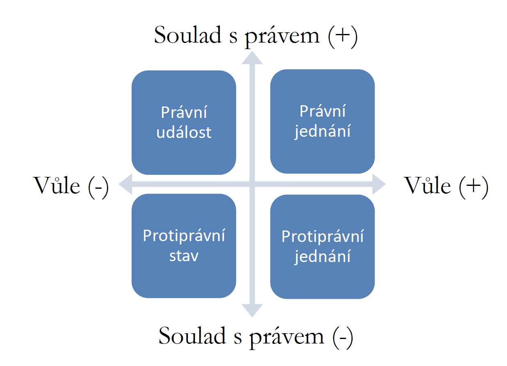
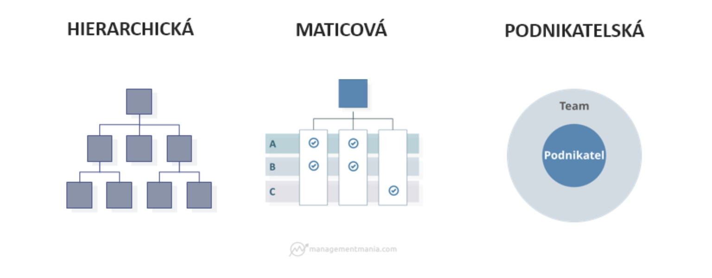
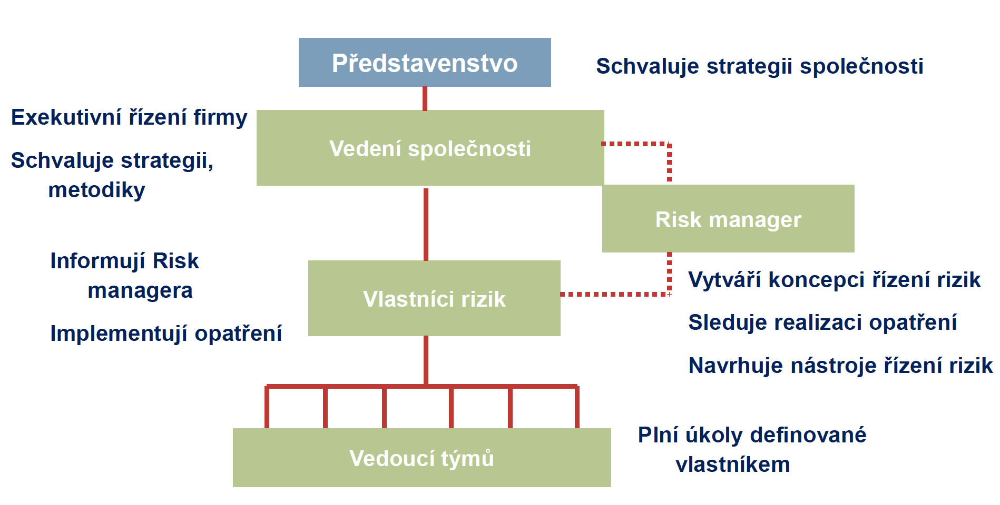
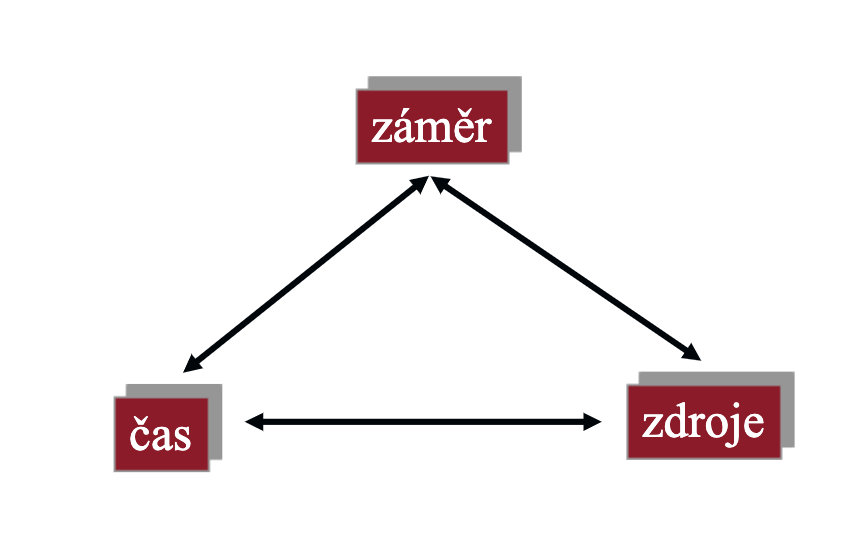
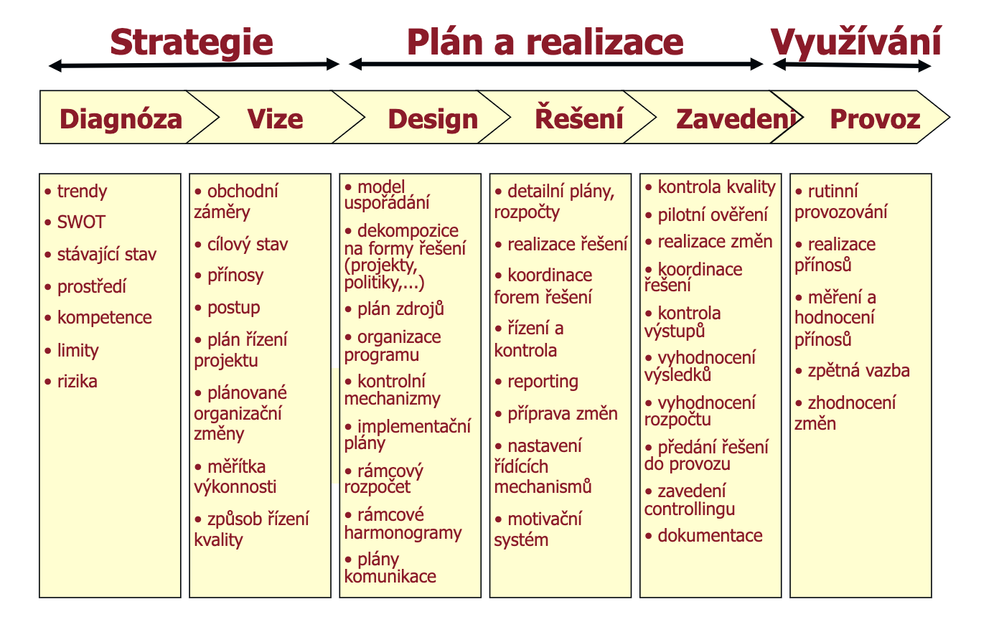
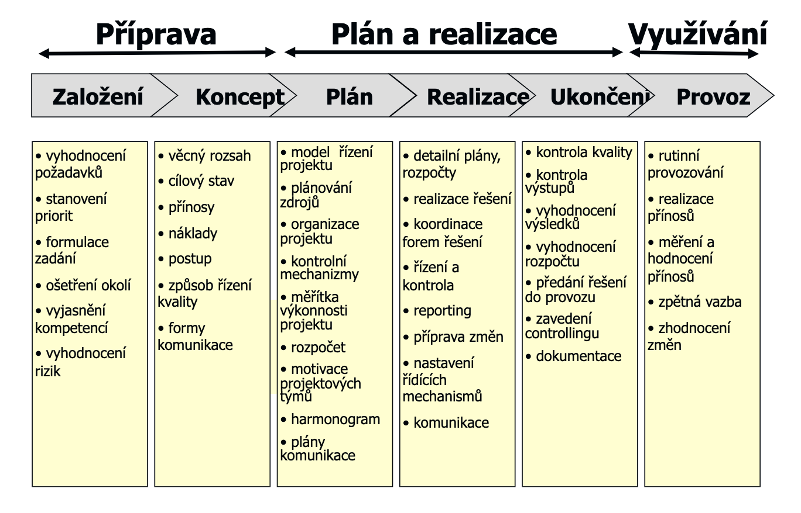
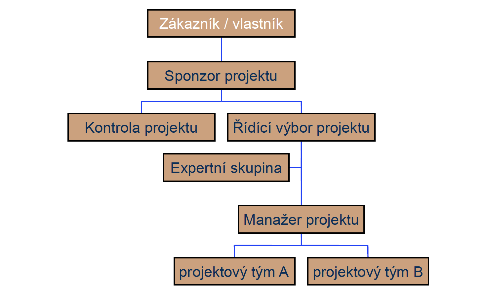

Lidé se při svém chování sledující uspokojení nejrůznějších potřeb a zájmů dostávájí mezi sebou do vzájemných vztahů (společenských vztahů), ale nejenom mezi sebou, uspokojení potřeb se týká například i zvířat, věcí neživých (hmotných a nehmotných) a podobně.
Aby tyto vztahy fungovaly správně (aby se zajistila nějaká funkčnost) a nevznikal chaos a nepořádek usmyslela si společnost určitý řád (consensus, jedná se o lidský konstrukt).
Tyto pravidla jsou vyjádřením zásad, na kterých společnost spočívá, s vývojem společnosti se vyvíjel i tento řád, ten udržuje společnost ve stavu, kde platí jakýsi řád a umožňuje tak společnosti rozvíjet se - například správně nastavený řád je základem pro správné fungování ekonomiky a je asi nejdůležitějším faktorem v rámci okolí firem, bez kterého by firmy nemohly fungovat.
Tento řád byl z prvu tvořen zvyklostmi, úzusy, náboženskými pravidly, morálkou a podobně -> některé z těchto nepsaných pravidel se začala diferenciovat a stávat společensky závaznými (všeobecně příjmanými, respektive obecně závaznými) a vynutitelnými.
Tento řád upravoval základní pravidla, na kterých bylo z hlediska různých sociálních konfliktů zvláštní společenský zájem, aby se zajistil pořádek a mír, zachování a vynutitelnost těchto pravidel se staly pro další společenský rozvoj nezbytnou nutností.
Při určitém stupni vývoje tento řád začala pro všechny lidi vynucovat jakási centrální autorita, tou byl stát, který tvořil a garantoval uplatnitelnost a vynutitelnost těchto pravidel jako představitel veřejné moci.
Tyto pravidla se nazývají jako právní pravidla (právní normy), souhrnem těchto norem právní řád, respektive právní systém v objektivním slova smylsu (tvz. objektivní právo), jehož součástí, ačkoli někdy nepsanou, jsou i právní zásady (společně s normami utvářejí funkční strukturu práva).
Právo v objektivním smyslu - právní rámec, stanovuje příkazy a zákazy, jedná se tedy ve své podstatě o psané právo.
Právo v subjektivním smyslu - právo chovat se podle obejktivního práva, tedy právo na to chovat se určitým způsobem.
NOZ lze považovat za nejvýznamější pramen občanského práva hmotného, lze považovat za nejvýznamější soubor pravidel lidského chování v oblasti soukromého práva
Zásadní princip nového občanského zákoníku - autonomie vůle, ne jenom úprava majetkových poměrů, ale taková úprava, která umožní v mezích zákona ponechat jednotlivci co největší prostor k vlastnímu vytváření soukromého života - dává jednotlivcům velkou svobodu při úpravě vzájemných práv a poviností (vzájemných vztahů).
Tyto dvě výše zmíněné body se řídí 3 zásadními zásadami = zásady jsou základní pravidla, které ovládají soukromé právo jako systémový celek a prostupují celou právní úpravou, nutnost je respektovat
lex generalis, pokud není lex specialis řídí se všechny práva a povinnosti osob tímto předpisem
OZ upravuje obecně osoby a jejich stav - právní následky početí, narození člověka a jeho smrt, nabytí/omezení svéprávnosti, právní subjektivitu u FO a PO, vznik a zánik manželství, vznik a zánik partnerství, PO
OZ shrnuje téma soukromého práva do 4 nejdůležitějších právních institutů, osoba, rodina, vlastnictví, závazky
Zásady
Stanovuje mnoho zásad - vymezeno v obecné části občanského zákoníku, obecně do § 14
Rovnost osob, ochrana slabší strany - spotřebitel, nájemce, nezletilí
výklad a použití právního předpisu nesmí vést ke krutosti/bezohlednosti nebo být v rozporu s dobrými mravy
Soukromé právo chrání svobodu a důstojnost člověka
Ochrana života, zdraví, svobody, cti, důstojnosti a soukromí
Rodina, rodičovství a manželství požívají zvláštní ochrany
Nikdo nesmí pro nedostatek věku, rozumu nebo pro závislost svého postavení utrpět újmu
Povinnost splnit slib, povinost poctivého obchodního styku, pactum sum servata
Ochrana vlastnického práva
Nikomu nelze odepřít co mu po právu náleží
Hledisko běžné opatrnosti a profesionality podnikatele
Každý má povinnost jednat v právním styku poctivě, v souladu s dobrými mravy, bezdůvodně neškodit, ochrana dobré víry
Zjevné zneužití práva nepožívá právní ochrany
Ochrana v minulosti nabytých práv - zákaz retroaktivity
Právo člověka končí tam, kde začíná právo jiného člověka
Každý může činit co právo nezakazuje, nikdo nemůže být nucen činit to co právo neukládá
Pokud nelze právní případ rozhodnout podle výslovného ustanovení -> rozhodne se podle nejbližšího podobného ustanovení -> jinak podle principů spravedlnosti a zásad
Zásado kdo dřív přijde, ten dřív mele -> například KN
Judikatura má precedenční charakter - očekávání, že případ bude vyřešet obdobně, jako případy podobného typu -> pokud ne, nárok na vysvětlení
Vyvratitelná právní domněnka, že osoba jednala poctivě a s dobrou vůlí
Dobrá vůle obejtivně - osoba a všechny ostatní osoby jsou přesvědčeny, že osobě právo patří, a že osoba jedná po právu
Dobrá vůle subjektivně - osoba je přesvědčena, že jí právo patří a že jedná po právu
bona fides
Předmět
Předmět stanovuje §1 odstavec 2 Občanského zákoníku, respektive stanovoval za účinnosti starého Občanského zákoníku majetkové vztahy FO a PO, majetkové vztahy mezi těmito osobami a státem, jakož i vztahy vyplývající z práva na ochranu osob, pokud tyto občanskoprávní vztahy neupravují jiné zákony .
Nově lze definovat předmět občanského práva hmotného jako: Občanské právo lze vymezit jako obecné soukromé právo, jehož předmětem jsou osobní, rodinná a majetková práva a povinnosti subjektivní povahy, které se vztahují na všechny osoby občanského práva a na všechny občanskoprávní záležitosti, jež se mezi nimi navzájem příznačně realizují na zásadách jejich autonomie vůle a rovného (rozuměj hmotněprávního) postavení jako nejvýraznějších projevů jejich svobody, důstojnosti a rovnosti v soukromém právu.
Předmět -> obecné soukromé právo, jehož předmětem jsou -> osobní, rodinná a majetková práva a povinnosti subjektivní povahy, které se vztahují na všechny osoby občanského práva + na všechny občanskoprávní záležitosti
Prameny
Materiální prameny = nepsané skutečnosti, které stát nutí k určité právní úpravě
Formální prameny = psané právo
Ve stejné publikaci Občanské právo hmotné od Wolters Kluwer.
Zásadním pramenem je Občanský zákoník, jsou ale i další prameny občanského hmotného práva, ZOK, zákon o pojistné smlouvě, zákon o právu autorském, o katastru nemovitostí etc.
Prameny občanského práva úplně low level vycházejí z Ústavního pořádku Čr, především z Ústavy Čr a Listiny základních práv a svobod.
OZ patří mezi nejrozsáhlejší právní kodexy českého právního řádu.
Převažují v něm normy dispozitivní
OZ patří mezi obecný základ dalších právních odvětví soukromého práva a tvoří základ celého právního řádu
Dále: ustálená rozhodovací praxe soudů, zvyklosti - pokud se jich dovolává zákon, obecné právní zásady, dobré mravy a veřejný pořádek, zasahují do něj i mezinárodní smlouvy
Systém
Ibid.
Děleno do 5 částí:
Část první - obecná část - obecné zásady, statusové právo FO a PO, PO, ústav, nadace, podnikatel, věci a skutečnosti
Část druhá - rodiné právo - manželství, příbuzenství, vztahy mezi rodiči a dětmi
Část třetí - absolutní majetková práva - věcná práva (vlastnická práva, držba, věcná práva k věci cizí - právo stavby, věcná břemena, zástavní právo, zadržovací právo, předkupní právo) - princip numerus clausus, dědické právo, na roveň staveno vlastnictví hmotných a nehmotných statků, zvířata jako nevěci, superficies solo cedit, věcná práva k věcem cizím, držba
Část čtvrtá - relativní majetková práva - závazkové právo, smlouvy, závazky z deliktního jednání, odpovědnost za škodu, smlouvy původně upravené v obchodním zákoníku, nekalá soutěž
Část pátá - ustanovení společná, přechodná a závěrečná - legislativně technická problematika, rušení zákonů - například Obchodní zákoník
Systematika občanského zákoníku
Právní síla.
Nad Primární a Sekundární by se dali ještě zařadit mezinárodní smlouvy a právo EU.
Sekundární - podzákonné - Právní předpisy exekutivy - Nařízení vlády, vyhlášky ministerstev a jiných správních úřadů, vyhlášky ČNB, nařízení Obcí a Krajů v přenesené působnosti, rozhodnutí prezidenta Čr, právní předpis územní samosprávy - vyhlášky krajů a obcí
Členění občanského zákoníku je na:
Část
Hlavu
Díl
Oddíl
Pododdíl
Ibid.
Dispozitivní a kogentní normy v občanském zákoníku
Existují kogentní a dispozitivní ustanovení
V novém občanském zákoníku platí zásada autonomie vůle, jak si mezi sebou tedy strany ujednají vzájemná práva a povinnosti je čistě na nich, musí se jen řídit základními ustanoveními zákona a rovněž se nesmí odchýlit od kogentních norem daného zákona.
Strany se v žádném případě nemohou odchýlit od zákona
Není možné ochýlit se od její dispozice.
Skladba právní normy:
Hypotéza - například časové, místní určení, osobní, věcná
Distpozice - příkaz, zákaz, dovolení, právo (strpět, dát, zdržet se, konat)
Sankce - pokud osoba nejedná s ohledem na dispozici
Druhy norem
Přikazující
Zakazující
Opravňující
Doporučující
Teleologické - vyjadřují cíl, ale né prostředek jak ho dosáhnout, ten je standardně ponechán na adresátovi právní normy
Typické zejména pro právo veřejné, veřejná ingerence do práva.
Nepřipouští subjektům právního vztahu odchýlení projevu vůle či chování od pravidla stanoveném v kogentní normě.
Subjektům práva stanovují práva a povinnosti a to podmíněně, nebo nepodmíněně (podmíněné - obsahují hypotézu, nepodmíněné - neobsahují hypotézu).
Rovněž se není možné ochýlit od práva, pokud by takové ujednání mezi stranama porušivalo dobré mravy, nebo veřejný pořádek -> jinak stíženo absolutní neplatností
Kogentní části občanského zákoníku:
Část například statusová -> nikdo se nemůže vzdát právní subjektivity.
Obecná část
Paragrafy 1 až 14.
Princip oficiality = například soud musí začít konat z úřední povinnosti Princip legality = OVM může konat jen to, co mu ukládá zákon
|————————————–| | Zdroje a poznámky pod čarou | |————————————–|
|——————————| | Vysvětlení a Poznámky | |——————————|
Osoby v právním smyslu
Osobami v právním smyslu jsou osoba fyzická a osoba právnická - § 18 OZ
Subjekty občanského práva
Subjekt = osoba, pouze osoba je nositelem práv a povinností a pouze po ní je možné je vymáhat § 17 OZ
Pokud je zřízeno právo něčemu, co osoba není, přičte se takové právo osobě, které po právu náleží -> tzn. pokud by bylo zřízeno právo věci, přičetlo by se vlastníkovi dané věci.
Definice osoby v právním slova smyslu = soubor vlastností, jimiž jsou vybaveni potenciální účastníci právních vztahů.
Jinak, čistě obecně řečeno = osobou je každá biosociální bytost bez ohledu na další charakteristiku.
Primárně je potřebné definovat jednotlivé způsobilosti a právní osobnost
Rozdíl mezi právní osobností a svéprávností.
Právní osobnost (právní subjektivita) - schopnost míz v mezích zákona práva a povinnosti.
Právní subjektivita je tedy = způsobilost k právům a povinnostem - pouze osoba
Svéprávnost - schopnost nabívat pro sebe práva a povinnosti (tedy právně jednat) - svéprávnost má každý, i nezletilý, ten ale jenom v rámci své rozumové a volní vyspělosti, plnou svéprávnost má pak každý, kdo dovršil zletilosti a není soudem omezen na svéprávnosti.
Deliktní způsobilost
způsob založit svou odpovědnost, tedy nést nepříznivé právní následky za zaviněné protiprávní jednání - například náhrada škody
způsobilost k zaviněným protiprávním jednáním
§ 24 - každý člověk odpovídá za své jednání, je-li s to posoudit jej a ovládnout - posouzení je tedy ve vazbě na schopnost posoudit své jednání a své jednání ovládnout.
kdo se vlastní vinou přivede do stavu, kdy by jinak za své jednání neodpovídal -> odpovídá za své jednání
§ 2922 - ti, kteří svým přičiněním přivedli osobu do daného stavu s ní odpovídají společně a nerozdílně
zákon upravuje i zodpovědnost za osobu s nebezpečnými vlastnostmi - zodpovědný je ten, který jí má na starosti
v plném rozsahu se nabije plnou svéprávností - nezletilý například nemá plnou deliktní způsobilost -> protože nemůže uzavírat všechny právní jednání
Právní osobnosti ani svéprávnosti se nikdo nemůže vzdát. 4
Fyzické osoby
Bez ohledu na svéprávnost, právní osobnost, nebo jakoukoliv způsobilost -> každý člověk má vrozená, již samotným rozumem a citem poznatelná přirozená práva, a tudíž se považuje za osobu
Daná osoba => má právní subjektivitu a je tak subjektem práva
Zákon upravuje jakým způsobem je možné mít práva a povinnosti
Identifikační znaky fyzických osob: jméno, bydliště, datum narození a další identifikační údaje podle jiných právních předpisů.
Bydliště - § 80 OZ - člověk má bydliště v místě, kde se zdržuje s úmyslem tam žít s výhradou změny okolností trvale.
každý se může dovolat skutečného bydliště,
Nemá-li člověk bydliště, považuje se za něj místo kde žije
Nelze-li zjsitit -> místo kde má majetek, popřípadě místo, kde žil naposledy
Vznik právní osobnost (právní subjektivity): narozením
Zánik právní osobnosti: smrtí
Právní osobnosti, ani svéprávnosti se nikdo nemůže vzdát ani zčásti - kogentní ustanovení.
Fyzická osoba -> jako účastník občanskoprávních (soukromoprávních) vztahů -> tvořena právním postavením (pasivní status) a souborem způsobilostí, na jejichž základě se může aktivně účastnit soukromoprávních vztahů (aktivní status)
Pasivní status - právní subjektivita (právní osobnost) a soubor základních práv a svobod
Aktivní status - svéprávnost - způsobilost k právním úkonům, protiprávním úkonům a protiprávním jednáním
Co se počatého dítěte týče -> nasciturus, hledí se na něj jako už na narozené, pokud to vyhovuje jeho zájmům -> § 24 OZ
vyvratitelná právní domněnka: dítě se narodilo živé, pokud se ale živé nenarodilo, hledí se na něj, jako by nikdy nebylo
nasciturus má jinak právo nabívat subjektivní práva a podle § 19 OSŘ má i procesní způsobilost -> předpokládám, že by byl zastoupen zákonným zástupcem, nebo opatrovníkem
Důležitý pojem: plná svéprávnost a zletilost
Existují dvě formy svéprávnosti -> svéprávnost a plná svéprávnost
Svéprávnost -> svéprávný je každý -> v mezích běžného života i člověk, který je omezen na svéprávnosti, rovněž nezletilý (osoba, která nedovršila věku 18ti let) -> ta je svéprávná v mezích své rozumové a volní vyspělosti a v té také může nabívat práva a povinnosti
Plná svéprávnost -> plně svéprávný je:
Zletilý člověk, který není omezen na svéprávnosti
Plně zesvéprávněný nezletilý -> hovoří se pak o takzvaném plně svéprávném nezletilém
V případě, že dosáhl 16 roku života a nechal se A) zesvéprávnit soudem (přiznání svéprávnosti) B) uzavřel manželství
Svéprávnost se nabívá postupně
Plnou svéprávnost nemá - nezletilý, ten jehož svéprávnost byla omezena rozhodnutím soudu, podle § 581 rovněž osoba jednající v duševní poruše, která jí činí neschopnou právně jednat, tady se ale jedná o speciální institut
Blíže k přiznání svéprávnosti nezletilému
§ 31 - má se za to, že každý nezletilý, který nenabyl plné svéprávnosti, je způsobilý k právním jednáním co do povahy přiměřeným rozumové a volní vyspělosti nezletilých jeho věku.
Zesvéprávnění
Uzavřením manželství - § 30
neztrácí se zánikem manželství, ani jeho prohlášením za neplatné
do 18 let -> plně svéprávný nezletilý
§ 672 (2) -> nejdříve v 16 letech
Ve výjimečných důvodech, jsou-li pro to důležité důvody
Přiznání svéprávnosti - § 37
podmínky
nezletilý dosáhne 16 let
osvědčena jeho schopnost sám se živit a obstarat si své záležitosti
souhlas zákonného zástupce
soud může vyhovět i v ostatních případech, je-li to z vážných důvodů v zájmu nezletilého
na návrh nezletilého nebo zákonného zástupce
Existují ještě další dva instituty, kdy může nezletilý jednat ve větším rozsahu
Přivolení jeho zákonného zástupce - ve shodě se zvyklostmi běžného života k právnímu jednání nebo dosažení určitého účelu - pokud to není zákonem zakázáno, může vzít zpět, stačí souhlas jednoho zákonného zástupce, pokud více zákonných zástupců není ve shodě - nepřihlíží se k projevu žádného z nich.
Přivolení zákonného zástupce s provozováním obchodního závodu nebo k jiné obdobné výdělečné činnosti -> nezletilý je způsobilý k právním jednáním spojeným s danou činností nebo provozování závodu -> je potřeba přivolení soudu -> to nahrazuje požadavek věku -> může být odvoláno pouze s přivolením soudu
Blíže ke vzniku a zániku (smrt) právní subjektivity
Vzniká narozením
Zaniká smrtí
Blíže ke smrti
smrt je definována v transplantačním zákoně - ztráta funkce celého mozku, včetně mozkového kmene, nebo nevratná zástava krevního oběhu
Důkaz smrti, prokazování smrti
Smrt člověka se prokazuje veřejnou listinou vystavenou po prohlédnutí těla mrtvého stanoveným způsobem -> vyvratitelná právní domněnka, že tam kde bylo nalezeno tělo je i místo úmrtí
Lékař po ohledání a konstatování smrti zašle oznámení matričnímu úřadu -> ten vydá úmrtní list (to je ta veřejná listina)
Pokud tělo nelze prohlédnout -> prohlásí člověka za mrtvého i bez návrhu soud -> pokud byl člověk účastníkem takové události, že jeho smrt se jeví vzhledem k okolnostem jako jistá -> místo úmrtí to, kde naposledy člověk pobýval živý.
Úmrtní list obsahuje údaje zapsané v matriční knize úmrtí, do té lze zápis provést právě na základě výše uvedených skutečností -> listu o prohlídce zemřelého/pravomocné rozhodnutí soudu o prohlášení člověka za mrtvého
Pokud právní následek záleží na tom, zda někdo přežil někoho jiného a není-li jisté kdo koho přežil -> platí, že všichni zemřeli ve stejnou chvíli.
Prohlášení za nezvěstného
Prohlášení soudem/pokud nastala právní událost naplňující zákonné předpoklady
§ 66 - prohlášení soudem -> pokud svéprávný člověk opustil své bydliště, nepodal o sobě zprávu a není známo, kde se zdržuje -> na návrh osoby, která na tom má právní zájem
§ 75 - nezvěstnost jako účastník události, při níž byl v ohrožení větší počet osob -> důležité pro okamžik, od kterého může být prohlášen za mrtvého -> zde je to 3 roky
Právní následky nezvěstnosti
Finguje se, že osoba není -> pokud je potřeba jeho souhlasu, přivolení atd., k této potřebnosti se nepřihlíží
Netýká se však osobního stavu - tedy například manželství trvá
Každý, kdo jedná, dotýkaje se záležitostí nezvěstného, musí tak činit s přihlédnutím k jeho zájmům
právní jednání učiněná bez souhlasu nezvěstného po tom, co opustil bydliště, ale zatím nez prohlášení -> pohlíží se na ně jako na platná jednání -> jen se k nim přiřadí odkládací podmínka, kterou je vydání rozhodnutí o nezvěstnosti
kdo byl prohlášen za nezvěstného -> nemůže namítat neplatnost, nebo neúčinnost právního jednání učiněného za jeho nepřítomnosti, pro to, že se při nich projev jeho vůle nevyžadoval
Zánik prohlášení za nezvěstného -> návrat, nebo prohlášení za mrtvého
Domněnka smrti
Jedná se o situaci rozdílnou oproti důkazu smrti -> tam člověk opravdu zemřel, nebo byl účaste takové situace, kdy je důvodné předpokládat že zemřel.
Zde se jedná pouze o domněnku smrti, na základě které soud prohlásí dotčenou osobu za mrtvou.
Pokud je prohlášení mylné
k prohlášení za mrtvého se nepřihlíží
manželství a registrované partnerství se ale neobnovuje
Prohlášení za mrtvého v rámci domněkdy smrti -> založeno na jisté míře pravděpodobnosti a 2 situacích
První situace: na návrh osoby, která na tom má právní zájem: lze prohlásit člověka za mrtvého, pokud lze mít důvodně za to, že zemřel
Prohlášení za mrtvého -> hledí se na něj jakoby zemřel -> zaniká manželství
Nezvěstný člověk, který ale nebyl za nezvěstného prohlášen -> lze prohlásit za mrtvého nejdříve po uplynutí 7 let od roku, v němž se objevila zpráva, že by daný člověk mohl ještě být naživu
Druhá situace: pokud byl člověk prohlášen za nezvěstného -> na návrh osoby ho může soud prohlásit za mrtvého pokud jsou pochybnosti, že je ještě živ, i když jeho smrt není jistá.
Prohlásit člověka za mrtvého lze v tomto případě po uplynutí 5 let po konci roku, v němž byl daný člověk prohlášen za nezvěstného
Pokud se objevila zpráva, z níž lze soudit, že je člověk naživu - lhůta 7 let.
U obou situací nesmí být člověk prohlášen za mrtvého, pokud se stal nezvěstným před dovršením 18 roku života do doby než uplyne minimálně 25 let od jeho narození.
Ochrana osobnosti člověka
Pojem ochrany osobnosti
§ 3 OZ - ochrana života, zdraví, svobody, cti, důstojnosti, soukromí
široký a různorodý soubor dílčích práv - nemajetkových práv, která poskytují osobě soukromoprávní ochranu osobnostních práv - související s - osobní svobodou, tělesnou integritou, soukromím, rodiným životem, ctí, důstojností a postavení ve společnosti
Jednotlivé složky:
Co se ochrany týče -> § 81 stanovuje takzvaná všeobecná osobností práva - přirozená práva -> každý je povinen je ctít, respektive stanovuje výčet jednotlivých složek (hodnot) osobnosti
§ 84 až 114 - poskytuje další demonstrativní výčet jednotlivých osobnostních práv
Ochrana osobnosti je zakotvena i v Ústavě, LZPS, mezinárodních úmluvách a dalších zákonech - například antidiskriminační zákon, zákoník práce atd.
Osobnost v právním smyslu = všeobecné osobnostní právo = celek hodnot lidské osobnosti
patří spolu se statusovými právy do soukromých práv osobních
neoddělitelně spjata s osobností člověka
má absolutní povahu erga omnes
trvá od narození do smrti
§ 81 - 114 OZ
Ochrany požívá zejména: život, důstojnost, zdraví, právo žít v příznivém životním prostředí, vážnost, čest, soukromí a projevy osobní povahy.
Dále jsou chráněny: písemnosti osobní povahy, podobizny, obrazové a zvukové záznamy -> tedy lidé na nich, je možné je reprodukovat pouze se svolením daných osob/popřípadě pokud je licence -> úřední, vědecká, umělecká, zpravodajská
Jak je možné se chránit?
V případě předpokladů naplňujících podmínky vzniku odpovědnosti: existence zásahu, jeho neoprávněnost a přičinné souvislosti mezi existencí zásahu a jeho neoprávněnosti
Klasickými způsoby:
žaloby negatorní - zdržení se protiprávního jednání
žaloby restituční - odstranění následků protiprávního jednání
a satisfakce - forma morální, například omluva, nebo i finanční zadostiučinění
Kdo může právo na ochranu uplatnit?
Samozřejmě postižený člověk
Rovněž právnická osoba se souhlasem postiženého člověka (jméno souvisí s činností daného člověka v právnické osoby)
Právní nástupce po jeho smrti -> tedy rodina, rovněž po smrti může právo na ochranu uplatnit i právnická osoba
Předmětem osobnostních práv je v NOZ obecně osobnost člověka včetně všech jeho přirozených práv a svoboda člověka žít podle svého
Dále jsou tedy upraveny obecně druhy ochrany, jíž osobnost člověka požívá (viz výše)
Krom těchto obecných ochran upravuje NOZ i další specifické druhy ochran, těmi jsou:
podoby a soukromí (viz výše)
právo na duševní a tělesnou integritu - standardně se jedná o zdravotnické zásahy - musí být udělen souhlas, nemusí pokud je v ohrožení života, souhlas může udělit osoba blízká
Právům člověka převzaného do zdravotnického zařízení bez jeho souhlasu
Nakládání s částmi lidského těla a ochranu lidského těla po smrti člověka (součásti lidského těla, které nelze bezbolestně odebrat nejsou věcmi, věcmi jsou ale například - vlasy, ostříhané nehty)
Jméno a pseudonym
Podpůrná opatření při narušení schopnosti zletilého právně jednat
Předběžné prohlášení
Nápomoc při rozhodování
Zastoupení členem domácnosti
Omezení svéprávnosti
Koblížek.
Definiční znaky
Nasciturus
Možnost vstupovat do právních vztahů a mít z nich práva a povinnosti
|————————————–| | Zdroje a poznámky pod čarou | |————————————–|
|———| | Úkoly | |———|
§ 118 - 435
Pojem
Třídění
Organizační struktura
Přičítání právního jednání a protiprávních činů
Vznik a zánik
Likvidace
Přeměny
|————–| | Paragrafy | |————–|
§ 118 - 435
|——————————| | Vysvětlení a Poznámky | |——————————|
Pojem
NOZ se v pojetí subjektivity právnické osoby jakožto základního předpokladu existence právnické osoby přiklání teorii fikce podle § 20 OZ - svou subjektivitu tedy právnická osoba odvozuje od zákonného uznání, nebo stanovení, že se jedná o právnickou osobu - co se týče soukromoprávních PO.
Veřejnoprávní PO se řídí vlastními zákony - ustanovení občanského zákoníku se použijí pouze tehdy, pokud se to slučuje s povahou právnické osoby.
Obsahem právní osobnosti právnické osoby jsou práva a povinnosti -> ty jsou omezena pouze na ty, která se slučují s jejich povahou -> toto ustanovení lze chápat ve třech rovinách:
První rovina = omezení práv a povinností ve smyslu těch, která přísluší výhradně člověku -> tedy například právo osvojit si dítě, vyživovací povinnost atd.
Druhá rovina je omezení stanovená pro právnické osoby veřejného práva -> ty jsou vyhrazeny ve zvláštních zákonech - například obce a kraje a soukromého práva -> nadace, spolky…
Třetí rovinou jsou omezení, stanovená pro jednotlivé typy právnických osob podle formy - tedy rozdíly u a.s., s.r.o. atd.
Veřejné rejstříky a identifikace právnických osob
NOZ se věnuje částečně i rejstříku právnických osob -> detailní úprava je však ponechána vzhledem ke svému veřejnoprávnímu charakteru na dalších předpisech a pouze stanovuje základní regulativní rámec -> povinně zapisované údaje a zásady materiální a formální publicity.
Materiální publicita = lze důvěřovat údajům zapsaným v rejstříku -> ten kdo se jich dovolá -> není proti němu možné namítat, že údaje neodpovídají skutečnosti -> podpořeno i tím, že pokud se nějaký zapsaný údaj změní -> zapsaná osoba to musí oznámit tomu, kdo vede rejstřík -> ten opraví
Formální publicita = rejstřík je veřejně přístupný veřejnosti k nahlédnutí, k tvoření výpisů a opisů
Základní povinně zapisované údaje:
Název
Sídlo
Den vzniku, zrušení a zániku
Činnost
Členové statutárního orgánu (jejich identifikační údaje) a způsob jejich jednání a časové vymezení jejich funkce
Identifikace PO
Odlišuje od jiných osob - nesmí být zaměnitelný a klamavý, složen z kmenu a právní formy (viz otázka Obchodní právo).
Název může obsahovat i jméno FO -> se souhlasem a pokud je k němu zvláštní vztah
Zaměnitelnost jmen není tak přístá v případě -> že se jedná o koncerny
Název FO je chráněn i před zpochybněním a hrozící újmou -> tedy potenciálními zásahy, rovněž je chráněna pověst (goodwill) PO
Sídlo
Můžě být i v bytě - pokud nenarušuje klid a pořádek -> například časté obchodní návštěvy
Skutečné/zapsané -> každý se může dovolat jak skutečného, tak i zapsaného sídla
Přemístění -> je možné ze zahraničí do Čr -> pak je potřeba zvolit českou formu právnické osoby, nebo i z Čr do zahraničí, pokud to neodporuje veřejnému pořádku a právnímu řádu země, do které chce PO sídlo přemístit
Veřejná prospěšnost
Účel PO může být i obecně prospěšný -> svojí činností přispívá k veřejnému blahu -> své jmění využívá k veřejně prospěšnému účelu.
Příkladem může být nadace.
Výkon pouze bezúhonými osobami a majetek z poctivých zdrojů
Jednání
Jsou zastupovány FO, které za ně jednají ve smyslu přímého zastoupení (na jejich účet, jejich jménem) přímo jako jejich orgány, nebo na základě smluvního zastoupení (přímého, nepřímého).
Základem jsou však orgány -> individuální (jeden člen), kolektivní (více členů).
Protiprávní jednání FO zaměstnaných v PO, nebo jí zastupujících vůči třetí osobě PO zavazuje -> sankce tedy postihuje právnickou osobu -> ta ale může uplatnit regres -> vymáhání náhrady za plnění, které bylo poskytnuto za jinou osobu, která by jinak měla plnit.
Člen orgánu má ale povinnost jednat s péčí řádného hospodáře - to zahrnuje loajalitu, potřebné znalosti a pečlivost.
Je tedy potřebné říci, že například člen statutárního orgánu, pokud by porušil péči řádného hospodáře -> byl by odpovědný on sám, a to ať už ve vztahu k samotné právnické osobě, nebo ve vztahu k osobám třetím.
Třídění
Viz otázka v Obchodním právu.
Buď na veřejnoprávní a soukromoprávní.
Nebo na:
Korporace - spolky, družstva, obchodní korporace
Fundace - nadace a nadační fondy
Ústavy
Spolek - tvoří společenství osob, jehož základem je osobní složka (corpus = latinsky tělo).
Nejméně tři osoby, společný zájem na vytvoření samosprávného dobrovolného svazku.
Zákaz nucení vstupu, nebo zákazu vystoupení
Členové neručí za jeho dluhy
Organizaci je možné zvolist ve stanovách - ty mohou orgány pojmenovat jakkoliv, jen nesmí působit klamavým dojmem.
V základ nejvyšší orgán - členská schůze, statutární orgán - individuální (předseda), kolektivní (výbor), dále může být zřízena kontrolní komise a rozhodčí komise.
Název - dodatek - spolek, zapsaný spolek, nebo z.s.
Hlavní činností -> pouze ochrana a uspokojování těch zájmů, které vedly společníky k jeho založení, podnikání však může být jako vedlejší činnost spolku -> zisk z dané činnosti je však možné použít pouze pro účely spolku
Nelze zakládat za účelem podnikání, nebo jiné výdělečné činnosti
Příkladem může být spolek pro obnovu venkova Čr
Je zapisován do spolkového rejstříku.
Fundace - PO vytvořená majetkem vyčleněném k určitému účelu - činnost se váže k účelu k němuž byla zřízena (fundus = latinsky základ)
Fundace se ustanovují zakladatelským právním jednáním nebo zákonem
Nadace a nadační fondy
Nadace
Založení k užitečnému účelu -> veřejně prospěšný/dobročinný
Zákaz založení k podpoře politických stran, nebo za výdělečnými účely -> soud takovou může i bez návrhu zrušit s likvidací
Smí podnikat -> výtěžek ale smí použít pouze k podpoře svého účelu, podnikání musí představovat pouze vedlejší činnost, podnikání je možné vyloučit v nadační listině zakladatelem -> pak podnikat nesmí
Název -> obsahuje slovo nadace a standardně i uvádí její účel
Založení nadační listinou -> tou může být zakládací listina, nebo pořízení pro případ smrti
Nadační listina -> musí mít formu veřejné listiny -> povinný obsah -> název, sídlo, jméno a bydliště zakladatele, účel a výši nadačního kapitálu - při založení minimálně 500 000 Kč.
Organizace: upravuje její statut, statutárním orgánem je správní rada (alespoň tři členové), dozorčím orgánem bývá dozorčí rada, pokud není zřízena, tak revizor.
Nadace vzniká dnem zápisu do nadačního rejstříku a zaniká dnem výmazu z něj.
Nadační fond - rovněž veřejný nebo dobročinný účel
Zakládá se rovněž veřejnou listinou, od nadace se liší tím, že není trvalý -> majetek nemusí splňovat předpoklad trvalého výnosu -> naopak může být celý spotřebován k účelu, pro nějž byl založen.
Na rozdíl od Nadace - minimální výše jeho majetku není limitována.
Název -> musí obsahovat slova nadační fond -> například nadační fond obětem holocaustu
Založení - viz nadace, zápis do nadačního rejstříku
Jinak platí obdobně co o nadaci - podnikání, orgány etc.
Ústav je právnická osoba ustavená za účelem provozování činnosti užitečné společensky nebo hospodářsky s využitím své osobní a majetkové složky.
Ústav provozuje činnost, jejíž výsledky jsou každému rovnocenně dostupné za podmínek předem stanovených.
Název ústavu musí obsahovat slova „zapsaný ústav“, postačí však zkratka „z.ú.“
Od korporací se liší tím, že řízení a provoz v nich nezajišťují členové, ale zaměstnanci.
Statutárním orgánem ústavu je ředitel odpovědný správní radě, která ho do funkce jmenuje a z funkce odvolává, je možné založit i dozorující orgán (například dozorčí rada).
Ústavů je mnoho, podle zaměření jejich činností a způsobů jejich založení a řízení se rozlišují ústavy soukromoprávní a veřejnoprávní.
Ústavy se vyskytují ve všech oblastech společenského a hospodářského života.
Dobrým příkladem ústavu je Charita České republiky, nebo Výzkumný ústav práce a sociálních věcí.
Zákon dává možnost ústavu založit obchodní závod či provozovat vedlejší činnost -> domnívám se tedy, že fakticky může podnikat.
Domnívám se, že kvůli své veřejné prospěšnosti může být zisk použit opět jen pro účely fungování ústavu.
Zapisuje se do rejstříku ústavů.
Ahojda
Organizační struktura
NOZ předpokládá, že právnická osoba je organizovaným útvarem, čímž naznačuje existenci její vnitřní struktury - tak to i musí být, protože právnická osoba je jen fingovaná osoba, není skutečně živá a nemá svéprávnost, vždycky tedy musí být někdo, kdo jí bude zastupovat a jehož přičiněním bude daná právnická osoba nabívat práv a poviností.
Struktura právnické osoby je v právním smyslu složena z jejích orgánů, jejichž členové jsou buď fyzické osoby nebo právnické osoby -> ty ale zastupuje člen jejich orgánu, nebo pověřená osoba.
Detailní úprava požadavků na tuto strukturu však již ponechává otevřenou pro regulaci ustanoveními k jednotlivým typům společností.
Ty jsou upraveny pro některé druhy právnických osob v občanském zákoníku, pro jiní je zas úprava obsažena v jiných právních předpisech, například pro obchodní korporace je daná úprava obsažena v zákoně o obchodních korporacích a družstvech.
Založení, vznik, zrušení & zánik právnické osoby
NOZ staví na čtyřstupňovém životním cyklu právnických osob - tedy založení, vznik, zrušení (s likvidací a bez likvidace) a zánik - na rozdíl od fyzické osoby, kde je vznik právní subjektivity narození a zánik smrt.
Vě věci založení zavádí NOZ pojem zakladatelské právní jednání - povaha jednání jako skutečného projevu vůle se svým obsahem, zatímco dokument jako jeho pouhého formálního zachycení - standardně má ale formu veřejné listiny.
Zakladatelské právní jednání má rozdílnou povahu (formu) u různých právnických osob - u s.r.o. je to například společenská smlouva -> více zakladatelů, nebo zakladatelské listiny v případě jednoho zakladatele.
Po založení a dalších náležitých úkonech spojených se založením právnické osoby (tady je potřeba mnoha dalších náležitostí - otevření vkladového účtu, potvrzení od banky o složeném základním kapitálu, právní titul k místu, kde bude sídlo, ustanovující schůze, podpisové vzory atd.) -> vznik -> vznik nastává okamžikem zápisu do příslušného veřejného rejstříku (návrh na zápis je potřeba podat do 90 dnů od založení - buď přímo na rejstříkový soud, nebo pomocí notáře) -> jedná se tedy o konstitutivní zápis.
Po vzniku PO se již nelze domáhat toho, že osoba nevznikla -> soud může pouze ve vymezených důvodech prohlásit neplatnost podle § 129 OZ, a to v případě, že nejsou odstraněny nedostatky v přiměřené lhůtě § 130 OZ -> například pokud není v pořádku zakladatelské právní jednání, právnickou osobu založilo méně zakladatelů, než je potřeba, nebo byla právnická osoba založena za účelem porušování práva.
Prohlášení osoby za neplatnou ale nemá vliv na práva a povinnosti jichž nabyla.
Zrušení PO
Právním jednáním jejiho příslušného orgánu
Uplynutím doby na kterou byla ustanovena, pokud není ustanovena na dobu neurčitou (má se za to, že je ustanovena na dobu neurčitou, pokud není určeno datum)
Dosažením účelu, pro který byla založena
Rozhodnutím soudu, či jiného orgánu veřejné moci
Standardně se ruší s likvidací -> likvidátor vymáhá její pohledávky, uhrazuje její dluhy a zpeněžuje její majetek.
Bez likvidace se ruší pouze -> pokud se PO ruší pří přeměně (jmění nabívá právní nástupce), nebo pokud je osvědčen její úpadek -> zrušuje se po zrušení konkurzu po splnění rozvrhového usnesení, nebo pokud je majetek nepostačující ke konkurzu, pokud se nějaký majetek dodatečně objeví -> vstoupí po skončení insolvenčního řízení do likvidace.
Zrušení obecně probíhá z rozhodnutí oprávněného orgánu (standardně nejvyššího), nebo z rozhodnutí soudu.
K zániku dochází dnem výmazu z příslušného rejstříku, u PO, která nepodléhá zápisu dochází k zániku dnem skončení likvidace.
Mezi fází zrušení a zániku probíhá likvidace -> ledaže dojde k jednomu z případů popsaných výše.
Likvidace
Vypořádání majetku a dluhů PO a naložení s likvidačním zůstatekem
Začíná se zrušením PO a zapisuje se do příslušného rejstříku (dodatek v likvidaci)
PO a její likvidaci vede likvidátor, který odpovídá jako člen SO.
Likvidátora povolává i odvolává soud -> musí být způsobilý jako člen SO
Likvidátor vymáhá pohledávky, uspokojuje pohledávky a zpeněží majetek PO, přednostně se uspokojují pohledávky zaměstnanců
Pokud prostředky získané zpeněžením majetku PO převyšují její dluhy, vyplácí se společníkům takzvaný likvidační zůstatek.
Pokud však likvidátor zjistí, že dluhy převyšují majetek PO -> podá insolvenční návrh.
Pokud se objeví další majetek a likvidace neskončila -> zařadí se do likvidační podstaty, pokud skončila -> likvidace se obnoví.
Přeměny právnických osob
Fůze, rozdělení a změna právní formy
Podstatné je stanovení rozhodného data pro účely účetnictví
Účinnost přeměny -> okamžikem zápisu do příslušného rejstříku
Rozhodné datum určuje samo PO, okamžik účinnosti přeměny již závisí pouze na rejstříkovém soudu a okamžiku skončení provedení zápisu.
Fůze sloučením -> dojde k zániku jedné ze zůčastněných PO, její práva a povinnosti přecházejí na jedinou nástupnickou společnost, existující před přeměnou.
Fůze splynutím -> zanikají všechny zůčastněné PO a míto nich vzniká nová nástupnická, ta přebírá všechny jejich práva a povinnosti.
Rozdělení
Rozštěpení rozdělením -> PO se rozděluje se založením novým právnických osob, rozdělovaná osoba se ruší
Rozdělení sloučením -> PO se rozděluje se současným sloučením s jinými právnickými osobami
Odštěpení -> odštěpí se část PO, která se založí jako nová PO, rozdělovaná právnická osoba se ale neruší
Mohou se spojit i více způsobů rozdělení
Povinnost sestavit konečnou účetní závěrku.
Změna právní formy
Je možné změnit právno formu společnosti
Tato změna nemá vliv na práva a povinnosti PO s výjimkou změn, vyplívajících z rozdílné právní formy.
Přeměna vyžaduje sestavení mezitimní účetní závěrky.
|————————————–| | Zdroje a poznámky pod čarou | |————————————–|
|———| | Úkoly | |———|
§ 436 - 488
Zastoupení
Opatrovnictví
|————–| | Paragrafy | |————–|
§ 436 - 488
|——————————| | Vysvětlení a Poznámky | |——————————|
Zastoupení
O zastoupení se jedná v případě, že jeden jedná za druhého jeho jménem a z tohoto jednání vznikají práva a povinnosti zatupovanému.
§ 436 - kdo je oprávněn právně jednat jménem jiného, je jeho zástupcem.
V právním jednáním se osoby tedy občas mohou/musí nechat zastoupit - minimální předpoklad pro zástupce je svéprávnost.
V případě, že není zřejmé, že někdo jedná za někoho jiného platí, že jedná na vlastní jméno - prokázat, že jedná za jiného může plnou mocí.
Zástupcem nemůže být ten, jehož zájmy jsou v rozporu se zájmy zastoupeného, ledaže zastupený o takovémto rozporu věděl, nebo vědět musel.
Pokud třetí osoba věděla o rozporech zájmů - může se toho zastoupený ve svůj prospěch dovolat.
Zástupce musí jednat vždy osobně, jednat může i prostřednictvím zástupce, ale pouze pokud si to ujednal se zastoupeným, nebo vyžaduje-li to nutná potřeba, odpovídá však za výběr zástupce.
Pokud má zastoupený pro tutéž záležitost více zástupců platí, že každý zástupce může jednat samostatně.
Pokud zástupce překročí zástupční oprávnění (takzvaný exces), zavazuje právní jednání zastoupeného, pokud jednání bez zbytečného odkladu schválil, pokud ho neschválil, tak zavazuje zástupce - příklad kdy se toto ustanovení uplatní je například u nepřikázaného jednatelství.
Existují dva druhy zastoupení příme a nepřímé, u přímého jedná zástupce na účet a jménem zastoupeného, práva a povinnosti tedy vznikají přímo zastoupenému, u nepřímého jedná na účet zastoupeného, ale svým vlastním jménem, právní následky tedy vznikají přímo u zástupce, a užitek ze zastoupení potom na zastoupeného musí převést.
Přímé zastoupení
Vzniká na základě zákona (právní zástupce nezletilých), nebo ze smlouvy
Nepřímé zastoupení
= náhradnictví
patří do obligačního práva
substituta je možné ustanovit, jen dovoluje-li to zákon
Druhy zastoupení:
Smluvní zastoupení a prokura
Smlouva o zastoupení - může se jednat jak o přímé, tak o nepřímé zastoupení, například co se týče příkazních smluv
Příkaz
Zprostředkování
Komisionářská smlouva
Zasílatelství
Obchodní zastoupení
zmocnitel a zmocněnec
plná moc - osvědčení pro zástupčí oprávnění
prokura - jen pro podnikatele zapsané v OR
Zákonné zastoupení
vzniká ex lege
děti a rodiče, manželé, zaměstnanec PO
není obligačně právního charakteru
Zvláštní druhy
PO (statutární orgán atd.)
Zastoupení členem domácnosti
Opatrovnictví - na základě rozhodnutí soudu
Smluvní zastoupení
Strany: Zmocnitel (zastupovaný) a zmocněnec (zástupce) - obě strany mohou být jak PO, tak i FO.
Ujednají-li si to strany, zastupuje jedna z nich druhou v ujednaném rozsahu jako zmocněnec.
Právním důvodem vzniku zastoupení je smlouva o zastoupení - osvědčována plnou mocí.
Rozsah zmocnění je uveden v plné moci, u té postačí ověřené podpisy.
Plná moc pouze osvědčuje zastoupení a práva zmocněnce, nejedná se o samotnou smlouvu, přesto je vhodné připojit akceptační doložku, musí v ní být uveden rozsah zmocněncova oprávnění - může být ústní, nebo písemná, standardně je písemná s ověřeným podpisem - nutná je zejména pokud:
Právní úkon, který má zmocněnec učinit má psanou formu,
pokud se plná moc netýká jen určitého právního úkonu.
Rozlišují se dva typy plné moci:
Speciální - udělena k jednomu, nebo k několika speciálním právním jednáním
Generální - udělena ke všem právním jednáním, která by jinak mohl vykonat zmocnitel
Zmocnitel může zmocnění kdykoliv odvolat, pokud jsou však uvedeny důvody odvolání, musí být naplněny.
Pokud je zmocněna právnická osoba, jedná za ni statutární orgán, nebo jiná určená osoba.
Ochrana třetích osob - v případě vyvolání dojmu zastoupení, nebo jednání osoby nezpůsobilé k zastoupení, pokud však nevěděla nebo nemohla vědět -> nelze se dovolat neplatnosti takovéhoto jednání -> tedy zavazuje.
Pokud dojde k excesu a zastoupený s ním nesouhlasí, musí tento svůj nesouhlas bez zbytečného odkladu dát vědět třetí osobě, jinak platí, že schválil (pokud se jedná o zastoupení podnikatele -> pokud je dobrá víra na straně spotřebitele -> je podnikatel vždycky zavázán i při excesu).
Zánik zmocnění: vykonáním zastoupení, zmocnitel odvolá, zmocněnec vypoví, v případě smrti obou stran (v případě smrti zmocnitele pak pouze pokud z plné moci nevyplývá něco jiného), pokud nebylo ujednáno jinak, zmocněnec jedná do té doby, dokud mu zánik zmocnení není znám, v případě smrti zmocnitele, nebo vypovězení zmocněncem, vykoná zmocněnec ještě vše, co nesnese odkladu, aby zabránil újmě zmocnitele, nebo jeho právních nástupců.
Po konci zmocnění vydá zmocněnec veškeré věci spojené se zastoupením (propůjčené, nebo získané) zpět zmocniteli.
Prokura
Podnikatel zapsaný v obchodním rejstříku uděluje prokuru prokuristovi a zmocňuje ho tím ke všem právním jednáním, ke kterým dochází při provozu obchodního závodu nebo pobočky, zcizení a nebo zatížení však je možné pouze, pokud je to výslovně ujednáno.
Prokura může být udělena pouze fyzické osobě, ta nesmí prokuru převést a ani udělit další prokuru, může však udělovat plné moci.
Výkon s péčí řádného hospodáře, vnitřní předpisy omezující prokuru nejsou závazné vůči třetím osobám i když byly zveřejněny.
Zánik: obdobný jako u smluvního zastoupení + převodem nebo pachtem obchodního závodu, smrtí podnikatele nezaniká, ledaže bylo ujednáno něco jiného.
Zákonné zastoupení a opatrovnictví
Sleduje ochranu zastoupeného a jeho práv.
Není třeba jakéhokoliv pověření, zastoupení stanovuje přímo zákon - například zastoupení nezletilích dětí v právním styku, kteří nemají plnou svéprávnost ze zákona.
V případě střetu zájmů - soud jmenuje kolizního opatrovníka.
Zákonnému zástupci a opatrovníkovi náleží běžná správa majetku zastoupeného, pokud jej spravují.
Není možné za zastoupení požadovat odměnu - odměna je možná pouze pokud je spravován majetek, o její výši rozhoduje soud.
Opatrovníka opatrovanci (zastoupené osobě) jmenuje soud a rovněž určí rozsah jeho práv a povinností.
Soud opatrovníka odvolá v případě: opatrovník o to požádá, nebo neplní své povinnosti, soud rovněž jmenuje nového opatrovníka.
Více opatrovníku jedná společně.
Opatrovnictví - specifická ustanovení
NOZ předpokládá u osoby rozum průměrného člověka i schopnost užívat jej s běžnou péčí a opatrností, to samé od ní může každá osoba v právním styku očekávat.
Pokud není -> může soud přistoupit k omezení svéprávnosti, vždy je ale dávána priorita takzvaným náhradním, neboli podporovaným rozhodnutím - tedy ostatním 3 druhům podpůrných opatření.
Soud jmenuje opatrovníka opatrovanci, je-li to potřeba k ochraně jeho zájmů, nebo vyžaduje-li to veřejný zájem: například při omezení na svéprávnosti, tomu, o kom není známo, kde pobývá, neznámému člověku zúčastněnému při určitém právním jednání, nebo tomu, jehož zdravotní stav mu působí obtíže při správě svého majetku nebo hájení svých práv.
Úkolem opatrovníka je udržovat s opatrovancem spojení, projevovat o opatrovance skutečný zájem, dbát o jeho zdravotní stav, starat se o naplnění jeho práv a chránit jeho zájmy.
Opatrovník naplňuje plní svoje povinosti s ohledem na přání opatrovance, není-li to možné tak s ohledem na jeho nejlepší zájmy.
Soud jmenuje opatrovníka v souladu s přáním opatrovance, nebo jím jmenuje osobu blízkou primárně.
Opatrovnická rada - v případě, že je jmenován opatrovník, může opatrovanec, nebo kterákoliv osoba jemu blízká.
Opatrovnická rada může schvalovat jistá specifická jednání opatrovníkovi, který je bez jejího souhlasu nemůže vykonat.
Pokud je projeven zájem o opatrovnickou radu, ta ale není z nějakého důvodů možné zřídil, převezme její schvalovací práva soud.
Opatrovnická rada projednává zprávy opatrovníka, soupisy jmění, může podat návrh na změnu výše odměny opatrovníka, nebo může k soudu podat návrh na odvolání opatrovníka.
Opatrovník vyhotovuje soupis jmění pokud spravuje majetek opatrovance a při skončení správy vyhotoví rovněž vyúčtování správy.
Opatrovnictví právnické osoby
Soud jmenuje právnické osobě opatrovníka pokud je to potřeba, aby mohly být spravovány její zájmy, nebo hájená její práva.
Opatrovníkem může být jmenován jen ten, který splňuje požadavky na členství ve statutárním orgánu (například plná svéprávnost, bezúhonnost ve smyslu živnostenského zákona, neprobíhající konkurz etc.)
Opatrovník usiluje o obnovení správně funkčnosti a činnosti statutárního orgánu.
Zakladatelské právní jednání může určovat kdo má být pro tyto případy jemnován opatrovníkem.
Například v případě nezvěstnosti osoby (pokud je orgán individuální), nebo i pokud je kolektivní - tam ale může soud na návrh oprávněné osoby i jmenovat nové členy na potřebnou dobu, než budou noví členové jmenování postupem určeným v zakladatelském právním jednání.
Rovněž se opatrovník například jmenuje, pokud je zájem člena jejího orgánu v přímém rozporu se zájmem dané právnické osoby.
Ještě se dá hovořit o zastoupení - advokacie, notářem
Jejich jednání se pak řídí specifickými zákony - zákon o advokacii a zákon o notářství
|————————————–| | Zdroje a poznámky pod čarou | |————————————–|
|———| | Úkoly | |———|
Věci
Součást a příslušenství
Cenný papír
|————–| | Paragrafy | |————–|
|——————————| | Vysvětlení a Poznámky | |——————————|
Věci
Vše co je odlišné od osoby a slouží potřebě lidí.
Věc je v právním smyslu předmět subjektivního práva
Věc určená k obecnému užívání je veřejný statek.
Plod - co poskytuje věc ze své přirozené povahy.
Užitek - co věc pravidelně poskytuje ze své právní povahy.
Cena - hodnota věci v penězích, určí se jako cena obvyklá pokud není ujednáno jinak, nebo jinak nestanoví zákon.
Lidské tělo ani jeho část není věcí - ani po oddělení.
Rovněž živé zvíře není věcí, nýbrž se jedná o živé zvíře, ustanovení o věci se na něj použijí jen v rozsahu, ve kterém to neodporuje jeho povaze.
Majetek - souhrn všeho co osobě patří.
Jmění - souhrn majetku a dluhů.
Rozdělení věcí jako takové:
Věci hmotné a nehmotné - § 496 - 497 OZ
Ovladatelná část vnějšího světa, která má povahu samostatného předmětu.
Na ovladatelné přírodní síly, se kterými se obchoduje -> ustanovení o věcech hmotných se použije přiměřeně.
Nehmotné věci jsou práva, jejichž povaha to připouští, a jiné věci bez hmotné podstaty - může se jednat například o licence a podobně -> konstrukt práva, v přírodě samo o sobě neexistuje - abstraktní věci.
Ovladatelné přírodní síly -
Na ovladatelné přírodní síly, se kterými se obchoduje -> ustanovení o věcech hmotných se použije přiměřeně.
Nemovité a movité věci -
Nemovité věci jsou pozemky a podzemní stavby se samostatným účelovým určením, jakož i věcná práva k nim, a práva, která za nemovité věci prohlásí zákon.
Pokud zákon stanoví, že určitá věc není součástí pozemku, ale pokud nelze takovou věc přenést z místa na místo bez porušení její podstaty -> i takováto věc je nemovitá - dalo by se říci tedy například nějaký stroj, který je pevně spojen s budovou.
Veškeré další věci, ať je jejich podstata hmotná nebo nehmotná, jsou movité.
Zastupitelné věci -
Movitá věc, která může být nahrazena jinou věcí téhož druhu, je zastupitelná, ostatní jsou nezastupitelné - příkladem budiž peníze, nebo některé druhy cenných papírů.
Zuživatelné věci -
Movitá věc, jejíž běžné použití spočívá v jejím spotřebování, zpracování nebo zcizení je zuživatelná - příkladem je plod stromů - tedy například jablko.
Zuživatelná věc je rovněž věc, která náleží skladu a nebo jinému souboru -> pokud jejich běžné užití spočívá v tom, že jsou prodávány jednotlivě.
Hromadné věci -
Soubor jednotlivých věcí náležejících téže osobě, považovaný za jeden předmět a jako takový nesoucí společné označení, pokládá se za celek a tvoří hromadnou věc - například obchodní závod.
Obchodní závod - organizovaný soubor jmění, který podnikatel vytvořil a který z jeho vůle slouží k provozování jeho činnosti. Má se za to, že závod tvoří vše, co zpravidla slouží k jeho provozu.
Obchodní závod -
Obchodní závod - organizovaný soubor jmění, který podnikatel vytvořil a který z jeho vůle slouží k provozování jeho činnosti. Má se za to, že závod tvoří vše, co zpravidla slouží k jeho provozu.
Pobočka -
Pobočka - součást závodu, která vykazuje funkční i hospodářskou samostatnost (obejktivní kritérium) a o které podnikatel rozhodl, že bude pobočkou (subjektivní kritérium).
Pobočku lze rovněž zapsat do OR - pak se jedná o odštěpný závod - to platí i o jiné organizační složce pokud o ní jiný právní předpis stanoví, že se zapíše do obchodního rejstříku.
Vedoucí odštěpného závodu - jako zástupce podnikatele ve všech činnostech, které se týkají provozu odštěpného závodu - ode dne, kdy byl jako vedoucí odštěpného závodu zapsán do OR, do té doby - zastoupení podnikatele k určité činnosti - viz otázka obchodní právo.
Obchodní tajemství -
Obchodní tajemství tvoří konkurenčně významné, určitelné, ocenitelné a v příslušných obchodních kruzích běžně nedostupné skutečnosti, které souvisejí se závodem a jejichž vlastník zajišťuje ve svém zájmu odpovídajícím způsobem jejich utajení.
Podmínky:
Konkurenčně významné
Určitelné
Ocenitelné
V příslušných kruzích běžně nedostupné
Související se závodem
Kterým je zajišťováno odpovídající utajení
Součást věci a její příslušenství
Součást -
Součástí věci je vše, co k ní podle povahy patří a nemůže být od ní odděleno, aniž by se tím znehodnotila.
V NOZ platí (viz věci nemovité), stará římská zásada superficies solo cedit.
Povrch ustupuje půdě -> stavba je součástí pozemku, né samostatná věc -> jak tomu bylo za účinnosti starého občanského zákoníku -> existují z toho však výjimky -> například právo stavby.
Příslušenství -
Příslušenstvím je vedlejší věc vlastníka, která je určena, aby byla trvale užívána společně s věcí hlavní.
Má se za to (vyvratitlená právní domněnka), že příslušenství sleduje osud věci hlavní.
Příslušenství je však na rozdíl od součásti věci samostatnou věcí.
Cenný papír
Cenný papír je papír, se kterým je spojeno právo, které bez daného cenného papíru nelze uplatnit nebo převést - jedná se tedy o právo potvrzené daným cenným papírem.
Příklady specifických cenných papírů: akcie, kupón, dluhopis, opční listina, podílové a zatimní listy a kmenové listy, směnky, šeky, pokladniční poukázy etc.
Cenné papíry peněžního a finančního trhu - krátkodobé a dlouhodobé.
Zastupitelné cenné papíry - jedná se o věc zastupitelnou, tedy o cenné papíry téhož druhu jež jsou svým právním obsahem stejné,, pokud je uplatněno právo z jednoho, ostatní zanikají. jedná se tedy například o akcie, vydané stejným emitentem se stejnou formou o stejné jmenovité hodnotě.
Forma cenného papíru:
Na jméno - obsahují jméno, rozdíl je v převodu
Na řad - obsahují jméno, rozdíl je v převodu
Na doručitele - anonymní vlastník cenného papíru, není na něm jméno.
Emise cenného papíru - vydání cenného papíru prvnímu nabyvateli, respektive jedná se o vydání především zastupitelných cenných papírů jedním emitentem.
Vydání cenného papíru - vydán dnem, kdy splňuje potřebné zákonné požadavky a kdy se stane majetkem prvního majitele, až tímto okamžikem dochází k inkorporaci práv do cenného papíru.
Stejnopisy cenného papíru - musí být číslovány, jinak se považují za samostatný cenný papír, pokud je uplatněno právo z jednoho, ostatní zanikají.
Kupón - pokud je s cenným papírem spojen právo na výnos, může být spojeno s kupónem, který je možné využít pro uplatnění takovéhoto práva.
Hromadná listina - pouze listina, která lze vydat místo zastupitelných cenných papírů a tvoří tedy sourhn těchto zastupitelných cenných papírů.
Nakonec je důležité zmínit podobu cenných papírů:
Listinné - cenné papíru například v podobě “listu papíru”
Zaknihované - papíry, které jsou v centrálním depozitáři cenných papírů, existují tedy pouze v jakési elektronické evidenci, listinný cenný papír lze imobilizovat -> převést ho na zaknihovanou podobu.
|————————————–| | Zdroje a poznámky pod čarou | |————————————–|
|———| | Úkoly | |———|
Subjektivní práva a povinnosti
Ochrana subjektivních práv
Soukromoprávní odpovědnost
|————–| | Paragrafy | |————–|
|——————————| | Vysvětlení a Poznámky | |——————————|
Subjektivní práva a povinnosti
Jedná se o realizaci práva objektivního u jednotlivých osob, které tvoří základ konkrétních právních vztahů.
Jedná se tedy o oprávnění, představující jistou míru dovoleného chování subjektu práva.
Stanoví právní norma, akt aplikace práva nebo závazek stran.
Týká se subjektů práva, tedy osob, u těch se rozlišuje:
právní osobnost
svéprávnost
deliktní způsobilost
procesní způsobilost
Subjektivní práva se svým obsahem rovněž týkají objektů práva
objekty právních vztahů -> to, čeho se týkají oprávnění a povinnosti právního vztahu
primární objekt je vždy určité chování - týká se tedy svojí formou obsahu smlouvy = chová je myšleno to samotné plnění
sekundární objekt - předmět daného plnění, který se k tomu váže, tedy zejména věci v právním smyslu
Subjetivní právo má tři roviny
možnost chovat se právně nezakázaným způsobem
možnost požadovat odpovídající chování od jiného
možnost požadovat ochranu práva, respektive možnost svépomoci
Dělení subjektivních práv
Práva absolutní povahy - jedná se o právo, do kterého ostatní osoby nesmí zasahovat, působí erga omnes - právo na život, právo na ochranu osobnosti, vlastnické právo,…
spojeno s omittere
Práva relativní povahy - právo, které působí inter partes, je uplatňováno ve vztahu ke konkrétnímu subjektu - nájemní právo, právo na zaplacení pohledávky, právo na zdravotní péči,…
spojeno s dare, facere, pati
práva obligatorní povahy
Dělení práv obecně
práva soukromá - rovnost osob, nevystupování subjektu veřejného práva - občanské, obchodní, rodinné, pracovní, mezinárodní právo soukromé
práva veřejná - nerovnost osob, vystupuje v něm orgán státní moci, jde tedy o vrchnostenské postavení státu
práva hmotná - stanovení objektivních práv a povinností
práva procesní - stanovení jak se domoci objektivních práv a povinností
Nejdůležitějším právem jsou základní práva a svobody, zaručeny ústavním právem a mezinárodním právem.
Prvky subjektivního práva
možnost být subjektem (nositelem) práv
možnost se chovat dovoleným způsobem
možnost vyžadovat odpovídající chování jiných subjektů
možnost státně mocenského zásahu
Člověk má tedy jistá vrozená práva - ty má každý člověk od narození - z toho vychází i jistá hierarchie práv člověka, tato hierarchie je důležitá při kolizi práva - tzn. není možné stanovit takové právo, respektive normu jakéhokoliv charakteru, která by narušovala základní práva každého člověka
základní práva a svobody - zaručená ústavou, jsou nezadatelná, nezcizitelná, nezrušitelná a nepromlčitelná, jsou pod ochranou soudu, kterou nelze vyloučit ani zákonem -> ty jsou i definovaná v občanském zákoníku, jako práva, která požívají nejvyšší ochranu
práva zaručená zákonem
práva vyplývající přímo ze zákona
práva na základě zákona vyloučená
Vymahatelnost subejktivního práva
subjekt má vůči jinému subjektu nárok dunucení splnění jeho povinnosti.
Vymahatelnost subjektivního práva je spojena se státní ochranou stanovenou normami pozitivního práva
Pozitivní a přírozené právo
Pozitivní = lze odvodit ze systému vesměs psaných právních norem v té době platných
Přirozené = právo nepsané, univerzální, nezávislé na státu - rovnost všech lidí, požadavek spravedlnosti a zákaz diskriminace - pozitivní právo by se jím mělo řídit, mělo by prozařovat do práva pozitivního
Vymáhání subjektivního práva má tři způsoby
Prostřednictvím státu - stát garantuje práva a vynucuje plnění povinnosti. Vymáhání/nebo ochrana subjektivního práva za pomoci soustavy soudů
Prostřednictím svémoci - není typická pro demokratické země, ale je zakotvena v občanském zákoníku, jedná se o donucení vlastními silami, typicky pokud je oslabena pozice státu, jeho pomoc není možná, nebo by přišla pozdě. Svémoc se uplatňuje pomocí jednání v nutné obraně, jednání v krajní nouzi,… - obecně je zakotvena v § 14 OZ
Nutná obrana - odvrácení útoku
Krajní nouze - odvrácení nebezpečí újmy, není nutné hradit škodu, ale nesmí způsobit větší škodu, než která by vznikla, pokud by neodvracel
Svémoc je standardně okolností vylučující protiprávnost a nutnost náhrady škody.
Zadržením věci - právo na zadržení věci, když dlužník nesplní svou povinnost (když dlužník neplatí, je možné mu zadržet věc v odpovídající hodnotě)
Subjektivní povinnost
Subjektivní právo a povinnost jsou párové pojmy - nelze mít práva bez odpovídajících povinností, neboť možnost chovat se určitým způsobem musí být vždy spojena s povinností jiného chovat se tomu odpovídajícím způsobem
nutnost chovat se způsobem stanoveným právní normou (pokud není splněna dobrovolně, lze jí podle objektivního práva vynutit státním donucením)
subjektivní práva a povinnosti = obsah občanskoprávních vztahů
subjektivní práva relativní = v rámci občanskoprávního vztahu = na jedné straně je oprávnění, na druhé je povinnost - věřitel je oprávněn požadovat splení své pohledávky a dlužník je povinen splnit svůj dluh
subjektivní práva absolutní = existují mimo občanskoprávní vztah = na jedné straně oprávnění individálně určeného subjektu a na druhé straně povinnost neurčitého počtu subjektů
Druhy právních povinností
dare - dáti
facere - konati
omitere - zdržeti se
pati - strpěti
Ochrana subjektivních práv
Ochrana je poskytována celým právním řádem, všemi právními odvětvími:
Jestliže existuje právní nárok -> pak je právo vymahatelné, je “dospělé”
Subjekt práva má nárok na donucení jiného subjektu splnit povinnost
soudní ochrana (prostřednictvím státu) - poskytováno soudní mocí = pokud se subjekt obrátí na soud a splní všechny zákonem stanovené podmínky -> soud jej nesmí odmítnout a musí jeho věc rozhodnout -> proto základní formou poskytnutí ochrany subjektivních práv jsou rozhodnutí soudu
Ochrana obecnými soudy
Ochrana správními soudy
Ochrana Ústavním soudem
ochrana pokojného stavu - kdo se domnívá, že byl porušen pokojný stav, může se domáhat ochrany u příslušného orgánu státní správy = ochrana provizorní (rozhodnutí je předběžné, účastník se může obrátit na soud)
ochrana svépomocí - pouze výjimečně ve stanovených případech = jestliže hrozí neoprávněný zásah do práva bezprostředně a je jasné, že pomoc by přišla pozdě -> ohrožený v takovém případě může přiměřeným způsobem zásah sám odvrátit (= nesmí způsobit újmu nepřiměřenou té, která mu hrozí), například sebeobrana, nutná obrana, krajní nouze, zakázaná je útočná svépomoc -> snaha zajistit si nové právo, které by bylo jinak zmařeno -> tam je potřeba domáhat se ochrany u orgánů
Soukromoprávní odpovědnost
Vymezení deliktu
Porušení práva nebo jím stanovené povinnosti
V trestním právu -> trestné činy -> přečiny a zločiny
V občanském právu se jedná o soukromoprávní delikty -> porušení zákonnem stanovené povinnosti, porušení smluvní povinnosti, porušení dobrých mravů, omezení hospodářské soutěže - především nekalá soutěž -> vzniká sekundární závazek ve smyslu nahrazení škody, nebo nemajetkové újmy. Zákon se o ně ale standardně nestará automaticky, ochrany je nutné se domáhat u soudu podáním žaloby v občanskoprávním řízení.
Koresponduje s ní právo postiženého -> škůdce porušil porušil primární povinnost -> nastává sekundární nepříznivý právní následek pro škůdce -> sankční povinnost
Protiprávní jednání kdy do hry nevstupuje stát
Jedná se tudíž o vztah mezi několika subjekty, které mají totožné postavení.
Škůdce je vždy povinen odčinit své jednání a nahradit poškozenému újmu -> pokud samozřejmě žaluje.
Delikt v občanském právu
Dělí se podle toho, zda byla porušená povinnost dána smlouvou, nebo zákonem
Sekundární závazky, které vznikají z deliktů:
Závazky z deliktů
náhrada majetkové a nemajetkové újmy
zenužití a omezení soutěže
Závazky z jiných právních důvodů - zde lze o to, že delikt je vždy deliktem - tedy porušením nějaké povinnosti, jiné právní důvody nemusí být přímo porušením povinnosti jako takové, ale jednáním osoby v rámci nich stejně může vznikat škoda - škoda tedy může vzniknout i bez nutné existence deliktu
bezdůvodné obohacení
nepřikázané jednatelství
vmísí-li se někdo do záležitostí jiného bez jeho souhlasu -> pokud z jednání nemá zastupovaná osoba užitek -> může po nepřikázaném jednateli požadovat, aby vše uvedl do předešlého stavu, a není-li to dobře možné, aby nahradil škodu.
upotřebení cizí věci ku prospěchu jiného
Upotřebí-li někdo cizí věc k prospěchu jiného, aniž má úmysl obstarat cizí záležitost, a není-li dobře možné domoci se vydání této věci, může vlastník věci po něm požadovat náhradu hodnoty, kterou věc měla v době upotřebení, a to i tehdy, nebylo-li prospěchu dosaženo.
Dle toho, co je obsahem vztahu, na základě kterého byla založena odpovědnost lze rozlišovat odpovědnosti na:
odpovědnost za škodu - vznik nové povinnosti, kterou povinný před jejím vznikem neměl
odpovědnost za prodlení - přistoupení nově vzniklé povinnosti k předchozí povinnosti, kterou povinný měl
odpovědnost za vady - přeměna původní povinnosti dodat bezvadnou věc na povinnost poskytnou něco jiného
odpovědnost za nemajetkovou újmu
Druhy odpovědnosti:
subjektivní = odpovědnost za zavinění -> exulpace, vyvinění -> pokud se prokáže, že nezavinil, zbaví se odpovědnosti
objektivní = odpovědnost za protiprávní stav - za výsledek - nelze se vyvinit, ale pouze liberovat -> pokud se prokáže, že i kdyby vyvinul veškeré úsilí, které od něj lze spravedlivě vyžadovat, škodlivý následek by stejně nastal -> například živelné pohromy
Svépomoc je okolností vylučující protiprávnost.
|————————————–| | Zdroje a poznámky pod čarou | |————————————–|
|———| | Úkoly | |———|
Právní skutečnosti
Právní jednání
Pojem
Náležitosti
Vady a jejich následky
|————–| | Paragrafy | |————–|
|——————————| | Vysvětlení a Poznámky | |——————————|
Realizace právních norem
uskutečňování právních norem v praxi -> využívání oprávnění a dodržování právních povinností právními subjekty, a to včetně rozhodování o oprávněních a povinnostech a eventuální donucení ke splnění povinností.
Definice realizace právních norem je důležitá protože souvisí s právním vztahem -> ten vzniká zásadně na základě právních jednání.
Realizace - subjekty práva ve smyslu jejich práv a povinností
Aplikace - aplikuje orgán veřejné moci
Právní vztahy
Nejdůležitější forma realizace právních norem.
Je nutná součinnost druhého subjektu.
Jedná se o společenský vztah nejméně dvou konkrétně určených právních subjektů, upravený právními normami, v němž jsou jeho účastníci nositeli vzájemně spjatých subjektivních práv a povinností.
Vznikají bezprostředně (ex lege) - zřídka kdy (například zákonné zastoupení), nebo na základě právní skutečnosti - častější případ.
Mohou samozřejmě vznikat i z rozhodnutí soudu - například určení otcovství - je tu právní vztah mezi otcem a dítětem
Dalo by se říci, že ještě z jiných důvodů -> například nalezení a vznik povinnosti vyplatit nálezné (já bych to ale řadil pod zákonné)
Mají tři znaky:
nejméně dva subjekty, často pluralita subjektů
obsahem jsou práva & povinnosti
jsou zde obejty právních vztahů
Předpokladem vzniku je především platná a účinná právní norma
ta stanoví přímo určitou povinnost, nebo dává určité oprávnění v kogentní podobě
nebo dává dispozici účastníkům, aby upravili své práva a povinnosti podle své vůle
Ke vzniku, změně, nebo zániku nestačí sama existence právní normy, ale musí rovněž nastat právní skutečnost
Ke vzniku právního vztahu je tedy potřeba:
právní normy
právní skutečnosti
Elementy právního vztahu tvoří:
subjekty
objekty
obsah právního vztahu
Právní skutečnosti
Právní skutečností jest událost, se kterou právo spojuje vznik, změnu, nebo zánik občanskoprávních vztahů -> tj. subjektivních práv a povinností, respektive se jedná o obejktivní skutečnost, na kterou právo bere zřetel a spojuje s ní právní následky
Právní následek = následek právní skutečnosti - tedy ta faktická změna, zánik a vznik práv a povinností
Právní důvod = právní titul, který podle objektivního práva vyvolává právní následky - ze zákona, nebo z právní skutečnosti - standardně z právního jednání
Jsou děleny na subjektivní a objektivní:
Subjektivní - lidské chování vycházející z lidské vůle = právní jednání -> například kupní smlouva
jedná se o právně relevantní jednání PO a FO -> právní jednání X protiprávní jednání
Objektivní - přírodní a společenské jevy nezávislé na lidské vůli -> například přírodní katastrofy, smrt, uplynutí času
v objektivně, tj. mimovolně nastalých okolností -> právní událost X protiprávní stav

Ahojda
Právní jednání
jedná se o projev vůle směřující ke vzniku, změně, nebo zániku práv a povinností - v souladu s právem
vykládá se podle svého obsahu - pokud je více výkladů, jde rozdílný výklad k tíži toho, kdo ho použil jako první
v právním styku podnikatelů -> význam se přisoudí podle toho jaký ma v obchodních stycích pravidelně význam
nejvýznamější občanskoprávní skutečnost
vyvolává právní následky, které jsou v něm vyjádřeny i ty plynoucí ze zákona, dobrých mravů, zvyklostí nebo zavedené praxe stran
PJ musí obsahem i účelem odpovídat zákonu i dobrým mravům a veřejnému pořádku
Druhy:
Aktivní jednání - výslovně i konkludentně
Nečinnost - například automatická prolongace, výpověd, odstoupení
Obecně však nelze mít mlčení za souhlas! Je ale možné aktivně souhlasit mlčky, například kývnutím hlavy.
Jde rozlišovat i dále: například adresovaná, neadresovaná, inter vivos a mortis causa, úplatné, bezúplatné, smíšené (úplatné ale nerovnocené - neúměrné zkrácení a lichva), neformální a formální, pojmenované a nepojmenované
Složky právního jednání
Podstatné - musí být
pravidelné - nemusí být, zákon je může nahradit - například cena obvyklá
Nahodilé - nejsou běžné, obsaženy jen občas
Právní jednání může dále obsahovat podmínky (například odkládací a rozvazovací), doložení času - například od kterého času účinky počínají a kdy končí, a příkazy - například u pořízení pro případ smrti spočívající ve splnění nějakých příkazů
Aby bylo právní jednání platné, musí splňovat několik náležitostí
způsobilost subjektu
soulad se zákonem a dobrými mravy, není proti veřejnému pořádku
forma, je-li předepsána
učiněn svobodně, vážně, určitě a srozumitelně
prost omylů ohledně podstatných okolností
absence tísně a nápadně nevýhodných podmínek
absence úmyslu zkrátit věřitele (tomuto se dá odporovat)
předmět - dovolený a možný
Dělení na konsensuální a jednostranné projevy vůle
konsensuální
verbální (ústní)
písemné (literární)
konkludentní (mlčky učiněné)
jednostranné projevy vůle
procesní povahy
hmotněprávní povahy (materiální) - zde se jedná například o určité druhy pořízení pro případ smrti
Individuální právní akty
(rozhodnutí individuální povahy)
projevy vůle orgánů veřejné moci, které jsou v souladu s právem - zásada legality
jedná se o výsledek procesu aplikace práva
Rozlišuje se na:
Konstitutivní (ex nunc) - působící od nyní, jsou právními skutečnostmi v hmotněprávním smyslu - konstituuje právo, které předtím nebylo
Deklaratorní (ex tunc) - působící od tehdy, jsou právním skutečnostmi v hmotněprávním smyslu - deklaruje právo, které již bylo a pouze ho potvrzuje
Protiprávní jednání (delikty) = projev vůle, který je v rozporu s právními normami
Komisivní - aktivní činnost delikventa
omisivní - spočívá v nečinnosti subjektu, který má povinnost jednat
delikt X trestný čin X přestupek -> dále pouze o deliktech
vzniká sekundární právo/povinnost kvůli porušení primárního práva/povinnosti -> snášet realizaci sankce -> právní odpovědnost, předpoklady jsou:
deliktní způsobilost -> zletilost, schopnost ovládnout a posoudit své jednání
porušení ze zákona, či ze smlouvy
subjektivní zavinění - úmysl přímý a nepřímý, nedbalost vědomá a nevědomá (nevědomá vědět měl a mohl)
objektivní zavinění - případy objektivní odpovědnosti (provozní činnost, odložené věci) - například odpovědnost za škodu způsobenou provozní činností.
Právní událost
druh mimovolní právní skutečnosti, která nastává objektivně, přičemž následky, které jsou s ní spojeny jsou v souladu s normami práva
například narození, nebo smrt člověka, pojistá událost
Také čas a jeho plynutí - s uplynutím právo spojuje určité následky - promlčení X prekluze
Důležitý je zmínit i právní stav - jde o právní skutečnost, která není v rozporu s právem, u události se ale jedná o dění - něco se stalo, u právního stavu se pouze popisuje nějaký stav, který je objektivně v souladu s právem - událost - dítě se narodilo, stav - dítě je narozeno
Protiprávní stav
porušení právní povinnosti, přičemž nemá povahu projevu vůle
Protiprávní výsledek sil působící nezávisle na lidské vůli
Následkem je tvz. objektivní odpovědnost
Živelné pohromy
Neplatnosti
Absolutní - neplatnost je absolutní, soud k ní přihlédne i bez návrhu -> pokud se zjevně příčí dobrým mravům, narušuje veřejný pořádek, nebo je plnění od počátku nemožné, v ostatních případech se jedná o neplatnost relativní
Relativní - neplatnost je relativní, soud k ní přihlédne jen na návrh
má se za to, že každé jednání je spíše platné, nežli neplatné
neplatné právní jednání nemá žádné účinky, krom náhrady škody, neplatné je tedy například právní jednání, kterým někdo někoho uvedl v omyl
od neplatnosti je potřeba odlišovat zdánlivé (nulitní) právní jednání -> na to se hledí, jako by od počátku nebylo - například pro nedostatek vůle, nebo jeho nesrozumitelnosti a nemožnosti výkladu
|————————————–| | Zdroje a poznámky pod čarou | |————————————–|
|———| | Úkoly | |———|
Čas jako občanskoprávní skutečnost
Promlčení
Prekluze
Další instituty založené na běhu času
|————–| | Paragrafy | |————–|
|——————————| | Vysvětlení a Poznámky | |——————————|
Obecně k času
V právním významu se jedná o právní skutečnost ve formě právní události
součást objektivní reality, která je v určité podobě a za určitých podmínek pro právo významná
okamžik - den, popřípadě sekunda, v právu definovaná většinou ve formě (“okamžikem”)
narození, smrt, právní moc rozhodnutí
spojuje s ním určité právní následky
běh času
s jeho koncem právo spojuje určité následky
Rozlišení lhůty a doby, jejich počátek, trvání a překážky
doba = časový úsek omezující existenci práv a povinností - práva a povinnosti zaniknou uplynutím doby, na kterou byly omezeny aniž by byla potřeba nějak zvlášť projevit vůli.
Lhůta = časový úsek určení k vykonání práva, zejména k jeho uplatnění
zákonná X smluvní
hmotněprávní X procesní
hmotněprávní -> dříve než skončí, musí být právo uplatněno
jedná se o lhůtu uplatnitelnou v občanskoprávních vztazích
je třeba, aby PJ v písemné formě došlo do dispoziční sféry adresáta
popřípadě fikce doručení
procesní
jedná se o lhůtu uplatnitelnou v procesních věcech
je třeba, aby právní jednání v písemné podobě bylo včas (v poslední den lhůty) předáno provozovateli poštovních služeb
Termín = určené datum
Překážky
jedná se o stavění lhůty
Pravé = lhůta začala běžet a postaví se jí do cesty překážka, po dobu překážky lhůta neběží, pak naváže a běží dále = například zastavení běhu lhůty pokud je právo uplatněno u soudu
Nepravé = lhůta může začít běžet až od chvíle určité právní skutečnosti - například dohoda o mimosoudním jednání věřitele a dlužníka -> až když se nepovede, může začít běžet lhůta
Přetržení lhůty = lhůta běží, pak se přetrhne a pak začne běžet zase od začátku -> například pokud dlužník uzná svůj dluh (utvrzení a zajištění dluhu) -> začne běžet nová lhůta
Následky uplynutí času
vznik, nebo zánik práva a nebo povinnosti = právní skutečnost
Pravidla počítání času
Rozlišení dle toho, zda jde o čas, od kterého účinky počínají, nebo zda jde o čas od kterého účinky končí.
Nabívá-li se právo nebo vzniká povinnost = na začátku dne
Zánik práva nebo povinnosti = na konci dne
Má-li se vykonat nebo splnit v určitý den, vyžaduje se, aby se tak stalo v obvyklou denní dobu
Práva a povinnosti zaniknou uplynutím doby, na kterou byly omezeny.
Pokud se lhůta počítá podle dnů = začne se počítat následující den po vzniku skutečnosti, která vyvolala její počátek
Pokud se lhůta počítá podle týdnů, měsíců, nebo roků = připadá na den, který se pojmenováním, nebo číslem shoduje se dnem, na který připadá skutečnost, která vyvolala její počátek, není-li v měsíci daný den, připadne konec lhůty na poslední den daného měsíce
Polovina měsíce = 15 dnů, střed měsíce = 15. den
Pokud je lhůta složena s celých měsíců a z části dalšího měsíce = počítá se část měsíce až na konec, tedy po uplynutí všech celých měsíců
Připadne-li konec lhůty na víkend, nebo svátek = je posledním dnem lhůty nejbližší následující pracovní den
Pokud je lhůta v kratších jednotkách než je den = počítá se od okamžiku kdy začne, do okamžiku, kdy skončí
Právní jednání a doručování vůči nepřítomné osobě
vyvratitelná právní domněnka, že:
zásilka odeslaná s využítím služeb provozovatele poštovních služeb došla 3. den po odeslání
pokud je však posílána do zahraničí, je tento termín posunut na 15. den
Promlčení
Složená právní skutečnost = je vázána na existenci jiné právní skutečnosti a tu svým během ovlivňuje
Respektive jedná se o právní skutečnost, která je složena z několika dílčích právních skutečností - u promlčení - marné uplynutí lhůty + právní jednání vznesení námitky
Promlčení = následek marného uplynutí lhůty pro uplatnění práva
Počátek běhu lhůty = den dospělosti práva = například dlužník měl dnes splnit, nesplnit -> zítra můžu žalovat, pokud nebudu žalovat -> promlčení
lhůta se samozřejmě může stavět a přetrhnout
zánik vymahatelnosti práva, trvá v podobě naturální obligace - je tedy právní nárok na plnění a povinný může plnit když bude chtít, právní titul tedy nezaniká, jen je oslaben.
Právní titul = právní důvod k zániku, změně, nebo vzniku práva - vzniká na základě zákona, nebo na základě právní skutečnosti
právo nezaniká, jen je oslabeno -> je možné ho žalovat, žalovaný má ale právo upozornit na promlčení -> soud pak právo neuzná
nezanikne povinnost splnit dluh, ale vznikne právo vznést námitku promlčením -> o tomto soud nesmí poučovat -> nesmí poučovat o hmotném právu
vznesením námitky se právo změní na naturální obligaci -> dlužníka nelze donutit k plnění, pokud ale plní, nemůže chctít své plnění nazpět, nejedná se o bezdůvodné obohacení na úkor dlužníka
k vzdání se práva na vzenesní námitky promlčení se nepřihlíží
v případě plnění po promlčení se ale furt a stále nejedná o bezdůvodné obohacení
Co se promlčuje:
všechna majetková práva s výjimkou případů stanovených zákonem
jiná práva se promlčují, jen pokud to zákon stanoví -> § 612 až 618 OZ
v případě práva na život, důstojnost, čest, jméno, zdraví, vážnost, soukromí, nebo obdobných osobnostních práv -> nepromlčují se, promlčuje se pouze právo na odčinění újmy způsobené na těchto právech
právo na výživné se nepromlčuje
vlastnické právo se nepromlčí
etc.
Délka promlčecí lhůty
obecná promlčecí lhůta u věcí movitých a věcí nemovitých
Nemajetková práva se obecně promlčují za 3 roky
Majetková práva se obecně promlčují za 10 let
jsou i další speciálně stanovené lhůty
například pro právo na náhradu škody, újmy nebo vydání bezdůvodného obohacení - 10 let ode dne, kdy ke škodě došlo, pokud se však jedná o úmyslně způsobenou škodu - 15 let
a dále.
Subjektivní a objektivní lhůta
Lhůta subjektivní - je vázána na osobu a standardně na skutečnost dozvědění se o dané právní události, nebo na to, že se dozvědět měla a mohla
má dispozitivní povahu, strany si jí mohou zkrátit, nebo prodloužit a ti minimálně na 1 rok, nebo maximálně na 15 let, v některých případech se k němu nepřihlíží
Lhůta objektivní - je vázána na obecný běh času, tedy na uběhnutí určité doby od dané události, od které začala běžet lhůta
Lhůty běží současně - pokud zákon stanovuje “nejpozději za” - běží obě lhůty, pokud zákon stanovuje - “promlčí za” - jedná se o běh jen objektivní lhůty
Prekluze
úplný zánik práv a povinností
Nebylo-li právo vykonané ve stanovené době, zanikne jen v případě, že tak stanoví zákon.
Ustanovení o běhu promlčení lhůty platí obdobně i pro prekluzi
Zastavení běhu v případě: uplatnění práva u soudu, písemné uznání dlužníka
Také vydržení práva
Nemusí se namítat, soud k ní přihlédne i bez návrhu
V případě prekluze již nejde z daného právního tituli plnit -> ten totiž zanikl, pokud by se plnilo z tohoto právního titulu, tak by se jednalo o bezdůvodné obohacení
Rozdíly oproti promlčení
promlčení
lhůta k vykonání práva
námitka promlčení, naturální právo
plnění naturálního práva neznamená bezdůvodné obohacení
prekluze
po uplynutí lhůty právo zanikne zcela (nezůstane ani jako naturální právo)
kdyby dlužník plnit, šlo by o plnění nedluhu
věřitel musí vrátit, jinak jde o bezdůvodné obohacení
Příklady
odmítne-li některý z věřitelů účast na převzetí likvidační podstaty, považuje se jeho pohledávka za zaniklou.
Vydržení
jedná se o jeden ze způsobů nabytí vlastnického práva
Negativní následek nedostatečného vykonávání vlastnického práva vlastníkem
Pozitivní následek řádného vykonávání práv vlastníka osobu, která má věc u sebe a chová se jako vlastník
Společný základ promlčení, prekluze a vydržení: jejich povaha složených právních skutečností, pro které je rozhodný běh času, a jejich následky
složené právní skutečnosti = je vázána na existenci jiné právní skutečnosti a tu svým během ovlivňuje, dvě a více právních právních skutečností vyvolává právní následky
slouží k tomu, aby výhodu získal ten, kdo se stará
Existují dvě skupiny z hlediska jejich trvání
práva osobní - statusová, osobnostní, rodinná
neomezené trvání, v průběhu času se nemění, nepromlčitelné, nevydržitelné
práva majetková - věcná práva, dědické právo, závazková práva
omezené trvání
mohou zcela zaniknout
|————————————–| | Zdroje a poznámky pod čarou | |————————————–|
|———| | Úkoly | |———|
Manželství
Majetkové právo manželské
Rodiče a dítě
Osvojení
Náhradní formy péče o dítě
|————–| | Paragrafy | |————–|
|——————————| | Vysvětlení a Poznámky | |——————————|
Manželství
trvalý svazek muže a ženy vzniklý způsobe, který stanový zákon
hlavním účelem manželství je založení rodiny, řádná výchova dětí a vzájemná podpora a pomoc
Hlavní zásady
Svazek muže a ženy
Monogamní
Rozlučitelné
Civilní či církevní forma
Uzavření manželství
Zákonem stanoveným způsobem = sňatkem
Sňatek = svobodný a úplný souhlasný projev vůle muže a ženy, že spolu chtějí vstoupit do manželství (označování jako snoubenci)
Sňatečný obřad je veřejný a slavnostní a koná se za přítomnosti dvou svědků - 1 muže a 1 ženy
Formy sňatku
Občanský sňatek - před orgánem veřejné moci
Kdo může oddávat - starosta, místostarosta, pověřený člen zastupitelstva, za přítomnosti matrikáře
O provedení sňatečného obřadu žádají snoubenci ten obecní úřad, v jehož obvodu chtějí manželství uzavřít
Místo konání: místo určené úřadem pro slavnostní akce, přihlíží se k vůli snoubenců
Církevní sňatek - před orgánem církve, či náboženské společnosti oprávněné k oddávání dle zákona
O provedení obřadu žádají snoubenci příslušnou církev
Předpoklady pro uzavření manželství v dané církvi a podmínky pro jeho konání, jakož i místo a a průběh jeho konání se řídí vnitřními předpisy církve
Snoubenci musí mít osvědčení vydané matričním úřadem, v jehož obvodu má být manželství uzavřeno, že snoubenci splňují zákonné požadavky pro uzavření manželství - musí být mladší než 6 měsíců
Církevní oddávající musí do 3 dnů od uzavření manželství poslat protokol o uzavření manželství danému matričnímu úřadu
Prohlášení při sňatečním obřadu
Snoubenci musí prohlásit:
jaké si zvolí příjmení/zda penechájí/zda budou používat obě
nejsou jim známy překážky pro uzavření manželství
znají své vzájemné poměry a dohodli se na jejich uspořádání
Existují další formy sňatku:
Sňatek v cizině před diplomatickou misí, či konzulárním úřadem ČR v cizině - pokud je alespoň jeden ze snoubenců občanem Česka
Sňatek v zastoupení - pokud z vážných důvodů jeden ze snoubenců nemůže se zůčastnit sňatečného obřadu - může být oddán v zastoupení - na základě písemné plné moci s ověřeným podpisem
Sňatek v ohrožení života - pokud je jeden ze snoubenců ohrožen na životě, mohou sňatek uzavřít před kterýmkoliv obecním úřadem, oddat je může rovněž velitel letadla/plavidla pod vlajkou Čr, velitek vojenské jednotky ČR v zahraničí -> domnívám se, že se poté musí nahlásti na matričním úřadě?
Způsobilost uzavřít manželství
Ten jemuž v tom nebrání žádná zákonná překážka
Těmi jsou:
Nedostatek věku,
nedostatek svéprávnosti,
existující manželství či registrované partnerství,
zakázaný stupeň příbuzenství,
svěření do péče, poručnictví, pěstounství.
Neplatné a zdánlivé manželství
Zdánlivé manželství
manželství vůbec nevznikne
vada nemůže být zhojena - například sňatek osoby mladší 16 let, oddal někdo, kdo k tomu neměl oprávnění etc.
není o něm třeba rozhodovat, v pochybnostech -> možná žaloba na určení, deklaruje neexistenci manželství
Neplatné manželství
Bylo-li uzavřeno přes zákonnou překážku
považuje se za platné, dokud jej soud neprohlásí na návrh osoby, která na tom má právní zájem za neplatné, někdy může i ex officio - například pokud by už snoubenec měl uzavřené jiné manželství a to by stále trvalo
vada však může být zhojena - například nabytí svéprávnosti, nebo zánik předchozího manželství -> pak je manželství považováno za platně uzavřené
Má se za to (vyvratitelná právní domněnka), že manželství je uzavřeno platně.
Práva a povinnosti manželů
Manželé mají v zásadě rovná práva a povinnosti
Jsou si povinni úctou
Dále například: žít spolu, být si věrni, pečovat o dítě etc.
Právo znát své vzájemné příjmy a majetkové poměry
společná domácnost manželů = rodiná domácnost, kde spolu soužijí
každý z manželů finančně přispívá podle svých možností tak, aby byla životní úroveň všech členů domácnosti zásadně srovnatelná
Důležité pro rozvod a pro vypořádání majetku: poskytování majetkových plnění má stejný význam jako osobní péče o rodinu a její členy
Jednání manželů
Manželé zásadně jednají společně, nedohodnou-li se manželé může souhlas jednoho z manželů v odůvodněných situacích nahradit soud.
Jednání jednoho manžela běžně zavazuje a opravňuje oba manžele společně a nerozdílně.
To neplatí, pokud jeden manžel dal předem najevo, že s jednáním nesouhlasí, nebo soud na jeho návrh vyloučil působení následků právního jednání na daného manžela.
V běžných záležitostech však může jednat kterýkoliv z nich a mají vůči sobě zákonné zástupčí oprávnění.
To neplatí pokud jeden z manželů třetí osobě předem sdělí, že se zastoupení nesouhlasí, nebo pokud ho vůči manželovi zruší soud.
Rovněž neplatí, pokud manželé žijí v oddělených domácnostech podle § 691 odstavce 2.
Manželé mají vzájemné zákonné zástupčí oprávnění = v běžných věcech se mohou zastupovat
Manželé mezi sebou mají vyživovací povinnost - i vůči dětem, a to tak, aby jejich hmotná a kluturní úroveň byla zásadně stejná.
Zánik manželství
Manželství může zaniknout třemi způsoby:
Smrtí
Prohlášením za mrtvého - dnem, který je označen za den smrti, pokud je prohlášený za mrtvého živý, manželství se neobnovuje
Rozvodem
§ 755 OZ a následující, předpokladem rozvodu je nenapravitelný rozvrat manželství
Soužití manželů je hluboce a trvale rozvráceno a nelze očekávat obnovení soužití
některý z manželů musí o rozvod požádat
Manželství však ve dvou výjimečných situacích nemůže být rozvedeno ani tak:
rozpor se zájmem nezletilého dítěte manželů, který je dán zvláštními důvody
rozpor se zájmem manžela, který se na rozvratu zásadně nepodílel s tím, že by mu rozvodem byla způsobena zvlášť zásadní újma a mimořádné okolnosti svědčí pro zachování manželství -> v tomto případě může být manželství rozvedeno pokud spolu manželé nežijí alespoň po dobu 3 let
Před rozvodem manželství musí být vypořádány poměry nezletilého dítěte, až pak lze manželství rozvést - opatrovnický soud musí pravomocně rozhodnout, nebo musí být schválena dohoda rodičů
Sporný a nesporný rozvod
Sporný rozvod
soud zjišťuje existenci rozvratu a jeho příčiny -> pokud dojde k závěru, že je zde kvalifikovaný rozvrat a rozvodu nebrání jedna z dvou výše uvedených situací -> manželství rozvede
Nesporný rozvod
soud nezjišťuje příčiny rozvratu manželství a manželství rozvede - opět pokud rozvodu nebrání tvrdostní klauzule za současného splnění několika zákonných podmínek
Pokud se druhý manžel k návrhu připojí a shodně tvrdí, že je manželství rozvráceno a dohodnout se na úpravě poměrů nezletilých dětí a majetku
(+manželství trvalo alespoň rok, a manželé spolu minimálně 6 měsíců nežijí)
Výživné po rozvodu
Jeden manžel může mít právo na výživné po druhém manželovi pokud:
se není schopen sám živit a tato situace má původ v manželství
v takovém případě může nařídit druhému manželovi hradit výživné - pokud to po něm lze spravedlivě požadovat s ohledem na jeho stav (věk, finance etc.)
rovněž zkoumá, zda si to druhý manžel “zaslouží” -> například zda se nemohl uživit sám správným nakládáním se svým majetkem, nebo zda se staral o společnou domácnost, nebo zda proti manželovi nespáchal tresný čin
lze splnit odbytným - uhrazením částky výživného
maximálně na tři roky, zaniká rovněž pokud vyživovaný manžel uzavře nové manželství, nebo vstoupí do registrovaného partnerství
Manželské majetkové právo
SJM = to co manželům náleží, má majetkovou hodnotu, a není vyloučeno z právních poměrů
Má tři režimy
zákonný
Aktiva = to co nabyli manželé společně za trvání manželství + zisk z výhradního vlastnictví manžela
Existují výjimky - například náhrada nemajetkové újmy, dar, dědictví (pokud není odkázáno do SJM)
Pasiva = dluhy převzaté za trvání manželství
Výjimka: například dluhy převzaté jedním z manželů bez souhlasu druhého manžela pokud se nejedná o obstarávání běžných záležitostí
Manželé jsou zavázáni společně a nerozdílně, v běžných záležitostech týkajících se SJM může jednat každý sám, jinak společně, pokud nejednají společně -> možnost jednoho manžela dovolat se naplatnosti tohoto jednání, rovněž pokud by bylo třeba jednat v zájmu rodiny a jeden z manželů by odmítal souhlas udělit -> může být nahrazen soudem
smluvenný
forma notářského zápisu, s účinky od teď do budoucnosti
podoby:
oddělené jmění,
vznik SJM ke dni zániku manželství,
zůžení nebo rozšíření SJM
vypořádání SJM ke dni zániku manželství
Správa se řídí dohodou manželů
Založený rozhodnutím soudu
V jistých zákonem stanovených způsobech může SJM upravit na návrh manžela soud - zruší nebo zúží - například pokud je manžel marnotratný
Práva třetích osob ze SJM
dluh jakou součást SJM - uspokojení z majetku SJM + z výlučných majetků manželů nespadajících do SJM
dluh není součástí SJM a zavazuje pouze jednoho z manželů (druhý manžel nesouhlasil) - uspokojení z výlučného majetku zavázaného manžela + SJM ale jen do výše podílu zavázaného manžela, který by na SJM měl v případě vypořádání SJM
Vypořádání SJM
Je potřeba vždy při změně - tedy při zrušení soudem, zánikem například rozvodem a nebo zúžením například smlouvou
dohodou manželů
na návrh může soud
OZ určuje vyvratitelné právní domněnky jak se má majetek rozdělit, pokud se nedosáhne dohody
Ochrana proti domácímu násilí
pokud se pro jednoho soužití stane nesnesitelné z důvodu psychického nebo fyzického násilí -> soud může nejdéle na dobu 6 měsíců omezit nebo i vyloučit právo druhého manžela v domě či bytě bydlet
Rodiče a dítě
Mateřství
Matkou dítěte je žena, která ho porodila - absolutní statusový poměr matka - dítě
Bez mateřství nelze určit otcovství /příbuzenství
Vyloučení absolutního statusového poměru v rámci náhradního mateřství (surogačního) -> možnost osvojení
Otcovství
Na základě jedné ze tří zákonných domněnek
pokud je manželem matky (vyvratitelné), rovněž pokud se narodí do 300 dnů od zániku manželství, pokud není matka znovu provdána -> pak VPD, že je otcem manžel pozdější, nebo pokud jiný muž neprohlásí otcovství a rozvedený muž otcovství popře a matak se k prohlášení připojí
Popření - může matka i otec (objektivní i subjektivní lhůta)
Poked rodiče souhlasně prohlásí kdo je otec (vyvratitelné)
Popření - může matka i otec (obejktivní lhůta)
pokud otcovství prohlásí soud (nevyvratitelné)
na návrh matky/dítěte/muže, který o sobě tvrdí, že je otcem
vyvratitelná právní domněnka pokud spolu souložili - je muž otcem
v případě sporu - nařízení testu DNA
Rodičovská práva a povinnosti
Mají vůči sobě vzájemná práva a povinnosti
Těch se nemohou vzdát - jsou nezadatelná
Účelem je zajištění hmotného a morálního prospěchu
Dítě je povinno dbát svých rodičů, podřídit se jejich výchovným opatřením (přiměřeně okolnostem a věku dítěte) - nsemí ohrožovat zdraví, jeho rozvoj a důstojnost
3 základní práva
osobnostní práva - práva spojená s osobností - například určit dítěti jméno, souhlasným prohlášením určit otcovství, dát souhlas k osvojení etc.
rodičovská odpovědnost - jedná se o práva a povinnosti
1- pečovat o dítě a jeho rozvoj
2- zastupovat dítě
zastupování při právních jednáních, kterým není způsobilé, společně, jednat však může každý z nich
rodič nemůže zastoupit dítě v případě střetu zájmu jeho se zájmem dítěte, v případě střetu zájmů rodiče a dítěte -> jmenován kolizní opatrovník
pro vyřízení záležitosti dítěte (nejedná-li se o záležitost osbního stavu) -> mohou rodiče uzavřít smlouvu o zastoupení s jinou osobou
3- spravovat jmění dítěte
nutnost péče řádného hospodáře (náležitá péče, potřebné znalosti a loajalita), při porušení -> povinnost hradit škodu
Nejde-li o běžnou záležitost - nutný souhlas soudu
Co rodiče získají použitím majetku -> nabývá dítě
Příjmy z majetku - k jeho správě a k potřebám dítěte, rovněž k potřebám rodiny - se souhlasem soudu
pokud rodiče nevykonávají řádně - ustanoven opatrovník jmění
vzniká - narozením, zaniká zletilostí/emancipací/sňatkem
Rodiče jí vykonávají vzájemně ve shodě se zájmy dítěte (věnují patřičnou pozornost jeho názoru)
pokud se rodiče nedohodnou na významné skutečnosti - rozhodne soud
participace dítěte - soud chce znát názor dítěte (má se za to, že pokud je starší 12 let -> je schopno participovat), není-li schopno ho sdělit -> soud vyslechne osobu, která je schopná ho sdělit -> její zájmy však nesmí být v rozporu se zájmy dítěte
RO náleží stejně oběma rodičům, má jí každý rodič, ledaže jí byl zbaven
opatření zasahující do RO - nemá vliv na vyživovací povinnost
Pozastavení výkonu RO
a- nezletilý rodič, který nanabyl plné svéprávnosti, náleží mu pouze výkon té části, která spočívá v péči o dítě
b- omezení svéprávnosti - v celém rozsahu RO, ledaže soud rozhodne jinak (péče a styk)
c- brání-li tomu jiná závažná skutečnost výkonu RO
Omezení RO
vždy rozhodnutím soudu
pokud rodič nevykonává svojí RO řádně + omezení vyžaduje zájem dítěte
soud určí v rozhodnutí rozsah
zbavení RO
vždy rozhodnutím soudu - rodič zneužívá nebo zanedbává RO
vždy posoudí, pokud rodič spáchal trestný čin, či k němu využil dítě
Rodič ztrácí právo styku s dítětem - jen výjimečně ho může soud zachovat
Soud může rodiče zbavit i osobnostních práv - například souhlas k osvojení
Kdo vykonává RO při výše uvedených případech?
V plném rozsahu druhý rodič
Pokud není žádný rodič / žádný z nich není nositelem RO - poručník
pokud rodiče jsou, ale oba jsou omezeni v RO - opatrovník
Péče o dítě po rozvodu
Manželství není možné rozvést, dokud nejsou vypořádány poměry nelzetilého dítěte
Soud nejdříve určí jak bude každý z rodičů o dítě napříště pečovat
Formy péče
a- péče jednoho z rodičů
b- střídavá péče
c- společná péče (oba rodiče musí souhlasit)
d- péče jiné osoby než rodiče - není-li žádný z rodičů schopen/ochoten o dítě pečovat, např. prarodiče
Soud schvaluje rozsudkem pokud se rodiče dohodly
Pokud rozhoduje on - také rozsudkem
Soud rozhoduje na základě mnoha kritérií jakou formu zvolit
například zájem dítěte, vztah dítěte k rodičům, životní poměry rodičů atd.
úprava poměrů dítěte nesezdaných, nebo sezdaných rodičů, kteří žijí odděleně nevyžaduje úpravu formy péče
soud může změnit své rozhodnutí, pokud se změní poměry, podle kterých rozhodoval
Úprava styku rodiče s dítětem
soud upraví poměry i ve smyslu styku - tzn i pokud by byla péče jen jednoho rodiče -> druhý má právo se s dítětem stýkat, to soud může upravit - například zakázat z důvodu omezení rodičovské odpovědnosti, toto soud ale upraví jen ve chvíli, kdy se rodiče nedohodnou
rodič má povinnost styk dítěte s druhým rodičem umožnit a nijak dítě proti druhému rodiči nepopuzovat
VEDLEJŠÍ: dítě má právo i na styk s jinými osobami s ním příbuznými - k nimž má citový vztah
Osvojení
Jsou dvě formy náhradní péče o dítě:
1- rodinná
2- ústavní
Osvojení spadá do rodinné
jedná se o přijetí osoby za vlastní
na základě rozhodnutí soudu
stanoven základní předpoklad osvojení - vztah stejný, jako je standardně mezi rodičem a dítětem, nebo alespoň základy takovéhoto vztahu
Osovojení nezletilého
osvojenec - nezletilý, který nenabyl plné svéprávnosti
osvojitel - zletilý, plně svéprávný a další zákonné podmínky (předpoklady dobrého rodiče, zdraví etc.)
Osvojiteli se mohou stát manželé, nebo jeden z manželů
Osvojují-li společně - podávají návrh společně
Může osvojit i osamělá osoba
Důležitý je přiměřený věkový rozdíl
Proces osvojení
je třeba souhlasu dítěte a jeho rodičů
a- Dítě musí souhlasit, je-li starší 12 let, u mladších dětí může souhlasit opatrovník
b- Rodiče musí souhlasit, souhlas nemůže dát rodič mladší 16 let, jeho dítě ani nemůže být osvojeno
Matka může udělit souhlas až 6 týdnů po porodu
Otec hned po narození dítěte
do 3 měsíců lze souhlas odvolat
Situace nevyžadující souhlas rodičů
pokud jsou rodiče zbaveni RO + osobnostního práva dát souhlas k osvojení
rodič není schopen projevit svou vůli
rodič se zdržuje na neznámém místě
neprojevuje o dítě zájem (minimálně po dobu 3 měsíců)
O tom, zda je potřeba souhlasu rodičů nebo ne -> rozhoduje soud
Předání dítěte do péče osvojitele
pokud není souhlas rodičů odvolán = preadopční péče
rozhoduje o něm soud
po uplynutí 6 měsíců lze rozhodnout o osvojení dítěte osvojitelem
Po rozhodnutí o osvojení - právní důsledky osvojení
mezi osvojencem a osvojitelem vzniká stejný vztah jako mezi rodičem a dítětem
původní rodičovský vztah zaniká (nezaniká ve chvíli kdy osvojil jeden z manželů rodiče vztah toho druhého rodiče - například nově vdaná žena, osvojí nový manžel - rodičovská práva ženy rodičky nezanikají)
osvojitelé jsou zapsání namísto rodičů do rodného listu
dítě získává příjmění osvojitelů
osvojitelům vzniká RO a vyživovací povinnost
pokud je osvojenec rodičem -> účinky osvojení i na jeho dítě
osvojitel musí s osvojením dítě seznámit nejpozději do zahájení školní docházky
je možné utajit okolnosti osvojení a biologickou rodinu (na návrh rozhodnutím soudu z vážných důvodů) -> odtajnění na základě rozhodnutí soudu v případě, že by bylo dítě vážně ohroženo na zdraví, či na životě, dítě se se spisem o osvojení může rovněž seznámit když nabude plné svéprávnosti
Zrušení osvojení
po dobu 3 let od osvojení - na návrh osvojence, nebo osvojitele
obnovují se vztahy před osvojením, rovněž se dítěti vrací staré příjmení
po uplynutí 3 let se osvojení stává nezrušitelné!
na žádost může soud osvojení prohlásit za nezrušitelné i dříve
Osvojení zletilého
=stejné právní důsledky jako osvojení nezletilého
lze jen z taxativně vymezených důvodů = pak se jedná o plné osvojení
1- přirozený sourozenec osvojovaného byl osvojen týmž osvojitelem,
2- v době podání návrhu by osvojený nezletilý,
3- osvojitel pečoval o osvojence již jako ovlastního již v době jeho nezletilosti,
4- osvojitel hodlá osvojit dítě svého manžela
neúplné osvojení - osvojení zletilého, které není obdobou osvojení nezletilého
jen z důvodů hodných zvláštního zřetele
nepromítá se do osobního stavu osvojence ani osvojitele, trvá vztah mezi osvojenecem a jeho pokrevní rodinou
osvojenec dědí po osvojiteli v první třídě při intestátní posloupnosti, nemá však zákonné dědické právo vůči ostatním členům rodiny osvojitele
Náhradní formy péče o dítě
Dva typy
1- rodinné
1- osvojení
2- pěstounství
pokud o dítě nemůže osobně pečovat žádný z rodičů ani poručník -> soud může svěřit dítě do péče pěstounům
pěstounství má přednost před ústavní péčí
může být stanoveno na dobu, po kterou rodičům brání nějaká překážka v osobní péči o dítě
rozhoduje soud
Osoba pěstouna
záruky řádné péče o dítě
bydliště na území Čr
souhlas se svěřením dítěte do vlastní péče od pěstouna
pěstou je náhradním pečovatelem
rodiče mají právo na informace a na styk s dítětem
pěstou nezískává RO = není zákonným zástupcem dítěte!
RO náleží buď rodičům, nebo poručníkovi, hlavní povinností pěstouna je pouze osobní péče o dítě
pěstoun nemá vyživovací povinnost - jsou mu vypláceny dávky pěstounské péče - má několik složek
pěstounskou péči zprostředkovává OSPOD
vyživovací povinnost zůstává rodičům, ti platí výživné na úkor státu
Zánik PP
Nejpozději nabytím plné svéprávnosti dítěte
Existuje i profesionální pěstounská péče max na jeden rok - pro specifické případy
3- svěření do péče jiné osoby
viz péče o dítě po rozvodu
pokud nemůže nebo nechce pečovat žádný z rodičů
zpravidla se jedná o příbuzného
přednost před ústavní péčí
přiměřeně se použijí ustanovení o pěstounství, ale pečující osoba nedostává dávky, vyživovací povinnost mají přímo rodiče - platí výživné pečující osobě
pečující osoba nemá vyživovací povinnost k dítěti pokud jí nemá ze zákona - například prarodič
v případě nutnosti je možné dané osobě svěřit dítě do pěstounské péče - zabezpečení pěstounskými dávkami
4- poručnictví (pokud poručník o dítě osobně pečuje)
Pokud není žádný rodič, který má k dítěti plnou RO -> soud jmenuje dítěti poručníka
Poručník má k dítěti všechny práva a povinnosti jako rodič, nemá ale k dítěti vyživovací povinnost, náleží mu RO = je zákonným zástupcem dítěte
poručnictví je pod stálým dozorem soudu
každé nikoli běžné rozhodnutí týkající se dítěte podléhá schválení soudu
poručník podává zprávy o osobě dítěte a jeho jměni alespoň 1x ročně
soud jmenuje dítěti poručníka neprodleně poté, kdy zjistí, že jde o dítě, jemuž je třeba poručníka jmenovat - do té doby je ex lege poručníkem dítěte OSPOD
Osoba poručníka
zpravidla se jedná o toho, koho doporučili rodiče, příbuzní či jiná osoba dítěti blízká
musí se jmenováním souhlasit
plně svéprávný a další podmínky (způsob života etc.)
pokud není poručníka a nelze nikoho jmenovat -> veřejný poručník - OSPOD
poručník nemá povinnost o dítě osobně pečovat - pokud pečuje - náleží mu hmotné zabezpečení jako pěstounovi
Zánik poručnictví
alespoň jeden z rodičů nabyde RO ebo schopnost jí vykonávat
dítě nabude svéprávnost/je osvojeno
smrtí poručníka/poručence
na žádost poručníka ho soud odvolá z funkce
soud poručníka odvolá rovněž zanedbává-li své povinnosti
2- ústavní
kojenecké ústavy, dětské domovy, diagnostické ústavy, zařízení pro děti vyžadující okamžitou pomoc (Klokánky)
použije se jen, nejde-li zajistit péči o dítě formou náhradní rodinné péče
v zákonem vymezených případech - soud může nařídit ústavní výchovu (rodiče například z vážných důvodů nemohou zabezpečit péči o dítě)
nejdéle na dobu 3 let, ale lze opakovaně prodloužit
nejdéle do 18 roku života, ve výjmečných případech může soud v zájmu dítěte prodloužit do 19 let věku
přezkum každých 6 měsíců - zda jsou stále důvody a zda nejde dítě umístit do náhradní rodinné péče
Opatrovnictví - ten se ale o dítě nestará, pouze ho zastupuje v určitých zákonných důvodech, když je jmenován soudem
jedná se o speciální druh zastoupení z rozhodnutí soudu, viz zastoupení
soud jmenuje v případě, že:
a- střet zájmu dítěte a zákonného zástupce
b- nehájí zákonný zástupce dostatečně zájmy dítěte
c- je to v zájmu dítěte zapotřebí z jiného důvodu
d- stanoví tak zákon - například pokud jsou oba rodiče omezeni na výkonu RO - pro osvojení
Opatrovník jmění dítěte
zpravidla v případě, že má dítě velký majetek a rodič jej není schopen řádně spravovat
povinnost řádného hospodáře a zákaz podstupování nepřiměřených rizik
podávaá soudu zprávy o vyúčtování ze zprávy jmění
má právo na přiměřenou odměnu z výnosu jmění dítěte (výši určí soud)
Výživné
=to co jedna osoba poskytuje druhé (i naturální plnění) za účelem zajištění jejich životních a sociálních potřeb
ve funkční rodině plněna mezi členy rodiny sama, bez ingerence státu
pokud o výživném rozhoduje soud - vždy jej vyměřuje v penězích
na frekvenci je možné se dohodnout
Přiznání výživného soudem
Obecné pravidlo - výživné lze přiznat, jestliže oprávněný není schopen se sám živit
trvá dokud se není oprávněný schopen sám živit (není vázána na svéprávnost/zletilost)
výživné lze přizna až 3 roky zpětně
při podstatné změně okolností může povinný žádat novou úpravu výživného
Vyživovací povinnost
mají mezi sebou předci a potomci
vyživovací povinnost rodičů vůči dětem je prioritní - předchází všechny ostatní
mezi bližšími příbuznými předchází povinnosti mezi vzdálenějšími příbuznými
soud zkoumá okolnosti
jak na straně oprávněného, tak povinného
za jistých okolností nemá například nárok - odmítl zaměstnání
životní úroveň rodičů a dítěte má být zásadně shodná
při rozhodování - povinnost prokázat příjmy, jinak fikce, že příjmy jsou 25 násobku životního minima
dítě je povino rodičům zajistit slušnou výživu
výživné má rovněž otec vůči matce svého dítěte pokud nejsou provdáni
|————————————–| | Zdroje a poznámky pod čarou | |————————————–|
|———| | Úkoly | |———|
Vlastnické právo
Ochrana vlastnického práva
Spoluvlastnictví
|————–| | Paragrafy | |————–|
|——————————| | Vysvětlení a Poznámky | |——————————|
Před popisem vlastnictví, držby a věcných práv k věci cizí je vhodné začít popisem věcných práv, do kterých všechny 3 zmíněná práva spadají (držba, vlastnictví, věcná práva k věci cizí)
Věcná práva umožňují úplné nebo částečné právní panství nad určitou hmotnou i nehmotnou věcí.
Postavení oprávněné osoby vylučuje kohokoliv jiného z právního působení na věc jím ovládanou, v případě porušení tohoto práva má právní nárok na ochranu před takovým jednáním.
Působí erga omnes, jedná se o práva jednoho individuálně určeného subjektu vůči mnoha neurčeným subjektům.
Věcná práva obsahují pouze negativní vymezení povinnosti ostatních, tj. povinnosti zdržet se (non facere) zásahů do věcných práv, která svědčí věcně oprávněnému.
Předmětem věcných práv bývá zpravidla existující individuálně určená hmotná věc (např. konkretní stavba nebo automobil), nelze je vymezit jako právo na něco obecně (např. právo na mzdu). Výjimkou je např. právo stavby, jež je bráno jako věc v právním smyslu, nebo zástavní právo, které lze zřídit např. k pohledávce.
Značná část věcných práv podléhá principu publicity, typicky jde o jejich zápisy do katastru nemovitostí.
České právo má omezený počet věcný práv vyplývající z takzvané zásady numerus clausus
Značně se liší oproti závazkovým právům, které zakládají práva a povinnosti jen mezi smluvními stranami, tedy inter partes
Vlastnické právo
§ 1011 - Vlastnictví - vše co někomu patří (věci hmotné i nehmotné) jsou jeho vlastnictvím
Právní titul k věci?
Nejobsáhlejší věcné právo a rovněž nejsilnější věcné právo
právo všeobecné, přímé, výlučné panství nad věcí
jedná se o elastické právo - pokud je jeho šíře omezena a toto omezení skončí - vlátí se vlastnické právo do své původní šíře - například pronájem (omezení užívacího práva)
vlastnické právo je perzistentní (trvalé) - časově neomezené, trvá dokud vlastník má alespoň holé vlastnictví (vlastnický titul jako takový) i bez možnost nakládání s vlastnictvím
Má se za to, že každý si chce podržet své vlastnictví
Upravené v části třetí - Absolutní majetková práva
Jedná se však o právo, které je chráněno i Ústavním pořádkem (LZPS), tak i mezinárodními smlouvami
Vlastnické právo je nezbytnou podmínkou existence a fungování svobodného trhu a tržního hospodářství.
Působí erga omnes
Vlastnickému právu tedy odpovídá povinnost všech ostatních subjektů nerušit vlastníka ve výkonu vlastnických práv.
V rámci druhů subjektivních povinností se tedy jedná o povinost omittere, tedy zdržeti se zásahů do vlastnického práva
Jedná se o oprávnění vlastníka v mezích zákona nakládat s věcí podle své vůle jakýmkoliv způsobem
Vlastník má právo v mezích právního řádu se svým vlastnictvím libovolně nakládat a jiné z toho vyloučit
Vlastnictví je předmětem vlastnického práva
Jeho obsahem je právo vlastnit, které je složeno z níže uvedené analytické koncepce.
Definice vlastnictví
syntetická koncepce - převládá - všeobecné, přímé a výlučné panství osoby nad konkrétní věcí
analytická koncepce - výčet práv, které pojem zahrnuje
právo věc držet
právo věc užívat
právo na plody a užitky
právo s věcí nakládat
právo věc zničit a opustit
Omezení vlastnického práva
Vlastnictví a jeho ochrana je zaručena Ústavním pořádkem, ale přesto může být v určitých případech omezena, pokud by dané omezení nerespektoval -> možné postižení prostředky správního nebo trestního práva/i obč?
Vlastnické právo vlastníka končí tam, kde začíná vlastnické právo druhého vlastníka
§ 11 odst. 3 LZPS: Vlastnictví zavazuje. Nesmí být zneužito na újmu práv druhých anebo v rozporu se zákonem chráněnými obecnými zájmy. Jeho výkon nesmí poškozovat lidské zdraví, přírodu a životní prostřední nad míru stanovenou zákonem
Prvním druhem omezení je omezení VP veřejnoprávními předpisy
Zde se jedná o některá omezení - například ve formě možnost věc užívat, pokud se jedná o chráněnou památku -> je stanoven způsob památkové ochrany
Další omezení existují v občanském zákoníku
dvě kategorie:
Ve veřejném zájmu
Vyvlastnění - ve veřejném zájmu, který nelze jinak uspokojit, na základě zákona, za plnou náhradu
Jedná se o něm ve zvláštním vyvlastňovacím řízení
VP lze omezit, nebo vyvlastnit
Použití vlastníkovi věci
Zásadně ve stavu nouze nebo v naléhavém veřejném zájmu -> lze použít vlastníkovu věc, pokud účelu nelze dosáhnout jinak
V soukromém zájmu
V rámci subjektivních práv víme, že právo a povinnost jsou párové pojmy
Vlastník má tak například povinnost starat se - věc hlídat a zabezpečit (v některých případech) - odpovědnost za škodu způsobenou vlastním zířetem, povinnost zajistit a dodržovat protipožární normy v nemovitosti etc.
Další povinnosti: Moje právo vlastnit tedy zakládá i určité povinnosti, které musím při vlastnění dodržovat
Generální zákaz - § 1012 OZ
Vlastník má neomezené právo s věcí nakládat, ale v rámci mezí zákona, svým vlastnictvím tedy nesmí obtěžovat jiné a nesmí vykonávat takové činy, jejichž hlavním účelem je jiné osoby obtěžovat, nebo poškodit.
Zákaz imisí - § 1013 OZ
imsemi jsou různé prvky typu prach, voda, hluk etc.
Ty nesmí vnikat na cizí pozemek v míře nepřiměřené místním poměrům a podstatně omezující užívání pozemku
Zakázány jsou rovněž přímé imise -> úmyslné imise
Občanský zákoník rovněž upravuje další práva, především ve smyslu práv a povinností (které ve své podstatě mohou omezovat vlastnická práva), které mezi sebou mají majitelé sousedních pozemků - říká se jim takzvaná sousedská práva (jedná se o legální břemena)
Je jich hodně a nemá smysl je znát, příkladem je:
právo vstoupit na cizí pozemek pro vlastní movitou věc na pozemku se nacházejícím,
práva týkající se rostlin - například spadlých plodů na cizí pozemek,
zákaz určitých druhů pozemkových úprav, kvůli kterým by sousední pozemek ztratil náležitou oporu,
stékající voda - právo požadovat úpravu stavby tak, aby nestékala voda nebo sníh na sousední pozemek,
Etc.
Omezení práva může vyházet i z právní skutečnosti založemé na právním jednání vlastníka
Olbigačněprávní - například užívací a požívací právo, popřípadě půjča - ta pak souvisí s vytvořením věcného práva (například zástavní právo)
Věcněprávní - například věcná břemena, či právo stavby
Existují další omezení ve vztahu k vlastnictví věci, občanský zákoník upravuje dva důležité případy:
nezbytná cesta - pokud by nebylo přístupu na pozemek možné dosáhnout z veřejné komunikace - může soused žádat vlastníka o nezbytnou cestou přes jeho pozemek za úplatu, může se obrátit i na soud - ten může schválit i jako služebnost
rozhrada - hranice pozemku, například plot a zeď - vlastnící jí mají povinnost udržovat
jedná se o společné vlastnictví
Z výše uvedeného je tedy vidět, že vlastnické právo je omezováno na základě a) zákona, b) vlastního právního jednání, c) rozhodnutí správního orgánu - soud, nezbytná cesta, vyvlastnění
Nabytí vlastnického práva
Pokud je právo převedeno - tedy například koupí - derivativní nabytí, podobné jako relativní nabytí - nabytí věci od předchůdce
Pokud přechází vlastnické právo k věci - nález, dědění - originální nabytí, podobné jako absolutní nabytí - například věc neexistovala, nebo se jednalo o res nullius
Způsobů nabytí vlastnického práva je poměrně mnoho (inter vivos a mortis causa), právní nástupnictví (sukcese), univerzální a singulární
Smlouvou - kupní (výhrada vlastnictví - VP převedeno až okamžikem zaplacení kupní ceny, nikoli předem), darovací, o dílo
Dědění - u nemov. se zapisuje do KN ke dni úmrtí, jinak k němu dochází okamžikem smrti zůstavitele
Nabytí rozhodnutím státního orgánu - nejčastěji soudní rozhodnutí, dnem nabytí právní moci rozhodnutí
Vydržení - originální nabytí, držitel musí vlastnit po určitou dobu
Přírůstek - jedná se například o plody
Nabytí zpracováním - zpracování věci na věc novou (v případě nabytí věc cizí) - připadne po uhrazení hodnoty zpracované věci původnímu vlastníku
Pokud není dobrá víra, může původní vlastník žádat například i nahrazení do původního stavu
Další případy týkající se nabývání staveb na cizím pozemku, nabývání cizích pozemků při přestavku (stavba přesahuje na jiný pozemek) atd.
Nálezem - každopádně má se za to, že každý si chce svoje vlastnictví podržet - má se za to, že nalezená věc nění věc cizí -> musí se vrátit vlastníkovi a náleží nálezné, pokud vlastník není znám -> musí se oznámit a vydat obci, na jejímž území byl předmět nalezen -> ta nález uveřejní, pokud se nikdo nepřihlásí -> po 1 roce nálezce poctivý držitel -> po 3 letech se stává vlastníkem
Ochrana vlastnického práva
čl. 36 (1) LZPS: Každý se může domáhat stanoveným postupem svého práva u nezávislého a nestranného soudu a ve stanovených případech u jiného orgánu.
Listina základních práv a svobod rovněž zaručuje ochranu vlastnictví.
Dále je chráněno i přímo v rámci OZ:
§ 12: Každý, kdo se cítí ve svém právu zkrácen, může se domáhat ochrany u orgánu vykonávající veřejnou moc. Není-li v zákoně stanoveno něco jiného, je tímto OVM soud.
Nejdůležitějším prostředkem ochrany jsou vlastnické žaloby:
Jedná se o civilní žaloby:
Žaloby reivindikační - vydání neoprávněně zadržované věci, v případě nemovitosti se jedná o žalobu na vyklizení
aktivní legitimace: vlastník
pasivní legitimace: zadržovatel
Žaloba negatorní - zápurčí, žaloba na to, aby se škůdce zdržel svého škodlivého jednání, které narušuje vlastníkovo vlastnické právo
Žaloba z domnělého vlastnického práva - v případě kvalifikované držby může uplatnit dvě výše zmíněné žaloby
ochrana detence - ochrana toho, kdo má věc u sebe i bez kvalifikované držby -> může rovněž uplatnit obě žaloby
Další žaloby - žaloba na určení vlastnického práva/žaloba na určení hranic/žaloba o vydání pozůstalosti
Spoluvlastnictví
Jedná se o věc, ke které náleží vlastnické právo několika osobám (právo jednoho vlastníka k celé věci, je tak omezeno právem ostatních vlastníků k téže věci)
Plody a užitky se dělí podle podílů
Druhy spoluvlastnictví:
podílové spoluvlastnictví
Na společné věci má podíl několik osob (spoluvlastnický podíl) - ty rozhodují podle velikosti podílů (o důležitých věcech rozhoduje 2/3, nebo všichni)
Vlastnictví podílů buď reálné, nebo ideální
společenství
taky spoluvlastnictví, ale neexistují spoluvlastnické podíly, každá osoba má právo k celé věci, k výkonu vlastnických práv a převádění věci je zpravidla nutný souhlas všech účastníků
za doby trvání je spoluvlastnictví latentní - vysoupí až při zániku - například manželé, nebo společenství dědiců
bytové spoluvlastnictví
jedná se o spoluvlastnictví nemovité věci, která je rozdělená na bytové jednotky (v baráku mís být minimálně dvě) - vzniká prohlášením vlastníka baráku
rozděleno na bytové a nebytové prostory - vlastnické právo přímo u spoluvlastníka, který s ním může sám výlučně nakládat
dále společné prostory - vymezeny podle podílu bytových jednotek na celkové ploše
spadá sem například SVJ - založen za účelem správy baráku
přídatné společenství
o věc náležící společně několika vlastníkům samostatných věcí určených k takovému užívání, že tyto věci vytvářejí místně i účelem vymezený celek, a které slouží společnému účelu tak, že bez ní není užívání samostatných věcí dobře možné
-> je v přídatném spoluvlastnictví těchto vlastníků
věc v případném spoluvlastnictví nesmí být proti vůli některého ze spoluvlastníků odňata společnému účelu
zatížit jí lze pouze takovým způsobem, který nebrání jejímu využití společnému účelu
Nikdo nemůže být nucen setrvat ve spoluvlastnictví
Řešení:
Oddělení spoluvlastnictví (jen u věcí, které mohou být reálně odděleny)
Zrušení a vypořádání spoluvlastnictví
|————————————–| | Zdroje a poznámky pod čarou | |————————————–|
|———| | Úkoly | |———|
Držba
Detence
Věcná práva k věci cizí
|————–| | Paragrafy | |————–|
|——————————| | Vysvětlení a Poznámky | |——————————|
Držba
Držba je kontrola, kterou osoba úmyslně vykonává nad věcí, přičem držitel (possesor) s ní nakládá jako s vlastní.
Držba je faktický stav chráněný a upravený právem.
Držitelem je ten, kdo vykonává právo pro sebe.
Držet lze právo, které lze právním jednáním převést na jiného a které připouští trvalý nebo opakovaný výkon.
Osobní práva nejsou předmětem držby ani vydržení -> zákon ale poskytuje ochranu osobě, která vykonává právo v dobré víře, ač ji ve skutečnosti nenáleží -> ten kdo vykonává osobní právo poctivě je oprávněn jej vykonávat a hájit -> například pokud jsou vykonávána rodičovská práva k cizímu dítěti v důsledku záměny obou dětí ve zdravotnickém zařízení.
Držba souvisí s právem, ale nerozlišuje se zda je držba věci, nebo práva, protože i držba věci je držbou vlastnického práva.
Má dvě složky:
fyzické ovládnutí věci: ten kdo má věc u sebe
Vůle/úmysl ovládat věc jako vlastní: chuť být vlastníkem, vůle ovládat věc jako vlastní, naprosto a úplně pro sebe, ten kdo má věc pro sebe
Podmínku vůle musí splňovat držitel (vlastník) věci, fyzické ovládnutí může splňovat i jiná osoba, například osoba, která na základě právního vztahu věc drží - vypůjčení, pronájem, přijetí do úschovy.
Držitel = ten kdo vykonává právo pro sebe - právo držet, užívat a nakládat, není z toho nikomu odpovědný
Aby mohl někdo být považován za držitele -> nutnost mít ově složky držby.
Tato situace nastává pravidelně u vlastníka.
Může jí však být i jiná osoba -> například osoba, která je v dobré víře, že nabyla vlastnické právo k věci, ale ve skutečnosti jej nenabyla například z důvodu neplatné smlouvy.
Držba však může vzniknout i tomu, kdo věc odcizil - proto jsou stanoveny různé druhy držby a poskytuje jim různý stupeň ochrany.
Druhy držby
vlastnická držba = splňuje obě složky, je součástí vlastnického práva = právo držet
nevlastnická držba = držba někoho jiného než vlastníka, držba v užším slova smyslu, držba jak ji chápe OZ = tedy fyzické ovládnutí věci
s nevlastnickou držbou souvisí detence = tedy stav faktického ovládání věci, ale bez vůle mít ji pro sebe, detentor, který věc fakticky ovládá (chybí vůle) se k věci chová jako k věci cizí - nájem, pacht, výprosa a výpůjčka.
Předmětem držby
Věcné právo - majetkové, převoditelné na jiného, připouští trvalý, nebo opakovaný výkon -> držet lze vlastnické právo, právo stavby a právo odpovídající věcnému břemenu
Druhy držby:
Kvalifikovaná (tj. bezvadná) držba – řádná, poctivá (v dobré víře), pravá
zákonem chráněná, může vést k vydržení
řádná (§ 991)
pokud se zakládá na platném právním důvodu
důvod, který by jinak vedl ke vzniku vlastnického práva
nabytí
přímo – bezprostředně ujmutím se věci (aniž ruším jiného)
odvozeně – převodem od držitele
poctivá (§ 992)
poctivost běžně znamená objektivní dobrou víru, ale v OZ se používá jako pro objektivní, tak i pro subjektivní
subjektivní dobrá víra (bona fides) je v OZ vždy myšlena jako subjektivní dobrá víra
tady se poctivostí myslí subjektivní dobrá víra
kdo má z přesvědčivého důvodu za to, že mu náleží právo, které vykonává, je poctivý držitel
nepoctivě drží ten, kdo ví nebo komu musí být z okolností zjevné, že vykonává právo, které mu nenáleží
pravá (§ 993)
nepravá – držba nabytá svémocně, potajmu nebo lstí, nebo usiluje proměnit v trvalé právo to, co mu bylo povoleno jen výprosou
§ 994: Má se za to, že držba je řádná, poctivá a pravá.
Práva a povinnosti v případě, že držitel je povinen vydat věc vlastníkovi
poctivý i nepoctivý držitel
mají povinnost věc vydat
nemají právo žádat, aby jim vlastník nahradil to, co vydali za nabytí věci
poctivý držitel
Poctivý držitel smí v mezích právního řádu věc držet a užívat ji, ba ji i zničit nebo s ní i jinak nakládat, a není z toho nikomu odpovědný.
náležejí mu všechny plody, jakmile je oddělí
hradí se mu (při vrácení držené věci vlastníkovi)
nutné náklady, jichž bylo pro trvající zachování podstaty věci potřeba
náklady vynaložené účelně
náklady zvyšující užitečnost věci nebo její hodnoty
nehradí se obvyklé udržovací náklady
z nákladů učiněných na okrasu jen tolik, o kolik se zvýšila obvyklá cena věci
nepoctivý držitel
vydá veškerý užitek a nahradí ten, který by získala zkrácená osoba
náleží mu náhrada nutných nákladů
jinak se na něj pohlíží jako na nepřikázaného jednatele
Ochrana držby
Ve smyslu pokud někdo ruší držitele v držbě
§ 1003 – žaloba na ochranu držby
zdržení se rušení a uvedení v předešlý stav (§ 1007 odst. 1)
prakticky žaloba negatorní a restituční
soud povinen rozhodnout do 15 dnů (viz § 176 an. OSŘ)
§ 1004 – zvláštní žaloba při provádění stavby
žaloba na zákaz provedení stavby
nelze, pokud jako účastník řízení neuplatnil připomínky k žádosti o povolení stavby, ačkoliv tak učinit mohl
soud povinen rozhodnout do 30 dnů
ochrana při odnětí držby (MV) a ochrana při vypuzení z držby (NV)
vypuzení z držby práva
druhá strana odepře plnit, co dosud plnila
někdo zabrání výkonu práva
někdo nedbá povinnosti zdržet se nějakého konání
právo u soudu žádat negatorní a restituční žalobou
svépomoc - § 1006
držitel se může rušení vzepřít a věci se znovu zmocnit, nepřekročí-li přitom meze nutné obrany
prekluzivní lhůty ochrany a uchování (svépomoci) - § 1008
subjektivní – 6 týdnů
objektivní – 1 rok
Zánik držby - § 1009
vzdáním se držby
objektivní ztrátou možnosti vykonávat obsah práva
držitel je vypouzen a neuchová si jí svépomocí nebo žalobou
nezaniká však
vydržením -> stane se z ní vlastnická držba
nevykonáváním
smrtí držitele
Vydržení
Jedná se o situaci, kdy poctivý držitel drží nějakou věc po nějakou zákonem určenou dobu -> nabývá pak vlastnické právo
Držba musí být rovněž pravá a řádná (řádná nemusí být, ale k vydržení dojde až po 20 letech)
K vydržení MV - držba po dobu 3 roky
K vydržení NV - držba po dobu 10 let
Určité osoby mezi sebou nemůžou vydržet - například zákonný zástupce a zastoupení, nebo opatrovník a opatrovanec
Definice věcných práv a závazkových práv.Pokojná držba.Požívací a užívací právo.Dům je buď součástí pozemku, nebo součástní práva stavby (u obou je součástí nemovité věci)závazková práva jakožto z povahy práva relativní vyjadřují dynamiku občanskoprávních vztahů (výměna různýchstatků mezi individuálně určenými subjekty) x absolutní věcná práva jsou z povahy právy absolutními a vyjadřují tedystatiku občanskoprávních vztahůpovinnosti: u závazkových práv povinnosti spočívají v konání i k nekonání, zatímco u věcných práv zásadně v nekonání (nerušení)inter partes - působí výlučně mezi stranami závazkuerga omnes - působí vůči všem (jichž se to může týkat)
Věcná práva = jsou práva, která vyjadřují určité panství nad věcí, působí erga omnes X závazky = jedná se o právní vztahy inter partes
Vlastnictví
Držba
Věcná práva k věci cizí
Věcná práva k věci cizí
Věcná práva k věci cizí věcněprávní povahy
právo stavby
věcné břemeno
služebnosti - povinnost nekonat
pozemkové - například právo pastvy
osobní - například požívací a užívací právo
reálná břemena - povinnost konat - například výměnek
Věcná práva k věci cizí obligačně právní povahy
zástavní právo
zadržovací právo - pokud dlužník nesplácí svojí pohledávku
předkupní právo, je-li jako věcné právo sjednáno
mezi vlastníkem pozemku a stavebníkem při právu stavby
je-li různý vlastník stavby a pozemku
mezi spoluvlastníky nemovité věci (nevím jestli již není zrušeno)
další smluvní předkupní práva, pokud jsou sjednaná jako věcná práva
Pojem věcných práv k věci cizí; charakteristiky
jedno z věcných práv -> absolutní povaha
iura in re alinea
poskytují oprávněné osobě, která není vlastníkem, vykonávat přímé právní panství nad individuálně určenou věcí
jen v určitém vymezeném rozsahu
poskytují oprávněnému určité, přesně zákonem vymezené dílčí věcné právo
dílčí panství nad věcí
může být konkretizováno zejména smlouvou
Základní předpoklad: věc ve vlastnictví jiné osoby (nikoli věc nikoho, ničí)
věc musí být ve vlastnictví cizí osoby
ne res nullius
|————————————–| | Zdroje a poznámky pod čarou | |————————————–|
|———| | Úkoly | |———|
Dědické právo - pojem
Systém
Základní pojmy a principy
Dědění
Odkaz
|————–| | Paragrafy | |————–|
|——————————| | Vysvětlení a Poznámky | |——————————|
Dědické právo pojem
Dědické právo v právním smyslu je právo, které upravuje právo dědiců na pozůstalost po zemřelém (zůstavitelovi)
Představuje jedu ze základních oblastí OZ a jedná se o normativní a regulativní systém, který upravuje přechodné majetkové povinnosti dle OZ.
Jedná se o absolutní majetkové právo, které platí proti všem.
Systém
Je upraveno v § 1475 až 1720 OZ
Jedná se o převod jmění z osoby zemřelého na určenou osobu.
Tato osoba může být určena buď zákonem - pak se jedná o takzvanou intestátní posloupnost
Osoba však může být určena rovněž přáním zakladatele - pak se jedná o dědice, tím může být jak FO tak i PO (v případě pořízení pro případ smrti), nebo o odkazovníka (v případě vyhrazení odkazu) - tomu však vzniká pohledávka za dědicem
Intestátním, nebo testamentárním dědicům vzniká takzvaný dědický titul - který je buď intestátní (zákonný) a nebo (testamentární)
Lze dědit podle několika dědických titulů - pak se jedná o takzvanou kumulaci dědických titulů
Základní pojmy a principy
Dědické právo vychází ze zásad (principů):
zachování hodnot
univerzální sukcese - přecházejí jak práva, tak i povinnosti
dědici jsou odpovědi za dluhy zůstavitele v plném rozsahu i nad nabyté dědictví, mohou si ale vyhradit soupis pozůstalosti - pak růčí pouze do výše nabytého dědictví
přechod majetku na jednotlivce - dědictví nabívají konkrétní osoby
rovnosti
volnosti přijetí či odmítnutí dědictví
ingerence přijetí moci při nabytí - o tom rozhoduje soud
Pojmy
Pozůstalost - veškeré jmění, které náleželo do vlastnictví zůstavitele v den jeho smrti
Nespadají věci, které nejsou způsobilé přejít na právní nástupce
Nespadají tak například práva a povinnosti, které jsou výhradně vázány na osobu zůstavitele, ledaže byli jako dluh uznány u orgánu veřejné moci - například bolestné, či satisfakce v penězích.
Dědictví - právo jednotlivých dědiců na pozůstalost nebo na poměrnou část z ní
Nepominutelný dědic
Pouze dítě zůstavitele, nebo potomci dítěte zůstavitele.
Nepomiutelný dědic má vždy právo na svůj povinný díl.
Pokud je nezletilý 3/4 jeho zákonného dědického podílu.
Pokud je zletilý 1/4 jeho zákonného dědického podílu.
Tedy například pozůstalost -> 10 milionů -> 1 nezletilý a 1 zletilý
Nezletilý - minimálně 3/4 z 5 milionů - 3,75 milionu
Zletilý - minimálně 1/4 z 5 milionů - 1,25 milionu
Zůstavitel tedy může pořídil o 5 milionech pro jiné dědice, 5 milionů ale musí nechat nezatížených pro své nepominutelné dědice
Opomenutí nebo zkrácení dědice však nezpůsobí neplatnost závěti, pouze dědici založí právo domáhat se vůči ostatním dědicům svého povinného dílu.
Dědění
Dědické právo vzniká smrtí zůstavitele a je právem na pozůstalost nebo na poměrný podíl z ní (ten kdo zemře společně se zůstavitelem, nebo před ním není způsobilý dědit).
Požadavky kladené na zůstavitele
Vždy se musí jednat o FO
Zůstavitel může být omezen ve aktivní způsoblisto dědit (aktivní dědické právo) - pokud je nezletilý a pokud je omezen ve svéprávnosti
Výjimka - dovršení 15 let - může pořizovat formou veřejné listiny i bez souhlasu zákonného zástupce
Omezený na svéprávnosti - možnost pořízení také pouze formou veřejné listiny
Závislý (například na alkoholu) a omezený na svéprávnosti - může pořizovat jakoukoliv formou avšak pouze o polovině pozůstalosti, pokud by však neměl zákonné dědice - o celém majetku
Požadavky kladené na dědice
Musí splňovat jak aktivní, tak i pasivní podmínky
Aktivní (dědická nezpůsobilost v případě následujícího bodu)
Nesmí se dopustit proti zůstaviteli vymezených činů - například úmyslný trestní čin proti zůstavitelovi, jeho předkovi, potomkovi nebo manželovi, ani zavrženíhodného činu proti poslední vůli - například donucení, zničení, nebo zfalšování, popřípadě pokud se dopustil domácího násilí
Pokud se jich dopustí -> automaticky dědicky nezpůsobilý, ledaže mu to zůstavitel výslovně prominul
Další druhy aktivních podmínek
Pokud nastanou -> vyloučení dědice z dědického práva
Mohou být jak na straně zůstavitele, tak na straně dědice
Taxativně vymezené:
Zřeknutí se dědického práva - za života zůstavitele smlouvou, může působit i vůči potomkům dědice, který se zřekl (to je dispozitivní a záleží to na tom, jak si to strany mezi sebou ujednají)
Odmítnutí dědictví - v případě, že tato možnost není vyloučena dědickou smlouvou, kterou mezi sebou zůstavitel s dědicem sepsali, může dědic po smrti zůstavitele výslovným prohlášením vůči soudu dědictví odmítnout.
Nepominutelný dědic může dědictví odmítnout rovněž s výhradou povinného dílu
V případě odmítnutí se na dědice pohlíží, jako by dědictví nikdy nenabyl.
Vzdání se dědictví - po smrti se dědic může svého dílu vzdát ve prospěch jiného dědice - ten musí souhlasit, jinak se ke vzdání se dědictví nepřihlíží.
Učiní-li tak nepominutelný dědice, vzdává se práva i na povinný díl i s účinností pro své potomky.
Důležité: pokud byl dědic obtížen příkazem, nařízením odkazu, nebo jiným opatřením, které podle zůstavitelovi vůle může a má splnit jen osobně , nezbavuje se vzdáním povinnosti splnit takové opatření.
Vydědění (na straně zůstavitele) - zůstavitel může z vymezených důvodů dědice vydědit - a to jak z práv tak i povinností, prohlášení o vydědění lze učinit stejným způsobem jako závěť.
4 důvody:
Neposkytnutí potřebné pomoci v nouzi,
neprojevuje opravdový zájem, jaký by projevovat měl,
byl odsouzen pro trestný čin svědčící o okolností jeho zvrhlé povaze,
vede trvale nezřízený život.
Další důvody:
Není dědicky způsobilý
Je zadlužený a je tu obava, že by se nedostalo na jeho potomky -> pak ale musí zůstavit daný vyděděný díl jeho potomkům
Pokud není důvod -> dědic má právo na svůj povinný díl, pokud dědic s důvodem nesouhlasí -> může se bránit žalobou a musí prokazovat
Může též sepsat negativní závěť -> vyloučení jiného než nepominutelného dědice
Zcizení dědictví - dědic může po smrti zůstavitele dědictví smlouvou ve formě veřejné listiny bezúplatně a nebo úplatně zcizit.
Nabyvatel vstupuje jak do práv, tak i do povinností, s zcizitelem je za dluhy však zavázán společně a nerozdílně.
Pasivní
Dědic musí být buď právnická osoba, nebo fyzická osoba, nebo stát v případě odúmrti
PO i v případě, že vznikne maximálně do 1 roku od smrti zůstavitele
Předpoklady dědictví
1- smrt FO
2- existence pozůstalosti
3- způsobilý dědic
4- dědický titul
5- přijetí dědictví
Dědické tituly
Dědí se na základě dědického titulu - na základě tohoto titulu se člověk považuje za dědice (dědic = ten komu náleží dědické právo)
dědická smlouva - nejsilnější dědický titul,
nutnost - pořizovací a smluvní způsobilost, formou veřejné listiny - maximálně o 3/4 majetku - o 1/4 rozhoduje zůstavitel pomocí zvlášť projevené vůle - například pomocí závěti
dvoustranné právní jednání - nelze jednostranně zrušit
ve formě notářského zápisu -> jinak se považuje za závěť
Závěť - druhý nejsilnější dědický titul,
jednostranný odvolatelný projev vůle, existuje několik druhů závětí
psaná vlastní rukou a podepsaná (holografní)
nepsaná vlastní rukou - musí být před 2 svědky (alografní)
nebo může být ve formě notářského zápisu
existuje ještě závěť s úlevami (privilegovaná závěť) - v jistých specifických vymezených případech, například při ohrožení života - možnost ústně pořídit závěť před 3 svědky -> omezená platnost
Vedlejší doložky v závěti
zakladatel může v závěti rovněž stanovit doložení času a nebo podmíku či příkaz - splnitelnou
zrušení závěti
odvolání, pořízení nové
projev vůle
určitý a prostý, osobně zůstavitel, jeho vlastní vůle
Zákon - nejslabší dědický titul
pokud není platné DS nebo Z, nastupuje intestátní posloupnost - 6 dědických tříd
1- děti, manžel
2- Manžel, rodiče,
3- sourozenci, spolužijící v domácnosti minimálně po dobu 1 roku
Další nejsou podstatné
Odkaz a dovětek
Odkaz - zůstavitel může povolat odkazovníka, kterému něco odkáže (právo nebo věc), jedná se o výjimku z univerzálně dědické sukcese - přechází pouze práva a odkazovní neručí za dluhy zůstavitele, odkazovní není dědicem! (může se však stát dědicem, pokud není jiných dědiců a on jediný je odkazovníkem)
lze zřídit jak ve prospěch osoby právnické tak i fyzické
dědictví potvrzuje soud, odkaz však uplatňuje odkazovník přímo vůči dědicům bez soudní ingerence - zůstavitel tak fakticky zřídil pohledávku odkazovníka vůči dědicům
zřídí se tak, že se určitému dědici nařídí, aby vydala obsah odkazu odkazovníkovi
odkazovníkem může být určen pouze ten, kdo je způsobilý dědit
každému dědici musí zůstat alespoň 1/4 dědictví odkazy neobtížená
Dovětek - dalším pořízením pro případ smrti, neustanovuje se jím však dědic, ale zůstavitel v něm činí různá opatření - zřízení odkazu, zatížení dědice nebo odkazovníka (pododkaz) příkazem a podobně.
použijí se na něj stejná ustanovení jako na závěť
může být pořízen současně se závětí, nebo samostatně
Vykonavatel závěti a správce pozůstalosti
Vykonavatel - hledí na dodržování zůstavitelovi vůle a jeho pokynů, může namítat nezpůsobilost etc.
Správce pozůstalosti - spravuje majetek v pozůstalosti, řídí se příkazy vykonavatele
Procesní aspekty pozůstalostního řízení
Zahajuje se na návrh dědice, nebo ve chvíli, kdy matriční úřad oznámí soudu úmrtí zůstavitele.
Skládá se v podstatě ze dvou fází.
1- předběžné řízení -> zjišťuje se jmění zůstavitele, okruh dědiců, z evidence Právních jednání pro případ smrti se zjišťuje, zda po sobě zůstavitel nezanech listiny důležité v řízení o pozůstalosti -> tedy například závěť či dovětek, je potřeba říct, že majetek ale notář sám nevyhledává, je potřeba ho určit -> zpravidla osoba, která vypravuje pohřeb
2- jednání u soudního komisaře -> jímž je soudem pověřený notář -> pozůstalost se rozdělí mezi jednotlivé dědice, podle dohody dědiců, podle zákonných dědických podílů, nebo podle přání zůstavitele. Notář následně vydá usnesení jímž pozůstalostní řízení končí
Převod NM - zapíše se do KN zpětně ke dni úmrtí zůstavitele.
Dědická substituce a svěřenské nástupnictví
Dědická substitute (obecné náhradnictví) - v případě, že by dědic dědictví nenabyl (například kvůli úmrtí), je mu možné povolat náhradního dědice, který bude dědit místo něj
Nabude-li dědictví dědic, náhradnictví zaniká
Svěřenské nástupnictví - dědic povolá následníka přednímu dědici, dědic je pak obecně jen poživatel (držet a užívat a má nárok na plody a užitky, nesmí s ním však nakládat), například po úmrtí, nebo po splnění nějaké podmínky, má přední dědic povinnost vydat dědictví svému nástupci
nařízení zůstavitele, aby přední dědic (fiduciář) přenechal dědictví nebo jeho část po své smrti nebo při splnění jiné podmínky jinému, následnému dědici, který se označuje jako svěřenský nástupce (fideikomisář).
|————————————–| | Zdroje a poznámky pod čarou | |————————————–|
|———| | Úkoly | |———|
Závazek
Struktura
Subjekty a strany
Předmět
Obash
Společné závazky
Vznik závazků
|————–| | Paragrafy | |————–|
|——————————| | Vysvětlení a Poznámky | |——————————|
Závazek
Relativní majetková práva plynou ze závazků
předmětem závazkového práva je závazek
Závazek čili obligace (též závazkový právní poměr)
Jedná se o součást soukromého práva, je tvořeno systémem norem upravujících závazky
Právní norma = obecně závazné pravidlo chování, jehož zachování je vynutitelné státní mocí a je vyjádřeno ve zvláštní stanovené formě
Upraveno ve čtvrté části OZ - relativní majetková práva
Jedná se o vztah mezi dvěma lidmi, nebo skupinami, z něhož jedné (dlužníku) plyne povinnost v budoucnu něco dát, udělat, popřípadě něčeho se zdržet, kdežto druhé naopak oprávnění splnění závazku očekávat, případně i vymáhat (věřitel) - je to vynutitelný a chráněný vztah.
Uznání principu závazku je jedním ze základních a nezbytných předpokladů platnosti práva. Závazek (obligace) je v právu individuální vztah mezi dvěma či více (fyzickými nebo právnickými) osobami, který dlužníka zavazuje vůči věřiteli k určitému plnění, což je povinnost něco dát, něco konat, něčeho se zdržet nebo něco strpět.
Právo věřitele na určité plnění dlužníka je pohledávka (§1721), které obsahově totožně odpovídá povinnosti dlužníka – dluhu. Je-li právo dospělé (např. pohledávka je splatná) bývá označováno jako nárok.
Je nutné říci, že ze závazkového vztahu přes výše uvedené vznikají práva a povinnosti oběma stranám, standardně třeba na jedné straně - vydání určité věci a na druhé straně zaplacení kupní ceny.
Věřitelem ze závazkového smluvního vztahu se tak může stát kterákoliv strana - jedna například ve smyslu vydání věci (žaloba na vydání) a druhá například ve smyslu uhrazení kupní ceny (žaloba na uhrazení kupní ceny), nebo kterákoliv z pohledu deliktu jedné ze stran (například náhrada za škodu).
výjimku by mohli samozřejmě tvořit bezúplatné smlouvy
Pojem závazek
používá se pro označení:
závazkového právního vztahu (například vztah ze smlouvy, ale i závazek z porušení práva)
povinnosti z tohoto závazku plynoucí (například povinnost zaplatit kupní cenu)
úprava nahradila pojem závazek v tomto smyslu pojmem dluh
Pojem závazek a dluh
pohledávka - právo věřitele požadovat od dlužníka určité plnění (tj. aby něco dal, udělal, něčeho se zdržel či něco strpěl)
stane-li se pohledávka splatnou (dospělou), stává se nárokem - lze ji vymáhat soudně
dluh - povinnost dlužníka poskytnout věřiteli určité plnění (tj. něco dát, udělat, …)
Pojem věřitel a dlužník
v hovorové češtině se zpravidla jako dlužník označuje ten, kdo jinému (věřiteli) dluží peníze
z právního pohledu je dlužníkem každý subjekt povinný (něco dát, udělat, …) a věřitelem subjekt oprávněný (požadovat aby dlužník něco dal, konal, …) - povinnost dlužníka se tedy z právního hlediska týká i nepěněžitého plnění
Charakteristické rysy závazkových vztahů
Relativní subjektivní práva inter partes
Funkce závazků
zabezpečit uspokojování lid. potřeb ve vzájemné součinnosti (kooperace) – nutnost zabezpečení součinnosti právem, které je závazné a vynutitelné, existence sankcí – zprostředkovává soukromé právo, zejména občanským právem závazkovým – smluvním i deliktním
tj. zejména: umožňovat převádění hodnot (smlouva kupní, darovací, o půjčce, o dílo atd.)
úprava vyrovnání újmy – v podstatě deliktní právo
uspokojování potřeby, kterou si osoba nemůže obstarat sama jinými způsoby – smlouva o půjčce, nájem, příkazní smlouva
Třídění závazků
podle důvodu vzniku lze závazky třídit na:
z právního jednání (dvoj, či vícestranného)
z deliktu porušení povinosti (smluvní či zákonné)
u úředního rozhodnutí (například § 161 OSŘ - Pravomocné rozsudky ukládající prohlášení vůle nahrazují toho prohlášení)
na základě jiné právní skutečnosti - například objektivní odpovědnost (dala by se asi zařadit jako zákonné porušení povinnosti), či bezdůvodné obohacení, či z jiné právní skutečnosti - například právní událost
vznik z jiné právní skutečnosti, do které se dají řadit i závazky vzniklé ze zákona (viz níže) je možné členit dále na
kvazidelikty - objektivní odpovědnost za újmu (chybí zavinění), bezdůvodné obohacení
Další druhy třídění:
například formální X neformální, úplatné X bezúplatné
Dále třeba například závazek hlavní a vedlejší
Vedlejší závazek ýáleží na závazku hlavním a zpravidla sleduje jeho osud
Vznik závazků
viz třídění závazků
tedy právní důvod existence závazku
ze smlouvy
SIDE NOTE - uzavření smlouvy adhezním způsobem - typ smlouvy “ber a nebo nech být”, druhá strana nemá možnost ovlivnit obsah smlouvy
Smlouva je nejběžnější
Proces - zjednodušeně
1- návrh na uzavření smlouvy
2- uzavření smlouvy - nabitím účinnosti - tedy přijetí (samozřejmě může být určen čas, nebo jiná podmínka)
Příklady smluv:
kupní, darovací, o dílo, zápůjčka, výpůjčka - bezplatná, nájemní smlouva, pacht, úschova, o ubytování, o přpravě osob a věcí a další inominátní smlouvy, smlouva se vždy posuzuje podle svého obsahu, nikoli podle svého názvu
Existují další způsoby uzavření smluv než klasická - nabídka a přijetí
dražba - příklepem, veřejná soutěž o nejvýhodnější nabídku, veřejná nabídka
Možnost ke smlouvě stanovit obchodní podmínky, co je ale ve smlouvě má přednost
ze zákona - standardně z nějakého protiprávního činu
z jiné právní skutečnosti, která je k tomu podle právního řádu způsobilá - například z bezdůvodného obohacení, nepříkázaného jednatelstcí, upotřebení věci ku prospěchu jiného
Ustanovení o závazcích, které vznikají ze smluv, se použijí přiměřeně i na závazky vznikající na základě jiných právních skutečností.
Obash závazků
Souvisí s druhy právních povinností - neboť ze závazku plyne jedné straně povinnost
něco dáti
něco konati
něčeho se zdržet
něco strpět
Zásady smluvního práva
Zejména jde o zásady
Rovnosti stran
Smluvní svobody (jen výjimečně je povinnost uzavřít smlouvu - například účetní)
Svobody uzavřít smlouvu
Zásada sdělení informací při uzavírání smlouvy
Svoboda výběru druhé strany
Svoboda uzavřít i jiné než nominátní smlouvy - inominátní
Svoboda tvorby obsahu smlouvy - navazuje na autonomii vůle
Pacta sunt servanda - smlouvy se musí dodržovat
Zásada dobré víry
Není možné se s úspěchem dovolávat vlastní nepoctivosti
Význam zásad smluvního práva
pro posuzování práva a vykládání norem
výkladové pravidlo analogie legis pokud právo nelze nalézt/aplikovat pomocí jedné normy, použije se norma obdobná
další výkladové pravidlo potom je analogie juris = ta právě vychází ze zásad -> pokud není podobné pravidlo, posoudní se podle principů spravedlnosti a zásad -> zásady takto mohou vyplňovat mezery v zákoně
Odpovědnost
Odpovědnost- důsledkem odpovědnosti za porušení závazku je vznik či aktivace opět nového závazku mezi porušitelem práva a nositelem pohledávky (práva, jež bylo porušeno), nikoliv závazek (povinnost) mezi porušitelem a představitelem veřejné moci (státem) jako v případě veřejnoprávní odpovědnosti.
Vadné plnění
Může se stát, že dlužník splní svůj dluh vadně - například obejkt (předmět plnění) nemá stanovené nebo ujednané vlastnosti -> v takové případě vznikají věřiteli práva z vadného plnění, bylo-li zboží úplatné
Nutnost vadu vytknout maximálně 6 měsíců od převzetí
Pokud bylo plnění v obchodě (tedy spotřebitel X podnikatel) - pokud se do 6 měsíců objeví chyby -> vyvratitelná právní domněnka, že daná věc byla vadná již při převzetí
Pokud je vada ostranitelná -> možnost domáhat se opravy, doplnění toho co chybí, nebo přiměřené slevy z ceny
Pokud je vada neodstranitelná a nelze-li kvůli ní předmět správně užívat -> odstoupení od smlouvy, nebo přiměřená sleva z ceny
Dlužník však ze zákona odpovídá pouze za vady, které měl předmět v době předání.
Pro záruku, že si předmět udrží sjednané vlastnosti po nějakou dobu -> potřeba sjednat záruku za jakost - například při prodeji spotřebitel X podnikatel automaticky 2 letá záruka za jakost
Struktura závazku
Subjekty - Strany, které mezi sebou mají právní vztah založený na základě smlouvy
Objekty - Neboli předměty, kterých se daná smlouva týká - Plnění, které je předmětem závazku, musí být majetkové povahy a odpovídat zájmu věřitele, i když tento zájem není jen majetkový.
Dá se tedy říci, že věřitel má právo očekávat toto plnění v podobě s obsahem závazku a durem právní povinnosti z něho plynoucího
Jdou opět třídit:
Dle určení předmětu: Jednotlivě, druhově, alternativně
Dle dělitelnosti: dělitelné X nedělitelné
Dle opakování se: Jednorázové X opakující se X trvající
A tak dále, například: Peněžité X Nepeněžité X Úrokové
Obsah - práva a povinnosti ujednané mezi stranami
Zánik závazků
Řádným splněním - soluce
Uplynutím doby - záleží zda prekluze, nebo promlčení
Dohodou - disoluce
Pokud je znemožněno plnění
Smrtí dlužníka - v případě omezení pouze na danou osobu
A další, například:
Narovnnání, novace, započtení, prominutí, výpovědí, odstoupením (smlouva se od počátku ruší - povinnost vrátit si plnění), adresované X neadresované
Společné smlouvy
alespoň na jedné straně je více než 1 účastník
pluralita subjektů - ti se musí ve smlouvě zavázat ke společnému plnění
na straně věřitele
na straně dlužníka
na obou stranách
vztahy mezi stranami se liší podle druhu závazku:
dílčí závazek - každý dlužní dluží svůj díl a každý věřitel je věřitelem jen svého dílu
nedílný závazek - celé plnění může věřitel požadovat po jednom dlužníkovi, ale závazek může mít takovou povahu, že jsou ho schopni plnit jen všichni spoludlužníci dohromady - pak věřitel nemůže požadovat plnění jen po jednom - to je ten rozdíl oproti solidárnímu závazku
solidární závazek - společně a nerozdíle (jeden za všechny, všichni za jednoho) mohou být oprávněni jak věřitelé, tak mohou být i povinni dlužníci -> pokud jeden dlužník splní, má právo požadovat náhradu od ostatních společných dlužníků
druh závazku primárně závisí na vůli smluvních stran a na předmětu plnění (zda je nebo není dělitelný)
druh společného závazku může určit zákon nebo soud
důvodem samostatné právní úpravy je vznik složitějších právních situací
navazuje na dosavadní právní úpravu
NOZ - obecná ustanovení - § 1868 a následující
§1868
Zaváže-li se několik dlužníků k témuž plnění, nebo zaváže-li se dlužník několika věřitelům k témuž plnění, spravují se společný dluh i společná pohledávka podle zásad o spoluvlastnictví.
Je-li na jedné ze stran více osob, má druhá strana právo požadovat určení společného zástupce pro účely doručování. Neučiní-li tak, určí tohoto zástupce na návrh soud.
Nepoměry v plnění
1- Neúměrné zkrácení - možné se dovolat do roku od uzavření smlouvy - relativní neplatnost -> možnost požadovat zrušení, nebo doplnění
2- Lichva - zneužití tísně, nezkušenosti, rozumové slabosti etc. jehož obsahem je plnění v hrubém nepoměru -> absolutní neplatnost, pokud takovouto smlouvu ale uzavře podnikatel -> platná a nemůže se dovolávat neplatnosti
Další podstatné informace týkající se závazků
Úroky
úprava: § 1802 NOZ
nutné sjednat ve smlouvě → není-li jejich výše ujednána, platí dlužník úroky ve výši stanovené pr. předpisem
Záloha
úprava: § 1807 NOZ
=to, co dala jedna strana druhé před uzavřením smlouvy
například záloha z kupní smlouvy - část celkové kupní ceny
Závdavek
úprava: § 1808 NOZ
=prostředek potvrzení uzavření smlouvy a strana, který jej dala, poskytuje jistotu, že dluh splní
odevzdává se nejpozději při uzavření smlouvy
jedná se například o kauci u pronájmu bytu
Některé závazky mají od počátku povahu natorální obligace a nejdou proto vymáhat - například závaky z her, nebo losu
- Závazek může být právní - při nesplnění lze vymáhat vnějšími prostředky a sankcemi.- Věcné a závazkové právo, právo hmotné a procesní. |————————————–| | Zdroje a poznámky pod čarou | |————————————–|
|———| | Úkoly | |———| - [x] Smlouvy - [x] Uzavírání smluv - [x] Formování jejich obsahu - [x] Jejich forma a účinky - [x] Smlouva o smlouvě budoucí
|————–| | Paragrafy | |————–|
|——————————| | Vysvětlení a Poznámky | |——————————|
Smlouvy
Obecně
Právní důvod vzniku závazku (obecná definice), speciálně se použijí určitá ustanovení týkající se uzavírání smluv - B2B, či B2C
Právní vztah, jimiž strany projevují vůli zřídit mezi sebou závazek a řídit se obsahem tohoto závazku (smlouvy)
Ustanovení o smlouvě se použijí obdobně i na projev vůle, kterým se jedna osoba obrací na jiné osoby (ledaže je to vyloučeno povahou dané vůle nebo zákonem)
Pokud je při témžě právním jednání uzavřeno několik smluv, nebo pokud je do jedné listiny zahrnuto více smluv -> posuzují se samostatně, ledaže jsou na sobě závislé -> pak se posuzují společně co do vzniku a zániku
Princip svobodného jednání o smlouvě a neexistence povinnosti smlouvu uzavřít -> nikdo neodpovídá za to, že neuzavře smlouvu, je to každého právo
1- Výjimka je, pokud jednání zahájil s úmyslem smlouvu neuzavřít -> pak je možné dovodit odpovědnost (domnívám se, že například za škodu)
2- Druhou výjimkou je, pokud strana smlouvu neuzavře bez spravedlivého důvodu, přesto, že se v jejím vyjednávání dostaly obě strany velice daleko a uzavření smlouvy se zdálo jisté -> odpovědnost za škodu
Povinnost sdělit si mezi stranami podstatné skutkové a právní okolnosti -> kvůli možnosti “kvalifikovaně” se rozhodnout
Uzavírání smlouvy
Základní způsob uzavření smlouvy spočívá v:
Před ofertou se ještě rozlišuje předsmluvní negociační fáze - uplatňujíc se vní zásady smluvní volnosti a autonomie stran, ochrana legitimního očekávání spojeného s uzavřením smlouvy, ochrana obchodního tajemství a důvěrných informací
1- Učinění návrhu na uzavření smlouvy (jinak také oferta)
Náležitosti
Právní jednání směřující k uzavření smlouvy = nabídka
Je buď adresované, nebo neadresované, viz níže
Musí existovat zřejmá existence úmyslu navrhovatele uzavřít smlouvu s osobou, které činí nabídku
Musí obsahovat podstatné náležitosti smlouvy a vůli navrhovatel být nabídkou vázán, bude-li přijata - tedy musí obsahovat podstatné náležitosti pojmenovaných smluv, v případě nepojmenovaných smluv pak musí jasně vymezovat práva a povinnosti smluvních stran
VEDLEJŠÍ (Za nabídku se však dá považovat i reklama v katalogu, nebo vystavení zboží (při podnikatelské činnosti)) -> tu pak jako nabídku může zákazník koupí přijmout (považuje se to za nabídku s výhradou vyčerpání zásob a ztráty podnikatele schopnosti plnit)
Pokud právní jednání neobsahuje výše uvedené = nejedná se o nabídku a nemůže být přijata
Veřejný příslib a výzva k podání nabídky
Nabídku je možné učinit rovně ve formě takzvaného veřejného příslibu -> obsahuje li projev vůle nabízejícího slib plnění za určitý výkon či výsledek (Kdo najde mého psa, vyplatím mu odměnu ve výši 5000 korun českých).
Pokud neobsahuje slib plnění, jedná se o výzvu k podání nabídky
Zrušení a odvolání nabídky
Nabídka muže být učiněna jako neodvolatený projev vůle (tady je dobré zmínit, že toto může plynout i například z jednoho z pramenů obchodního práva, a to z obchodních zvyklostí) -> i tak lze zrušit, pokud zrušení dojde druhé straně dříve, nebo současně s doručením nabídky.
Nabídku lze i odvolat -> i v době po obdržení nabídky, pokud je ve smlouvě tato možnost vyhrazena
Zánik nabídky
Účinností odmítnutí
Dále úmrtí, omezení svéprávnosti, zánik (PO)
Rámcová smlouva
upravují podmínky mezi podnikateli pro futuro, vymezují tedy nějaký základní frame smlouvy, který pak bude doplněn a specifikován o podstatné náležitosti
2- Přijetí návrhu (nabídky) na uzavření smlouvy -> účinnost smlouvy (jinak také akceptace)
Náležitosti
Přijetí nabídky -> ve chvíli kdy je včas (například ve lhůtě) projeven souhlas nabídku přijmout (mlčení, nebo nečinnost zpravidla není souhlas), ale lze přijmout i konkludentně (například při obchodních zvyklostech)
Přijetí se změnami -> jedná se o odmítnutí původní nabídky a stanovení nové -> proces začíná od znovu, pokud jsou však změny malého rázu - nejde o změnu nabídky, pokud původní oferent změny bez zbytečného odkladu přijme
Pokud je nabídka určena více lidem a z povahy nabídky navrhovatel chce, aby všichni lidi nabídku přijali -> považuje se za přijatou přijetím všech oslovených
Přijetí lze zrušit - pokud zrušení přijde alespoň současně s přijetím nabídky
Smlouva je uzavřena okamžikem účinnosti přijetí
Jsou i další způsoby uzavření smlouvy - zvláštní způsoby uzavírání smlouvy
2- Veřejná soutěž o nejvhodnější nabídku -> výzva k podávání nabídek (lze zrušit pouze pokud je tato možnost vyhrazena), vyhlašovatel si vybírá tu z nabídek, která mu nejvíce vyhovuje, může odmítnout i všechny pokud si to vyhradí
3- Veřejná nabídka -> navrhovatel uveřejní nějakou nabídku -> ta je uzavřena s osobou, která nabídku přijme, popřípadě pokud přijme více osob s tou, kterou si navrhovatel vybere, popřípadě se všemi osobami
Formulování obsahu smlouvy
Nominátní smlouvy - posoudí se podle obsahu a jejich forma (tedy i obsahové náležitosti) jsou vymezeny ke každé pojmenované smlouvě
Inominátní smlouvy - občanský zákoník stanovuje základní obsahové náležitosti obecně
Část obsahu smlouvy může být ujednán i dodatečně, dohodnou-li se tak strany, má se za to, že doplnění je podmínkou účinnosti uzavřené smlouvy, zákon stanoví dispozitivní lhůtu 1 rok pro doplnění, jinak se smlouva ruší
Část obsahu smlouvy může být stanovena v obchodních podmínkách (smlouva má však vždy přednost při nesouladu OP se smlouvou)
Pokud je to ujednáno a pokud strana v běžném obchodním styku uzavírá smlouvy s větším počtem osob -> je možné z rozumných důvodů OP změnit -> musí být však ujednána možnost v takovém případě smlouvu vypovědět
Druhá strana závazku je chráněna před neočekávanými podmínkami v OP pokud je výslovně nepřijala
Obsah smlouvy
Vzniká závazev s právní povinností, dát, zdržet se, strpět, nebo vykonat, viz výše
Samotný OZ ale obecně nestanoví krom faktického obashu a předmětu závazku žádné další specifické požadavky například na identifikaci subjektů -> povinnost zřejmě plyne z informačního principu, analogie legis by se dalo použít ustanovení popisující nutný obash smluv uzavíraných se spotřebitelem
Měla by obsahovat důvod pro který dlužník plní věřiteli - pokud neobsahuje, nebrání to jejímu vzniku a trvání, věřitel je ho ale povinen v případě nutnosti prokázat -> určité druhy závazků tuto povinnost nekladou (například závazek z cenného papíru)
Pokud se jedná o plnění za úplatu -> měla by být vyjádřena cena, jinak cena obvyklá
Obsah smlouvy nesmí být v hrubém nepoměru -> pak je možné požadovat zrušení a vrácení plnění, nebo doplnění plnění -> neplatí, pokud strana vědomě s nepoměrným plněním souhlasila, objektní lhůta 1 rok
Obash smlouvy je naplatný také pokud se jedná o licvhu -> zneužití postavení druhé strany k plnění v hrubém nepoměru -> na podnikatele se nevztahuje
Smlouva může být obsahem smlouvou adhezní -> ber nebo nech být, slabší strana je ale chráněna před zneužitím OP, nebo doložek k újmě slabší strany
Forma smlouvy a její účinky
Smlouva může být uzavřena jak ústně, tak i písemně
V případě ústní - podstatná je vůle stran ujednat podstatné náležitosti smlouvy
Je možné smlouvu po ústním uzavření potvrdit písermnou formou -> platná pokud je jen s nepatrnými ochylkami a je scvhálena druhou stranou
Pokud strany projeví vůli ujednat smlouvu v určité formě -> má se za to, že pokud v ní ujednána nebude, nechtějí jí být vázáni (platí i pokod jedna ze stran trvá na uzavření smlouvy v písemné podobě)
Účinky
Smlouva strany zavazuje k právům a povinnostem ve smlouvě určeným, zavazuje jen inter partes, třetí osoby zavazuje jen stanoví-li tak zákon
Smlouva je běžně účinná přijetím druhé strany, může být však i vázána na rozhodnutí určitých orgánů -> pak je účinná tímto rozhodnutím
Smlouvu lze měnit jen:
1- se souhlasem všech stran
2- v případech v souladu se zákonem
Změna okolností
Změna okolností na smlouvě nic nemění, pokud se nejedná o podstatnou změnu okolností (podstatné je, aby vznikl hrubý nepoměr mezi plněními) -> pokud na sebe strana nevzala riziko změny okolností
V takovém případě je možné domáhat se renegociace, pokud se strany nedohodnout -> ná návrh může rozhodnout soud - změnit, nebo zrušit (subjektivní lhůta k podání 2 měsíce)
Je možné ujednat si zákaz zatížení, nebo zcizení -> působí inter partes, pokud není ujednáno jako věcné právo
Smlouva ve prospěch třetí osoby
Je možné ujednat plnění ve prospěch třetí osoby -> ta musí právo přijmout, pokud nepřijme, může věřitel požadovat plnění pro sebe pokud to neodporuje obashu a účelu smlouvy
Smlouva o plnění třetí osoby
Smlouva o přimluvení se u třetí osoby = pouze zavázání, že se přimluví u třetí osoby, aby ujednané plnění poskytla -> neodpovídá pokud neposkytne
Smlouva o zavázání se, že třetí osoba poskytne = to samé jako výše, přímluvce je ale odpovědný za situaci, kdy třetí osoba odmítne plnit
Smlouva o smlouvě budoucí
Jedná se o situaci, kdy se jedna strana zaváže uzavřít po vyzvání v ujednané lhůtě v budoucnu smlouvu, ta musí být ve smlouvě o smlouvě budoucí alespoň základně specifikována -> zavázená straně vzniká povinnost smlouvu neprodleně uzavřít po tom, co jí k tomu vyzve strana oprávněná
Povinnost smlouvu uzavřít nevzniká v případě, že oprávněná stran k uzavření nevyzve, nebo v případě podstatné změny okolností -> zavázaná strana podstatnou změnu okolností musí v takovém případě při vyzvání namítnout
Nesplíní-li zavázaná strana svojí povinnost uzavřít smlouvu -> může obsah smlouvy určit osoba určená ve smlouvě, nebo soud podle účelu smlouvy
|————————————–| | Zdroje a poznámky pod čarou | |————————————–|
|———| | Úkoly | |———|
Závazky ze smluv uzavíraných se spotřebitelem
|————–| | Paragrafy | |————–|
|——————————| | Vysvětlení a Poznámky | |——————————|
Závazky ze smluv uzavíraných se spotřebitelem
Ustanovení týkající se spotřebitelských smluv
Smlouvy, které uzavírá FO nepodnikatel, nebo i FO podnikatel, ale mimo svoj podnikání s podnikatelem
K tomu, kdo je podnikatel - viz Otázka 2 z obchodního práva
Podnikatelova informační povinnost vůči spotřebiteli
Podnikatel má před uzavřením smlouvy vůči spotřebiteli poměrně značnou informační povinnost
Musí spotřebitele informovat o hodně záležitostech - ty jsou taxativně vymezeny - jedná se například o identifikaci podnikatele, popis zboží, spotřebitelova práva z vadného plnění etc.
výjimkou je smlouva o vyřizování záležitostí každodenního života, přičemž tato záležitost bude podnikatelem hned vykonána - domnívám se, že zde se jedná například o pultový prodej, dále se nepoužije na finanční služby
Ochrana spotřebitele
Ochrana spotřebitele je v rámci spotřebitelských smluv zásadním znakem
Pro spotřebitele se užije nejpříznivější možný výklad
Jsou zakázána ustanovení odchylující se od zákona o ochraně spotřebitele - absolutní neplatnost
Spotřebitel se rovněž svých práv nemůže vzdát
Jsou zakázána ujednání zakládající nerovnováhu práv nebo povinností v neprospěch spotřebitele - není absolutní, pokud je s tím spotřebitel dostatečně obeznámen a souhlasí s tím -> jsou taková ujednání platná, rovněž nejsou neplatná, pokud se jich spotřebitel dovolá (Proč by to ale dělal?)
§ 1814 taxativně vymezuje zakázaná ujednání ve spotřebitelských smlouvách - například omezení ustanovení týkajících se práv z vadného plnění, odpovědnosti za škodu etc.
V případě, že byla smlouva uzavřena distančním způsobem, nebo se smlouva týká rekreačních služeb a část kupní ceny bylo financováno pomalu zápůjčky, nebo úvěru poskytnutých podnikatelem, nebo jeho smluvním partnerem -> může spotřebitel odstoupit od smlouvy, tím odstoupí i od smlouvy o zápůjčce nebo úvěru -> není možné za toto ukládat sankce
pokud se nejedná o výše uvedené smlouvy - v základu se rovněž použije, je ho ale možné vyloučit
pokud má spotřebitel právo odstoupit od smlouvy -> nelze toto odstoupení spojit s postihem a spotřebitel rovněž nemusí uvádět důvod odstoupení
Uzavírání smluv distančním způsobem
Jedná se o jednání směřující k uzavření smlouvy prostřednictvím prostředku komunikace na dálku, bez nutnosti fyzické přítomnosti stran, nebo jednání směřujícího k uzavření smlouvy mimo obvyklé prostory podnikatele
Ustanovení Pododdílu 1 Uzavírání smluv distančním způsobem se nepoužije na určité druhy smluv - ty zákon taxativně vymezuje - například smlouva o poskytování zdravotní péče, či smlouva o finanční službě (O té viz níže.).
Podnikatel má v tomto případě opět poměrně rozsáhlou informační povinnost, zákon taxativně stanovuje, s čím musí v takovémto případě podnikatel spotřebitele v časovém předstihu obeznámit - například náklady spojené s jednáním na dálku, povinnost zaplatit zálohu etc.
Pokud podnikatel neseznámil spotřebitele s dodatečnými poplatky, daněmi etc. spojenými s tímto druhem jednání a například s následným plněním (dodáním) statku -> spotřebitel je není povinen uhradit.
V případě spolu leží důkazní břemeno ohledně toho, že spotřebitele seznámil na podnikateli
Obsah smlouvy uzavírané distančním způsobem - obecné smlouvy, finanční služby, a rekreační služby
Smlouvy musí obsahovat údaje sdělené spotřebiteli podnikatelem před uzavřením smlouvy, a to jak ty uvedené v obecné části, tak i ty uvedené v části upravující distanční uzavírání smlouvy
Podnikatel musí minimálně jednu kopii smlouvy spotřebitelovi po jejím uzavření vydat
Spotřebitel musí mít i přístup k všeobecným OP
Odstoupení od smlouvy u smluv uzavřených distančním způsobem
Do 14 dnů od uzavření smlouvy, 14 dnů od dodání posledního zboží (opakovaná dodávka), nebo do 14 dnů od dodání prvního zboží (při souvislé dodávce)
Pokud nebyl spotřebitel poučen o svém právu odstoupit od smlouvy -> lhůta se prodlužuje o 1 rok
Odstoupením od smlouvy se smlouva od počátku ruší a strany jsou si povinny vydana vzájemné plnění, pokud je však dodávána služba vrací podnikatel jen úměrnou část (v podstatě cenu - její část podle toho, kolik splnil) - toto se ale uplatní jen v případě, že podnikatel začal poskytovat službu před uplynutím doby na odstoupení, to může jen na textovou žádost spotřebitele, jinak se standardně začíná až po této době - pak od smlouvy do 14 dnů bez uvedení důvodu odstoupit nelze
Spotřebitel odpovídá za škodu na dodaném zboží, pokud ho používal jinak, než k jeho účelu
Zákon však taxativně vymezuje případy, kdy spotřebitel od smlouvy odstoupit nemůže -> například pokud je předmětem smlouvy zboží podléhající rychlé zkáze, z hygienických důvodů etc.
Neobjednané plnění
Pokud podnikatel dodal neobjednané zboží -> spotřebitel ho nemusí na svoje náklady vracet, ani na to podnikatele upozorňovat
Smlouvy o finančních službách
Obecně se jedná o smlouvy upravující služby poskytnuté bankou, pojišťovnou etc.
OZ opět upravuje jakým způsobem se má přistoupit k právům a povinnostem z těchto služeb, v této část ale jen ve smyslu pokud jsou uzavřeny dálkově
Jsou stanoveny další informace, které musí poskytovatel finanční sližby předem poskytnout - to není moc důležité znát
Odstoupení od smlouvy
Podobné jako u jiných smluv uzavřených distančním způsobem, viz výše, někde je lhůta prodloužena až na 30 dnů
Neobjednané plnění
V podstatě stejné jako výše
Dočasné užívání ubytovacího zařízení a jiné rekreační služby
Jedná se o smlouvu týkající se noclehu na více než jeden časový úsek, nebo právo spojené s ubytováním
Podnikatel má opět stanovené specifické údaje, které musí poskytnout, forma smlouvy musí být písemná
Tento pododíl definuje přímo i povinnosti na obsah smlouvy - jména smluvních stran, bydliště, nebo sídlo etc.
Spotřebitel může od smlouvy rovněž odstoupit ve stanovené lhůtě
|————————————–| | Zdroje a poznámky pod čarou | |————————————–|
|———| | Úkoly | |———|
Změny závazků
Zajištění a utvrzení dluhu
|————–| | Paragrafy | |————–|
|——————————| | Vysvětlení a Poznámky | |——————————|
Změny závazků
Zákon upravuje následující změny závazků:
1- Změna v osobě dlužníka či věřitele
2- Změny v obsahu závazku
Změna v osobě věřitele
Postoupení pohledávky
Věřitel (postupitel) může celou, nebo část pohledávky postoupit postupníkovi i bez souhlasu dlužníka.
Postoupením pohledávky nabýva postupník také její příslušenství (například úroky) a jiná práva s pohledávkou spojená - například zajištění pohledávky.
Postoupit lze pohledávku, kterou lze zcizit - toto zcizení nesmí být vyloučeno právním jednáním mezi věřitelem a dlužníkem, rovněž nelze postoupit pohledávku, která zaniká smrtí, nebo pokud by se postoupením výrazně zhoršilo postavení dlužníka.
Dokud dlužník nemá informaci (od postupitele nebo postupníka) o postoupení, může svůj dluh plnit i postupitelovi, postoupení pohledávky rovněž nemá vliv na třetí osobu, která dluh zajistila, dokud není informována.
Pokud postupitel postoupil pohledávku několika osobám -> je vůči dlužníkovi účinné to postoupení, o kterém se dozvěděl nejdříve.
Postoupit lze i soubor pohledávek - současných, nebo budoucích, takovýýto soubor však musí být dostatečně určen
Změna v osobě dlužníka
Má tři druhy:
1- Převzetí dluhu
2- Přistoupení k dluhu
3- Převzetí majetku
Převzetí dluhu
Ujednání dlužníka se třetí osobou, že převezme jeho dluh, respektive nastoupí na jeho místo jako dlužníka - k účinnosti je nutný souhlas věřitele
V případě odmítnutí udělení souhlasu ze strany věřitele - přejímateli vzniká povinnost zajistit, aby dlužník nemusel věřiteli plnit
Obsah závazku se po převzetí nemění - námitky zůstávají
Přistoupení k dluhu
Jedná se o ujednání třetí osoby s věřitelem bez souhlasu dlužníka, že za něj splní jeho dluh -> stává se novým dlužníkem vedle původního dlužníka a je sním zavázán společně a nerozdílně
Převzetí majetku
V případě přejetí majetku dlužníka, nebo jeho poměrné části -> nový majitel se stává se zcizitelem dlužníkem dluhů, které převzal (společně a nerozdílně)
Musel a nebo měl o nich však vědět a není povinnen plnit více, než je hodnota převzaného majetku
Pokud se jedná o osobu dlužníkovi blízkou - není omezení výše
Toto ustanovení se nepoužije při zcizení závodu, nebo jeho pobočky, nebo při přeměně PO
Postoupení smlouvy
Podstatný rozdíl od postoupení pohledávky - smlouva je celý právní důvod závazku, pohledávka je pouze právo věřitele ze závazku
Postupitel může převést práva a povinnosti ze smlouvy, nebo z její části na postupníka (třetí osobu) -> avšak za předpokladu, že to ve smlouvě není vyloučeno, postoupená strana s tím souhlasí a zatím nebylo plněno
Pokud bylo plněno, lze postoupit práva a povinnosti k tomu, co ještě plněno nebylo
Postoupení je vůčiné vůči postoupené straně od okamžiku jejího souhlasu s postoupením
Následky postoupení smlouvy
Okamžikem postoupení se postupitel osvobozuje od svých práv a povinností v rozsahu, v jakém smlouvu postoupil
Výše uvedenému se však dá zabránit, pokud postoupená strana vůči postupitelovi prohlásí, že s osvobozením nesouhlasí -> pak může postoupená strana požadovat plnění po postupiteli v případě, že by postupník neplnit převzaté povinnosti
Všechny námitky k postoupené smlouvě, nebo její části zůstávají zachovány
Změny v obsahu závazků
Jedná se o změnu práv a povinností ze smlouvy bez změny jejich subjektů
Novace
Pokud si strany mezou sebou ujednají změnu obsahu závazku -> závazek se ruší a nahrazuje se novým
Pokud ale starý závazek může vedle druhého obstát, má se za to, že se nezrušil, pokud si to strany neujednají a stojí vedle nového závazku - domnívám se, že sem by šel zařadit třeba dodatek ke smlouvě
Narovnání
Pokud mají strany mezi sebou určité sporné nebo pochybné práva a povinnosti, je možné stávající závazek nahradit novým závazkem - domnívám se, že zde se závatek jako takový vždy ruší a vzniká nový
Zajištění a utvrzení dluhu
Dluh lze zajistit, zaváže-li se třetí osoba věřiteli nebo ve prospěch věřitele za dlužníkovo plnění, anebo dá-li někdo věřiteli nebo ve prospěch věřitele majetkovou jistotu, že dlužník svůj dluh splní. Utvrdit lze dluh ujednáním smluvní pokuty nebo uznáním dluhu.
Jistota
Jedná se o obecnou úpravu ohledně zajištění dluhu
Představuje osobní, nebo majetkové zajištění, že dlužník splní věřiteli svůj dluh
Osobní jistota je typicky ručení, nebo finanční záruka
Majetková jistota - představována věcí, která je dána věřiteli, a která představuje jeho zajištění, že dluh bude splněn - například zástavní právo, zajištění převodem práva, nebo i nepojmenovaným způsobem - například složení peněžité částky jako kauce (osobně bych sem řadil i závdavek)
Jistota je tedy zajištěna buď závazkovými instituty, nebo může být zapsána i jako věcné právo - například již výše zmíněné zástavní právo
Pokud je více věřitelů, tak se primárně uspokojí věřitelé, kteří mají jistotu ve formě věcného práva zapsaného ve veřejném registru, poté věřitelé, kteří jsou zajištěni věcným právem nezapsaným ve veřejném registru, a jako poslední se uspokojí věřitelé, kteří jsou zajištěni pouze závazkovým právem
Jistota zajišťuje část hodnoty dluhu, proto sníží-li se hodnota jistoty, může věřitel požadovat její doplnění, v případě, že doplněna nebude, stává se část pohledávky, která není dostatečně zajištěna splatnou
Splněním dluhu vstupuje tato osoba (osoba, která plnila z titulu ručení za dluh, nebo ho jinak zajišťovala) do práv věřitele a má právo, aby jí dlužník vyrovnal, co za něho plnila. Pohledávka věřitele na ni přechází včetně příslušenství, zajištění a dalších práv s pohledávkou spojených. Věřitel vydá tomu, kdo za dlužníka plnil, potřebné doklady o pohledávce a sdělí mu vše, co je k uplatnění pohledávky zapotřebí.
Zajištění
Ručení
Prohlášení ručitele, že uspokojí dlužníka v případě, že dlužník nebude plnit
Pokud věřitel ručitele nepřijme -> nemůže po něm nic žádat
Zajištěn může být dluh celý, nebo i jen jeho část, dále může být sjednano na dobu určitou, popřípadě na celou dobu platnosti závazku, právo věřitele vůči ručiteli se však nemůže promlčet dříve, než se promlčí právo věřitele vůči dlužníkovi
Pokud dlužník nesplní v přiměřené době po předchozím upozornění, má věřitel právo požadovat plnění po ručiteli, ten však může plnění odepřít za předpokladu, že nemožnost plnění dlužníkem způsobil věřitel
Zánik ručení
Zánikem dluhu, který zajišťuje až na zákonem stanovené výjimky
Dále se domnívám, že rovněž dohodou
Finanční záruka
Obdobná věc jako ručení, jedná se o prohlášení, že ručitel uspokojí věřitele do určité stanovené finanční částky v případě, že dlužník neplní, nebo je-li splněna jiná smluvní podmínka
Pokud je záruka vystavená bankou - jedná se o bankovní záruku
Podmínky finanční záruky jsou stanoveny v záruční listině, je možné záruku vystavit jen na určitou dobu
Zajišťovací převod práva
Zajištění dluhu prostřednictvím převedení vlastnického práva na věřitele
Převedení má rozvazovací podmínku uhrazení dluhu -> pak je převedena zpět na dlužníka, pokud dlužník nesplní, věřitel si právo může ponechat a pouze uhradí rozdíl v ceně práva, pokud by cena značně převyšovala výši dluhu, kterou by dané právo zajišťovalo
Pokud je zajištěna zapisovaná věc - zajištění vzniká konstitutivním zápisem do daného registru
U převedeného práva je vykonávána pouze prostá správa - zachování majetku, nikoli jeho rozmnožování
Dohoda ze srážkách ze mzdy nebo jiných příjmů
V podstatě je možné ujednat, že pokud dlužník nebude plnit -> bude plátce mzdy/platu/odměny vyplácen srážky přímo věřiteli
Pokud je však věřitelem někdo jiný, než plátce mzdy, musí plátce mzdy s touto dohodou souhlasit
Osobně bych se klonil ještě k notářskému zápisu s přímou vykonavatelností - vyplývá z něj přímo exekuční titul
Jako takové další pseudozajištění bych považovat bianco směnku
Utvrzení dluhu
Smluvní pokuta
Jedná se o pokutu pro případy porušení smluvních povinností smluvní stranou
Je možné jí požadovat bez ohledu na to, zda vznikla věřitelovi škoda
Lze jí možno sjednat jako peněžitou i nepeněžitou
Je-li ujednána pokuta, nemá věřitel právo na úhradu vzniknuvší škody z povinnosti, která byla porušena, a ke které se smluvní pokuta váže.
Nepřiměřeně vysokou pokutu může soud na návrh dlužníka příměřeně snížit
Uznání dluhu
K uznání může dojít smluvně, nebo i aktivním jednáním dlužníka (to se ale nepoužije, pokud je právo již promlčené)
Co se aktivního jednání dlužníka týče, jedná se o:
Placení úroků,
plní-li dlužník dluh zčásti -> uznán je celý dluh
Uzná-li někdo svůj dluh co do důvodu i výše prohlášením učiněným v písemné formě, má se za to, že dluh v rozsahu uznání v době uznání trvá.
Vedlejší Zadržovací právo věci - kdo má splatný dluh u někoho, ten mu může zadržet jeho věc, pokud je dlužník v prodlení se splácením Vedlejší
|————————————–| | Zdroje a poznámky pod čarou | |————————————–|
|———| | Úkoly | |———|
Zánik závazků
|————–| | Paragrafy | |————–|
|——————————| | Vysvětlení a Poznámky | |——————————|
Zánik závazků
Jedná se o zánik vzájemných práva a povinností, které mezi sebou smluvní strany mají.
Způsobů, kterými může zaniknout závazek je mnoho.
Splnění
Nejzákladnejším důvodem k zániku závazku je splnění vzájemných práva povinností smluvními stranami.
Závazek zaniká splněním dluhu.
Dlužník musí splnit na svůj náklad a nebezpečí včas.
Ve smlouvě je standardně ujednán předmět plnění, způsob plnění, místo a čas - dlužník nemůže být nucen plnit něco jiného než je ve smlouvě, rovněž věřitel nemůže být nucen přijmout něco jiného než je uvedeno ve smlouvě.
Jak již jsem psal výše, ze závazku mají standardně práva a povinnosti obě strany - pokud se tedy jedná o vzájemné plnění, kterákoliv ze stran může požadovat plnění po druhé straně až ve chvíli, kdy sama splní, nebo je ochotna a schopna splnit dluh společně s druhou stranou.
Řádné plnění
Aby mohla smlouva dobře fungovat a závazky z ní plněny a tím se strany dostali až k jejich řádnému splnění a následně potenciálnímu zániku smlouvy, musí vzájemné plnění splňovat určité nároky.
Tedy především exstuje povinnost plnit bez vad a plnit podle podmínek ve smlouvě předmět s požadovanými vlastnostmi -> pokud je plněno vadně, vznikají příjemci práva z vadného plnění
Zcizitel nemůže svoje povinnosti z vadného plnění omezit, nabyvatel se však může těchto práv písemně vzdát, ALE POZOR, jen obecně, například u spotřebitelských smluv se spotřebitel práv vyplývajících ze zákona o ochraně spotřebitele a občanského zákoníku vzdát nemůže -> k takovému projevu vůle by se nepříhlíželo, a považoval by se za absolutně neplatný, práv z vadného plnění se tak například může vzdát kupec ojetého automobilu při koupi od nepodnikatele
Vymezené vady plnění
Jedná se zejména, tedy ne výlučně o:
poskytnutí předmětu s neodpovídajícími vlastnostmi, nebo v neodpovídající jakosti,
neupozornění na vady předmětu, která má předmět při předání - pokud vada nebyla zřejmá, nebo není zapsaná ve veřejném registru, vadou věci je i pokud na něj třetí osoba uplatňuje právo,
lhaní o vadách předmětu, nebo způsobu jeho používání,
zcizení cizí věci neoprávněně jako svojí.
Je možné přenechat věc úhrnkem, takzvaně “jak stojí a leží”, pak jdou její vady k tíži nabyvatele.
Jak již jsem popsal výše u obecné otázky k závazkům, zcizitel běžně nese jen výše uvedené vady při předání, pokud má být zaručen za funkčnost předmětu po nějakou dobu po zcizení, je třeba uzavřít záruku za jakost
Vadu je třeba vytknout zciziteli, při vytknutí neběží lhůta k právům z vadného plnění a ze záruky
Nabyvatel může vadu vytknout u soudu - stanovena lhůta, rovněž může vytknout vady při sjednání záruky, pokud není vada vytknutá všas - soud právo na z vadného plnění neuzná
Pokud je vada ostranitelná, může se nabyvatel domáhat - opravy, doplnění toho co chybí, nebo přiměřené slevy z kupní ceny, pokud je neopravitelná - má nabyvatel právo na odstoupení od smlouvy a nebo přiměřenou slevu z kupní ceny
Právo z vadného plnění nevylučuje odpovědnost zcizitele za škodu, toho, čeho se ale nabyvatel domohl prostřednictvím práva z vadného plnění se již nemůže domoci z jiného právního důvodu
Pokud vznikla vada z plnění a dlužník plní, započítává se plnění nejdříve na splnění závazku, až poté na vady z plnění
Způsob plnění
Závazek může mít více způsobů jeho plnění, způsob volí buď dlužník, nebo věřitel (ten zvolený způsob musí oznámit)
Zvolené plnění musí dlužník plnit, bez souhlasu věřitele není oprávněn plnit několika způsoby, ani k tomu nemůže být nucen veřitelem
V případě znemožnění plnění jedním ze způsobů OZ upravuje situace, kdy je jedna ze stran oprávněna odstoupit - není zas tak důležité
Plnění lze určit podle druhu věci -> ten je pak dlužník povinen plnit (musí se shodovat účel)
Dluh se plní vcelku, pokud to ale neodporuje povaze závazku, nebo účelu smlouvy, musí věřitel přijmout i částečné plnění (logicky jsem de podřadit například plnění ve splátkách)
Pokud se závazek skládá z nákladů, úroků a jistiny -> plnění se primárně započítává na náklady a úroky
Dlužník může projevit vůli, aby se započítávalo nejdříve na jistinu, to je možné, ale úročí se v tomto případě náklady a úroky
Pokud dlužník plní prostřednictvím jiné osoby, odpovídá za plnění jako by plnil on sám, plnění třetí osoby však věřitel musí přijmout pokud s plněním dlužník souhlasí (pokud se plnění netýká výhradně osoby dlužníka)
Kdo plní dluh jiného, aniž za dluh ručí a ani jinak dluh nezajistil, může na věřiteli požadovat před splněním nebo při něm, aby mu postoupil svoji pohledávku.
Poukázka
VEDLEJŠÍ
Jedná se o situaci, kdy poukazatel vystaví poukazníku poukázku, která mu umožňuje žádat poukázaném nějaké plnění
Může být vastavena na řad, nebo na doručitele
Kvitance
V podstatě se jedná o potvrzení věřitele, že mu dlužník splnil dluh
Dlužník může plnit i osobě oprávněné za věřitele plnění přijmout, pokud mu vydá věřitelem vystavenou kvitanci, nebo se prokáže, že plnění přijmout může
Dlužní úpis
Jedná se o uznání dluhu, nebo jiný dlužní úpis
Věřitel musí v případě jeho existence při splnění dluhu vydato tomto potvrzení
Náhradní splnění
Pokud nelze splnit (například z důvodů na straně věřitele), může se dlužník zbavit své povinnosti tím, že plnění uloží do soudní úschovy
Místo plnění
K řádnému plnění je třeba plnit na sjednaném místě, nebo na místě určeném zákonem
Pokud se plní převodm na účet, dluh je splněn připsáním peněž na účet věřitele
Pokud se plní poštovní složenkou, dluh je splněn připsáním peněž na účet zůstavitele, nebo vyplacením peněz
Čas plnění
Je li stanoven čas, je povinen dlužník plnit i bez vyzvání věřitelem
Pokud není ujednán, je možné požadovat splnění ihned a dlužník musí plnit bez zbytečného odkladu
Plní-li dlužník peněžitý dluh před stanoveným časem, není oprávněn bez souhlasu věřitele odečíst od dlužné částky úroky odpovídající době, o niž plnil dříve.
Prodlení stran
V prodlení může být jak dlužník, tak i věřitel
Dlužník
V prodlení pokud svůj dluh včas a řádně neplní, není odpovědný pokud nemůže plnit z důvodů na straně věřitele
Věřitel může plnění vymáhat, nebo od smlouvy odstoupit
Věřitel může požadovat úrok z prodlení (ujednaný smluvními stranami, nebo dle nařízení vlády)
Pokud jsou sjednány úroky z prodlení -> nemá věřitel právo požadova náhradu škody vzniklou neplněním
Strany se mohou domluvit na splátkovém kalendáři
Věřitel
Věřitel je v prodlení, nepřijal-li řádně plnění dlužníka, nebo mu neposkytl potřebnou součinnost
Pokud prodlévající strana porušila svým prodlením smluvní povinnost podstatným způsobem, může druhá strana odstoupit od smlouvy
Pokud je porušení nepodstatné, může strana odstoupit po té, co druhá strana nesplnila po upozornění ani v dodatečné přiměřené lhůtě
Pokud je čas plnění stanoven přesně - fixní závazek a je zřejmé, že by věřitel neměl na trvání smlouvy v případě prodlení dále zájem - považuje se neplnění dlužníka jako zánik smlouvy a věřitelovo odstoupení od smlouvy, ledaže věřitel oznámí trvání na plnění
Dále
Dohoda
Dohoda jest dalším způsobem zániku závazků
Stranám je ponecháno na vůli závazek smlouvou zrušit bez sjednání závazku nového
Další způsoby
Jedná se o následující situace:
Započtení vzájemných práva a povinností
Strany si mohou vzájemně započít povinnosti na plnění stejného druhu, závazek zaniká v tom rozsahu, ve kterém proběhlo započtení
K započtení jsou způsobilé pohledávky, které lze uplatnit u soudu
Nejistá a neurčitá pohledávka není způsobilá k započtení
Proti určitým pohledávkám započítat nelze - například výživné pro nezletilého, pohledávku na náhradu újmy způsobené na zdraví
Lze započíst pohledávku i po jejím promlčením, pokud šla započíst již před jejím promlčením
Splynutí
Pokud splyne právo a povinnost u jedné osoby, zanikne právo i povinnost, nestanoví-li zákon jinak.
Prominutí dluhu
Závazek se rovněž ruší, promine-li věřitel dlužníkovi jeho dluh, má se za to, že dlužník s prominutím souhlasí, ale může i nesouhlasit, a to i pouhym plnění na dluh.
Za prominutí se považuje i vydání kvitance či dlužního úpisu před splěním dluhu.
Výpověď
Lze pokud si to strany ujednají, nebo stanoví-li tak zákon
Zásadní je doba, na kterou je závazek sjednán
Smlouva na dobu neurčitou musí jít vždy vypovědět, zatímco smlouva na dobu určitou nemusí jít vypovědět, pokud nedojde k zákonem stanoveným podmínkám (standardně se jedná o porušení povinností ze smlouvy)
Závazek standardně zaniká koncem výpovědní doby, lze si ale stanovit i vypovězení závazku bez výpovědní doby
OZ určuje i časové podmínky vypovězení závazku uzavřeného na dobu neurčitou (3 měsíce před koncem kalendářního čtvrtletí)
Pokud jse mlouva uzavřena na více než 10 let, lze po 10 letech žádat vypovězení smlouvy, takovouto smlouvu může zrušit i soud při podstatné změně okolností
Odstoupení od smlouvy
Možné pokud si to strany ujednají, nebo stanoví-li tak zákon
Odstoupit lze vždy, pokud jedna ze stran porušila smlouvu podstatným způsobem
Odstoupením od smlouvy se závazek zrušuje od počátku -> domnívám se, že strany si musí vydat vzájemné plnění, pokud-li však dlužník zčásti plnil, může věřitel odstoupit jen od té části závazku, na který dlužník ještě neplnil
Odstoupením od smlouvy zanikají v rozsahu jeho účinků práva a povinnosti stran. Tím nejsou dotčena práva třetích osob nabytá v dobré víře.
Nezaníká rovně závazek ze smluvní pokuty nebo z úroku z prodlení, pokud je již dospělý
Odstupné
Strany si mohou ujednat, že zruší závazek se zaplacením odstupného - závazek se v tomto případě ruší obdobně jako při odstoupení od smlouvy.
Následná nemožnost plnění
Nemožnost plnění prokazuje dlužník
Jedná se o situaci, ve které je plnění dluhu nemožné, ale pokud je jen ztížené -> nezaniká
Dlužník musí nemožnost plnění oznámit bez zbytečného odkladu věřiteli, jinak je mu odpovědný za škodu
Právo nezaniká smrtí dlužníka, ledaže bylo vázáno výlučně na jeho osobu, pokud zemře věřitel, zaniká závazek, pokud bylo plnění omezeno výhradně a pouze na jeho osobu.
Podstatná změna okolností - změna okolností, kdy je plnění nemožné.
Neúměrné zkrácení - neúměrná velikost vzájemných plnění.
Lichva - využití slabší strany, například její tísně.
|————————————–| | Zdroje a poznámky pod čarou | |————————————–|
|———| | Úkoly | |———|
Závazky z porušení smlouvy
Z prodlení
Z vadného plnění
Z újmy způsobené porušením smluvní povinnosti
Závazky z bezdůvodného obohacení
|————–| | Paragrafy | |————–|
|——————————| | Vysvětlení a Poznámky | |——————————|
Porušení smlouvy - některá porušení smlouvy zákon sankcionuje tím, že jejich důsledkem je vznik další povinnosti, již dosud strana, která smlouvu porušila, neměla - týká se to porušení spočívajícího v - prodlení - vadném plnění - způsobení újmy
Prodlení - do prodlení se dostane ta strana, která nesplní svůj závazek řádně a včas - (§1968 OZ - dlužník, který svůj dluh řádně a včas nesplní, je v prodlení) - ALE - dlužník není za prodlení odpovědný, nemůže-li plnit v důsledku prodlení věřitele
Prodlení věřitele - §1975 OZ - věřitel je v prodlení, - nepřijal-li řádně nabídnuté plnění nebo - neposkytl-li dlužníku součinnost potřebnou ke splnění dluhu - je-li věřitel v prodlení a předmětem plnění je věc, nese věřitel po dobu svého prodlení nebezpečí škody na věci, ať již škoda vznikne z jakékoli příčiny - to neplatí, způsobí-li škodu dlužník úmyslně - Dlužník může dluh splnit tím, že uloží plnění do soudní úschovy
Prodlení dlužníka - je-li dlužník v prodlení s plněním jakéhokoli dluhu a je za prodlení odpovědný, věřitel může - vymáhat splnění dluhu, nebo - od smlouvy odstoupit za podmínek sjednaných ve smlouvě nebo stanovených zákonem - po dlužníkovi, který je v prodlení se splácením peněžitého dluhu, může věřitel, který řádně splnil své smluvní a zákonné povinnosti, požadovat též zaplacení - sjednaného nebo - stanoveného úroku z prodlení - výši úroku z prodlení stanoví vláda nařízením (nař. vlády č. 351/2013 Sb.) - domnívám se, že teď je to repo sazba + 8,5% p.a. - právo na náhradu škody vzniklé nesplněním peněžitého dluhu má věřitel jen tehdy, není-li kryta úroky z prodlení - §1972 OZ - odchyluje-li se ujednání o úroku z prodlení (týká se jen jeho výše?) od zákona tak, že - se zřetelem ke všem okolnostem a podmínkách případu - zhoršuje postavení věřitele, aniž je pro takovou odchylku spravedlivý důvod má věřitel právo dovolat se na jeho neúčinnost - prohlásí-li soud ujednání o úroku z prodlení za neúčinné, použijí se namísto něho ustanovení zákona (resp. nař. vlády č. 351/2013 Sb.), - LEDAŽE - soud v zájmu spravedlivého řešení rozhodne jinak
VEDLEJŠÍ Relativní neúčinnost - §589 OZ - zkracuje-li právní jednání dlužníka uspokojení vykonavatelní pohledávky věřitele, má věřitel právo domáhat se, aby soud určil, že právní jednání dlužníka není vůči věřiteli právně účinné - neúčinnost právního jednání dlužníka se zakládá rozhodnutím soudu o žalobě věřitele, kterou bylo odporováno právnímu jednání dlužníka (odpůrčí žaloba) VEDLEJŠÍ
Prodlení dlužníka co se nebezpečí škody na věci týče - dlužník nese po dobu svého prodlení nebezpečí škody na věci, ať již škoda vznikla z jakékoli příčiny, ledaže prokáže, že - by škoda vznikla i při řádném plnění jeho povinnosti nebo - škodu způsobil věřitel nebo vlastník - to platí i tehdy, nakládá-li dlužník s věcí v rozporu s jinými svými povinnostmi ze závazku
Prodlení dlužníka i věřitele - §1977 OZ - poruší-li kterákoli strana prodlením svou smluvní povinnost podstatným způsobem - může druhá strana od smlouvy odstoupit, - oznámí-li to prodlévajícímu bez zbytečného odkladu, poté, co se o prodlení dozvěděla - Podstatné porušení povinnosti - §2002/1 OZ - podstatné je takové porušení povinnosti, o němž strana porušující smlouvu - již při uzavření smlouvy věděla nebo musela vědět - že by druhá strana smlouvu neuzavřela - kdyby toto porušení předvídala - v ostatních případech se má za to, že porušení podstatné není - Nepodstatné prodlení - zakládá-li prodlení jedné ze smluvních stran nepodstatné porušení její smluvní povinnosti, může druhá strana od smlouvy odstoupit poté, - co prodlévající strana svoji povinnost nesplní ani - v dodatečně přiměřené lhůtě, kterou jí druhá strana poskytla výslovně nebo mlčky - oznámí-li věřitel dlužníkovi, že mu - určuje dodatečnou lhůtu k plnění a - již ji neprodlouží - platí, že marným uplynutím této lhůty od smlouvy odstoupil - poskytl-li věřitel dlužníku - nepřiměřené krátkou dodatečnou lhůtu k plnění (nebo neposkytl jí vůbec) a - odstoupí-li od smlouvy po jejím uplynutím nastávají účinky odstoupení teprve po marném uplynutí doby, která měla být dlužníku poskytnuta jako přiměřená - Fixní závazek - byla-li ve smlouvě sjednána přesná doba plnění a vyplývá-li (svatba= dort, šaty) - ze smlouvy nebo - z povahy závazku, že věřitel nemůže mít na opožděném plnění zájem, zaniká závazek počátkem prodlení dlužníka (má se za to) - LEDAŽE - věřitel dlužníku bez zbytečného odkladu oznámí, že na splnění smlouvy trvá
Vadné plnění - §1914 an. OZ - každý, kdo plní za úplatu jinému, je zavázán plnit - bez vad, - s vlastnostmi - vymíněnými nebo - obvyklými tak, aby - bylo možné použít předmět plnění podle smlouvy, a je-li stranám znám, i podle jejího účelu je-li splněno vadně, má příjemce práva z vadného plnění - Vadou na věci tak může být například: - dodání jiné věci, než byla ujednána, - dodání jiného (menšího) množství, větší plnění je plnění bez právního důvodu -> to nabyvatel nemusí přijmout, výjimka je u spotřebitele (ten může přijmou a užívat a ani nemusí podnikateli nic hlásit), - dodání nekompletní věci, - vada funkce, - právní vada.
§1916 OZ - dlužník plní vadně, zejména
poskytne-li předmět plnění, který nemá stanovené nebo sjednané vlastnosti,
neupozorní-li na vady, který předmět plnění má, ač se při takovém předmětu obvykle nevyskytují
výjimka je zde taková, že samozřejmě na ně nemusí upozorňovat pokud jsou zjevné
ujistí-li věřitele v rozporu, se skutečností, že předmět plnění nemá žádné vady, nebo
zcizí-li cizí věc neoprávněné jako svojí
k projevu vůle, kterým zcizitel předem omezí zákonný rozsah svých povinností z vadného plnění, se nepřihliží
vzdá-li se nabyvatel předem svého práva z vadného plnění, vyžaduje projev jeho vůle písemnou formou
dohoda o modifikaci práv z vadného plnění je možná
je-li vada
již při uzavírání smlouvy nápadná a zřejmé nebo
lze-li ji zjistit z veřejného seznamu,
jde k tíži nabyvatele
to neplatí, pokud zcizitel
vadu lstivě zastřel nebo
nabytele výslovně ujistil, že věc takovou vadu nemá nebo že je vůbec bez vad
§1918 OZ - přenechá-li se věc jak stojí a leží (úhrnkem), jdou její vady k tíži nabyvatele
to neplatí
nemá-li věc vlastnost, o níž zcizitel prohlásil, že jí má, nebo
již si nabyvatel vymínil
Odpovědnost za vady X záruka za jakost
odpovědnost za vady, resp. povinnost nést důsledky porušení povinnosti plnit řádně
vzniká ze zákona a
týká se vad existujicích v době předání
záruka za jakost
lze dohodnout či poskytnout jednostranně a
týká se jakékoli vady, která se vyskytne v průběhu záruční doby
§1919 OZ - převezme-li zcizitel záruku za jakost, zaručuje se, že
předmět plnění bude po určitou dobu po splnění způsobilý pro použití ke sjednanému účelu a
že si podrží sjednané vlastnosti; nejsou-li vlastnosti sjednány, vztahuje se záruka na účel a vlastnosti obvyklé
u standardních smluv je potřeba toto sjednat, výjimku pak třeba představují ujednání u kupní smlouvy učiněné v kamenném obchodě - záruka za jakost je sjednána automaticky na základě zákona
takovou vadu je po oznámení nabyvatele zcizitel povinen na své náklady odstranit spolu s náklady, které vznikly nabyvateli v souvislosti s uplatněním záruky -> například doprava, nájem náhradní věci a tak.
blíže viz spotřebitelská smlouva
právní vady
vadu na předmětu plnění si nelze představovat pouze jako (rozbitou věc), vada může mít i povahu vady právní (bez hmatatelného substrátu)
předmět plnění má právní vadu, uplatňuje-li k němu právo třetí osoba; to neplatí, jestliže o takovém omezení nabyvatel věděl nebo musel vědět
kdo na sebe převedl právo k předmětu, o kterém ví, že
zciziteli nepatří nebo že
zcizitel není oprávněn takové právo zřídit,
nemá právo z této vady (třetí osoba, práva k třetím osobám)
Reklamace vadného plnění
nabyvatel může primárně vytknout vadu zciziteli -> pokud opraví -> OK, není problém, jinak
nabyvatel může právo z vadného plnění uplatnit u soudu, vytkl-li vadu zciziteli bez zbytečného odkladu poté, kdy měl možnost věc prohlédnout a vadu zjistit, a to buď (vada která se objeví až po převzetí = označuje se jako skrytá vada)
označením vady nebo
oznámením, jak se projevuje
vadu lze vytknout do šesti měsíců od převzetí předmětu plnění (u prodávání zboží v obchodě - má se za to, že pokud vada vznikne do 6 měsíců od převzetí, měla jí už od převzetí)
ALE
Reklamace ze záruky
vadu krytou zárukou musí nabyvatel vytknout zciziteli bez zbytečného odkladu poté, kdy měl možnost
předmět plnění prohlédnout a
vadu zjistit,
nejpozději však v reklamační lhůtě určené délkou záruční doby
Důsledky opožděné reklamace
nevytkl-li nabyvatel vadu (ať již ze záruky nebo z odpovědnosti) včas a namítne-li zcizitel opožděné vytknutí, soud nabyvateli právo nepřizná
to neplatí, je-li vada důsledkem skutečnosti, o které zcizitel při předání věděl nebo musel vědět
Stavení běhu času
vytkl-li nabyvatel zciziteli vadu oprávněně,
neběží lhůta pro uplatnění práv z vadného plnění ani
záruční doba
po dobu, po kterou nabyvatel nemůže vadný předmět užívat
Vypořádání vadného plnění
je-li vada odstranitelná, může se nabyvatel domáhat buď
opravy, nebo
doplnění toho, co chybí, anebo
přiměřené slevy z ceny
je-li vada neodstranitelná a nelze-li pro ní předmět řádné užívat, může nabyvatel buď
odstoupit od smlouvy, anebo
se domáhat přiměřené slevy z ceny
je-li vada neodstranitelná ale předmět lze řádně užívat???
může se nabytel zřejmě domáhat jen
přiměřené slevy z ceny
Vadné plnění x náhrada škody
§1925 OZ - právo z vadného plnění nevylučuje právo na náhradu škody
čeho však lze dosáhnout uplatněním práva z vadného plnění, toho se nelze domáhat z jiného právního důvodu ( např: vadný el. Spotřebič)
Náhrada škodyPRVNÍ ČÁST
Újma x Škoda
újma má dva druhy a může být
majetková (újma na jmění, škoda) ( je povinné ji nahradit) - označuje se právě jako škoda
nemajetková - označuje se právě jako újma
podle OZ se
škoda hradí vždy, jsou-li splněny zákonem stanovené předpoklady pro vznik povinnosti hradit újmu,
nemajetková újma se hradí jen stanoví-li to OZ nebo jiný zákon výslovně anebo je-li to sjednáno (zvláštní zákon o obchodních korporacích)
Zadostiučinění X náhraza za majetkovou škodu nemá specifické pojmenování
§2951/2 OZ - nemajetková újma se odčiní přiměřeným zadostiučiněním
zadostiučinění musí být poskytnuto
v penězích,
nezajistí-li jeho jiná způsob skutečně a dostatečně účinné odčinění způsobené újmy (například omluva)
Náhrada nemajetkové újmy například ve vztahu k osobnostním právům člověka
§2956 OZ - vznikne-li škůdci povinnost odčinit člověku újmu na jeho přirozeném právu chráněném ustanovením první části OZ nahradí,
škodu i
nemajetkovou újmu (formou zadostiučinění), kterou tím způsobil
Další příklady
§3/2 ZOK - ukládá-li tento zákon povinnost nahradit újmu, postihuje škůdce i povinnost nahradit nemajetkovou újmu
§2971 OZ - odůvodňuje-li to zvláštní okolnosti, za nichž škůdce způsobil újmu protiprávním činem, zejména
porušil-li z hrubé nedbalosti důležitou právní povinnost, anebo
způsobil-li újmu úmyslně z touhy ničit, ublížit nebo z jiné pohnutky zvlášť zavrženíhodné, nahradí škůdce též nemajetkovou újmu důvodně pociťuje jako osobní neštěstí, které nelze jinak odčinit
Vznik povinnosti nahradit škodu
předpoklady povinnosti hradit škodu
porušení povinností,
vznik škody,
příčinná souvislost (kauzální nexus), popř.
zavinění
Náhrada škody
obecně platí, že předpokladem vzniku povinnosti hradit škodu je zavinění
bez ohledu na své zavinění je škůdce povinen nahradit škodu jen v případech stanovených zákonem (objektivní odpovědnost) - například škoda z provozu závodu
Jednostranné omezení práva na náhradu újmy a škody
oznámí-li někdo (jednostranné jednání), že svoji povinnost k náhradě újmy/škody vůči jiným osobám
vylučuje nebo
omezuje
nepřihlíží se k tomu
Náhrada majetkové a nemajetkové újmy =Prevence = ustanovení, které specificky vyjmenovává případy, u kterých není možné omezit odpovědnost za újmu/škodu
nepřihlíží se k ujednání, které předem vylučuje nebo omezuje
povinnost k náhradě újmy způsobené
člověku na jeho přirozených právech, anebo
způsobené úmyslně nebo z hrubé nedbalosti
právo slabší strany na náhradu jakékoli újmy
v těchto případech se práva na náhradu nelze ani platně vzdát
§2899 OZ - kdo pro sebe přijal nebezpečí oběti, byť tak učinil za takových okolností, že to lze považovat za neprozřetelné, nevzdal se tím práva na náhradu proti tomu, kdo újmu způsobil
Další specifické části týkající se náhrady škody/újmy
Prevence
§2900 OZ - vyžadují-li to
okolnosti případu nebo
zvyklosti soukromého práva
je každý povinen počítat při svém konání ta, aby nedošlo k neodůvodněné újmě na
svobodě,
životě,
vlastnictví jiného
Zakročovací povinností
§2901 OZ - vyžadují-li to
okolností případu nebo
zvyklosti soukromého práva
má povinnost zakročit na ochranu jiného každý, kdo
vytvořit nebezpečnou situaci nebo
nad ní má kontrolu, anebo
odůvodňuje-li to povaha poměru mezi osobami
povinnost zakročit na ochranu jiného má i ten, kdo může podle svých
možností a
schopností
snadno odvrátit újmu
o níž ví nebo musí vědět,
že hrozící závažností zjevně převyšuje, co je třeba k zákroku vynaložit
Preventivní oznamovací povinnost
kdo
porušil právní povinnost, nebo
kdo může a má vědět, že jí poruší,
oznámí to bez zbytečného odkladu osobě, které z toho může vzniknout újma, a
upozorní ji na možné následky
splní-li ten, kdo porušil právní povinnost oznamovací povinnost, nemá poškozený právo na náhradu té újmy, které mohl po oznámení zabránit
nezakročí-li ten, komu újma hrozí, k jejímu odvrácení způsobem přiměřeným okolnostem, nese ze svého, čemu mohl zabránit
Zásah soudu
při vážném ohrožení může ohrožený požadovat, aby soud uložil
vhodné a
přiměřené opatření k odvrácení hrozící újmy
Náhoda
újmu způsobenou náhodou nahradí ten, kdo dal ze své vlny k náhodě podnět, zejména tím, že
poruší příkaz, nebo
poškodí zařízení, které má nahodilé újmě zabránit
Situace vylučující povinnost hradit škodu
Nutná obrana
§2905 OZ - kdo odvrací
od sebe nebo
od jiného,
protiprávní útok
bezprostředně hrozící nebo
trvající,
a způsobí přitom útočníkovi újmu, není povinen k její náhradě
to neplatí, je-li zjevné, že napadenému hrozí vzhledem k jeho poměrům
újma jen nepatrná nebo
obrana je zcela zjevně nepřiměřená, zejména vzhledem k závažnosti újmy způsobené odvrácením útoku útočníkovi
Krajní nouze
§2906 OZ - kdo odvrací
od sebe nebo
od jiného,
přímo hrozící nebezpečí újmy, není povinen k náhradě újmy tím způsobené
nebylo-li za daných okolností možní odvrátit nebezpečí jinak nebo
nezpůsobí-li následek zjevně stejně závažný nebo ještě závažnější než újma, která hrozila
to neplatí, vyvolal-li nebezpečí vlastní vinou sám jednající
zásadně se netýká nebezpečí způsobeného osobou, ale zejména živelnou katastrofou
Odvrácení hrozící újmy
při posouzení zda někdo jednal
v nutné obraně, anebo
v krajní nouzi se přihlédne i k omluvitelnému vzrušení mysli toho, kdo odvracel útok nebo jiné nebezpečí
kdo odvracel hrozící újmu, má právo na
náhradu účelně vynaložených nákladů a
náhradu újmy, kterou přitom utrpěl, i proti tomu, v jehož zájmu jednal, nanejvýš však v rozsahu přiměřeném tomu, co odvrátil
§2909 OZ - škůdce, který poškozenému způsobí škodu úmyslným porušením dobrých mravů je povinen ji nahradit
vykonává-li však své právo, je škůdce povinen škodu nahradit, jen sledoval-li jako hlavní účel poškození jiného
stejně tak je povinen škodu nahradit škůdce, který porušil nějakou zákonnou povinnost (třeba poškozenému něco zničil - rušil jeho vlastnické právo)
Domněnka nedbalosti
způsobí-li škůdce poškozenému škodu porušením zákonné povinnosti, má se za to, že škodu zavinil z nedbalosti (důležité pro zavinění)
nejedná-li škůdce tak, jak lze od osoby průměrných vlastností v soukromém styku důvodně očekávat, má se za to, že jedná nedbale
jestliže škůdce
dá najevo zvláštní znalost, dovednost nebo pečlivost, nebo
se zaváže k činnosti, k níž je zvláštní znalosti, dovednosti nebo pečlivosti zapotřebu,
a neuplatní-li tyto zvláštní vlastnosti, má se za to, že jedná nedbale
Porušení smluvní povinnosti
poruší-li strana povinnost ze smlouvy, nahradí škodu z toho vzniklou
druhé straně nebo
i osobě, jejímuž zájmu mělo splnění sjednané povinnosti zjevně sloužit
ke vzniku povinnosti k náhradě škody není třeba zavinění
pokud škůdce prokáže, že mu splnění povinností zabránile mimořádná překážka -> může se zprostit povinnosti hradit škodu, překážka vzniklá
ze škůdcových osobních poměrů nebo
až v době, kdy byl škůdce s plněním smluvené povinnosti v prodlení, ani překážka,
kterou byl škůdce podle smlouvy povinen překonat, ho však povinnosti k náhradě nezprostí
Škoda způsobená několika osobami
je-li k náhradě zavázáno několik škůdců, nahradí škodu společně a nerozdílně
to platí i
dopustí-li se více osob samostatných protiprávních činů,
z nichž mohl každý způsobit škodlivý následek s pravděpodobností blížící se k jistotě,
nelze-li určit, která osoba způsobila
Zákon dále upravuje zvláštní ustanovení ve smyslu způsobené škody blížeji k situacím, u kterých je to vhodné
Škoda způsobená tím, kdo nemůže posoudit následky svého jednání
Škoda způsobená osobou s nebezpečnými vlastnostmi
Škoda z provozní činnosti
etc.
Hrazení škody a újmy
Škoda se hradí uvedením v předešlý stav - není-li to možné, nebo žádá-li to poškozený -> škoda se hradí v penězích.
Nemajetková újma se hradí zadostiučiněním, viz výše.
Hradí se skutečná škoda a to, co poškozenému ušlo (ušlý zisk). Záleží-li skutečná škoda ve vzniku dluhu, má poškozený právo, aby ho škůdce dluhu zprostil nebo mu poskytl náhradu.
Snížení náhrady
soud může ve výjímečných případech náhradu snížit
nesníží jí podud byla škoda například způsobená úmyslně etc.
Bezdůvodné obohacení
musí mít majetkovou hodnotu a bylo ho možné vyjádřit v penězích
může se jednat o plnění peněžité nebo nepeněžité povahy nebo třeba určitý prospěch z užívaní cizí věci
bezdůvodné obohacení znamená, že dosavadní majetek toho, kdo se obohatil, se protiprávně rozmnoží nebo se dosavadní majetek obohaceného zmenšil, ačkoliv by k tomu došlo, kdyby řádně plnil svoji povinnost
Příklady:
Plnění bez spravedlivého důvodu
Plnění z právního důvodu, který odpadl
Protiprávním užitím cizí hodnoty
Důsledky plynoucí z bezdůvodného obohacení
Nepoctivý příjemce vydá, co nabyl v době, kdy obohacení získal.
POKUD JE SJEDNÁN ÚROK Z PRODLENÍ, NENÍ PRÁVO NA NÁHRADU ŠKODY TOHO, CO JE KRYTO ÚROKEM, TO CO NENÍ KRYTO ÚROKE, NA TO PRÁVO MÁ PRÁVA Z VADNÉHO PLNĚNÍ NEVYLUČUJÍ UPLATNĚNÍ NÁHRADY ŠKODY, ČEHO ALE ŽALUJÍCÍ DOSÁHNE PRÁVY Z VADNÉHO PLNĚNÍ, NELZE JIŽ PLNIT VE SMYSLU NÁHRADY ŠKODA SMLUVNÍ POKUTA - VZTAHUJE SE K NĚJAKÉMU PORUŠENÍ POVINNOSTI, POKUD JE UJEDNÁNA, NELZE JIŽ POŽADOVAT NÁHRADU ŠKODY Z TÉ SAMÉ SKUTEČNOSTI
|————————————–| | Zdroje a poznámky pod čarou | |————————————–|
|———| | Úkoly | |———|
Darování
Koupě
Směna
|————–| | Paragrafy | |————–|
|——————————| | Vysvětlení a Poznámky | |——————————|
Darování - §2055 an. OZ - darovací smlouvou dárce - bezplatně převádí vlastnické právo k věci nebo - se zavazuje obdarovanému věc bezplatně převést do vlastnictví a obdarovaný dar nebo nabídku přijíma - pouhý slib nezakládá právo požadovat dar, ale slíbenému vzniká právo požadovat účelně vynaložené náklady v důsledku očekávání obdarování - úsluha (například sousedská výpomoc) - není darováním, neboť se jedná o mimosmluvní vztah a strany se nevážou - dárce může dát celý svůj majetek, nebo i svůj budoucí majetek - zde je ale smlouva platná pouze pokud dar nepřesahuje polovinu tohoto budoucího majetku - možné je darovet i věc, kterou člověk nemá -> pokud se zaváže, že jí obstará
Forma smlouvy - při darování: - věci zapsané do veřejného seznamu (katastr nemovitostí) nebo - nedojde-li k odevzdání věci zároveň s projevem vůle darovat a příjmout dar - dárce je povinen odevzdat dar, ale nemusí platit úroky z prodlení. - vyžaduje smlouva písemnou formu ( při nepředání daru)
Darování podpory - zaváže-li se dárce obdarovaného pravidelně podporovat, zaniká - právo na podporu i - povinnost k podpoře smrtí obdarovaného; na dědice dárce a obdarovaného přechází právo, jen pokud to bylo výslovně sjednáno
Darování ve vztahu k zdravotnickému zařízení - darování osobě, která - provozuje zařízení, kde se poskytují zdravotnické/sociální služby, anebo - takové zařízení spravuje/je v něm zaměstnána, - je neplatné, stalo-li se v době, kdy dárce byl v péči takového zařízení/jinak přijímal jeho služby - to neplatí, je-li obdarovaný osobou dárci blízkou
Odvolání daru pro nouzi - upadne-li dárce po darování do takové nouze, že nemá ani nutnou výživu - vlastní nebo - osoby, k jejíž výživě je podle zákona povinen - může dar odvolat a požadovat po obdarovaném, aby mu dar vydal zpět nebo zaplatil jeho obvyklou cenu - ALE - obdarovaný se může této povinnosti zprostit poskytováním toho, co je k výživě dárce potřeba - povinnost vrátit dar obdarovaný nemá je-li sám v obdobné nouzi jako dárce
Odvolání daru pro nevděk - ublíží-li obdarovaný dárci - úmyslně nebo - z hrubé nedbalosti - tak, že zjevně porušil dobré mravy, může dárce, neprominul-li to obdarovanému, od darovací smlouvy odstoupit, do jednoho roku ode dne, - co obdarovaný dárci ublížil, - či co se o tom dárce dozvěděl - odůvodňuje-li to okolnosti, považuje se za nevděk vůči dárci také zjevné porušení dobrých mravů vůči osobě obdarovanému blízké - vzdá-li se dárce při darování mezi živýmu předem práva odvolat dar pro nouzi nebo nevděk, nepříhlíží se k tomu
Koupě - §2079 OZ - kupní smlouvou se - prodávající zavazuje, že kupujícímu odevzdá věc, která je předmět koupě, a umožní mu nabýt vlastnické právo k ní, a - kupující se zavazuje, že věc převezme a zaplatí prodávajícímu kupní cenu
Kupní cena - kupní cena je sjednána dostatečně určitě, je-li sjednán alespoň způsob jejího určení - mají-li strany vůli uzavřít kupní smlouvu bez určení ceny, platí za sjednanou kupní cena, za niž se obvykle prodává - týž nebo srovnatelný předmět - v době uzavření smlouvy a - za obdobných smluvních podmínek
Kupní smlouva x smlouva o dílo - smlouva u dodání věci, která má být teprve vyrobena, se posoudí jako kupní smlouva; to neplatí pokud se ten, komu má být věc dodána, zavázal předat druhé straně podstatnou část toho, čeho je v k vyrobení věci zapotřebí (materiálu) - za kupní smlouvu se nepovažuje smlouva, podle níž převážná část plnění dodavatele spočívá ve výkonu činnosti
Povinnosti prodávajícího - prodávající kupujícímu - odevzdá věc a doklady, které se k věci vztahují, a - umožní kupujícímu nabýt vlastnického práva k věci v souladu se smlouvou - prodávající splní povinnost odevzdat věc kupujícímu, - umožní-li mu nakládat s věcí v místě plnění a - včas mu to oznámí
Předmět koupě - prodávající odevzdá kupujícímu předmět koupě ve sjednaném - množství, - jakosti a - provedení - nejsou-li jakost a provedení sjednány, plní prodávající účel patrný ze smlouvy; jinak pro účel obvyklý
Vadné plnění - věc je vadná, není-li dodána ve sjednaném množství, jakosti a provedení - za vadu se považuje i - plnění jiné věci (aliud) a - vady v dokladech nutných pro užívání věci - ALE - plyne-li - z prohlášení prodávajícího nebo - z dokladu o předání, že prodávající dodal menší množství věci, nevztahují se na chybějící věci ustanovení o vadách
Práva z vadného plnění - právo kupujicího z vadného plnění zakládá vada, - kterou má věc při přechodu nebezpečí škody na kupujícího (i když se projeví až později) nebo - vzniká později, kterou prodávající způsobil porušením své povinnosti - povinnosti prodávajícího ze záruky za jakost tím nejsou dotčeny - na práva kupujícího z vadného plnění nemá vliv, vznikla-li vada v důsledku - použití věci, kterou kupující předal prodávajícímu, nebo - postupu prodávajícího podle návrhů, vzorků nebo podkladů, které mu kupující opatřil - ALE - to neplatí, prokáže-li prodávající, že - na nevhodnost předané věci návrhů, vzorků nebo podkladů kupujícího včas upozornil a kupující na jejím použití trval, nebo - prokáže-li, že nevhodnost předané věci ani při vynaložení dostatečné péče nemohl zjistit - kupující nemá právo z vadného plnění, jde-li o vadu, kterou musel s vynaložením obvyklé pozornosti poznat již při uzavření smlouvy - to neplatí - ujistí-li ho prodávající výslovně, že věc je bez vad, anebo - zastřel-li lstivě vadu
kupující věc podle možnosti - prohlédne co nejdříve po přechodu nebezpečí škody na věci a - přesvědčí se o jejich vlastnostech a množství
je-li vadné plnění podstatným porušením smlouvy, má kupující právo
na odstranění vady - dodáním nové věci bez vady nebo - dodáním chybějící věci, - na odstranění vady bezplatnou opravou věci
na přiměřenou slevu z kupní ceny, nebo
odstoupit od smlouvy
kupující sdělí prodávajícímu, jaké právo si zvolí
při oznámení vady, nebo
bez zbytečného odkladu po oznámení vady
provedenou volbu nemůže kupující změnit bez souhlasu prodávajícího; to neplatí, žádal-li kupující opravdu vady, které se ukáže jako neopravitelná
je-li vadné plnění nepodstatným porušením smlouvy, má kupující právo - na odstranění vady, anebo - na přiměřenou slevu z kupní ceny
ALE
dokud kupující - neuplatní právo na slevu z kupní ceny nebo - neodstoupí od smlouvy, může prodávající dodat to, co chybí, nebo odstranit právní vadu
do odstranění vady nemusí kupující platit část kupní ceny odhadem přiměřeně odpovídající jeho právu na slevu
neoznámil-li kupující vadu věci včas, pozbývá právo odstoupit od smlouvy
neoznámil-li kupující vadu bez zbytečného odkladu poté, co mohl
zjevnou vadu při včasné prohlídce a dostatečné péči zjistit, nejpozději však do dvou let po odevzdání věci, soud mu k námitce prodávajícího, že vada nebyla včas oznámena, právo z vadného plnění nepřizná
prodávající však nemá právo na námitku, je-li vada důsledkem skutečnosti, o které v době odevzdání věci
věděl nebo
musel vědět
Záruka za jakost - zárukou za jakost se prodávající zavazuje, že věc - bude po určitou dobu způsobilá k použití pro obvyklý účel nebo - že si zachová obvyklé vlastnosti - tyto účinky má i uvedení záruční doby, nebo doby použitelnosti věci - na obalu nebo - v reklamě
Povinnost kupujícího - kupující zaplatí kupní cenu a věc převezme - kupující nemusí kupní cenu zaplatit, dokud nemá možnost si tu věc prohlédnout - to neplatí, byl-li sjednán takový způsobem předání věci, který možnost prohlídky vylučuje
Svépomocný prodej - prodlením strany s převzetím věci vzniká druhé straně právo věc - po předchozím upozornění - na účet prodávajícího vhodným způsobem prodat - poté, co prodlévajícímu poskytla dodatečnou přiměřenou lhůtu k převzetí - hrozí-li věci rychlá zkáza a není-li na upozornění čas, není upozornění nutné
Koupě nemovité věci - při prodeji a koupi nemovité věci vyžaduje kupní smlouva písemnou formu - neoznámí-li kupující prodávajícímu skrytou vadu stavby spojené se zemí pevným základem do pěti let od nabytí, soud kupujícímu, k námitce prodávajícího, že vada nebyla včas oznámena, právo z vadného plnění nepřizná - prodávající však nemá právo na námitku, je-li vada důsledkem skutečnosti, o které v době odevzdání věci věděl nebo vědět musel
Vedlejší ujednání při kupní smlouvě §2132 - Výhrady vlastnického práva - vyhradí-li si prodávající k věci vlastnické právo, má se za to, že se kupující stane vlastníkem teprve úplným zaplacením kupní ceny - nebezpečí škody na věci však na kupujícího přechází již jejím převzetím
Výhrada zpětné koupě
z ujednání o výhradě zpětné koupě vzniká kupujícímu povinnost převést na požádání věc prodávajícímu za úplatu zpět
kupující vrátí prodávajícímu věc v nezhoršeném stavu a prodávající vrátí kupujícímu kupní cenu
dědice zavazuje výhrada zpětné koupě jen je-li to výslovně sjednáno
Předkupní právo §2140
sjedná-li si předkupník k věci předkupní právo, vzniká dlužníku povinnost nabídnout věc předkupníkovi ke koupi, pokud by ji chtěl prodat třetí osobě (koupěchtivému)
předkupní právo lze zvláštním ujednáním rozšířit i na jiné způsoby zcizení (darování, směna)
předkupní právo lze sjednat i mimo souvislost s kupní smlouvou
nekoupí-li předkupník nabídnutou věc, zůstává mu předkupní právo zachováno
věděl-li koupěchtivý o předkupním právu nebo musel-li o něm vědět, platí, že smlouva je uzavřena s rozvazovací podmínkou uplatnění předkupního práva
předkupní právo lze zřídit i jako právo věcné = pak působí dokud věcné právo na nemovitosti vázne i proti všem prodávajcího právním nástupcům
jinak se běžně sjednává jako obligační právo a platí jen proti prvnímu prodávajícímu
Koupě na zkoušku §2150
kdo koupí věc na zkoušku, kupuje s podmínkou, že věc ve zkušební lhůtě schválí
nesjednají-li strany zkušební lhůtu, činí u - movitých věci tři dny a - u nemovitých věcí jeden rok od uzavření smlouvy
Výhrada lepšího kupce § 2152
uzavřením kupní smlouvy s výhradou lepšího kupce nabývá prodávající právo dát přednost lepšímu kupci, přihlásí-li se v určené lhůtě
zda je nový kupec lepší, rozhoduje prodávající; může dát zejména přednost novému kupci, třebaže první nabízí vyšší cenu
podle povahy se posoudí, zda má výhrada povahu podmínky odkládací (na jejím splnění záleží zda právní následky jednání nastanou), nebo rozvazovací (závisí na jejím splnění, zda právní následky již nastalé zaniknou)
Cenová doložka §2154
je-li sjednána cenová doložka, upraví se kupní cena věci dodatečně s přihlédnutím k výrobním nákladům
neurčí-li se, které náklady jsou rozhodné, mění se kupní cena v poměru k cenovým změnám hlavních surovin potřebných k vyrobení věci
Inominátní vedlejší ujednání
strany si mohou ujednat vlastní změny práv a povinností
zaniká maximálně 1 rok po účinnosti smlouvy
Zvláštní ustanovení o prodeji zboží v obchodě - §2158 OZ - zvláštní ustanovení o prodeji zboží v obchodě se použijí jen je-li prodávajícím podnikatel, ledaže - je kupujícím také podnikatel a - při uzavření smlouvy je z okolností zřejmé, že se koupě týká také jeho podnikatelské činnosti
převzetím koupené věci nabývá kupující k věci vlastnické právo
při samoobslužném prodeji nabývá kupující vlastnické právo k věci zaplacením kupní ceny
do té doby může kupující vrátit věc na původní místo
prodávající odpovídá kupujícímu, že věc při převzetí nemá vady (jakost při převzetí)
zejména, že - má věc vlastnosti, které si strany sjednaly, popř. vlastnosti, které prodávající/výrobce popsal nebo které kupující očekával s ohledem na povahu zboží a na základě reklamy, - se věc hodí k účelu, ke kterému se věc tohoto druhu obvykle používá, - věc odpovídá jakosti nebo provedením smluvenému vzorku nebo předloze, - je věc v odpovídajícím množství, míře nebo hmotnosti a - věc vyhovuje požadavkům právních předpisů projeví-li se vada v průběhu šesti měsíců od převzetí, má se za to, že věc byla vadná již při převzetí
kupující je oprávněn uplatnit právo z vady, která se vyskytne (záruka za jakost je tedy sjednání zákonně) - u spotřebního zboží - v době dvaceti čtyř měsíců od převzetí
sjednají-li prodávající a kupující zkrácení doby pro uplatnění práv z vadného plnění, nepřihlíží se k takovému ujednání
to neplatí, zkrátily-li strany tuto dobu na polovinu zákonné doby při koupi již použitého spotřebního zboží, sjednaly-li si ale zkrácení větší, platí za sjednanou polovina zákonné doby
požádá-li o to kupující, potvrdí mu prodávající v písemné formě, v jakém rozsahu a po jakou dobu trvají jeho povinnosti v případě vadného plnění
v potvrzení uvede i své jméno, sídlo a identifikující údaje, popřípadě i další údaje potřebné ke zjištění jeho totožnosti
nemá-li věc stanovené vlastnosti může kupující požadovat i dodání nové věci bez vad, není-li to vzhledem k jeho povaze vady nepřiměřené
je-li to však vzhledem k povaze vady neúměrné, zejména lze-li vadu odstranit bez zbytečného odkladu, má kupující právo na bezplatné odstranění vady
právo na dodání nové věci, nebo výměnu součásti má kupující i v případě odstranitelné vady, pokud nemůže věc řádně užívat pro - opakovaný výskyt vady po opravě nebo - pro větší počet vad
v takovém případě má kupující i právo od smlouvy odstoupit
neodstoupí-li kupující od smlouvy nebo neuplatní-li právo na
dodání nové věci bez vad,
na výměnu její součásti, nebo
na opravu věci,
může požadovat přiměřenou slevu
kupující má právo na přiměřenou slevu i v případě, že mu prodávající
nemůže dodat novou věc bez vad, vyměnit její součást nebo věc opravit,
prodávající nezjedná nápravu v přiměřené době nebo
by zjednání nápravy spotřebiteli působilo značné obtíže
Směna - Každá strana se zavazuje převést svoje právo druhé straně výměnou za závazek druhé strany převést vlastnické právo k její věci. - Pokud dojde k nahodilé zkáze celé věci - má se za to, že je smlouva nullitní - Pokud dojde k nahodilému zhoršení pod polovinu původní ceny - může druhá strana od smlouvy odstoupit - Směnu lze udělat i úhrnkem - Nebezpečí na škodu a právo na plody a užitky běžně přechází na druhou stranu odevzdáním věci
|————————————–| | Zdroje a poznámky pod čarou | |————————————–|
|———| | Úkoly | |———|
Přenechání věci k užití jinému
|————–| | Paragrafy | |————–|
|——————————| | Vysvětlení a Poznámky | |——————————|
Přenechání věci k užití jinému.
Výprosa
§2189 an. OZ - prenechá-li půjčitel výprosníkovi bezplatně věc k užívání, a nesjednají si - dobu, po kterou se má věc užívat, ani - účel, ke kterému se má věc užívat
vzniká výprosa
výprosou se zásadně přenechává k užívání věc nezuživatelná, zuživatelná jen tehdy, nemá-li být spotřebována, ale použita jiným způsobem
půjčitel může po výprosníkovi kdykoliv požadovat vrácení věci
Výpůjčka
§2193 an. OZ - smlouvou o výpůjčce půjčitel - přenechává vypůjčiteli nezuživatelnou věc a - zavazuje se mu umožnit její bezplatné dočasné užívání
vypůjčitel není oprávněn věc přenechat jiné osobě bez svolení půjčitele
půjčitel přenechá vypůjčiteli věc ve stavu způsobilou k užívání
půjčitel poučí vypůjčitele, jak věc užívat, nejde-li o pravidla obecně známá
způsobí-li - vada věci, kterou půjčitel zatajil, nebo - nedostatek poučení
vypůjčiteli škodu, půjčitel ji vypůjčiteli nahradí
byla-li sjednána doba užívání, vrátí vypůjčitel věc ve sjednané době
byl-li sjednán jen účel (nikoli doba uživání), k němuž se má věc užívat, vypůjčitel - začne věc užívat bez zbytečného odkladu a - po splnění účelu ji bez zbytečného odkladu vrátí
půjčitel se nemůže domáhat předčasného vrácení věci; to neplatí, užije-li vypůjčitel věc v rozporu se smlouvou
potřebuje-li půjčitel věc nevyhnutelně dříve z důvodu, který nemohl při uzavření smlouvy předvídat, může se domáhat jejího předčasného vrácení, jen bylo-li sjednáno
obvyklé náklady spojené s užíváním věci nese vypůjčitel ze svého
Nájem
§2201 an, OZ - nájemní smlouvou se - pronajímatel zavazuje přenechat nájemci věc k dočasnému užívání a - nájemce se zavazuje platit za to pronajímateli nájemné
pronajmout lze věc - nemovitou i - nezuživatelnou věc movitou
pronajmout lze i věc, která v budoucnu teprve vznikne, je-li ji možné dostatečně přesně určit při uzavření nájemní smlouvy
je-li pronajatá věc zapsána do veřejného seznamu, může - vlastník věci nebo - s jeho souhlasem nájemce
navrhnout zápis nájeního práva do veřejného seznamu
Doba trvání nájmu
nesjednají-li strany - dobu trvání nebo - den skončení nájmu, platí, že se jedná o nájem na dobu neurčitou
sjednají-li strany nájem na dobu určitou delší než padesát let, má se za to, že byl nájem sjednán na dobu neurčitou s tím, že v prvních padesáti letech lze nájem vypovědět jen - ze sjednaných výpovědních důvodů a - ve sjednané výpovědní době
Pronajímatel
nájemní smlouva pronajímatele zavazuje - přenechat věc nájemci tak, aby ji mohl užívat k ujednanému nebo obvyklému účelu, - udržovat věc v takovém stavu, aby mohla sloužit tomu užívání, pro které byla pronajata, - zajistit nájemci nerušené užívání věci po dobu nájmu
po dobu nájmu provádí běžnou údržbu věci nájemce, ledaže se k ní zavázal pronajímatel
ostatní údržbu věci a její nezbytné opravy provádí pronajímatel, ledaže se k tomu zavázel nájemce
pronajímatel neodpovídá za vadu, o které v době uzavření nájemní smlouvy strany věděly a které nebrání v užívání věci
oznámí-li nájemce řádně a včas pronajímateli vadu věci, kterou má pronajímatel odstranit, - neodstraní-li ji pronajímatel bez zbytečného odkladu, takže - nájemce může věc užívat jen s obtížemi
má nájemce - právo na přiměřenou slevu z nájemného nebo - může provést opravu sám a požadovat náhradu účelně vynaložených nákladů
ztěžuje-li však vada zásadním způsobem užívání, nebo znemožňuje-li je zcela, má nájemce právo - na prominutí nájemného nebo - může nájem vypovědět bez výpovědní doby
ukáže-li se během nájmu potřeba provést - nezbytnou opravu věci, - kterou nelze odložit,
musí si nájemce strpět, i když mu provedení opravy způsobí obtíže nebo omezí užívání věci
Nájemce
nájemce je i bez zvláštního ujednání povinen
užívat věc jako řádný hospodář ke sjednanému nebo obvyklému účelu, a
platit nájemné
oznámí-li to pronajímatel předem v příměřené době, umožní mu nájemce v nezbytném rozsahu
prohlídku věci,
i přístup k ní nebo do ní
za účelem provedení potřebné opravy nebo údržby věci
předchozí oznámení se nevyžaduje, je-li nezbytné zabránit škodě nebo hrozí-li nebezpečí z prodlení
Podnájem
souhlasí-li pronajímatel, může nájemce zřídit třetí osobě k věci užívací právo; byla-li nájemní smlouva uzavřena v písemné formě, vyžaduje i souhlas pronajímatele písemnou formou
zřídí-li nájemce třetí osobě užívací právo k věci bez souhlasu pronajímatele, považuje se to za hrubé porušení nájemcových povinností způsobující pronajímateli vážnější újmu
Nájemné
nájemné se platí
ve sjednané vyši, a
není-li sjednána, platí se ve výši obvyklé v době uzavření nájemní smlouvy
nájemné lze platit i jinak než v penězích
nájemné se platí měsíčně pozadu
Změna vlastnictví
změní-li se vlastník věci, přejdou práva a povinnosti z nájmu na nového vlastníka
převedl-li pronajímatel vlastnické právo k věci, nejsou pro nového vlastníka závazné ujednání o pronajímatelových povinnostech, které zákon nestanoví
to neplatí, pokud nový vlastník o těchto ujednáních věděl
Skončení nájmu
nájem skončí též - zánikem pronajaté věci, - uplynutím doby nájmu, - výpovědí
Výpověď nájmu
stane-li se věc nepoužitelnou z důvodu, které nejsou na straně nájemce, má nájemce právo nájem vypovědět bez výpovědní doby
užívá-li nájemce věc takovým způsobem, že se opotřebovává nad přiměřenou míru nebo že hrozí její zníčení, - vyzve ho pronajímatel, aby věc užíval řádně, - dá mu přiměřenou lhůtu k nápravě a - upozorní jej na následky neuposlechnutí výzvy
výzva vyžaduje písemnou formu a musí být nájemci doručena
neuposlechne-li nájemce výzvy, má pronajímatel právo nájem vypovědět bez výpovědní doby
hrozí-li však naléhavé vážné nebezpečí z prodlení, á pronajímatel právo nájem vypovědět bez výpovědní doby, aniž nájemce vyzval k nápravě
pronajímatel má právo postupovat stejně, nezaplatí-li nájemce nájemné ani do splatnosti příštího nájemného
nájem sjednaný na dobu určitou může každá ze stran vypovědět jen v případě, že ve smlouvě byly zároveň sjednány - důvody výpovědi a - výpovědní doba
užívá-li nájemce věc i po uplynutí nájemní doby a pronajímatel ho do jednoho měsíce nevyzve, aby mu věc odevzdal, platí, že nájemní smlouva byla znovu uzavřena za podmínek sjednaných původně
nájem sjednaný na dobu neurčitou skončí výpovědí jednou ze stran
jde-li o věc movitou, je výpovědní doba jednoměsíční, jedná-li se o věc nemovitou, je tříměsíční
výpověď nemusí být odůvodněna; to neplatí, má-li strana právo vypovědět nájem bez výpovědní doby
§2232 OZ - porušuje-li strana zvlášť závažným způsobem své povinnosti, a tím působí značnou újmu druhé straně, má dotčená strana právo vypovědět nájem bez výpovědní doby
dům, který je předmětem nájmu, nepřihlíží se k ujednáním zkracujícím nájemcova práva vyplývající ze zákona
smlouva vyžaduje písemnou formu - pronajímatel však nemá právo namítnout vůči nájemci neplatnost smlouvy pro nedostatek formy
nepříhlíží se k ujednání ukládájícímu nájemci povinnost - zaplatit pronajímateli smluvní pokutu, - která je vzhledem k okolnostem zjevně nepřiměřená
Další nájmy s právní úpravou
nájem prostoru sloužícího podnikání
podnikatelský pronájem věcí movitých
nájem dopravního prostředku
ubytování (přechodný nájem)
Pacht
§2332 OZ - pachtovní smlouvou se
propachtovatel zavazuje přenechat pachtýři věc k dočasnému užívání a používání a
pachtýř se zavazuje platit propachtovateli pachtovné nebo poskytnout poměrnou část výnosu z věci
je-li propachtovaná věc zapsaná do veřejného seznamu, může
vlastník věci nebo
s jeho souhlasem pachtýř navrhnout zápis pachtovního práva do veřejného seznamu
pachtýř pečuje o propachtovanou věc jako řádný hospodář
Zemědělský pacht
je-li propachtován zemědělský nebo lesní pozemek, je sjendán zemědělský pacht
je-li zemědělský pacht sjednán na dobu delší než dva roky a smlouva není uzavřená v písemné formě, má se za to, že byl pacht sjednán na dobu neurčitou
pachtovné se platí ročně pozadu a je splatné k 1. říjnu
pacht sjednaný na dobu neurčitou lze vypovědět v dvanáctiměsíční výpovědní době
Pacht závodu
§2349 OZ - je-li propachtován závod, pachtýř jej užívá i požívá způsobem a v rozsahu, v jakém je toho třeba k řádnému provozování závodu
předmět činnosti provozované v závodu může pachtýř změnit, jen bylo-li to výslovně sjednáno
pach závodu se považuje za převod činnosti zaměstnavatele
je-li pachtýř zapsán v OR, nabývá právo k závodu zveřejněním údaje, že uložil doklad o pachtu závodu do sbírky listin OR
není-li pachtýř zapsán do OR, nabývá právo k závodu účinnosti smlouvy
propachtováním závodu se pachtýř stává věřitelem pohledávek a dlužníkem dluhů, které s provozem závodu souvisí; z dluhů však přejímá jen ty, o jejichž existencí vědět nebo ji alespoň musel rozumně předpokládat
neudělal-li věřitel souhlas k převzetí dluhu pachtýřem, ručí propachtovatel za jeho splnění
nabytí pohledávek pachtýřem se jinak řídí ustanovením o postoupením pohledávek
propachtovatel oznámí bez zbytečného odkladu svým věřitelům a dlužníkům, jejichž pohledávky a dluhy pachtýř pachtem závodu nabyl, že závod propachtoval
zhorší-li se pachtem dobytnost pohledávky, má věřitel propachtovatele, který s pachtem nesouhlasil, právo domáhat se, aby soud rozhodl, že pacht je vůči němu neúčinný
dnem zániku pachtu přechátí dluhy a pohledávky, které k závodu náleží na propachtovatele; z dluhů však nabývá jen ty, o jejichž existenci věděl nebo ji alespoň musel rozumně předpokládat
pachtýř oznámí svým věřitelům a dlužníkům, jejichž pohledávky a dluhy pachtýř pachtem závodu nabyl, bez zbytečného odkladu, že pacht zanikl
Licence
§2358 OZ - licenční smlouvou - poskytuje poskytovatel nabyvateli oprávnění výkonu práva duševního vlastnictví (licenci) ve sjednaném omezeném nebo neomezeném rozsahu a - nabyvatel se zavazuje, není-li sjednáno jinak, poskytnout poskytovateli odměnu
smlouva vyžaduje písemnou formu jen, - poskytuje-li se licence výhradní, nebo - má-li být licence zapsána do příslušného veřejného seznamu
licence k předmětu průmyslového vlastnictví zapsanému do veřejného seznamu je účinná vůči třetím osobám zápisem do tohoto seznamu
Výhradní nebo nevýhradní licence
je-li sjednána výhradní licence, poskytovatel nemá právo poskytnout tutéž licenci třetí osobě po dobu, co výhradní licence trvá
poskytne-li poskytovatel za trvání výhradní licence nabyvatele, bez jeho souhlasu uděleného v písemné formě, licenci třetí osobě, licence nevznikne
Odměna
není-li sjednána
výše odměny nebo způsob jejího určení ani
bezplatné poskytnutí licence,
je smlouva přesto platná, pokud z jednání stran o uzavření smlouvy vyplývá jejich vůle uzavřít úplatnou smlouvu i bez určení výše odměny
Výpověď
je-li smlouva uzavřena na dobu neurčitou, nabývá výpověď účinnosti uplynutím jednoho roku od konce kalendářního měsíce, v němž výpověď došla druhé straně
Licence k předmětům chráněným autorským zákonem
pro licenci k předmětům chráněným autorským zákonem obsahuje OZ zvláštní úpravu
to platí i pro nakladatelskou licenční smlouvu
Zápůjčka
§2390 OZ - přenechá-li zapůjčitel vydlužiteli zastupitelnou věc tak, aby - ji užil podle libosti a - po čase vrátil věc stejného druhu
vznikne smlouva o zápůjčce
smlouva o zápůjčce je tzv. reálnou smlouvou, k jejímu uzavření - nepostačuje projev vůle stran, ale - je nutné, také přenechání předmětu zápůjčky vydlužiteli
při nepeněžité zápůjčce se vrací věc stejného druhu, jaká byla zápůjčkou dána; nrzáleží na tom, zda její cena mezitím stoupla nebo klesla
při peněžité zápůjčce lze ujednat úroky
totéž platí o zápůjčce poskytnuté v cenných papírech
neurčí-li smlouva, kdy má být zápůjčka vrácena, je splatnost závislá na vypovězení smlouvy
není-li o výpovědí sjedáno nic jiného, je výpovědní doba šest týdnů
nejsou-li sjednány úroky, může vydlužitel zápůjčku splatit i bez výpovědi
bylo-li sjednáno vrácení zápůjčky ve splátkách může zapůjčitel od smlouvy odstoupit a požadovat splnění dluhu i s úroky při prodlení vydlužitele s vrácením - více než dvou splátek nebo - jedné splátky po dobu delší než tři měsíce
Úvěr
§2395 OZ - smlouvou o úvěru se - úvěrující zavazuje, že úvěrovanému poskytne na jeho požádání a v jeho prospěch peněžní prostředky do určité částky, a - úvěrovaný se zavazuje poskytnuté peněžn prostředky vrátit a zaplatit úroky
úvěrovaný může uplatnit právo na poskytnutí peněz ve lhůtě určené ve smlouvě, jinak dokud závazek ze smlouvy trvá
váže-li smlouva použití úvěru jen na určitý účel, může úvěrující omezit poskytnutí peněz pouze na plnění povinnosti úvěrovaného vzniklých v souvislosti s tímto účelem
úvěrovaný vrátí úvěrujícímu poskytnuté peněžní prostředky v dohodnuté době, jinak do měsíce ode dne, kdy byl o vrácení požádán
mají-li být peněžní prostředky použity podle smlouvy pouze na určitý účel a úvěrovaný je použije na jiný účel, může úvěrující - od smlouvy odstoupit a - požadovat, aby úvěrovaný bez zbytečného odkladu vrátil, co od něho získal, i s úroky
|————————————–| | Zdroje a poznámky pod čarou | |————————————–|
|———| | Úkoly | |———|
Závazky ze smluv příkazního typu
|————–| | Paragrafy | |————–|
|——————————| | Vysvětlení a Poznámky | |——————————|
Závazky ze smluv příkazního typu
Smlouvy příkazního typu
mezi smlouvy příkazního typu patří - příkaz, - zprostředkování, - komise, - zasílatelství, - obchodní zastoupení
Příkazní smlouva
§2430 an. OZ - příkazní smlouvou se příkazník zavazuje obstarat záležitost příkazce (dříve mezi podnikateli smlouva mandátní)
obstarání může být úplatné a bezúplatné
obstarává-li někdo určité záležitosti jako podnikatel, má povinnost - byl-li o obstarání takové záležitosti požádán - dát druhé straně bez zbytečného odkladu výslovně najevo, zda na sebe obstarání záležitosti bere nebo ne; jinak nahradí škodu tím způsobenou
příkazník je povinen
plnit příkaz poctivě a pečlivě podle svých schopností,
přenechat příkazci veškerý užitek z obstarané záležitosti
od příkazcových pokynů se může odchýlit,
je-li to nezbytné v zájmu příkazce a
nemůže-li včas obdržet jeho souhlas
příkazník proveze příkaz zásadné osobně
svěří-li provedení příkazu jinému, odpovídá, jako by příkaz prováděl sám
ALE
dovolí-li příkazce, aby si ustanovil náhradníka, nebo
byl-li nezbytně nutný, nahradí příkazník jen škodu, kterou způsobil chybnou volbou náhradníka
obdrží-li příkazník od příkazce pokyn zřejmě nesprávný,
upozorní ho na to a
splní takový pokyn jen tehdy, když na něm příkazce trvá
§2435 OZ - příkazník
podá příkazci na jeho žádost zprávu o postupu plnění příkazu,
převede na příkazce veškerý užitek z prováděného příkazu a
po provedení příkazu předloží příkazci vyúčtování
příkazce je povinen
složit na žádost příkazníkovi zálohu k úhradě hotových výdajů a
nahradit mu náklady účelně vynaložené při provádění příkazu, i když se výsledek nedostaví
příkazce poskytne příkazníkovi odměnu,
byla-li sjednána nebo
je-li obvyklá, zejména vzhledem k příkazcovu podnikání,
příkazce poskytne odměnu, i když výsledek nenastal, ledaže nezdar způsobil příkazník tím, že porušil své povinnosti
vyžaduje-li obstarání záležitosti, aby příkazník za příkazce právně jednal, vystaví příkazce příkazníkovi včas plnou moc
příkazník může příkaz vypovědět nejdříve ke konci měsíce následujícího po měsící, v němž byla výpověď doručena
při zániku příkazu odvoláním, výpovědí, anebo smrtí zařídí příkazník vše, co nesnese odkladu, dokud příkazce neprojeví jinou vůli
§2443 OZ - příkazce může příkaz odvolat podle libosti, nahradí však příkazníkovi
náklady, které do té doby měl,
škodu, pokud ji utrpěl, a
část odměny přiměřenou vynaložené námaze příkazníka
Zprostředkování
§2445 an. ZOK - smlouvou o zprostředkování se
zprostředkovatel zavazuje, že zprostředkuje zájemci uzavření určité smlouvy s třetí osobou, a
zájemce se zavazuje zprostředkovateli zaplatit provizi
zprostředkovatel sdělí zájemci vše, co má význam pro jeho rozhodování o uzavření zprostředkované smlouvy
zájemce sdělí zprostředkovateli vše, co pro něho má rozhodný význam pro uzavření zprostředkované smlouvy
provize zprostředkovatele je splatná dnem uzavření zprostředkované smlouvy - nedojde-li k uzavření smlouvy, právo na provizi nevznikne
bylo-li sjednáno, že zprostředkovatel pro zájemce obstará příležitost uzavřít s třetí osobou smlouvu s určitým obsahem, je provize splatná již obstaráním příležitosti
zprostředkovatel nesmí navrhnout zájemci uzavření smlouvy s osobou, o které má důvodnou pochybnost, zda povinnosti ze zprostředkované smlouvy řádně a včas splní
Komise
§2455 an. OZ - komisionářskou smlouvou se
komisionář zavazuje obstarat pro komitenta na jeho účet vlastník jménem určitou záležitost, a
komitent se zavazuje zaplatit mu odměnu
od pokynů komitenta se může komisionář odchýlit,
je-li to v zájmu komitenta a
nemůže-li si vyžádat jeho včasný souhlas
z právního jednání učiněného komisionářem vůči třetí osobě nevznikají práva ani povinnosti komitentovi, nýbrž komisionáři samotnému
po obstarání záležitostí je komisionář povinen
provést vyúčtování,
postoupit komitentovi práva nebytý v souvislosti s obstaráním záležitosti a
vydat mu vše, co při tom získal
jestliže komisionář
prodal věc za nižší cenu, než určil komitent, nahradí mu rozdíl v ceně,
koupil věc za vyšší cenu, než určil komitent, může komitent odmítnout kopi, pokud se mu komisionář zároveň s podáním zprávy o koupi nezavázal zaplatit rozdíl v ceně,
obstaral záležitost komitenta za výhodnějších podmínek, než mu komitent určil, náleží prospěch jen komitentovi
věc svěřená komisionáři k prodeji zůstává ve vlastnictví komitenta, dokud vlastnické právo nenabude třetí osoba
považuje se za sporné, kterým okamžikem se věc, kterou koupil komisionář pro komitenta, stává vlastnictvím komitenta
ALE
z §2465 OZ - (komisionář má k věci, dokud se u něho nachází zadržovací právo k zajištění dluhů ze smlouvy) se dovozuje, že spíše dovozuje, že předáním věci komisionáři nabývá vlastnické právo komitent
§2461 OZ - neuvede-li komisionář ve zprávě o provedení příkazu osobu, s níž na účet komitenta uzavřel smlouvu, může komitent uplatnit svá práva proti samotnému komisionáři jako zavázanému z této smlouvy (samovstup komisionáře)
nebyla-li výše odměny sjednána, náleží komisionáři odměna přiměřená
vykonané činnosti a
dosaženému výsledku, spolu s účelně vynaloženými náklady
Zasílatelství
§2471 an. OZ - zasílatelskou smlouvou se
zasílatel zavazuje příkazci
obstarat mu vlastním jménem a na jeho účet přepravu zásilky z určitého místa do jiného, případně i
obstarat nebo provést úkony s přepravou související, a
příkazce se zavazuje zaplatit zasílateli odměnu
smlouva nemá předepsanou písemnou formu, není-li však uzavřena v písemné formě, má zasílatel právo žádat, aby mu příkazce doručil příkaz k obstarání přepravy (zasílatelský příkaz)
zasílatel může užít k obstarání přepravy dalšího zasílatele (mezizasílatele)
zasílatel může provést přepravu, kterou má obstarat sám (samovstup zasílatele),
neodporuje-li to smlouvě nebo
nezakáže-li to příkazce nejpozději do začátku uskutečňování přepravy
povinnost pojistit zásilku má zasílatel, jen bylo-li to sjednáno
neposkytne-li příkazce zasílateli správné údaje o
obsahu zásilky a
všech skutečnostech potřebných k uzavření smlouvy o přepravě, nahradí škodu, která zasílateli vznikne porušením této povinnosti
vznikne-li na převzaté zásilce při obstarávání přepravy škoda, zasílatel ji nahradí, neprokáže-li, že škodu nemohl odvrátit
nebyla-li sjednána výše odměny zasílateli
přiměřená odměna, jaká se
v době uzavření smlouvy
za obdobných smluvních podmínek
obvykle poskytuje a
náhrada účelně vynaložených nákladů
zasílatel má k zásilce (listinám, které ho opravňují se zásilkou nakládat) dokud jsou u něho, zástavní právo k zajištění dluhů vyplývajících ze smlouvy
Obchodní zastoupení
§2483 OZ - smlovou o obchodním zastoupení
se zavazuje obchodní zástupce jako nezávislý podnikatel dlouhodobě vyvíjet pro zastoupeného činnost směřující
k uzavírání určitého druhu obchodů zastoupeným neno
ke sjednání obchodů jménem zastoupeného a na jeho účet a
zastoupený se zavazuje platit obchodnímu zástupci provizi
není-li sjednání, kde má obchodní zástupce vyvíjet činnost, platí za sjednané pzemí České republiky
je-li obchodním zástupcem zahraniční osoba, platí za sjednané území stát, kde má ochodní zástupce sídlo v době uzavření smlouvy
Výhradní obchodní zastoupení
bylo-li sjednáno výhradní obchodní zastoupení, nemá zastoupený právo
na rozhodném území nebo
pro určený okruh osob
využívat jiného obchodního zástupce
zastoupený má ale právo uzavírat obchody, na které se vztahuje výhradní obchodní zastoupení, i bez součinnosti obchodního zástupce
v takovém případě však obchodnímu zástupci vzniká právo na provizi jako by tyto obchody byly uzavřeny s jeho součinností
obchodní zástupce nemá na rozhodném území nebo pro určený okruh osob
právo vykonávat obchodní zastoupení pro jiné osoby, ani
uzavírat obchody na vlastní účet nebo na účet jiné osoby
Nevýhradní obchodní zastoupení
nevyplývá-li ze smlouvy, že je obchodní zastoupení výhradní,
může zastoupený pověřit stejným obchodním zastoupením, jaké sjednal s obchodním zástupcem i jinou osobu, a
obchodní zástupce může vykonávat činnost, ke které se zavázal vůči zastoupenému, i pro jiné osoby/uzavírat obchody, jež jsou předmětem OZ, i na vlastní účet nebo účet jiné osoby
Povinnosti obchodního zástupce
obchodní zástupce
vykonává svou činnost s odbornou péčí,
dbá zájmu zastoupeného,
postupuje ve shodě s pověřením a rozumnými pokyny zastoupeného a
sdělí zastoupenému nezbytné údaje, které se dozvěděl v souvislosti s plněním svých povinností a které s tímto plněním souvisí
bylo-li by to v rozporu se zájmy zastoupeného, nesmí obcohdní zástupce
sdělit třetí osobě údaje, které od zastoupeného získal, ani
tyto údaje využít pro sebe nebo pro jiné osoby, ledaže s tím zastoupený souhlasí
tato povinnost trvá i po zániku obchodního zastoupení
obchodní zástupce neručí za to, že třetí osoba splní povinnost z obchodu, který
zastoupenému navrhl k uzavření, nebo - jménem zastoupeného sám uzavřel
ALE
to neplatí
zavázal-li se k tomu v písemné formě a
byla-li za převzetí ručení sjednána zvláštní úplata
nemůže-li obchodní zástupce vykonávat svou činnost, sdělí to zastoupenému bez zbytečného odkladu
zastoupený obchodnímu zástupci
obstará a sdělí údaje nezbytné k plnění jeho povinností,
poskytne nezbytnou dokumentaci vztahující se k předmětu obchodů,
předá všechny poklady a věci potřebné pro plnění jeho povinností
zastoupený sdělí obchodnímu zástupci bez zbytečného odkladu, zda obchod obstaraný obchodním zástupcem přijal, nebo odmítl, popřípadě zda jej nesplnil
předpokládá-li zastoupený významné snížení rozsahu činnosti proti tomu, co obchodní zástupce mohl rozumně očekávat, oznámí to obchodnímu zástupci v rozumné době
Provize
nebyla-li výše provize sjednána, má obchodní zástupce právo na provizi ve výši odpovídající zvyklostem
v místě jeho činnosti
vzhledem k druhu zboží nebo služeb, které jsou předmětem obchodů
nejsou-li takové zvyklosti, má obchodní zástupce právo na provizi v rozumné výši
Trvání obchodního zastoupení
není-li sjednání, na jakou dobu se obchodní zastoupení zřizuje, a neplyne-li to ani z účelu smlouvy, platí, že obchodní zastoupení bylo sjednání na dobu neurčitou
bylo-li obchodní zastoupení
sjednáno na dobu určitou a
řídí-li se strany smlouvou i po uplynutí sjednané doby, hledí se na obchodní zastoupení, jako by bylo sjednáno na dobu neurčitou
Výpověď
je-li obchodní zastoupení sjednáno na dobu neurčitou, lze je vypovědět
výpovědní doba je
pro první rok trvání obchodního zastoupení jeden měsíc,
pro druhý rok dva měsíce a
pro třetí a další roky tři měsíce
Zvláštní odměna
zanikne-li obchodní zastoupení, má obchodní zástupce právo na zvláštní odměnu, pokud
zastoupenému
získal nové zákazníky nebo
významně rozvinul obchod s dosavadními zákazníky
a zastoupený má dosud z těchto obchodů podstatné výhody a placení zvláštní odměny je s ohledem na všechny okolnosti případu spravedlivé
Konkurenční doložka
strany si mohou sjednat, že obchodní zástupce po zániku obchodního zastoupení nesmí
na určeném území nebo
vůči určenému okruhu osob na tomto území
vykonávat činnost, která by měla soutěžní povahu ve vztahu k podnikání zastoupeného
konkurenční doložka sjednaná na dobu delší než dva roky od zániku zastoupení, je neplatná
Zakázaná ujednání
občanský zákoník zakazuje v rámci smlouvy o obchodním zastoupení celou řadu ujednání, zejména ujednání o provizi odchylující od zákona
nedodržení tohoto zákazu sankcionuje zákon zdánlivosti
|————————————–| | Zdroje a poznámky pod čarou | |————————————–|
|———| | Úkoly | |———|
Smlouva o dílo
|————–| | Paragrafy | |————–|
|——————————| | Vysvětlení a Poznámky | |——————————|
Smlouva o dílo
Definice a podstatné náležitosti
§2586/1 OZ - smlouvou o dílo se zhotovitel zavazuje
provést na svůj náklad a nebezpečí pro objednatele dílo a
objednatel se zavazuje dílo převzít a zaplatit jeho cenu
podstatnými náležitostmi smlouvy o dílo jsou vymezení díla nebo jeho předmětu a cena
Nesení nákladů
provádění díla na náklad zhotovitele znamená, že
nestanoví-li zákon či
nedohodnou-li strany něco jiného, (zejména poskytování záloh), nese náklady provádění díla až do zaplacení ceny zhotovitel
ALE
§2611 OZ
provádí-li se dílo po částech nebo se značnými náklady a
neujednaly-li strany placení zálohy,
může zhotovitel požadovat během provádění díla přiměřenou část odměny s přihlédnutím k vynaloženým nákladům
(§1807 OZ - má se za to, že co dala jedna strana druhé před uzavřením smlouvy, je záloha)
Nesení nebezpečí
nesení nebezpečí škody při provádění díla zahrnuje zejména riziko zhotovitele, že - náklady provádění díla budou větší, než předvídal, - nezvolí správný způsob provádění díla, - dílo nelze provést vůbec, nebo dohodnutým způsobem (zejména v důsledku vyšší moci), - v souvislosti s prováděním díla nastanou jiné nepříznivé následky které nezpůsobila (zavinila) jiná osoba nebo se nepodařilo zjistit osobu, která je způsobila
Zvláštní úprava nesení nebezpečí škody u smlouvy o dílo
§2598/1 OZ - objednatel nese nebezpečí škody na věci, kterou opatřil k provedení díla, pokud trvá jeho vlastnické právo k věci
§2608/2 OZ - převzetím nabývá objednatel vlastnické právo ke zhotovené věci a přechází na něj nebezpečí škody na věci, nestalo-li se tak již dříve
§2625 OZ - zhotovuje-li se objednateli stavba na objednávku, nese zhotovitel nebezpečí - škody nebo - zničení stavby až do jejího předání, ledaže by ke škodě došlo i jinak
Určení ceny
§2586/2 OZ - cena díla je sjednána dostatečně určitě, je-li dohodnut alespoň
způsob jejího určení, anebo
je-li určena alespoň odhadem.
mají-li strany vůli uzavřít smlouvu bez určení ceny díla, platí za sjednanou obvyklá cena
Definice díla
§2587 OZ - dílem se rozumí
zhotovení určité věci, nespadá-li pod kupní smlouvu,
údržba,
oprava nebo úprava věci, nebo
činnost s jiným výsledkem (již nemusí být hmotně zachycený)
dílem se rozumí vždy zhotovení, údržba, oprava neno úprava stavby nebo její části
Subdodávky
§2589 OZ - zhotovitel
buď provede dílo osobně, anebo
je nechá provést pod svým osobním vedením
to neplatí, není-li provedení díla vázáno na osobní vlastnosti zhotovitele nebo není-li to vzhledem k povaze díla zapotřebí
Čas plnění
§2590 OZ - zhotovitel provede dílo s potřebnou péči ve sjednaném čase a obstará vše, co je k provedení díla potřeba
není-li doba plnění sjednána, provede zhotovitel dílo v době přiměřené jeho povaze
Součinnost objednatele
§2591 OZ - je-li k provedení díla nutná součinnost objednatele, určí mu zhotovitel přiměřenou lhůtu k jejímu poskytnutí
uplyne-li lhůta marně, má zhotovitel právo podle své volby si
zajistit náhradní plnění na účet objednatele, anebo,
odstoupit od smlouvy, upozorní-li na to objednatele
Kontrola provádění díla
§2593 OZ - objednatel má právo kontrolovat provádění díla
zjistí-li, že zhotovitel porušuje svou povinnost, může požadovat, aby zhotovitel zajistil nápravu a prováděl dílo řádným způsobem
neučíní-li tak zhotovitel ani v přiměřené době,
může objednatel odstoupit od smlouvy,
jen vedl-li by postup zhotovitele nepochybně k podstatnému porušení smlouvy
zhotovitel je povinen upozornit objednatele bez zbytečného odkladu na nevhodnou povahu - předané věci nebo - příkazu,
který mu dal
to neplatí, nemohl-li nevhodnost zjistit ani při vynaložení potřebné péče
trvá-li objednatel na provedení
podle zřejmě nevhodného příkazu nebo
s použitím zřejmě nevhodné věci,
i pro zhotovitelově upozornění, může zhotovitel od smlouvy odstoupit
Vlastnické právo k předmětu díla
§2599 OZ - je-li předmětem díla věc určená jednotlivě, nabývá k ní vlastnické právo, až na zákonem stanovené vyjímky, objednatel
je-li předmětem díla věc určená podle druhu, nabývá k ní vlastnické právo, až na zákonem stanovené vyjímky, zhotovitel
Vlastnické právo ke stavbě
stavba, až na zákonem stanovené vyjímky,
není věc a
jejím vlastníkem se stane vlastník pozemku (stavba je součástí pozemku)
Provedení a převzetí díla
§2604 OZ - dílo je provedeno, je-li dokončeno a předáno
§2605 OZ - dílo je dokončeno, je-li předvedena jeho způsobilost sloužit svému účelu (ale §2607 OZ - zkoušky)
objednatel převezme dokončené dílo - s výhradami, nebo - bez výhrad,
převezme-li objednatel dílo bez výhrad, - nepřizná mu soud právo ze zjevné vady díla, - namítne-li zhotovitel, že právo nebylo uplatněno včas
Provedení dohodnutých zkoušek
§2607 OZ - má-li být dokončení díla prokázáno provedením sjednaných zkoušek, považuje se provedení díla za dokončené úspěšných provedením zkoušek
k účasti na nich zhotovitel objednatele včas přizve
nezúčastní-li se objednatel zkoušky a nevylučuje-li to povaha věci, nebrání to jejich provedení
Svépomocný prodej
§2609 OZ - je-li předmět díla věc, může ji zhotovitel na účet objednatele vhodným způsobem prodat, nepřevezme-li ji objednatel bez zbytečného odkladu poté, co mělo být dílo dokončeno
bylo-li dílo dokončeno později, pak bez zbytečného odkladu po vyrozumění o dokončení díla
nehlásí-li se
neznámý nebo
nesnadno dosažitelný
objednatel o dílo po dobu delší než šest měsíců, popř. brání-li tomu povaha věci, nehlásí-li se objednatel o věc po dobu přiměřenou její povaze, může zhotovitel věc na jeho účet prodat i bez vyrozumění
Vznik práva na zaplacení ceny
§2610 OZ - právo na zaplacení ceny díla vzniká provedením díla (dle §2604 OZ - dílo je provedeno, je-li dokončeno a předáno)
je-li dílo přejímáno po částech, vzniká právo na zaplacení ceny za každou část při jejím provedení
Překročení ceny
§2612 OZ - zjistí-li zhotovitel po uzavření smlouvy, že cenu určenou odhadem bude třeba podstatně překročit, oznámí to objednateli s odůvodněným určením nové ceny
neučiní-li to bez zbytečného odkladu poté, co potřebu zvýšení ceny zjistil, anebo zjistit měl a mohl, nemá právo na zaplacení rozdílu v ceně
při podstatném překročení ceny může objednatel od smlouvy odstoupit
má-li z částečného plnění prospěch, zaplatí zhotoviteli poměrnou část původně určené ceny - neodstoupí-li objednatel od smlouvy bez zbytečného odkladu po doručení oznámení o vyšší ceně, platí, že se zvýšením ceny souhlasí
Vady díla
§2615 OZ - dílo má vadu, neodpovídá-li smlouvě
o právech objednatele z vadného plnění platí obdobné ustanovení o kupní smlouvě - viz výklad práv z vad díla ke kupní smlouvě
objednatel však není oprávněn požadovat provedení náhradního díla, jestliže nelze předmět díla vzhledem k jeho pvoaze vrátit nebo předat zhotoviteli
Práva z vadného plnění
má-li dílo při předání vadu, zakládá to povinnosti zhotovitele z vadného plnění, způsobí-li vadu zhotovitel porušením své povinnosti
Záruka
§2619 OZ - dal-li zhotoviteli záruku za jakost díla, použijí se obdobné ustanovení o kupní smlouvě
záruční doba týkající se díla počíná běžet předáním díla
Cena podle rozpočtu
§2620 OZ - je-li cena sjednána
pevnou částkou, nebo
odkazem na rozpočet, který je součástí smlouvy nebo který byl objednateli sdělen zhotovitelem do uzavření smlouvy,
nemůže ani objednatel ani zhotovitel žádat změnu ceny proto, že si dílo vyžádalo jiné úsilí nebo jiné náklady, než bylo předpokládáno
nastane-li však nepřevídatelné, zcela mimořádná okolnost, která dokončení díla podstatně ztěžuje, může soud podle svého uvážení rozhodnout o - spravedlivém zvýšení ceny za dílo, anebo - o zrušení smlouvy a o tom, jak se strany vypořádají
byla-li však cena určena na základě rozpočtu s výhradou,
že se nezaručuje jeho úplnost nebo,
že je nezávazný,
může zhotovitel požadovat
zvýšení ceny, objeví-li se v případě rozpočtu s výhradou nezaručené úplnosti při provádění díla potřeba činnosti nezahrnutých do rozpočtu, pokud nebyly předvídatelné v době uzavření smlouvy, a
v případě rozpočtu s výhradou nezávaznosti, částku, o kterou nevyhnutelně převýší náklady pčelně vynaložené zhotovitelem náklady zahrnuté do rozpočtu
objednatel může bez zbytečného odkladu odstoupit od smlouvy, požaduje-li zhotovitel zvýšení o více než 10% ceny podle rozpočtu
v tomto případě je objednatel povinen nahradit zhotoviteli část ceny odpovídající rozsahu částečného provedení díla podle rozpočtu
Stavba jako předmět díla
§2623 OZ - na smlouvu o
úpravě nemovité věci a
zhotovení,
opravě nebo
úpravě stavby
se použije úprava smlouvy o dílo s následujícími odchylkami
Nebezpečí škody
§2624 OZ - zhotovuje-li se objednateli stavba na objednávku, nese zhotovitel nebezpečí škody nebo zničení stavby až do jejízo předání,
LEDAŽE
by ke škodě i jinak
Kontrola provádění díla
§2626 OZ - stanoví-li smlouva, že objednatel zkontroluje předmět díla na určitém stupni jeho provádění, zhotovitel pozve objednatele ke kontrole
nepozve-li jej včas/pozve-li jej ve zřejmě nevhodné době, umožní objednateli dodatečnou kontrolu a hradí náklady s tím spojené
nedostaví-li se objednatel ke kontrole, na níž byl řádně pozván nebo jež se měla konat podle ujednaného časového rozvrhu, může zhotovitel pokračovat v provádění díla
Skryté překážky
§2627 OZ - zjistí-li zhotovitel při provádění díla skryté překážky týkající se místa, kde mám být dílo provedeno, znemožňující provést dílo dohodnutým způsobem, oznámí to bez zbytečného odkladu objednateli a navrhne mu změnu díla
do dosažení dohody o změně díla může jeho provádění přerušit
Převzetí stavby
§2628 OZ - objednatel nemá právo odmítnout převzetí stavby pro ojedinělé drobné vady, které
samy o sobě ani ve spojení s jinými
nebrání užívání stavby funkčně nebo esteticky. ani
její užívání podstatným způsobem neomezují
obdobné ujednání se dříve začleňovalo do smlouvy
Vady stavby
sjednají-li strany zkrácení doby odpovědnosti, nepřihlíží se k tomu, je-li objednatel slabší stranou
prováděcí právní předpis může v odůvodněných případech stanovit zkrácení doby pro uplatnění práv z vadného plnění pro některé části stavby až na dva roky, jinak je to 5 let
§2630 OZ - bylo-li plněno vadně, je vzhledem k tomu, co sám dodal, zavázán se zhotovitelem společně a nerozdílně
poddodavatel zhotovitele, ledaže prokáže, že vadu způsobilo jen rozhodnutí zhotovitele nebo toho, kdo nad stavbou vykonával dozor
kdo dodal stavební dokumentaci, ledaže prokáže, že vadu nezpůsobila chyba ve stavební dokumentaci, a
kdo prováděl dozor nad stavbou, ledaže prokáže, že vadu stavby nezpůsobilo selhání dozoru
zhotovitel se zprostí povinnosti z vady stavby, prokáže-li, že vadu způsobila jen
chyba ve stavební dokumentaci dodané osobou, kterou si objednatel zvolil, nebo
selhání dozoru nad stavbou vykonávaného osobou, kterou si objednatel zvolil
Dílo s nehmotným výsledkem
§2631 OZ - spočívá-li dílo v jiném výsledku činnosti, než je zhotovení věci nebo údržba, oprava či úprava věci, postupuje zhotovitel při této činnosti,
jak bylo sjednáno a
s odbornou péčí tak, aby dosáhl výsledku činnosti určeného ve smlouvě
musí ho rovněž odevzdat - považuje se za odevzdané ve chvíli, kdy ho odevzdal a umožnil ho objednateli užívat
Průmyslové nebo jiné duševní vlastnictví
výsledek činnosti, který je předmětem práva - průmyslového nebo - jiného duševního vlastnictví může zhotovitel poskytnout i jiným osobám než objednateli, bylo-li tak ujednáno
neobsahuje-li smlouva výslovný zákaz tohoto poskytnutí,
je k němu zhotovitel oprávněn,
není-li to vzhledem k povaze díla v rozporu se zájmy objednatele
|————————————–| | Zdroje a poznámky pod čarou | |————————————–|
|———| | Úkoly | |———|
Závazky z bakovních smluv
Závazky z přepravních smluv
|————–| | Paragrafy | |————–|
|——————————| | Vysvětlení a Poznámky | |——————————|
Bankovní smlouvy
smlouvy o účtu,
vkladní knížka,
smlouva o jednorázovém vkladu,
akreditiv,
inkaso
občanský zákoník na rozdíl od zákoníku obchodního nepředepisuje, aby jednou ze stran “bankovní” smlouvy byla banka
pro některé smlouvy ale veřejnoprávní předpisy, vyžadují k uzavírání těchto smluv licenci
§2/1 BankZ - bez licence nesmí nikdo přijímat vklady od veřejnosti, pokud zvláštní zákon nestanoví jinak
to platí i pro některé další “bankovní” smlouvy
Účet - obecná úprava
§2662 OZ - smlouvou o účtu se zavazuje ten, kdo vede účet,
zřídit
od určité doby
v určité měně účet pro jeho majitele,
umožnit
vložení hotovosti na účet nebo
výběr hotovosti z účtu nebo
provádět převody peněžních prostředků z účtu či na účet
Konsenzuální povaha smlouvy
smlouva o účtu má konsenzuální povahu - k jejímu vzniku stačí souhlasný projev vůle smluvních stran, není nutné reálné jednání, např. složení prostředků na účet
tím se liší od smlouvy o zápůjčce, která je reálnou smlouvou a vznikne až přenecháním předmětu zápůjčky vydlužiteli
Spolumajitelé účtu
je-li účet zřízen pro více osob (spolumajitelé účtu), má každá z nich postavení majitele účtu - spolumajitelé účtu nakládají - s prostředky na účtu samostatně (není-li dohodnuto jinak), - s účtem společně
má se za to, že jejich podíly na peněžních prostředcích na účtu jsou stejné
Účet
s peněžními prostředky na účtu může
majitel (spolumajitel) účtu a
za podmínek sjednaných ve smlouvě i jeho zmocněnci
nakládat sjednaným způsobem
nevyplývá-li ze zmocnění opak, nezaniká smrtí zmocnitele
Kontokorent
sjednají-li strany, že ten, kdo vede účet - umožní výběr hotovosti nebo - provede převod peněžních prostředků z účtu,
ač pro to na účtu není dostatek peněžních prostředků (kontokorent), použijí se příměřené ustanovení o úvěru
Úmrtí majitele účtu
zemře-li majitel účtu, zastaví ten, kdo vede účet, v den následující po dni, kdy mu byla smrt majitele účtu doložena, ty
výplaty hotovosti a
převody peněžních prostředků z účtu, o kterých majitel účtu určil, že se v nich po jeho smrti pokračovat nemá
Úrok
zákon nestanoví povinnost toho, kdo vede účet, poskytovat majiteli úrok
pokud strany úrok z peněžních prostředků na účtu sjednají, je splatný na konci kalendářního měsíce
ten, kdo vede účet, připíše úrok k zůstatku peněžních prostředků na účtu bez zbytečného odkladu poté, co se stal splatným
Platební účet
platební účet (dříve zejména běžný účet) upravuje zákon č. 284/2009 Sb., o platebním styku (ZPS), který rovněž upravuje převody peněžních prostředků na jiném než platebním účtu, jde-li o platební transakci podle zákona o platebním styku
smlouva o účtu je rámcovou smlouvou o platebních službách ve smyslu §74 ZPS
Jiný než platební účet
jiným než platebním účtem je účet, který neslouží k provádění platebních transakcí (vložení hotovosti na účet, výběr hotovosti z účtu nebo provádění převodů peněžních prostředků z účtu či na účet)
jiným než platebním účtem je např.
účet stavebního spoření,
účet s výpovědní dobou (termínovaný vklad)apod.
§2671 OZ - byl-li sjednán úrok, náleží majiteli jiného než platebního účtu ode dne připsání peněžních prostředků na účet do dne předcházejícího dni jejich odepsání z účtu
ten, kdo vede účet, připíše na něj přijaté nebo převedené peněžní prostředky nejpozději následující pracovní den poté, co získal právo s nimi nakládat
majitel účtu může závazek ze smlouvy o účtu vypovědět i bez výpovědní doby, i když je smlouva uzavřena na dobu určitou
ten, kdo vede účet, může závazek ze smlouvy o účtu vypovědět s účinností ke konci měsíce následujícího po měsíci, v němž výpověď došla majiteli účtu
Vkladní knížka
na vkladní knížku se vztahuje obecná úprava smlouvy o účtu
§2676 OZ - vkladní knížkou potvrzuje výstavce vkladní knížky vložení hotovosti na účet a výběr hotovosti z účtu
vkladní knížka není cenným papírem, je potvrzením sui generis - bez jejího předložení nelze nakládat s peněžními prostředky na účtu
vkladní knížku nelze umořit podle §303 an. ZVŘS
(§304/2 ZVŘ - v řízení před soudem nelze umořit takové listiny, které je podle zákona oprávněna umořit právnická osoba, jež je vystavila)
při ztrátěě nebo zničení vkladní knížky vystaví výstavce vkladní knížky na žádost majitele vkladní knížky novou vkladní knížku
pokud majitel vkladní knížky - nenakládá s peněžními prostředky na účtu po dobu dvaceti let ani - nepředloží vkladní knížku k doplnění záznamů, ruší se závazek uplynutím této doby
majitel vkladní knížky má právo na výplatu zůstatku peněžních prostředků na účtu včetně úroků ke dni zrušení závazků
Jednorázový vklad
Smlouvou o jednorázovém vkladu se vkladatel zavazuje
poskytnout příjemci vkladu pevný jednorázový vklad v určité výši
a příjemce vkladu se zavazuje tento vklad přijmout, po zániku závazku jej vrátit a zaplatit vkladateli úrok.
bylo-li nakládání s vkladem - podmíněno sdělením hesla, a - vkladatel heslo nezná,
může vkladatel nakládat s vkladem, pokud prokáže, že mu vklad náleží
Akreditiv
nová právní úprava
navazuje na dosavadní úpravu obsaženou v §682 až 691 ObchZ a
přihlíží k jednotným zvyklostem a pravidlům pro dokumentární akreditivy vydaným Mezinárodní obchodní komorou (ICC) v Paříží
akreditiv je typickým platebním nástrojem mezinárodního obchodního styku, v posledním období se však používá i při plnění dluhů v tuzemském platebním styku
jeho podstatou je, že příkazce dá příkaz výstavci akreditivu, aby poskytl smluvnímu partnerovi příkazce určené plnění, jestliže smluvní partner (oprávněný) splní smluvené podmínky
§2682 OZ - smlouvu o otevření akreditivu - se výstavce akreditivu zavazuje vůči příkazci vystavit na jeho žádost a účet ve prospěch třetí osoby akreditiv a - příkazce se zavazuje zaplatit výstavci akreditiv. odměnu
výstavce akreditivu oznámí oprávněnému - v písemné formě bez zbytečného odkladu po uzavření smlouvy, že - v jeho prospěch otvírá akreditiv, a sdělí mu jeho obsah
akreditiv obsahuje alespoň
určení, že se výstavce akreditivu zavazuje k určitému plnění, a
akreditivní podmínky s určením, do kdy je má oprávněný splnit
Potvrzený akreditiv
je-li akreditiv
na žádost výstavce akreditivu
potvrzen dalším výstavcem,
vzniká oprávněnému právo na plnění i vůči potvrzujícímu výstavci
ke změně nebo zrušení potvrzeného akreditivu se vyžaduje i souhlas potvrzujícího výstavce - plnil-li potvrzující výstavce oprávněnému podle podmínek akreditivu, má právo na náhradu vůči výstavci akreditivu
Dokumentární akreditiv
při dokumentárním akreditivu výstavce akreditivu plní oprávněnému
jsou-li mu včas předloženy dokumenty určené akreditivem
v souladu s akreditivními podmínkami
byl-li dokumentární akreditiv potvrzen, poskytne potvrzující výstavce oprávněnému plnění, jsou-li mu včas předloženy určené dokumenty
ustanovení o dokumentárním akreditivu se použije přimeřeně i na akreditiv, podle něhož se lze domáhat plnění při splnění jiných podmínek než je předložení dokumentu
Inkaso
smlouvou o inkasu se obstaravatel inkasa zavazuje obstarat pro příkazce
příjetí peněžní částky nebo
jiný inkasní úkon třetí osoby a příkazce se zavazuje zaplatit obstaravateli inkasa odměnu - není-li výše odměny sjednána, zaplatí příkazce obstaravateli inkasa odměnu obvyklou - jiný inkasní úkon může být naopak poskytnutí peněžní částky z účtu příkazce třetí osobě
obstaravatel inkasa - vstupuje do závazku na místě příkazce a - má jen tolik práv a povinností, kolik převzal na základě smlouvy o inkasu, resp. které plynou z platné právní úpravy
obstaravatel inkasa je povinen postupovat při obstarání inkasa - s odbornou péčí - podle pokynů příkazce
zda obstaravatel postupoval s odbornou péčí, by se posuzovalo v konkrétním případě zejména s ohledem na mezinárodně uznávané standardy odborné péče
obstaravatel inkasa vyzve třetí osobu k provedení inkasního úkonu
odmítne-li vyzvaná osoba spolnit výzvu, podá o tom obstaravatel inkasa příkazci bez zbytečného odkladu zprávu
obstaravatel inkasa není povinen splnění výzvy vymáhat soudní cestou, ledaže by to bylo dohodnuto
co obstaravatel inkasa při inkasu přijal, vydá bez zbytečného odkladu příkazci
Dokumentární inkaso
při dokumentárním inkasu se
obstaravatel inkasa vůči příkazci zavazuje vydat třetí osobě dokumenty, zaplatí-li tato osoba proti vydání dokumentů určitou peněžní částku, nebo
provést před vydáním dokumentů jiný inkasní úkon, a příkazce se zavazuje zaplatit obstaravateli inkasa odměnu
Závazky ze smluv o přepravě
Přeprava osob a věcí
Přeprava osoby
§ 2550 Základní ustanovení
Smlouvou o přepravě osoby se dopravce zavazuje přepravit cestujícího do místa určení a cestující se zavazuje zaplatit jízdné.
§ 2551
Dopravce se při přepravě postará o bezpečnost a pohodlí cestujícího. Podrobnosti upraví přepravní řády.
§ 2552
Má-li cestující zavazadlo, přepravuje je dopravce buď společně s ním a pod jeho dohledem, nebo odděleně.
Je-li zavazadlo přepravováno odděleně, dopravce dbá, aby bylo přepraveno do místa určení nejpozději ve stejnou dobu jako cestující.
§ 2553
Jedná-li se o pravidelnou přepravu osob, stanoví přepravní řády, jaká práva má cestující vůči dopravci, nebyla-li přeprava provedena včas.
Při nepravidelné přepravě osob nahradí dopravce škodu vzniklou cestujícímu tím, že přeprava nebyla provedena včas; podmínky a rozsah náhrady stanoví přepravní řády.
Práva podle odstavců 1 a 2 musí cestující uplatnit u dopravce bez zbytečného odkladu. Nebylo-li takové právo uplatněno nejpozději do šesti měsíců, soud je nepřizná, namítne-li dopravce, že právo nebylo uplatněno včas.
§ 2554
Vznikne-li cestujícímu za přepravy újma na zdraví nebo škoda na zavazadle přepravovaném společně s ním nebo vznikne-li škoda na věci, kterou měl cestující u sebe, nahradí ji dopravce podle ustanovení o náhradě škody způsobené provozem dopravních prostředků.
Škodu způsobenou na zavazadle přepravovaném odděleně od cestujícího dopravce nahradí podle ustanovení o náhradě škody při přepravě věci.
Přeprava věci
§ 2555 Základní ustanovení
Smlouvou o přepravě věci se dopravce zavazuje odesílateli, že přepraví věc jako zásilku z místa odeslání do místa určení, a odesílatel se zavazuje zaplatit dopravci přepravné.
Nepožádá-li odesílatel dopravce o převzetí zásilky v ujednané době a není-li ujednána do šesti měsíců od uzavření smlouvy, práva a povinnosti ze smlouvy zaniknou.
§ 2556
Odesílatel potvrdí dopravci na jeho žádost objednávku přepravy. Dopravce potvrdí odesílateli na jeho žádost převzetí zásilky. Potvrzení vyžadují písemnou formu.
§ 2557
Odesílatel poskytne dopravci správné údaje o obsahu zásilky a jeho povaze.
Je-li k provedení přepravy zapotřebí zvláštní listiny, předá ji odesílatel dopravci nejpozději při předání zásilky k přepravě.
§ 2558
Dopravce provede přepravu do místa určení s odbornou péčí v ujednané době, a nebyla-li ujednána, bez zbytečného odkladu. Má se za to, že tato doba počíná běžet dnem následujícím po převzetí zásilky dopravcem.
§ 2559 Přerušení přepravy
Nevydal-li ještě dopravce zásilku příjemci, může odesílatel přikázat, aby přeprava byla přerušena a se zásilkou bylo naloženo podle jeho příkazu, nahradí však dopravci účelně vynaložené náklady s tím spojené.
§ 2560
Zná-li dopravce příjemce zásilky, zásilku mu doručí. Má-li však příjemce podle smlouvy zásilku v místě určení vyzvednout, oznámí mu dopravce jen ukončení přepravy a zásilku mu na požádání vydá.
Zavazuje-li smlouva dopravce, aby před vydáním zásilky vybral od příjemce určitou částku či uskutečnil jiný inkasní úkon, použijí se přiměřeně ustanovení o dokumentárním inkasu.
§ 2561
Příjemce zásilky určený ve smlouvě nabývá práva ze smlouvy, požádá-li o vydání zásilky po jejím dojití do místa určení, popřípadě po uplynutí doby, kdy zásilka měla do místa určení dojít. Tím okamžikem přechází na příjemce i právo na náhradu škody na zásilce.
§ 2562
Přijetím zásilky se příjemce stává ručitelem odesílatele za pohledávky dopravce ze smlouvy týkající se přepravy převzaté zásilky. Ručení se příjemce zprostí, prokáže-li, že o těchto pohledávkách nevěděl a ani nemusel vědět.
§ 2563
Dopravce zásilku příjemci nevydá, bylo-li by to v rozporu s příkazem odesílatele podle § 2559. V tom případě má právo nakládat se zásilkou nadále odesílatel. Určí-li odesílatel dopravci jinou osobu jako příjemce, nabývá tato osoba práva ze smlouvy týmž způsobem jako původní příjemce.
Přepravné
§ 2564
Přepravné je splatné bez zbytečného odkladu po provedení přepravy do místa určení.
Není-li výše přepravného ujednána, náleží dopravci přepravné obvyklé v době uzavření smlouvy s přihlédnutím k obsahu závazku.
§ 2565
Nemůže-li dopravce dokončit přepravu z důvodů, za něž neodpovídá, náleží mu poměrná část přepravného s přihlédnutím k přepravě již uskutečněné.
Náhrada škody
§ 2566
Dopravce nahradí škodu vzniklou na zásilce v době od převzetí zásilky dopravcem do vydání zásilky příjemci. To neplatí, prokáže-li, že škodu nemohl odvrátit ani při vynaložení odborné péče.
Povinnosti k náhradě škody se dopravce zprostí, prokáže-li, že škodu způsobili
odesílatel, příjemce nebo vlastník zásilky nebo
vada či přirozená povaha zásilky, včetně obvyklého úbytku.
Způsobí-li škodu vadný obal zásilky, dopravce se povinnosti k náhradě škody zprostí důkazem, že odesílatele na vadu při převzetí zásilky k přepravě upozornil; byl-li vydán nákladní nebo náložný list, musí v něm být vada obalu poznamenána. Neupozorní-li dopravce na vadný obal, zprostí se povinnosti k náhradě škody důkazem, že vadu nemohl při převzetí zásilky poznat.
K ujednáním omezujícím povinnost dopravce podle odstavců 1 až 3 se nepřihlíží.
§ 2567
Při ztrátě nebo zničení zásilky nahradí dopravce cenu, kterou zásilka měla v době, kdy ji převzal.
Při poškození nebo znehodnocení zásilky nahradí dopravce rozdíl mezi cenou, kterou zásilka měla v době jejího převzetí dopravcem, a cenou, kterou by v této době měla zásilka poškozená nebo znehodnocená.
§ 2568
Vznikne-li na zásilce škoda, podá dopravce odesílateli o škodě zprávu. Nabyl-li však právo na vydání zásilky již příjemce, podá dopravce zprávu příjemci.
Nepodá-li dopravce zprávu o škodě bez zbytečného odkladu, nahradí odesílateli, nebo příjemci škodu tím způsobenou.
§ 2569
Není-li právo na náhradu škody u dopravce uplatněno do šesti měsíců ode dne převzetí zásilky, anebo nebyla-li zásilka převzata, do šesti měsíců ode dne, kdy měla být doručena, soud je nepřizná, namítne-li dopravce, že právo bylo uplatněno opožděně.
§ 2570 Svépomocný prodej
Dopravce může zásilku na účet odesílatele prodat při bezprostřední hrozbě podstatné škody na zásilce, není-li čas vyžádat si pokyny odesílatele, anebo prodlévá-li odesílatel s nimi.
§ 2571
Dopravce má k zásilce, dokud s ní může nakládat, zástavní právo k zajištění dluhů vyplývajících ze smlouvy.
Vázne-li na zásilce několik zástavních práv, má zástavní právo dopravce přednost před zástavními právy dříve vzniklými a zástavní právo dopravce má přednost před zástavním právem zasílatele.
Náložný list
§ 2572
Potvrzení o převzetí zásilky lze nahradit náložným listem. Náložný list je cenný papír, se kterým je spojeno právo požadovat na dopravci vydání zásilky v souladu s obsahem náložného listu; lze jej vydat na jméno, na řad nebo na doručitele.
Náložný list obsahuje alespoň
jméno dopravce a jeho bydliště nebo sídlo,
jméno odesílatele a jeho bydliště nebo sídlo,
označení, množství, váhu nebo objem přepravovaných věcí,
formu náložného listu; pokud byl vydán na jméno nebo na řad, i označení osoby, na jejíž jméno nebo řad byl vydán,
údaj o místě určení a
místo a den vydání náložného listu a dopravcův podpis.
Neobsahuje-li náložný list jméno osoby, na jejíž řad je vydán, považuje se za vystavený na řad odesílatele.
§ 2573
Při vydání náložného listu ve stejnopisech dopravce vyznačí na každém stejnopisu jejich počet.
§ 2574
Dopravce vydá odesílateli za zničený nebo ztracený náložný list nový náložný list s vyznačením, že se jedná o náhradní náložný list. Odesílatel nahradí dopravci škodu, vznikne-li mu zneužitím původního náložného listu.
§ 2575
Po vydání náložného listu má právo přerušit přepravu jen osoba oprávněná z náložného listu. Bylo-li vydáno více stejnopisů náložného listu, vyžaduje se předložení všech stejnopisů.
§ 2576
Po vydání náložného listu má právo na vydání zásilky osoba oprávněná k tomu podle náložného listu.
§ 2577
Vůči držiteli náložného listu může dopravce uplatnit jen námitky plynoucí z obsahu náložného listu nebo ze svých práv proti držiteli.
Vůči držiteli náložného listu se dopravce může dovolat ujednání obsažených ve smlouvě, kterou uzavřel s odesílatelem, jsou-li tato ujednání v náložném listu obsažena, anebo odkazuje-li na ně náložný list výslovně.
Společná ustanovení o přepravě osob a věcí
§ 2578
Podrobnější úpravu přepravy osob a věcí stanoví jiný právní předpis, zejména předpisy, kterými se stanoví přepravní řády, nestanoví-li tak přímo použitelný předpis Evropských společenství.
§ 2579
Spojí-li se k provedení přepravy několik dopravců, mohou přepravní řády stanovit, který z dopravců a za jakých podmínek za přepravu odpovídá.
§ 2580
Omezí-li přepravní řády povinnost dopravce k náhradě újmy na zdraví, nepřihlíží se k tomu.
Povinnost dopravců provozujících veřejnou přepravu nahradit škodu nebo jinou újmu mohou přepravními řády omezit jen ve zvlášť odůvodněných případech, kdy potřeba takového omezení pro vnitrostátní přepravu nezbytně vyplývá ze zásad platných pro mezinárodní přepravu.
Případná omezení povinnosti dopravce k náhradě újmy v přepravních řádech se nevztahují na případy újmy způsobené úmyslně nebo z hrubé nedbalosti.
§ 2581
Je-li osoba oprávněná vyzvednout zavazadlo či zásilku v prodlení s vyzvednutím věci déle než šest měsíců, může dopravce věc na účet této osoby prodat. Jedná-li se o věc větší hodnoty a zná-li dopravce adresu této osoby, vyrozumí ji předem o zamýšleném prodeji a poskytne jí dodatečnou přiměřenou lhůtu k vyzvednutí věci.
Přepravní řády mohou v odůvodněných případech stanovit pro vyzvednutí některých zavazadel a zásilek kratší lhůtu k jejich vyzvednutí, zejména jedná-li se o věci nebezpečné povahy nebo o věci, které se rychle kazí.
Provoz dopravního prostředku
§ 2582
Smlouvou o provozu dopravního prostředku se provozce zavazuje přepravit náklad určený objednatelem a k tomu účelu vykonat alespoň jednu předem určenou cestu, anebo vykonat ve smluvené době větší počet cest, jak to objednatel určí, a objednatel se zavazuje zaplatit provozci odměnu.
§ 2583
Provozce zajistí způsobilost dopravního prostředku k smluvené cestě, jeho použitelnost pro dohodnutou přepravu a opatří dopravní prostředek způsobilou posádkou a pohonnými hmotami a dalšími potřebnými věcmi.
Není-li dopravní prostředek způsobilý podle odstavce 1, nahradí provozce objednateli škodu z toho vzniklou, ledaže prokáže, že tuto nezpůsobilost nemohl ani při zachování potřebné péče předvídat.
§ 2584
Právo požadovat smluvený provoz dopravního prostředku může objednatel postoupit jiné osobě.
§ 2585
Přejímá-li provozce k přepravě náklad, použije se pro určení práv a povinností stran přiměřeně ustanovení upravující smlouvu o přepravě, pokud to povaha smlouvy o provozu dopravního prostředk
|————————————–| | Zdroje a poznámky pod čarou | |————————————–|
|———| | Úkoly | |———|
Závazky ze zaopatřovacích smluv
Závazky z odvážných smluv
|————–| | Paragrafy | |————–|
Závazky ze zaopatřovacích a odvážných smluv.
Důchod - §2701 an. OZ - smlouvou o důchodu se plátce zavazuje platit příjemci pravidelné peněžní dávky (důchod) - zaváže-li se plátce k placení důchodu na dobu - života nějaké osoby nebo - delší než pět let, vyžaduje smlouva písemnou formu - nebyla-li sjednána doba trvání závazku, platí, že povinnost platit důchod trvá po dobu příjemcova života - nebyla-li sjednána doba splatnosti důchodu, jsou dávky splatné měsíčně napřed - právo na důchod nelze postoupit jinému - k opačnému ujednání se nepřihlíží - pohledávku splatné dávky však postoupíte - zřídí-li plátce důchod bezúplatně, může zároveň vyhradit, že příjemcovi věřitelé nemohou příjemcovy dávky postihnout - exekučně, ani - v insolvenčním řízení - taková výhrada je účinná vůči - třetím osobám i - vůči orgánům veřejné moci, avšak jen do výše, kterou příjemce vzhledem ke svým poměrům pro své zaopatření nutně potřebuje - byl-li důchod poskytnout za úplatu, nelze pro nezaplacení dávek odstoupit od smlouvy a požadovat vrácení úplaty - to neplatí, bylo-li placení důchodu zajištěno a jistota zanikne, nebo se zhorší, a plátce ji v přiměřené lhůtě nedoplní na původní rozsah ALE - odůvodňují-li to okolnosti, nařídí soud na návrh příjemce - prodej části plátcova majetku a - použití výtěžku k placení důchodu po přiměřenou dobu do budoucna Výměnek - §2707 an. OZ - smlouvou o výměnku si vlastník nemovité věci vymiňuje v souvislosti s jejím převodem pro sebe nebo pro třetí osobu - požitky, - úkony nebo - práva sloužící k zaopatření na dobu života/na dobu určitou a nabyvatel nemovité věci se zavazuje zaopatření poskytnout - je-li výměnek zřízen jako reálné břemeno (§1303 an. OZ), učiní nabyvatel nemovité věci vše, co je z jeho strany zapotřebí, aby výměnek mohl být zapsán do veřejného seznamu - nezřekne-li se výměnkář zápisu, lze do VS zapsat vlastnické právo nabyvatele jen současně se zápisem výměnku - vlastník nemovité věci může pro sebe zapsat budoucí výměnek do veřejného seznamu ještě před převedením nemovité věci - i když to nebylo při zřízení výměnku sjednáno, přispěje osoba zavázaná k výměnku pomocnými úkony výměnkáři, který to nezbytně potřebuje v nemoci, při úrazu nebo v podobné nouzi - této povinnosti se zprostí, zprostředkuje-li umístění výměnkáře ve zdravotnickém nebo podobém zařízení - není-li dohodnuto jinak nese náklady umístění výměnkář ze svého - změní-li se poměry tou měrou, že na osobě zavázané k výměnku nelze spravedlivě požadovat, aby setrvala při naturálním plnění, může soud na návrh zavázané osoby rozhodnout, že se naturální výměnek zcela nebo zčásti nahradí peněžitým důchodem - takovým rozhodnutím nesmí být ohroženo zaopatření výměnkáře - při zkáze stavby, v níž bylo výměnkáři vyhrazeno obydlí, opatří osoba zavázaná z výměnku výměnkáři na vlastní náklad vhodné náhradní bydlení - byla-li smlouva o převodu nemovité věci uzavřena v souvislosti se zřízením výměnku, nelze od ní odstoupit pro neplnění povinnosti osobou zavázanou k výměnku Závazky z odvážných smluv - §2756 an. OZ - závisí-li podle ujednání stran - prospěch, anebo - neprospěch alespoň jedné ze smluvních stran na nejisté události, jedná se o smlouvu odvážnou (aleatorní) - pro závazky z odvážných smluv se nepoužijí ustanovení - o změně okolnosti (§1764 až 1766 OZ - zvlášť hrubý nepoměr znevýhodněním jedné ze stran) a - neúměrném zkrácení (§1793 až 1795 OZ - plnění v hrubém nepoměru) Pojištění = Los - §2758 an. OZ - pojistnou smlouvou se - pojistitel zavazuje vůči pojistníkovi poskytnout jemu nebo třetí osobě pojistné plnění, nastane-li nahodilá událost krytá pojištěním (pojistná událost) a - pojistník se zavazuje zaplatit pojistiteli pojistné Forma smlouvy - je-li pojištění sjednáno na pojistnou dobu jeden rok a delší, vyžaduje smlouva písemnou formu ALE - přijal-li pojistník nabídku včasným zaplacením pojistného, považuje se písemná forma smlouvy za zachovanou Pojistní zájem - pojistný zájem je oprávněná potřeba ochrany před následky pojistné události - pojistník má pojistný zájem na vlastním životě, zdraví a majetku - má se za to, že pojistník má pojistný zájem i na životě/zdraví/majetku jiné osoby, osvědčí-li - zájem podmíněný vztahem k této osobě, nebo - že by mu bez jeho existence a uchování hrozila přímá majetková ztráta - neměl-li zájemce pojistný zájem a pojistitel o tom při uzabření smlouvy věděl nebo musel vědět, je smlouva neplatná - pojistil-li pojistník vědomě neexistující pojistný zájem, ale pojistitel o tom nevěděl ani nemohl vědět, je smlouva neplatná; pojistiteli však náleží odměna odpovídající pojistnému až do doby, kdy se o neplatnosti dozvěděl Pojištění - pojištěný je osoba, na jejíž - život, - zdraví, - majetek, - odpovědnost nebo - jinou hodnotu pojistného zájmu se pojištění vztahuje Rovné zacházení - použije-li pojistitel jako hledisko při určení výše pojistného nebo pro výpočet pojistného plnění - národnost, - rasový nebo etnický původ nebo - jiné hledisko odporující zásadě rovného zacházení, nepřihlíží se ke zvýšení pojistného ani ke snížení pojistného plnění na základě těchto hledisek - to platí i v případě, je-li jako hledisko při určení výše pojistného nebo pro výpočet pojistného plnění použito těhotenství nebo mateřství Oprávněná osoba - oprávněnou osobou je osoba, které vznikne v důsledku pojistného události právo na pojistné plnění - k ujednání o zkrácení nebo prodloužení promlčecí lhůty se nepřihlíží Forma právních jednání - nesjednají-li strany něco jiného, vyžaduje právní jednání týkající se pojištění písemnou formu - pro oznámení se vyžaduje písemná forma, jen bylo-li to sjednáno Pojistné podmínky - pojistné podmínky vymezí podrobnosti o - vzniku, trvání a zániku pojištění, - pojistnou událost, - výluka z pojištění, - způsob určení rozsahu pojistného plnění a jeho splatnost - odkazuje-li smlouva na pojistné podmínky, seznámí s nimi pojistitel pojistníka ještě před uzavřením smlouvy - to neplatí, uzavírá-li se smlouva formou obchodu na dálku Pojistka - pojistitel vydá pojistníkovi pojistku jako potvrzení o uzavření smlouvy - nebyla-li smlouva uzavřena písemně, musí pojistka obsahovat náležitosti stanovené zákonem Povinné pojištění - ukládá-li zákon určité osobě povinnost uzavřít pojistnou smlouvu, lze se ve smlouvě odchýlit od ustanovení úpravy odvážných smluv jen - připouští-li to zákon a - nedojde-li tím ke snížení rozsahu pojištění stanoveného jiným zákonem Pojistné - pojistitel má právo na pojistné za dobu trvání pojištění - zanikne-li pojištění v důsledku pojistní události, náleží pojistiteli pojistné do konce pojistného období, v němž pojistná událost nastala - nejsou-li ve smlouvě sjednány podmínky, při jejichž splnění má pojistitel právo upravit nově vyší běžného pojistného na další pojistné období, nelze bez dohody s pojistníkem výši pojistného měnit Povinnost k pravdivým sdělením - dotáže-li se pojistitel v písemné formě zájemce o pojištění nebo pojistníka při uzavírání/změně smlouvy na skutečnosti, které mají význam pro rozhodnutí, - jak ohodnotí pojistného riziko, - zda je pojistí a - za jakých podmínek, zodpoví zájemce/pojistník tyto dotazy pravdivě a úplně - musí-li si být pojistitel při uzavírání smlouvy vědom nesrovnalostí mezi nabízeným pojištěním a zájemcovými požadavky, upozorní ho na ně - dotáže-li se zájemce při jednání o uzavření smlouvy nebo pojistník při změně smlouvy v písemné formě pojistitele na skutečnosti týkající se pojištění, zodpoví pojistitel tyto dotazy pravdivě a úplně Šetření pojistné události - nastane-li pojistná událost, oznámí ti oprávněný pojistiteli bez zbytečného odkladu a podá mu pravdivé vysvětlení o - vzniku a rozsahu následků takové události, - právech třetích osob a - jakémkoli vícenásobném pojištění - současně předloží pojistiteli potřebné doklady a postupuje způsobem sjednaným ve smlouvě - pojistitel zahájí bez zbytečného odkladu po oznámení šetření nutné ke zjištění existence a rozsahu jeho povinnost plnit - šetření je skončeno sdělení jeho výsledků oznamovateli - není-li splatnost pojistného plnění sjendána, je splatné do patnácti dnů ode dne skončení šetření Následky porušení povinnosti - bylo-li v důsledku porušení povinnosti pojistníka nebo pojištěného při jednání o - uzavření smlouvy nebo - její změně sjednáno nižší pojistné, má pojistitel právo pojistné plnění snížit o takovou část, jaký je poměr pojistného, které obdržel, k pojistnému, které měl obdržet Přerušení pojištění - nebylo-li zaplaceno pojistné, pojištěné se přeruší - doba přerušení počne uplynutím dvou měsíců ode dne splatnosti pojistného až do jeho zaplacení - přeruší-li se pojištění během pojistné doby - netrvá za přerušení povinnost platit pojistné a - nevzniká právo na plnění z události, které v době přerušení nastaly a byly by jinak pojistnými událostmi Zánik pojištění - k platnosti dohody o zániku pojištění se vyžaduje, aby v ní strany sjednaly, jak se vyrovnají - není-li sjednán okamžik zániku pojištění, platí, že pojištění zaniklo dnem, kdy dohoda nabyla účinnosti - pojištění zaniká uplynutím pojistné doby - bylo-li pojištění sjednáno na dobu určitou, lze sjednat, že uplynutím této doby pojištění nezanikne, pokud - pojistitel nebo - pojistník nejméně šest týdnů před uplynutím pojistné doby druhé straně nesdělí, že nemá zájem na dalším trvání pojištění - pojistitel i pojistník mohou pojistnou smlouvu vypovědět - v zákonem stanovené či - dohodnuté době - od pojistné smlouvy lze odstoupit v případech stanovených - smlouvou nebo - dohodou stran
Druhy pojištění - občanský zákoník upravuje jednotlivé druhy pojištění, jde zejména o - škodové pojištění, zakládající právo na náhradu vzniklé škody, - obnosové pojištění, zakládající právo na výplatu dohodnuté částky, - životní pojištění pro případ smrti, dožití se určitého věku apod. (jen jako obnosové), - úrazové pojištění (jen jako obnosové), - pojištění pro případ nemoci (náklady nebo sjednaná částka), - pojištění majetku (dohodnutá částka nebo obvyklá cena) a další Sázka - §2873 an. OZ - sázkou se alespoň jedna strana zavazuje vůči druhé plnit výhru, - ukáže-li se nesprávným její tvrzení o skutečnosti stranám neznáme nebo - ukáže-li se tvrzení druhé strany o této události správným, - má-li strana, jejíž tvrzení se ukáže správným, jistotu o výsledku a zatají-li to druhé straně, je sázka neplatná - nebyla-li výhra dána, nemůže jí vyhrávající strana vymáhat (naturální obligace) - byla-li výhra dána, nemůže jí prohrávající strana vymáhat zpět - vymáhat nelze ani pohledávku ze zápůjčky nebo úvěru poskytnutých vědomě k sázce - byla-li dána výhra vzhledem - k okolnostem případu a - postavení i možnostem stran zejvně přemrštěná, může ji soud na návrh prohrávající strany přiměřeně snížit - ustanovení o sázce se nepoužijí, byla-li smlouva uzavřena na - komoditní burze, - regulovaném trhu, - v mnohostranném obchodním systému anebo - jde-li se o smlouvu mezi podnikateli a jejím předmětem je investiční nástroj podle zákona upravujícího podnikání na kapitálovém trhu Hra - o hře platí ustanovení o sázce obdobně - jde-li však o hru vyžadující pouze - zručnost nebo - tělesná cvičení obou stran, použije se z ustanovení o sázce jen úprava nemožnosti vymáhat vyplacenou výhru zpět Los - o losu platí ustanovení o sázce obdobně - to neplatí, má-li být losem - rozhodnut spor, - rozdělena společná věc, anebo - rozhodnuto hlasování Sázka, hra a los - ustanovení o - nevymahatelnosti pohledávek ze sázky, hry nebo losu a ustanovení - pravomoci soudu výhru snížit se nepoužijí na pohledávky ze sázky, hry nebo loterie - provozovaných státem nebo - podléhajících úřednímu povolení
|——————————| | Vysvětlení a Poznámky | |——————————|
|————————————–| | Zdroje a poznámky pod čarou | |————————————–|
|———| | Úkoly | |———|
Soudnictví
Soudní soustava
Justiční systém
|————–| | Paragrafy | |————–|
|——————————| | Vysvětlení a Poznámky | |——————————|
Soudnictví
Je upraveno občanským právem procesním
Jedná se tedy o procesní právo
Občanské právo procesní - soubor norem, které upravují postup v občanském soudním řízení.
Jedná se o způsob, jakým se domoci hmotného práva.
Spolu s uplatňováním práva dochází také k jeho ohrožování a porušování - proto stát vytvořil určitý kontrolní systém orgánů právní ochrany, který v případě porušení zákona/smluvního vztahu/rozhodnutí orgánu usiluje o znovuobnovení právního stavu.
Orgány právní ochrany = orgány zřízené státem, které zajišťují dodržování práva. Tyto orgány disponují státní mocí v podobě vynucujících nástrojů.
Lze do nich řadit -> především soudy, státní zastupitelství, Policii Čr, ale také advokáty, notáře a exekutory.
Soudní systém
V demokratických zemí chrání dodržování práva systém soudů. Soudy jsou zřízeny státem jako nestranné a nezávislé (rovněž specializované a odborné) instituce. Při svém rozhodování se soudci řídí pouze platnými zákony, svým uvážením (někdy pak také například podle principů morálky, spravedlnosti atd.)
Každý občan, který se domnívá, že bylo jeho právo porušeno (aktivní legitimace) má možnost domáhat se jeho nápravy u soudu - říká občanský zákoník v § 12, zákonná ochrana (soudní ochrana) je obsažena i v LZPS a v Ústavě Čr.
Rovněž lze u soudu požadovat rozhodnutí, že občanovi jisté právo nebo povinnost náleží bez ohledu na jiného občana (příkladem mohou být nesporná řízení).
Na druhé straně může být před soud povolán ten, kdo právo nebo povinnost závažným způsobem porušil (jsou vyloučeny některé minoritní “delikty”) - souda pak rozhoduje o jeho vině, respektive nalázé a aplikuje právo.
Podle povahy věcí, které jsou před soudem projednávány, se rozlišují čtyři základní typy soudů:
civilní - řeší občanskoprávní vztahy - například rozvod manželstí, řeší jak sporné, tak i nesporné řízení
trestní - jedná se o veřejné právo, rozdohuje o vině a uložení trestů pachatelům trestných činů
správní - přezkoumávají rozhodnutí správních orgánů (například o přestupku)
ústavní - rozhodují o dodržování ústavy a ústavnosti právních předpisů, ústavní soud však nerozhoduje ve věci samé, ale pouze zhodnotí, zda nebylo porušeno nějaké základní právo člověka
Soudní soustava
Je nastavena zákonem o soudech a soudcích, mimo tuto soustavu stojí Ústavní soud - řízen zákonem o ústavním soudu
Jedná se o hierarchicky uspořádanou soudní soustavu - existuje tu vztah nadřízenosti a podřízenosti.
Soustavu soudů v Čr tvoří Obecné soudy:
Okresní soudy - nejnižší stupeň, projednávají občanskoprávní spory, pracovní spory a věci patřící do oblasti rodinného práva (rodinné vztahy), dále řeší méně závažné trestné činy.
Jsou zřízeny v každém okresním městě, je jich 86 - 75 okresních (v okresních městech), 10 obvodních soudů v praze a 1 městský v Brně
Krajské soudy - druhý stupeň pokud v prvním stupni rozhodoval okresní soud - rozhodují tedy o odvoláním proti rozsudkům okresních soudů
V prvním stupni rozhodují o věcech právně složitějších a společensky významných - ochrana osobnosti, autorská práva etc. a o závažnějších trestních činnech - za které hrozí nejméně pět let odnění svobody (zločiny, ne přečiny).
Je jich 8 a nacházejí se v krajích (v Prase se jmeuje Městský soud)
Působí podle Správního řádu rovněž ve věcech správních a jsou i Rejstříkovími soudy
Odvolání standardně znamená, že rozhodnutí nemůže nabýt právní moci, v případě rozhodnutí krajského soudu jako soudu odvolacího však rozhodnutí nabývá právní moci i když se strana dovolá k Nejvyššímu soudu
Vrchní soudy - druhým stupněm soustavy, pokud v prvním rozhodovaly Krajské soudy - rozhodují proti odvoláním rozsudků krajských soudů.
Vrchní soudy jsou 2 v Praze a Olomouci
Nejvyšší soud České republiky - vrcholný soudní orgán, rozhoduje o mimořádných opravných prostředcích - dovoláních proti rozsudkům odvolacích soudů (krajských, nebo vrchních) ve věcech občanskoprávních i trestních a vykládá zákony.
Nejvyšší soud České republiky sídlí v Brně (stejně jako Ústavní soud)
Nejvyšší správní soudy - vrcholný orgán správního soudnictví, rozhoduje o mimořádných opravných prostředcích - kasačních stížnostech v rámci správního soudnictví - dále rozhoduje ve věcech volebních, ve věcech politických stran (například zrušení a rozpuštění) etc.
Nejvyšší správní soud České republiky sídlí v Brně
Ústavní soud
Stojí mimo soustavu soudů - je řízen podle zákona o Ústavním soudu - dohlíží na dodržování ústavnosti v zemi. Rozhoduje o ústavních stížnostech, například o zrušení zákonů, nebo o porušení ústavně zaručených práv občanů.
Pokud je něco v rozporu s Ústavním pořádkem, mezinárodní smlouvou, nebo o ústavní žalobě Senátu na prezidenta České republiky.
Proti jeho rozhodnutí se nelze odvolat - respektive lze, ale ne v Čr, jen k Evropskému soudu pro lidská práva do Štrasburku, ale jen kvůli porušení práva nebo záruky uvedené v Evropské úmluvě o lidských právech.
Sídlí v Brně.
Principy fungování soudnictví
Právo na spravedlivý proces - základním principem, dále
Nezávislost a nestrannost soudů a soudců
Zákonný soud a zákonný soudce - zákon určuje místní a věcnou příslušnost
Princip rovnosti (účastníci jsou si rovni) a kontradiktornosti (účastníci se ke všem skutečnostem u soudu mohou vyjádřit)
princip veřejnosti
princip ústnosti (podstatné je to co u soudu bylo předneseno) a přímosti (soud jedná přímo ve styku s účastníky)
princip hospodárnosti - úmysl poskytnout ochranu rychle, účinně a bez zbytečných nákladů
princip předvídatelnosti - princip legitimního očekávání - soud by se neměl odchýlit od běžné rozhodovací praxe, pokud se odchýlí, je po něm možné požadavat vysvětlení
Dále odvětvové principy
Vytvářejí charakteristiku procesu - párové protikladné pojmy
Záleží zda je SŘ, nebo NŘ
dispozice/oficialita - bez návrhu, rozhodnutí i jinak než dle návrhu
projednací/vyšetřovací
koncentrační/jednotnost řízení - není možné uvádět důkazy po skončení dokazování X je možné uvádět důkazy kdykoliv během řízení
volné hodnocení důkazů/legální důkazní teorie - u legální je důkazní síla stanovena (především veřejné listiny), u volného je důkazní síla na uvážení soudu
princip formální pravdy/princip materiální pravdy
Soudci
Kladeny značné nároky.
Bezphoný občan České republiky starší 30 let s vysokoškolským právnickým vzděláním a složenou justiční zkouškou - minimálně 3 roky předtím musí být v pozici justičního čekatele.
Po jejím složení a dalších formálních náležitostech může justiční komise navrhnou soudce ke jmenování - jmenuje prezident doživotně.
Soudce ústavního soudu (celkem 15) jmenuje prezident republiky na 10 let se souhlasem senátu.
Své funkce se soudci ujímají složením slibu.
Rozhodování - stručně
Soudci rozhodují buď jako samosoudci - u většiny civilních záležitostí a rozhodují sami.
Soudci mohou rovněž rozhodovat v senátu - ten se skládá z předsedy senátu soudu (soudce) a dvou přísedících (soudci z lidu).
Trestní stíhání a vzatí do vazby - pouze se souhlasem prezidenta, v případě ústavních soudců se souhlasem senátu.
Justiční systém
Není odborným termínem, zahrnuje i instituce působící okolo soudů
státní zastupitelství - soustava úřadů, které se vedle soudů také podílí na právní ochraně.
Úloha především v trestním řízení
Může ale vstupovat i do občanskoprávních řízení, nebo je zahajovat
Soustava - je podobná jako soustava soudů - okresní, krajské, vrchní, nejvyšší
Sídla a obvody SZ se shodují se sídlama a obvodama soudů.
notářství - poskytují právní služby, nebo slouží i jako soudní komisaři (například pozůstalostní řízení), vidimace - ověření shody listin, legalizace - ověření podpisu určité osoby, mohou i zastupovat FO a PO ve správním a občanskoprávním řízení, zápis u Notářské komory České republiky
advokacii - poskytují za úplatu právní služby, například zastupují u občanskoprávních řízení, sepisují smlouvy atd. - zápis u Advokátní komory České republiky
soukromé exekutory
státní správu soudů
justiční stráž
(policie) - chrání a předchází trestné činnosti
Věcná a místní příslušnost
|————————————–| | Zdroje a poznámky pod čarou | |————————————–|
|———| | Úkoly | |———|
Subjekty civilního procesu
Procesní úkony
|————–| | Paragrafy | |————–|
|——————————| | Vysvětlení a Poznámky | |——————————|
Něco obecně o občanském právním řízení (bude dobré říct u všech těchto otázek)
OSŘ je druh civilního sporu v němž soudy projednávají a rozhodují spory a jiné právní věci a provádějí výkon rozhodnutí, která nebyla splněna dobrovolně.
Struktura
Nejobecněji by se dala struktura OS řízení zobrazit následovně:
(předžalobní výzba)
zahájení řízení (návrh, žaloba),
na žalobu jsou kladeny podmínky - pokud nejsou splněny -> je žalobci vráceno k doplnění
označení stran
vylýčení rozhodujících skutečností
návrhy na důkazy
žalobní petit (důežitý, protože soud ho nemůže překročit - tzn. nemůže přiznat více, než si žalobce žádá)
Druhů žalob je nepřeberné množství - příklady, žaloby týkající se osobního stavu, plnění, určovací žaloby etc.
průběh řízení (dokazování),
zakončení řízení (vynesení rozsudku).
rozsudek se skládá z:
úvodní části
výroku
odůvodnění
poučení + den a místo
Průběh řízení
Po podání návrhu zkoumá soud, zda jsou naplněny podmínky řízení, a zda může rozhodnout
Návrh následně rozešle dalším účastníkům a uloží jim, aby se k němu vyjádřili
Dále soud nařídí jednání a obešle účastníky, popřípadě další osoby (například svědky) v přiměřeném předstihu, aby se dostavili
Jednání - v jeho průběhu se provádí dokazování, sporná řízení uplatňují mětodu projednávací - je tedy nezbytné, aby strany předložily všechny důkazy do skončení dokazování (to skončí v průběhu jednání)
Pokud je dokazování náročné, může soud jednání odročit na jiný den - pak se taky může dokazovat (dokud se neukončí fáze dokazování)
Pokud soud považuje daný skutkový stav za dostatečně prokázaný, může se rozhodnout, že již další důkazy neprovede (skončí dokazovací část).
Po skončení dokazování vyzve účastníky k závěrečným řečím a vynese rozsudek (zpravidla hned po krátkém rozmyšlení, nebo může odročit a vynést později, myslím, že má na to zpravidla 10 dnů - pravidlo hospodárnosti řízení)
Rozsudek nabude po nějaké době právní moci - pak musí žalovaný splnit, pokud nesplní, tak je možné zahájit další druh řízení, a to -> řízení vykonávací
Rozhodnutí v prvním stupni je nepravomocné (účastníci mají 15 dní na odvolání), pokud je podán řádný opravný prostředek, nemusí žalovaný konat podle rozhodnutí, ale čeká až na vynesení rozsudku odvolacího soudu (rozsudek odvolacího soudu má právní moc a nelze proti němu užít řádné opravné prostředky, žalovaný tak musí činit co mu rozhodnutí ukládá -> jinak žaloba na výkon)
Náklady
Náklady řízení nesou účastníci
Je potřeba v petitu po žalovaném žádat i uhrazení nákladů řízení (důležitý je v tomto předžalobní výzva, jinak snad nejde žádat uhrazení nákladů?)
Za návrh na zahájení řízení se hradí soudní poplatek
V určitých zákonech vymezených případech je možné ho odpustit
Právo hmotné a procesní
Hmotné -> souhrn právních norem, které stanoví svým adresátům subjektivní práva a povinnosti.
Procesní -> upravuje postup, jak se domoci subjektivních práv či jak realizovat subjektivní povinnosti - regulují proces a postup -> upravují jak se postupuje v občansko právním řízení realizují hmotné právo -> subjektivní (možnosti procesních postupů) a objektivní (psané procesní právo)
Civilní proces ve zkratce
Jedná se soubor právních vztahů vznikajících v důsledku postupu soudů a dalších procesních subjektů při poskytování ochrany soukromoprávním a jiným právním vztahům.
Pojmové znaky:
procesní vztahy - trojstranný, soud, žalovaný a žalobce (v případě sporných)
procesní subjekty - mohou ovlivňovat řízení (soud, účastníci řízení)
procesní úkony - procesní činnost subjektů
Druhy civilního procesu
Nalézací - nalázá právo, nebo jej vytváří, ve sporných řízeních spravidla deklaratorní rozhodnutí, v nesporných zpravidla konstitutivní
Vykonávací (exekuční) - pokud žalovaný neplní dobrovolne na například na základě právního titulu nalezeného u řízení nalézacího - buď provádí soudní exekutoři, nebo soukromí exekutoři - dvojkolejnost
Insolvenční - rozhodování o existenci úpadku a jeho řešení
Zajišťovací - cíl obnovení posledního pokojného stavu před porušením práva, slouží k zajištění práva - například předběžná opatření, zajištění soudcovského zástavního práva aj.
Rozhodčí (arbitrážní) - upravené zákonem o rozhodčím řízení, mimosoudní řešení sporů před rozhodcem
Stojí proti sobě dvě strany, které mají nějaký spor
Nesporné - ZZŘS - povaha veřejnoprávního zájmu - svéprávnost, nezvěstnost, smrt, úschovy, osvojení - prevenční, upravuje vztahy pro budoucnost
Zde proti sobě strany žádný spor mít nemusejí, ale je rozhodováno o něčem, o čem může rozhodovat pouze soud
VEDLEJŠÍ Příslušnost soudu - věcná a místní u NŘ - přislušní soud osoby v jejímž zájmu se řízení koná, u SŘ se rozhoduje například podle sídla, bydliště, umístění nemovitosti etc.
Zahájení řízení
SŘ - podání žaloby
NŘ - na návrh i bez návrhu (zahajuje soud usnesením), obvykle bez návrhu - například pozůstalostní řízení
VEDLEJŠÍ Dispozice a oficialita
Každý druh řízení má svoje “principy”
NŘ - princip oficiality - ukládá soudu jak má fungovat, soud tak například i sám prošetřuje
SŘ - princip dispozice - celé jednání je v rukou žalobce, ten ho tak může například stáhnout, důkazy například provádí výhradně účastníci
Od tohoto se odvíjí princip projednací a pricnip vyšetřovací
v NŘ - soud provede všechny i nenavrthnuté důkazy, sám je vyhledává
v SŘ - provede pouze důkazy předložené účastníky - soud důkazy nevyhledává, ale může provést i nenavržené důkazy - pokud jsou potřebné pro zjištění skutkového stavu
Zásada materiální pravdy vs zásada formální pravdy
Materiální v NŘ - soud se musí snažit o úplné a přesné zjištění skutkového stavu.
Formální v NŘ - může se spokojit i s tvrzením účastníků, pokud jsou shodná.
Subjekty civilního procesu
Procesní subjekty = subjekty, kteří právně ovlivňují proces, jsou vybaveni procesními právy a povinostmi, vznikají mezi nimi procesněprávní vztahy
Soud - základní subjekt, instituce, prostřednictvím, které zajišťuje stát ochranu práv
rozhodovací pravomoc => má nadřazené postavení
stát je v rámci základního procesního vztahu “nezůčastněným třetím” a zároveň autoritou
Účastníci řízení
druhý nezbytný prvek společně se soudem, bez nich by řízení nemohlo existovat
je základním subjektem, pro nesporná řízení - minimálně 1, pro sporná minimálně 2
pouze osobě účastníka vznikají práva a povinnosti a pouze o nich se jedná
účastník je účastníkem zásadně po celé řízení - existují výjimky - záměna úč., procesní nástupnictví atd.
Záměna - §92 OSŘ - na návrh žalobce se souhlasem žalovaného - možné, aby žalobce nebo žalovaný z řízení vystoupil a na jeho místo nastoupil někdo nový
Nástupnictví - například pokud někdo ztratí způsobilost být účastníkem - ten který vstoupil do práva a povinnosti může nastoupit na místo předchozího účastníka, je-li to možné.
Účastníci mají práva a mají i povinnosti
Příklad práv:
rovné postavení
dispoziční právo - především v řízení sporném
možnost se vyjádřit
být poučen
nahlížet do spisu
právo závěrečné řeči
jednat před soudem ve své mateřštině (právo na překladatele)
Příklad povinností
“starat se o proces”
důkazní povinnost - musí k prokazování svých tvrzení předkládat důkazy
povinnost tvrzení - musí tvrdit všechny rozhodující skutečnosti
povinnost dostavit se k soudu
Definice účastníků
U sporného řízení
žalobce a žalovaný
společenství účastníků - situace, kdy je na straně žalobce, nebo žalovaných více
žalobci = aktivní společenství
žalovaní = pasivní společenství
vedlejší účastník - účastník s právním zájmem na jeho výsledku (například matka dítěte v řízení o určení otcovství)
do řízení vstupuje z vlastního podnětu, nebo na výzvu některého z účastníku učiněnou prostřednictvím soudu (například matka dítěte při rozhodování o určování otcovství)
má stejná práva a povinnosti jako účastník
vedlejší účastník se v řízení připojuje k té straně sporu, na jejímž vítězství má právní zájem
má podobné postavení jako účastník, nemůže činit dispoziční úkony
U nesporného řízení
SZ je standardně pouze jen u NŘ, krom insolvenčního řízení - může vstupovat do řízení a řízení zahajovat
navrhovatel (například SZ, nebo zdravotní ústav) a ten, o jehož právech či povinnostech má být v řízení jednáno - například osoba, která má být omezene ve svéprávnosti
dále jako třetí účastník ten, jehož za účastníka označí zákon, například manžel zůstavitele v řízení o pozůstalosti
Zvláštní subjekty řízení
subjekty, které reprezentují veřejný nebo jiný zájem odlišný od osobního zájmu
státní zastupitelství - například v určitých typech řízení, která jsou upravena v ZZŘS
úřad pro zastupování státu ve věcech majetkových
subjekty vykonávající pomocné, ve vztahu k účasníkům a soudu samostatné funkce
správce porůstalosti, správce konkurzní podstaty aj.
a další osoby zůčastněné na řízení jako:
svěděk, znalec, zmocněnec účastníka, kolizní opatrovník (divák není účastníkem)
pro určitý úsek mohou být i účastníky -> když se rozhoduje o jejich právu (například svědek při rozhodováním o svědečném - náhrada hotových výdajů a ušlého výdělku, znalec při rozhodování o znalečném - náhrada hotových výdajů a odměna)
Způsobilost účastníků
Procesní subjektivita
Musí mít procesní subjektivitu, tu mají pokud mají právní subjektivitu
Právní subjektivita - PO i FO, může být účastníkem i stát
její nedostatek je neodstranitelnou vadou
Procesní způsobilost
způsobilost před soudem samostatně jednat - přiznána každému v rozsahu v jakém je svéprávný -> v plném rozsahu zletilostí (pokud není omezena svéprávnost), jinak podle rozumové a volní vyspělosti
omezení ve svéprávnosti nemohou jednat samostatně - zastoupení, za PO jen jedna FO, za stát UPZSVM, popřípadě organizační složka
její nedostatek je odstranitelnou vadou -> zastoupení
Zastoupení při nedostatku procesní způsobilosti
především zákonným zástupcem - není dotčeno účastenství a zástupce se nestává účastníkem (zvláštní subjekt řízení)
3 druhy - zákonné, na základě rozhodnutí (opatrovnictví), smluvní na základě plné moci
Plná moc - prostá (jeden úkon) X procesní - na celé řízení
Dá se odvolat i vypovědět
Zaniká dnem právní moci rozsudku, řídí se ustanovením o příkazní smlouvě a z. o advokacii
advokát i notář mají právo nechat se zastoupit - substituční plná moc
Účastníci ve sporném řízení, věcná a procesní legitimace - Na straně žalobce - aktivní věcná legitimace = ten kdo je podle hmotného práva nositelem subjektivního práva nebo povinnosti, o které soud rozhoduje - Na straně žalovaného - pasivní věcná legitimice = být účastníkem ve smyslu, že byl s žalovaným v takovém vztahu, že je možné ho z něčeho žalovat - Rovněž existuje procesní legitimace = legitimace podle procesního práva = být účastníkem řízení bez toho, aby byl účastník nositelem hmotného práva
Změny účastníků v řízení - a- přistoupení dalšího účastníka - Na návrh žalobce může soud připustit, aby do řízení přistoupil další účastník. Souhlasu toho, kdo má takto do řízení vstoupit, je třeba, jestliže má vystupovat na straně žalobce. - b- záměna účastníka - Na návrh žalobce může soud se souhlasem žalovaného připustit, aby žalobce nebo žalovaný z řízení vystoupil a aby na jeho místo vstoupil někdo jiný. Má-li být takto zaměněn žalobce, je třeba, aby s tím souhlasil i ten, kdo má na jeho místo vstoupit. - c- procesní nástupnictví - singulární sukcese - - nutno odlišit od univerzální sukcese => sing. sukcese není spjata se ztrátou způsobilosti být účastníkem řízení, nevede k přerušení ani zastavení řízení (zpravidla) - spojeno s převodem/přechodem jednotlivého práva či povinnosti po zahájení řízení - změna účastníků na straně žalobce či žalovaného - podmínky: návrh žalobce, přivolení soudu, souhlas změnivšího žalobce (u žalovaného netřeba), prokázání převodu/přechodu - nový účastník vstupuje do stavu řízení svého předchůdce - d- procesní nástupnictví - univerzální sukcese - Ztratí-li způsobilost být účastníkem řízení fyzická osoba/ (v podstatě i PO) a umožňuje-li povaha věci pokračovat v řízení, jsou procesním nástupcem, nestanoví-li zákon jinak, ti, kteří vstoupili do práva nebo povinnosti, o něž v řízení jde. - nástupce musí přijmout stav řízení, který tu je v době jeho nástupu (stejně tak u singulární) - neumožňuje-li povaha věci v řízení pokračovat => řízení se zastaví - nelze-li v řízení pokračovat ihned (např. trvá dědické řízení) => řízení se přeruší
PROCESNÍ ÚKONY - p. úkony = projevy/ jednání, jehož prostřednictvím se realizují procesní práva a povinnosti které procesní právo předvídá a upravuje kt přiznává účinky na vznik/ změnu/ zánik procesněprávního vztahu činí je subjekty řízení (soud, účastníci) - ovlivňují zahájení, průběh a ukončení procesu, posuzují se podle svého obsahu, nikoliv označení - rozhodující je projev vůle, náležitosti vůle samotné se nezkoumají! (tzv. teorie projevu) - úkon posuzuje soud podle obsahu, i když je nesprávně označen - procesní právo nepřipouští neplatnost procesních úkonů, ale rozlišuje PÚ: - bezvadné (všechny předepsané náležitosti) X vadné (něco chybí, soud musí vyzvat účastníka k opravě a poučit ho; jinak odmítne podání) - přípustné X nepřípustné (u opravných prostředků - nepřípustný opravný prostředek nutno odmítnout, ale k ostatním nepřípustným úkonům se nepřihlíží, jsou zdánlivé) - účinné X neúčinné - nemají žádné procesní následky (neúčinná např. žaloba telefaxem, když není
doplněna předložením originálu do 3 dnů) - hmotněprávní jednání účastníka (výpověď plné moci, uznání nároku) vůči ostatním účinné od okamžiku, kdy se o něm dozvěděli, §41(3)
procesní úkony soudu - úkony soudu v průběhu řízení
forma: soudní rozhodnutí (rozsudek, usnesení, platební rozkaz) opatření soudu (zajištění průběhu jednání, např. pořádková opatření při jednání)
např. provádění důkazů (prov. d. nelze měnit nebo prohlásit za neplatný, pokud z. nestanoví jinak)
úkony, při nichž soud jedná s účastníky, se zaznamenávají ve formě zv. nebo zv-obrazového záznamu
zpravidla je činí soud, před nímž se řízení koná (= procesní soud), je možné požádat jiný soud =>
dožádání = procesní soud může požádat jiný soud, aby za něj provedl úkon, kt. v obvodu procesního soudu provést nelze nebo jen s obtížemi či zvýšenými náklady (nejčastěji provedení důkazu, ohledání místa => sepsán protokol, poslán pr. soudu) - účastníci mají právo být přítomni při provádění úkonu dožádaným soudem
soudní protokol = zápis o průběhu řízení a o procesních úkonech (pokud nebyly učiněny písemně)
veřejná listina ve smyslu §134
2 možnosti: vedle soudního protokolu možné zachytit řízení pomocí zvukového nebo zv.-obrazového záznamu (vybírá soudce, dle možností)
3 druhy: p. nahrazující podání účastníků X p. jednací (zejm. o průběhu jednání, nepořizuje-li se záznam, diktuje předseda senátu, podepisuje ho spolu se zapisovatelem) X o poradě a hlasování (jen ve věcech senátních, zakládány v zalepené obálce)
doručování (viz otázka 25)
předvolání a předvedení k soudu
každý je povinen se na předvolání dostavit k soudu a vypovídat jako svědek
když se předvolaná osoba bez omluvy nedostaví => může být předvedena policií, dostat pořádkovou pokutu až 50 000 Kč (je přípustné odvolání – může mu vyhovět soud I. stupně = autoremedura)
dalším pořádkovým opatřením je vykázání z místa, kde se jedná, pro rušení jednání
procesní úkony účastníků - směřují vždy vůči soudu, jinak neúčinné
forma: písemná (listinná či elektronická podoba) X ústní do protokolu X telegraficky/faxem
nutno dodat urč. počet stejnopisů (soudu + všem účastníkům), u el. podoby se to nevyžaduje
telefax a el. podání => nutné doplnění originálu (s vlastnoručním podpisem) do 3. dnů, v případě tzv. zaručeného el. podpisu netřeba doplňovat
musí být přípustný, bez podmínek, výslovný, možné jej odvolat
obsah: obecné náležitosti - označení soudu, kterému je určen; kdo je činí; které věci se týká; co sleduje (návrh, petit), podpis a datace + zvláštní náležitosti (IČO)
časová určení procesních úkonů:
procesní roky = určení času a místa, kdy a kde se koná jednání, stanoví soud, prakticky nepoužíváno
procesní lhůty = časové úseky určené pro procesní úkony účastníků, soud výjimečně (7 dní na rozhodnutí o předběžném opatření, 30 dní pro odeslání pís. Vyhotovení rozsudku,…)
zákonné – určené zákonem; př. lhůta pro odvolání/ podání odporu - nelze je měnit rozh. soudu (výjimka – podpůrné lhůty, např. 3-denní lhůta k plnění)
nedodržení zákonné procesní lhůty: I. k provedení úkonu (např. odvolání) => ztráta možnosti ho provést - lhůta prekluzivní (zmeškání lhůty ale lze až na výjimky prominout)
ke splnění povinnosti => urč. sankce (vykonatelnost, pokuta)
soudcovské - stanovuje k provedení úkonu soudce, lze prodloužit (nikoliv prominout zmeškání)
nesplnění lhůty => např. pořádková pokuta
počítání a běh procesní lhůty
může být určena na dny, týdny, měsíce či léta (výjimečně na hodiny)
podle dní: lhůta počíná dnem, který následuje po rozhodné skutečnosti (např.15-denní lhůta pro odvolání běží od doručení rozsudku – doručeno 3. června, běží od 4. a skončí 18.) X u týdnů/ měsíců/let: končí dnem, kt. se označením shoduje s označením dne, kdy nastala rozhodující skutečnost
stačí, je-li ve lhůtě odevzdáno doručujícímu orgánu (poště), hlavní rozdíl od počítání hmotněprávních lhůt (hlavně promlčecí a prekluzivní) => ve lhůtě musí být doručeno (např. žaloba k soudu)
je-li svátek/so/ne – prodloužení lhůty o násl. pracovní den
přerušení lhůty
po odstranění překážky lhůta znovu běží od počátku
např. při přerušení řízení, ztrátě způsobilosti být účastníkem nebo procesní způsobilosti
prominutí zmeškání lhůty
možné u propadných lhůt => jejich nedodržením nastává nemožnost vykonat úkon
pouze na návrh (důvod + důkazy, do 15 dnů od odpadnutí překážky) => soud vyhovuje usnesením
k návrhu je nutno připojit i zmeškaný procesní úkon
návrh nemá ze zákona odkladný účinek, ale soud jej může k návrhu účastníka přiznat
zmeškání jednání (tzv. roku)
nedostaví-li se účastník k jednání – lze zásadně jednat v jeho nepřítomnosti
lze uložit pořádkovou pokutu, předvedení osoby, rozsudek pro zmeškání X přípravné jednání - nedostaví se žalobce => zastavení řízení - nedostaví-li se žalovaný => rozsudek pro uznání Příklady některých lhůt:
lhůta k plnění = pariční lhůta = 3 dny od právní moci rozsudku, 15 dní jde-li o vyklizení bytu
lhůta pro podání dovolání = 2 měsíce od doručení rozhodnutí odvolacího soudu
lhůta pro podání odvolání = 15 dní od doručení rozhodnutí
Aktivní a pasivní legitimace
|————————————–| | Zdroje a poznámky pod čarou | |————————————–|
|——————————| | Vysvětlení a Poznámky | |——————————|
Řízení
Jedná se o celou soudní peripetii.
Záleží, zda se jedná o sporné, nebo nesporné řízení.
U NŘ - nenařizuje se přípravné jednání -> nařizuje se ústní jednání, jednání není nařízeno jen, stanovuje-li to zákon
Například u sporného
1- zahájení řízení na návrh
Důležité je správně podat návrh, jinak soud vyzve k opravě - žalobní petit - důležitý, protože pouze v jeho mezích může Soud u SŘ rozhodovat.
2- příprava jednání - připravení veškerých náležitostí na jednání, neboť u sporných jednání je nařízení jednání běžné
3- přípravné jednání je nařízeno, když není možné rozhodnout o věci bez nařízení řízení, popřípadě pokud se výzva k vyjádření, nebo kvalifikovaná výzva jeví jako neúčelná.
Soudce se v rámci něho může se součiností účastníku snažit o odstranění zjištěných nedostatků, a například se pokusí o smír.
Povinnost se dostavit -> jinak rozsudek pro uznání, pokud se nedostaví žalobce -> řízení zastaveno.
4- Ústní jednání - projednává se věc sama. Provádí se při něm dokazování. Může být odročeno jen z vážných důvodů - například velká složitost.
5- skončení jednání, vyhlášení rozsudku - mělo by být ideálně okamžitě, ale soud může odročit vynesení rozsudku o 10 dní, pokud je věc složitá
Jednání
Jednáním jako takovým je myšleno především Ústní jednání - nejdůležitější.
Dokazování
Dokazování probíhá při ústním jednání, ve sporném řízení je možné navrhovat nové důkazy pouze do jeho skončení.
U SŘ platí neúplná apelace při odvolání - není možné přinášet nové důkazy po skončení dokazování, jsou však zákonné výjimky.
VEDLEJŠÍ - DRUHY: Řízení sporné a nesporné - TYPY: Řízení nalézací, vykonávací, insolvenční, rozhodčí a zajišťovací. - Všechny jednotlivé druhy žalob (na vydání, na určení, na zaplacení kupní ceny, na zdržení se protiprávního jednání, na náhradu škody etc. spadají pod jednu a zároveň druhou kategorii.)
Jiné vedlejší termíny
Žalobní petit - v jeho rozsahu je soud oprávněn rozhodovat.
Usnesení a rozhodnutí ve věci samé.
Odvolání do 15 dnů.
Odročení.
Instance
Úplná a neúplná apelace VEDLEJŠÍ
Průběh řízení obecně
zahájení řízení (+ účinky) - sporné řízení se zahajuje na návrh (žalobou) dnem, kdy soudu žaloba došla/ dnem sepsání protokolu o ústním jednání, nesmí mít vady (odmítnutí)
procesněprávní účinky:
vznik procesněprávního vztahu mezi žalobcem a soudem
doručením žalovanému vzniká trojstranný procesní vztah
vznik překážky litispendence
perpetuatio fori
konsumace žalobcova práva volit příslušný soud
povinnost soudu provést řízení i bez dalších návrhů a povinnost účastníků poskytovat součinnost
hmotněprávní účinky:
lhůty po dobu řízení neběží
druhy žalob – statusové, na plnění, určovací, konstitutivní
po zahájení řízení -> přidělení věci soudci (senátu) -> postupuje ex offo bez dalších návrhů, aby věc byla co nejrychleji projednána a rozhodnuta a spor pokud možno vyřešit smírem
než se soud pustí do věci samé: zkoumá procesní podmínky; chybí- li náležitost, neurčitá, nesrozumitelná - vyzve účastníky k opravení/doplnění žaloby => příprava jednání => jednání => rozhodnutí, pr. moc, vykonatelnost
Příprava jednání
po zahájení řízení (okamžikem, kdy návrh dojde na podatelnu)
soud postupuje tak, aby věc byla co nejrychleji projednána a rozhodnuta
dohlíží na splnění procesních podmínek a odstranění vad v žalobě
soud by měl rozhodnout nejlépe při 1. jednání
za tímto účelem předseda senátu: předvolá účastníky, promyslí důkazní prostředky, pokusí se o smír + další (vyměří soudní poplatek, ustanoví zástupce, vydá předběžné opatření)
vyjádření žalovaného:
Výzva dle §114 a
žalovaný je vyzván, aby se vyjádřil a dodal listinné důkazy
nedodržení – pořádková pokuta, moc se nevyužívá
na vyjádření žalovaného může znovu reagovat žalobce = replika, případná další odpověď žalovaného = duplika
tzv. kvalifikovaná výzva dle §114 b
namísto klasické výzvy (vyžaduje-li to povaha věci) nebo nereagoval-li na ni
žalovanému je uloženo, aby se vyjádřil, vylíčil rozhodné skutečnosti a připojil listinné důkazy
min. lhůta je 30 dnů
nutno doručit do vlastních rukou (vyloučení náhr. doručení, výjimka datová schránka)
nelze vydat:
tam, kde nelze uzavřít smír
po přípravném jednání
po 1. jednání
nevyjádří-li se, nebo neuvede-li důvody proč => má se za to, že nárok uznává
soud vydá rozsudek pro uznání
přípravné jednání dle §114 c
nestačí-li výzva (k zajištění rozhodnutí během jednoho jednání) a nelze-li rozhodnout bez jednání
nelze:
spolu s kvalifikovanou výzvou
u „nesporů“ (§17)
doručení do vlastních rukou (náhradní d. vyloučeno)
předvolají se všichni účastníci i právní zástupci
obsah: o doplnění rozhodných tvrzení, důkazů,… o uložení dalších procesních povinností o pokus o smírné řešení sporu (lze podat i výklad hmotného práva, judikatury,…) o lze nařídit 1. setkání s mediátorem
před skončením => poučení o koncentraci řízení (když není prodloužena lhůta, k později uvedeným důkazům tvrzením nebude přihlíženo)
nedostavení se (bez omluvy):
žalovaný – vydání rozsudku pro uznání (meritorní rozhodnutí => překážka rei iudicata)
žalobce – zastavení řízení (není to rozhodnutí ve věci => nevzniká překážka věci rozhodnuté
Jednání
jednání = jádro civil. procesu; zasedání soudu v jeho zákonném složení k projednání věci samé
usnesením jej nařizuje předseda senátu a předvolávají se k němu všichni účastníci najednou => předvolání min. 10 dnů před konáním (§115)
jednání je veřejné => ale veřejnost může být vyloučena (na celé jednání/ jeho část)
o neveřejnosti rozhoduje soudce => např. utajované skutečnosti, obchodní tajemství, mladiství, mravnost, vážný zájem
veřejnost je také vyloučena při poradě senátu
jednotlivce lze vykázat, aniž by byl porušen princip veřejnosti (nevhodné chování, nezletilé osoby)
úkony, při nichž soud jedná s účastníky se zaznamenávají (zvuk/obraz. záznam, spis v listinné/ el. podobě)
předseda senátu – nařizuje, zahajuje, řídí, končí, jednání; vyzývá k vyjádření, provádí dokazování
bez jednání lze rozhodnout pokud:
účastníci se vzdali práva účasti na projednání věci
lze rozhodnout na základě předložených listinných důkazů
Zahájení jednání => předseda senátu vyzve žalobce, aby přednesl žalobu => vyjádření žalovaného => PS sdělí výsledek přípravného jednání a kt. důkazy lze provést => provedení důkazů za přítomnosti úč. => shrnutí návrhů a vyjádření účastníků => senátní porada/přestávka samosoudce, odročení jen ze závažných důvodů
rozsudek se zpravidla vyhlašuje hned po skončení jednání (možno odročit max. na 10 dnů)
v průběhu jednání se účastníkům poskytuje procesní poučení
účastníci mají právo během jednání konzultovat s podpůrcem, poradcem
Dokazování obecně
činnost účastníků i soudu, účelem je zjištění skut. stavu, rozhodování soudu opřeno o zjištěné poznatky
právní poznatky = znalost objekt. práva, kt. se právní poměry spravují, platí iura novit curia; právní kvalifikace (zda skutečnosti odpovídají hypotéze); studiem a odbornou přípravou
skutkové poznatky = poznatky o konkrétních individuálních skutečnostech, na nichž se zakládají a z nichž plynou uplatňované nároky; získávají se procesním dokazováním a studiem a od. přípravou (obecné vědomosti – mimoprocesně) -procesní dokazování:
postup soudu a účastníků směřující k utvoření potřebných skutkových poznatků o rozhodných skutečnostech
pravdivé to, co soud po dokazování za pravdivé považuje
páteř procesu; procesní dokazování se nekryje s logickým dokazováním, neboť je mnohem širší
důkazní prostředky: všechny prostř. jimiž lze zjistit stav věci, výčet OSŘ demonstrativní
přímé - ohledání věci, místa, osoby; b) nepřímé-svědci, znalci, listiny
předmět dokazování = to, co má být dokázáno
důkazy = poznatky získané pomocí procesního dokazování
přímé (platnost teze vyplývá přímo z argumentu)
nepřímé (za pomoci další myšlenkové operace dospíváme k výsledku; např. alibi)
důkaz opaku – vyvrácení teze prokázáním opaku; neplatí „A“ platí „B“ - např. test DNA - urč. otcovství
protidůkaz – pouhé vyvrácení argumentu (důkazu); Neplatí „A“; přípustný vždy, i u nevyvratitelných domněnek; (rozhodnutí soudu o otcovství = nevyvratitelná domněnka - protidůkaz - rozhodnutí padělek)
co není třeba dokazovat § 121:
skutečnosti obecně známé – tj. notoriety např. že v určité obci byla povodeň, soud sdělí, že považuje za notorietu, účastník může zpochybnit - musí být dokázána
skutečnosti známé soudu z jeho činnosti - většinou o nich existuje soudní spis
předpisy uveřejněné nebo oznámené ve Sb.z. ČR, (NE cizí právo, obecně závazné vyhlášky)
§120 nesporné věci netřeba dokazovat
instituty usnadňující dokazování:
právní (zákonné) domněnky
vyvratitelné - ukládá soudu, aby považoval určitý závěr za zjištěný, přičemž připouští důkaz opaku (domněnka otcovství)
nevyvratitelné - nepřipouští důkaz opaku, pouze vyvrácení důkazu (protidůkaz) (nedal-li souhlas, nesouhlasí s provedením pitvy)
fikce – vědomý, ale právem podložený rozpor se skutečností (fikce doručení)
skutkové domněnky - založeny na všeobecné lidské zkušenosti
prejudiciální otázka – pr. otázka, která sama není předmětem řízení, ale na jejím vyřešení je závislé rozhodnutí, kt. má soud učinit (př. u rozvodu manželství prejudiciální otázka vzniku a existence platného manželství)
soud si takovou otázku může sám posoudit (nikoli rozsouzení, není to res iudicata; nesmí posuzovat věci trestní a osobního stavu)
rozhodnutí již vydáno => soud z něj vychází, jestliže řízení o otázce probíhá => soud řízení přeruší
úvaha soudu
v úzkém rámci – určení výše nároku (např. výše nároku na náhradu škody)
důkazní řízení:
navrhování důkazů - především povinností účastníků
obstarávání důkazů - navržené důkazy obstarává soud tak, aby je bylo možno provést, ediční povinnost účastníků i 3. osob
provádění - zásadně věcí soudu, při jednání; mimo jednání => nutno účastníkům umožnit přítomnost
hodnocení důkazů
rovněž věcí soudu; zásada volného hodnocení důkazů (týká se pravdivosti ne závažnosti)
hodnotí je jednotlivě (jak je který věrohodný) a ve vzájemné souvislosti (jak do sebe „zapadají“)
špatně popsané a vyhodnocené důkazy => nepřezkoumatelnost rozhodnutí (odvolací důvod)
lze dožádat o provedení důkazu i stát v rámci EU
procesní povinnosti a břemena v důkazním řízení – jen SŘ, NŘ neexistují, zásada vyšetřovací
povinnost tvrzení – povinnost účastníka (žalobce) uvést všechny skutečnosti
povinnost důkazní – povinnost navrhnout/označit důkazy ke skutečnostem
břemeno tvrzení – procesní odpovědnost, že se soud skutečnosti dozví a že budou prokázány
důkazní břemeno – pr. odpovědnost, že skutečnosti budou prokázány
unesení/neunesení důkazního břemene – neunesení má za následek neúspěch ve věci
non liquet (není jasno) – situace, kde není prokázána rozhodná skutečnost
osvědčení (zdůvodnění) – skutečnost nemusí být dokázána, aby soud o ní byl bezpečně přesvědčen, stačí, jeví-li se vzhledem k okolnostem pravděpodobná; např. u předběžného opatření
Důkazní prostředky
důkaz = ve dvou smyslech: a) důkazní prostředek b) výsledek dokazování
důkazní prostředky = všechny prostředky, jimiž lze zjistit stav věci
nejčastější d. prostředky: výslech svědků, účastníků, znalecký posudek, zprávy a vyjádření orgánů, FO a PO, notářské a exekutorské zápisy a jiné listiny, pásky, audio(vizuální) záznam, fotografie, aj. (výčet není taxativní, dle judikatury lze užít i to, co naše právo nezná)
princip volného hodnocení důkazů – soud sám posoudí, jaké poznatky z důkazních prostředků získal a jak jsou věrohodné
výslech svědka
nejběžnější, kterákoli FO, kt. svými smysly přímo vnímala a je schopna o tom podat soudu zprávu
svědkem nemůže být účastník, soudce ani jiný subjekt řízení
nutné poučení o následcích křivé výpovědi a o možnosti odmítnout výpověď (pokud by tím vystavil osobu blízkou možnosti stíhání)
zákonná svědecká povinnost = na předvolání se dostavit a vypovídat (odmítnutí jen u osoby blízké)
znalecký svědek = svědek, kt. má zároveň odborné znalosti
předzvěstná osoba – není svědek, dotazována na názor ohledně opatření soudu
vede se všeobecný výslech ad generalia (zjišťuje se totožnost, vztah k účastníkům, aj.) a výslech k věci ad specialia (svědek vylíčí, co ví)
otázky nepřípustné: otázky sugestivní – návodné; otázky kapciosní – úskočné, klamavé
nárok na svědečné
způsobilost svědčit není vázána na způsobilost k PJ, na nepodjatost či nestrannost
nesplnění povinnosti svědčit sankcionováno – pořádková pokuta, předvedení - možno stíhat i prostředky trestněprávními – TČ křivé výpovědi
znalecký posudek
znalce soud ustanoví tehdy, je-li třeba odborných znalostí (znalec vypovídá, co shledal/ poznal X svědek, co viděl); i více znalců. Z o znalcích a tlumočnících
jmenování ministrem sprav. (pověřeným př. KS) + slib a zapsáni do seznamu znalců a tlumočníků
§127a: se znaleckým posudkem, který předloží účastník a ve kterém je prohlášení znalce (dle zákona) se zachází jako by ho soud zadal sám (dříve to byl pouze listinný důkaz)
důkaz listinou
nepřímý důkaz, podání určité zprávy v písemné formě zachycené na movitém podkladu (papír či podobná látka), který je možno soudu předložit
veřejné – vydané stát. orgány, notářské zápisy; obsah považován za pravdivý, ledaže dokázán opak
rozdíl v důkazní síle => proto je okruh veřejných listin zákonně přesně stanoven
ediční (vydávací) povinnost - uloží soud tomu kdo má listinu
provedení listinného důkazu: sdělení obsahu / přečtení / předložení k nahlédnutí
ohledání
přímý důkazní prostředek, při kt. soud přímo vnímá zevní vlastnosti ohledávaného předmětu (osoba, věc mov./ nem.)
spolehlivé, jen někdy využitelné, sepisuje se o něm protokol
výslech účastníka
nejnižší míra věrohodnosti, krajní dp
nutno odlišit od přednesů (vyjádření/ tvrzení)
v NŘ a rozvodu plnohodnotným dp X v SŘ se nařídí, jen nelze-li prokázat jinak
povinnost dostavit se osobně a vypovídat pravdu (může lhát bez sankce!)
zprávy a vyjádření orgánů, FO a PO §128
každý povinen na dotaz soudu sdělit skutečnosti, které mají význam pro řízení a rozhodnutí
formálně: důkaz listinou nebo výslech osoby (X ne svědek, osoba nevnímala věc smysly)
např. dotaz pojišťovně
odborné vyjádření §127
má přednsot před znaleckým posudkem (soud se dotáže orgánu veř. moci)
|————————————–| | Zdroje a poznámky pod čarou | |————————————–|
|———| | Úkoly | |———|
|————–| | Paragrafy | |————–|
|——————————| | Vysvětlení a Poznámky | |——————————|
Opravné prostředky
Soud rozhoduje vě věci samé rozsudkem (meritorní rozhodnutí)
Usnesení se používá většinou k rozhodnutí procesních věcí, nicméně výjimečně s ním lze rozhodovat i ve věci samé
Domnívám se, že například v případě platebního rozkazu (pokud není podán odpor)
Pokud účastník s rozhodnutím nesouhlasí, může uplatnit opravné prostředky:
řádné (s odkladným účinkem) - odvolání, odpor
mimořádné (bez odkladného účinku) - dovolání - může podat pouze advokát, odvolací soud přezkoumá rozhodnutí, žaloba na obnovu řízení - například v případech, že se objeví nové skutečnosti, či důkazy, žaloba pro zmatečnost - v případě, že soudní řízení neproběhlo v souladu se zákonem.
Soudní rozhodnutí obecně, formy rozhodnutí = výrok soudu, který má závazné právní důsledky stanovené objektivním právem
rysy:
autoritativnost - donucovací funkce
závaznost - vázanost pro všechny procesní subjekty včetně soudu
vynutitelnost – státní mocí
specifičnost - vyhrazeno pouze soudu, soud jím projevuje vůli
mohou ho činit osoby, které jednají „jménem soudu“ (samosoudce, senát); jiné osoby, zejména VSÚ, soudní tajemníci či asistenti a soudní vykonavatel mohou vydávat rozhodnutí, k nimž je zákon výslovně opravňuje
obsah:
záhlaví - označení rozhodnutí, věci, soudce, datum
výrok (enunciát) - závazné řešení určité situace, sporu,… - meritorní (ve věci samé) X procesní (procesní situace jako průběh řízení)
odůvodnění - popis věci, závěry soudu
poučení o opravných prostředcích – možnost odvolání,…
složky rozhodnutí:
skutkové zjištění - výsledek přímých poznatků soudu získaných na základě dokazování
právní posouzení - vyvození právních důsledků ze skutkového zjištění
druhy
meritorní – ve věci samé musí se vyčerpat celý předmět řízení a zároveň se předmět nesmí překročit formy: rozsudek, r. pro zmeškání, r. pro uznání, platební rozkaz, usnesení (jen schválení smíru a v některých nesporných řízeních, jinak procesní)
procesní v procesních záležitostech => o vedení řízení, o průběhu řízení forma: vždy usnesení
forma rozhodnutí: rozhodnutí musí mít předepsanou formou a stanovené náležitosti
rozsudek
vyhlašuje se jménem republiky, vždy veřejně, rozhoduje se jím ve věci samé (výjimky v NŘ)
odvolací soud rozhoduje rozsudkem jen v případě potvrzení/změny rozsudku
dovolací když zamítá dovolání nebo zrušuje rozsudek
usnesení - v případech, kdy není stanovena jiná forma – zejm. o podmínkách řízení, zastavení/ přerušení řízení,. - v řízení exekučním a insolvenčním rozhodnutí usnesením, schválení smíru usnesením, …
platební rozkaz
vydávaný v rozkazním řízení
odstranění jeho účinků => včas podaný odpor (směnečný a šekový – námitky)
opatření soudu
nejde o zvl. formu rozhodnutí, spíše označení aktivity soudu směřující k zajištění řádného průběhu říz.
fáze rozhodování: I. vynesení rozhodnutí - stanovení obsahu výroku
vyhlášení rozhodnutí - sdělení rozsudku, usnesení při jednání účastníkům
- vždy veřejně a jménem republiky - při jeho výrokové části musí všichni povstat a vyslechnout ve stoje
písemné vyhotovení rozhodnutí - je veřejnou listinou, dokladem toho, jak soud rozhodl - náležitosti rozsudku: záhlaví, výrok rozsudku (enunciát), odůvodnění, poučení účastníků, místo a den vyhlášení, podpis soudce
doručení rozhodnutí
stejnopis, všechny rozsudky do vlastních rukou, odeslání do 30 dnů od vyhlášení (lze až 60)
platební rozkaz bez možnosti náhradního dor. (nemožnost doručení => zrušení rozkazu soudem)
doručení + vyhlášení = sdělení rozhodnutí
vázanost soudu:
u rozsudku - od vyhlášení
u usnesení - od vyhlášení, pokud se nevyhlašuje tak od doručení, pokud se nedoručuje, od vyhotovení
doplnění rozhodnutí:
aniž by byl měněn obsah rozhodnutí – písemné nesprávnosti, oprava odůvodnění - jen na návrh účastníků
doplňující rozhodnutí - jestliže původní rozhodnutí neobsahuje některý z výroků, kt. obsahovat mělo - na návrh i z úřední povinnosti
Rozsudek, druhy rozsudků
rozsudkem musí být rozhodnuto o celé projednávané věci (vyhověno, zamítnuto, částečně vyhověno a částečně nevyhověno)
výjimky:
rozsudek částečný - výrok pouze o části předmětu nebo ohledně některých ze společníků - praktické když určitá část předmětu již není sporná - nelze u nedělitelného plnění
mezitímní rozsudek - výrok pouze o základu věci - např. existence nároku na náhradu škody a ohledně výše je třeba učinit další zjištění
soud nesmí přisoudit více nebo něco jiného => výjimky: řízení, kt. mohou být zahájena i bez návrhu, z právního předpisu vyplývá určitý způsob vypořádání mezi účastníky (zrušení spoluvlastnictví)
zahájení na návrh (SŘ) => předmět vymezen žalobním návrhem, rozhodováno rozsudky (+ výjimky) X bez návrhu => předmět vymezen povšechně, rozhoduje se rozsudkem nebo usnesením
dělení z hlediska účinků na hmotněprávní vztahy:
konstitutivní - je právní skutečností, s níž je spojen vznik/ změna/ zánik hmotněpr. právních vztahů - všechna rozhodnutí o osobním stavu, většina rozhodnutí NŘ (osvojení,…) - „preventivní“; pro budoucnost
deklaratorní - je výsledkem toho, že se účastník s úspěchem dovolal práva na soudní ochranu svého porušeného nebo ohroženého práva, - „reparační“, porušení stavu
každé rozhodnutí ve věci samé má konstitutivní i deklaratorní aspekty: => konstitutivní aspekt – po vydání rozsudku dochází k nové situaci => deklaratorní aspekt – rozhodnutí lze vydat jen při splnění stanovených předpokladů
dělení podle předmětu řízení:
rozsudky na plnění (D) - prakticky jen ony jsou vykonatelné exekučně
určovací (D)
o osobním stavu (K)
o založení/ změně/ zániku právního vztahu (K)
dělení podle úplnosti řešení:
konečné
částečné
mezitímní
rozhodnutí vydaná ve zkráceném řízení:
platební rozkaz
směnečný plat. rozkaz
šekový plat. rozkaz
rozhodnutí při nepravidelném průběhu řízení:
pro uznání - opírá se o uznání nároku žalovaným
pro zmeškání - opírá se o zmeškání jednání žalovaným (bez omluvy)
Zkrácené (rozkazní) řízení
zjednodušené řízení soudu, bez nařízení jednání/ dokazování/ slyšení žalovaného
opírá se jen o tvrzení a skutečnosti, které tvrdí žalobce v žalobě
ochrana žalovaného = po rozhodnutí
slouží jakýmkoli peněžním nárokům, jsou-li zřejmé (rozhodování jen na základě žaloby)
formou rozhodnutí je platební rozkaz (4 druhy)
platební rozkaz §174
elektronický platební rozkaz §174a
evropský platební rozkaz 174b
směnečný a šekový platební rozkaz §175
forma rozhodnutí je zde úzce spjata s povahou řízení, protože v jiném než zkráceném řízení nelze platební rozkaz vydat a naopak, ve zkráceném řízení nelze rozhodnout jinou formou než formou platebního rozkazu A. platební rozkaz rozhodnutí ve věci samé obsahující povinnost zaplatit peněžitou částku + náklady řízení opírá se jen o skutečnosti tvrzené žalobcem lze použít jen u peněžitého plnění, na návrh i bez návrhu předpoklady => peněžitý nárok => doručení do vlastních rukou žalovaného (nelze náhradní doručení) nelze vydat §172 (2)
není-li znám pobyt žalovaného
má-li být platební rozkaz doručen do ciziny (=> evropský p. r.) obsah:
uložení povinnosti žalovanému zaplatit pohledávku a náklady říz. do 15 dnů od doručení NEBO
podat odpor do 15 dnů od doručení (proti výroku o nákladech řízení – odvolání) podání odporu => ruší platební rozkaz v celém rozsahu a soud nařídí jednání ve věci
nemusí být odůvodněn, ale následně soud vydá kvalifikovanou výzvu, ke které se žalovaný vyjádřit musí
pro urychlení řízení se často kval. výzva vydá současně s platebním rozkazem („Pro případ, že bude podán odpor, soud ukládá žal. aby se ve lhůtě 30 dnů vyjádřil…) -> lhůta 30 dní (pro KV) běží ode dně uplynutí lhůty k podání odporu (15 dní od doručení) nebyl-li podán odpor => platební rozkaz nabývá účinky pravomocného a vykonatelného rozsudku B. elektronický platební rozkaz na el. formuláři s elektronickým podpisem; částka nesmí převyšovat 1 milion Korun C. evropský platební rozkaz vydaný na základě nařízení EU, 30 dnů na zaplacení/odpor D. směnečný a šekový plat.r. na NÁVRH žalobce, který předloží směnku nebo šek, vydá soud směnečný (šek.) plat. rozkaz => aby žalovaný do 15 dnů zaplatil pohledávku + náklady říz./v téže lhůtě podal odůvodněné námitky (rozkaz se neruší, nařídí se jednání, námitky se projednají, výsledkem je rozsudek o platnosti/zrušení plat. rozkazu)
Právní moc rozhodnutí
jeden z účinků soudního rozhodnutí (spolu s vykonatelností) = dodatečně nabytá vlastnost rozhodnutí při splnění určitých podmínek
2 aspekty:
Formální PM – konečnost (vztah k řízení) = rozsudek již nelze napadnout řádným opravným prostředkem
nabytí Formální PM:
soud I. stupně (je možné odvolání)
doručený rozsudek + 15 dnů na podání odvolání
není-li podáno odvolání, nabývá PM uplynutím lhůty => 16. den po doručení
doručené usnesení, proti kterému se nelze odvolat => okamžikem doručení
soud II. stupně (není možné odvolání)
rozsudek nabývá PM doručením
Materiální PM – závaznost a nezměnitelnost (vztah k předmětu řízení)
závaznost (pozitivní stránka) rozhodnutím je třeba se řídit co do
předmětu – objektivní meze
závazný je výrok (enunciát), nikoliv odůvodnění
subjektů – subjektivní meze
závazný je pouze pro účastníky řízení = inter partes
výjimky: statusové rozsudky => erga omnes : rozhodnutí autoritativního orgánu (např. předb. otázka) => pro všechny orgány : actio popularis (kolektivní žaloba) => pro osoby ve stejném postavení (např. ochrana spotřebitele)
nezměnitelnost (negativní stránka) §159a (4) res iudicata = věc pravomocně rozhodnutá => rozhodnutí (kterým se věc končí) zakládá překážku věci pravomocně rozhodnuté výjimky: a) mimořádné opravné prostředky (dovolání, žaloba na obnovu řízení, pro zmatečnost) b) změní-li se poměry (např. výchova, výživa dítěte,…)
relativní právní moc – rozhodnutí je pravomocné pouze vůči účastníku, kterému lhůta pro podání odvolání uplynula
objektivní právní moc – lhůta pro podání odvolání uplynula všem účastníkům
Vykonatelnost rozhodnutí = vynutitelnost rozhodnutí prostř. státní moci (soudní výkon rozh.) nebo pod její kontrolou (exekuce)
jeden z účinků soudního rozhodnutí (spolu s právní mocí) = dodatečně nabytá vlastnost rozhodnutí při splnění určitých podmínek
vykonatelnost má blízký vztah k PM, ale nemusí existovat zároveň
vykonatelnost není „výkon rozhodnutí“ podle hlavy VI. OSŘ – způsob realizace rozhodnutí u rozsudků na plnění, kde není plněno dobrovolně
jen materiálně vykonatelné
lze vykonat:
rozsudky na plnění
po uplynutí tzv. pariční lhůty (= lhůty pro plnění), která začíná plynout po nabytí právní moci
min. lhůta 3 dny (vyklizení bytu 15)
běží nejdříve 15-ti denní lhůta pro odvolání (u odvolacího soudu ne) => nabytí PM => běží
pariční lhůta
usnesení – pariční lhůta běží ode dne doručení (výjimečně jinak)
nelze vykonat (materiálně)
rozsudky určovací
rozsudky o osobním stavu
konstitutivní rozsudky (zakládají, mění či ruší právní vztahy)
2 zvláštní úpravy § 160 => plnění v budoucnu splatných dávek – rozsudek se stává ohledně jednotlivých dávek vykonatelným
po pariční lhůtě => rozsudek odsuzující k vyklizení bytu, za který je třeba poskytnout náhradu, 15 denní lhůta běží od
zajištění náhrady
předběžná vykonatelnost:
některé rozsudky se stávají přímo vykonatelnými dříve – jsou vykonatelné, ačkoli nejsou pravomocné
nutno odlišovat od předběžného opatření!
obligatorní – k plnění výživného nebo prac. odměny za poslední 3 měs. před vyhlášením rozsudku
fakultativní – stanoví soud, hrozí-li účastníku nebezpečí těžko nahraditelné nebo značné újmy
u předběžně vykonatelných rozsudků, kt. byly změněny nebo zrušeny odvolacím soudem se plnění vrací jako bezdůvodné obohacení
odklad vykonatelnosti: jen na návrh u mimořádných opr. prostředků, odkládá se vykonatelnost, kt. již nastala/bylo pravomocně rozhodnuto; smyslem je, aby se zbytečně nezvyšovala plněná částka, kterou bude třeba vracet, pokud bude opravný prostředek důvodný
Opravné systémy a soustava opravných prostředků
nelze vyloučit pochybení při rozhodování (procesní vada/ vada ve skutkovém zjištění/ jiné vady např. zkomolení jména,…)
přezkoumání je v zájmu jednotlivců i v zájmu veřejném, protože cílem soud. řízení je rozhodnutí věcně správné a spravedlivé
kontrola se realizuje prostřednictvím instančního postupu o opravné prostředky = instituty proces. práva, které dávají účast. možnost iniciovat opravné řízení a domáhat se v něm přezkumu rozhodnutí soudu nejsou jimi: odpor, návrh na zrušení rozsudku pro zmeškání, ústavní stížnost dělí se:
řádné - proti nepravomocnému rozhodnutí - pokud to zákon nevylučuje (§ 201 OSŘ) - pouze odvolání
mimořádné - proti pravomocnému rozhodnutí - pokud to zákon připouští (§ 236 OSŘ) - dovolání, žaloba na obnovu řízení, žaloba pro zmatečnost účinky:
suspenzivní - odkládá se právní moc a vykonatelnost rozhodnutí, dokud o odvolání pravomocně nerozhodne odvolací soud - u nás jen odvolání
devolutivní - řízení a rozhodnutí se přenáší na soud vyšší instance, odvolání, dovolání - výjimka je autoremedura (náprava vlastního rozhodnutí ve prospěch odvolatele) přípustnost opravného prostředku = stanovení podmínek na straně účastníka (subjektivních a objektivních), zejména stanovení kvalifikovaných důvodů, splnění lhůt,…
opravné systémy (modely) se rozlišují dle:
rozsahu přezkumné činnosti – jaké otázky soud vyšší instance přezkoumává (skutkové, právní)
rozsahu práv a povinností účastníka
způsobu rozhodování opravného soudu
apelační opravný systém
odvolání
přezkoumání po stránce právní i skutkové
rozhodnutí => změní nebo potvrdí nebo zruší
rozlišení:
úplná apelace – možnost uvádění nových skutečností a nových důkazů, nesporná řízení
neúplná apelace – nové důkazy ani skutečnosti uvádět nelze, sporná řízení (výjimka §205a)
kasační (zrušovací) opravný systém
pouze otázky právní, nelze nové důkazy či skutečnosti
rozhodnutí => potvrdí nebo zruší (od 2013 výjimečně změní)
dovolání – změna, částečně prolomeno ve prospěch revize, už není založeno čistě na kasaci
jediný řádný opravný prostředek => lze použít, pokud to zákon nevylučuje (§ 201 a násl.)
lze jím napadnout rozhodnutí 1. stupně (rozsudek i usnesení; platební rozkaz NE)
má suspenzivní (odkladný) i devolutivní účinek (KS, VS)
apelační systém
úplná apelace X neúplná apelace
přezkum právních i skutkových otázek
odvoláním lze napadnout výrok o nákladech řízení, který je vydáván ve zkráceném řízení
přípustnost:
objektivní podmínky
existence nepravomocného rozhodnutí soudu 1. instance a přípustnost odvolání proti tomuto rozhodnutí
odvolání není přípustné proti:
rozsudku do 10.000 Kč (bagatelní spory)
usnesení (v zásadě když se jím nerozhoduje ve věci samé)
např. jímž se upravuje vedení řízení, kterým byl účastník vyzván, aby doplnil podání; o kvalifikované výzvě; o schválení smíru, o zrušení platebního rozkazu,…
lze podat jen co do výroku, nebo do výroku a odůvodnění ale samostatně proti odůvodnění nelze
subjektivní podmínky o kdo je oprávněn
jen účastník řízení (i vedlejší, ne však proti vůli účastníka, na jehož straně v řízení vystupuje)
jen ten, komu nebylo plně nebo částečně vyhověno
také státní zástupce (ALE účastník, jemuž bylo vyhověno NE)
v případě samostatného společenství může podat každý účastník odvolání s účinky jen pro sebe
u nerozlučného společenství s účinky pro všechny o lhůta pro podání odvolání
15 dní od doručení rozhodnutí soudu I. stupně
den doručení se do běhu nezapočítává, stačí podat k poštovní přepravě poslední den lhůty
pokud účastník není řádně nebo vůbec poučen o možnosti podat odvolání = lhůta 3 měsíce
pokud je v rozhodnutí uvedena chybná delší lhůta, platí, že je odvolání podáno včas, je-li podáno v
této lhůtě
proti rozsudkům o rozvodu manželství platí vždy 15-denní odvolací lhůta o příslušný soud
odvolání se podává k soudu, jehož rozhodnutí se napadá, ale pokud je ve lhůtě podáno přímo u příslušného odvolacího soudu, nebo do protokolu u nepříslušného OS – je přípustné o náležitosti odvolání (zahajuje se na návrh podaný písemně/ ústně do protokolu/ telegraficky)
obecné náležitosti §42 (4) - kterému soudu, kdo je činí, čeho se týká a co sleduje, podpis a datum
zvláštní náležitosti §205
proti kterému rozhodnutí
v jakém rozsahu – soud je rozsahem zásadně vázán (výjimky § 212 – závislé výroky, způsob vypořádání plyne z hmotného práva, nerozlučná společenství; nesporná řízení, §28 (2) ZŘS)
odvolací důvod (v čem je spatřována nesprávnost)
soud jím není vázán => i když je navržen jen jeden důvod, soud zkoumá všechny
taxativní výčet §205 (2) - procesní pochybení (nesplnění podmínek řízení, nepříslušný soud) - nesprávné skutkové posouzení (neprovedení navržených důkazů,..) - nesprávné právní posouzení věci
proti nemeritornímu rozhodnutí => libovolný
odvolatel musí uvést, čím je odvolací důvod naplněn
odvolací návrh (petit) – soud jím není vázán o vzdání se odvolání
jen před soudem
až po vyhlášení rozhodnutí nebo dokud běží lhůta pro odvolání
neodvolatelné o zpětvzetí odvolání
lze, dokud nerozhodl odvolací soud => řízení se zastaví
zákaz uvádění nových skutečností či důkazů u neúplné apelace neplatí pokud: § 205a
nebyl odvolatel řádně poučen a novým důkazem/skutečností má být splněna důkazní povinnost/povinnost tvrzení a zároveň se předpokládá, že pro její nesplnění odvolatel neuspěl
skutečnosti nastaly až po vyhlášení rozhodnutí soudu I. stupně
pokud se týkají podmínek řízení, příslušnosti soudu, vyloučení soudce, obsazení soudu
k prokázání vad řízení
odvolatel nebyl o neúplné apelaci řádně poučen
má-li jimi být zpochybněna věrohodnost důkazních prostředků, na kterých spočívá rozhodnutí soudu
tzv. štěpení práva – výrok rozhodnutí, který obsahuje dělitelné plnění, vycházející z jednoho skutkového základu; podle jednoho názoru podáním odvolání, které nenapadá výrok v celém rozsahu, nemůže dojít ke štěpení práva na část napadenou a část nenapadenou; podle soudní praxe odpovídá dispoziční zásadě přiznat podanému odvolání účinek rozštěpení práva
Odvolací řízení a rozhodnutí o odvolání
platí OSŘ o řízení v 1. stupni => jedná se o pokračování řízení nalézacího, ale má svá zvláštní pravidla, proto platí pouze přiměřeně (např. vyloučeno přistoupení a záměna účastníků, vzájemný návrh a námitka započtení, klid řízení,…) o soud I. stupně
nenáleží mu rozhodování (s výjimkou autoremedury)
odvolání má být podáno k soudu, proti jehož rozhodnutí směřuje
soud 1. stupně činí přípravné úkony, aby odvol. soud mohl jednat bez průtahů (zkoumá podmínky, odstraní vady, připravuje jednání odvolacího soudu, doručí účastníkům,…)
odmítá opožděně podané odvolání o odvolací soud (soud II. stupně) odmítá pro subjektivní či objektivní nemožnost zásadně nařídí jednání (§214) zkoumá i důvody, které nebyly uplatněny, nesmí provádět rozsáhlá dokazování doručí účastníkům předvolání nejpozději 10dnů předem (ne pokud: odvolání se odmítá, zastavuje se nebo přerušuje odvolací řízení, odvolání se týká jen nákladů řízení, lhůty k plnění či předběžné vykonatelnosti, …) řízení probíhá obdobně jako v 1. stupni => odvolací soud není vázán skutkovým stavem zjištěným soudem I. stupně, může se konat dokazování, … rozsah přezkumné činnosti: - odvolací soud je vázán rozsahem odvolání = kvantitativní stránka odvolání - ale není vázán návrhem na způsob rozhodnutí = kvalitativní stránka odvolání - reformatio in peius – někdy může dojít ke zhoršení postavení odvolatele (ale NE tam, kde soud není rozsahem vázán – tj. nesporná řízení, pokud z pr. předpisu vyplývá způsob vypořádání vztahů mezi účastníky, aj.) o rozhodnutí o odvolání:
odmítne USNESENÍM (odvolání)
podáno opožděně
podáno neoprávněnou osobou
směřuje-li proti rozhodnutí, proti němuž není odvolání přípustné
zastaví USNESENÍM (odvolací řízení)
pro zpětvzetí (popř. zruší rozhodnutí I. stupně)
neodstranitelný nedostatek podmínek řízení + zruší rozhodnutí soudu I. stupně
zruší USNESENÍM
vady ve formě nedostatků podmínek řízení (nepříslušnost,…)
nepřezkoumatelnost rozhodnutí pro nesrozumitelnost nebo nedostatek důvodů
soud nepřibral za účastníka toho, kdo měl být účastníkem
soud nepokračoval v řízení s tím, kdo je procesním nástupcem účastníka, který po zahájení
řízení ztratil způsobilost být účastníkem řízení
potřeba rozsáhlejšího dokazování - následně: věc vrátí soudu I. stupně k dalšímu řízení : postoupí věc věcně příslušnému soudu : rozhodne o zastavení řízení (neodstranitelné nedostatky podmínek řízení, např. není dána pravomoc soudů)
potvrdí ROZSUDKEM
pro věcnou správnost
změní ROZSUDKEM
nelze-li potvrdit nebo zrušit a:
soud I. stupně rozhodl nesprávně, ač správně zjistil sutkový stav
po doplnění/zopakování dokazování je stav věci zjištěn tak, že je možné rozhodnout
schvaluje-li smír (usnesením)
náklady řízení => při potvrzení rozhoduje o nákladech odvolacího řízení => při změně i o nákladech 1. stupně => při zrušení a vrácení – 1. stupeň v novém rozhodnutí
|————————————–| | Zdroje a poznámky pod čarou | |————————————–|
|———| | Úkoly | |———|
Výkon rozhodnutí
Exekuce
Insolvenční řízení
|————–| | Paragrafy | |————–|
|——————————| | Vysvětlení a Poznámky | |——————————|
Za incidenční spor považuje právní teorie soudní spor, který je potřeba rozhodnout pro potřebu jiného řízení, které samo pro řešení sporů není způsobilé.
VÝKON ROZHODNUTÍ
Nastupuje tehdy, když ten, komu je v rozsudku stanovená povinnost, ji nehodlá dobrovolně splnit a je třeba její splnění vynutit (zajišťuje se právo).
Toto vynucení se nazývá výkon rozhodnutí.
Ve znění rozsudku je uvedená lhůta, ve které je nutné povinnost dobrovolně splnit, např. 10 dnů po nabytí právní moci rozhodnutí.
Uplyne-li marně tato lhůta, nastupuje výkon rozhodnutí (vykonávací řízení).
Exekuční titul
Aby mohlo být zahájena exekuce/výkon rozhodnutí, musí mít oprávněný exekuční titul
Podstatná je doložka vykonavatelnosti, e.t. tak musí být vždy vykonavatelný, tzn. musí uplynout lhůta pro podání odvolání a musí marně uplynout stanovená lhůta, kterou měl povinný ke splnění své povinnosti
Tím je například:
Rozhodnutí soudu
Schválený smír,
Rozhodčí nález
Notářský zápis se svolením k vykonavatelnost,
Exekutorský zápis se svolením k vykonavatelnosti
El. plat. rozkaz pokud není podán odpor
etc.
Účastníci výkonu rozhodnutí
oprávněný – ten, v jehož prospěch se má podle rozsudku něco plnit nebo v jeho prospěch něco jednat
povinný – ten, který je podle rozsudku povinen něco vykonat, strpět, zaplatit, zdržet se něčeho
Exekuce může být nařízena jen na základě návrhu, který podává oprávněný u soudu.
Soud nemůže jednat z vlastního podnětu. Druhy výkonu rozhodnutí stanovuje zákon.
Dvojkolejnost
Výkon rozhodnutí je v Čr dvojkolejný:
Mohou ho provádět buď soudní vykonavatelé, nebo
pověřený soudní exekutor.
U soudního výkonu rozhodnutí se podává návrh na zahájení výkonu rozhodnutí místě příslušnému okresnímu soudu dlužníka
Problém u tohoto typu řízení je, že oprávněný musí označit majetek povinného a je omezen pouze na jeden druh výkonu rozohodnutí
Zatímco u návrhu na zahájení exekuce se podává návrh přímo exekutorovi - ten ho následně předloží soudu a soud zahájí exekuční řízení vydáním rozhodnutí o zahájení exekučního řízení
Výhodou tohoto typu je pak to, že oprávněný nemusí označovat majetek povinného (exekutor ho sám dohledává) a rovněž exekutor není omezen jen na jeden druh exekuce
DRUHY EXEKUCE
1. Vymáhání peněžitých částek
Srážky ze mzdy nebo z jiných příjmů Na základě rozhodnutí soudu plátce mzdy srazí z čisté mzdy povinného vymáhanou částku a zašle ji oprávněnému. Předpisem je stanoveno, že povinnému musí být ponechána základní částka ŽM a dále postup, jak a kolik se sráží ze zbytku mzdy, v jakém pořadí se uspokojují jednotliví věřitelé apod.
Přikázání pohledávky Spočívá v odepsání příslušné částky z účtu povinného u tuzemského peněžního ústavu a jejím připsáním na účet oprávněného. Používá se tam, kde má povinný postižitelný účet, tj. jsou-li na něm dostatečné prostředky a je třeba vydobýt jednorázově větší částku.
Prodej movitých věcí Soudní vykonavatel sepíše movité věci povinného, soud zakáže povinnému s nimi disponovat. Provede se odhad ceny věci a ty se pak prodají v dražbě. Výtěžek se rozdělí mezi věřitele. Zákon stanoví, které věci jsou vyloučeny z exekuce a prodat se nesmějí.
Soudní exekutor nemůže zabavit určité zákonem stanovené věci:
věci nezbytně potřebné k běžnému životu
věci k výkonu zaměstnání
věci k podnikání
zdravotní potřeby
hotovost ve výši dvojnásobku ŽM
věci velké citové hodnoty etc.
Exekuce může také postihnout jen určitou hodnotnější věc (auto).
Tento druh se užije jen v případě, že povinný nemá postižitelnou mzdu nebo jiný příjem a nemá ani prostředky uložené na účtu v bance.
Prodej nemovitostí Využívá se k vymáhání značně vysokých částek. Soud pak zakáže povinnému, aby tuto nemovitost předvedl někomu jinému. Provede se odhad a soud nařídí dražbu. Lze postihnout i spoluvlastnický podíl na nemovitosti.
2. Vymáhání nepeněžitého plnění
a) Vyklizení
Provede se přestěhováním povinného a všech, kdo s ním bydlí do náhradního bytu nebo ubytování.
Pokud rozsudek ukládá povinnost vyklidit byt bez náhradního bytu nebo ubytování, tak učiní soud opatření, aby z vyklizeného objektu byli vykázáni povinný a všichni kdo s ním bydlí.
Jejich věci se odstraní a předají povinnému a nebo zletilému členu jeho rodiny. Pokud je odmítne převzít, uloží se věci do úschovy na Obecním úřadě.
b) Odebrání věci
Soud se postará o odebrání věci se vším, co k ní patří, povinnému a odevzdá ji oprávněnému, včetně listin, které k věci patří (např. technický průkaz k vozidlu). Soudní vykonavatel může při exekuci provést osobní i domovní prohlídku povinného.
c) Rozdělení společných věcí
Movitá nebo nemovitá věc se prodá a výtěžek se rozdělí mezi spoluvlastníky.
Pokud má být věc rozdělena jinak než prodejem, rozhodne o způsobu rozdělení věci soudce.
d) Provedení prací a výkonu
Soud povolí oprávněnému, aby si práce, které měl pro něho vykonat povinný, udělal buď sám, nebo si je dal provést někým jiným, např. firmou, ale na náklady povinného.
Pokud jde ale o nezastupitelné jednání, kdy je např. povinný zdržet se obtěžování souseda (pronikání zápachu z kouře), lze splnění této povinnosti vynutit jen ukládáním pokut až do celkové výše 100 000 Kč.
Jak se bránit proti neoprávněnému zařazení věci do exekuce
Návrh na vyškrtnutí věci ze soupisu, pokud neuspěje, tak
vylučovací žaloba
3. Jiné druhy exekuce
Pozastavení ř. oprávnění
Exekuce zřízením soudního/exekutorského zástavního práva
Exekuce správou nemovité věci
Etc.
Konec výkonu rozhodnutí/exekuce
Standardně úspěšným vymožením pohledávky
Zákon stanovuje i další případy:
Například absolutně nepostačující majetek
Zánik práva na plnění etc.
Řízení insolvenční
Rozhodováno o úpadku a způsobu jeho řešení
Zahrnuje v sobě prvky jak řízení nalézacího, tak řízení vykonávacího
Podmínky pro proběhnutí řízení se zjišťují v jeho rámci, poté se pokračuje realizací potřebných opatření
Cílem je dosáhnout majetkového uspořádání mezi větším počtem subjektů, které by krizovou situaci překonalo (sanační opatření) anebo z ní vyvodit nezbytné důsledky (likvidační opatření)
Úpadek a zahájení insolvenčního řízení
Prameny
IZ č. 182/2006 Sb. o úpadku a způsobech jeho řešení; Z o insolvenčních správcích
úpadek (bankrot, insolvence) = kvalifikovaný krizový stav; stav, při němž má dlužník vůči řadě věřitelů závazky a není v jeho reálných možnostech je všechny splnit
negativní vymezení úpadku § 6 IZ – IZ nelze užít: stát / územní samosprávné celky / veřejné vysoké školy / ČNB / PO – převzal-li stát její dluhy nebo se za ně zaručil / zdravotní pojišťovny, dokud jsou nositeli zvláštního povolení / politické strany a hnutí – v době vyhlášených voleb
Formy úpadku
Insolvenční soud nejdříve rozhoduje o tom, zda tu úpadek vůbec je
Poté rozhoduje o tom, jakou formou ho vyřešit
Existují 2 formy úpadku:
plat. neschopnost: všechny kategorie dlužníků (§ 3/2 IZ)–
dlužník má nejméně dva věřitele,
má peněžité závazky déle jak 30 dnů po lhůtě splatnosti a
není schopen tyto zvazky splnit, objektivní neschopnost,
Zákon stanovuje vyvratitelnou právní domněnku co znamená neschopnost plnit: například zastavil platby podstatné části svých závazků, nebo je neplení po dobu delší než 3 měsíce
předlužení (§ 3/3 IZ)
dlužníkovy splatné závazky vůči více věřitelům jsou vyšší než dlužníkův majetek;
u PO a podnikajících FO,do ocenění dlužníkova majetku se zahrne i očekávaný výnos-toto ustanovení brání, aby za předlužení byl považován pomíjivý, přechodný stav zjištěný např. při pravidelné rozvaze
má-li dlužník pouze jednoho věřitele, nikdy nemůže jít o úpadek, ať je situace jakkoli kritická → takový věřitel musí jít klasicky cestou ex. titulu
hrozící úpadek § 3 (4) – lze předpokládat, že dlužník nebude schopen plnit řádně a včas podstatnou část svých peněžitých závazků (návrh na zahájení IŘ oprávněn podat jen dlužník)
Insolvenční řízení
IŘ = zjištění, zda tu úpadek je či není a následně se jedná o způsobu řešení;
zahájení výlučně na návrh:
může podat dlužník i věřitel;
u hrozícího úpadku jen dlužník;
zahájení – jakmile věcně příslušnému soudu dojde insol. návrh, soud oznámí do 2 hod zahájení vyhláškou v insolvenčním rejstříku
Účinky
již nelze pohledávky uplatnit žalobou., nelze provést SVR/E;
pokud podává sám věřitel, musí prokázat existenci i dalších věřitelů (pojmový znak úpadku – existence více věřitelů);
povinnost podat ins. návrh pro dlužníka, který je PO nebo podnikatelem (jinak odp. za škodu);
důvod: předejít poškození věřitelů s pozdější lhůtou splatnosti svých pohledávek, kteří by při opožděném návrhu nemuseli být vůbec uspokojeni;
někdy navrhovatel musí zaplatit zálohu 50.000 Kč- záloha se v závěru řízení zásadně vrací – složil-li ji věřitel (50000 u PO, u FO je záloha na zahájení ins. řízení 10000)
soud doručí účastníkům + vyrozumí instituce uvedené v zákoně + spolu s tím jsou většinou vyzváni věřitelé k přihlášení svých pohledávek (až do rozhodnutí o úpadku) - vyzvání jsou prostřednictvím uveřejnění v insolvenčním rejstříku
moratorium – může požádat dlužník podnikatel do 7(podal dlužník)/ 15 dnů (podal věřitel) od ins. návrhu – jeho poslední šance vyrovnat se s věřiteli/ odvrátit nepříznivé důsledky úpadku; po dobu trvání moratoria nelze vydat rozhodnutí o úpadku, max. 3 měsíce, dlužník podnikatel musí v návrhu předložit požadované písemnosti a prokázat souhlas většiny věřitelů
Rozhodnutí o úpadku
soud rozhodne USNESENÍM meritorně -o úpadku/ o zamítnutí (dlužník není v úpadku);
nemeritorně o odmítnutí návrhu (vady) nebo zastavení řízení (zpětvzetí IN)
ochrana dlužníka proti šikanózním návrhům (zjevně neodůvodněné návrhy – zahájení IŘ způsobí dlužníkovi problémy, které lze zneužít v rámci hospodářské soutěže) – sankce odpovědnosti za škodu (navrhovatel musí složit zálohu do úschovy v předpokládané výši škody) – uplatní dlužník proti navrhovateli
pokud má insolvenční soud důvodné pochybnosti o návrhu, nemusí ani nic zveřejňovat v insolvenčním rejstříku (jen během předběžného posouzení)
Pokud shledá, že je vše v pořádku - zveřejní opět vše v insolvenčním rejstříku
Způsoby řešení úpadku
„2. fáze“ IŘ: po zjištění, zda tu úpadek – plat. neschopnost/ předlužení je či není)
cílem je: uspořádání majet. vztahů k osobám, které jsou dotčeny dlužníkovým úpadkem a jejich poměrné uspokojení úpadcových věřitelů
2 způsoby řešení:
LIKVIDAČNÍ (úpadce vyřazen z ekonom. aktivit; neznamená ztrátu právní subjektivity úpadce, ale u PO zásadně vede k tomu, že následně zaniknou jako právní subjekty-výmazem z OR,
KONKURZ + b) ZVL. ZPŮSOBY ŘEŠENÍ ÚPADKU)
SANAČNÍ (umožněny další sociální a ekn. aktivity – může vést k překonání krize; časové rozložení či jiné usnadnění dlužníkových plateb-věřitelům se často dostane víc než při řešení likvidačním,
REORGANIZACE (pro velké podnikatele, dluhodobé splácení a
ODDLUŽENÍ (pro nepodnikatele – splátkový kalendář anebo prodej majetkové podstaty)
KONKURZ: - obecný způsob (kterýkoli subjekt); - nastupuje v případě neúspěchu oddlužení a reorganizace anebo rovnou; - cílem je poměrné uspokojení zjištěných pohledávek z výnosu zpeněžení majetkové podstaty; - IŘ přechází v konkurzní prohlášením konkurzu (usnesením ins. soudu); - pokud úpadek nelze řešit jinak, je toto prohlášení vydáno zároveň s rozhodnutím o úpadku - účinky: nastávají okamžikem zveřejnění v IR; - 1) dlužník ztrácí právo disponovat majetkem v majetkové podstatě (to přechází na insol. správce), - 2) věřitelé ztrácí možnost individuálního postupu, - 3) všechna řízení týkající se majetkové podstaty se přerušují (vyjma trestního, dědického, vypořádání SJM aj.), zásah do hmotněprávních vztahů - 4) ke dni prohlášení konkursu jsou předčasně splatné dlužníkovi pohledávky a závazky – konkursu se tak mohou účastnit i věřitelé dosud nesplatných pohledávek a do majetkové podstaty bude zahrnut veškerý majetek, - 5) zásah do hmotněprávních vztahů – zanikají některé jednostranné PÚ (plné moci, prokura, úkony směřující k uzavření smlouvy): prohlášením konkursu zaniká SJM, důvodem pro podání výpovědi z nájemní smlouvy (ať dlužník nájemcem či pronajímatelem) - X naopak nemá vliv na PP poměry( úpadcových Zců), běh promlčecí a prekluzivních lhůt, nezaniká provoz dlužníkova závodu – k ukončení provozu je třeba až následného rozhodnutí soudu - průběh: - konkurzní správce sestaví seznam přihlášených pohledávek, sepíše majetkovou podstatu, zpracuje zprávu o hosp. situaci dlužníka; - zpeněžení majetkové podstaty - 1) veř. dražba, - 2) prodej mov. a nemov. věcí dle osř, - 3) prodej mimo dražbu); - z výtěžku se uspokojí pohledávky za podstatou + pohledávky jim postavené na roveň; správce vypracuje konečnou zprávu – ta se projedná a podle toho se provádí rozvrh = jak má být dlužníkům plněno; - konkurz končí usnesením o jeho zrušení-účinky nastávají až PM - pohledávky v konkurzu neuspokojené nezanikají, věřitelé je mohou opět samostatně vymáhat, seznam pohledávek v protokolu o přezkumném řízení je na 10 let exekučním titulem
ZVL. ZPŮSOBY ŘEŠENÍ ÚPADKU: - nepatrný konkurz (FO nepodnikající a podnikatelé s obratem do 2 mil. a 50 ZCů; některé jednodušší postupy) a - úpadek finančních institucí (zvl. úprava pro ochranu klientů- řada finančních institucí miliony klientů – úpadek = závažné makroekonomické důsledky), ztratí-li finanční instituce licenci, lze řešit jejich úpadek likvidačně – řada specifik ve formě zvláštností a odchylek od standardního průběhu konkursu – Hlava IV. IZ
REORGANIZACE: - týká se dlužníkova závodu (popř. i jeho dalšího majetku); - jen na návrh dlužníka a přihlášeného věřitele;
- není-li povolena (ve lhůtě 3 měsíců) následuje konkurz; pouze pro podnikající FO/ PO – pro střední a větší podnikatele (obrat za rok nad 50 mil a nad 50 Zců); - provoz závodu zachován, ale podroben urč. opatřením; - 2 podoby: dlouhodobá/ krátkodobá (fúze, vydání CP); - věřitelé jsou rozděleni do skupin a hlasují o reorganizačním plánu (projednává se na schůzi věřitelů, ale musí být schválen soudem); - reorganizační plán – zákl. dokument pro provádění- - obsah: způsob reorganizace, rozdělení věřitelů do skupin, rozsah uspokojení věřitelů, sanační opatření..projednává se na schůzi věřitelů , přijat, pokud pro něj hlasovaly všechny skupiny, musí být schválen rozhodnutím soudu - zanikají práva všech věřitelů vůči dlužníku jakož i práva 3 osob k majetku v majetkové podstatě – platí pouze režim reorganizačního plánu; - reorganizace končí splněním reorganizačního plánu – soud o tom vydá zvl. rozhodnutí; soud může rozhodnout i o přeměně reorganizace v konkurs
ODDLUŽENÍ: - pouze na návrh společně s ins. návrhem; jen FO/PO nepodnikatel; - podat může pouze zákonem oprávněná osoba (například advokát, akreditovaná osoba, nebo i sám dlužník pokud má VŠ vzdělání) - novinka 2014: o oddlužení mohou žádat i podnikatelé (typicky živnostníci, nově se totiž nehodnotí povaha dlužníka, ale povaha jeho dluhů; cílem je zmírnit negativní působení úpadku na budoucí život dlužníka a využít majetkové zdroje, kt. má k dispozici; 2 způsoby:, je ale možné žádat o oddlužení i s dluhy z podnikání -> pokud věřitel souhlasí - 1) zpeněžení majtkové podstaty (jako konkurz), ale závazky pak zanikají, nezanikají jen závazky zajištěných věřitelů - 2) plnění splátkového kalendáře se zpeněžení majetkové podstaty - 3/5 let plnit nezajištěným věřitelům zabavitelné části příjmu v poměru určeném soudem, nebo plnil to, co na něm mohlo být spravedlivě požadováno (minimální částka + DPH + odměta insolvenčního správce) - Zajištění věřitelé se uspokojují z výtěžku svých zajištění; - Existuje však ochrana přiměřeného obydlí dlužníka - to se v 2) nesmí prodat, pokud není zajištěno - O způsobu hlasují věřitelé kvalifikovanou většinou. Na základě výsledku hlasování, soud schválí způsob oddlužení - účinky: - dlužník nabývá zpět s některými omezeními dispoziční oprávnění, nedisponuje s majetkem, který má být zpeněžen, ani s majetkem, který slouží k zajištění, jestliže dlužník řádně a včas splnil povinnosti vyplývající z oddlužení, soud jej svým rozhodnutím osvobodí od placení neuspokojených částí pohledávek zahrnutých do oddlužení.
Druhy věřitelů a uplatňování jejich pohledávek
ač je hlavním smyslem IŘ umožnit všem věřitelům uplatnit své pohledávky a rovnoměrně je uspokojit (par condicio creditorum), věřitelé se dělí na urč. skupiny (některé mají výhodnější postavení – pro různost povahy/ vzniku)
nejvýhodnější: věřitelé za podstatou a pohledávky jim postavené na roveň a zajištění věřitelé
věřitelé podávají přihlášky od zahájení řízení (vyhláška soudu) až do rozhodnutí o úpadku;
ins. správce pořídí seznam přihlášek, přezkoumají se přihlášené pohledávky (přezkumné jednání);
spory o výši, pravost nebo pořadí pohledávek = incidenční spory: (součást IŘ) spory o pravost, výši nebo pořadí pohledávky, spory o vyloučení věci, práva, pohledávky nebo jiné majetkové hodnoty z majetkové podstaty, spory o vypořádání společného jmění dlužníka a jeho manžela, spory o platnost smluv, kterými došlo ke zpeněžení majetkové podstaty prodejem mimo dražbu,…
musí podat přihlášku a prokázat zajištění;- uspokojují se z věci přednostně
pohledávky za majetkovou podstatou: vznik až po zahájení řízení (v jeho důsledku);
odměna správce, členů věřitelského výboru, daně, poplatky, apod.;
nemusí být přihlašovány a lze je uspokojit kdykoli během řízení;
uplatňují se vůči správci, nikoli vůči úpadci
pohledávky postavené na roveň pohledávkám za MP: výživné, náhrada škody na zdraví, PP pohledávky za poslední 3 roky;
uspokojí se v plné výši kdykoli po rozhodnutí o úpadku
pohledávky vyloučené z uspokojení v IŘ – v rozvrhu se k nim nepřihlíží, ale dají se uspokojit po skončení IŘ běžnými pr. prostředky; především pohledávky akcesorické povahy (sml. pokuty, úroky) i pohledávky, které nebyly přihlášeny ve stanovených lhůtách
pohledávky podřízené: uspokojují se až po všech ostatních – např. podřízené dluhopisy
pohledávky společníků/ členů dlužníka, který je obch. spol/ družstvem – neuplatňují se, jen oznamují správci, kt. je uspokojí, jen jsou-li uspokojeny všechny ostatní přihláš. pohledávky
přihlásit potřeba všechny pohledávky kromě pohledávek za podstatou a na vyloučení z podstaty;
přihlašují se tak i pohledávky, které již byly přiznány PM soudním rozhodnutím, anebo pohledávky, ohledně nichž již probíhá soudní řízení;
přihlašují se i pohledávky nesplatné/podmíněné
Insolvenční správce -zvláštní procesní subjekt IŘ– vedle insolvenčního soudu, účastníků, věřejných orgánů a dalších procesních subjektů -úkol = nakládání s majetkovou podstatou dlužníka a v případě konkursu odpovědnost za zpeněžení majetku, řešení insolvenčních a dalších sporů -klíčová role – od rozhodnutí o úpadku nemůže řízení probíhat bez ins. Správce podmínky (demonstrativní výčet):FO (+ výjimečně i PO), bezúhonnost, plná svéprávnost, kvalifikační předpoklady: dokončené VŠ vzdělání + odborná zkouška,samostatné postavení vůči dlužníkovi i vůči věřitelům; není zástupcem kohokoli z účastníků (nepodjatost); povolení -platnost na 5 let, -Zákon o insolvenčních správcích -ins. správce ustavuje ins. soud, insolvenční správce je soudu odpovědný– vybírán ze seznamu správců vedeným Min. spravedlnosti -ins. správcem je: FO oprávněna vykonávat tuto činnost nebo rovněž v.o.s. nebo zahraniční obch. spol. nebo zahraniční sdružení se stejným ručením jako v.o.s. oprávněna vykonávat tuto činnost podobné činnosti likvidátora, ALE postavení zcela odlišné: likvidátor nahrazuje statutární orgán + činnost dle hmotného práva x insolvenční správce = procesní subjekt + činnost dle procesního práva zproštění funkce správce – důvod: trvalá překážka výkonu funkce správce/jiné důležité důvody (neplnění povinnosti správce, zanedbání odborné péče…) odvolání z funkce – provádí insolvenční soud na žádost správce, popř. bez žádosti- jsou-li důležité důvody nikoli sankčního charakteru; ustanoví nového správce; odpovídá za škodu účastníkům, má právo na odměnu a náhradu výdajů, má postupovat s řádnou péčí -předběžný správce: může ustanovit soud ještě před rozhodnutím o úpadku (zjištění a zajištění dlužníkova majetku) X řádný – ustanoven až po úpadku -zvláštní správce: ustanoven soudem, vyžaduje-li to rozsah správcovy činnosti (specializace), zvláštní povolení, dlužník – např. obchodník s CP, roční obrat nad 100 mil, nad 100 ZCů -zástupce správce: když správce nemůže přechodně vykonávat svou fci -oddělený správce: je-li správce vyloučen z některých nepodstatných úkonů pro svůj poměr jen k některému z účastníků
Incidenční spory v insolvenčním řízení -spory, které je nutné rozhodnout před vyřízením hlavní záležitosti ; spory vyvolané insolvenčním sporem; řeší je ins. soud jako součást IŘ (hospodárnost) X samostatně (jiný soudce ins. soudu, rychlost) -zahajují se na návrh, který má povahu žaloby -> žalobce a žalovaný -> postup podle OSŘ (sporné řízení, rozhoduje se rozsudkem, o smíru však usnesením (musí s nim soihlasit věřitelských výbor!); v rozsudku se zároveň rozhodne o nákladech podle OSŘ) -jiný okruh subjektů než v IŘ, často se týká i třetích osob -incidenčními spory jsou: 1.) o pravost, výši a pořadí přihláš. pohledávek 2.)o vyloučení věci/ práva/ pohledávky z majetkové podstaty 3.) o vypořádání SJM dlužníka a jeho manžela 4.) na základě odpůrčí žaloby 5.) o náhradu škody na majetkové podstatě způsobené ins. správcem 6.) aj.,kt.tak označí zákon (§159 IZ) -pro jiné spory, jejichž účastníkem je insolvenční správce, nelze ustanovení o incidenčních sporech použít, i když probíhají za trvání insolvenčního řízení. -PM rozsudek vydaný v incidenčním sporu je závazný pro všechny procesní subjekty. -specifika: přípustní vedlejší účastníci (na rozdíl od IŘ);
Průběh insolvenčního řízení Insolvenční řízení se dělí na 3 fáze: řízení o úpadku (rozhoduje se,zda je dlužník v úpadku nebo ne) , řízení o způsobu řešení úpadku, (soud musí rozhodnout do3M od vyhlášení úpadku) a fáze zvoleného způsobu úpadku(kt. může být: konkurs, reorganizace, oddlužení, jiný způsob – např. řešení úpadku finančních institucí); IŘ pak orientačně v těchto fázích:
Zahajovací fáze: insolvenční řízení lze zahájit jen na návrh, zahajuje se dnem, kdy insolvenční návrh dojde věcně příslušnému soudu. Návrh může podat dlužník, věřitel.
-Ins. návrh musí být opatřen úředně ověřeným podpisem osoby, kt. jej podala, nebo jejím zaručeným elektr. podpisem; jinak se k němu nepřihlíží § 97/2 -IN obsahuje kromě obecných náležitostí: označení insolv. správce; dlužníka; rozhodující skutečnosti, kt. svědčí o úpadku; označení důkazů, kterých se navrhovatel domáhá a čeho se domáhá; dlužník pak připojí např. seznam svého majetku včetně pohledávek s uvedením dlužníků, seznam svých závazku s uvedeních svých věřitelů, seznam Zců ….; PO nebo podnikatel povinnosti podat návrh jinak odpovědnost za škodu -chce-li dlužník řešit svůj úpadek oddlužením nebo reorganizací, je povinen přiložit k návrhu na zahájení IŘ i návrh na povolení oddlužení nebo na povolení reorganizace -zahájení IŘ se oznámí vyhláškou, kterou insolvenční soud zveřejní, v I rejstříku nejpozději 2h poté, kdy mu došel insolvenční návrh (nadto i doručí účastníkům)
Zjišťovací fáze: soud nařídí jednání o insolvenčním návrhu – závisí-li rozhodnutí na zjištění sporných skutečností o tom, zda dlužník je v úpadku. Pokud je dlužník v úpadku, může se pokusit o zmírnění dopadů insolvenčního řízení. Dlužník – podnikatel může soudu navrhnout vyhlášení moratoria
Rozhodovací fáze:
odmítnutí IN - NEMERITORNÍ – nesplňuje-li předepsané náležitosti, soud k opravě návrhu nevyzývá;
zastavení řízení – NEMERITORNÍ – např. zpětvzetí IN
zamítnutí návrhu – MERITORNÍ – rozhodující skutečnosti nutno dosvědčit/dokázat; nejsou splněny předpoklady pro vydání rozhodnutí o úpadku, není pluralita věřitelů, dlužník je v druhotné platební neschopnosti a je pravděpodobné, že bude moci plnit později, zamítnutí pro nedostatek majetku dlužníka;
rozhodnutí o úpadku: má-li soud zjištěno, že je dlužník v úpadku nebo mu úpadek hrozí; MERITORNÍ rozhodnutí – rozhodující skutečnosti musí být osvědčeny (v případě dlužnického návrhu) nebo dokázány (u věřitelského návrhu třeba nařídit jednání, během něhož se provede dokazování – to neplatí, pokud dlužník návrhu neodporoval, nebo listinné důkazy jsou jednoznačné)
Stanovení způsobu řešení úpadku: do 3 měsíců, věřitelská schůze se usnese na způsobu řešení úpadku a soud rozhodne o způsobu řešení úpadku podle tohoto usnesení; úpadek lze řešit: konkursem, reorganizací, oddlužením -zpeněžení majetkové podstaty: 1) ve veřejné dražbě, 2) prodejem movitých věci a nemovitostí nebo 3) prodejem majetku mimo dražbu -po zpeněžení podstaty dojde k uspokojení přihlášených pohledávek -přihlášené pohledávky se uspokojí podle rozvrhu, před rozvrhem se uspokojují pohledávky za podstatou a pohledávky na roveň jim postavené a pohledávky zajištěných věřitelů Věřitelské orgány v insolvenčním řízení -subjekt IŘ – vedle ins. soudu, účastníků, ins. správce a dalších procesních subjektů -účastník IŘ – dlužník a věřitelé, kteří uplatňují své právo vůči dlužníku -okruh věřitelů je široký a proměnlivý – věřitelé se postupně přihlašují/ odpadají (úspěšné popření) – bylo by těžké jednat s každým zvlášť, proto vznikají právě věřitelské orgány -nejsou nositeli hmotněprávních oprávnění; jejich postavení se opírá výlučně o procesní předpisy; nejsou v pozici zástupců vůči věřitelům -schůze věřitelů: volba a odvolání věřitelského výboru; dále si může vyhradit cokoli, co patří do působnosti věřitelských orgánů; svolává ji a řídí ins. soud na návrh i bez návrhu; právo zúčastnit se schůze má dlužník, věřitelé, ins. správce, st. zastupitelství, příp. odbor. organizace; usnesení přijímají prostou většinou přítomných/ řádně zastoupených věřitelů; 1Kč = 1 hlas; soud může usnesení schůze věřitelů zrušit, s výjimkou usnesení o způsobu řešení úpadku, o reorganizačním plánu a o oddlužení -věřitelský výbor (popř. zástupce věřitelů): ustavení věř. výboru je obligatorní, je-li přihlášeno více jak 50 věřitelů; vykonává působnost věřitelských orgánů vyjma toho, co má schůze věřitelů X Účastníci řízení dlužník, věřitelé, kteří uplatňují své nároky vůči dlužníku, insolvenční správce, státní zastupitelství, které vstoupilo do insolvenčního řízení nebo do incidenčního sporu, likvidátor dlužníka
SUBJEKTY INSOLVENČNÍHO ŘÍZENÍ
1)INSOLVENČNÍ SOUD
věcná příslušnost – krajský soud; místní příslušnost – krajský soud, v jehož obvodu je obecný soud dlužníka
rozhoduje zpravidla samosoudce (jednoduché soudní úkony mohou vykonávat i vyšší soudní úředníci)
dvojí funkci:
vydává rozhodnutí (např. prohlášení konkurzu, schválení konečné zprávy) a provádí předepsaná jednání (např. přezkumné jednání)
různé činnosti mezi uvedenými dvěma – tzv. činnost dohlédací (zajištění průběhu řízení, dozor nad činností jiných subjektů
účastníci řízení
Dlužník – ten, proti němuž směřuje insolvenční návrh; FO či PO, podnikatel či nepodnikatel
Věřitelé, kteří uplatňují své nároky vůči dlužníku a jejich orgány
vedlejší účastenství není v insolvenčním řízení přípustné viz §14 IZ
v incidenčních sporech ale přípustné je § 16 IZ
Nejde-li o přihlášené věřitele § 15, jsou jiné osoby uplatňující své právo v insolvenčním řízení účastníky tohoto řízení jen po dobu, po kterou insolvenční soud o tomto právu jedná a rozhoduje
Insolvenční správce (popřípadě další správce) – nejde o zástupce kohokoliv z účastníků
ustanovuje se ze seznamu insolvenčních správců, který vede MS
Podrobnější úprava v zákoně o insolvenčních správcích; postupuje s odbornou péčí, za škodu odpovídá podle obecných ustanovení o odp. za škodu, má nárok na odměnu a náhradu výdajů
Státní zastupitelství, které vstoupilo do insolvenčního řízení nebo do incidenčního sporu – může podat opravný prostředek proti rozhodnutí insolvenčního soudu, jen mají-li toto právo všichni účastníci řízení.
Likvidátor dlužníka – vykonává v insolvenčním řízení svou působnost v rozsahu, v jakém nepřešla na insolvenčního správce; do jeho působnosti patří i součinnost s insolvenčním správcem uložená zákonem dlužníkovi
|————————————–| | Zdroje a poznámky pod čarou | |————————————–|
|——————————| | Vysvětlení a Poznámky | |——————————|
Jedná se o způsob řešení sporů mimo klasické soudní řízení.Základnímy typy jsou:rozhodčí řízenímediace a konsiliacefinanční arbitr
Alternativní řešení sporů (Mimosoudní řešení sporů)
Jedná se o alternativní řešení ke klasickému soudnímu sporu, strany sporu si je můžou dobrovolně zvolit, je tedy fakultativní a může být započato jen na návrh některých ze stran.
Jsou standardně poskytovány osobami soukromé povahy a účastníci mají velký možnost ovlivnit celý průběh a tím i výsledek celého procesu.
Řídí se odlišnými pravidly a uplatňují se v nich jiné principy.
Jsou standardně uplatňované v rámci spotřebitelských sporů, ale je možné je uplatnit i v klasických sporech.
Řídí se podle několika zákonů, a to především: Občanský soudní řád, Zákon o mediaci, Zákon o rozhodčím řízení, Zákon o ochraně spotřebitele, Občanský zákoník, Zákon o zvláštních řízeních soudních a Zákon o České obchodní inspekci.
V rámci těchto zákonů existuje několik druhů mimosoudního řešení sporů, a to jak zákonnem upravených, tak i zákonnem neupravených:
Zákonem neupravené řešení sporů
Níže popsané způsoby se týkají zejména dlouhodobých smluvních vztahů.
Renegociace - znovuvyjednání podmínek, změn, které vyřeší spor, jedná se spíše o prevenci řešení sporů, záleží na stranách a na jejich vůli, aby si mezi sebou nové podmínky upravili.
Předarbitrážní urovnání sporů - jedná se o specifické formy urovnání sporů, které jsou běžně na vůli stran bez zákonného vymezení (až na předarbitrážní řízení před rozhodčím)
Smírčí skupina - neformální doporučení skupiny několik nestranných osob seznámených s dannou činností, mohou být rozhodci v případné arbitráže, vydávají tedy nezávazné doporučení, na základě kterého může proběhnout například zmíněná renegociace.
Expertní zásah - jedná se o nestranného experta, který posuzuje výhradně otázky technického směru, pokud se strany smluvně dohodnout, mohou tyto posouzení pro ně být závazné - tento způsob řešení sporu je podporován Mezinárodní obchodní komorou.
Předarbitrážní řízení před rozhodčím - do 30 dnů rozhodce vydá určitý příkaz na žádost některé ze stran, jedná se o obdobu soudního předběžného opatření, jeho účelem je dočasně upravit poměry stran za účelem pozdějšího řízení a rozhodnutí sporu
Zákonem upravené řešení sporů
Mediace - závazná v případě potvrzení soudem a nebo sepsáním notářské zápisy se svolením k přímé vykonatelnosti.
Rozhodčí řízení (arbitráž)
Finanční arbitráž u finančního arbitra
Mezinárodní arbitráž
Soudní smír (smírčí řízení)
Alternativní řešení sporů (ADR) u ČOI, TKÚ a ERÚ a další (například ČAK, Ombudsman u České asociace pojišťoven atd.) - mělo by se svojí formou jednat o mediaci
Řešení sporů spotřebitele a podnikatele, nebo jiných osob.
Mediace u ČOI se nazývá konciliace.
Abstrahovat
Alternativní řešení sporů =stát v některých případech umožňuje, aby právní spor účastníci svěřili místo soudu jinému org. soukromé povahy (od soudního řízení se odlišují dobrovolností) -vznik společně s obchodem -> obchod. arbitráže (již 13. st.), poté hlavně v 18. st. s rozvojem MP -nejformálnější – ARBITRÁŽ(dispozice s předmětem a procesními otázkami) X neformální – MEDIACE, KONCILIACE (strany mají plnou kontrolu nad sporem po celou dobu)
-nahodilé urovnávání sporů ad hoc- arbitrážní asociace, nemají rozhodčí řád jako takový; činnost se odvíjí od obsahu smlouvy mezi stranami X Institucionální -stálé rozhodčí orgány,vydávají obecné procesní řády - UNCITRAL- Komise Spojených národů pro mezinárodní obchodní právo, v ČR 3 stálé: 1. RS při Hospodářské a Agrárární komoře ČR 2. RS při burze CP Praha 3. RS při Českomoravské komoditní burze Kladno X polořízená arbitráž -otázky, které strany neumí řešit dohodou, řeší rozhodci samostatně ad hoc
-postavení rozhodujícího/ zúč. orgánu: musí být nezávislý/ nestranný, dodržovat pravidla pro jednání zástupců (etika), aj.; předpisy: Standardy jednání mediátorů, Etika International Bar Assoc. pro mez. rozhodce aj. -platná pr. úprava: Z 216/1994 Rozhodčí řád; Z č. 202/2012 O mediaci; předpisy ČAK, inominátní smlouvy -metody AŘS: 1. opětné jednání (renegociace) – předchází sporům (prevence), cílem je dosáhnout změny smlouvy; 2. předarbitrážní urovnávací metody: smírčí skupiny -vhodná pro dlouhodobé smluvní vztahy,hl. stavební smlouvy, 3 osoby, doporučení/ expertní zásah -řeší spory během delšího sml. vztahu, může vydávat i závazná rozhodnutí, když se na tom str. dohodnou/ předarbitrážní řízení před rozhodčím -do 30 dnů vydá příkaz,účelem dočasné urovnání 3. zprostředkování (mediace/ konsiliace): zásah třetí nestranné osoby, kt. odstraňuje překážky v komunikaci, definuje problémy, prozkoumává možnosti, navrhuje řešení; obvykle mediátor neplní po ukončení mediace úlohu rozhodce; varianty – konzultační inženýr/ závislá osoba/ částečně závazná mediace/mediace jako specifi. druh zprostředkování 4. rozhodčí řízení: postup vedoucí k závaznému řešení pr. sporu rozhodnutím 1 nebo více soukr. osob vybraných stranami sporu;institucionalizovaná arbitráž/ arbitráž dle práva urč. státu, dle přátelského urovnání, dle ekvity; průběh: oznámení požadavku žalobce žalovanému; rozhodci jmenovaní stranami jmenují předsedajícího rozhodce; předběžné jednání – výměna stanovisek, seznámení se s záměry, apod.; výměna důkazů, hlavní jednání; závěrečné řeči; porada rozhodčího orgánu; náklady předem formou zálohy specifické druhy rozhodčího řízení- arbitráž o poslední nabídce – odvrací nebezpečí, že rozhodci budou usilovat o kompromis, který nemusí být ani pro vítěze nejlepším řešením; strany mohou stanovit výběr ze dvou možností nebo stanoví částku… 5. miniproces-pro řešení obchodních sporů; základem je převedení sporu do roviny obchodního problému, který řeší nejvyšší management zúčastněných stran 6. smíšené metody (mediace – arbitráž)- dvoufázové řešení, kdy po neúspěchu mediace následuje rozhodčí řízení 2. Řízení před rozhodci a rozhodčími soudy -rozhodčí smlouva: základ pravomoci rozhodčího org.; strany se dohodnou, že spory budou řešeny rozhodčím org.,lze se ale obrátit i na soud -> žalovaný vznese námitku existence RS,soud zahájené řízení zastaví a je na žalobci, aby se s nárokem obrátil na rozhodčí orgán -RS může být uzavřena pouze ohledně majetkových vztahů, nikoli statusových (ne v těch majetkových, kde nelze uzavřít smír a ne v těch, kt. jsou uplatňovány v incidenčních sporech) -2 formy: rozhodčí doložka (předem pro případ sporu) X smlouva o rozhodci (až po vzniku sporu); písemně -rozhodci: rozhodce/ několik r./ stálý rozhodčí soud (záleží na RS); nezávislý a nestranný; mlčenlivost; bezúhonný svéprávný občan; jakmile 1 strana navrhne rozhodce a vyzve k témuž druhou, 2. str. musí navrhnout do 30 dnů jinak rozhodne soud; rozhodci, příp. členy rozhodčí komise spolku (§ 265 an. NOZ) -průběh: 1) podání žaloby u rozhodce nebo stál. rozh. soudu 2) postup upraven v RS nebo vnitřních předpisech rozh. soudu (jednání zpravidla ústní a neveřejné) 3. rozh. org. nemůže přímo vynucovat součinnost 3. osob (může je vyslýchat, etc. jen když se dobrovolně dostaví), může požádat o pomoc s dokazováním soud 4) soud může vydávat předběžná opatření, jestliže by byl ohrožen výkon rozh. nálezu; po dobu řízení se staví promlčecí lhůta (§647 NOZ) -pomoc/ kontrolní úloha (obec.) soudu: 1. přezkum platnosti, existence, rozsahu RS nebo odmítnutí RS rozhodčím orgánem 2. úschova r. nálezu 3. zrušuje rozh. nález (vady, ve věci nelze uzavřít RS, aj.) 4. odkládá vykonatelnost 5. zastavit nařízený VR 6. jmen./ vyl. rozhodce 7. provádí výkon r. nálezu 8.jmenování stranou včas nejmenovaného rozhodce, 9.provedení dožádaných úkonů souvisejících s dokazováním, 10.nařízení předběžného opatření -rozhodčí nález: vydáván v případě, že řízení končí rozhodnutím o žalobním nároku nebo jestliže strany uzavřou smír (vydání nebrání nečinnost či obstrukce stran – vydá se z již zjištěného skutk. stavu) X řízení je ukončeno usnesením jestliže – r. orgán se odmítá věcí zabývat; rozhoduje o své pravomoci; zastavuje rozh. řízení; rozhoduje o opravě rozh. nálezu; musí být podepsán, odůvodněn a doručen; doručený r. nález má PM účinky soud. rozhodnutí a je vykonatelný poměr k cizině-český soud posuzuje přípustnost RS podle českého práva, rozhodčí řízení s cizím prvkem rozhodují rozhodci podle hmotného práva dle volby stran; není-li jí, určí je podle českých kolizních norem mezinárodní smlouvy o rozhodčím řízení- Newyorská úmluva, Washingtonská úmluva (investiční spory), Ženevská úmluva o obchodní arbitráži finanční arbitráž- zákon o finančním arbitrovi -lze využít v případě sporů vzniklých při převodech peněžních prostředků mezi příslušnými finančními institucemi a jejich klienty, nepřesahuje-li výše částky převodu 50 000 EUR, a v případě sporů vzniklých při vydávání a užívání elektronických platebních prostředků mezi finančními institucemi a jejich klienty -řízení se zahajuje pouze na návrh klienta finanční instituce, ve věci samé arbitr rozhoduje nálezem ,do 15 dnů od doručení možno podat namitky, uplyne-li lhůta k plnění stanovená v nálezu – soudně vykonatelný
|————————————–| | Zdroje a poznámky pod čarou | |————————————–|
Obchodní právo
|———| | Úkoly | |———|
Částečně v obchod-A_2017_18
Pojem
Povaha
Předmět
Systém a prameny obchodního práva
|————–| | Paragrafy | |————–|
|——————————| | Vysvětlení a Poznámky | |——————————|
Pojem
obchod-A_2017_18
ObP = soubor speciálních právních pravidel vztahujících se ke zvláštnostem obchodního života a upravujících postavení podnikatelů jako jeho hlavních účastníků
ObP je subsystémem občanského práva -> dáno zvláštní povahou podnikatele jako profesionála - §5 a §420 OZ
dílčí odchylky od obecné úpravy (běžného subjektu občanského práva - občana, nepodnikající fyzické osoby) -> zpřísnění nároků na podnikatele, někdy odepření ochrany, co mají ostatní účastníci, nebo poskytnutí zvl. ochrany slabšímu podnikateli, ochrana spotřebitele jako slabší strany oproti podnikateli apod.
i v ObP je nezbytné vycházet ze základních principů a dalších pravidel soukromého práva
Povaha
ObP je právemsoukromým, i když nese i určité prvkyprávaveřejného (OR, veřejnoprávní podnikání firem, soutěžní právo a hosp. soutěž,…) -> znak prolínání soukromého práva s veřejným
soubor zvl. právních norem, jejichž obsahem jsou soukromoprávní pravidla upravující (specifické) postavení podnikatele + normy veřejného práva regulující rámec podnikatelské činnosti
veřejnoprávní úprava podnikání (ingerence státu do ekonomiky) bývá označována jako právo hospodářské
pro ObP je typické výrazné spojení ekonomického a právního přístupu (např. používání ryze ekonomických pojmů jako např. relevantní trh, dominantní či monopolní postavení)
Předmět
co je předmětem ObP? 2 koncepce:
objektivní princip = vztahy související s obchodním PJ, s podnikáním; bez ohledu na povahu účastníků; Code de commerce 1807; starší koncepce
subjektivní princip = vztahy, kterých se účastní podnikatel (obchodník), jako profesionál a to bez ohledu na povahu druhé strany; -> v praxi prolínání obou principů s převahou principu subjektivního
podnikatel, dle § 5(1) OZ je profesionál, který je schopen jednat se znalostí a pečlivostí, která je s jeho povoláním nebo stavem spojena (jedná-li bez ní > k jeho tíži)
Systém a prameny obchodního práva
Systém
obecná část ObP - Občanský zákoník
úprava podnikatelských subjektů (jejich právního postavení, sídla, jednání, zastupování včetně prokury) a podmínky podnikání
otázky majetkového režimu (úprava závodu, odštěpný a rodinný závod, organizační složky)
otázky průmyslového vlastnictví, právo nekalé soutěže
obchodní obligační právo (ustanovení o uzavírání smluv, změny a zánik závazků,…)
zvláštní část ObP
úprava smluvních typů uzavíraných výlučně podnikateli
spadá sem také úprava obchodních korporací - Zákon o obchodních korporacích
Prameny obchodního práva
zásadní je kodifikace z roku 2012, historicky byl pramenem obchodní/hospodářský zákoník
v roce 2012 -> kodifikace soukromého práva -> primárním pramenem se tedy stal občanský zákoník a zákon o obchodních korporacích a živnostenský zákon
základním vnitrostátním pramenem ObP je tedy občanský zákoník (OZ) – obsahuje def. podnikatele, úpravu jeho jednání, firemního práva, sídla podnikatele a další úpravy, které jsou základem obecné části ObP + odchylná úprava závazkového práva, dále v OZ cenné papíry, vymezení závodu a pobočky, obecná úprava
úprava obch. korporací (vznik, založení a vnitřní poměry) upravuje zákon o obchodních korporacích (ZOK), specifická úprava
Krom těchto hlavních pramenů jsou pro obchodní právo důležité i další právní předpisy
Zákon o přeměnách obchodních společností a družstvem, zákon o nabídkách převzetí
Zákony upravující postavení specifických typů podnikatelů, například zákon o ČNB, zákon o bankách, zákon o státním podniku, zákon o pojišťovnictví
zákon o podnikání na kapitálovém trhu, zákon o živnostenském podnikání - veřejnoprávní ingerence do podmínek podnikání a v důsledku toho i do Obchodního práva -> právo podnikat je chráněno Listinou základních práv a svobod (Ústavním pořádkem) čl. 26
zákon o veřejných rejstřících PO a FO -> součást úpravy i OR = veřejný rejstřík, do něhož se povinně zapisují podnikající FO a PO splňující zákonná kritéria a další osoby, jimž tuto povinnost stanoví zákon a další skutečnosti, které mohou být na vůli daného podnikatele (například odštěpný závod)
a další zákony jako, zákon o ochraně hospodářské soutěže, zákon o účetnictví, insolvenční zákon (o úpadku a způsobu jeho řešení), zákon o ochraně spotřebitele a další
Dalšími prameny Obchodního práva jsou podzákoné právní předpisy nebo právní zásady (principy)
Jak tradiční principy soukromého práva, jejichž příkladný výčet obsahuje OZ, tak i principy formulované judikaturou soudů a další specifické obchodní principy -> například zásada profesionality a odborné péče, zásada poctivého obchodního styku, zákaz zneužití hlasovacích práv k újmě Obchodní korporace, zásada “kdo volí, odvolává”, zásada rovného zacházení se všemi akcionáři atd.
Konečně jsou důležitým pramenem Obchodního práva obchodní zvyklosti
Jedná se o pravidla ustálená obchodní praxí, která jsou podnikateli uplatňována a respektována všeobecně v obchodě, v některém obchodním odvětví či pouze mezi konkrétními smluvními stranami.
samy o sobě nejsou pramenem práva - normativní funkci mají díky normě obsažené v §558 odstavec 2:
v právním styku podnikatelů se k nim přihlíží ledaže to vyloučí ujednání stran nebo zákon,
obchodní zvyklosti mají přednost před ustanovením zákona, které nemá donucující účinky, tedy není kogentní, lze se jich dovolat prokáže-li se, že je druhá strana musela znát a s postupem podle nich byla srozuměna
Jako poslední pramen je soudní judikatura - naše soudy i evropská judikatura
a prameny Obchodního práva EU
především právo hospodářské soutěže, judikatura EU, respektive Evropského soudního dvora, primární i sekundární právo EU
eurokonformní výklad, možnosti předběžné otázky
|————————————–| | Zdroje a poznámky pod čarou | |————————————–|
|———| | Úkoly | |———|
Částečně v obchod-A_2017_18
Pojmy podnikatel
Podnikání
Obchodní závod
Pobočka
Odštěpný závod
Majetek
Jmění
Členění podnikatelů
Právnické osoby
Sídlo podnikatele
|————–| | Paragrafy | |————–|
|——————————| | Vysvětlení a Poznámky | |——————————|
Podnikatel
Pojem podnikatel - všechny osoby, které fakticky podnikají, a to bez ohledu na jejich věk nebo schopnosti.
(§ 5(2) nelze proti vůli dotčené (chráněné) strany zpochybnit povahu nebo platnost PJ jen proto, že ten, kdo jednal, neměl k činnosti oprávnění nebo mu byla zakázána - kdokoliv, kdo se prohlásí za podnikatele v právním styku
Definice podnikatele pomocí znaků vykonnávané činnosti (podle § 420 OZ) - podnikání
vykonává výdělečnou činnost - je vykonávána za úplatu, má být zdrojem příjmů,
samostatně - sám, podle své úvahy, vylučuje například závislou práci,
na vlastní účet a odpovědnost - daná osoba nese rizika z provozované činnosti,
živnostenským nebo obdobným způsobem - spory o výklad (existence VP oprávnění X výkon činností v ŽivZ či jiných předpisech i bez oprávnění X nabízení zboží a služeb 3. osobám),
se záměrem činnit tak soustavně - musí být úmysl činnost opakovat,
za účelem dosažení zisku - ziskem (prospěchem) je třeba rozumět kladný hosp. výsledek
není podstatné, jestli podnikatel vykonává hlavní nebo vedlejší činnost, respektive zda je podnikání hlavním, nebo vedlejším předmětem jeho činnosti, v soukromoprávních jednáních vystupuje jako podnikatel v takových jednáních, která se týkají jeho podnikatelské činnosti, v ostatních vystupuje jako běžná osoba
důležitá je objektivní pozice určité osoby jako podnikatele, nikoli jestli je tento stav znám i druhé straně
plnoprávní podnikatelé
Viz členění
neplnoprávní podnikatelé
Viz členění
PO podnikatelé a nepodnikatelé
Běžné PO jsou podnikatelé -> například Obchodní korporace
Jsou i PO, které ze zákona podnikat nemohou -> například spolek -> spolek tedy není podnikatelem -> nepodnikající PO
Podnikání
Podníkání - dá se odvodit od podnikatele.
Obchodní závod
§ 502 OZ - Obchodní závod (dále jen „závod“) je organizovaný soubor jmění, který podnikatel vytvořil a který z jeho vůle slouží k provozování jeho činnosti. Má se za to, že závod tvoří vše, co zpravidla slouží k jeho provozu.
Ve své podstatě se tak jedná o veškeré jmění, které podnikatel FO používá pro výkon své činnosti.
U FO se za obchodní závod dá považovat obchodní majetek, společně s pasivi.
Pobočka
§ 503 OZ - (1) Pobočka je taková část závodu, která vykazuje hospodářskou a funkční samostatnost a o které podnikatel rozhodl, že bude pobočkou.
Odštěpný závod
§ 503 OZ - (2) Je-li pobočka zapsána do obchodního rejstříku, jedná se o odštěpný závod; to platí i o jiné organizační složce, pokud o ní jiný právní předpis stanoví, že se zapíše do obchodního rejstříku. Vedoucí odštěpného závodu je oprávněn zastupovat podnikatele ve všech záležitostech týkajících se odštěpného závodu ode dne, ke kterému byl jako vedoucí odštěpného závodu zapsán do obchodního rejstříku.
Majetek
§ 495 OZ - Souhrn všeho, co osobě patří, tvoří její majetek.
Jmění
§ 495 OZ - Jmění osoby tvoří souhrn jejího majetku a jejích dluhů.
Členění podnikatelů
Podnikat může buď právnická nebo fyzická osoba
Je tedy možné členit dle jednotlivých forem, tedy OSVČ u FO a jednotlivé formy právnických osob u PO
Členění, které je myšleno v této otázce je ale asi následující
Jako podnikatel je ale obecně definován - Kdo samostatně vykonává na vlastní účet a odpovědnost výdělečnou činnost živnostenským nebo obdobným způsobem se záměrem činit tak soustavně za účelem dosažení zisku, je považován se zřetelem k této činnosti za podnikatele.
plnoprávní podnikatelé
fikce podnikatele pro osoby zapsané v OR - § 421 (1)
vyvratitelná právní domněnka pro osoby, které mají živnostenské nebo jiné oprávnění - § 421 (2)
neplnoprávní podnikatelé
fikce podnikatele jen pro určité účely (ochrana spotřebitele a opožděné platby v obchodních transakcích - § 1963) vůči profesionálům, s nimiž jsou spotřebitelé fakticky v nerovném postavení
každá osoba, která uzavírá smlouvou související s vlastní obchodní nebo výrobní činností (i když této osobě chybí jeden ze znaků podnikání)
osoba, která uzavírá smlouvy při samostatném výkonu svého povolání (např. advokáti, lékaři) – problematické zařazení, splňují totiž současně znaky podnikání dle § 420 (1)
osoba jednající jménem nebo na účet podnikatele (sem ale nepatří zaměstnanci nebo jiní zástupci, jejichž jednání podnikatele přímo zavazuje; může jít tedy akorát o osoby-nepodnikatele, kt. jednají jménem podnikatele neoprávněně a jsou pak samy z PJ zavázány)
Členění právnických osob
Nejobecněji právnické osoby - soukromoprávní a veřejnoprávní (obce a kraje)
Další specifičtější členění na:
Korporace - spolek a obchodní korporace, tvořeny corpusem = tělem, důležitá je tedy osobní složka
Fundace - nadace a nadační fondy, tvořeny majetkem = podstatná je věcná část
Ústavy - osobní a majetková část jsou spojeny
Sídlo podnikatele
Druhý nejdůležitější identifikační údaj.
Je důležitý pro určování příslušnosti Orgánu Veřejné Moci, soudu etc.
= prostor, ve kterém podnikatel reálně provozuje podnikatelskou činnost či odkud je jeho podnikatelská činnost řízena (sídlo skutečné), nebo jakýkoli prostor označený podnikatelem jako jeho sídlo, i když není jeho skutečným sídlem (sídlo formální, statutární)
OZ rozlišuje sídlo podnikatele zapsaného v OR a sídlo nezapsaného podnikatele
sídlo podnikatele ve VR musí být v prostorách, ke kterým má podnikatel relevantní právní titul (§ 14 ZVR)
u PO může být v zakladatelském p. jednání jen název obce, ale ve VR pak vždy celá adresa sídla
podnikatel-FO, který není v OR: jeho sídlem je místo, kde má hlavní závod, nemá-li ho > jeho bydliště (bydlištěm je místo, kde se podnikatel zdržuje s úmyslem žít tam trvale)
pokud sídlo/bydliště podnikatele není jeho skutečné sídlo/bydliště, může se každý dovolat i toho skutečného
zahraniční osoba může do ČR přemístit sídlo, ale musí zvolit p. formu české PO, bude se řídit českým právem, nelze u OK v likvidaci, insolvenci (platí obdobně i pro české osoby, umožňuje-li to p. řád státu, kam přemisťují)
|————————————–| | Zdroje a poznámky pod čarou | |————————————–|
|———| | Úkoly | |———|
Obchodní firma
Obchodní tajemství
Jejich ochrana
Obchodní listiny
|————–| | Paragrafy | |————–|
|——————————| | Vysvětlení a Poznámky | |——————————|
Obchodní firma
Jedná se o jméno podnikatele = identifikační znak podnikatele - funkce rozlišovací
Označení pod kterým podnikatel vystupuje v právních vztazích, právně jedná
Jměné podnikatele zapsaného do OR = obchodní firma
Jména ostatních podnikatelů, co nejsou v OR (PO - například Ústav, který se zapisuje do rejstříku ústavů/FO)
Každá PO má název, ten je upraven v §132 a dále (obecná úprava), obchodní firma je označení pro název firmy, která je zapsaná do OR
FO podniká pod svým jménem (názvem), může k němu ale připojit dodatek, pokud by chtěl podnikat pod fantazijním názvem, musel by podnikat jako PO, může však používat pseudonym (oficiálně ale stále podniká pod svým jménem)
Obchodní firma
Objektivní firemní právo = právem stanovená pravidla pro tvorbu firmy
Subjektivní firemní právo = výlučné právo na užívání obchodní firmy v právním styku a na jeho ochranu
Podnikatel musí v právních vztazích vystupovat pod svojí obchodní firmou, pokud se liší od jeho jména
Obchodní firma je nehmotným statkem = má vlastní hodnotu a je předmětem vlastnického práva
Existují 4 druhy firem:
Osobní - jméno člověka, standardně u FO, může ale být i u PO, pokud má daná firma k danému jménu zvláštní vztah, k využití jména je nutný souhlas daného člověka, ten je možný odvolat (i právní nástupce), nelze-li spravedlivě požadovat, aby bylo dále využíváno
Věcná - musí vyplývat jaký je předmět činnosti společnosti, nebo předmětu podnikání, poviné je jen u některých osob, například banka a pojišťovna
Fantazijní - jakékoliv běžně vymyšlené jméno, které si podnikatel zvolí, například Alza, a.s.
Smíšená - obsahuje například věcnou a osobní složku (Například Karel John, nakladatelství)
Struktura firmy
Kmen - část firmy bez dodatku (tedy bez a.s., s.r.o. etc.), může se skládat z několik slov, pak lze rozlišovat silnou část a slabou část, například ČEZ (silná část) Distribuce (slabá část)
Dodatek - právní forma osoby, tedy a.s., s.r.o. a další, například v likvidaci
Nová vs. stará firma
Nová firma - nově vytvořené jméno podnikatele
Stará firma - firma převzatá + nástupnický dodatek
Pokud není podnikatel zapsaný v OR - jedná pod svým jménem - FO dle § 77 OZ jménem a příjmením, popřípadě dalšími jmény (například druhé jméno), PO (například spolek, fundace a ústav) jednají pod svým názvem PO - § 132 OZ, musí dodržet nezaměnitelnost a zákaz klamavosti.
Zásady platící u firmy
zásada jednotnosti firmy - jeden subjekt může mít pouze jednu firmu
zásada nezaměnitelnosti firmy - podle dojmu průměrného zákazníka (posuzování) nesmí existovat dvě firmy, které jsou podle firmy zaměnitelné, nezaměnitelnost musí být splněna u kmenu, firmy v koncernu mohou mít podobná jména - ČEZ Energie, a.s., ČEZ Distribuce, s.r.o., překontrolovává rejstříkový soud nebo notář při zápisu firmy do OR
zásada neklamavosti firmy - zákaz vyvolání klamavého dojmu o totožnosti osoby, její povaze či činnosti, například u FO zapsané v OR musí být zřejmé, že se jedná o FO
zásada priority firmy - ochrana práv k firmě náleží tomu, kdo firmu poprvé použil
Obchodní firmu lze samostatně převádět, předpokladem je že převoditel si zvolí novou obchodní firmu
Nabude-li firmu právní nástupce, musí být firma firma doplněna dodatkem, například “nástupce”, “dědic” etc.
Firma může přejít jen na jednoho právního nástupce s jeho souhlasem, souhlas jiné osoby se nevyžaduje, pokud má PO více právních nástupců a nedohodnou-li se, na kterého právní firma přejde, tak nepřechází na nikoho
Obchodní tajemství
Učím se ze zpracov
Ochrana obchodní firmy a obchodního tajemství
Ochrana jména podnikatele
Sourprávních nástrojů, které má podnikatel k dispozici před neoprávněnými zásahy jiných osob do práv k jeho jménu
Pokud byl podnikatel dotčen v právu ke své obchodní firmě -> stejná ochrana jako při ochraně před nekalou soutěží
Ochrana relativní - ochrana ve vztahu k subjektům, které přišli do právního styku a poruší vůči němu dobré mravy soutěže ve smyslu obchodní firmy (jména),
Ochrana absolutní - směřuje proti komukoliv,
Jednotlivé ochrany - jak u relativní, tak i u absolutní ochrany
zdržovací nárok - zdržení se protiprávního jednání
odstraňující nárok - odstranění závadného stavu
Náhrada škody - náhrada majetkové újmy, přiměřené zadostiučinění - vyrovnání nemajetkové újmy a vydání bezdůvodného obohacení
zdržovací a odstraňující nárok nepodléhá promlčení, ale plynutím času se oslabuje
Ochrana obchodních tajemství a know-how
§ 504 OZ - Obchodní tajemství tvoří konkurenčně významné, určitelné, ocenitelné a v příslušných obchodních kruzích běžně nedostupné skutečnosti, které souvisejí se závodem a jejichž vlastník zajišťuje ve svém zájmu odpovídajícím způsobem jejich utajení.
Kumulativně tedy 6 pojmových znaků
souvisí se závodem (pro podnikání relevantní)
konkurenčně významné
ocenitelné
určitelné
utajené
utajení musí být vlastníkem v jeho zájmu zajištěno odpovídajícím způsobem (sejf, omezení přístup,..)
jako nositel obchodního tajemství = vlastník, nikoli podnikatel
Jedná se o nehmotnou věc -> ochrana instituty vlastnického práva -> například žaloba negatorní -> zdržení se protiprávního zasahování do vlastnického práva
Ochrana ve smyslu nekalé soutěže - § 2985 OZ - relativní ochrana, porušení OT = jednající jinému neoprávněně sdělí/zpřístupní či pro sebe či jiného využije.
Ochrana je tedy stejná jako u ochrany obchodní firmy
Co se týče know-how - podobné jako obchodní tajemství, kumulativně vymezeno - utajené, podstatné pro provozování závodu, určitelné, ochrana z § 2976 - generální klauzule nekalé soutěže - tedy “Kdo se dostane v hospodářském styku do rozporu s dobrými mravy soutěže jednáním způsobilým přivodit újmu jiným soutěžitelům nebo zákazníkům, dopustí se nekalé soutěže. Nekalá soutěž se zakazuje.”
Obchodní listiny
§ 435 OZ - popis co všechno musí obchodní listiny obsahovat
Jméno,
sídlo,
údaj o zápisu do veřejného rejstříku (je-li podnikatel zapsán),
a identifikační údaj, byl-li podnikateli přiřazen.
Obchodními listinami budou všechny listiny, které používá podnikatel v právním (obchodním) styku při své podnikatelské činnosti.
Obchodními listinami však nejsou interní listiny, které podnikatel používá v rámci svého závodu pro vnitřní účely.
Příklady obchodních listin:
obchodní dopisy,
objednávky a potvrzení objednávek,
faktury,
smlouvy apod.
Dle ZOK, pokud se uvádí údaj o základním kapitálu, je možné uvádět pouze upsanou a splacenou částku.
a.s. má dále povinost zřídit internetové stránky.
|————————————–| | Zdroje a poznámky pod čarou | |————————————–|
|———| | Úkoly | |———|
Částečně v obchod-A_2017_18
Právní jednání podnikatele FO
Právní jednání podnikatele PO
Prokura
Opatrovník
Vedoucí odštěpného závodu
Osoba pověřená určitou činností při provozu závodu
|————–| | Paragrafy | |————–|
|——————————| | Vysvětlení a Poznámky | |——————————|
Právní jednání podnikatel FO
Jedná sám za sebe, ale může se nechat zastoupit.
obchod-A_2017_18, otázka 3
Právní jednání podnikatele PO
Má právní subjektivitu - tedy právo mít práva a povinnosti, ale nemá svéprávnost - nemůže daná práva a povinnosti nabývat sama, musí jí proto někdo zastupovat - standardně orgán společnosti.
obchod-A_2017_18, otázka 3
Prokura
Doplnit
obchod-A_2017_18, otázka 3
Opatrovník
Doplnit
obchod-A_2017_18, otázka 3
Vedoucí odštěpného závodu
Doplnit
obchod-A_2017_18, otázka 3
Osoba pověřená určitou činností při provozu závodu
Doplnit
obchod-A_2017_18, otázka 3
POJEM PRÁVNÍHO JEDNÁNÍ PODNIKATELE A ZPŮSOBY, JAKÝMI MŮŽE PODNKATEL JEDNAT
OZ odňal PO způsobilost k PJ a tím vyloučil, aby mohly PO jednat osobně -> všechny PO musí být při uskutečňování právních jednání zastoupeny
právní jednání -> právně relevantní projev vůle navenek; vyvolává vznik, změnu a zánik P@P osob
rozlišení mezi přímým a nepřímým zastoupením:
přímé zastoupení – zástupce jedná jménem a na účet zastoupeného
nepřímé zastoupení – zástupce jedná svým jménem na účet zastoupeného
§ 436 OZ – zástupce = osoba oprávněná jednat jménem zastoupeného
PO jsou nejčastěji zastoupeny svými orgány
právní zastoupení lze také rozlišovat podle právního titulu, který zástupce opravňuje
smluvní – typicky smlouva příkazní (můžou však být i jiné typy smluv) ->zmocněnec
prokura – zvláštní druh smluvního zastoupení
ze zákona – založeno přímo na základě zákona (např. statutární orgán zastupuje PO)
na základě soudního (opatrovnictví) nebo administrativního rozhodnutí
OBECNÁ ÚPRAVA SVÉPRÁVNOSTI A ZASTOUPENÍ V OZ
svéprávnost = způsobilost k PJ = způsobilost nabývat pro sebe vlastním PJ práva a zavazovat se k povinnostem
FO nabývají plné svéprávnosti zletilostí, jinak je rozsah svéprávnosti u nezletilých osob určen přiměřeností k rozumové a volní vyspělosti dané osoby
pro obchod je významný institut -> souhlas zákonného zástupce daný nezletilému k provozování obchodního závodu nebo jiné obdobné výdělečné činnosti (§ 33 OZ)-> vázán na přivolení soudu
§ 20: PO = organizovaný útvar, o němž zákon stanoví, že má právní osobnost (způsobilost mít v mezích P@P), nebo jehož osobnost zákon uzná (jen P@P, která se slučují s její povahou) + § 118 právní osobnost má od svého vzniku až do svého zániku X PO ale nemá svéprávnost, musí být při PJ vždy zastoupena
[obecná úprava zastoupení je za úpravou osob, ale předchází jí zvl. úprava zastoupení pro podnikatele; navíc prokura, která se týká jen podnikatelů, je zařazena jako zvl. smluvní typ pod obecnou úpravu zastoupení > učebnice: toto řešení je omyl (tj. asi měly být §§ 430-431 jako lex specialis na konci obecných ustanovení obecné úpravy)]
zastoupení je zvláštní tím, že se důsledky (relativního) smluvního závazku promítají do vztahů vůči 3. osobám
smluvní typy, které zakládají zastoupení -> IV. část OZ – obligace
-> jedná se o „Závazky ze smluv příkazního typu“ (§ 2430 OZ an.)
nejvýznamnější a nejširší je příkazní smlouva, dále jde o smlouvu zprostředkovatelskou, komisionářskou, zasílatelskou, obchodní zastoupení a zájezd
přímé zastoupení však zakládá pouze příkazní smlouva a smlouva o obchodním zastoupení (příkazní smlouva však může zakládat i nepřímé zastoupení, nebo z ní nemusí plynout žádné)
za zvl. druh příkazní smlouvy lze považovat smlouvu o výkonu funkce – mezi členem orgánu OK a OK (§ 59 ZOK, ustanovení OZ o příkazu se na ni mají použít přiměřeně)
od smlouvy o zastoupení je nutno odlišit plnou moc jako jednostranný projev vůle
deklaruje třetím osobám oprávnění zástupce jednat jménem zastoupeného
povinnost vystavit příkazníkovi plnou moc (může být obsažena už ve smlouvě)
vyžaduje se písemná forma, pokud se zmocnění netýká jen určitého právního jednání § 441
v případech, kdy je k jednání zmocněna PO, oprávnění jednat přísluší jejímu statutárnímu orgánu nebo jiné osobě, kterou statuární orgán určí (jedna teorie: libovolně, i vně podnikatele – např. externí advokát -> odchylka od § 438 OZ – jelikož se nevyžaduje předchozí dohoda se zastoupeným ani nutná potřeba)
JEDNÁNÍ PODNIKATELE A JEHO ZASTOUPENÍ
obecná pravidla ->§ 422 OZ – podnikatel vystupuje pod svojí firmou, pokud ji nemá, tak pod vlastním jménem
zvláštní pravidla: § 430-432, platí podnikatele FO i PO (tj. i zvl. úprava vůči jednání za PO)
„zákonné“ zastoupení osobou pověřenou při provozu obchodního závodu určitou činností
§ 430 (1) – pověří-li podnikatel někoho při provozu obchodního závodu určitou činností, zastupuje tato osoba podnikatele ve všech věcech, k nimž při této činnosti obvykle dochází
formální pověření (např. zaměstnanec), nebo neformální: jakýkoli člověk (prosba podnikatele)
rozsah zástupčího oprávnění je dán úměrně vzhledem ve vztahu k činnosti, jíž byl zástupce pověřen
vnitřní omezení rozsahu zástupčího oprávnění nejsou vůči třetím osobám účinná
hovoří se o „zákonném“ zastoupení, ale nutnost pověření i tradiční název tuto kvalifikaci zpochybňují
odchylka u překročení rozsahu pověření -> překročení bude podnikatele přesto zavazovat, pokud o překročení třetí osoba nevěděla, ani nemusela vědět a zároveň byla v dobré víře
zástupce podnikatele má vůči podnikateli zákaz konkurence (§ 432) (týká se asi i smluvních zástupců)
zákonné zastoupení zapsaným vedoucím odštěpného závodu
§ 503 OZ – odštěpný závod = pobočka obchodního závodu, která je zapsána do OR
jeho vedoucí je oprávněn zastupovat podnikatele ve všech záležitostech týkajících se odštěpného závodu ode dne, ke kterému byl zapsán jako vedoucí do OR
zápis do OR – konstitutivní účinky -> vznik zástupčího oprávnění jednat v daných věcech
v mezidobí -> § 430 (1) OZ -> oprávněn jednat v obvyklých věcech spojených s provozem
jednání nepověřené osoby v provozovně podnikatele
§ 430 (2) OZ – podnikatele zavazuje i jednání jiné osoby v jeho provozovně, pokud byla třetí osoba v dobré víře, že jednající osoba je k jednání oprávněna
jednající osoba – nepřikázané jednatelství - může být náhrada škody
při jednáních, k nimž obvykle dochází při činnosti, ohledně níž se taková osoba třetí osobě jeví, že k ní byla podnikatelem pověřena, pokud k jednání došlo v provozovně podnikatele (např.: Vrchní, prchni!)
Podnikatel může rovněž udělit klasické zástupčí oprávnění
úprava překročení:
obecně: překročení (příp. nepřikázané jednatelství) musí být dodatečně a bez zbytečného odkladu zastoupeným schváleno; osoba v dobré víře jinak může požadovat plnění či náhradu škody po jednajícím (§ 440)
smluvní z.: je třeba oznámit nesouhlas osobě v dobré víře, jinak se má za to, že je překročení schváleno (§ 446)
podnikatel: v případě dobré víry třetí osoby je podnikatel zavázán vždy a bez dalšího (§ 430)
ZASTOUPENÍ PRÁVNICKÝCH OSOB
vůle PO se tvoří hlavně prostřednictvím jejích orgánů (jednatelské orgány, § 151 – 156 OZ)
orgány PO = organizační útvary v rámci PO vzniklé na základě zákona nebo zakladatelského PJ, kt. vytvářejí její vůli
obecně lze říci, že
zastoupení PO je možné buď prostřednictvím jejích jednatelských orgánů (statutární orgán nebo v některých případech dozorčí rada),
nebo prostřednictvím jiných osob (zákonní: zaměstnanci, členové PO, prokuristé, nebo jiní smluvní zástupci)
PO nemají způsobilost právně jednat (svéprávnost) -> musí být při všech PJ zastoupeny; jelikož nemohou díky absenci svéprávnosti nikoho samy zmocnit k zastupování -> je nutno považovat orgány PO za zákonné zástupce PO (paradoxy: 1. PO může rozhodnout, jaké orgány tvoří + 2. orgány nemají p. subjektivitu ani svéprávnost)
smluvní zastoupení PO – může vzniknout pouze na základě PJ jejího zástupce, tudíž jako další zastoupení > pak je otázka, zda jde o § 438? učebnice: spíš ne, protože § 438 předpokládá substituci mandátu, tady nejde ani o substituci ani o delegaci, ale o nový, odlišný mandát – zmocnění sui generis > nejedná se o zastoupení zastupujícího (statutárního) orgánu, ale o nezávislé zastoupení PO (< logický problém s nesvéprávností PO)
zákonné zastoupení statutárním orgánem (jeho členem)
přichází v úvahu jen u PO; statutární orgán stanoví zákon
statutární orgán = výkonný orgán, náleží mu působnost řídit fungování PO v každodenních věcech
§ 164 OZ - generální zástupčí oprávnění – neomezené a vůči třetím osobám neomezitelné
může být omezeno (zvnějšku, zevnitř), ale vůči třetím osobám platí, co je ve VR
X ZOK: - vnitřní omezení (akty, rozhodnutí OK) > nejsou vůči třetím účinná, i když jsou v OR
vnější omezení (ze zákona) > chybí-li zákonem vyžadovaný souhlas nejvyššího orgánu >
-> relativní neplatnost – OK se může dovolat (SL: 6 měsíců, OL: 10 let)
zákonné zastoupení jinými osobami
§ 166 obecná úprava pro PO – zaměstnanec, člen, člen orgánu nezapsaného ve VR –
zastupují PO i bez pověření, v rozsahu obvyklém vzhledem k zařazení nebo funkci podle stavu, jak se jeví veřejnosti
§ 430 zvl. úprava pro PO-podnikatele – PO zastupuje kterákoli osoba pověřená činností při provozu závodu
V podstatě tedy i na základě neformální žádosti
opatrovnictví PO
§ 457-464 se týkají FO, byť se to tak ze systematického zařazení nejeví, na PO se vztahují § 486-488
soud jmenuje opatrovníka PO, která to potřebuje, aby mohly být spravovány její záležitosti nebo aby mohla být hájena její práva
OSŘ – soud tak učiní, jestliže tu není osoba oprávněná za PO jednat (nemá dostatečný počet členů statutárního orgánu) nebo je sporné, kdo je osobou oprávněnou za ni jednat (v případě konfliktu zájmů mezi členem statut. orgánu)
P@P opatrovníka platí obdobně ustanovení o členu statutárním orgánu,
působnost opatrovníka se řídí přiměřeně ustanoveními o statutárním orgánu
opatrovnictví u podnikatelů-FO: podnikatel-FO, kt. není plně svéprávný, může být zastoupen při provozu obchodního závodu; nezletilý: zákonnými zástupci podle rodinného práva, zletilý: opatrovníkem
PROKURA
široká obchodní plná moc, která může být udělena jenom FO (širší než pověření v § 430)
zvláštní případ smluvního zastoupení – prokuru může udělit pouze podnikatel zapsaný v OR
prokura opravňuje ke všem právním jednáním, která jsou potřebná k provozu závodu, popřípadě pobočky (§ 450 OZ) = nový institut omezené prokury – lze omezit na jednání týkající se pobočky
prokura je PM, která se zapisuje do OR – může ji tedy udělit pouze podnikatel, který je v OR zapsán (zápis do OR má pouze deklaratorní význam)
lze ji udělit pouze písemně a s výslovným vyjádřením, že se jedná o prokuru (či omezenou p. na pobočku)
při podepisování prokurista uvede – firmu, jméno, dodatek (oznámení, že se jedná o prokuru) + pobočku nebo závod v případě omezené prokury
zástupčí oprávnění prokury je skoro neomezené a vůči třetím osobám neomezitelné
omezení prokury:
nemůže jednat ve věcech, které náleží výlučně podnikateli/statutárnímu orgánu (udělit prokuru jinému, svolat valnou hromadu apod.)
nemůže činit jednání, které se dotýkají samé podstaty obchodního závodu (nesmí jej zastavit, zcizit, ledaže to bylo výslovně uvedeno)
prokurista může zmocňovat další osoby a udělovat jim plné moci (omezení z §438 se asi neuplatní, nejde o substituci mandátu, ale jen pověření v jiném rozsahu)
možnost paralelních prokur (pro více lidí) ->každý z prokuristů je oprávněn jednat samostatně
zánik prokury - je třeba zapsat do OR
prokuru je možno vždy odvolat/vypovědět; dále zaniká pachtem / prodejem závodu
prokura nezaniká smrtí podnikatele!
ze ZOK vyplývá, že prokuristou v OK nemůže být po dobu 3 let od rozhodnutí soudu ten, jehož výkon funkce (fce člena statutárního orgánu či obdobné funkce – např. prokuristy) vedl k úpadku OK (§ 64 ZOK)
|————————————–| | Zdroje a poznámky pod čarou | |————————————–|
|———| | Úkoly | |———|
Právní úprava živnostenského podnikání
|————–| | Paragrafy | |————–|
|——————————| | Vysvětlení a Poznámky | |——————————|
Podnikání obecněji
podmínky podnikání obecně
čl. 11 & 26 LZPS: vlastnictví + svobodná volba povolání, právo podnikat a provozovat jinou hospodářskou činnost (FO i PO) -> lze na základě zákona podmínit či omezit dle čl. 26 (2) a čl. 41 LZPS
X čl. 4 (4) zákony mají šetřit smysl a podstatu ZPS (ÚS: test proporcionality)
důvody pro omezení: poskytování kvalitních služeb a zboží a bezpečnost hospodářského styku
podnikáním nemohou být obecně zakázané činnosti / činnosti vyhrazené zákonem pouze státu nebo určené PO
podle podmínek podnikání můžeme rozlišovat:
a- zákonem neregulované podnikání
činnosti, které jsou vyloučeny z ŽZ + ani je neupravují žádné jiné zvláštní zákony, pokud naplní znaky podle § 420 odst. 1 OZ
např. pronájem nemovitostí, bytů…, drobná pěstitelská a chovatelská činnost…
b- zákonem regulované podnikání
zákon stanovuje omezující podmínky
podnikatel musí získat podnikatelské oprávnění, aby mohl v daném oboru podnikat
dělí se na živnostenské (regulováno podle ŽZ) a neživnostenské podnikání (+ z nich lze oddělit skupinu tzv. svobodných povolání – advokáti, architekti,…)
podnikatelské oprávnění = veřejnoprávní oprávnění podnikat -> vzniká na základě zákona splněním podmínek, na základě správního rozhodnutí příslušného správního orgánu nebo zápisem do seznamu, o kt. se následně vydává osvědčení (např. advokáti)
ŽZ: živnostenské oprávnění; jiné zákony: licence, autorizace (architekti) nebo osvědčení (advokáti)
podnikatelské oprávnění nelze převést na jinou osobu -> svědčí pouze osobě, které bylo uděleno
výjimka: při přechodu VP k obch. závodu (dědění, přeměna PO) – nabyvatel může dočasně provozovat pod oprávněními svého předchůdce
Živnostenské podnikání
§ 2 ŽZ -> Živností je soustavná činnost provozovaná samostatně, vlastním jménem, na vlastní odpovědnost, za účelem dosažení zisku a za podmínek stanovených tímto zákonem.
§ 3 ŽZ negativní def.: -> takové podnikání, které upravují jiné zákony (zákon o bankách), podnikání, ohledně něhož zákon žádné podmínky nestanoví (pronájem bytů)… [dlouhý katalog v § 3]
pojem živnost je tedy užší než pojem podnikání dle § 420 OZ
živnost mohou vykonávat PO a FO
živnostenské oprávnění je oprávnění provozovat živnost (prokazuje se výpisem ze živn. rejstříku)
třídění živností podle předmětu -> výrobní, obchodní a poskytování služeb - vztahuje se k rozsahu oprávnění a podle toho k tomu, co může podnikatel vykonávat za činnosti
třídění živností podle vzniku živnostenského oprávnění:
a- ohlašovací - z principu legality nárokové po splnění zákonem stanovených podmínek - oprávnění vzniká standardně již dnem ohlášení živnosti
oprávnění vzniká na základě zákona za splnění podmínky ohlášení podnikatelem
Má 3 subkategorie
1- volná živnost -> splnění pouze všeobecných podmínek provozování živnosti; nevyžaduje se odborná ani jiná způsobilost (X ale zařazeny i „skrytě vázané“ živnosti, pro které je odbornost vyžadována jinými zákony; např. projektování pozemkových úprav)
2- řemeslné živnosti -> podmínka odborné způsobilosti (dosažení určitého odborného vzdělání /odborná praxe)
3- vázané živnosti -> podmínka odborné způsobilosti stanovené ŽZ i jinými zákony,
b- koncesované - nejsou nárokové, tzn. OVM nemusí vydat koncesi - oprávnění vzniká až dnem udělení koncese, respektive jho právní mocí
oprávnění vzniká na základě rozhodnutí živnostenského úřadu o udělení koncese obvykle po předchozím vyjádření příslušného dozorujícího správního orgánu
u koncesovaných živností zákon předepisuje nejen odbornou způsobilost, ale i jinou způsobilost
např. provozování pohřebních služeb, cestovních kanceláří, veřejných dražeb
podmínky provozování živnosti:
obecné (musí splňovat každý)
1- svéprávnost (omezení vede ke zrušení živnosti; pokračovat může teor. opatrovník), lze nahradit souhlasem zákonného zástupce k provozování živnosti se souhlasem soudu, obecně zletilostí
2- bezúhonnost (negativně: není jim, kdo byl pravomocně odsouzen za úmyslný TČ v souvislosti s podnikáním anebo s předmětem podnikání)
zrušení ŽO u živnostníka, v ZOK zánik funkce u člena statut. orgánu ex lege
3- nemá daňové nedoplatky u finančního úřadu ani nedoplatky na sociální a zdravotní pojištění
zvláštní (odborné podmínky pro určitou skupinu živnostníků) - standardně se jedná o kvalifikaci, vzdělání, rekvalifikaci, praxi v oboru etc.
překážky provozování živnosti, krom obecných a zvláštních požadavků nesmí být u žadatele o živnostenské oprávnění rovněž překážky provozování živnosti
1- kvalifikovaná úpadková situace
2- zákaz činnosti (jako sankce; nemůže vykonávat ani příbuzné obory)
3- zrušení živnostenského oprávnění (na 3 roky od nabytí právní moci zrušení)
zvláštní (odborné) podmínky pro živnosti: jsou obsaženy v přílohách živnostenského zákona
například u spracování chemikálií se může jednat o povinnost vysokoškolského vzdělání v oblasti chemie
obsah jednotlivých živností: nařízení vlády 278/2008 Sb., o obsahových náplních jednotlivých živností
odpovědný zástupce – pokud podnikatel nemá dostatek odborné způsobilosti, může v dané živnosti podnikat prostřednictvím odpovědného zástupce -> FO, která splňuje podmínky provozování živnosti a nejsou u ní dány překážky pro provozování živnosti, podnikatel však rovněž musí splňovat minimálně obecné podmínky provozování živnosti, OZ odpovídá za řádný provoz živnosti a za dodržování živnostenskoprávních předpisů
pro PO by měl být ideálně vybrán člen statutárního orgánu, ale může být ustanoven i kdokoliv další, PO odpovědného zástupce musí ustanovit - samozřejmě pokud je třeba splnit zvláštní podmínky živnostenského zákona
v případě zahraniční osoby - měl by být vedoucí organizační složky závodu umístěného v Čr
jadna osoba odpovědný zástupce může být ustanoven pro max 4 podnikatele
zánik živnostenského oprávnění -> smrtí FO / zánikem PO, uplynutím doby, v případech stanovených zvláštním zákonem, rozhodnutím živnostenského úřadu o zrušení živnostenského oprávnění - sem spadá i žádost podnikatele o zrušení živnosti
živnost lze rovněž přerušit - na žádost podnikatele
a pozastavit - standardně z rozhodnutí živ. úř. při zákonem stanovených situacích -> podnikatel má pak například povinnost napravit svůj prohřešek, jinak může být oprávnění i zrušeno
Pokračování v provozování živnosti po smrti podnikatele
Po skončení pozůstalostního řízení mohou dědicové pokračovat v provozování činnost za splnění podmínek stanovených zákonem
Provozovna - prostor, v němž bude živnost provozována - musí splňovat zákonem stanovené náležitosti
nutnost oznámení živ. úř.
povinnost ustanovení odpovědné osoby
musí být označena
Postup založení živnosti
vpodstatě oproti založení PO velice jednoduchá
stačí jen zajít na živ. úř., v případě nutnosti prokázat kvalifikaci, zaplatit správní poplatek a je to (pokud se nejedná o koncesovanou živnost)
pak je třeba ohlásit začátek podnikání na správě sociálního zabezpečené a na zdravotní pojišťovně -> obojí lze ale splnit přímo na živ. úř. pomocí jednotného registračního formuláře
|————————————–| | Zdroje a poznámky pod čarou | |————————————–|
|———| | Úkoly | |———|
Právní úprava neživnostenského podnikání
Podnikání zahraničních osob v České republice
|————–| | Paragrafy | |————–|
Právní úprava neživnostenského podnikání
Před níže uvedeným je vhodné chvíli mluvit o podnikání jako takovém, viz předchozí otázka
Živ. zák. přímo i vymezuje to co živností není, ale zároveň nespadá ani do neživnostenského podnikání (dle mého chápání)
například umělecká činnost
archeologické práce
restaurování
etc.
podnikání, pro které je nutné získat oprávnění, ale nikoli podle ŽZ, ale dle jiných zvláštních zákonů
a- svobodná povolání - standardně FO
např. advokáti, architekti, daňoví poradci, lékaře apod.
jedná se o poskytování individualizovaných služeb vysoce kvalifikovanými osobami
regulaci podnikání vykonávají profesní komory jako PO veřejného práva (dříve cechy)
povinné členství (poplatky) + disciplinární působnost komory nad svými členy, svoje disciplinární orgány etc.
svéprávnost, bezúhonnost, odbornost, složení zkoušky, slibu; někdy zákaz jiné činnosti
b- ostatní případy neživnostenského povolání - standardně PO
mají vlastní zákon, který upravuje podmínky podnikání v daném odvětví nebo oboru
působnost rozhodnout o oprávnění je svěřena některému z ústředních orgánu státní správy
tento orgán pak následně vykonává dozor nad dodržováním zákonných povinností a ukládá pokuty za jejich porušení
svéprávnost, bezúhonnost, odbornost, překážky podnikání, finanční předpoklady (500 mil. banky), technické, organizační, personální předpoklady, důvěryhodnost, transparentnost
Podnikání zahraničních osob
Zásadními prameny této úpravy - ZOMPS, OZ, ŽZ, ZOK, Zákon o pobytu cizinců na území Čr
Zahraniční osoba - fyzická osoba s bydlištěm mimo území Čr a právnická osoba se sídlem mimo Čr (není tedy rozhodující státní příslušnost)
Česká osoba - FO, nebo PO se sídlem nebo bydlištěm na území Čr
Bydlištěm se v tomto případě rozumí místo trvalého pobytu
Obecné pravidlo
ŽZ stanoví v § 5, že zahraniční osoby mohou na území Čr podnikat za stejných podmínek a ve stejném rozsahu jako české osoby, pokud zákon nestanoví něco jiného (rovněž podle ZMPS mají zahraniční osoby stejná práva v rámci majetkových a osobních práv jako česká osoba), rovněž (azylanty a osoby, kterým byla udělena doplňková ochrana, a jejich rodinné příslušníky)
Svéprávnost a právní subjektivita a ostatní zákoné definice PO a FO se řídí právním řádem, kde má FO obvyklý pobyt a PO sídlo - podle ZMPS tedy český právní řád uznává osobu platně vzniklou podle právního řádu cizí země, za platného subjekta práva/řídí se podle právního řádu místa, kde vznikla (ve své podstatě, tak české právo může uznávat jakési kvazisubjekty, které by český právní řád jinak za osobu neoznačil, nebo neuznal)
Pro právní jednání však stačí, že je osoba způsobilá podle právního řádu země, ve které jedná
SFEU umožňuje volný pohyb osob a zboží, služeb a kapitálu
Způsoby podnikání zahraniční osoby v Čr
a- Buď jako fyzická osoba podnikatel podle živnostenského zákona
b- Nebo jako podnikatel ale ne podle živnostenského zákona (například evropský advokát)
c- Nebo jako PO a založit si v Čr odštěpný závod
Je povinen ve smyslu živnostenského zákona jmenovat odpovědnou osobu pro získání živnostenského oprávnění
d- Nebo jako PO a založit si v Čr právnickou osobu s majetkovou účastní zahraniční osoby
Podmínky podnikání zahraniční osoby v Čr
Aby zahraniční osoba mohla v Čr podnikat, musí splnit běžné náležitosti stanovené v ŽZ, rovněž ale musí splňovat další subset pravidel, v tomto případě se jedná o podmínky z oblasti cizineckého práva - zejména ve smyslu pobytu u FO (zákon o pobytu cizinců na území Čr)
1- k ohlášení živnosti/žádosti o koncesi nutno doložit povolení k pobytu
Pokud bude podnikat zahraniční osoba PO - musí ustanovit odpovědného zástupce (bude se běžně jednat o vedoucího odštěpného závodu, může ale určit i jinou osobu)
2- splnit podmínky ŽZ: bezúhonnost (výpis z TR mladší 3 měsíců), svéprávnost, odborná způsobilost (směrnice o uznávání kvalifikací v rámci EU > zákon o uznávání odborné kvalifikace občanů EU)
3- zápis do OR (nemusí se zapisovat: 1. občané EU/EHP + jejich rodinní příslušníci (tj. i non-EU manžel Čecha), 2. dlouhodobí rezidenti v EU + rodinní příslušníci s dlouhodobým pobytem)
Jedná se tedy o obecné pravidlo, které nemusí být vždy zásadním předpokladem pro provozování živnosti, osoby, které se však do OR zapisovat musí, mohou zahájit podnikání až dnem zápisu - konstitutivní zápis, a to v rozsahu, v jaké jsou zapsáni
nevyžaduje se znalost českého jazyka, avšak je tu povinnost zajistit, aby v provozovně určené pro prodej zboží nebo poskytování služeb spotřebitelům, byla přítomna osoba splňující podmínku znalosti Čj či Sj
podnikání podle zákona o advokacii -> status tzv. evropského advokáta (zapisování do seznamu vedený ČAK)-> není oprávněn sepisovat některé smluvní typy (např. o převodu nemovitosti)
|——————————| | Vysvětlení a Poznámky | |——————————|
|————————————–| | Zdroje a poznámky pod čarou | |————————————–|
|———| | Úkoly | |———|
V obchod-A_2017_18
Obchodní rejstřík
Pojem a faunkce obchodního rejstříku
Princip publicity
Živnostenský rejstřík
|————–| | Paragrafy | |————–|
|——————————| | Vysvětlení a Poznámky | |——————————|
OBCHODNÍ REJSTŘÍK
= informační systém veřejné správy, vede jej rejstříkový soud v elektronické podobě
= veřejný rejstřík, do kterého se zapisují zákonem stanovené údaje o PO/FO
PO/FO, kterým ukládá zápis do OR zákon, a B) o podnikatelích FO, které o zápis dobrovolně požádají (jiné PO, než ty, kterým ukládá zápis zákon, do OR zapsat nelze)
skládá se z rejstříkových vložek a sbírky listin
každá osoba zapsaná do OR se považuje za podnikatele, a to i tehdy, byla-li založena za jiným účelem
OR je upraven: OZ (§120-121), zák. o veřejných rejstřících, zák. o informačních systémech veřejné správy
veřejný rejstřík = rejstřík osob (PO/FO), který je za VR prohlášen zákonem (OR, spolkový rejstřík, nadační rejstřík,…) X veřejný seznam = seznam věcí, do kt. může každý nahlížet (KN, patentový rejstřík) X rej. zástav
rejstříkový spis = všechny dokumenty, tj. písemnosti v listinné nebo elektronické podobě, které soudu došly nebo které vydal ve vztahu ke konkrétní zapsané osobě
sbírka listin = součástí OR a tvoří ji především dokumenty, jejichž uložení do této sbírky ukládá zákon
§ 120 (3) OZ->změní-li se zapsaná skutečnost, oznámí zapsaná osoba, nebo ten, komu to ukládá zákon, změnu bez zbytečného odkladu tomu, kdo veřejný rejstřík vede -> návrh na změnu na předepsaném formuláři
TČ: ohrožení nebo omezení jiného na právech tím, že zapsaná osoba nepodá bez zbytečného odkladu návrh na zápis zákonem stanoveného údaje do OR nebo neuloží listinu do sbírky listin, ač je k tomu podle zákona nebo smlouvy povinna, je trestným činem (dále i uvedení nepravdivých nebo hrubě zkreslených údajů)
rejstříkový soud = krajský soud, v jehož obvodu je obecný soud osoby, jíž se zápis ve VR týká (u PO je to KS, v jehož obvodu má sídlo; u FO KS, v jehož obvodu má sídlo nebo bydliště)
princip formální publicity – každý může dostat opis zápisu či listiny v OR (či potvrzení, že údaj v OR není)
princip materiální publicity („princip dobré víry“)
skutečnosti zapsané do OR jsou účinné vůči každému ode dne jejich zveřejnění
ten, jehož se zápis týká, nemůže namítat, že zápis neodpovídá skutečnostem (proti dobrověrným) ani to, že je čerstvý zápis správný do uplynutí 15 dní od zápisu, když osoba v dobré víře prokáže, že o něm během těch 15 dnů nemohla vědět
druhy zápisů do OR:
konstitutivní – zakládají určitou právní skutečnost (např. vznik OK)
deklaratorní – pouze deklarují určitou, již existující právní skutečnost (např. udělení prokury)
návrh na zápis do OR lze podat zásadně pouze na formuláři a musí být doložen listinami o skutečnostech, které mají být do OR zapsány – lze podat v listinné nebo elektronické podobě
OZ ukládá zapisovat do OR o PO alespoň den vzniku, den zrušení s uvedením právního důvodu, den zániku, název, adresu sídla a předmět činnosti, jméno a adresu bydliště nebo sídla každého členu statut. orgánu
rezervace firmy – zakladatelé OK mohou požádat rejstříkový soud, aby zapsal do OR obchodní firmu řádně založené, ale dosud nevzniklé obchodní korporace, do 1 měsíce ale musí dát návrh na zápis OK do OR
Řízení o zápisu:
- na návrh - bez návrhu (když má dojít ke shodě mezi stavem v OR s faktickým stavem) - odmítnutí návrhu na zápis -> neoprávněná osoba, nebyl podán na formuláři, neobsahuje všechny podstatné náležitosti, nesrozumitelný nebo neurčitý návrh, chybí listiny, zakázaný účel -> soud: výzva k odstranění vad - účastníci řízení: navrhovatel a zapisovaná osoba (NE osoby zapisované do OR v rámci zápisu PO), příp. i SZ - A) zápis bez rozhodnutí - když je podkladem rozhodnutí soudu nebo správního orgánu - je-li podkladem notářský zápis a: - navrhovatel = zapisovaný (jediný účastník) / prvozápis PO / přeměna OK, všechny zúčastněné OK mají v obvodu sídlo - B) zápis rozhodnutím (usnesením) - zápis se provede až po nabytí právní moci usnesení (ke dni v návrhu, nejdříve ale k právní moci) - lhůta pro zápis/rozhodnutí-> RS: nejpozději do 5 pracovních dnů (ode dne podání návrhu) - fikce zápisu – neprovede-li RS ve lhůtě zápis ani nerozhodne, považuje se navrhovaný zápis za provedený dnem následujícím po uplynutí lhůty (povinnost promítnout zápis fikcí do 2 pracovních dnů) - X opravný prostředek u této fikce: oprávněné osoby mohou do 1 měsíce podat návrh na změnu či výmaz (to mohou i osoby zapisované v rámci zápisu PO + ty se mohou domáhat změny vždy, jsou-li vymazány z OR, i bez fikce) - zápis do OR mohou vedle soudu provádět také notáři (pouze ti, co se psali podkladový NZ): - mají-li zapisované skutečnosti podkladový NZ nebo NZ o rozhodnutí orgánu PO - v podkladovém NZ je vyjádření notáře o tom, že obsah PJ je v souladu s právními předpisy a se zakladatelským PJ PO - notáři byly předloženy všechny listiny, které zákon požaduje pro zápis do OR
ŽIVNOSTENSKÝ REJSTŘÍK
= informační systém veř. správy, evidence zákonem stanovených údajů o osobách, kt. mají živnost.oprávnění
evidované údaje: např. jméno zapsané osoby, předmět podnikání, druh živnosti, provozovna(y), apod.
ŽR je v rozsahu stanoveném zákonem veřejný a ve zbývajícím rozsahu neveřejný
správcem ŽR je Živnostenský úřad ČR a jeho provozovateli jsou krajské a obecní živnostenské úřady
|————————————–| | Zdroje a poznámky pod čarou | |————————————–|
|———| | Úkoly | |———|
Částečně v obchod-A_2017_18
Obecná skutková podstata nekalé soutěže
Klamavá reklama
Klmavé označení zboží a služeb
Vyvolání nebezpečí záměny
Parazitování na pověsti
Podplácení
|————–| | Paragrafy | |————–|
|——————————| | Vysvětlení a Poznámky | |——————————|
PŘEDMĚT A POVAHA PRÁVA NEKALÉ SOUTĚŽE - smyslem práva nekalé soutěže je zabezpečit, aby hospodářská soutěž probíhala čistě, tedy jenom na základě hospodářských výkonů soutěže a kvality statků - nekalá soutěž = chování, která soutěž falšují (ovlivňují jinak než kvalitou a kvantitou hosp. výkonů) a zkreslují výsledky hospodářské soutěže -> obdobný cíl jako právo na ochranu hosp. soutěže: ochrana jejího průběhu - jedná se o právní okolí podniku (podstatná složka), pokud by nebylo legislativně zajištěno, jen těžko by se rozvíjela podstivá hospodářská soutěž, kvalita statků a probíhali inovace - jde o odpovědnostní právo -> popis skutkové podstaty (dispozice) nedovoleného jednání a následek (sankce) - současně spjato i s právem průmysl. vlastnictví, protože může být chápáno jako ochrana klientely podniku
PLATNÁ PRÁVNÍ ÚPRAVA NEKALÉ SOUTĚŽE - Najdeme jí v několika právních předpisech - dnes v OZ -> IV. část – závazky, III. hlava – závazky z deliktů, díl 2 – zneužití a omezení soutěže > nekalá soutěž - Vytyčuje jak skutkové podstaty nekalé soutěže, tak i způsob jak se proti nekalé soutěži bránit - veřejnoprávní úprava (přestupky, TČ) - nekalá seoutěž však není upravena pouze v soukromoprávní oblasti, ale dokonce i ve veřejnoprávní oblasti - pokud se někdo dopustí chování naplňující skutkovou podstatu nekalé soutěže, je z otoho možné dovodit dokonce trestní odpovědnost! - Trestní zákoník (TČ § 248 „Porušení předpisů o pravidlech hosp. soutěže“; odst. 1 – nekalá soutěž) - Ochranu hospodářské soutěže dále upravují i další právné předpisy - z. č. 634/1992 Sb., o ochraně spotřebitele (< sm. 2005/29/ES – „SNOP“) - z.č . 40/1995 Sb., o regulaci reklamy - směrnice 2005/29/ES o nekalých obchodních praktikách vůči spotřebitelům na vnitřním trhu (SNOP) - směrnice 2006/114/ES o klamavé a srovnávací reklamě (pův.: 84/450/EHS: klamavá, 97/55/ES: +srovnávací r.)
NEKALÁ SOUTĚŽ V RÁMCI OBČANSKÉHO ZÁKONÍKU - V občanském zákoníku je vymezena takzvaná generální klauzule nekalé soutěže - Generální klauzule § 2976/1: - „Kdo se dostane v hospodářském styku do rozporu s dobrými mravy soutěže jednáním způsobilým přivodit újmu jiným soutěžitelům nebo zákazníkům, dopustí se nekalé soutěže.“ - Blíže k jednotlivým částem této definice: - 1- soutěžně orientované jednání v hospodářském styku (výklad: nutná existence soutěže mezi stranami) - 2- rozpor s dobrými mravy soutěže (DMSNEROVNÁ SEDM) – v judikatuře spíše negativní vymezení; půjde o soubor pravidel chování (neartikulovaných zákonodárcem), kt. vznikají spontánně v hospodář. praxi a kt. odpovídají převládajícím představám o slušnosti a poctivosti (tj. chovají se tak + jsou o platnosti přesvědčeni) - 3- jednání způsobilé přivodit újmu jiným soutěžitelům/zákazníkům = obj. odpovědnost (ke vzniku práva na náhradu škody není třeba zavinění ani reálná újma); zákazník = širší než spotřebitel (i podnikatel v nesoutěž. vztahu)
Občanský zákoník rovněž definuje určité přesné případy, které jsou považované za nekalou soutěž
Zvláštní skutkové podstaty § 2976/2:
demonstrativní (ani nemůže být taxativní, neboť ani zdaleka nelze vydefinovat všechny potenciální případy nekalé soutěže) výčet jednání – zvl. skutkových podstat; jednání, které je popsáno ve zvláštních skutkových podstatách musí vždy naplňovat i znaky generální klauzule, aby se dalo považovat za nekalou soutěž
jiné skutkové podstaty je třeba subsumovat pod gen. klauzuli (př. dumping, obecná kontraktační povinnost)
JEDNOTLIVÉ ZVLÁŠTNÍ SKUTKOVÉ PODSTATY NEKALÉ SOUTĚŽE - Občanský zákoník stanovuje následujících 10 (zejména se za narušení hospodářské soutěže považuje), pod skutkovou podstatu lze ale subsumovat další skutkové podstaty nekalé soutěže 1. klamavá reklama - schopnost vyvolat v adresátovi reklamy nesprávnou představu, která neodpovídá realitě -> a tím ovlivnit jeho hospodářské chování - lhaná nebo zamlčování v reklamě - zejména ohledně - ceny - dostupnosti - podmínek dodání/poskytování - povahy a vlastností 2. klamavé označení zboží, nebo služeb - schopnost vyvolat mylnou domněnku, že označené zboží/služba pochází z určité oblasti či od určitého výrobce, má určitý účel nebo určitou vlastnost - není důležité, zda k tomu došlo na obalu, nebo například v nějaké listině - klamavost může způsobovat i použití určitých slov, jako “pravý”, “skutečný”, “původní” 3. srovnávací reklama - „označuje přímo/nepřímo jiného soutěžitele či jeho zboží/službu“; podkategorie klamavé r. - je-li natolik objektivní, že nemůže působit klamavě, pak je přípustná - není klamavá, srovnává výrobky sloužící stejnému účelu, srovnává objektivně více podstatných, důležitých a ověřitelných vlastností produktu, nezlehčuje soutěžitele,… 4. vyvolání nebezpečí záměny 1. užívání označení, které již užívá jiný soutěžitel; 2. užití označení závodu, produktů nebo jejich úpravy, které jsou pro jiného příznačné; 3. otrocké napodobení výrobků, služeb nebo obalů 5. parazitování na pověsti závodu, výrobku či služeb jiného soutěžitele - Parazitováním je zneužití pověsti závodu, výrobku nebo služby jiného soutěžitele umožňující získat pro výsledky vlastního nebo cizího podnikání prospěch, jehož by soutěžitel jinak nedosáhl. 6. Podplácení (z-ců nebo členů orgánů soutěžitele) - Soutěžitel přímo nebo nepřímo nabídne, slíbí či poskytne jakýkoliv prospěch za tím účelem, aby jejím nekalým postupem docílil na úkor jiných soutěžitelů pro sebe nebo jiného soutěžitele přednost nebo jinou neoprávněnou výhodu v soutěži.
-Shrnutí - Nekalá soutěž je pojem, který náleží do hospodářské soutěže. - V současné právní úpravě je nekalá soutěž obsažena v občanském zákoníku a to v §2976 a následujících. - Hlavní těžiště úpravy nekalé soutěže spočívá v generální klauzuli - §2976 odst. 1., která vymezuje nekalosoutěžní jednání. - O nekalé soutěži hovoříme jako o deliktu objektivní povahy, kde není zákonem vyžadováno zavinění. - Jestliže tedy jednání splňuje podmínky generální klauzule, pak toto jednání lze označit za nekalosoutěžní. - Proti nekalé soutěži je možné se bránit podáním soukromoprávní žaloby k soudu, kde dojde k posouzení situace a popřípadě na základě žaloby přiznání konkrétního nároku, které slouží k ochraně pře nekalosoutěžním jednáním. - Občanský zákoník demonstrativně uvádí skutkové podstaty nekalé soutěže v ustanovení § 2976, v §2977 – 2989 jsou pak skutkové podstaty dále specifikovány. - Vedle těchto skutkových podstat však rozlišujeme ještě nepojmenované skutkové podstaty, které vznikly na základě judikatury soudů.[1] - Aby mohly být uplatněny konkrétní skutkové podstaty nekalé soutěže, je třeba aby nejprve byly splněny pomínky generální klauzule
|————————————–| | Zdroje a poznámky pod čarou | |————————————–|
|———| | Úkoly | |———|
Zlehčování
Nepřípustná srovnávací reklama
Porušení obchodního tajemství
Dotěrné obtěžování
Ohrožení zdraví a živtního prostředí
Ochrana proti nekalé soutěži
|————–| | Paragrafy | |————–|
|——————————| | Vysvětlení a Poznámky | |——————————|
zlehčování
Zlehčováním je jednání, jímž soutěžitel uvede nebo rozšiřuje o poměrech, výkonech nebo výrobku jiného soutěžitele nepravdivý údaj způsobilý tomuto soutěžiteli přivodit újmu.
Zlehčováním je i uvedení a rozšiřování pravdivého údaje o poměrech, výkonech nebo výrobku jiného soutěžitele, pokud jsou způsobilé tomuto soutěžiteli přivodit újmu. Nekalou soutěží však není, byl-li soutěžitel k takovému jednání okolnostmi donucen (oprávněná obrana).
Porušení obchodního tajemství
Porušením obchodního tajemství je jednání, jímž jednající jiné osobě neoprávněně sdělí, zpřístupní, pro sebe nebo pro jiného využije obchodní tajemství, které může být využito v soutěži a o němž se dověděl
tím, že mu tajemství bylo svěřeno nebo jinak se stalo přístupným na základě jeho pracovního poměru k soutěžiteli nebo na základě jiného vztahu k němu, popřípadě v rámci výkonu funkce, k níž byl soudem nebo jiným orgánem povolán, nebo
vlastním nebo cizím jednáním příčícím se zákonu.
dotěrné obtěžování
Dotěrné obtěžování je sdělování údajů o soutěžiteli, zboží nebo službách, jakož i nabídka zboží nebo služeb s využitím telefonu, faxového přístroje, elektronické pošty nebo podobných prostředků, ačkoli si takovou činnost příjemce zjevně nepřeje, nebo sdělování reklamy, při kterém její původce utají nebo zastře údaje, podle nichž ho lze zjistit, a neuvede, kde příjemce může bez zvláštních nákladů přikázat ukončení reklamy.
Rozesílá-li se reklama na elektronickou adresu, kterou podnikatel získal v souvislosti s prodejem zboží nebo poskytnutím služby, nejde o dotěrné obtěžování, pokud podnikatel tuto adresu používá k přímé reklamě pro vlastní zboží nebo služby a druhá strana reklamu nezakázala, ačkoli ji podnikatel při získání adresy i při každém jejím použití k reklamě zřetelně upozornil na právo přikázat bez zvláštních nákladů ukončení reklamy.
ohrožení zdraví nebo životního prostředí
Ohrožení zdraví nebo životního prostředí je jednání, jímž soutěžitel zkresluje podmínky hospodářské soutěže tím, že provozuje výrobu, uvádí na trh výrobek nebo provádí výkon ohrožující zájem na ochraně zdraví nebo životního prostředí chráněný zákonem, aby tak získal pro sebe nebo pro jiného prospěch na úkor jiného soutěžitele nebo zákazníků.
Ochrana proti nekalé soutěži
§ 2988
Osoba, jejíž právo bylo nekalou soutěží ohroženo nebo porušeno, může proti rušiteli požadovat, aby se nekalé soutěže zdržel nebo aby odstranil závadný stav. Dále může požadovat přiměřené zadostiučinění, náhradu škody a vydání bezdůvodného obohacení.
§ 2989
Právo, aby se rušitel nekalé soutěže zdržel nebo aby odstranil závadný stav, může mimo případy uvedené v § 2982 až 2985 uplatnit též právnická osoba oprávněná hájit zájmy soutěžitelů nebo zákazníků.
Uplatní-li spotřebitel právo, aby se rušitel zdržel nekalé soutěže nebo aby odstranil závadný stav a jde-li o některý případ stanovený v § 2976 až 2981 nebo v § 2987, musí rušitel prokázat, že se nekalé soutěže nedopustil. Uplatní-li spotřebitel právo na náhradu škody, musí rušitel prokázat, že škoda nebyla způsobena nekalou soutěží.
|————————————–| | Zdroje a poznámky pod čarou | |————————————–|
|———| | Úkoly | |———|
Ochrana hospodářské soutěže
|————–| | Paragrafy | |————–|
|——————————| | Vysvětlení a Poznámky | |——————————|
OCHRANA HOSPODÁŘSKÉ SOUTĚŽE - Omezování - jedná se o druhou součást ochrany hospodářské soutěže - Ochrana hospodářské soutěže má tedy 2 složky: - Ochrana proti nekalé soutěži: viz dvě předchozí otázky - jedná se o ochranu v rámci probíhající hospodářské soutěže - ochrana proti omezování hospodářské soutěže: viz tato otázka - jedná se o ochranu samotné hospodářské soutěže jako takové - tedy nastavení a ochrana takových podmínek, které umožňují podstivou hospodářskou soutěž - součást práva veřejného + vliv práva EU je zde mnohem silnější než v případě práva nekalé soutěže - hospodářská soutěž = soutěžení o získání zákazníků; existence soutěžního vztahu = poměr konkrétních soutěžitelů, vždy posouzení v relaci – zda se mezi nimi uskutečňuje soupeření, či nikoli - formy protisoutěž. jednání: kartelové dohody, zneužití dominantního postavení a nedovolené koncentrace
Ochrana proti omezování soutěže
Osoba, jejíž právo bylo ohroženo nebo porušeno nedovoleným omezením soutěže, má práva stanovená v § 2988.
Škoda způsobená omezováním hospodářské soutěže
PPJ je naplnění některé ze zvl. skutk. podstat v generální klauzuli nekalé soutěže (§ 2976)
§ 2988 OZ: Poškozená osoba může požadovat náhradu škody + přiměřené zadostiučinění (tj. i nemajetková újma) - jinak se uplatní obecná ustanovení o odpovědnosti
(není součástí práva náhradu Š:) aby se rušitel zdržel, aby odstranil závadný stav, vydal bezdův. obohacení
§ 2990 poškozená osoba z nedovoleného omezení soutěže má práva jako v § 2988
Typy omezování HS
Jsou upraveny v zákoně o ochraně hospodářské soutěže
Dohody narušující soutěž
Jedná se o dohody, jejich účelem je narušit soutěž, zejména:
přímém nebo nepřímém určení cen, popřípadě o jiných obchodních podmínkách,
omezení nebo kontrole výroby, odbytu, výzkumu a vývoje nebo investic,
rozdělení trhu nebo nákupních zdrojů,
tom, že uzavření smlouvy bude vázáno na přijetí dalšího plnění, které věcně ani podle obchodních zvyklostí a zásad poctivého obchodního styku s předmětem smlouvy nesouvisí,
uplatnění rozdílných podmínek vůči jednotlivým soutěžitelům při shodném nebo srovnatelném plnění, jimiž jsou někteří soutěžitelé v hospodářské soutěži znevýhodněni,
tom, že účastníci dohody nebudou obchodovat či jinak hospodářsky spolupracovat se soutěžiteli, kteří nejsou účastníky dohody, anebo jim budou jinak působit újmu (skupinový bojkot).
Zneužití dominantního postavení
Dominantní postavení nesmí být užito na újmu jiných soutěžitelů, zejména:
přímé nebo nepřímé vynucování nepřiměřených podmínek ve smlouvách s jinými účastníky trhu, zvláště vynucování plnění, jež je v době uzavření smlouvy v nápadném nepoměru k poskytovanému protiplnění,
vázání souhlasu s uzavřením smlouvy na podmínku, že druhá smluvní strana odebere i další plnění, které s požadovaným předmětem smlouvy věcně ani podle obchodních zvyklostí nesouvisí,
uplatňování rozdílných podmínek při shodném nebo srovnatelném plnění vůči jednotlivým účastníkům trhu, jimiž jsou tito účastníci v hospodářské soutěži znevýhodňováni,
zastavení nebo omezení výroby, odbytu nebo výzkumu a vývoje na úkor spotřebitelů,
dlouhodobé nabízení a prodej zboží za nepřiměřeně nízké ceny, které má nebo může mít za následek narušení hospodářské soutěže,
Nedovolené koncentrace
Aby nedocházelo k monopolizaci na trhu -> Úřad pro ochranu hospodářské soutěže musí schvalovat určité druhy spojení podnikatelů, a to pokud:
Celkový čistý obrat všech spojujících se soutěžitelů dosažený za poslední účetní období na trhu České republiky je vyšší než 1,5 miliardy Kč a alespoň dva ze spojujících se soutěžitelů dosáhli každý za poslední účetní období na trhu České republiky čistého obratu vyššího než 250 milionů Kč,
etc.
|————————————–| | Zdroje a poznámky pod čarou | |————————————–|
|———| | Úkoly | |———|
Práva k nehmotným statkům při podnikání
Vynýlez
Užitný vzor
Průmyslový vzor
Topografie polovodičového výrobku
Odrůda rostlin
Zlepšovací návrh
|————–| | Paragrafy | |————–|
|——————————| | Vysvětlení a Poznámky | |——————————|
POJEM, SYSTÉM, PRÁVNÍ ÚPRAVA A ZÁSADY PRÁV K NEHMOTNÝM STATKŮM - pojem - jedná se o ochranu duševního vlastnictví - nehmotné statky = výsledky duševní činnosti (myšlenky, ochranná označení či pověst), které jsou natolik významné, že jsme se rozhodli je objektivním právem upravit -> subj. práva: právní ochrana - je třeba odlišovat nehmotný statek (vynález) od subjektivního práva k němu (patent – soubor práv) - duševní vlastnictví = soubor nehmotných statků - právo (k) duševnímu vlastnictví = jejich objektivní právní úprava nebo: subjektivní práva k nim - X osobnostní (přirozená práva) = nehmotné statky, kt. nejsou předmětem duševního vlastnictví
systém práva duševního vlastnictví
a- autorské právo (autorská práva k autorským dílům)
b- právo k průmyslovému vlastnictví
1- výsledky tvůrčí činnosti v oblasti hospodářské (vynálezy, užitné a průmysl. vzory,…)
2- ochranná označení (ochranné známky, označení původu a zeměpisná označení)
3- nehmotné statky nechráněné zvláštní úpravou (obchodní tajemství, know-how, goodwill) -> tato skupina je chráněna pomocí mimosmluvního civilního deliktu nekalé soutěže
(nekalá soutěž dle teorií: součást prům. vlastnictví X související nástroj jeho ochrany X součást i soutěžního práva)
Právo autorské VS právo k průmyslovému vlastnictví
jedná se o duševní vlastnictví u obou celků, existují mezi nimi však rozdíly
autorské právo
rozdíl je ve “formě” ochrany - autorské právo se vztahuje k ochraně samotného produktu lidské imaginace (tedy například k literární tvorbě, hudební tvorbě a jiné umělecké tvorbě) a chrání již samo o sobě tedy vatvořené dílo, s tím souvisí jeho dvě součásti - majetková součást autorského práva a osobnostní část majetkového práva
osobnostní práva, jedná se o nepřovoditelná autorská práva, například ve smyslu autorství jako takového (tedy uvedení autora)
majetková práva, upravují, jakým způsobem může být s daným produktem lidské imaginace nakládáno - tedy například právo na rozmnožování díla - na tyto práva je obecně možné udělit licenci - například na distribuování a rozmnožování (například hudební nahrávka), autorské právo je standardně časově omezené a trvá do smrti autora + určitý čas po jeho smrti
práva k průmyslovému vlastnictví
týkají se ochrany ideje, tedy toho pravého nehmotného vlastnictví
jednotlivé typy ochran jsou pak například ve vztahu k vynálezu, k technickému řešení, ke vzhledu etc.
je možné je obnovovat do nekonečna (v nějakých případech) v některých zemích
Základy ochrany ochrany subjektivních práv vycházejících z nehmotných statků jsou chráněny listinou základních práv a svobod
LZPS: čl. 34 práva k výsledkům tvůrčí činnosti = chráněno zákonem, čl. 11 vlastnictví, právo na něj, a ochrana, čl. 15 svoboda umělecké, vědecké tvorby = zaručena, čl. 26 svoboda podnikání = právo svobodně vykonávat a svobodně vybrat
Nehmotné statky jsou chráněny i v rámci TP
VP ochrana: TZ: § 268 (porušení práv k ochr. známce a jiným ozn., § 269 (porušení chráněných prům. práv) = například uvedení výrobku chráněného právem z průmyslového vlastnictví na trh bez povolení
VP ochrana dále ve smyslu SP
správní právo: přestupky, jiné správní delikty (padělky,…)
vznik práv prům. vlastnictví má povahu veřejnoprávního rozhodnutí ÚPV ve správním řízení X ochrana porušení těchto práv třetí osobou má povahu soukromoprávní (nerealizuje se VP postih)
ochrana je tedy jak občanskoprávní - formou klasické žaloby (primárně si myslím, že je vždy vhodné poslat předžalobní výzvu - aby pak byl nárok na proplacení nákladů řízení) - zde se domnívám, že spadá do agendy krajských soudů v prvním stupni
tak i veřejnoprávní - určitá práva má například Česká obchodní inspekce a Celní správa, v těch nejzávažnějších případech může dojít i k naplnění skutkové podstaty trestného činu, viz výše
zásady práva duševního vlastnictví
zásada teritoriální právní úpravy – ochrana v daném státě má právní účinky jen v jeho rámci
absolutní a výlučné subjektivní právo – ochrana na daném území proti všem (nehmotný statek může v prům. vlastnictví vytvořit nezávisle i další osoba X autorské dílo (krom PC programu, databáze)
-> ochrana vzniká až udělením příslušným státním orgánem -> zápisné = veřejnoprávní akt
princip priority přihlášky (od podání, v někt. zemích výjimečně od počátku užívání, jde-li o notorietu - skutečnost, kterou není třeba dokazovat, neboť je všeobecně známá a pokládá se za fakt)
absolutní a objektivní celosvětová novost – je potřeba pro udělení ochrany
omezení doby ochrany výsledků tvůrčí činnosti (x ochranná označení: ochrana na dobu neomezenou)
výsledek tvůrčí činnosti může dle právního řádu ČR vytvořit jen FO – původce (autorský z.: autor)
nehmotné statky se užíváním neopotřebují, zkušeností se obohacují (ale mohou i zastarat), nedělí se, mají vlastnost tzv. potencionální ubikvity – mohou existovat na více místech současně
--VEDLEJŠÍ-- SOUVISÍ S JINOU OTÁZKOU OBCHODNÍ TAJEMSTVÍ A KNOW-HOW - OT právně vymezeno v § 504 OZ šesti pojmovými znaky (kumulativně): skutečnosti, které: - souvisí se závodem (pro podnikání relevantní) - konkurenčně významné - ocenitelné - určitelné (lze je identifikovat např. v dokumentaci) - utajené (nejsou běžně dostupné v příslušných obchodních kruzích; postačuje reletivní utajení) - utajení musí být vlastníkem v jeho zájmu zajištěno odpovídajícím způsobem (sejf, omezený přístup,..) - nositel obchodního tajemství OZ = vlastník (nikoli „podnikatel“) - utajované skutečnosti uplatňované ve všech aspektech podnikání + pro podnikání vlastníka podstatné - ze zařazení mezi nehmotné věci plyne ochrana instituty vlastnického práva-> avšak komplikované použití všech ochranných prostředků (např. vznik stejného obchodního tajemství u dvou subjektů nezávisle na sobě -> oba jsou vlastníci), navíc by tu byla silnější ochrana méně významného práva (než např. u patentu) -> lze uvažovat o pouhém právu držby informací - + zvl. skutková podstata nekalé soutěže porušení obchodního tajemství-> ochrana relativní a užší (tj. inter partes + OT využito pouze v hosp. styku) než oproti absolutnímu právu; v něčem ale širší: může ho uplatnit i licenční nabyvatel, tj. nevlastník - porušení OT = jednající jinému neoprávněně sdělí/zpřístupní či pro sebe či jiného využije - know-how = nepatentované zkušenosti a jiné poznatky, které jsou v soukromém zájmu utajovány-> není jasně vymezeno, často jako synonymum k „obchodnímu tajemství“, ale širší (-> musí splňovat 3 znaky: utajené, podstatné pro provozování závodu a určitelné); mohou být chráněny max. z generální klauzule nekalé soutěže, popř. držba informace - OT & know-how ve smlouvách -> může být smluvně poskytováno dalším osobám - když je hlavním plněním = smlouva o know-how („nepravá licence“) - buď jen relativní právo OT užívat (=obdoba nevýhradní LS), nebo na něj OT převést (= obdoba výhradní LS) - nebo součástí smlouvy o převodu práv (např. v rámci kupní smlouvy převádějící patent) - nebo součástí smlouvy o dílo, o franšíze, distribuci, výzkumu a vývoji apod. - „opční smlouva“ – nabyvatel se za odměnu s utajovaným OT/know-how (pod hrozbou sankce za vyzrazení) seznámí a má čas se rozhodnout, zda jej ne/přijme (cena za licenci se pak sníží o cenu opce) - veřejnoprávní ochrana OT ->§ 248 TZ jako úmyslný čin porušení předpisů o hosp. soutěži - jiné typy utajovaných údajů: důvěrné informace při sjednávání smlouvy, povinnost důvěrnosti v urč. funkcích (auditoři, advokáti, atp.), ochrana osobních údajů, konkurenční doložka (max. na 5 let X v PP 1 rok + náhrada), utajované informace (z. o ochraně utaj. info, o bezpečnosti ČR, o Policii ČR, o BIS, o zpravodaj. službách…) --VEDLEJŠÍ--
PRÁVA PRŮMYSLOVÉHO VLASTNICTVÍ - princip teritoriality právní ochrany vyžaduje sbližování národních úprav prům. vlastnictví -> časté mezinárodní úmluvy v oblasti průmyslového vlastnictví - mezinárodní úprava - hlavní: Pařížská unijní úmluva na ochranu prům. vlastnictví; dále důležitost WIPO – Světová organizace duševního vlastnictví (např. Bernská úmluva o ochraně autorských děl+ založení M Úřadu DV); - TRIPS – Dohoda o obchodních aspektech práv duševního vlastnictví (přijata v rámci WTO)
výsledky tvůrčí duševní činnosti
Každý druh má svůj vlastní rejstřík, do kterého se po podání a schválení přihlášky zapisuje
1- vynález
vynález je chráněn patentem, který je v ČR udělován Úřadem průmyslového vlastnictví (ÚPV)
znaky vynálezu způsobilého k patentové ochraně:
nový – není veřejně dostupný a není součástí stavu techniky
výsledek vynálezecké činnosti – musí se jednat o určitý vyšší nápad
patenty se neudělují na vynálezy, jež se příčí dobrým mravům nebo veřejnému pořádku
podnikový vynález – vytvořen původcem ke splnění úkolu z prac. poměru -> původce je povinen o vytvoření podnikového vynálezu zaměstnavatele neprodleně informovat (právo patentu přechází na ZV); původci však zůstává právo na přiměřenou ochranu (může do 3 měs. přihlásit, nepřihlásí-li jej ZV), přihlásit tedy může i právnická osoba
ochrana na základě přihlášky na ÚPV, od níž se odvíjí právo přednosti (priorita)
obsahem přihlášky musí být patentový nárok – v něm předmět, pro který se požaduje ochrana
ÚPV – 2 typy průzkumu – předběžný (formální nedostatky, pak ÚPV zveřejní přihlášku 18 měsíců od vzniku priority > to umožní připomínky) a úplný (na žádost navrhovatele či jiné osoby, max. 36 měsíců od vzniku priority) > patentový rejstřík
patent platí po dobu 20 let od podání přihlášky (placení udržovacího poplatku)
omezení účinku patentu: vyčerpání práv (první uvedení na trh, nelze pak zakázat přeprodej), zákonné licence (patent lze využít i bez souhlasu a náhrady: v dopravních prostředích – lodě, letadla, experimentální účely, neobchodní účely, individuální příprava léku na předpis)
dodatkové ochranné osvědčení: prodloužení patentu o dobu mezi podáním přihlášky a registrací u státního orgánu pro uvedení na trh (u léčiv, přípravky pro ochranu rostlin); max. na 5 let
převod patentu: KS + intabulace > účinný až zápisem do patentového rejstříku
pís. prohlášení o veřej. nabídce licence – vyznačí se v rejstříku (vynález může užít, kdo na ni přistoupí), udržovací poplatky se platí pak jen poloviční
nucená licence – nikdy ÚPV neudělena, zájemce může žádat o uzavření LS, nevyužívá-li vlastník bezdůvodně vynález (ne dříve než 4 roky od přihlášky či 3 roky od udělení patentu)
mezin. Úmluva o udělování evropských patentů-> Evropský patentový úřad (EPÚ) [NEROVNÁ SE orgán EU] -> jedna evropská přihláška -> 2 fáze řízení: evropská před EÚP a národní před úřady jednotl. států -> je tedy nutno nechat patent dodatečně uznat v jednotlivých členských zemích
nově je: evropský patent s jednotným účinkem - EPÚ vydává jen pro zúčastněné státy EU na základě „patentového balíčku“ (nařízení o jednotné patentové ochraně + nařízení o překladech + MS o Jednotném patentovém soudu)
negativně vylučuje nepatentovatelné vynálezy
2- užitný vzor
technicky méně významné řešení, které je nové, přesahuje rámec pouhé odborné dovednosti a je průmyslově využitelné („malý vynález“)
právní ochrana je udělena na základě zápisu do rejstříku užitných vzorů u ÚPV na dobu 4 let s 3letým prodlužováním (max. 10 let)
řízení rychlé, proveden po formálním přezkumu
obsahuje i negativní definici co nemůže být UV
podání také u ÚVP
3- průmyslový vzor
vzhled výrobku nebo jeho části spočívající ve znacích linií, obrysů, barev, tvaru, struktury nebo materiálů výrobku samého nebo jeho zdobení-> představuje estetické aspekty designu
způsobilý k ochraně, je-li nový a má-li individuální podobu-> zápisem do rejstříku prům. vzorů u ÚPV na dobu 5 let, kterou lze max. 4x obnovit -> max. 25 let
nevztahuje se na znaky, kt. jsou předurčeny jeho technickou funkcí (např. závit objímky u žárovky)
nařízení ES o ochraně průmyslových vzorů Společenství – stačí zápis na Úřadu EU pro duševní vlastnictví (EUIPO) (Alicante) na základě 1 přihlášky > pro všechny země EU
jinak možno pokuj jen Čr chce se ocrana - ÚVP
4- topografie polovodičového výrobku (čipu)
zobrazení znázorňující trojrozměrné uspořádání vrstev – max. na dobu 10 let a to poprvé od chvíle, kdy byla veřejně obchodně využita
jedná se o znázornění polovodičů (například čipů)
zápis také u ÚVP
5- odrůda rostlin
novost, odlišnost, uniformita a stálost ->Ústřední kontrolní a zkušební zemědělský ústav – max. 25-30 let
Ochrana práv k odrůdám zajišťuje držiteli šlechtitelského osvědčení výlučné právo k využívání chráněné odrůdy.
Ochrana jak na úrovni národní -> UKZUZ
Ale je možné jí zřídit i na Evropské úrovni
6- zlepšovací návrh
jedná se ve své podstatě o návrh na zlepšení nějaké ideje, tedy například provozního řešení
pokud zlepšovací návrh osobu napadne v rámci činnosti závislé práce, je povinnen jej nabídnout nejdříve zaměstnavateli
právo na využívání zlepšovacího návrh vzniká po uzavření smlouvy se zlepšovatelem s odměnou
|————————————–| | Zdroje a poznámky pod čarou | |————————————–|
|———| | Úkoly | |———|
Ochranná známka
Označení původu
Zeměpisné označení
|————–| | Paragrafy | |————–|
|——————————| | Vysvětlení a Poznámky | |——————————|
ochranná označení - jedná se o součást ochrany průmyslového vlastnictví - 1- ochranná známka - jakékoli označení schopné grafického znázornění, pokud je způsobilé odlišit výrobky nebo služby jedné osoby od výrobků nebo služeb jiné osoby - podle vzhledu je lze členit na slovní, slovní grafické, obrazové, kombinované, prostorové - na území ČR máme 4 formy právní ochrany OZ: - zápisem v rejstříku OZ u ÚPV po dobu 10 let s možností na 10 let prodloužit (opak.), na nekonečnou dobu - zápisem v rejstříku ochranných známek EU přihláškou u EUIPO - EU Úřad pro duš. vlas. (doba stejná) - mezinárodním zápisem v rejstříku u M Úřadu DV (doba stejná) – přihl. u nár. úřadu - užíváním -> všeobecně známá známka (podle PUÚ, TRIPS) - podle WTO - OZ je jako nehmotná věc předmětem vlastnictví; je-li zapsaná -> ® je možné používat tento symbol - používá se pro grafické znázornění stejného typu -> například brand, nelze používat na něco jiného - nikdo pak nesmí využívat ochranné označení pro svoje obchodní účely - platí pro stejné nebo podobné výrobky nebo služby X OZ s dobrým jménem (jedná se o dobré jméno ochranné známky) -> nelze použít ani pro jiný druh zboží nebo služeb - všeobecně známá OZ -> OZ, která má všeobecně známou rozlišovací schopnost i když není zapsána - OZ musí mít rozlišovací způsobilost (nemůže se jednat o slovo jako jablko pro podnikání s jablky) -> ÚPV však již nezkoumá unikátnost, je na jiných vlastnících OZ, aby podávali připomínky k nově navrhovaným OZ - do 3 měsíců po zveřejnění ve Věstníku může kdokoliv podat připomínky - kolektivní OZ -> je způsobilá rozlišovat výrobky či služby celé skupiny podnikatelů (potenciálně třeba ve spolku?) - certifikační OZ -> možnost u EUIPO zřídiz OZ na formu certifikování výrobků - chráněna i správním právem - kdo neoprávněně používá -> dopouští se přestupku - 2- označení původu a zeměpisné označení - podmínkou jest, že díky výrobě v dané oblasti musí být zboží spojováno s nějakou extrémní kvalitou etc. - označení původu – název oblasti, nebo místa země, odkud zboží pochází, jehož vlastnosti jsou výlučně nebo převážně dány zvláštními přírodními i lidskými faktory zeměpisného prostředí a výroba probíhá ve vymezeném prostředí - zeměpisné označení – název území používaný k označení zboží pocházejícího z tohoto území, jestliže má určitou kvalitu, pověst či jiné vlastnosti (X údaj o provenienci) - rozdíl spočívá především v nárocích - pro OP musí v podstatě veškerá výroba probíhat v dané oblasti X pro ZO stačí, aby například jen jedna fáze výroby probíhala v daném území - proti falešnému a klamavému užití se lze bránit jen ochranou proti nekalé soutěži - ochrana -> zápis do rejstříku u ÚPV na dobu časově neomezenou - žádost podává sdružení výrobců či zpracovatelů; zapsané označení původu i zeměp. označení může využívat každý, kdo na území vyrábí… i když není v seznamu sdružení, ale musí dodržovat nějakou stanovenou recepturu a standardně i vyrábět v dané oblasti - týká se určitého vymezeného typu zboží v přihlášce, nelze tak používat na jakýkoliv výrobek v dané oblasti vyrobený - 3- obchodní firma a jméno nezapsaného podnikatele (ochrana jako při nekalé soutěži)
VYMÁHÁNÍ PRÁV PRŮM. VLASTNICTVÍ - z. č. 221/2006 Sb., o vymáhání práv z průmyslového vlastnictví: osobou oprávněnou vymáhat je vlastník/ /majitel práva + nabyvatel licence (se souhlasem vlastníka, po 1 měsíci od oznámení i bez souhlasu) - v ČR v 1. stupni rozhoduje výlučně Městský soud v Praze (specializ. 3členné senáty; „patentový soud“) - oprávněný se může domáhat práva na náhradu škodu, vydání bezdůvodného obohacení nebo přiměřené zadostiučinění za nemajetkovou újmu (-> v utrpěné výši, či soud paušálně: 2x obvyklého licen. poplatku) - může jej zastupovat patentový zástupce (seznam pat. zástupců, Komora pat. zástupců, zákon o pat. zástupcích), nebo samozřejmě jiný zástupce
|————————————–| | Zdroje a poznámky pod čarou | |————————————–|
|———| | Úkoly | |———|
Státní podnik
Specifika majetkové účasti státu v jiných podnikatelských subjektech
|————–| | Paragrafy | |————–|
|——————————| | Vysvětlení a Poznámky | |——————————|
STÁTNÍ PODNIK ZAJÍMAVOST Pojmy majetek podniku, jmění podniku, kmenové jmění podniku, určený majetek podniku
Státní podniky
Státní podnik je upraven zákonem č. 77/1997 Sb., o státním podniku.
Většina státních podnikú byla v minulých letech změněna na akciové společnosti, takže jich zbývá jen velmi málo – např. Česká pošta, s. p., Státní tiskárna cenin, s. p., Lesy České republiky, s. p. ….
Právní formu je možno označit zkratkou „s. p.“.
Zakladatelé
Zakladatelem státního podniku je stát, konkrétně jeho jménem příslušné ministerstvo po předchozím souhlasu vlády - založená za účelem plnění strategických, hospodářských, společenských, bezpečnostních nebo dalších zájmů státu
Podnik se zakládá zakládací listinou.
Zakládací listina musí obsahovat: označení ministerstva, které vykonává funkci zakladatele, obchodní jméno a sídlo zakládaného podniku, hlavní předmět podnikání, výši kmenového jmění, určení ředitele a jeho oěřený podpis, počet členů dozorčí rady a další údaje, které stanoví zákon.
Vznik podniku
Státní podnik vzniká dnem zápisu do obchodního rejstříku.
Vzniku podniku předchází jeho založení, které zajišťuje příslušné ministerstvo.
Zdroj kapitálu
Státní podnik nemá v začátku vlastní majetek, ale má právo hospodařit s majetkem státu - kmenový kapitál, který je určen v zakládací listině, v listině se také určuje další takzvaný určený majetek - jedná se o důležitý majetek, jako například budovy -> je s ním možné nakládat jen se souhlasem zakladatele
Hospodařením se svěřeným majetkem státu si státní podnik vyváří svůj obchodní majetek, respektive ostatní majetek, se kterým může volně nakládat - zisk, který je přerozdělován v rámci podniku.
Obchodním majetkem je souhrn věcí, práv a jiných majetkových hodnot státu, s nimiž má podnik právo hospodařit.
Statutární orgán
Statutárním orgánem státního podniku je ředitel - pouze jeden ředitel.
Ředitel řídí činnost podniku a rozhoduje o všech jeho záležitostech, kromě těch které jsou zákonem vyhrazeny do působnosti zakladatele.
Ředitel je jmenován a odvoláván ministrem (pokud si toto právo nevyhradí vláda).
Ředitel jmenuje a odvolává své zástupce, ti se zapisují do obchodního rejstříku.
Ředitel vydává vnitřní organizační řád podniku.
Kontrolní orgán
Kontrolním orgánem státního podniku je dozorčí rada.
Dozorčí rada schvaluje zásadní otázky rozvoje podniku, projednává výroční zprávu, dohlíží na činnost ředitele a vykonává řadu dalších činností podle zákona.
Členové dozorčí rady jsou jmenování z řad nezávislých odborníků, ekonomů, vědecko-technických pracovníků, pracovníků bank a zástupců pracovníků podniku.
Dozorčí rada musí mít alespoň 3 členy. 1/3 členů tvoří zaměstnanci podniku, kteří jsou voleni a odvoláváni zaměstnanci podniku a 2/3 členů jmenuje a odvolává zakladatel.
Členem dozorčí rady nemůže být ředitel podniku ani jeho zástupci.
Ručení
Za své závazky ručí podnik svým obchodním majetkem s výjimkou majetku určeného v zakládací listině.
Státní podnik neručí za závazky státu a stát neručí za závazky podniku (pokud tak nestanoví zákon).
Dělení zisku
Z čistého zisku vytváří státní podnik povinně dva fondy:
rezervní fond - rezervní fond je určen ke krytí ztrát a rizik a k financování výkyvů v hospodaření podniku,
fond kulturních a sociálních potřeb - fond kulturních a sociálních potřeb je určen na financování potřeb zaměstnanců (příspěvky na stravování, rekreaci …), hospodaření s ním se řídí Vyhláškou Ministerstva financí č. 114/2002 Sb., o fondu kulturních a sociálních potřeb.
Státní podnik může vytvářet i další - nepovinné fondy.
Zdanění příjmů
Státní podnik odvádí daň z příjmu právnických osob.
Zánik podniku
Státní podnik zaniká dnem výmazu z obchodního rejstříku.
Zániku státního podniku předchází jeho zrušení (s likvidací nebo bez likvidace), o kterém rozhoduje zakladatel pouze po předchozím souhlasu vlády
SPECIFIKA MEJETKOVÉ ÚČASTI STÁTU V JINÝCH PODNIKATELSKÝCH SUBJEKTECH - specifika jsou upraveny v zákoně o majetku České republiky - stát může zakládat i jiné právnické osoby, v rámci podnikatelské činnosti však jen s.p. a a.s. (jinak například fundace, příspěvkové organizace - druh ústavu etc.) - jedná se o společnosti, které jsou založené státem, respektive jeho organizační složkou (nemá právní osobnost, ale zastupuje stát v určité vymezené oblasti veřejné správy a nakládá s určitým státním majetkem, práva a povinnosti z jedánání tohoto útvaru však vznikají přímo státu) -> ministerstvem - stát se však rovněž na založení může podílet - rovněž však nemusí společnost zakládat, nebo se účastnit na jejím založení, může v ní rovněž mít pouze majetkovou účast - to znamená, že stát musí nabýt akcie dané akciové společnosti, na podmínky nabytí se užijí ustanovení zákona o majetku České republiky
A.S. s majetkovou účastí státu - stát se může majetkově účastnit pouze na a.s. (co se týče obchodní společnosti, tedy ne na s.r.o, k.s. a v.o.s.) - ustanovení týkající se fungování a.s. se nemění -> uplatní se opět ZOK - zákon o majetku české republiky však jako speciální právní předpis upravuje jakým způsobem funguje samotná mejtková účast státu v akciové společnosti - k majetkové účasti (založení, účasti na založení, nebo nákupu akcií) je třeba apriori souhlas vlády, ten stanoví i formu akcie, tedy na jméno (cenný papír na řad), nebo na majitele (cenný papír na doručitele), k dalšímu nakládání s majetkem je rovněž potřeba souhlas vlády - funkci zakladatele a vkladatele a.s. vykonává za stát ministerstvo - ministerstvo k tomu použije majetek, s kterým může dle zákona hospodařit - práva akcionáře vykonává v a.s. pověřený zaměstnanec ministerstva, ten přitom postupuje v souladu se zákone (s péčí řádného hospodáře) a dle pokynů ministra, tomu i podává pravidelné zprávy o své činnosti
Další PO, které může stát založit - Stát může rovněž založit ústav (3 druh PO) a fundace (2 druh PO) - Může je založit se souhlasem vlády - Vláda rovněž stanoví, jaké ministerstvo bude vykonávat funkci zakladatele - správa se vykonává obdobně jako u a.s. - Všechny tyto PO fakticky mohou podnikat, jedná se tedy rovněž o podnikatelské subjekty -> zisk z podnikání ale mohou zpravidla použít jen pro své účely a nemohou podnikat jako hlavní činnost
Zakázaná účast v jiných PO a dalších sdruženích - stát se nemůže účastnit na družstvu, respektive nemůže být jeho členem (jsou stanoveny výjimky, ale běžně jím zkrátka být nemůže) - stát rovněž nemůže uzavřít smlouvu o společnosti (společnost podle občanského práva) ani smlouvu o tiché společnosti - při splnění určitých požadavků a souhlasu vlády se může stát rovněž účastnit na spolku
|————————————–| | Zdroje a poznámky pod čarou | |————————————–|
|———| | Úkoly | |———|
Specifika právního postavení podnikatele v závazkových právních vztazích
|————–| | Paragrafy | |————–|
|——————————| | Vysvětlení a Poznámky | |——————————|
OBECNĚ K POSTAVENÍ PODNIKATELE V ZÁVAZKOVÝCH VZTAZÍCH - podnikatel je zákonodárcem považován za profesionála -> je očekávána vyšší úroveň znalostí, zkušeností a pečlivosti než u běžných osob – nepodnikatelů - § 5 OZ – v zájmu třetích osob a jejich dobré víry zakotvuje vyšší standard požadované péče pro osoby hlásící se k určitému povolání, či stavu, tedy i pro podnikatele - pokud někdo vystupuje jako podnikatel, dává tím najevo, že je v oblasti svého podnikání schopen jednat se znalostí a pečlivostí, která je s touto oblastí podnikání spojena (nedodržení -> domněnka nedbalosti § 2912/2 OZ) - (1) Nejedná-li škůdce, jak lze od osoby průměrných vlastností v soukromém styku důvodně očekávat, má se za to, že jedná nedbale. - (2) Dá-li škůdce najevo zvláštní znalost, dovednost nebo pečlivost, nebo zaváže-li se k činnosti, k níž je zvláštní znalosti, dovednosti nebo pečlivosti zapotřebí, a neuplatní-li tyto zvláštní vlastnosti, má se za to, že jedná nedbale.
VÝKLAD PRÁVNÍHO JEDNÁNÍ PODNIKATELE - V právním styku s podnikatelem se výrazu připouštějícímu různý výklad přisoudí význam, jaký má v takovém styku pravidelně. Není-li však druhá strana podnikatelem, musí ten, kdo se toho dovolává, prokázat, že druhé straně musel být takový význam znám. - specifikum při výkladu PJ § 558 OZ -> v právním styku podnikatelů se přihlíží k obchodním zvyklostem zachovávaným obecně, anebo v daném odvětví, ledaže to vyloučí ujednání stran nebo zákon - avšak i mezi podnikateli existuje určitá nerovnost – jak v odborné kvalifikaci a zkušenosti, tak i v hospodářské síle -> tuto skutečnost právo reflektuje; rozlišování, zdali jsou na obou stranách závazkových vztahů podnikatelé (B2B), či nikoli (B2C)
obecné zásady v závazkových vztazích podnikatele:
1- usnadnění obchodního styku -> nabídka reklamou, určení části obsahu obchodní smlouvy odkazem na obchodní podmínky, používání doložek s pevně stanoveným významem (ve vykládacích pravidlech)…
Doložka je podobná adhezní smlouvě, jedná se tedy o nějakou postraní listinu, která obsahuje nějaké dodatečné údaje vázající se ke smluvnímu vztahu, může tak například nějaká obecná pravidla, se kterými druhá strana má souhlasit, může například určovat vykládací pravidla, kterými se smluvní strany budou řídit
2- zpřísnění požadavků na podnikatele:
a- rozsáhlé informační povinnosti – plní podnikatel ve vztahu ke třetím osobám -> zpřístupnění řady údajů ve veř. rejstřících (OR, ŽR), povinnost uvádět na obchodních listinách zákonem dané údaje
viz například smlouvy uzavírané se spotřebitelem -> rozsáhlá informační povinnost podnikatele před uzavřením smlouvy
co se údajů na listin týče: jméno, sídlo, údaj o zapsání do veřejného rejstříku a identifikační údaj, byl-li přidělen
b- odepření ochrany - podnikatele, jako profesionála, není třeba přiměřeně chránit -> nadměrná ochrana by akorát zpomalovala obchodní styk
3- ochrana slabší strany
§ 433 OZ zákaz využití závislosti slabší strany a dosažení zřejmé a nedůvodné nerovnováhy ve vzájemných P@P stran (např. zdánlivé: ujednání o promlčení sjednané v neprospěch slabší strany)
§ 2898 OZ nelze předem vyloučit či omezit právo slabší strany na náhradu jakékoli újmy (zdánlivost)
vztah podnikatel-spotřebitel + vztah podnikatel-podnikatel
OBCHODNÍ ZVYKLOSTI – NÁSTROJ USNADNĚNÍ OBCHODNÍHO STYKU - jeden z nástrojů usnadnění obchodního styku -> obchodní zvyklosti - jedná se o ustálená pravidla, která jsou dodržována účastníky obchodních vztahů a mohou mít různý dosah -> některá pravidla jsou uplatňována všeobecně v obchodě, jiná jen v některém odvětví/druhu zboží/území - obchodní zvyklosti mohou plnit dvojí funkci: - 1- sloužit jako vykládací pravidlo – § 558 (2) první věta OZ -> v právním styku podnikatelů se přihlíží k obchodním zvyklostem zachovávaným obecně, anebo v daném odvětví, ledaže to vyloučí ujednání stran nebo zákon - 2- určovat P@P podnikatelů - § 558 (2) druhá věta OZ -> není-li jiné ujednání, platí, že obchodní zvyklost má přednost před ustanovením zákona, jež nemá donucující účinky (= před dispozitivními ustanoveními OZ) (1. nesmí odporovat kogentní normě, 2. nesmí být vyloučena) - pokud to ujednání podnikatelů vyloučí, tak se podnikatel může dovolávat obch. zvyklostí, jen prokáže-li, že je druhý podnikatel znal či musel znát a s postupem podle nich byl srozuměn - příklad zvyklosti – doba splatnosti kupní ceny při dodání určitého zboží (např. staveb. materiálu) je 3 týdny - obchodní zvyklostí se však nemůže stát porušování zákona (NS ČR, 2011)
ZPŘÍSNĚNÍ POŽADAVKŮ KLADENÝCH NA PODNIKATELE - A- Informační povinnosti: - důležitá je transparentnost -> protistrana je oprávněna vědět, kdo je za podnikatele oprávněn jednat a v jakém rozsahu, dále informace o hosp. situaci podnikatele a další údaje > povinnost zápisu do OR/ŽR, rovněž informační povinnost například ve vztahu uzavírání smluv se spotřebitelem na dálku - povinnost uvádět na obchodních listinách (obchodní dopisy, objednávkové listy, faktury a smlouvy) údaje o jménu a sídle (+ skutečnost o tom, že je zapsán v OR + pokud má svůj identifikační údaj – IČO) - zákon podnikatelům neukládá povinnost mít internetové stránky X ZOK: AS a družstva - pokud si podnikatel zřídí internetové stránky, musí zde uvádět stejné údaje, jako na obchodních listinách - nečiní-li tak může mu být udělena pokuta, popř. zákaz činnosti - B- Odepření ochrany: - nemožnost dovolávat se zrušení smlouvy pro neúměrné zkrácení či neplatnosti smlouvy u lichvy (§ 1797 OZ) - u společných dluhů a pohledávek - dlužnická solidarita podnikatelů -> pokud je k plnění zavázáno společně několik podnikatelů, tak jsou zavázáni společně a nerozdílně (§ 1874 OZ)
NABYTÍ VLASTNICKÉHO PRÁVA OD NEOPRÁVNĚNÉHO V OBCHODNÍM STYKU - -> posílení ochrany kupujícího, který často bude spotřebitelem - předpokladem pro nabití vlastnického práva od neoprávněného je, že: - 1- věc není zapsána ve veřejném seznamu - 2- dobrá víra nabyvatele - 3- k nabytí došlo při podnikatelské činnosti v rámci běžného obchodního styku (§1109 písm. b) - ve snaze potírat některé nekalé praktiky v obchodech s použitým zbožím (např. zastavárny, autobazary) zakotvil zákonodárce zvláštní režim pro prodej použitých movitých věcí -> prolomení ochrany dobré víry nabyvatele ve prospěch původního vlastníka v případě, kdy věc byla původnímu vlastníkovi nedobrovolně odňata, nebo ji ztratil (1. prokáže to, 2. neuběhly víc jak 3 roky) (§ 1110 OZ)
DALŠÍ ZVLÁŠTNÍ ÚPRAVA V OBLASTI VZTAHŮ PODNIKATELE - Ochrana před opožděním plateb (§ 1963) - na 1. místě smlouva; není-li uvedena splatnost > 30 dnů od dodání zboží/služby či faktury (dle toho, co proběhne později) nebo od převzetí či ověření zboží/služby - podnikatelé si mohou sjednat splatnost nad 60 dnů, není-li to hrubě nespravedlivé - podnikatel dodává veřejnoprávní korporaci: standard 30, lze odložit na 60, jen umožňuje-li to povaha závazku - Zvl. ustanovení o prodeji zboží v obchodě (§ 2158 an.) - vztahují se speciálně na prodávající podnikatele vůči kupujícím, ledaže je kupujícím také podnikatel (a koupě se zřejmě týká jeho podnik. činnosti): odpovědnost za jakost při převzetí, práva z vadného plnění (běžný kupující: 24 měs. od převzetí, kupující-podnikatel: dobu lze zkrátit) - co se jakosti týče - jedná se o sjednaný účel a vlastnosti, má se za to, že projeví-li se vada do 6 měsíců od koupi - je zboží vadné při převzetí - co se práv z vadného plnění týče -> standardní záruka za jakost je 24 měsíců - vada se vytkne - pak je možnost opravy, výměny, nebo odstoupení od smlouvy, u spotřebitele nelze dobu zkrátit, u dalšího podnikatele například ano - Zvl. ustanovení o nájmu prostoru sloužícího k podnikání + pronájmu věcí movitých (§ 2302 an., § 2316, ot. 22) - například u nájmu - práva podnikatele opatřit štíty, návěstími etc., dále je třeba například specificky upraveno skončení nájmu - pronájem movitých věcí - například specificky upraveno, kdy může nájemce vypovědět (jsou rozdílné oproti klasickému nájmu) - Neúměrné krácení (§ 1793) + lichva (§ 1796) - podnikatel jí nemůže namítat - Dlužnická solidarita (§1872-4) - Společně zavázaní podnikatelé jsou zavázáni společně a nerozdílně (má se za to = vyvratitelná právní domněnka)
|————————————–| | Zdroje a poznámky pod čarou | |————————————–|
|———| | Úkoly | |———|
Povinnosti podnikatele ze spotřebitelských smluv
|————–| | Paragrafy | |————–|
|——————————| | Vysvětlení a Poznámky | |——————————|
Povinnost
Prameny
Zákony Čr:
Především:
OZ
Zákon o ochraně spotřebitele
Zákon o spotřebitelském úvěru
Sekundární právo EU
směrnice o právu spotřebitelů
směrnice o nepřiměřených podmínkách ve spotřebitelských smlouvách
Vymezení pojmu
Spotřebitel = každý, který v právním vztahu vystupuje jako nepodnikatel či mimo rámec výkonnu své činnosti a uzavírá smlouvu s podnikatelem
Podnikatel = osoba, kterou za podnikatele označí OZ, obecně osoba vykonávající činnost podle živnostenského nebo obdobného zákona (celá definice viz otázka podnikatel)
Spotřebitelská smlouva = právní důvod vzniku závazku mezi podnikatelem a spotřebitelem, zjednodušeně tedy smlouva, kterou uzavírá podnikatel se spotřebitelem
Má několik specifických prvků oproti klasickým smlouvám
Povinnost jasných a srozumitelných sdělení vůči spotřebiteli v jazyce, ve kterém se uzavírá smlouva (§ 1811 OZ)
předsmluvní informační povinnost (§ 1811 OZ)
pokud je možné obsah smlouvy vyložit několika způsoby - použije se způsob příznivější pro spotřebitele
smlouvy se spotřebitely mají poměrně mnoho zakázaných ujednání, které jsou stiženy absolutní neplatností - například ve vztahu k ochraně spotřebitele
POVINNOSTI PODNIKATELE ZE SPOTŘEBITELSKÝCH SMLUV - 1- VZTAH PODNIKATEL-SPOTŘEBITEL - ↑ specializace výroby/produktů > ↓ reálná schopnost osob činit plně informované rozhodnutí o pořízení - spotřebitel má zřídka možnost prosadit svou vůli ohledně podmínek pořízení (jen volbou jiného podnikatele) - informační deficit, hosp. nerovnost > silnější postavení > neochota modifikovat navržené smluvní podmínky - > p. úprava ČR+EU > snaha překonat materiální nerovnost, posílit slabší faktické postavení spotřebitelů
2- PRAMENY PRÁVNÍ ÚPRAVY
jeden z nejvýznamnějších cílů evropského práva -> řada směrnic implementovaných do právních řádů ČS
OZ – část věnovaná spotřebitelským smlouvám:
směrnice EP a Rady o právech spotřebitelů -> obecná informační povinnost vůči spotřebiteli + režim smluv uzavíraných distančně nebo mimo obchodní prostory
směrnice Rady o nepřiměřených podmínkách ve spotřebitelských smlouvách – zákaz smluvních podmínek (individuálně nesjednaných), které zakládají výraznou nerovnováhu práv a povinností
směrnice o uvádění finančních služeb pro spotřebitele na trh na dálku
směrnice o ochraně spotřebitele ohledně někt. aspektů timesharing smluv (dočasné užívání ubyt.zařízení)
dílčí ochrana spotřebitele v OZ:
zákaz sjednání propadné zástavy i poté, co zajištěný dluh dospěje (se spotřebiteli + malými/stř. podnikateli)
zvláštní úprava kupní smlouvy (§ 2158 an., prodej zboží v obchodě) ← směrnice o někt. aspektech prodeje spotřebního zboží a záruky X český OZ navíc: i na PO nakupující mimo souvislost s podnikáním
soutěžní právo + právo proti nekalé soutěži
směrnice o nekalých obch. praktikách vůči spotřebitelům na vnitřním trhu > zák. o ochraně spotřebitele
informační povinnost vůči spotřebiteli: široká škála dalších předpisů
zákon o cenách ← směrnice o ochraně spotřebitele při označování cen výrobků nabízených spotřebiteli
zákon o spotřebitelském úvěru ← směrnice o smlouvách o spotřebitelském úvěru + sm. o s. ú. na nemovitosti
obecná úprava závazkového práva
kromě speciálního režimu je také třeba subsidiárně aplikovat obecnou úpravu závazkového práva
obecné instituty OZ (ochrana slabší strany, neúměrné krácení, ujednání v rozporu s DM, VP)
další p. předpisy: zákon o regulaci reklamy, zákon o provozování rozhlasového a TV vysílání
§ 1812 OZ: nelze se vzdát ochrany spotřebitele (ani ujednáním, ani jednostranně) > nepřihlíží se
3- ZÁKLADNÍ POJMOSLOVÍ
spotřebitelská smlouva
= smlouva, kterou podnikatel uzavře se spotřebitelem
není samostatným smluvním typem -> může jí být jakýkoli smluvní typ i smlouva nepojmenovaná (uplatní se i u smluv regulovaných zvl. předpisy – svob. povolání – služby poskytované advokátem)
definičním znakem jsou její smluvní strany -> B2C vztahy (business-to-consumers)
podnikatel
osoba, která při oslovení spotřebitelů, vyjednávání, uzavírání a plnění smlouvy vystupuje v souvislosti se svou podnikatelskou činností (§ 420 OZ)
širší pojetí -> osoba, která uzavírá smlouvu 1) související s její vlastní obchodní, výrobní nebo obdobnou činností [činnost obdobná podnikání, nevykazuje některý z jeho znaků (např. účel dosažení zisku > neziskovky, osoby veř. práva – VŠ, nemocnice…)] + 2) při samostatném výkonu svého povolání
správního deliktu se dopustí ten, kdo vyvolává dojem nebo nepravdivě uvádí, že nejedná v rámci své podnikatelské činnosti
spotřebitel
§ 419 OZ -> spotřebitelem je každý člověk, který mimo rámec své podnikatelské činnosti uzavírá smlouvu s podnikatelem nebo s ním jinak jedná > spotřebitelem nemůže být PO
status spotřebitele nelze vnímat absolutně – vždy záleží na okolnostech daného jednání
souvislost s podnikatelskou činností -> problém v případě podnikatele FO – kdy jedná/nejedná v rámci své podnikatelské činnosti X smíšená povaha jednání (podnikatel FO kupuje mobilní telefon, který chce používat pro soukromé účely, ale také při podnikání) -> evropská judikatura tenduje spíše k odmítnutí spotřebitelské ochrany (podnikatelský účel jednání by musel být zcela okrajový)
smlouva uzavíraná distančním způsobem (distanční smlouva)
smlouvy, které jsou vyjednávány výlučně s využitím tzv. komunikačních prostředků na dálku
poštovní služba, internet, telefon nebo fax
spotřebitel zde nepřichází do přímého kontaktu s podnikatelem (jeho z-ci) a nemá možnost si zboží prohlédnout nebo vyzkoušet v kamenném obchodě
smlouva uzavíraná mimo obchodní prostory (tzv. „podomní prodej“)
především podomní prodej stricto sensu – podnikatel nabízí zboží a kontrahuje se spotřebitelem přímo v jeho domácnosti nebo na pracovišti
prodej v jiných prostorech (mimo obvyklý prostor) – veřej. prostranství, veřej. dopr. prostředky
obvyklý prostor = sídlo podnikatele, jeho pobočka, stánek, pojízdná prodejna či jiná prodejna
i smlouvy, které sice byly uzavřené v prostoru obvyklém pro podnikatelovo podnikání, avšak bezprostředně poté, co podnikatel oslovil spotřebitele mimo tyto prostory (nalákal je dovnitř)
i prodejní zájezdy (Šmejdi) -> podnikatelé mají oznamovací povinnost vůči ČOI (§ 20 zák. o ochraně spotřebitele), během akce + 7 dní po skončení nesmí požadovat plnění na kupní cenu
4- KOMUNIKACE PODNIKATELE SE SPOTŘEBITELEM
povinnost jasné a srozumitelné komunikace
sdělení podnikatele spotřebiteli musí být jasná a srozumitelná (§1812; určitost+srozum PJ -§553)
tato jasná sdělení musí být předkládána v jazyce, v němž se uzavírá smlouva
porušení povinnosti jasné a srozumitelné komunikace je podnikateli přičítáno k tíži při výkladu PJ
lze-li obsah smlouvy vyložit různým způsobem > k tíži toho, kdo výraz použil jako první (§ 557) > lex specialis: výklad pro spotřebitele nejpříznivější (§ 1812 OZ) (tj. i kdyby výraz použil první spotřebitel)
nelze-li výkladem určit obsah > zdánlivé PJ
předsmluvní informační povinnosti
spotřebitel: informační deficit X podnikatel, který své produkty prodává je v dané oblasti znalý
§ 1811 OZ ->podnikatel v dostatečném předstihu před uzavřením smlouvy nebo před tím, než spotřebiteli učiní nabídku, sdělí spotřebiteli předepsané informace (údaje o podnikateli, vlastnosti produktu, cena, způsob platby, náklady na dodání, práva z vadného plnění, ze záruky)
u distančních smluv či podomního prodeje je informační povinnost podnikatele vymezena šířeji (o nákladech na prostředky dálkové komunikace, nesmí požadovat platby, na kt. předem neupozornil)
závaznost předsmluvních informací
spotřebitelská smlouva uzavřená distančně nebo mimo obchodní prostory musí obsahovat údaje dříve sdělené spotřebiteli -> OZ sice připouští smluvní ujednání, kterými se lze odchýlit od již sdělených údajů, avšak tyto změny musí být výslovně ujednány
pokud k tomuto ujednání nedojde, bude platit obsah smlouvy pro spotřebitele příznivější a původní údaje se tak k tíži podnikatele stávají součástí závazku ze spotřebitelské smlouvy
5- DODÁNÍ NEOBJEDNANÉHO PLNĚNÍ
§ 1838 OZ -> pokud se spotřebitel ujme držby zboží dodaného bez objednávky, hledí se na něho jako na poctivého držitele a nemusí na své náklady podnikateli nic vracet ani ho vyrozumět
může tak zboží skladovat, zničit, předat jinému, užívat,… (podnikatel má ale právo si věc vyzvednout)
zákaz přiložit výzvu k provedení platby k neobjednanému zboží či službě (klamavé/agresivní obch. praktiky)
6- ZÁKAZ NEPŘIMĚŘENÝCH UJEDNÁNÍ
§ 1813 OZ zakazuje ujednání, která zakládají v rozporu s požadavkem přiměřenosti významnou nerovnováhu práv nebo povinností stran v neprospěch spotřebitele
rovněž je i zákaz neočekávaných ustanovení
hlavním kritériem je tedy požadavek přiměřenosti (proporcionality) -> zakázána jsou ta ujednání, která vedou ke kvalifikované (významné) nerovnosti v postavení smluvních práv
§ 1815 OZ -> k takovým ujednáním se nepřihlíží, avšak v tomto směru respektuje zákon také vůli spotřebitele, který se může takového ujednání dovolat (nejde tedy o relativní neplatnost -> k těmto ujednáním se nepřihlíží vždy; účinná budou jen tehdy, dovolá-li se jich sám spotřebitel – „relativní platnost“)
ujednání o předmětu a o ceně nepodléhají zákazu nepřiměřených ujednání
směrnice: zákaz pouze těch, která nebyla individuálně sjednána X OZ: zákaz všech nepřiměřených ujednání
7- PRÁVO SPOTŘEBITELE ODSTOUPIT OD SMLOUVY
u spotřebitelských smluv uzavíraných distančně nebo mimo obchodní prostory (+smlouva timesharingová + o spotřebitelském úvěru) -> právo na odstoupení od smlouvy a to i bez udání důvodů - toto právo vyplývá ze zákona a nemusí tak být výslovně sjednáno
spotřebitel může v zákonné 14denní lhůtě odstoupit od smlouvy (stačí ve lhůtě odeslat projev vůle)
nebyl-li spotřebitel na právo předem upozorněn – má prodlouženou lhůtu: 1 rok a 14 dnů
pokud v této lhůtě podnikatel spotřebitele dodatečně informuje, zkracuje opět na 14 dnů ode dne doručení poučení spotřebiteli
nemá právo odstoupit u plnění, která nelze vrátit či která nelze po vrácení řádně prodat (byť za nižší cenu)
odstoupením se závazek ruší od samého počátku (ex tunc)
spotřebitel je povinen po odstoupení do 14 dnů na svůj náklad vrátit podnikateli dodané zboží
podnikatel je povinen bez zbytečného odkladu (max. do 14 dnů od odstoupení od smlouvy) vrátit spotřebiteli veškeré peněžní prostředky -> není spravedlivé tuto peněžní částku jakkoli zkracovat (např. za náklady na nový obal zboží apod.), je oprávněn ale vyčkat s platbou do předání/prokázání odeslání zboží
u poskytování služeb není s poskytováním obvykle započato, není co vypořádávat (jestliže spotřebitel písemně požádal o zahájení poskytování už v prvních 14 dnech, bude upozorněn na možnost povinnosti platby, pokud odstoupí > poměrná část peněz podnikateli)
směrnice: spotřebitel odpovídá pouze za případné snížení hodnoty zboží v důsledku nakládání s tímto zbožím jiným způsobem, než je nutné k tomu, aby se obeznámil s povahou, vlastnostmi a funkčností zboží
X § 1833: „než je nutné s ohledem na jeho povahu a vlastnosti“ (širší, je třeba eurokonformní výklad)
odpovídá pouze, pokud byl o tom v rámci předsmluvní informační povinnosti informován
8- SEKTOROVÉ ÚPRAVY
poskytování finančních služeb
služby bankovní, úvěrové, platební, pojistné, směna měn, investiční služby
§ 1841 an. finanční smlouvy uzavřené distančním způsobem
širší předsmluvní informační povinnost
delší lhůta k odstoupení (30 dnů u živ. pojištění, penz. připojištění; 3 měs. - klamavý údaj)
timesharing (dočasné užívání ubytovacího zařízení a jiné rekreační služby)
užívat po určitou část roku rekreační zařízení s noclehem na víc než 1 čas. úsek, min. 1 rok
není to smluvní typ – může vzniknout z kupní, nájemní, inominátní smlouvy
nedostatek písemné formy může namítat jen spotřebitel
jazyk smlouvy dle bydliště či státní příslušnosti spotřebitele
povinné začlenění formuláře pro odstoupení přímo do smlouvy
poskytování spotřebitelských úvěrů
= odložená platba, peněžitá zápůjčka, úvěr nebo obdobná finanční služba poskytovaná nebo zprostředkovaná spotřebiteli (a) na bydlení, b) vázaný s. úvěr – na financování urč. produktu)
povinnost s odbornou péčí posoudit schopnost spotřebitele splácet (porušení: relat. neplatnost)
písemná forma > lze se dovolat > úvěr se považuje za úročený ve výši repo sazby ČNB
vázaný úvěr: odstoupit lze do 14 dnů (ať už uzavřen prezenčně, či distančně) X úvěr na bydlení: není právo odstoupit, ale doba na rozmyšlenou – povinnost podnikatele na 14 dnů zafixovat podmínky
smluvní pokuta nesmí přesáhnout 1 ‰ denně ani celkem polovinu celkové výše úvěru
9- SPECIFICKÉ USTANOVENÍ O KUPNÍ SMLOUVĚ V OBCHODU, ČI NA SMLOUVY UZAVÍRANÉ DISTANČNĚ
například povinná záruka za jakost při prodávání výrobku
u smluv uzavíraných distančně pak třeba možnost do 14 dnů odstoupit od smlouvy
10- MIMOSOUDNÍ ŘEŠENÍ SPORŮ
po 1. 12. 2016 je vyloučeno řešit spory ze spotřebitelských smluv v rozhodčím řízení (spory ze starších smluv v něm ale řešit lze; dříve rozhodčí doložky, pak pouze separátní rozhodčí smlouvy)
konciliační řízení – spotřebitel má právo jej zahájit u sporů z kupní smlouvy nebo poskytování služeb; subjekt řízení je ČOI; podnikatel poskytuje součinnost, není povinen dohodu o mimos. řešení uzavřít, musí být uzavřena do 90 dnů, jinak soud, lze pak u soudu využít důkazní prostředky získané z řízení
|————————————–| | Zdroje a poznámky pod čarou | |————————————–|
|———| | Úkoly | |———|
Zadání veřejné zakázky
Zadavatel a dodavatel
Zásady zadávání veřejných zakázek
Druhy a režimy veřejných zakázek
Zadávací řízení
Veřejné zakázky malého rozsahu
|————–| | Paragrafy | |————–|
|——————————| | Vysvětlení a Poznámky | |——————————|
PRÁVNÍ ÚPRAVA A JEJÍ FUNKCE - je nutno chápat jako úpravu zvláštního kontraktačního procesu, jehož zamýšleným výsledkem je uzavření obchodní smlouvy mezi zadavatelem na straně jedné a dodavatelem na straně druhé - § 2 zákona o zadávání v.z. -> zadáním veřejné zakázky se rozumí uzavření úplatné smlouvy mezi zadavatelem a dodavatelem, z níž vyplývá povinnost dodavatele poskytnout dodávky, služby nebo stavební práce - důvodem zvláštní úpravy -> nutnost ochrany veřejných statků před jejich neefektivním vynakládáním - potřeba zajistit, aby uzavřená smlouva odpovídala nejlepší možné nabídce + předcházení negativním vlivům jako je korupce -> vyhrává ekonomicky nejvýhodnější nabídka - přísná a podrobná regulace celého kontraktačního procesu -> ten je značně zformalizovaný a všechny jeho významné fáze jsou upraveny (vyhlášené zadání, stanovení požadavků na uchazeče, způsob zpracování nabídek, postup hodnocení nabídek, informační povinnosti, uzavření smlouvy atd.)
ZÁKLADNÍ ZÁSADY ZADÁVÁNÍ VEŘEJNÝCH ZAKÁZEK - jsou formulovány v § 6 ZZVZ: - i) zásada transparentnosti – řada podrobných a formalizovaných informačních povinností zadavatele - ii) zásada přiměřenosti – takové zadání, které bude odpovídat obsahu a rozsahu poptávaného plnění - iii) zásada rovného zacházení – podrobná úprava vtahu zadavatele vzhledem ke všem uchazečům a veřejnou zakázku - iv) zásada zákazu diskriminace – vyloučení uchazečů jen na základě zákonných důvodů a zákaz užití některých omezujících podmínek pro účast v zadávacím řízení
PRAMENY PRÁVNÍ ÚPRAVY - řada směrnic EU, které upravují právní úpravu veřejných zakázek - směrnice EP a Rady o zadávání veřejných zakázek - národní právní úpravou je zcela nový zákon č. 134/2016 Sb., o zadávání veřejných zakázek -> zpracoval relevantní unijní směrnice a zrušil starý zákon o veřejných zakázkách z r. 2006 - dále je důležitá úprava tzv. nabídkových řízení, která se uplatní ve veřejných službách v přepravě cestujících -> zákon č. 194/2010 Sb., o veřejných službách v přepravě cestujících -> cílem je efektivní a hospodárné nakládání s veřejnými zdroji při zjištění dopravní obslužnosti
SMLUVNÍ STRANY VE VEŘEJNÝCH ZAKÁZKÁCH - zadavatel = osoba, které má být na základě smlouvy upravené ustanoveními o zadávání veřejných zakázek poskytnuto plnění, a to za úplatu, jež bude vynaložena z veřejných zdrojů - zákon člení zadavatele na veřejné zadavatele a zadavatele ostatní (dotovaní a sektoroví) - veřejným zadavatelem je ČR a org. složky státu, ČNB, státní příspěvkové organizace, ÚSC a jejich příspěvkové organizace a jiné PO, pokud byly založeny nebo zřízeny za účelem uspokojování potřeb veřejného zájmu - dotovaným zadavatelem je osoba, která získává veřejnou zakázku hrazenou z více než 50 % z peněžních prostředků poskytnutých z rozpočtu veřejného zadavatele, rozpočtu EU apod., nebo zdroje z těchto rozpočtů přesahují částku 200 mil. Kč; dále se nesmí jednat o zakázky malého rozsahu - sektorovým zadavatelem je zadavatel disponující zvláštními nebo výhradními právy udělenými k tomu příslušným orgánem VM, a to k relevantním činnostem ve specifických a v zákoně definovaných oblastech hospodářství (např. plynárenství, energetika, drážní, veř. doprava apod.) - tuto formu může zvolit i jiná PO, která by dle zákona jinak nemusela ze své vlastní vůle - možnost spolupráce zadavatelů, která může mít podobu: - a) centralizované zadávání – provádí centrální zadavatel - b) přímá spolupráce více zadavatelů – povinnost uzavřít písemnou smlouvu - dodavatel – FO/PO, které mohou potencionálně projevit zájem účastnit se zadávacího řízení, podat nabídku a následně poskytnou i poptávané plnění - pojem uchazeč je bezprostředně spojen se samotnou účastí v příslušném zadávacím řízení - vybraný dodavatel je ten účastník zadávacího řízení, jehož nabídka byla zadavatelem vyhodnocena jako nejlepší a se kterým se rozhodl uzavřít smlouvu
POVINNOST ZADAT VEŘEJNOU ZAKÁZKU V ZADÁVACÍM ŘÍZENÍ - zadavatel je ze zákona povinen zadat veřejnou zakázku v zadávacím řízení nebo použít některý z postupů, který je považován za srovnatelný z hlediska naplnění cílů a smyslu zákonné úpravy veřejných zakázek - a) nepravé výjimky, dané určitým druhem spolupráce zadavatele a dodavatelů - = zákonem předvídané formy spolupráce zadavatelů a dodavatelů, u nichž se díky jejich úzkému vztahu nepovažuje uzavření smlouvy za zadání veřejné zakázky - nebo takové případy, kdy dochází k uzavření smlouvy přímo mezi veřejnými zadavateli - jedná se tedy o právní vztah mezi takovými subjekty, u kterých to zákon předpokládá, například dva subjekty veřejnéhopráva, které aby spolu mohli uzavírat nějaké smlouvy nemusí využívat nutně veřejných zakázek - b) pravé výjimky z povinnosti zadat veřejnou zakázku v zadávacím řízení - i) obecné – bez ohledu na druh zadávacího řízení a předmět veřejné zakázky - jedná se například o situace, kdy by veřejnou zakázkou bylo ohroženo veřejné zdraví etc. - výjimka je rovněž pro zakázky malého rozsahu – ale i tak je povinen dodržovat základní zásady zadávacího řízení - ii) zvláštní – vztahují se jen k určitému druhu zadávacího řízení/předmětu VZ - zvláštní případy k jednotlivým druhům zakázek, kdy je není potřeba zadávat formou veřejných zakázek
DRUHY VEŘEJNÝCH ZAKÁZEK - lze je členit ve smyslu zákonné úpravy podle dvou kategorií, a to: - a) podle předmětu plnění (druhy veřejných zakázek) - určení druhu a rozsahu plnění - i) veřejné zakázky na dodávky – předmětem je pořízení věci, zvířat nebo ovladatelných přírodních sil; pořízením se rozumí zejména koupě, nájem nebo pacht - ii) veřejné zakázky na služby – plnění spočívá v poskytování služeb, jež nemají souvislost se stavebními pracemi - iii) veřejné zakázky na stavební práce – zhotovení stavby a poskytnutí souvisejících projektových činností - b) podle předpokládané hodnoty veřejné zakázky (stanovuje nařízení vlády) (režim veřejných zakázek) - VŘ Malého rozsahu, Podlimitní VŘ, Nadlimitní VŘ - | | Dod a Služ | D a S | Stav | Stav | | ———— | ———- | ——— | —- | ——— | | | od | do | od | do | | VŘ Mal. Roz. | 0 | 2M | 0 | 6M | | Podlim. | 2 | 3,7M | 6 | 143M | | Nadlim. | 3,7 | nekonečno | 143 | nekonečno |
DRUHY ZADÁVACÍHO ŘÍZENÍ PRO DRUHY VŘ - Odvíjí se od režimu veřejných zakázek - Nadlimitní veřejné zakázky - Je jich 6, dva základní jsou: - Otevřené řízení - ve věstníku veřejných zakázek EU se uveřejní nabídka - různé subjekty podávají nabídky a stávají se z nich účastníci řízení - Užší řízení - v podstatě to samé, ale podává se nejdříve žádost o účast v řízení - je možné ihned vyřadit potenciální účastníky, kteří nesplňují určitou podmínku, a do řízení se poté dostanou jen účastníci podmínky splňující - Podlimitní veřejné zakázky - Standardně se použivá zjednodušené podlimitní řízení - Je ale možné použít i jakékoliv nadlimitní řízení - Zvláštní postupy - Zvláštní postupy pro řízení o veřejných zakázkách - Spadá sem například soutěž o návrh - Zjednodušený režim - používá se pro specifické potřeby - například sociální, forma je zjednodušená oproti jiným druhům řízení
PRŮBĚH ZADÁVACÍHO ŘÍZENÍ - zadávací podmínky jsou určeny zadavatelem v zadávací dokumentaci - musí být splněny zásadní zásady, tedy hlavní je zákaz diskriminace
PODMÍNKY ÚČASTI V ZADÁVACÍM ŘÍZENÍ - kvalifikace - základní a profesní, dále mohou být stanoveny další fakultativní podmínky na kvalifikaci - technické podmínky - požadavky na vlastnosti předmětu veřejné zakázky - obchodní nebo jiné smluvní podmínky - zvláštní podmínky plnění veřejné zakázky - jistota - složení jistoty, která zajišťuje, že účastník má opravdu zájem, je stanovena její maximální výše
POSTUP V ZADÁVACÍM ŘÍZENÍ - 1- hodnocení nabídek - hodnotí se dle zadávací dokumentace - dále podle ekonomické výhodnosti a kvality nabídek - v případě, že je VŘ nad hodnotu 300 milionů - musí být ustanovena speciální vyhodnocující komise - 2- výběr dodavatele a uzavření smlouvy - zadavatel má povinnost vybrat jednoho účastníka - stím se bez zbytečného odkladu uzavře smlouvy - je stanovena lhůta na podávání námitek proti výběru, po jejím konci se smlouva uzavře - ostatní účastníky je zadavatel povinen o svém rozhodnutí informovat a zveřejnit svoje rozhodnutí ve věstníku veřejných zakázek EU nebo na svém profilu
VEDLEJŠÍ Koncesní řízení - nejedná se koncese ve smylsu živnostenského zákona - koncese - uzavření koncesní smlouvy jako smlouvy úplatné, na jejímž základě se dodavatel zaváže k poskytnutíčinností v rámci stavebních prací nebo poskytnutí služeb, za něž má od zadavatele právo na braní užitků vyplývajících z provozování stavby nebo poskytování služeb - má charakter jednoho z nadlimitních řízení - zpravidla uzavírána na dobu určitou, zpravidla na dobu 5 let
OCHRANA PROTI VÝBĚRU V ZADÁVACÍM ŘÍZENÍ - ochrany je možné dosáhnout primárně pomocí námitek - uplatnitelné na vše v rámci řízení, kdykoliv v řízení - lhůta k podání činí 15 dnů, od kdy se účastník dozvěděl, že něco v řízení neproběhlo tak, jak má podle zákona - lhůta na projednání zadavatele činí 15 dnů - může námitkám vyhovět - a pak zjedná nápravu, nebo je odmítnout - účastník pak může podat návrh na přezkoumání Úřadu pro ochranu hospodářské soutěže
|————————————–| | Zdroje a poznámky pod čarou | |————————————–|
|———| | Úkoly | |———|
Obchodní závod
Rodinný závod
Dispozice s obchodním závodem
|————–| | Paragrafy | |————–|
|——————————| | Vysvětlení a Poznámky | |——————————|
OBCHODNÍ ZÁVOD - Obchodní závod je definován § 502 ObčZ jako „organizovaný soubor jmění, který podnikatel vytvořil a který z jeho vůle slouží k provozování jeho činnosti“, přitom se má za to (vyvratitelná domněnka), že „závod tvoří vše, co zpravidla slouží k jeho provozu“ - Definice obchodního závodu staví na objektivním prvku - organizovaný soubor jmění a subjektivním prvku - vůle podnikatele používat toto jmění k podnikání - jedná se o věc hromadnot a jako s takovou s ním lze i nakládat (je definován v části, kde se definují jednotlivé druhy věcí) - Podnikatel k provozu závodu zpravidla vyčlení určité věci (majetek), provozem závodu však soustavně vstupuje do určitých právních vztahů, ze kterých mu vznikají i dluhy, obchodní závod je souhrnem majetku i dluhů (jmění) - Podnikatel si může zajišťovat provoz obchodního závodu buď sám (typicky v případě drobného živnostníka), nebo ve spolupráci s jeho společníky, rodinou či zaměstnanci - Obvyklou součástí závodu budou často i věci nehmotné (patenty, užitné vzory,) či práva k užívání určitých věcí (nájem provozovny) ochranné známky - - závod = soubor jednotlivých věcí, movitých i nemovitých; hmotných i nehmotných (významná je klientela vázaná na závod, skutečnosti tvořící obchodní tajemství aj.) - Zvláštností závodu je, že jednotlivé věci i dluhy, které jsou jeho součástí, z tohoto souboru vycházejí či do něho vcházejí, obchodní závod jako funkční celek však zůstává zachován - jedná se nikoli o subjekt, ale o předmět právních vztahů -> obchodovatelná věc (zcizení, pacht, inominátní smlouvy, vklad do zák. kap. atd.) - podnikatel může mít více obchodních závodů -> to vyplývá z možnosti udělit prokuru pro některý ze závodů, všechny ale budou provozovat pod jednou firmou (je-li v OR) nebo jménem - Další důležité pojmy - samostatná organizační složka závodu - stejný právní režim pro dispozici jako pro závod + platí také princip univerzality - podmínkou samostatnosti není zápis do OR (i nezapsaná pobočka), ale typicky půjde o odštěpný závod - dle NS – podstatné pro samostatnou org. složku závodu je samostatné (oddělené) účetnictví - podstatná část závodu - speciální právní režim pro dispozici s „podstatnou částí“ závodu ->taková část, jejíž převod či zastavení by znamenalo podstatnou změnu dosavadní struktury závodu nebo podstatnou změnu v předmětu podnikání obchodní korporace-> schválení VH a.s./s.r.o. či členskou schůzí družstva
POBOČKA OBCHODNÍHO ZÁVODU - Obchodní závod je přeci funkčně, organizačně i účetně kompaktní celek, ale může být z rozhodnutí podnikatele vnitřně členěn, mluvíme pak o vnitřní organizaci obchodního závodu - Částí obchodního závodu, je podle § 503 občanského zákoníku pobočka, která je vymezena jako taková část závodu, která vykazuje hospodářskou a funkční samostatnost a o které podnikatel rozhodl, že bude pobočkou - Tedy objektivní - A subjektivní kritérium - Pobočka nemá právní subjektivitu, jde stále pouze o vnitřní část závodu. Pracovníci pobočky jednají jménem podnikatele provozujícího závod - Jedná se o část závodu, která vykazuje funkční a hospodářskou samostatnost a, o které podnikatel rozhodl, že se má pobočkou státi - Zvláštní postavení má taková pobočka, o které podnikatel rozhodl, že bude zapsána do obchodního rejstříku, tu označuje zákon jako odštěpný závod - U takové pobočky (odštěpného závodu) je tím zdůrazněna její relativní funkční a hospodářská nezávislost - Odštěpný závod tímto krokem nenabývá právní subjektivity. Jeho vedoucí, zapsaný do obchodního rejstříku, je však jako zákonný zástupce podnikatele oprávněn za něj jednat ve všech záležitostech týkajících se odštěpného závodu - Domnívám se ale, že se bude jednat o samostatnou účetní jednotku - Podmět k zápisu OZ může dát jen podnikatel zapsaný v OZ - Provozovna - Z místního hlediska se obchodní závod člení na provozovny (provozovna je rovněž termínus technikus živnostenského zákona) - Provozovnu vymezuje živnostenský zákon jako prostor, ve kterém je živnost provozována (může jí být např. i prodejní automat) - Živnost může být provozována i ve více provozovnách, ke všem však podnikatel musí mít právní důvod k užívání - Podnikatel má povinnost zajistit soulad provozovny s veřejnoprávními předpisy (bezpečnost práce, nenarušení imisemi apod.) a ohlášení provozoven na živnostenském úřadě - adresu provozovny – část závodu; nelze ztotožňovat se sídlem podnikatele
RODINNÝ ZÁVOD - V rodinném závodu společně pracují manželé nebo alespoň s jedním z manželů i jejich příbuzní až do třetího stupně nebo osoby s manžely sešvagřené až do druhého stupně, přičemž závod je ve vlastnictví některé z těchto osob - O použití zisku z rodinného závodu a o dalších důležitých rozhodnutích rozhodují členové rodiny hlasováním, ti mají také právo podílet se na zisku podle své odvedené práce - Účastenství na provozu rodiného závodu lze přenést pouze na jiného člena rodiny - Rodinný závod, resp. vlastnický podíl na něm, může být zcizen, ostatní členové rodiny ale mají předkupní právo - Potřeba právní regulace takového závodu vychází ze skutečnosti, že vztah mezi členy rodiny při podnikání není většinou nijak zvlášť upraven - Proto také uzavření společenské smlouvy vylučuje aplikaci pravidel o rodinném závodu, rovněž ho vylučuje například smlouva o tiché společnosti, pracovní poměr atd.
DISPOZICE S OBCHODNÍM ZÁVODEM - Obchodní závod, jako věc hromadná, může být prodán, směněn, darován, vložen do obchodní korporace atp., je také možné, aby byl obchodní závod zděděn, či aby se dostal do jiné PO prostřednictvím její přeměny s právním nástupcem - Pro koupi závodu stanoví ObčZ určitá speciální pravidla, podpůrně se však užijí obecná ustanovení o kupní smlouvě - Koupí závodu kupující nabývá všechno, co k závodu jako celku v okamžiku přechodu vlastnictví závodu patří, vyjma licencí, u kterých to vylučuje jejich povaha - Smluvní strany mohou z koupě jednotlivou věc i vyloučit, integrita obchodního závodu tím však nemůže být narušena - Koupí závodu na kupujícího přecházejí všechna práva a povinnosti ze zaměstnaneckých vztahů - Na kupujícího přecházejí ze zákona pohledávky a dluhy příslušející k závodu, vyjma těch, jejichž existenci nemohl kupující rozumně předpokládat (tj. objektivně nepředvídatelné dluhy ze zákona na nabyvatele nepřecházejí) - Neudělí-li přitom věřitel souhlas k převzetí dluhu kupujícím, ručí za splnění dluhu prodávající - Pokud však souhlas udělí, prodávající již za splnění dluhů neručí - Prodávající ma zcizení závodu rovněž povinnost ohlásit všem věřitelům společně s tím, komu zcizil - Kupující, který je zapsán do veřejného rejstříku, nabývá vlastnictví závodu zveřejněním dokladu o koupi - ve sbirce listin - Kupující, který není zapsán do veřejného rejstříku, nabývá vlastnictví závodu účinností smlouvy - Po uzavření smlouvy prodávající závod kupujícímu předá a provede o tom zápis - V zápisu strany uvedou výčet všeho, co předaný závod zahrnuje a co se kupujícímu předává , i všeho, co chybí, ačkoliv to předáno mělo být - Prodávající je povinen upozornit kupujícího na vady prodaného závodu, o kterých věděl, nebo vědět měl - Pokud dojde k vadnému plnění, náleží kupujícímu práva z vadného plnění pro kupní smlouvu - Koupí závodu ze zákona přecházejí dluhy, které jsou jeho součástí (souhlas věřitele se k samotnému přechodu dluhu nepožaduje, bez něho však prodávající zůstává ručitelem) - Pokud se ale zhorší dobytnost určité pohledávky, má její věřitel, který s prodejem závodu nesouhlasil, právo domáhat se, aby soud rozhodl, že prodej závodu je vůči němu neúčinný
Ustanovení zákona o koupi závodu se použijí i pro ostatní převody vlastnického práva k němu
Jakékoliv dispozice, které lze provádět se závodem jako celkem lze provádět i s jeho částí - pobočkou
Předchozí obchodní zákoník používal pojmu podnik
Termínem podnik však evropské právo zároveň označuje subjekt odlišný od člověka, který sám právně jedná (především v kontextu evropské práva na ochranu hospodářské soutěže)
Nový občanský zákoník se tak vrátil k tradičnímu označení „obchodní závod“, používaném prvorepublikovými právními předpisy
ZÁVOD JAKO PŘEDMĚT DISPOZICE - další informace - závod je obchodovatelnou věcí a tudíž s ním lze i disponovat - nejčastější jeho dispozicí je úplatný převod (prodej) - speciální ustanovení reflektující zvláštní povahu závodu jako věci hromadné
1- KOUPĚ ZÁVODU
na základě kupní smlouvy, jejímž předmětem je závod či jeho část tvořící samostatnou org. složku nabývá kupující vše, co k závodu jako celku náleží
v OZ není zvl. smluvním typem (X ObchZ: prodej podniku = sml. typ) -> avšak máme zvláštní ustanovení o koupi závodu (§ 2175-2183 OZ) – v nepokrytém rámci se subsidiárně aplikuje obecné úprava koupě
smluvními stranami smlouvy o koupi závodu typicky podnikatelé (nemusí být vždy: např. prodává dědic)
převod závodu či podstatné části (> podstatná změna struktury či předmětu podnikání/činnosti) -> schválení nevyšším orgánem OK (všichni společníci / valná hromada / členská schůze); souhlas musí být s převodem – tj. základními parametry (ne nutně s obsahem smlouvy – ale může)
zákon nepředepisuje písemnou formu smlouvy o koupi závodu
okamžik přechodu vlastnictví na kupujícího:
kupující není zapsán ve VR -> uzavřením smlouvy (má translační účinek)
kupující je zapsán ve VR -> zveřejněním údaje, že uložil doklad o koupi závodu do sbírky listin
univerzalita nabytí závodu (šetří transakční náklady)
-> kupující se stává vlastníkem jednotlivých věcí, které závod tvoří, aniž by pro jejich nabytí bylo třeba zvláštních nabývacích titulů
při koupi lze vyloučit jednotlivou položku, ale celek nesmí ztratit vlastnost závodu
nabývání nemovitostí: ? je zápis do KN konstitutivní (běžně vždy), nebo deklaratorní (nedělený okamžik nabytí vlastnictví závodu) ? – učebnice: spíše to druhé (povaha závodu)
-> kupující se stává dlužníkem dluhů a věřitelem pohledávek, aniž by musel uzavírat jednotlivé smlouvy o jejich převzetí (přejímá však pouze dluhy jemu známé či rozumně předpokladatelné)
-> kupující nastupuje do nájemních smluv, kterými mohou být dále pronajímány jednotlivé prostory závodu sloužící k podnikání (učebnice má za to, že písemný souhlas pronajímatele se neuplatní, protože nejde o převod nájmu, ale vlastně o přechod práv)
-> na kupujícího přecházejí i P@P z pracovněprávních vztahů a z kolektivních smluv (§ 338 ZP)
-> kupující nabývá i práva z duševního, zejména průmyslového vlastnictví, která jsou součástí závodu (nelze převést práva, u nichž to vylučuje jejich povaha, např. autorské právo)
X nepřecházejí: veřejnoprávní oprávnění (živnost. oprávnění) či povinnosti (dluh na daních) -> ty nejsou součástí závodu a ulpívají na prodávajícím
ochrana věřitelů:
k převzetí dluhu kupujícím se nevyžaduje souhlas věřitele (X obecná úprava §1888), nicméně nedá-li souhlas, pak bude kupující sice dlužníkem, ale prodávající bude ručitelem
právo věřitele domáhat se relativní neúčinnosti prodeje závodu ve stanovené době u soudu (to pomůže věřiteli tehdy, když by chtěl kupující vůči němu uplatnit námitku vzešlou ze vzáj. vztahu)
oznamovací povinnost prodávajícího vůči svým věřitelům a dlužníkům
kupní cena -> § 2176 má se za to, že je ujednána ve smlouvě na základě údajů v účetních záznamech ke dni uzavření (má-li nabýt účinnosti později, mění se v závislosti na zvýšení/snížení jmění, k němuž mezitím došlo)
v reálu se hodnota často liší od ocenění v účetnictví, proto se častěji použijí jiné metody než dispozitivní § 2176
odstoupení od smlouvy -> „zpětný pohyb“ pohledávek a dluhů > odstoupením od smlouvy se prodávající stává dlužníkem a kupující ručitelem (nedal-li věřitel souhlas k převzetí dluhu prodávajícím), informační povinnost kupujícího vůči věřitelům
jiné převody než KS -> ustanovení o koupi závodu se použijí obdobně; u směny (nejprve zvl. úprava směny > obdobně zvl. úprava koupě závodu > přiměřeně obecná úprava koupě), i darování
2- ZÁVOD JAKO PŘEDMĚT NEPENĚŽITÉHO VKLADU DO OK
-> musí být oceněn znalcem, použije přiměřeně úprava KS; OK se vznikem stává věřitelem pohledávek a dlužníkem dluhů závodu; ručitel = vkladatel závodu
3- PACHT ZÁVODU
závod může být předmětem pachtu, protože je svou povahou věcí přinášející užitek
vlastník závodu nepozbývá vlastnické právo k závodu, ale dočasně převádí práva (užívací a požívací)
propachtovatel – přenechává pachtýři závod (či jeho část) k dočasnému užívání a požívání
X pachtýř - platí pachtovné nebo poskytuje poměrnou část výnosu závodu (či jeho části)
(pachtýřem může být jen osoba s oprávněním k podnikání, k němuž závod slouží)
ustanovení o pachtu závodu (§ 2349-2357 OZ) + obecná úprava pachtu + přiměřeně úprava nájmu
pro smlouvu o pachtu závodu není předepsaná písemná forma
pacht závodu nemusí být schválen nejvyšším orgánem OK (jako převod, zastavení)
pachtýř nezapsaný ve VR > nabývá účinností smlouvy X zapsaný > zveřejněním založení pachtu do sbírky listin
pachtýř se stává věřitelem pohledávek souvisejících s provozem závodu; dluhy pachtýř přejímá jen za podmínky, že o jejich existenci věděl nebo je musel rozumně předpokládat
ochrana věřitelů obdobně jako u koupi závodu -> informační povinnost + ručení propachtovatele za splnění dluhů souvisejících s provozem závodu->toto zákonné ručení nastává pouze v případě, pokud věřitel neudělil souhlas s převzetím dluhu pachtýřem (právo odporu věřitele – na relativní neúčinnost pachtu)
pachtýř může závod užívat v takovém rozsahu, v jakém je to třeba k jeho řádnému provozování -> musí jednat v rámci péče řádného hospodáře
při zániku pachtu: odevzdání závodu ve stavu, který odpovídá běžnému opotřebení a změnám,k nimž došlo při řádném provozu závodu; ochrana věřitelů: informační povinnost pachtýře + ručí za přešlé dluhy
4- ZASTAVENÍ ZÁVODU
vlastník závodu nepozbývá vlastnické právo k závodu, často ani právo jej užívat a požívat, neboť se zpravidla nepředává zástavnímu věřiteli, zajištěný dluh je často hrazen z výnosu provozu zastaveného podniku
zástavní právo je právem k věci cizí (iura in re aliena)
není upraveno jako zvláštní smluvní typ -> aplikuje se obecná úprava zástavního práva
zástavním právem lze zajistit peněžitý, tak i nepeněžitý dluh, zároveň existující dluh, tak i dluh, který teprve v budoucnu vznikne + lze jím zajistit i dluh třetí osoby (praktické typicky v rámci koncernu) - KONCERN osoba ovládající několik osob ovládaných
zástavní právo se zřizuje zástavní smlouvou-> určení závodu-předmětu zástavy + dluhu, pro nějž se ZP zřizuje
toto zástavní právo vznikne až zápisem do rejstříku zástav, který vede Notářská komora ČR
zástavní smlouva musí být pořízena ve formě veřejné listiny
OK: zastavení závodu musí být schváleno nejvyšším orgánem společnosti
závod je hromadnou věcí > ZP se vztahuje na všechny jednotlivé věci, které k závodu náleží, ať už jsou kdekoli + i na každou jednotlivou věc, která k závodu přibude (za trvání ZP nelze sjednávat další ZP k jednotlivinám)
zastavením závodu vzniká věřiteli oprávnění, nesplní-li dlužník dluh řádně a včas, uspokojit se z výtěžku zpeněženého závodu -> k výkonu ZP bude zpravidla docházet prodejem závodu
|————————————–| | Zdroje a poznámky pod čarou | |————————————–|
|———| | Úkoly | |———|
Cenné papíry
Zaknihovanné cenné papíry
|————–| | Paragrafy | |————–|
|——————————| | Vysvětlení a Poznámky | |——————————|
1- PRAMENY PRÁVNÍ ÚPRAVY
OZ – obecná úprava CP – rozptýlená -> úprava věcí (§ 514-544), věcných práv (§ 1103-4), závazků (úschova § 2409-2412, imobilizace § 2413-4), další obecná ustanovení, co dopadají na věci (jako předměty sml. vztahů)
ZPKT (z. o podnikání na kapitálovém trhu)
právní základ infrastruktury trhu pro obchod s CP, úprava někt. způsobů nakládání s CP (např. veřejná nabídka), pravidla pro vedení evidence investičních nástrojů
je značně harmonizován s právem EU (novela ZPKT v r. 2017 v souvislosti s MIFID II – The Markets in Financial Instruments Directive – Směrnice o trzích finančních nástrojů)
o investičních společnostech a fondech (podílový a investiční list, zakladatelská a investiční akcie)
směnečný a šekový (směnky a šeky)
o dluhopisech
2- POJEM CENNÉHO PAPÍRU
definice CP – listina, či listinu nahrazující zázna (=evidence), se kterou je spojeno právo takovým způsobem, že je po vydání CP nelze bez této listiny uplatnit ani převést (§ 514 OZ) [sepětí subjektivního práva soukromého práva a listiny coby hmotného nosiče]
zákon sice zmiňuje listinu (tj. papír), ale stejnou funkci může plnit libovolný jiný hmotný substrát schopný zachytit písemný projev vůle (-> § 3026 OZ)
Podstatné je rozlišovat CP na:
druhy - jednotlivé pojmenované a nepojmenované CP - akcie, dluhopis atd.
podoby - listiná a zaknihovaná
formu - na doručitele, na řad, na jméno
způsobilým předmětem inkorporace do CP je vždy subjektivní právo, a to z oblasti SP majetkového
„cennost“ papíru se opírá o konstrukci právní fikce -> dané subjektivní právo je inkorporací zhmotněno v CP, stává se z něj tak také věc hmotná, bez listiny nemá právní význam („stojí s ní a padá“)
X jiné listiny – samotné právo nenesou ani s nimi nepřechází, nanejvýš o něm podávají důkaz (smlouva, písemné uznání dluhu, legitimační listiny – šatní žeton)
inkorporace dluhu (povinnosti) vůči výstavci do CP
např. zatímní či kmenový list (= inkorporace povinností společníka podle společenské smlouvy)
povinnosti jsou součástí souboru, jemuž dominují práva (účast ve společnosti) [ze zákona]
dluh může být spojen i s nepojmenovaným CP
výjimky při uplatnění práva z CP:
ztracený, zničený či řádně nepředložený CP > umoření CP (soud prohlásí listinu za umořenou podle ZŘS a nahradí ji svým rozhodnutím > deinkorporuje subj. právo od starého CP a spojí ho s novým CP)
bez předložení CP – legitimační funkci CP může nahradit jiná právní skutečnost, např. seznam osob oprávněných z CP (seznam akcionářů – nemusí se legitimovat CP při valné hromadě); předložení CP je ale nezbytným předpokladem pro zápis do seznamu
převod CP na jméno – výjimka: k přechodu práva dochází již smlouvou k okamžiku její účinnosti, tj. bez předání CP, tudíž odporuje zákonné definici CP v § 514, v zákoně tak však označen je
princip celistvosti CP
dokud CP existuje, přecházejí všechna práva, jež ztělesňuje, výlučně s ním
princip prolomen v úpravě samostatné převoditelnosti některých práv s CP spojených – např. u akcie (právo na vyplacení podílu na zisku, na podíl na likvidačním zůstatku, přednostní právo na upisování akcií a další majetková práva; samostatně převoditelné není nikdy právo hlasovací)
naopak vlastník při převodu akcie musí převést všechna práva k akcii (i ta samostatně převoditelná)
3- VYDÁNÍ CENNÉHO PAPÍRU
vydání (emise) CP je proces, na jehož konci se z listiny, která měla původně jen vlastní hodnotu (coby list papíru či jiného materiálu), stává cenný papír
překonané teorie vydání - kreační, smluvní vlastnická - nepodstatné
teorie domnělého práva = stanovuje kdy je vydán cenný papír
listina musí splňovat formální náležitosti stanovené zákonem + musí se stát majetkem prvního nabyvatele stanoveným způsobem (navazuje na vlastnickou teorii)
zákon chrání dobrou víru třetích osob pro případ, že způsob nebyl dodržen – byl-li nabyvatel v dobré víře, dojde k vydání CP, i když nebyly dodrženy náležitosti postupu při vydání
imobilizace jako způsob vydání CP – výstavce cenný papír nepředává jeho prvnímu majiteli, nýbrž svěřuje do hromadné úschovy; CP je vydán dnem, kdy jej výstavce předal schovateli
CP je svěřen do úschovy osoby oprávněné vést evidenci CP - například centrální depozitář CP
4- FUNKCE CENNÝCH PAPÍRŮ
převodní funkce
v cenném papíru je vtěleno subjektivní právo a přechází s ním dle pravidel platných pro věci hmotné, tedy zásadně předáním na základě smlouvy
legitimační funkce
k prokázání oprávnění k přijetí plnění z CP stačí CP předložit
výstavce nemusí plnit, dokud mu CP není předložen; je-li mu předložen, nemusí zkoumat nic dalšího
liberační funkce
dluh výstavce z CP zanikne splněním předložiteli, i kdyby později vyšlo najevo, že plnění přijala osoba neoprávněná (pravý vlastník by se pak vypořádal s ní – bezdůvodné obohacení)
garanční funkce
CP zásadně zaručuje svému vlastníkovi existenci práva do něj vtěleného
vydání CP založená na teorii domnělého práva > když se listina do oběhu dostane neoprávněně a výstavce z něj nikomu nedluží > získá-li jej třetí osoba v dobré víře > stane se z ní CP
privilegovaný způsob nabytí práva v dobré víře od osoby neoprávněné (na rozdíl od pohledávky, kterou jako věc nehmotnou nelze nabýt od nevlastníka)
námitky výstavce (dlužníka) vůči držiteli CP:
absolutní námitky (námitky proti CP – nedostatek náležitostí, nepravost podpisu atd.)
relativní námitky (ze vzájemných vztahů s konkrétním oprávněným)
5- FORMA A PŘEVOD CENNÝCH PAPÍRŮ
Určení formy nám udává, kdo je vlastníkem a jakým způsobem může tento cenný papír převést.
dělení CP dle formy => způsob, jímž se CP převádí a jak se oprávněný může legitimovat k výkonu práv z CP
1. forma na doručitele
v CP na doručitele se neuvádí jméno oprávněné osoby, převádí se pouhým předáním
pro legitimaci k výkonu práv, která jsou s ním spojena, postačuje pouhé předložení
2. forma na řad
CP na řad od počátku uvádí jméno (název) konkrétního oprávněného (remitenta)
jedině remitent se může předložením CP legitimovat k výkonu práv do něj vtělených
převádí se jednostranným PJ převodce, tzv. rubopis (indosament) – vyznačený na rubu či přívěsku CP
tzv. indosačním prohlášením („za mne na řad“ s připojeným jménem nabyvatele) projevuje vůli, aby na její místo (řad) nastoupil jiný oprávněný (rubopisník, indosatář) + předáním (tradicí) + smlouva (ta ale nemusí být písemná, stačí tedy ústní)
nevyplněný rubopis (blankoindosament) – neuvádí osobu rubopisníka, podobný režim jako u CP na doručitele; nepoužitelné u kmenového listu, akcie i zatímního listu
nabyvateli při legitimaci musí svědčit nepřetržitá řada rubopisů, musí se zohlednit jiné právní skutečnosti, které nemusí být zaznamenány (přeměny, smrt zůstavitele) – řada se může jevit přetržená
originární nabytí – právo se odvozuje ze směnky samotné, nezávisle na postavení předchůdce
3. forma na jméno
k výkonu práv se může legitimovat jedině předložitel, který je v cenném papíru označen
vlastnické právo se převádí smlouvou (cesí) k okamžiku její účinnosti, není možný převod rubopisem + předáním (tradicí)
musí prokázat, že osoba uvedená na CP mu CP převedla (cese)
derivativní nabytí – nabyvatel vstupuje do p. postavení předchůdce (> dlužníkovi zůstávají všechny námitky a obrany, jaké měl proti původnímu vlastníku CP na jméno) – jako u klasické cese pohledávky
právní titul převodu
k přechodu vlastnického práva je bez ohledu na formu CP vždy nezbytná existence právního titulu – smlouva kupní, darovací, směnná, smlouva o zajišťovacím převodu práva, smlouva o zápůjčce
nevlastníkovi stejně bude plněno po legitimaci, titul se nezkoumá, ledaže by se vlastníku CP podařilo prokázat, že titul neexistoval/odpadl
omezená nabídka forem
Jednotlivé pojmenované formy CP mohou mít omezenou možnost formy, ve které mohou být emitovány
skladištní, náložní list: všechny 3 formy možné
akcie: akcie na majitele (=CP na doručitele), akcie na jméno (=CP na řad), matoucí terminologie ZOK
(akcie jako CP na jméno vyloučena, protože by tam byla omezená převoditelnost)
směnka: CP na řad, CP na jméno (nelze na doručitele, náležitostí je jméno remitenta)
kmenový či zatímní list: jen jako CP na řad
kupon či opční list: jen jako CP na doručitele
nejasná forma – domněnky
chybí-li na CP údaj o oprávněné osobě, jde o CP na doručitele
obsahuje-li CP jméno oprávněného, má se za to, že jde o CP na řad
u směnek, aby byly CP na jméno, je třeba výslovně projev vůle výstavce > rektadoložku - jinak jsou na řad, rektadoložka přímo vylučuje možnost převedení indosamentem
6- TŘÍDENÍ A DRUHY CENNÝCH PAPÍRŮ
CP individuálně X hromadně vydávané, individuálně X veřejně nabízené, přijaté X nepřijaté k obchodování na evropském regulovaném trhu (kótované), způsobilé X nezpůsobilé veřejné nabídky, hlavní X vedlejší (vedlejší obsahuje nějaké právo, které ale existuje pouze, pokud exituje hlavní CP - například kupóny k výnosu z dluhopisů)
CP státní, komunální, vydávané ČNB, korporátní či jiné
třídění dle zastupitelnosti
vzájemně zastupitelné – CP téhož druhu vydávané týmž emitentem v téže formě, z nichž vznikají stejná práva; ve smlouvě mohou být vymezeny druhově (ochranné prvky + otisk místo podpisu)
nezastupitelné
třídění dle účinků vzniku
deklaratorní – právo zprvu existuje mimo CP nezávisle na něm (účastnické CP), CP ho pouze osvědčuje - například akcie
konstitutivní – s CP vzniká i právo, které je s ním spjato (směnky, dluhopisy) - emise je zde nutným předpokladem pro vznik práva
třídění dle vyjádření hospodářské kauzy
kauzální – je patrné, co bylo důvodem jejich vzniku (téměř všechny pojmenované CP)
abstraktní – svůj hospodářský důvod vyjadřovat nemusejí nebo nesmějí (směnka)
třídění dle druhu
účastnické (podílnické) – ztělesňují podíl ve společnosti či na účelovém sdružení jmění; akcie či zatímní listy (a.s. či e.s.), kmenové listy (s.r.o.), investiční listy (k.s. na investiční listy); podílové listy
dlužnické (neúčastnické/obligační - závazkové) – inkorporují právo na plnění, tj. pohledávku; peněžitý předmět plnění (dluhopis, směnka, šek, kupon), nepeněžitý (náložný list, skladištní list, opční list – právo na přednostní úpis akcií)
věcněprávní – vtělují právo věcné; zemědělský skladní list (vtělení VP či ZP k zeměd. komoditám) - představují vlastnické a zástavní právo
zbožové – různé druhy CP, jejichž předmětem je v konečném důsledku zboží
nepojmenované druhy CP
listina musí určit právo, které je s ní spojeno, údaj o výstavci a to, že zmíněné právo vtěluje
ZOK: zákaz inkorporovat do CP podíl společníka v OK, ledaže jde o kapitál. společnost (X družstvo)
absolutní právo lze inkorporovat jen, když tak stanoví zákon (tj. jen u pojmenovaných CP)
7- ZAKNIHOVANÉ A IMOBILIZOVANÉ CENNÉ PAPÍRY (ZCP a ICP)
zaknihovat lze pouze zastupitelné cenné papíry – tj. cenné papíry téhož druhu vydané týmž emitentem v téže formě
tradiční označení, ale ZCP vlastně není CP, nemá hmotný substrát – jde o věc movitou, avšak nehmotnou;
ZCP = zápis v evidenci, který nahrazuje hmotný CP; lze ho převést jen změnou zápisu v evidenci
proces zaknihování = dematerializace CP (odhmotnění), právo s ním ale zachází jako s věcí hmotnou
na ZCP se použije úprava CP, nevylučuje-li to jejich povaha či zákon
u ZCP se nerozlišují formy, jsou vždy vedeny na jméno konkrétní osoby a zákon stanoví specifický způsob převodu a legitimace (výjimka pro akcie – počítá se s formou)
použije se většina zbylých kritérií třídění CP a ustanovení o jejich vydání
přeměna CP na ZCP a naopak (§ 529-544 OZ)
přeměna by neměla bránit vzájemné zastupitelnosti CP a ZCP, vydal-li je týž emitent a vznikají-li z nich tatáž práva
7- VEDENÍ EVIDENCE ZCP a ICP
centrální evidence („centrální evidence ZCP“, § 92 ZPKT)
soustředění evidence co největšího počtu ZCP do jediného místa (evidovat v ní lze ale i ICP)
tuzemský centrální depozitář, od 2016: 2. zahraniční centrální depozitář, 3. ČNB
ZCP lze evidovat zásadně jen v centrální evidenci a evidenci na ni navazující (výjimky pro CP kolektivního investování a státní dluhopisy)
samostatná evidence („samostatná evidence investičních nástrojů“)
každý obchodník s CP, který má v povolení ke své činnosti uvedenu investiční službu úschovy a správy investičních nástrojů, osoby oprávněné k vedení evidence ZCP kolektivního investování a další
především evidence o CP převzatých do úschovy, obzvláště tedy o ICP a sběrném dluhopisu; dále evidence ZCP kolektivního investování, zaknihované státní dluhopisy
výpisy z evidence emisí slouží jako primární nástroj k určení (legitimaci) osob oprávněných k výkonu práv ze ZCP či ICP v takové evidenci
|————————————–| | Zdroje a poznámky pod čarou | |————————————–|
|———| | Úkoly | |———|
Právní úprava podnikání na kapitálovém trhu
Právní úprava kolektivního investování
|————–| | Paragrafy | |————–|
|——————————| | Vysvětlení a Poznámky | |——————————|
Pojem kapitálový trh není v právním řádu definován
Zjednodušeně ho však lze definovat jako součást finančního trhu, kde dochází k pohybu kapitálu prostřednictvím různých forem cenných papírů mezi účastníky kapitálového trhu
Kapitálový trh je trhem s dlouhodobými finančními instrumenty, jejichž splatnost přesahuje jeden rok - hypoteční úvěry a jiné dlouhodobé úvěry, akcie a jiné majetkové cenné papíry, dluhopisy apod. určené pro dlouhodobé financování investic
vs. „peněžní trh“ - obchodovány finanční instrumenty s dobou splatnosti kratší než jeden rok, obvykle spíše v řádu dnů či měsíců - krátkodobé cenné papíry, krátkodobé vklady apod. umožňující osobám obchodujícím na peněžním trhu přístup k potřebným zdrojům, zajišťují likviditu
Soubor právních norem regulujících právní vztahy vznikající, realizující se a zanikající v oblasti kapitálového trhu
Cíle regulace práva kapitálového trhu: o riziko nezískání / zamlčení pravdivé informace v rozsahu nezbytném pro provedení přesného investičního rozhodnutí; toto riziko se do jisté míry odbourává vymezením informačních povinností (historické finanční skandály); o riziko ztráty svěřeného kapitálu; způsobem snížení tohoto rizika je především státní dohled, garance kontroly, rozhodovací oprávnění investorů a pravidla přístupu na kapitálový trh o riziko neprofesionální správy svěřeného kapitálu; obdobně jako v předchozím případě se riziko minimalizuje rozsahem povolených investičních služeb, kontrolou, pravidly insider trading
základním pramenem práva upravujícím podmínky podnikání na kapitálovém trhu, poskytování služeb v oblasti kapitálového trhu a veřejnou nabídku cenných papírů je zákon č. 256/2004 Sb., o podnikání na kapitálovém trhu, který zároveň vymezuje základní instituty a pojmy kapitálového trhu
zákon č. 15/1998 Sb., o dohledu v oblasti kapitálového trhu - stanovuje působnost a pravomoc ČNB (správní úřad pro oblast kapitálového trhu)
zákon č. 240/2013 Sb., o investičních společnostech a investičních fondech
zákon č. 377/2005 Sb., o finančních konglomerátech (doplňkový dohled)
zákon č. 21/1992 Sb., o bankách, ve znění pozdějších předpisů
zákon č. 6/1993 Sb., o České národní bance, ve znění pozdějších předpisů
Předmětem podnikání na kapitálovém trhu jsou investiční nástroje, tedy: o investiční cenné papíry o cenné papíry kolektivního investování o nástroje peněžního trhu (úvěry, peněžní prostředky v cizí měně) o finanční deriváty (opce, futures, swapy, forwardy, nástroje umožňující přenos úvěrového rizika, finanční rozdílové smlouvy apod.)
Mezi investiční cenné papíry pak řadíme zejména akcie a dluhopisy
Služby poskytované účastníky kapitálového trhu v souvislosti s investičními nástroji nazýváme investičními služby, těmi jsou především: o přijímání a předávání pokynů týkajících se investičních nástrojů o provádění pokynů týkajících se investičních nástrojů na účet zákazníka o obchodování s investičními nástroji na vlastní účet o obhospodařování majetku zákazníka, je-li jeho součástí investiční nástroj, na základě volné úvahy v rámci smluvního ujednání o investiční poradenství týkající se investičních nástrojů
subjekty, které pociťují relativní přebytek peněžních prostředků a jsou ochotny poskytnout tyto peněžní prostředky dočasně jiným, a
subjekty, které pociťují relativní nedostatek peněžních prostředků, potřebují si peněžní prostředky dočasně obstarat a jsou ochotny za to zaplatit odpovídající cenu.
Pojem účastníci kapitálového trhu zahrnuje veškeré subjekty, které se účastní operací na kapitálovém trhu
Těmito subjekty podle zákona o podnikání na kapitálovém trhu jsou: o Obchodník s cennými papíry o Investiční zprostředkovatel o Vázaný zástupce o Profesionální zákazník
Obchodník s cennými papíry je právnická osoba (akciová společnost či společnost s ručením omezeným), která poskytuje investiční služby na základě povolení České národní banky
Obchodník s cennými papíry poskytuje investiční služby s odbornou péčí a obezřetně, jedná kvalifikovaně, čestně a spravedlivě a v nejlepším zájmu zákazníků
Pokyny zákazníka provádí obchodník s cennými papíry za nejlepších podmínek a ve vztahu k pokynům ostatních zákazníků nebo pokynům na vlastní účet jedná spravedlivě a bez zbytečných průtahů
Investiční zprostředkovatel je osoba zaregistrovaná u České národní banky, která je oprávněna přijímat a předávat pokyny týkající se investičních nástrojů nebo poskytovat investiční poradenství. Investiční zprostředkovatel však: o nepřijímá peněžní prostředky nebo investiční nástroje zákazníků o pokyny předává pouze:
-bance
-obchodníkovi s cennými papíry
-obhospodařovateli fondu kolektivního investování
Vázaný zástupce je fyzická nebo právnická osoba, která je oprávněna za zastoupeného: o zařídit, a popřípadě i uzavřít, obchody týkající se přijímání a předávaní pokynů týkajících se investičních nástrojů o poskytovat investiční poradenství o propagovat investiční služby
Zastoupeným vázaného zástupce však může být pouze: o obchodník s cennými papíry o investiční zprostředkovatel
Vázaný zástupce nesmí přijímat peněžní prostředky nebo investiční nástroje zákazníků
Vázaný zástupce je povinen jednat s vynaložením odborné péče, za výkon investičních činností vázaným zástupcem však odpovídá zastoupený o Profesionálním zákazníkem rozumí zákon o podnikání na kapitálovém trhu především:
obchodníka s cennými papíry
finanční instituce (banka, spořitelní a úvěrní družstvo, pojišťovna, zajišťovna, investiční společnost, investiční fond, penzijní fond, penzijní společnost)
osoby provádějící sekuritizaci či hedging
státy nebo členské státy federace
národní banky
osoby, jejichž rozhodující činnost spočívá v obchodování na vlastní účet s investičními nástroji nebo komoditami
dále pak všechny ostatní právnické osoby založené za účelem podnikání, které překračují určité ekonomické ukazatele stanovené zákonem
Profesionální zákazník pak může být i kdokoliv jiný na vlastní žádost
Zákon předpokládá, že profesionální zákazník má odborné znalosti a zkušenosti v oblasti investic k tomu, aby činil vlastní investiční rozhodnutí a vyhodnocoval rizika, která podstupuje v souvislosti s investiční službou nebo obchodem s investičním nástrojem
Obchodovat s cennými papíry lze v zásadě dvěma způsoby: o v rámci regulovaného trhu o v rámci neregulovaného trhu (OTC) o Pro obchodování na neregulovaném trhu nestanoví zákon žádné zvláštní požadavky, vyjma pravidel pro nabízení cenných papírů veřejnosti
V takovém případě je emitent povinen uveřejnit informace týkající se nabízeného cenného papíru ve formě prospektu cenného papíru
Prospekt musí obsahovat veškeré údaje, které jsou nezbytné pro investory k zasvěcenému posouzení nabízeného cenného papíru a práv s ním spojených
Prospekt se uveřejňuje bez zbytečného odkladu po jeho schválení na internetových stránkách emitenta nebo jiné osoby nabízející cenné papíry, organizátora regulovaného trhu či v podobě brožury, která je bezplatně dostupná veřejnosti v sídle a provozovně organizátora regulovaného trhu
Oproti tomu regulovaný trh je trh organizovaný organizátorem regulovaného trhu, na kterém se pravidelně obchoduje a který má stanovená pravidla pro přijímání a obchodování s investičními nástroji
Regulovaný trh může být organizován pouze zvláštním subjektem – organizátorem regulovaného trhu, který k tomu má povolení České národní banky
Organizátor regulovaného trhu může organizovat jako součást regulovaného trhu oficiální trh s cennými papíry – oficiální trh, který splňuje přísnější podmínky pro přijetí cenného papíru k obchodování na oficiálním trhu
Požadavek na transparentnost regulovaného trhu (ochrana před zneužitím vnitřních informací atd.): o Slabá teorie o Středně silná teorie o Silná teorie kapitálového trhu
Dohled nad plněním povinností účastníků kapitálového trhu vykonává Česká národní banka
Česká národní banka může uložit osobě podléhající dohledu, která porušila zákon o podnikání na kapitálovém trhu, opatření k nápravě, zahrnující zejména: o nařídit mimořádné provedení auditu či změnu auditora o zakázat či na dobu 5 let pozastavit některou činnost podléhající dohledu o pozastavit obchodování s investičními nástroji o zavést nucenou správu o změnit rozsah povolení uděleného podle zákona o podnikání na kapitálovém trhu o odejmout povolení nebo souhlas, zrušit registraci nebo provést výmaz vázaných zástupců o zakázat nebo pozastavit nejdéle na dobu 10 pracovních dnů veřejné nabízení investičních cenných papírů, obchodování s investičním cenným papírem na regulovaném trhu nebo jeho přijetí na něj o zakázat nebo pozastavit propagaci nebo oznámení týkající se veřejné nabídky nebo přijetí investičního cenného papíru k obchodování na regulovaném trhu o nařídit výměnu vedoucí osoby podléhajících dohledu nařídit uveřejnění povinně uveřejňované informace
|————————————–| | Zdroje a poznámky pod čarou | |————————————–|
|———| | Úkoly | |———|
|————–| | Paragrafy | |————–|
|——————————| | Vysvětlení a Poznámky | |——————————|
Trestní odpovědností právnické osoby není dotčena trestní odpovědnost fyzických osob uvedených v § 8 odst. 1 a trestní odpovědností těchto fyzických osob není dotčena trestní odpovědnost právnické osoby. Byl-li trestný čin spáchán společným jednáním více osob, z nichž alespoň jedna je osoba právnická, odpovídá každá z nich, jako by trestný čin spáchala sama.
ADMINISTRATIVNÍ ODPOVĚDNOST PODNIKATELE
soukromoprávní odpovědnost: se uplatňuje pouze na základě iniciativy oprávněného (a oprávněný tuto iniciativu velmi často nevyvine); vzniká už splněním zákonných předpokladů (PPJ, Š, KN, Z)
veřejnoprávní odpovědnost: k uplatnění se nevyžaduje iniciativa dotčené osoby; nevzniká samotným protiprávním jednáním, sankce se uplatní až na základě konstitutivního rozhodnutí ve správním řízení
VP úprava zakotvuje: 1) povinnosti podnikatelů (k ochraně spotřebitelů a zákazníků), 2) orgány pověřené kontrolou, 3) řízení, umožňující odhalit PPJ a uložit sankce, 4) sankce -> v SP: plnění připadá poškozenému X u VP: plnění jdou do veřejných rozpočtů
VP a SP sankce se navzájem nevylučují:
SP odpovědnost za škodu je univerzální sankcí (generální skutková podstata)
X skutk. podstaty VP odpovědnosti formulovány přesně a úzce a musí být zakotveny v zákoně
administrativní O. koncipována podobně jako trestní, ale rozhodují tu správní orgány (ne soudy, krom přezkumu)
č. 250/2016 Sb., o odpovědnosti za přestupky a řízení o nich + z. č. 251/2016 Sb., o některých přestupcích
správní delikty > přestupky (do 1. 7. 2017 byly „přestupky“ jen pro FO + „jiné správní delikty“ pro FO i PO)
u PO + podnikatelů: objektivní odpovědnost s možností liberace ze zákonných důvodů
u nepodnikatelů: subjektivní odpovědnost (tj. nutné zavinění)
administrativní O. závisí na předmětu podnikání podnikatele + na řadu z nich se vztahuje i ochrana spotřebitelů (živnostníky zavazují živnostenské předpisy, dovozce celní p., všechny: daňové p.) sankce dle § PřeZ
správní tresty (§ 35): napomenutí, pokuta, zákaz činnosti, propadnutí věci nebo náhradní hodnoty, zveřejnění rozhodnutí o přestupku
ochranná opatření (§51) omezující opatření, zabrání věci nebo náhradní hodnoty (např. uzavření provozovny nesplňující hygienické předpoklady) přestupky PO:
§ 167 OZ: „PO zavazuje protiprávní čin, kt. se při plnění úkolů dopustil člen voleného orgánu, zaměstnanec…“
§ 20/1 PřeZ: PO je pachatelem, jestliže k naplnění znaků přestupku došlo jednáním FO, kt. se… považuje za osobu,
jejíž jednání je přičitatelné PO a která porušila právní povinnost uloženou PO,
a to při činnosti PO / v přímé souvislosti s činností PO / ku prospěchu PO /v zájmu PO [platí i pro organizační složku nebo jiný útvar, který je součástí PO]
§ 20/2 PřeZ: Za osobu, jejíž jednání je přičitatelné PO, se…. považuje
statutární orgán nebo člen statutárního orgánu,
jiný orgán PO nebo jeho člen,
zaměstnanec nebo osoba v obdobném postavení při plnění úkolů vyplýv. z tohoto postavení,
FO, která plní úkoly PO,
FO, kterou PO používá při své činnosti, nebo
FO, která za PO jednala, jestliže PO výsledku takového jednání využila.
o některých přestupcích: § 9 přestupky na úseku podnikání - přestupkem je:
FO/PO: provozování podnikání bez veřejnoprávního povolení, je-li vyžadováno
PO/podnikající FO: porušování povinností v souv. se zápisu do OR, nepoužívání firmy/jména, klamavé údaje na obchodních listinách atp.
promlčecí doba: 1 rok X 3 roky, jde-li přestupek s horní hranicí pokuty min. 100 tis.
nově: pravomoc správního orgánu zakázat zrušení, zánik nebo přeměnu obviněné PO, existuje-li důvodné podezření, že by se chtěla vyhnout sankci / výkonu správního trestu / by mohla zmařit uspokojení nároku na náhradu Š či vydání bezdův. obohacení [X zákaz nesmí být nepřiměřený]
nově: pozbytí statusu podnikatele nemá za následek zánik odpovědnosti za přestupek
TRESTNÍ ODPOVĚDNOST PODNIKATELŮ
TČ: přečiny a zločiny -> přečiny = nedbalostní + úmyslné TČ s horní hranicí trestní sazby do 5 let
skutkové podstaty týkající se podnikatelů hlavně mezi TČ proti majetku a dále mezi TČ hospodářskými
-> skutková podstata, kt. může naplnit jen podnikatel ->např. TČ ohrožování zdraví závadnými potravinami nebo jinými předměty (ale „podnikatel“ je v TZ zmíněn explicitně zřídka, spíš poznáme z popisu jednání)
dvě kategorie TČ, kde nalezneme podnikatele jako možného pachatele:
TČ proti majetku
TČ porušení povinností při správě cizího majetku-> způsobí na něm škodu nikoliv malou
úvěrový a dotační podvod, poškození věřitele, zvýhodnění věřitele, způsobení úpadku,…
TČ proti hospodářské soutěži
př. porušení pravidel hosp. soutěže -> § 248 TZ – trestní odpovědnost za nekalou soutěž
TČ neoprávněného podnikání – odnětí svobody až na 2 léta nebo zákaz činnosti
TČ poškozování spotřebitele -> např. tím, že šidí na jakosti, uvede ve větším na trh výrobky a přitom zatají jejich podstatné vady,…
TČ zkreslování údajů o stavu hospodaření a jmění
TČ zneužití informace v obchodním styku
TČ zneužití postavení v obchodním styku
TČ zjednání výhody při zadání veřejné zakázky, při veřejné soutěži a veřejné dražbě
TČ pletichy při zadání veřejné zakázky a při veřejné soutěži
TČ vystavení nepravdivého potvrzení (podnikatelem oprávněným k poskytování fin. služeb)
TČ poškozování finančních zájmů EU (nesprávné dokumenty, údaje > zkrácení fin. prostředků)
TČ proti průmyslovým právům a autorskému právu
další trestné činy -> úplatkářství, neoprávněné zaměstnávání cizinců apod.
TRESTNÍ ODPOVĚDNOST PO
úprava v z. č. 418/2011 Sb., o trestní odpovědnosti PO a řízení proti nim
odpovědnost PO: protiprávní čin spáchaný jejím jménem nebo v jejím zájmu nebo v rámci její činnosti
§ 8(1) osoby, které mohou založit přičitatelnost PO:
statutární orgán nebo jeho člen, jiná osoba oprávněná jménem nebo za PO jednat
ti, kdo vykonávají u PO řídící nebo kontrolní činnost (vedoucí)
osoby vykonávající rozhodující vliv na řízení
zaměstnanci a osoby v obdobném postavení
TO, i když se nepodaří zjistit, která konkrétní FO jednala
TO i tehdy, kdy: k protiprávnímu činu došlo před vznikem PO / byla prohlášena za neplatnou po vzniku / právní úkon zakládající oprávnění k jednání je neplatný či neúčinný / jednající FO není odpovědna za své činy
liberace § 8(5): PO se trestní odpovědnosti zprostí, pokud vynaložila veškeré úsilí, které na ní bylo možno spravedlivě požadovat, aby spáchání protiprávního činu osobami uvedenými v odst. 1 zabránila.
při zániku PO přechází odpovědnost na jejího právního nástupce
taxativní výčet trestů, jež lze uložit PO: zrušení, propadnutí věci nebo majetku, zákaz plnění veřejných zakázek, zákaz činnosti a další
trestnost může zaniknout účinnou lítostí (nejde-li o některou ze skutk. podstat úplatkářství, porušení pravidel hosp. soutěže, zjednání výhody/pletichy i veř. zakázek atd.
vyloučení kumulace správních a trestních sankcí za stejnou věc (ne bis in idem)
|————————————–| | Zdroje a poznámky pod čarou | |————————————–|
|———| | Úkoly | |———|
|————–| | Paragrafy | |————–|
|——————————| | Vysvětlení a Poznámky | |——————————|
SMLOUVA O SPOLEČNOSTI
pojem a význam společnost
zaváže-li se smlouvou několik osob sdružit jako společníci za společným účelem činnosti nebo věci
podstatné náležitosti: a) dohoda o společném účelu, b) ujednání o vkladu či závazku k činnosti
společnost mohou založit nejméně 2 osoby (FO či PO), „společnost občanského práva“
forma není předepsána (X pokud je majetkový vklad -> soupis vkladu společníků s podpisy)
nemá právní subjektivitu (jde o obligaci)
podílové spoluvlastnictví společníků (vložený majetek), solidární ručení za dluhy
společný účel (výdělečný i nevýdělečný, krátkodobý i dlouhodobý, musí být dovolený)
úprava v OZ převážně dispozitivní charakter (X zákaz lví společnosti, omezení p. na informace)
výhoda: neformálnost založení -> bez nutnosti smlouvy v kvalifikované formě a registrace v určeném rejstříku X nevýhoda: absence právní osobnosti
využití: např. v oblasti veřejných zakázek -> dodavatelé nejsou schopni plnit samostatně, a tak uzavřou smlouvu o společnosti; i v rámci OK: např. dohoda o hlasování akcionářů, pomocná funkce u jiných PJ (na spolek, kt. nebyl zapsán do VR, se použije úprava společnosti)
i jako subsidiární úprava u OK (hlavně u osobních společností, u kapitálových max. povinnost loajality)
P@P společníků
členství-> je osobní povahy, účast nelze převést na jiného (je to obligace); obsah: vzájemná P@P
povinnost podporovat dosažení společného účelu
povinnost loajality vůči ostatním společníkům
povinnost přispět: vnést vklad či se zavázat k určité činnosti ->pracovní X kapitálová X smíšená sp.
za činnost > právo na podíl na zisku, u věcí > stávají se spoluvlastníky nebo právo užívat/požívat
zdrží se, 2. nahradí škodu, 3. vyloučen, 4. aby jednání bylo prohlášeno „na společný účet“ , 5. postoupení práva na odměnu
právo na rozdělení majetku nabytého za trvání společnosti (nejsou-li spoluvl. podíly určeny > jsou stejné) X zákaz tzv. lvího podílu (societas leonina) (= vyloučení společníka z práva na podílu)
povinnost nést ztrátu – rovným dílem, lze upravit; vyloučit ji lze, ale nemá účinky proti 3. osobám
právo rozhodovat o záležitostech společnosti -> většina hlasů X změna smlouvy– jednomyslně; kvórum i počet hlasů na společníka lze smluvně upravit
právo správy společné věci – ale mohou pověřit správce (může být i třetí osoba)
právo na informace – od správce (pravidelná vyúčtování)
společnost jako organizace
je to obligace, přesto má určité organizační rysy:
rozhodování o nejvýznamnějších otázkách – vždy všichni společníci (paralela s nejvyš. orgánem OK)
správa společnosti (spol. záležitostí) – všichni společně, popřípadě některý z nich či třetí osoba (záleží na smlouvě); vnitřní záležitosti (plánování výroby, účetnictví), nakládání se spol. majetkem
zastupování společnosti (jednání vůči 3. osobám) – všichni společně, jelikož společnost nemá právní subjektivitu, ledaže je smlouvou o zastupování pověřen některý z nich či třetí osoba -> zde je výjimka – jedná-li kterýkoliv společník ve společné záležitosti se třetí osobou, považuje se za příkazníka všech společníků a jeho jednání zavazuje všechny společníky
vznik a zánik
vznik: uzavřením smlouvy -> není předepsaná forma (X zpřísnění formy zvl. zákony – př. z. o advokacii)
zánik členství společníka > společnost trvá (krom zániku 1 ze 2 společníků > nemůže být 1 společník)
vystoupit lze kdykoliv a to z jakéhokoliv či bez důvodu (omezení: nevhodná doba pro společnost, hrozící újma ostatním > pak jen když má vážný důvod)
lze vyloučit (podstatné porušení povinnosti, insolvenční řízení na jeho majetek)
smrtí (není-li ujednáno, že platí pro dědice jako p. nástupce)
zánik společnosti – ze zákona:
dohoda o zániku, 2. splnění podmínek smlouvy, 3. dosažení účelu, 4. dosažení účelu se stane nemožným, 5. uplynutí doby, 6. zaniklo členství 1 společníka u 2členné spol.
SMLOUVA O TICHÉ SPOLEČNOSTI
obsah, forma, povaha a funkce
tichý společník se zavazuje k vkladu, kterým se bude podílet po celou dobu trvání tiché společnosti na výsledcích podnikání podnikatele, a podnikatel se zavazuje platit tichému společníkovi podíl na zisku
podstatné náležitosti: a) povinnost tichého společníka k vkladu
závazek podnikatele platit mu podíl na zisku
časté vedlejší náležitosti: výše podílu na zisku, splatnost, způsob vložení předmětu vkladu atd.
obecný rámec jednání ->povinnost jednat poctivě
jde o obligační vztah mezi podnikatelem a tichým společníkem (jakákoli FO/PO)
forma není předepsána
funkce:
jedním z nástrojů financování podnikatelské činnosti
diskrétní formou účasti na podnikání (kapitálová investice), „tichá účast“ není veřejně deklarována-> není evidována v OR či jiném rejstříku, ani se nezakládá do sbírky listin -> možnost zneužití tiché smlouvy -> avšak podléhá sankcím
smluvní strany
osoba přijímající tichou účast musí být vždy podnikatel (výjimka: nesmí být v.o.s., musí celý zisk rozdělit mezi společníky); tichý společník: jakákoli česká/zahraniční FO/PO
smlouvu může s OK uzavřít i její společník; s podnikatelem i jeho ZC
podnikatel může uzavřít více smluv o tiché společnosti, nebo jednu smlouvu s více tichými společníky (pak jsou solidárními dlužníky i věřiteli)
vklad tichého společníka
vklad a předmět vkladu-> vkladem se rozumí peněžní vyjádření hodnoty předmětu vkladu
předmět vkladu = věc, kterou t. společník vkládá do t. společnosti (peníze či jiná (ne)movitá věc)
způsobilé jsou 1. obchodovatelné věci, 2. které lze ocenit v penězích, 3. s nimiž je T společník oprávněn nakládat
dispozitivní pravidlo – je-li předmětem vkladu nemovitá věc -> podnikatel nabývá (pouze) užívacího a požívacího práva k nemovitosti; je-li jím movitá věc > má se za to, že se stal vlastníkem
P@P smluvních stran
P@P tichého společníka:
vkladová povinnost t. společníka: předat předmět vkladu anebo umožnit s ním nakládat, (nevyplývá-li ze smlouvy jinak) bez zbytečného odkladu po vzniku tiché společnosti
povinnost ručení: NE, ani primárně ani akcesoricky (X výjimky: dojde k deklaraci spojení: 1) jeho jméno je obsaženo ve jménu či obch. firmě podnikatele > ručí za všechny dluhy; 2) deklarace jím samotným vůči konkrétní třetí osobě > ručí za dluhy ze smlouvy s touto osobou)
právo kontroly: dispozitivní právo nahlížet do obchodních dokladů a účetních záznamů (kogentní jen, když prokáže, že záznamy nejsou vedeny správně, poctivě – což prokáže stěží)
právo na stejnopis účetní závěrky: bez zbytečného odkladu po jejím schválení
právo na podíl na zisku: není-li výše stanovena smluvně-> určí se vzhledem k výši jeho vkladu a zavedené praxi stran, popřípadě vzhledem ke zvyklostem (ale ty se uplatní těžko, když jsou „tiché“)
povinnost nést podíl na ztrátě: kogentní: podíl na ztrátě je stejný jako podíl na zisku; jeho vklad se o podíl na ztrátě snižuje > tj. může tak dojít až ke konzumaci vkladu a tím zániku t. společnosti (mohou si ale sjednat, že vklad se nebude snižovat, že uhradí podíl na ztrátě z jiných prostředků)
povinnost mlčenlivosti – mají obě strany
P@P podnikatele:
povinnost podnikatele podnikat – to plyne ale spíše z § 6/1: příkaz jednat v právním styku poctivě, dále z §1787/2: P@P se odvozují od účelu smlouvy, kt. má zřejmě sledovat
zánik tiché společnosti
obecná úprava zániku závazků v OZ->např. dohoda stran, uplynutím času, splynutím práv a povinností v jedné osobě, odstoupením ze zákonných či sjednaných důvodů, výpověď smlouvy,…
-> speciální důvody zániku:
konzumace vkladu (ledaže tichý společník uhradí podíl na ztrátě jinak)
ukončení podnikání, kterého se tichá společnost týká
úpadek podnikatele
vypořádání: pouze vklad tichého společníka -> povinnost podnikatele vydat mu bez zbytečného odkladu po zániku tiché společnosti jeho vklad upravený o podíl na výsledcích svého podnikání
-> t. společníkovi tak vzniká peněžitá pohledávka ve výši vkladu snížená, případně zvýšená o podíl na ztrátě či zisku (+právo na vrácení dosud nevyplaceného podílu na zisku z minulých let)
|————————————–| | Zdroje a poznámky pod čarou | |————————————–|
|———| | Úkoly | |———|
Právní úprava
Druhy
Vznik
Zánik
Neplatnost
|————–| | Paragrafy | |————–|
|——————————| | Vysvětlení a Poznámky | |——————————|
Právní úprava obchodních korporací
ZOK je speciální pro všechny OK
Subsidiárně se použije NOZ
Pojem právnické osoby a obchodních korporací
PO = organizovaný fiktivní právní útvar, kterému zákonodárce přiznal právní subjektivitu, nebo jehož právní subjektivitu uznal
OK = nemá legálně vydefinovanou definici, ZOK toto ale obchází tím, že taxativně vymezuje jednotlivé obchodní korporace
Obchodní korporace = obchodní společnosti + družstvo
Pod družstva lze rovněž podřadit Evropskou družstevní společnost
Obchodní společnosti = osobní (v.o.s., k.s.) a kapitálové (s.r.o. a a.s.) = ty přímo upravuje ZOK
Pod obchodní společnosti lze podřadit i nadnárodní formy společností upravených předpisy EU:
Evropská společnost
Evropské hospodářské zájmové sdružení - všechny nadnárodní formy se řídí ZOK jen do té míry, do které to připouštějí přímo použitelné předpisy EU - většina je tedy upravena ve specifických sekundárních pramenech práva EU
OK je tedy PO soukromého práva založený převážně v soukromém zájmu (podnikání)
OK jakožto PO je více reglementována zákonnými předpisy, než klasické obligační smlouvy
OK je však možné založit i za veřejným účelem, například s.r.o. = musí pak naplňovat znaky veřejné prospěšnosti (výhody například daňové = veřejně prospěšný poplatník) - 1) bezúhonné osoby řídí, 2) majetek z podstivých zdrojů, 3) za účelem veřejně prospěšným - za nepodnikatelský účelem lze založit jen kapitálovou OK
Osobní OK - jen za účelem podnikání
Je podstatné neplést si obchodní společnosti se společností podle občanského práva
Vznik
Je potřeba spojit úpravu NOZ a ZOK
Podstatnou náležitostí je rozlišování mezi založením a vznikem
Zakladatelé jsou běžně osoby soukromého práva, NOZ ale stanovuje možnosti založení PO i například rozhodnutím orgánu VM
Založení ve vztahu k OK = jedná se o zakladatelské právní jednání, v rámci ZOK:
Obchodní korporace se zakládají společenskou smlouvou, u a.s. se spol. smlo. nazýva stanovy
Pokud se zakládají kapitálové společnosti = společenská smlouva musí mít formu veřejné listiny
Pokud se zakládá družstvo - uzavírá se spol. smlo. (stanovy) přijetím ustavující schůze
Pokud ZOK připouští, aby OK založila jedna osoba, nejedná se o společenskou smlouvu ale o zakladatelskou listunu = taky požadavek na její pořízení ve formě veřejné listiny
Vznik OK = upravuje obecně NOZ
Zapsáním založené PO do veřejného rejstříku (řízení o zápisu), buď přímo u soudu, nebo může i notář - podkladové řízení
Pro OK je tímto seznamem = obchodní rejstřík
Vrámci ZOK - zápis do OR musí být do 6 měsíců po založení, jinak platí, že u OK nastávají tytéž účinky jako při odstoupení od smlouvy (tato doba je ale v zakladatelském právním jednání možné změnit)
U družstva pak proběhne fikce zpětvzetí přihlášek
Zakladatelské právní jednání, náležitosti
Společenská smlouva je zakladatelské právní jednání, proto se na ní užije ustanovení OZ
Minimálně obsahuje:
název,
sídlo právnické osoby,
předmět činnosti,
jaký má právnická osoba statutární orgán a jak se vytváří, nestanoví-li to zákon přímo.
Určí též, kdo jsou první členové statutárního orgánu.
Jednočlenné PO
Dle NOZ se na jednočlennou PO hledí jako na korporaci
Taková PO postrádá povahu sdružení
V rámci ZOK je tento způsob založení umožněn jen u kapitálových společností
Jedinný společník pak vykonává působnost NO a SO
Společnost pak může uzavírat smlouvu přímo s jediným společníkem (veřejná listina, pokud se netýká běžných obchodních záležitostí)
Ustanovení zakazující nebo omezující převoditelnost nejsou v tomto případě uplatnitelné
Zánik
Důvody ke zrušení upravuje jak NOZ, tak ZOK
Obecně jsou tu dobrovolné důvody zrušení a nucené důvody zrušení
Další důležitým bodem je, zda probíhá zrušení s likvidací, nebo bez likvidace
Bez likvidace obecně probíhá, pokud má právního nástupce - zde se tedy jedná o přeměny, nebo pokud se likviduje v konkursu (zde však do likvidace vstoupí, pokud se objeví dodatečně nějaký majetek)
S likvidací zaniká v oastatních případech
Rozhodnutí o zrušení PO lze změnit, dokud ještě nedošlo k naplnění účelu likvidace - tedy dokud nebyl začat rozdělování likvidačního zůstatku
Právním jednáním (rozhodnutí NO)
Uplynutím doby
Rozhodnutím OVM
Dosažením účelu
Nebo z dalších zákonem stanovených důvodů, ty stanovuje ZOK:
na návrh osoby, SZ (pokud je naléhavý veřejný zájem), s likvidací:
pozbyla všechna podnikatelská oprávnění; to neplatí, byla-li založena i za účelem správy vlastního majetku nebo za jiným účelem než podnikání,
není schopna po dobu delší než 1 rok vykonávat svou činnost a plnit tak svůj účel,
nemůže vykonávat svou činnost pro nepřekonatelné rozpory mezi společníky, nebo
provozuje činnost, kterou podle jiného právního předpisu mohou vykonávat jen fyzické osoby, bez pomoci těchto osob.
PO se může zrušit i rozhodnutím soudu, NOZ stanovuje následující důvody: (z návrhu osoby, která má právní zájem, nebo i bez návrhu), s likvidací
vyvíjí nezákonnou činnost v takové míře, že to závažným způsobem narušuje veřejný pořádek,
již nadále nesplňuje předpoklady vyžadované pro vznik právnické osoby zákonem,
nemá déle než dva roky statutární orgán schopný usnášet se, nebo
tak stanoví zákon.
Pokud však lze důvod odstranit = musí soud před vydáním rozhodnutí poskytnout přiměřenou lhůtu k odstranění problémů.
Finální zánik nastává:
Po skončení likvidace
U zapsaných PO - výmezem z rejstříku
U nezapsaných PO - skončením likvidace
Neplatnost
Obecně: Po vzniku právnické osoby se nelze domáhat určení, že nevznikla, a nelze z toho důvodu zrušit její zápis do veřejného rejstříku - kvůli právní jistotě a ochraně třetích osob
ALE
NOZ a ZOK vymezují důvody, pro které je možné PO prohlásit za neplatnou i po jejím vzniku:
NOZ, soud prohlásí založenou PO za neplatnou a to i bez návrhu v případech:
Absence ZPJ
Absence náležitostí ZPJ - konkretizováno v ZOK: pokud je absence firmy, výše vkladů, celkové výše upsaného ZK a předmět podnikání/činnosti
Účel PO naplňuje znaky v §145 - porušuje právo, nebo dosahuje účelu nezákonným způsobem
Nedostatečný počet zakladatelů
ZOK:
I po vzniku OK jí soud prohlásí za neplatnou, a to i bez návrhu, pokud:
1- Společenská smlouva nebyla pořízena v předepsané formě
2- nebyla dodržena ustanovení o výši nejnižšího splacení základního kapitálu, nebo
3- zjistí nezpůsobilost k právním jednáním všech zakládajících společníků.
Obecně však platí, že pokud lze porblémy napravit = musí soud poskytnout přiměřenou lhůtu k jejich nápravě, až pak může v případě nutnosti zrušit
Rozhodnutí o neplatnosti se týká OK, nikoli Zakl. práv. jedn.
Rozhodnutím o neplatnosti vstupuje do likvidace
Prohlášení PO za neplatnou - samo o sobě nemá vliv na práva a povinnosti, kterých PO nabyla
|————————————–| | Zdroje a poznámky pod čarou | |————————————–|
|———| | Úkoly | |———|
Základní kapitál
Vklad
Podíl
Orgány
Jednání
Koncern
|————–| | Paragrafy | |————–|
|——————————| | Vysvětlení a Poznámky | |——————————|
Vklad
Jedná se o peněžní vyjádření hodnoty předmětu vkladu do ZK obchodní korporace (již existující, nebo vznikající) (u as vklad = jmenovitá/účetní hodnota akcie)
Předmětem vkladu je věc, kterou se vkladatel (společník, nebo budoucí společník) zavazuje (vkladová povinnost) vložit do OK za účelem:
Získání, nebo zvýšení účasti v ní
Po dobu trvání OK nemá vkladatel právo na její vrácení
Buď peněžitý, nebo nepeněžitý (nelze však vložit práce, nebo služby), je potřeba ho ocenit
Vkladová povinnost - splnění ve lhůtě a způsobem určeným ZOK, nebo podle společenské smlouvy
Před vznikem OK - stanoven správce vkladu (kdokoliv u zakladatel) - ten přijímá a spravuje předměty vnesených vkladů
Správce přijímá nepeněžité vklady - standardně jejím předáním + prohlášením/smlouvou (výše jejich ocenění musí být uvedena ve společenské smlouvě)
a peněžité vklady - ty se splácí na zvláštní účet zřízený u banky (s prostředky na něm není možné krom zákonných výjimek manipulovat - například úhrady zřizovacích výdajů)
Důležitým úkolem správce vkladů před vznikem OK - vydání potrvzení o splnění vkladové povinnosti a v jaké výši je splněna
Součástní návrhu na zápis do OR
Nabytí vlastnického práva ke vkladu OK
U věcí nezapisovaných do seznamu nabývá OK vlastnického práva k předmětu vkladu svým vznikem
U věci zapisovaných do OR - zápisem této skutečnosti do seznamu
Po vzniku OK - správce jí vydá předměty vkladů
Nevznikne-li - správce vklady vrátí vkladatelům
Ustanovení části o vkladech se s výjimkou ustanovení týkající se vzniku OK použije i na zvyšování ZK
Základní kapitál
ZK korporace je souhrn všech jejích vkladů
U s.r.o. min 1 koruna
U a.s. 2mil, nebo 80tis euro, v případě veřejného upisování 20mil kč.
U družstva - stanovena povinnost, ale nikoli minimální výše = jedná se tedy o součet všech vkladů, ty jsou pro všechny členy stejné (ale mohou disponovat více podíly), družstevní záložná má stanoven minimální kapitál
U k.s. = komplementáři nemají vkladovou povinnost (ručí celým svým majetkem), komanditisté ručí pouze do výše nesplacené vkladové povinnosti - výši vkladu určí spol. smlou. - minimální výše vkladu však není stanovena
v.o.s. nemá základní kapitál, všichni ručí celým svým majetkem
Podíl
Vkladem získává vkladatel účast na OK = podíl
Podíl tedy představuje práva a povinnosti z účasti na OK
Podíl standardně nabývá FO (pokud je ve spoluvlastnictí, vykonává P. a P. správce společné věci - jeden ze spoluvlastníků), ale může jí nabýt i PO, pokud tak stanoví zákon
Práva plynoucí z podílu na OK
Podíl na zisku
Stanovuje se podle účetní závěrky schválené NO
Rozděluje se pouze mezi společníky, ledaže spol. smlo. stanovila něco jiného
O jeho vyplacení rozhoduje SO
V určitých, ve kterých to zákon vylučuje (například úpadková situace) - nesmí PO vyplatit podíl na zisku, jinak nejedná s péčí řádného hospodáře (náležitá loajalita a znalost)
Pokud však byla vyplacena nevrací se, i kdyby neměla být vyplacena - ochrana dobré víry, pokud není dobrá víra - vrací se
Vypořádání - v případě že podíl nezcizil, ale zanikl jinak (například se tak společníci domluvili) = právo na vypořadávací podíl
Podíl se zjistí účetní závěrkou z vlastního kapitálu, pokud se reálná hodnota OK podstatně neliší od účetní hodnoty -> pak se vypočte z reálné hodnoty
Podíl na likvidačním zůstatku
Při zrušení OK s likvidací - právo na podíl na likvidačním zůstatku
Primárně se rozdělí podle splacené výše vkladové povinnosti
Pokud nebyla vkladová povinnost - podle podílu na OK
Zbytek se vyplatí rovným dílem
Omezení výplaty zisku, nebo jiných vlastních zdrojů
Podíl na zisku se nesmí vyplatit pokud by si tím přivodila úpadek
To samé platí o jiných převodech - půjčka etc.
Omezení přechodu podílu
Pokud se nejedná o a.s., nebo družstvo - může OK spol. smlou. přechod podílu na dědice nebo právního nástupce omezit.
Pokud se při dědictví dědicové nedohodnout na způsobu výkonu práv spojených s OK -> soud může na návrh jmenovat opatrovníka
Pokud je jměnován správce pozůstalosti -> vykonává správu v době pozůstalostního řízení on
Rozdělení podílu
Nelze rozdělit podíl ve V.O.S. a podíl komplementáře
Ostatní podíly lze rozdělit v souvislosti s jejich převodem nebo přechodem - tedy například prodej části podílu, ledaže spol. smlo. určí jinak
K rozdělení podílu je nutný souhlas NO
Orgány OK
NO:
V v.o.s. a k.s. = u v.o.s. všichni společníci, u k.o. (komplementáři + komanditisté)
V kapitálové společnosti (s.r.o. a a.s.) = valná hromada
V družstvu = členská schůze
KO:
dozorčí rada (a.s. v dualistickém systému, s.r.o.)/kontrolní komise (družstvo)/jiný obdobný orgán - (správní rada v a.s. pokud je zvolen monistický systém)
Pokud je výše zmíněný orgán kolektivní (nikoli individuální) = povinnost určit předsedu, který rozhoduje při rovnosti hlasů, ledaže spol. smlou. upraví tuto situaci jinak
Toto však neplatí pro osobní společnosti
SO:
V v.o.s. a k.s. = u v.o.s. každý společník, u k.o. = specificky komplementář
U s.r.o. = každý její jednatel, ledaže spol. smlou. určí, že více jednatelů tvoří kolektiví orgán
U a.s. = představenost v dualistickém systému a statutární ředitel v monistickém systému
U družstva = představenstvo
Členy mohou být většinou jako PO, tak samozřejmě vždy FO
U PO - vykonává práva spojená s podílem člen jejího orgánu, nebo jiná pověřená osoba
U FO - musí splňovat požadavky pro výkon - například bezúhonost podl ŽZ
Jednání členů orgánů
Je potřeba primárně jednat pečlivě a s potřebnými znalosti
Vyvratitelná právní domněnka, že tak jedná ten, kdo při rozhodování mohl v dobré víře rozumně předpokládat, že jedná informovaně a v obhajitelném zájmu OK
Neplatí pokud rozhodnutí nebylo učiněno s řádnou loajalitou
Člen tedy musí jednat jako řádný hospodář - loajalita a potřebné znalosti
Člen SO může požádat NO o udělení pokdynu týkajícího se obchodního vedení (musí ale furt dodržovat péči řádného hospodáře)
Při rozhodování, zda bylo rozhodováno s péčí řádného hospodáře - se přihlédne k péči, kterou by v obdobné situaci vynaložila jiná rozumná osoba, byla-li by ve stejném postavení
Pokud člen orgánu porušil povinnost péče řádného hospodáře:
Vydá prospěch, který z toho získal, nebo ho nahradí v penězích
K právním jednáním, která by omezelova odpovědnost člena orgánu se nepřihlíží
Je však možné uzavřít smlouvu, která upravuje specifika vypořádání člena s OK když poruší svoje povinnosti - musí být odsouhlasena NO
Funkce člena orgánu - řídí se ustanovením o příkazu, může ale být uzavřena smlouva o výkonu funkce
Koncernové právo
Pokud je jedna nebo více osob (řízené osoby) podrobeno společnému řízení (řídícím osobám) = koncern
Jedná se o účast na řízení řízené osoby osobou řídící za účelem dlouhodobého prosazování společných koncernových zájmů
Závody v koncernu = koncernové závody
Orgán řídící osoby může udělovat pokyny řízením osobám v rámci obchodního řízení - jsou-li v zájmu koncernu nebo jiné osoby v koncernu
Člen orgánu řízené osoby, nebo prokurista je povinnen se řídit příkazy řídíci osoby, ale nezbavuje jej to povinnosti jednat s péčí řádného hospodáře
Dceřiná a mateřská společnost
Koncern není právnickou osobou
SO ovládané osoby má povinnost do 3 měsíců od skončení účetního období vypracovat zprávu o vztazích
Společníkům ovládané osoby vznikají zvláštní práva
Například ovládající osoba má povinnost odkoupit jejich podíly, pokud ovládanou osobu svojí činností dostali do značně zhoršené situace (například do úpadku)
|————————————–| | Zdroje a poznámky pod čarou | |————————————–|
|———| | Úkoly | |———|
|————–| | Paragrafy | |————–|
|——————————| | Vysvětlení a Poznámky | |——————————|
Smlouva o výkonu funkce člena orgánu
Podmínky pro výkon funkce člena orgánu
ZÁKLADNÍ CHARAKTERISTIKA - definice (§ 95 odst. 1 ZOK): „Veřejná obchodní společnost je společnost alespoň dvou osob, které se účastní na jejím podnikání nebo správě jejího majetku a ručí za její dluhy společně a nerozdílně.“ - Pojmové znaky: o (1) společenství dvou osob * Vznik VOS pouze jedním společníkem je důvodem k prohlášení společnosti jako neplatné (§ 129 odst. 1 písm. d) NOZ) * Snížení minimálního počtu je důvodem pro zrušení společnosti (§ 211 odst. 2 NOZ) o (2) účast společníků na podnikání nebo na správě majetku společnosti * tento znak odkazuje na § 2 odst. 1 ZOK – osobní společnost může být založena za účelem podnikatelským ve smyslu § 420 odst. 1 NOZ nebo správou vlastního majetku
o (3) solidární neomezené ručení společníků za dluhy společnosti - Obchodní firma (§ 96 ZOK) – musí obsahovat „veřejná obchodní společnost“/“veř. obch. spol.“/“v.o.s.“ – obsahuje-li firma jméno jednoho společníků je připouštěn dodatek „a spol.“ - Ručení o Obsah ručitelského závazku vyplývá z obecné povahy ručení (§ 2018 an. NOZ) o nový přistoupivší společník, ručí i za dluhy společnosti, které vznikly před přistoupením (§ 101 odst. 1 ZOK) o vystoupivší společník nadále ručí za dluhy společnosti, které vznikly za jeho účasti (§ 111 odst. 1 ZOK) ZALOŽENÍ A VZNIK - Založení – VOS se zakládá společenskou smlouvou: o Formální náležitosti: písemné forma s úředně ověřenými podpisy (§ 6 odst. 1 ve spojení s § 8 odst. 1 ZOK) o Materiální náležitosti: minimální obsahové náležitosti a velké množství dispositivních ustanovení – projev smluvního základu OK (tzv. smluvní autonomie společníků) - Vznik – dnem zápisu do OR ZRUŠENÍ A ZÁNIK - Obecná úprava důvodů pro zrušení v § 168 an. NOZ (př. právní jednání, uplynutí doby, dosažení účelu, přeměna) - Zvláštní úprava důvodů pro zrušení v § 113 odst. 1 ZOK o (1) výpověď společníka – musí být podána do 6 měsíců před uplynutím příslušního účetního období o (2) právní moci soudního rozhodnutí o zrušení společnosti – důvody dle § 93, § 115 odst. 1 ZOK a § 172 NOZ o (3) smrt společníka FO – ledaže je připouštěno dědění o (4) zánik společníka PO – ledaže je připouštěn přechod podílu na právního nástupce o (5) právní mocí rozhodnutí o prohlášení konkursu na majetek, zamítnutí návrhu na zahájení insolvenčního řízení pro nedostatek majetku nebo zrušení konkursu pro nedostatek majetku o (6) právní moci rozhodnutí o schválení odlužení o (7) pravomocné nařízení výkonu rozhodnutí postižení podílu/právní mocí exekučního příkazu k postižení podílu o (8) nesplnění podmínek dle § 46 ZOK o (9) vyloučení společníka ze společníka soudem o (10) jiné důvody ve společenské smlouvě - Vyloučení (odvrácení) efektivnosti zrušovacího důvodu – společníci musí projevit vůli, že trvají na existenci společnosti o (1) obnovení účasti společníka o (2) přistoupení nového společníka (§ 113 odst. 3 ZOK) – společníci musí rozhodnout o přistoupení nového společníka splňující podmínky dle § 46 ZOK o (3) dohoda zbývajících společníku (§ 113 odst. 2 ZOK) – ve VOS musí zůstat alespoň 2 společníci a rozhodnutí o změně společenské smlouvy musí být přijato do okamžiku předložení konečné zprávy o průběhu likvidace - Zánik – podáním návrhu na výmaz společnosti z OR a okamžikem výmazu společnost zanikne POSTAVENÍ SPOLEČNÍKŮ Členství - Společníkem FO i PO (musí mít zmocněnce, jinak je jím člen SO) – členství je vyloučeno u osob v úpadku (§ 95 odst. 3 ZOK) - Změny v osobách společníků – relativní rigidní úprava – vzhledem k osobnímu charakteru změna osoby je již důvodem pro zrušení společnosti s likvidací (srov. § 113 ZOK) - Originární vznik: uzavření společenské smlouvy jako zakladatel (§ 8 odst. 1 ZOK) a přistoupením ke smlouvě (§ 110 ZOK) - Derivativní vznik o společenská smlouva musí zakotvit (§ 113 odst. 1 písm. c) a d) ZOK) * (1) děděním u FO – v okamžiku smrti společníka (zůstavitele) – lze odmítnout účast ve společnosti výpovědí do 3 měsíců ode dne, kdy se stal dědicem (§ 117 odst. 1 ZOK) * (2) přechod podílu na právního nástupce PO – v okamžiku zániku PO o Převod podílu je zakázán (§ 116 ZOK) - Obecné pravidlo pro zánik členství – zánik členství ve VOS má zpravidla důsledek zrušení společnosti - způsoby zániku členství bez zrušení společnosti o (1) vystoupení společníka – pouze na základě změny společenské smlouvy (§ 110 odst. 1 ZOK) o (2) vyloučení společníka v kadučním řízení (§ 101 odst. 2 ZOK) – byla-li společenskou smlouvou zakotvena vkladová povinnost a společník je v prodlení Práva a povinnosti - Podrobnější úprava ponechána na vůli společníků Práva - Majetková práva o (1) právo podílet se na zisku (§ 112 ZOK) – rovným dílem, ledaže společenská smlouva stanoví jinak o (2) právo na náhradu výdajů (§ 104 ZOK) – podmínky: * (1) výdaje vynaložené při zařizování záležitosti VOS (tj. v souvislosti s podnikáním či správou majetku) * (2) rozumné pokládání nákladů jako potřebných (tj. výše musí být přijatelná a hospodárná) o (3) právo na vypořadací a podíl na likvidačním zůstatku
- Nemajetková práva o (1) právo podílet se na správě společnosti * Změna společenské smlouvy – dohodou všech společníků (!) (§ 99 odst. 1 ZOK) a má-li být změnou dotčeno právo společníků, je nutný výslovný souhlas * Ostatní záležitosti – souhlas všech společníků, ledaže společenská smlouva určí jinak (§ 105 ZOK) * Výjimka (§ 115 odst. 2 ZOK) – souhlas pouze většiny společníků při vyloučení společníka soudem (!) o (2) Actio pro socio (§ 108 ZOK) – žaloba na splnění vkladové povinnosti (§ 102 ZOK), náhrada způsobené újmy vůči jinému společníkovi (§ 53 odst. 3 ZOK) o (3) právo na informace – každý společník má právo být informován o všech záležitostech společnosti * Právo nahlížet do všech dokladů a jejich kontroly (§ 107 ZOK) – kogentní povaha Povinnosti - (1) osobní účast na podnikání/správě majetku (§ 95 odst. 1 ZOK) – kogentní ustanovení - (2) neomezené ručení za dluhy - (3) povinnost podílet se na ztrátě společnosti (§ 112 ZOK) – každý ze společníků rovným dílem - (4) Vkladová povinnost (§ 100 an. ZOK) o Není zákonem stanovená povinnost – společníci mohou zakotvit ve společenské smlouvě nad rámec * musí být stanovena výše, způsob a lhůta pro splacení o jinak se prosadí subsidiární úprava – (1) v penězích, (2) bez zbytečného odkladu, (3) po vzniku účasti (§ 100 ZOK) o v poměrech VOS může být nepeněžitým vkladem práce nebo služba (§ 103 ZOK) – jedná se o výjimku z § 17 odst. 3 ZOK (důvodem je, že VOS jako osobní společnost akcentuje osobní vlastnosti společníků) o následky prodlení (§ 101 a § 102 NOZ) – (1) úrok z prodlení, (2) vyloučení NO VOS (musí připouštět společenská smlouva a souhlasit všichni zbývající společníci), (3) žaloba na plnění vkladové povinnosti, (4) návrh na vyloučení prodlévajícího společníka (před podáním musí být písemně vyzván k nápravě) - (5) další povinnosti: povinnost loajality, zákaz konkurence – lze zcela vyloučit (§ 109 ZOK) ORGANISAČNÍ STRUKTURA - skladba členů obligatorních orgánů postavena na účasti všech společníků - struktura závislá na znění společenské smlouvy – možnost modifikace účasti v orgánech společnosti a zavedení fakultativních orgánů Nejvyšší orgán - NO jsou všichni společníci (§ 44 odst. 1 ZOK) - Rozhodování: o (1) Změna společenské smlouvy (§ 99 odst. 1 ZOK) – obligatorní jednomyslná dohoda všech společníků – každý má pouze jeden hlas * Má-li být změnou dotčeno právo pouze některého ze společníků – nutnost výslovného souhlasného prohlášení ke změně (§ 99 odst. 2 ZOK) o (2) Ostatní záležitosti – dispositivně souhlas všech společníků (§ 105 ZOK) * Záležitosti vyžadující jednomyslnost – př. rozhodnutí o vyloučení v kadučním řízení (§ 101 odst. 2 ZOK) * Záležitosti vyžadující většinu – př. vyjádření souhlasu s návrhem na vyloučení k soudu (§ 115 odst. 2 ZOK) Statutární orgán - všichni společníci za předpokladu, že všichni splňují podmínky pro výkon funkce dle § 46 ZOK (bezúhonnost, neexistence překážky provozování živnosti) o společenská smlouva může určit, že SO je některý nebo jediný společník - jedná za společnost navenek, přijímá rozhodnutí v rámci obchodního vedení společnosti - každý ze společníků je ze zákona oprávněn jednat za společnost samostatně - neodvolatelnost člena SO – společenská smlouva může určitého člena určit jako neodvolatelného o změna společenské smlouvy sama o sobě nevede k ukončení funkce o soud musí zrušit určení neodovolatenosti – na návrh a z důvodu porušování povinností zvlášť závažným způsobem (§ 106 odst. 2 ZOK)
Komanditní
ZÁKLADNÍ CHARAKTERISTIKA - definice (§ 118 odst. 1 ZOK): „Komanditní společnost je společnost, v níž alespoň jeden společník ručí za její dluhy omezeně (dále jen „komanditista“) a alespoň jeden společník neomezeně (dále jen „komplementář“).“ - pojmové znaky – osobní společnost – (1) osobní prvek v podobě komplementáře (neomezené zákonné ručení) a (2) kapitálový prvek (zejm. omezené zákonné ručení) - obchodní firma (§ 118 odst. 2 ZOK) – musí obsahovat „komanditní společnost“/“kom. spol.“/“k.s.“ – obsahuje-li firma jméno komanditisty – komanditista ručí neomezeně jako komplementář (!) - právní úprava a systematika: o obecně pro KS – při absenci zvláštní úpravy pro KS se přiměřeně použijí ustanovení VOS (§ 119 ZOK) o pro komanditistu – právní úprava SRO se použije k určení právního postavení komanditistů (výše vypořádacího podílu dle § 120 odst. 2 ZOK, přiměřeně převoditelnost podílu dle § 123 ZOK) - hospodářský význam – využití pro tzv. fond kvalifikovaných investorů, která může vydávat účastnické cenné papíry ZALOŽENÍ A VZNIK - založení – společenská smlouva v písemné formě s úředně ověřenými podpisy (X§ 8 věta druhá ZOK konstatuje, že společenská smlouva při založení kapitálové společnosti vyžaduje notářský zápis – nikoliv u osobních společností) o podmínky pro nabytí členství v KS: * (1) obecně: absence prohlášení konkursu na majetek v posledních letech, zamítnutí insolvenčního návrhu nebo zrušení konkursu pro nedostatek majetku (§ 118 odst. 2 in fine ZOK ve spojení § 95 odst. 3 ZOK) * (2) pro komplementáře: povinnost splňovat požadavky dle § 46 an. ZOK (§ 125 odst. 1 ZOK) o Společenská smlouva a obsahové náležitosti * Náležitosti dle NOZ (§ 123 NOZ): sídlo, firma, předmět činnosti (podnikání, správa vlastního majetku) * Náležitosti dle ZOK (§ 124 ZOK): (i) určení komanditisty a komplementáře, (ii) určení výše vkladu komandisty, (iii) určení výše komanditní sumy, je-li stanoveno ručení do komanditní sumy (§ 129 ZOK) - vznik – zápisem do OR ZRUŠENÍ A ZÁNIK - další důvody pro zrušení – lze společenskou smlouvou nad rámec upravit další důvody zániku (!) - důvody pro zrušení PO (srov. § 168 an. NOZ) – právním jednáním, uplynutím doby, dosažení účelu - důvody pro zrušení dle ZOK (§ 119 ve spojení s § 113 ZOK) – viz B43 o hovoří-li úprava VOS o společnících, tak v poměrech se jedná o komplementáře (!) o nicméně nutno vzít na vědomí odchylné postavení komanditisty – ne všechny důvody pro zrušení VOS vedou bez dalšího rovněž ke zrušení KS (!) * výjimky (§ 127 odst. 1 ZOK) – smrt/zánik komanditisty, prohlášení konkursu na majetek komanditisty, schválení odlužení komanditisty, neúspěšná dražba - výše uvedené výjimky způsobují pouze zánik účasti komanditisty (§ 127 odst. 2 ZOK) o vedle důvodů dle § 113 ZOK – KS má další důvod (§ 127 odst. 3 ZOK) – žádný komplementářů nesplňuje § 46 ZOK - obnovení účasti komanditisty (§ 128 ZOK) – odpadnou-li důvody pro zánik účasti (viz výše) – povinnost nahradit splacený vypořádací podíl do 2 měsíců od obnovy účasti v KS - společnost zaniká výmazem z OR – návrh na výmaz podává likvidátor POSTAVENÍ SPOLEČNÍKŮ Členství - originární členství – vznik uzavřením společenské smlouvy nebo přistoupenímXpři zániku účasti společníka rozsah zákonného ručení je jen za dluhy, které vznikly během jeho účasti
- derivativní členství – pouze podíl ze strany komanditisty a za podmínek převodu podílů v poměrech SRO lze nabýt Práva a povinnosti Práva - majetková práva – právo na podíl na zisku, vypořádací podíl, likvidační zůstatek o specifika při rozdělení zisku * (1) nejdříve se dělí mezi KS a komplementáře, a to na polovinu, není-i stanoveno jinak (§ 126 odst. 1 ZOK) * (2) poté část připadající na společnost se dále rozdělí mezi komanditisty dle podílů (§ 126 odst. 3 ZOK) o Komanditní suma (§ 129 ZOK) – společenská smlouva může určit ručení komanditistů za dluhy do výše určené částky (tzv. komanditní sumy) * Komanditní suma nesmí být nižší, než kolik činí vklad komanditisty (§ 129 odst. 1 in fine ZOK) * Povinnost hrazení ztráty KS jen do výše komanditní sumy (§ 129 odst. 2 písm. b) ZOK) * Zákonné ručení jen do výše komanditní sumy zapsané v OR v době, kdy věřitel vyzval k plnění (§ 129 odst. 2 písm. c) ZOK), tj. neprosadí se režim dle § 122 ZOK * komanditní suma se snižuje v rozsahu, ve kterém komanditista splnil svou povinnost (za situace, kdy komanditní sumy je vyšší než vkladová povinnosti) - nemajetková práva – obdobné jako u VOS (viz B44) Povinnosti
- (1) zákonné ručení o Komplementáři: ručení za dluhy celým svým majetkem (neomezeně) společně a nerozdílně (§ 118 odst. 1 ZOK) o Komanditisté: ručení za dluhy společně a nerozdílně do výše svého nesplaceného vkladu podle stavu zápisu v OR * Odlišný režim ručení u komanditní sumy (§ 129 odst. 2 písm. c) ZOK) – do výše [1] komanditní sumy [2] zapsané v OR v [3] době, kdy věřitel vyzval k plnění - (2) vkladová povinnost – pouze komanditisté - (3) povinnost hradit ztrátu o Ztráta se dělí mezi společností a komplementáři (§ 126 odst. 1 věta první ZOK) o Komanditista se podílí na ztrátí pouze pokud je určena komanditní suma (!) – v tomto případě se podílí společně s ostatními na ztrátě dle svého podílu do výše komanditní sumy (§ 129 odst. 1 písm. b) ZOK) – jinak nenesou (§ 126 odst. 3 in fine ZOK) - (4) zákaz konkurence – společník bez souhlasu všech ostatních nesmí podnikat v předmětu podnikání společnosti ORGANISAČNÍ STRUKTURA Nejvyšší orgán - všichni společníci (§ 44 odst. 1 ZOK) – působnost ve věcech nepříslušející SO - komanditisté a komplementáři rozhodují/hlasují zvlášť (§ 125 odst. 2 ZOK) – i přes zákonnou dikci, že rozhodují společně Statutární orgán (§ 125 odst. 1 ZOK) - každý komplementář splňující podmínky členství v orgánu – působnost v obchodním vedení a zastupování společnosti
|————————————–| | Zdroje a poznámky pod čarou | |————————————–|
|———| | Úkoly | |———|
Společnost s ručením omezeným
|————–| | Paragrafy | |————–|
|——————————| | Vysvětlení a Poznámky | |——————————|
Rozdíl mezi osobní a kapitálovou OK
všichni nebo alespoň někteří společníci osobních společností ručí za závazky společnosti neomezeně, celým svým majetkem a solidárně,
společníci kapitálových společností neručí za závazky společnosti za trvání společnosti vůbec nebo je jejich ručení omezeno.
Osobní společnost dále charakterizuje osobní účast společníků na řízení společnosti.
Společnost s ručeným omezením obecně
Jedna z forem OK, kterou lze založit za účelem podnikání/veřejně prospěšným účelem
Nejrozšířenější společnost v Čr
Jedná se o kapitálovou OK
Vykazuje však některé rysy osobní společnosti (především většinovou přímou účast společníků na řízení společnosti) -> právní teorií je tak často považována za společnost smíšenou
Je upravena v ZOK
Založení společnosti
Jeden nebo více společníků, FO i PO, tuzemští i zahraniční - zakladatelská listina/společenská smlouva
Firma společnosti musí obsahovat právní dodatek s.r.o. či spol. s. r. o.
Minimální vklad každého společníka je 1kč
Při podání návrhu na vklad musí být ZK splacen minimálně ze 30%
Nepeněžité vklady musí rovněž ocenit soudní znalec
Společnost je založena okamžikem, kdy se všichni společnící dohodnou na obsahu společenské smlouvy a podepíší jí u notáře = forma písemné veřejné listiny.
V tuto chvíli vznikají určité práva a povinnosti zatím pouze mezi společníky
Společně s klasickým náležitostem společenské smlouvy stanovuje ZOK pro s.r.o. i další:
například výše ZK a vkladová povinnost a lhůta pro její splnění
správce vkladu etc.
Pokud nejsou všechny potřevné náležitosti -> neplatnost založení
Společnost samozřejmě musí před svým vznikem splnit i další povinnosti:
povinnost splatit minimální část ZK (banka pak vydá potvrzení o tom, že na účtě peníze jsou), potvrzení o splacení rovněž vydá správce vkladu, mít právní titul k sídlu, mít živnostenské oprávnění (odpovědnou osobu), vytvoření podpisových vzorů etc.
Osvědčení o splěnní těchto povinností se pak přikládají k návrhu na zápis do OR
Společnost vzniká zápisem do OR
Nemá právní osobnost, ale některé činnosti již může činit před zápisem - například založení účtu, či nájemní smlouva
Ručení společníků
s.r.o. odpovídá za porušení svých závazků celým svým majetkem
společníci odpovídají společně a nerozdílně do výše svých nesplacených vkladů dle OR v době, kdy k tomu byli vyzváni
Ručí tedy i společník, který již splatil, pokud ostatní společníci nesplatili
Splacením všech vkladů v plné výši ručení zaniká
Celkovou vkladovou povinnost stanoví spol. smlo. - nejpozději se musí splatit celý vklad do 5 let od vzniku
Práva a povinnosti společníků
Mají základní práva vymezená u vkladu - viz otázka 23, jsou to práva majetková a nemajetková
Další práva zahrnují:
Právo podílet se na řízení společnosti
Právo na informace
Právo na společnickou žalobu
Minoritní práva
Povinnosti pak zahrnují například:
Vkladovou povinnost
Příplatkovou povinnost - povinnost společníka do společnosti přispět k vytvoření vlastního kapitálu na jeho vkladovou povinnost, musí být zakotveno ve společenské smlouvě
Zákaz konkurence
Povinnost loajality
Míra účasti společníka na právech a povinnostech = podíl
určena podle velikosti jeho vkladu, Práva a povinnost však může modifikovat spol. smlo. bez ohledu na výši na ně vázaných vkladů - je tedy možné vytvořit různé druhy podílů
Pokud je více druhů podílů, může společník nabýt více těchto podílů - ty spolu nesrůstají, vznikají z nich jiná práva a povinnosti
Podíl lze sjednat ve formě kmenového listu - jedná se o klasický druh jednoho z vymezených druhů podílů, jen je představován cenným papírem na řad, nelze jej vydat jako zaknihovaný cenný papír, nesmí se obchodovat na trhu, ale dispozice s ním jsou umožněny - je možné ho vydat jen k podílu, jehož převoditelnost není omezena, nebo podmíněna
Zákon stanoví jaké jsou podmínky co do obsahu kmenového listu - například jasná identifikace, druh podílu etc.
Lze je vydat i jako hromadné cenné papíry
Společenská smlouva může omezit nebo podmínit převody a zastavení podílů
Pokud zanikne jeden ze společníků -> uvolněný podíl - ten musí společnost vyřešit - například ho může prodat zbylým společníkům, nebo třetí osobě
Orgány společnosti
NO - Valná hromada - členové jsou všichni společníci (majitelé)
Jednatel společnosti ji svolává minimálně 1x ročně
Do její působnosti spadají zásadní rozhodnutí o fungování společnosti - změna společenské smlouvy, změna ZK, o připuštění nepeněžitého vkladu
Tedy jak zákonné práva
tak i rozšířené práva - ty si mohou vyhradit ve spol. smlou. - maximálně do hranice obchodního řízení - tu již nesmí překročit, neboť obchodní řízení náleží SO a NO do něj nesmí zasahovat
Způsob jednání NO je možné modifikovat ve spol. smlo. - například co do rozhodování ve smyslu počtu členů NO
Způsob rozhodování
Prezenčně (zasedání)
Korespondenčně- odevzdání hlasů před zasedáním
Per rollam - korespondenčně ale bez konání zasedání
Dále například volba a odvolání jednatele a dozorčí rady etc.
Dále NO schvaluje účetní závěru, schvaluje rozdělení zisku etc.
V jednočlené společnosti vykonává tuto funkci jediný společník, valná hromada tedy není
SO - jednatelé - přísluší jim obchodní vedení společnosti, jsou zapsáni v OR
Má neomezené jednatelské oprávnění
V spol. smlou. je možné určit způsob zastupování, pokud není určet - zastupuje každý společní společnost sám za sebe
Mohou být buď orgánem kolektivní - hlasují, nebo individuální - přímo jednají za společnost
V případě obchodního vedení se ale vyžaduje souhlas většiny z jednatelů i když netvoří kolektivní orgán
Jsou voleni NO/KO - může s nimi být sjednána smlouva o výkonu funkce, jinak jsou použita ustanovení o příkazu
Kontrolní orgán - Dozorčí rada - kontroluje činnost jednatelů, předkládá zprávy, možnosti ukládat souhlas s nějakými činnostmi, svolávat valnou hromadu etc.
Zakládání právnických osob právnickými osobami.Kmenové listy
|————————————–| | Zdroje a poznámky pod čarou | |————————————–|
|———| | Úkoly | |———|
Založení
Vznik
Zánik
Organizační struktura
|————–| | Paragrafy | |————–|
|——————————| | Vysvětlení a Poznámky | |——————————|
a.s. obecně
druh korporace, jejíž základní kapitál se neskládá z nehmotných abstraktních podílů, ale z akcií - CP
Vlastníky společnosti jsou akcionáři - ty se podílejí na řízení společnosti a mají právo na odměnu (dividendy), v souvislosti s tímto jim samozřejmě plynou i další související práva a povinnosti
Společnost za svoje závazky odpovídá celým svým majetkem, akcionář za závazky společnosti neručí a ani není povinen uhradit ztrátu společnosti.
Od roku 2014 už akciová společnost nemusí pro případ ztráty vytvářet povinný rezervní fond. Rezervní fond však zřídit může dobrovolně.
Každá akciová společnost musí mít uvedenou ve své firmě zkratku, obvykle a. s./akc. spol.
Založení a vznik
AKCIOVÁ SPOLEČNOST MŮŽE BÝT ZALOŽENA DVĚMA ZPŮSOBY:
na základě veřejné nabídky akcií (tzv. sukcesivní založení), tj.oznámení veřejnosti o nabízených cenných papírech (akciích) a o podmínkách jejich nabytí - veřejný návrh smlouvy
bez veřejné nabídky k upsání akcií (tzv. simultánní založení)
ZAKLADATELÉ, ZAKLÁDAJÍCÍ DOKUMENTY
Akciovou společnost může založit i jediný zakladatel, může to být i stát. V případě jediného zakladatele se sepisuje zakladatelská listina ve formě notářského zápisu. V případě více zakladatelů se podepisuje zakladatelská smlouva ve formě notářského zápisu.
ZAKLADATELSKÁ SMLOUVA NEBO LISTINA A.S. (U OBOU ZPŮSOBŮ ZALOŽENÍ) MUSÍ OBSAHOVAT:
firmu, sídlo a předmět podnikání
navrhovaný základní kapitál
počet akcií a jejich jmenovitou hodnotu
návrh stanov
etc.
V PŘÍPADĚ ZALOŽENÍ SPOLEČNOSTI NA ZÁKLADĚ VEŘEJNÉ NABÍDKY AKCIÍ MUSÍ ZAKLADATELSKÁ SMLOUVA OBSAHOVAT NAVÍC:
místo a dobu upisování akcií ne kratší než dva týdny
etc.
Zakladatelskou smlouvu nebo listinu doplňují stanovy, které upravují vnitřní poměry a fungování společnosti včetně úpravy práv a povinností akcionářů.
STANOVY VE FORMĚ NOTÁŘSKÉHO ZÁPISU OBSAHUJÍ:
firma a sídlo společnosti
předmět podnikání (činnosti)
výši základního kapitálu a způsob splácení emisního kurzu akcií
etc.
Stanovy nesmějí být v rozporu se zákonem.
PODNIKATELSKÉ OPRÁVNĚNÍ
Zakladatelé nebo členové představenstva musí požádat o vydání živnostenského oprávnění na firmu pro založené a.s a ustanovit odpovědnou osobu.
ZÁKLADNÍ KAPITÁL
Státem stanovená minimální výše základního kapitálu činí 2 000 000 Kč / 80 000 EUR, pokud vede účetnictví v EUR nebo 20 000 000 Kč při založení společnosti s veřejnou nabídkou akcií.
Založení akciové společnosti je účinné, splatil-li každý zakladatel případné emisní ážio a alespoň 30 % hodnoty upsaných akcií v době určené ve stanovách, nejpozději však do okamžiku podání návrhu na zápis společnosti do obchodního rejstříku.
AKCIE MUSÍ OBSAHOVAT:
název a sídlo společnosti
jmenovitou hodnotu
označení formy akcie
výši základního kapitálu a počet akcií k datu emise akcie
datum emise
Dnem 27.6.2013 došlo ke změně obchodního zákona týkající se anonymních listinných akcií na majitele a to konkrétně nabytím účinnosti zákona o některých opatřeních ke zvýšení transparentnosti akciových společností. Od tohoto data nově založené akciové společnosti nesmějí vydat akcie na majitele v listinné podobě, čímž končí anonymita majitelů těchto akcií (akcionářů akciové společnosti).
SPLACENÍ AKCIÍ
Před konáním ustavující valné hromady musí být splaceno minimálně 30% upsaných akcií. Zakladatel, jmenovaný ve společenské nebo zakladatelské smlouvě, spravuje před vznikem společnosti vklady nebo jejich části. Společnost musí založit účet v bance nebo spořitelním či úvěrním družstvu, kam složí základní kapitál. Po splacení potřebné částky vydá banka nebo družstvo písemné potvrzení o splacení vkladů.
USTAVUJÍCÍ VALNÁ HROMADA
Na valné hromadě se rozhoduje o založení společnosti, schvalují se zde také stanovy a volí se orgány společnosti. Z valné hromady je pořízen zápis, který musí být notářsky ověřen a který slouží jako doklad pro zápis do obchodního rejstříku.
NÁVRH NA ZÁPIS A.S. DO OBCHODNÍHO REJSTŘÍKU
Návrh na zápis do obchodního rejstříku podává představenstvo jako celek, podpisy všech jeho členů musí být úředně ověřené.
Akciová společnost vznikne zápisem do obchodního rejstříku.
PŘÍLOHY K NÁVRHU
Návrh musí obsahovat zákonem stanovené přílohy
Zánik a.s.
Zásadní je opět rozdělení na zrušení a zánik
Zrušení - rozhodne o něj VH
musí mít formu notářského zápisu
zákonně 2/3 hlasů, domnívám se, že může být upraveno ve stanovách
Důvody jsou například: uplynutí doby založení, dosažení účelu, rozhodnutí o přeměně etc.
Zánik - výmazem z OR
Dva druhy:
Zrušení dobrovolné - jde o dohodu všech společníků nebo rozhodnutí valné hromady a.s. (disociační rozhodnutí).
Toto rozhodnutí je možno zrušit do doby, než se započalo s rozdělováním likvidačního zůstatku (dnem účinnosti takového rozhodnutí končí funkce likvidátora; k tomuto dni musí a.s. sestavit mezitímní účetní závěrku).
Zrušení nucené – jde o rozhodnutí soudu např. na návrh statutárního orgánu nebo osoby, která má právní zájem nebo státního zastupitelství
S likvidací a bez likvidace
Při zrušení a.s. dochází k mimosoudnímu vyrovnání majetkových vztahů zanikající PO a ukončení její podnikatelské aktivity
Cílem je zánik -> vymazání z obchodního rejstříku
Vstoupí-li a.s. do likvidace, jmenuje VH nebo soud likvidátora - ten v podstatě řeší majetkovou stránku a.s. - požaduje splacení dluhů, splácí pohledávky, podává návrh na zahájení insolvenčního řízení etc.
Likvidátor navrhne zápis do OR - zapíše se ke kmenu + právní formě dodatek “v likvidaci”
Sestaví se zahajující likvidační účetní závěrku a sepíše se veškeré jmění
Likvidátor vyřeší dluhy a rozdělí případný likvidační zůstatek mezi akcionáře v poměru podle splacených jmenovitých hodnot akcií
Nakonec je nutno sestavit závěrečnou likvidační účetní závěrku -> na závěr podá likvidátor návrh na výmaz akciové společnosti z OR.
S likvidací se ruší vždy, zaniká-li reálně PO -> tedy nemá-li právního nástupce
Bez likvidace se tedy ruší PO při přeměnách, či přemístění sídla etc.
Orgány společnosti
Záleží zda je zvolen dualistický systém, nebo systém monistický:
Dualistický systém
Valná hromada – je shromáždění všech akcionářů (tedy vlastníků), nejvyšší orgán akciové společnosti. Ustavující valná hromada rozhodne o založení společnosti, další rozhodují pak například o změnách stanov, volí orgány společnosti, schvalují rozdělení zisku a účetní závěrku. Každý z akcionářů zde má počet hlasů, dle počtu vlastněných akcií.
Představenstvo – je statutární orgán, který má za úkol řídit společnost v době mezi valnými hromadami, operativně rozhodovat a vést účetnictví. Obvykle je volí a odvolává valná hromada, ledaže stanovy určí, že tato působnost náleží dozorčí radě. Neurčí-li stanovy jinak, má představenstvo 3 členy. Délku funkčního období členů představenstva je možno sjednat libovolně.
Dozorčí rada – je orgán, jehož úkolem je dohlížet na působnost představenstva, má povoleno kontrolovat účetnictví i všechny další doklady společnosti. Její členy vždy volí valná hromada. Neurčí-li stanovy jinak, má dozorčí rada 3 členy a funkční období člena dozorčí rady je 3 roky. Ve společnostech s více než 500 zaměstnanci volí 1/3 dozorčí rady zaměstnanci a počet členů dozorčí rady musí být dělitelný třemi.
Monistický systém
Valná hromada – je nejvyšším orgánem akciové společnosti stejně jako u dualistického systému.[9]
Správní rada – kontrolně-řídící orgán. Neurčí-li stanovy jinak, má správní rada 3 členy.
Statutární ředitel – statutární orgán společnosti, je jmenován správní radou. Přísluší mu obchodní vedení společnosti.
|————————————–| | Zdroje a poznámky pod čarou | |————————————–|
|———| | Úkoly | |———|
CP vydávané a.s.
Zvýšení a snížení ZK a.s.
|————–| | Paragrafy | |————–|
|——————————| | Vysvětlení a Poznámky | |——————————|
- o vinkulace akcie – tzv. podmínění převodu akcie- Zatimní list = CP, který potvrzuje splaceni vkladu, nebo casti vkladu
CP vydávané a.s.
Akcie
Definice akcie (§ 256 odst. 1 ZOK): „Akcie je cenný papír nebo zaknihovaný cenný papír, s nímž jsou spojena práva akcionáře jako společníka podílet se podle tohoto zákona a stanov společnosti na jejím řízení, jejím zisku a na likvidačním zůstatku při jejím zrušení s likvidací.“
Akcie je věcí movitou hmotnou
Zaknihovaná akcie je věci movitou nehmotnou – akcie nahrazena zápisem v elektronické evidenci
Další druhy cenných papírů – zatímní listy, vyměnitelné a prioritní dluhopisy, opční listy, dluhopisy, kupóny, směnky
Účastnické cenné papíry – garantují podíl na na ZK nebo hlasovacích právech (zatímní listy, akcie)
Neúčastnické cenné papíry – garantují právo k získání účastnických papírů (vyměnitelné/prioritní papíry, opční listy, dluhopisy) (§ 245 ZOK)
Akcie jako část základního kapitálu
Akcie představuje část ZK – všechny akcie tvoří dohromady ZK
Akcie s jmenovitou hodnotou – povinná součástí stanov vyjádřená v Kč (v EUR) – lze vydat akcie s různou jmenovitou hodnotou
Akcie bez jmenovité hodnoty (§ 257 ZOK) – tzv. kusové akcie - Na každou akcii připadá rovný díl na ZK – určuje se vydělením ZK počtem akcií – poté hovoříme o účetní hodnotě (nikoliv o jmenovité hodnotě)
Emise akcií
Emisní kurs (§ 247 ZOK ve spojení s § 520 odst. 2 ZOK) – peněžní částka, za kterou emitent (AS) akcii vydává, resp. cena, za kterou akcii může získat první vlastník od emitenta
Tvořena (1) jmenovitou nebo účetní hodnotou a (2) někdy též emisním ážiem
Emisní kurs nesmí být nižší než jmenovitá/účetní hodnota akcie – emise pod hodnotu je zakázána
Emisní ážio (§ 248 ZOK) – hodnota emisní kursu převyšuje jmenovitou/účetní hodnotu – rozdíl mezi emisním kursem a jmenovitou/ účetní hodnotou se nazývá emisním ážiem
Nejedná se o vklad do ZK – patří mezi vlastní zdroje společnosti a v účetně se eviduje do vlastního kapitálu (emitace 10x akcií o jm. hod. 200k, upsány za emisní kurz 250k, emis. ážio = 50k)
Akcie jako soubor práv a povinností akcionáře
Podíl na AS vtělen do akcie (§ 31 ve spojení s 32 odst. 2 ZOK) – představuje účast akcionáře na AS a PaP z účasti plynoucí
Akcie jako cenný papír a její formy a druhy
Rozdělení:
Podoba: akcie (listiná) X akcie zaknihovaná
forma – akcie na majitele (cenný papír na doručitele) X akcie na jméno (cenný papír na řad)
druh - kmenové a zvláštní
Převody akcií nelze zakázat, ale lze je omezit
(1) akcie na majitele (§ 263 odst. 2 ZOK)
jedná se o cenný papír na doručitele – jméno vlastníka se v akcii neuvádí (!)
může být vydána pouze jako zaknihovaný cenný papír nebo imobilosovaný cenný papír (§ 274 odst. 2 ZOK)
podstatou imobolisace (znehmotnění) je uložení akcií do hromadné úschovy u oprávněné osoby
Převod akcie – neomezeně převoditelné (§ 274 ZOK)
(2) akcie na jméno (§ 263 odst. 3 ZOK)
jedná se o cenný papír na řad – spjata s osobou vlastníka, jehož jméno je uvedeno v akcii (!)
převod akcie – nauka o titulu a modu
titul (smluvní odůvodnění) – smlouva (v libovolné formě)
modus (způsob předání) – rubopis (nutná jednoznačná identifikace nabyvatele) a tradice
převod je vůči společnosti účinný oznámením změny akcionáře a předložením akcie (§ 269 odst. 2 ZOK)
Druh akcie:
kmenové akcie – nejsou spojená zvláštní práva
zvláštní akcie – stanovy určují obsah a rozsah zvláštních práv – tvořit zvláštní druhy lze pouze přidáváním zvláštních práv (nikoliv přidáváním povinností nebo odebíráním práv jako v poměrech SRO)
upravují-li stanovy různé druhy akcií – nutné určit název a uvést popis práv k akcii (§ 250 odst. 2 písm. d) ZOK)
druh akcie se do OR zapisuje konstitutivně – není-li druh akcie zapsán, zvláštní práva se neprosadí (!)
Zvláštní akcie
prioritní akcie – garance přednostního práva na podíl na zisku, jiných vlastních zdrojů či likvidačním zůstatku
posílení majetkové povahy je vyváženo absencí hlasovacího práva (§ 278 odst. 2 věta první ZOK)
vydávání akcií bez hlasovacího práva lze vydat, jen pokud jmenovitá hodnota nepřesáhne 90 % ZK (§ 279 ZOK)
akcie s rozdílnou vahou hlasů – akcie se stejnou jmenovitou (účetní) hodnotou mají různý počet hlasů
akcie s pevným podílem na zisku – právo na podíl na zisku bez nutnosti rozhodnutí VH o rozdělení (§ 348 odst. 4 ZOK)
Princip celivosti akcie a samostatně převoditelná práva
Práva z akcie jsou většinou neoddělitelné
Výjimky – tzv. samostatně převoditelná práva (§ 281 an. ZOK) - převádí se pouze konkrétní právo a nedochází k převodu akcie jako takové
Převodce nadále zůstává akcionářem a nabyvatel takového práva se zásadně nezíská postavení akcionáře
Zákon nebo stanovy mohou určit, že samostatně převoditelné právo, jinak spojené s akcií, se od akcie odděluje a je spojeno s cenným papírem vydaný k této akcii:
Opční list – cenný papír k uplatnění přednostního práva na získání akcií nebo vyměnitelných/prioritních dluhopisů
Kupóny – cenný papír k uplatnění práva na podíl na zisku
Jednotlivá samostatně převoditelná práva (§ 281 odst. 2 ZOK)
Například:
Právo na vyplacení podílu na zisku (§ 352 ZOK)
Právo na podíl na likvidačním zůstatku (§ 549 ZOK)
etc. a další práva majetkového charakteru
Akcie, vznik společnosti a nabývání vlastních akcií
právo na vydání – splacením emisního kursu vzniká povinnost AS vydat akcionáři akcie
nesplacená akcie (§ 256 odst. 2 ZOK) – není-li emisní kurs splacen, PaP jsou představována nesplacenou akcií
jednou z povinností je povinnost splatit emisní kurs (vkladová povinnost)
převod nesplacené akcie – převod dle pravidel o postoupení smlouvy (§ 1895 an. NOZ)
stejné závěry pro nevydané akcie – již splacené akcie, ale AS je v prodlení a akcie nevydala
zatímní listy (§ 285 ZOK) = jediný cenný papír na řad vydaný jako předběžná inkorporace účasti v AS (obsahuje všechny nesplacené akcie = jeho hodnota) – pro případ, že není možno vydat akcie, neboť akcionář nesplatil emisní kurs
O změně ZK rozhoduje VH za splnění podmínky, že se změnou souhlasí kvalifikovaná většina akcionářů
Rozhodnutí o změně ZK je rozhodnutím měnící stanovy, které vyžaduje souhlas 2/3 většiny hlasů přítomných akcionářů (§ 416 odst. 1 ZOK) – o rozhodnutí se pořizuje notářský zápis (§ 432 ZOK)
jsou-li i jiné druhy akcií, tak se rovněž vyžaduje souhlas 2/3 většiny přítomných akcionářů každého dotčeného druhu akcií (§ 417 odst. 1 ZOK)
účinky změny ZK – účinky zvýšení/snížení ZK nastávají zápisem nové výše do OR – konstitutivní zápis (§ 464 odst. 1 ZOK)
druhy změn ZK
nominální zvýšení/snížení – pouhá účetní operace bez vlivu na jmění společnosti
efektivní zvýšení/snížení
Zvýšení ZK – VH může pověřit SO (představenstvo/statutární ředitel) ke zvýšení ZK
Efektivní zvyšování ZK:
(1) upsání nových akcií (§ 474 an. ZOK):
Efektivní zvyšování ZK prostřednictvím nových vkladů
Podmínka: splacení všech vkladových povinností (výjimka: vnesení nepeněžitého vkladu – nepeněžitý vklad musí být splacen ještě před podáním zápisu na zvýšení ZK či zanedbatelnost nesplacené části emisního kursu)
Kdo může upisovat: akcionáři, předem určené třetí osoby nebo veřejnost na základě veřejné výzvy
Akcionáři mají zásadně přednostní právo – vyjma při zvýšení nepeněžitými vklady, vyloučení práva VH nebo vzdání se práva
Kapitalizace pohledávky: věřitel místo plnění obdrží účast na společnosti (nicméně smlouvu o započtení pohledávky musí odsouhlasit VH)
proces zvyšování ZK:
usnesení VH – musí být podán návrh na zápis usnesení do OR (§ 477 ZOK)
návrh na zápis zvýšení ZK do OR – musí být po vnesení všech nepeněžitých a splacení alespoň 30 % jmenovité hodnoty peněžitých vkladů (§ 492 ZOK)
výměna akcií
Akcionářská práva vznikají ještě před zápisem zvýšení do OR
(2) podmíněné zvýšení ZK (§ 505 an. ZOK): efektivní zvyšování ZK zakládající oprávnění akcionáře/třetí osoby získat akcie společnosti v budoucnu prostřednictvím vyměnitelných/prioritních dluhopisů
Ke zvýšení ZK dochází v závislosti na tom, zda a v jakém rozsahu svá práva nabýt účast uplatní vlastníci dluhopisů (§ 506 ZOK)
Nominální zvyšování ZK:
zvýšení z vlastních zdrojů (§ 496 an. ZOK): nominální zvýšení ZK – pouhá účetní operace, na níž se podílí poměrně všichni akcionáři (např. nerozdělený zisk, různé fondy)
Snížení ZK
rozlišujeme povinné (př. nabytí vlastních akcií v rozporu se zákonem) a nepovinné snížení ZK
podmínky:
snížení nesmí být pod hranici 2.000.000 Kč/ 80.000 EUR či zhoršit dobytnost pohledávek (§ 517 ZOK)
povinnost informování a výzvy věřitelů k přihlášení pohledávek (§ 518 odst. 1 ZOK)
povinnost zveřejnění usnesení VH o snížení v Obchodním věstníku (§ 518 odst. 2 ZOK)
ustanovení o ochraně věřitelů se nepoužijí při zjednodušenému snížení ZK (za účelem úhrady ztráty) - tedy informace a zveřejnění
snížení ZK je účinné až zápisem nové výše ZK do OR – konstitutivní povaha zápisu
5 způsobů snížení ZK:
použití vlastních akcií,
snížení jmenovité hodnoty akcií,
vzetí akcií z oběhu na základě losování,
vzetí akcií z oběhu na základě veřejného návrhu smlouvy,
upuštění od vydání akcií
důsledek změny ZK (§ 537 an. ZOK) – odevzdání/výměna stávající akcie, popř. vyznačení nové jmenovité hodnoty
|————————————–| | Zdroje a poznámky pod čarou | |————————————–|
|———| | Úkoly | |———|
Družstvo
|————–| | Paragrafy | |————–|
|——————————| | Vysvětlení a Poznámky | |——————————|
Družstvo
Společenství neuzavřeného počtu osob
Založeno za účelem vzájemné podpory svých členů, třetích osob, nebo za účelem podnikání
Přesto, že tam není přímo řazena, jedná se o kapitálovou OK - vytváří se ZK a členové neručí za dluhy družstva
Členstvo má otevřený počet členů - při jeho změně není třeba změnit zakladatelské právní jednání
Kapitál je proměnlivý při přistupování nových členů, členové jsou si rovni a každý člen má jeden hlas
Družstvo má nejméně 3 členy - pokud méně -> důvod pro zrušení a nařízení likvidace (Soud poskytuje lhůtu pro nápravu)
Obchodní firma musí obsahovat slovo družstvo
Typy družstev
Existuje několik typů družstev podle toho, za jakým účelem jsou založeny
Typy:
Družstvo za účelem podnikání - zemědělské a výrobní
Bytová družstva - za účelem zajišťování bytových potřeb
Sociální družstva - založené za jiným než podnikatelským účelem
Spořitelní družstva
Malé družstvo
Jakýkoliv typ družstav pokud má méně než 50 členů - jsou pak jiné požadavky na jeho organizaci (pokud nestanoví ZPJ jinak)
Nemusí jmenovat představensto - statutárním orgánem předseda družstva
Rovněž nemusí zakládat kontrolní komisy - působnost kontrolní komise pak spadá pod členskou schůzi
Pokud počet členů naroste nad 50 -> povinnost změnit stanovy a mít organizaci jako klasické družstvo
Bytové družstvo
Založené za poskytováním bytových potřeb
Může zpravovat bytové a nebytové prostory jak ve svém vlastnictví, tak i ve vlastnictví jiných osob
Může i podnikat, ale musí to být jako vedlejší činnost a nesmí tím ohrozit svůj hlavní účel
Může se transformovat na jiný typ družstva, pokud ani jeden z jejich členů není nájemce jím vlastněných prostor
Obchodní firma: “bytové družstvo”
Má stanovené omezující podmínky hospodaření se svým majetkem ve smyslu rozdělování zisku mezi své členy, zcizování či zatěžování majetku etc.
Nejzásadnějším termínem družstevní byt a nebytový prostor - pronajímán jeho členům
Tento družstevní nájem má jinou úpravu - nepoužije se ustanovení o výpovědi nájmu
Pokud se pronajímá byt nečlenovi - klasický nájem
Různé Práva a Povinnosti spojené s družstevním nájmem upravují stanovy
Podmínky členství v bytovém družstvu upravují stanovy - mohou určit, že pro vstup je potřeba převzí nějaký podíl na družstvu
Tatko běžně fungují BD
Převod podílu - není možné vyloučit
Sociální družstvo
Družstvo založené za veřejně prospěšným účelem
Směřující na podporu sociální soudržnosti za účelem pracovní a sociální integrace znevýhodněných osob do společnosti
Přednostě by se měli uspokojovat a měli by být využívány místní zdroje
V podstatě má zákaz přeměny na jiný typ družstva
Obchodní firma: “sociální družstvo”
Členem je možné býti pouze: pokud člen pro družstvo vykonává práci, dobrovolničí, nebo mu jsou poskytovány činnosti v rámci sociální činnosti družstva
Převod podílu se zakazuje
Spořitelní družstva
Zakládány za účelem přijímání vkladů, poskytování úvěrů a jiných finančních služeb.
Zřizovány podle vlastního zákona - zákon o spořitelních a úvěrních družstvech
Založení a vznik
Založení - ZPJ - stanovy - uzavírají se přijetím na ustanovující schůzi
Po obsahové stránce - základ dle NOZ a další náležitosti dle ZOK, například výši členského vkladu, podmínky vzniku členství v družstvu atd.
Vznik - zápis do OR
Organisační struktura
Obecně - obligatorní orgány - ČS, představenstvo, kontrolní komise
Členy orgánů mohou být pouze členové družstva
Při rozhodování a hlasování má každý 1 hlas
Funkční období členů volených orgánů nesmí být delší než 5 let
NO: členská schůze
Zákonem stanoveno rozhodování o nejdůležitějších otázkách družstva
Stanovy mohou vyhradit ČS širší rozhodovací pravomoci
V zákonem stanovených případech svolává představenstvo - posílá se pozvánka na ČS
ČS rozhoduje většinou hlasů, usnášeníschopná je při účasti většiny členů
Specifické rozhodování vyžaduje hlas 2/3 všech přítomných členů
SO: představenstvo
Kolektivní SO s nejméně 3 členy a působností v obchodním vedení – pouze člen družstva může být členem představenstva
Na rozdíl od kapitálových společností – není zakázán zásah do obchodního vedení, tj. lze udělovat pokyny
Nicméně ČS si nesmí přisvojit působnost ve věcech obchodního vedení (§ 657 část za středníkem ZOK)
Zákaz konkurence – podnikání v předmětu činnosti družstva, členství v OS jiné PO se stejným předmětem činnosti, současné členství v kontrolní komisi
KO: Kontrolní komise (§ 715 an. ZOK)
Kolektivní KO s nejméně 3 členy s působností spočívající v kontrolní činnosti a projednávání stížnosti členů
pouze člen družstva může být členem kontrolní komise
Uděluje písemná stanoviska k účetní závěrce/ návrh rozdělení zisku nebo úhradě ztráty/ návrh na uhrazovací povinnost
Právo požadovat jakékoliv informace a doklady o hospodaření
Výkon činnost je zcela nezávislý na ostatních orgánech
Družstevní podíl
Představuje PaP z účastni na OK
Každý člen může mít pouze jeden podíl
Pokud nabude člen dalšího podílu - splývá s předchozím podílem
Vklad - součet členského a všech dalších vkladů - může být i provedením práce či činností
Ty tak vpodstatě tvoří základní kapitál družstva
Vznik členství - nybytí členství - například převodem, přijetí za člena, vydržení
Zánik členství - dohoda, vystoupení, vyloučení etc.
Práva a povinnosti spojené s družstevním podílem
Právo podílet se na řízení družstva
Právo na podíl ze zisku (většinou max 33% hospodářského výsledku může družstvo rozdělit mezi své členy - sociální a bytové družstvo)
Vypořádací podíl člena družstva
Právo na podíl na likvidačním zůstatku
Povinnosti
Povinnost loajality
Vkladová povinnost
Uhrazovací povinnost - příspěvek na úhrady ztráty družstva
|————————————–| | Zdroje a poznámky pod čarou | |————————————–|
|———| | Úkoly | |———|
|————–| | Paragrafy | |————–|
|——————————| | Vysvětlení a Poznámky | |——————————|
EVROPSKÉ HOSPODÁŘSKÉ ZÁJMOVÉ SDRUŽENÍ - OK, jejímž účelem je usnadňovat nebo rozvíjet hospodářskou činnost svých členů a zlepšit nebo zvýšit hospodářské výsledky této činnosti - může být založeno pouze pro podpůrné a doplňkové činnosti ve vztahu k hlavním činnostem svých členů, není určeno k podnikání (ale je vždy podnikatelem, protože se zapisuje do obchodního rejstříku) - na neřešené otázky se subsidiárně použije úprava VOS (!) - na evropské úrovni nemá právní osobnost, české právo mu ji přiznává - právní úprava o nařízení o evropském hospodářském zájmovém sdružení o zákon č. 360/2004 Sb., o evropském hospodářském zájmovém sdružení - musí mít obchodní firmu, která má v dodatku „evropské hospodářské zájmové sdružení“ nebo „EHZS“ - sídlo se musí nacházet na území EU - evropský prvek – členové musí mít sídlo či ústředí nebo musí vykonávat svou činnost na území různých členských států EU - založení smlouvou o sdružení - vznik zápisem do veřejného rejstříku určeného národním prováděcím předpisem (tj. OR) - musí mít alespoň dva členy - organizační struktura o NO – společně jednající členové o SO – jednatel nebo jednatelé o další fakultativní orgány - zrušení jednomyslným rozhodnutím všech členů, rozhodnutím soudu - sdružení zaniká zrušením registrace (výmazem z obchodního rejstříku) EVROPSKÁ SPOLEČNOST - kapitálová společnost ve formě AS - povinná tvorba ZK v minimální výši 120.000 EUR - ZK je rozdělen na akcie - akcionáři ručí za dluhy společnosti jen do výše jimi upsaného ZK - právní úprava o nařízení o statutu evropské společnosti o zákon č. 627/2004 Sb., o evropské společnosti - autonomní právo fungování a vnitřní organizace SE tvoří její stanovy - obchodní firma musí obsahovat dodatek se zkratkou SE - sídlo se musí nacházet na území EU a ve stejném členském státě jako její správní ústředí - založení společnosti o společnost může vzniknout fúzí AS, založením holdingové SE, založením dceřiné SE či přeměnou AS na SE o existující SE může sama založit dceřinou SE o zakladateli mohou být pouze právnické osoby, které se řídí právem nejméně dvou členských států - vznik SE se sídlem v ČR zápisem do OR - účast zaměstnanců na řízení SE o práva na informace a projednání, možnost tvorby výboru zaměstnanců nebo volba jejich zástupců o dohoda o způsobu a rozsahu zapojení zaměstnanců - VH a její rozhodování se subsidiárně řídí národní úpravou státu sídla - dualistická organizační struktura o řídící orgán (v českém právu představenstvo) o dozorčí orgán (v českém právu DR) - monistická organizační struktura o pouze jeden orgán, kterému náleží řídící i kontrolní funkce – správní orgán (SR) o členský stát může stanovit, že obchodní vedení společnosti bude vykonávat statutární ředitel - v otázkách zrušení a zániku společnosti je přímo odkazováno na právní režim členského státu sídla EVROPSKÁ DRUŽSTEVNÍ SPOLEČNOST - OK o neuzavřeném počtu členů, jejímž hlavním účelem je podpora a uspokojování potřeb svých členů - právní úprava o nařízení o statutu evropské družstevní společnosti o zákon č. 307/2006 Sb., o evropské družstevní společnosti - obchodní firma musí v dodatku obsahovat zkratku SCE - možnost libovolného přemisťování sídla do jiného členského státu uvnitř EU - založení evropské družstevní společnosti o založit ji může alespoň pět fyzických osob s bydlištěm alespoň ve dvou členských státech, alespoň dvě společnosti, alespoň pět lidí a společností, alespoň dvě družstva založená podle národních předpisů, družstvo s provozovnou nebo dceřinou společností na území jiného členského státu o založení vyhotovením a podpisem stanov o založení fúzí nebo změnou právní formy - vznik zápisem do určeného veřejného rejstříku - účast zaměstnanců na řízení o právo na zapojení se do rozhodování o záležitostech o právo na informace a projednání, právo vlivu - organizační struktura o VH o dualistický systém – dozorčí orgán (v českém právním řádu kontrolní komise), řídící orgán (představenstvo) o monistický systém – správní orgán (SR) - zrušení, likvidace a zánik se řídí národními úpravami družstev
PŘEMĚNY - právní úprava: NOZ a zákon č. 125/2008 Sb., o přeměnách obchodních společností a družstev - zaniká-li přeměnou OK – neprovádí se likvidace, neboť veškerá její PaP přejdou na právní nástupce Druhy přeměn 1. fúze (spojení) a. splynutím – dvě nebo více dosavadních OK ukončují samostatnou existenci a spojují se do nově vznikajícího subjektu [A + B = C] b. sloučením – jedna nebo více dosavadních OK ukončuje samostatnou existenci a splývá do jiné existující OK [A + B = B] 2. rozdělení a. rozštěpením – OK ukončuje svou existenci tím, že se rozděluje do více subjektů i. rozštěpení sloučením [A (A1 + A2) = B (+A1) + C (+A2)] ii. rozštěpení se vznikem nové OK [A = B + C] iii. kombinace b. odštěpením – část OK se vyděluje do nově vznikajícího subjektu, zbývající část po operaci přetrvává i. odštěpení sloučením [A (A1 + A2) + B = A (A1) + B(+A2)] ii. odštěpení se vznikem nové OK [A = A + B] iii. kombinace 3. převod jmění na společníka – jediný nebo hlavní společník převezme veškeré jmění a. osobní společnosti – zánik účasti ostatních společníků b. kapitálové společnosti – společník, který drží podíl odpovídající alespoň 90 % ZK a zároveň 90 % hlasovacích práv c. družstva – nelze 4. změna právní formy – původní OK trvá dále, dochází ke změně uspořádání a právního postavení společníků a. možnost změny na jakoukoliv jinou formu OK b. změna na jiný typ PO je nemožný; bytová a sociální družstva mohou změnit formu, jen souhlasí-li s tím všichni členové 5. přeshraniční přemístění sídla a. přemístění sídla do ČR – nesmí to zakazovat právní předpisy obou států, musí změnit formu na českou, musí se řídit českým právním řádem b. přemístění sídla do zahraničí – právní forma a statut se po přemístění řídí českým právním řádem, nestanoví-li něco jiného právní řád státu, do kterého se sídlo přemisťuje Průběh přeměny - vypracování (1) projektu přeměny (určení, které části majetku a závazků přejdou na kterou nástupnickou OK, jakých podílů na nástupnických OK se dostane dosavadním společníkům) a (2) znaleckých posudků - založení projektu přeměny do SL a zveřejnění – u kapitálových společností a družstev SO vypracuje zprávu o přeměně - schválení projektu přeměny NO každé zúčastněné OK do 1 měsíce od založení o požadavek přísné většiny (všichni společníci u osobních společností, 3/4 přítomných společníků u kapitálových společností, 2/3 přítomných členů u družstva při přítomnosti alespoň 2/3 všech členů) - zápis přeměny do OR – účinkem zápisu zaniknou zanikající a vzniknou nástupnické OK, společníci se stanou společníky nástupnických OK, nástupnické OK vstoupí do právního postavení svých předchůdců
rozhodnutí NS sp. zn. 29 Cdo 3068/2013: „Při zápisu přeměn obchodních společností či družstev do obchodního rejstříku se bezvýjimečně uplatní princip nezvratitelnosti zápisu. Jakkoliv totiž případné vady v procesu přeměny (včetně porušení právních předpisů či stanov, jež by mohlo vést k vyslovení neplatnosti usnesení valné hromady, jímž byla přeměna schválena) již po zápisu přeměny do obchodního rejstříku nemohou být důvodem pro zrušení tohoto zápisu či vyslovení neplatnosti usnesení valné hromady, jinak je tomu v případě, kdy se např. valná hromada vůbec nekonala a zápis o jejím konání byl zfalšován.“
rozhodný den – den, od něhož se jednání zanikající PO považuje za jednání uskutečněné na účet nástupnické PO Ochrana zájmů věřitelů
při fúzi – 6měsíční lhůta (od zveřejnění zápisu) k uplatnění práva na poskytnutí dostatečné jistoty, jestliže se fúzí dobytnost jejich pohledávek zhoršila
při rozdělení – právo požadovat poskytnutí jistoty; každá nástupnická OK ručí za závazky, jež přešly na ostatní OK, až do výše svého počátečního vlastního kapitálu
ochrana zájmů (menšinových) společníků o právo na narovnání vůči nástupnickým OK ve lhůtě 6 měsíců od zveřejnění zápisu přeměny – tj. poskytnutí kompenzace vzniklé majetkové ztráty v penězích o v případě, že od společníka nelze spravedlivě požadovat, aby v korporaci setrval, má právo na odkoupení jeho podílu nástupnickou OK za spravedlivou cenu Přeshraniční přeměny
právní úprava: 10. směrnice umožňuje přeshraniční fúze kapitálových společností
české právo umožňuje přeshraniční fúze i rozdělení všech forem OK – záleží na tom, zda je to umožněno také ve členských státech, jejichž právem se řídí zúčastněné OK
obdobný proces se zakladními rozdíly: o (1) osvědčení pro přeshraniční přeměnu
splnění uvedených podmínek potvrdí v každém členském státu pro tam sídlící zúčastněné OK určený orgán (notář), a vydá osvědčení pro přeshraniční přeměnu o (2) zapojení zaměstnanců
míra účasti zaměstnanců na řízení nástupnických OK určena dohodou mezi zúčastněnými OK a vyjednávajícím výborem (zástupci zaměstnanců)
výsledkem dohody je smlouva o rozsahu práva vlivu zaměstnanců
není-li dohoda neuzavřena, o způsobu zapojení rozhodne výbor zaměstnanců
není-li rozhodnutí přijato, zvolí se způsob, který zaměstnancům poskytuje největší míru vlivu
|————————————–| | Zdroje a poznámky pod čarou | |————————————–|
|———| | Úkoly | |———|
Banky
Pojišťovny a zajišťovny
Družstevní záložny
Investiční společnosti
Investiční fondy
|————–| | Paragrafy | |————–|
|——————————| | Vysvětlení a Poznámky | |——————————|
OBECNĚ - obsaženo ve zvláštních zákonech, které jsou ve vztahu speciality k úpravě v zákoně o obchodních korporacích a občanském zákoníku, i působnost práva EU - požadavek udělení povolení (licence) ČNB - provozní požadavky a zásady hospodaření – účelem je zabezpečit obezřetný způsob hospodaření a vytváření dostatečných rezerv, korporace musí mít zpracováný odpovídající řídící a kontrolní systém
Založení a vznik - obecná právní úprava právní formy OK, která je pro danou činnost předepsána, doplněná o podmínky stanovené zvláštním zákonem - požadavky na udělení povolení: dostatek finančních zdrojů, splacení ZK v požadované výši, důvěryhodnost a způsobilost osob, technická a organizační opatření - povolení obsahuje vymezení podnikatelských činností, k jejichž provozování je zvláštní korporace oprávněna - povolení je uděleno na dobu neurčitou a je nepřevoditelné
Organizace zvláštní korporace - zvláštní zákon stanovuje požadavky na jednotlivé orgány, popř. předepisuje povinnost zřídit další orgány (výbor pro audit, výbory pro rizika, úvěrová komise atd.) - k přijetí některých zásadních rozhodnutí NO se vyžaduje souhlas orgánu státního dohledu (např. ČNB), jinak jsou neplatná; informační povinnost - jinak se vždy jedná o formy a.s., nebo družstva - standardní orgány se tak řídí ZOK, mají jen povinnost zřídit dodatečné orgány - členové SO mají zvláště upravenou odpovědnost za plnění svých povinností - další náležitosti stanov za účelem vyšší transparentnosti
Společníci zvláštní korporace - zájemci o nabytí kvalifikované účasti (vymezeno procentem podílu na upsaných akciích a možnosti rozhodovat) na zvláštní OK nebo o její ovládání musí požádat o souhlas dohledový orgán - je posuzována důvěryhodnost žadatele (popř. jeho orgánů), odborná způsobilost a zkušenost atd. - při neplnění zákonem stanovených podmínek může dohledový orgán společníkovi pozastavit výkon některých práv
Státní dohled - předmětem státního dohledu je dodržování podmínek povolení a právních předpisů - korporace je povinna orgánu státního dohledu poskytnout stanovené podklady a informace - dohledový orgán je oprávněn přijmout nápravná opatření a sankce vůči korporaci, např. nucenou správu korporace (pozastavuje se výkon funkce všech orgánů banky, správce má postavení SO)
Zrušení a zánik - platí obecná úprava doplněná zvláštním zákonem - soud rozhodne o zrušení a likvidaci, pokud byly porušeny podmínky pro vznik nebo zákon - likvidace – likvidátora jmenuje a odvolává soud na návrh ČNB
1- BANKY
banka je OK (a.s.), jejímž účelem je provádět bankovní obchody: přijímat vklady, poskytovat úvěry a zajišťovat platební styk
synonymem banky je spořitelna (dříve rozdíl – spořitelny byly zaměřené na FO)
banka obecně
AS (nebo SE - evropská společnost) se sídlem v ČR, popřípadě organizační složka cizí banky
přijímá vklady od veřejnosti, poskytuje úvěry na základě bankovní licence
další činnosti: platební styk a zúčtování, vydávání a správa platebních karet a cestovních šeků, poskytování záruk, otvírání akreditivů (závazek banky poskytnout na účet jejího klienta někomu určité plnění po prokázání nároku), obstarávání inkasa, poskytování investičních služeb atd.
Založení a vznik banky
žádost k udělení licence může předložit již vzniklá AS, zakladatel nové AS, spořitelní a úvěrní družstvo, pokud současně požádá o souhlas se změnou právní formy
zvláštní požadavky na AS
průhledný a nezávadný původ ZK a dalších finančních zdrojů banky, minimální výše ZK 500 000 000 Kč, splacený ZK v plné výši
důvěryhodnost a odborná způsobilost osoby, které má být licence udělena, osob s kvalifikovanou účastí, nebo 20 největších akcionářů, členů volených orgánů
požadavky na osoby úzce propojené s bankou (průhlednost, nesmí bránit bankovnímu dohledu)
organizační struktura banky
požadavky na volené orgány: představenstvo (SO) musí mít alespoň 3 členy, popřípadě Správ. rada (SO) alespoň 5 (z nich jedním správní ředitel); členem voleného orgánu může být jen FO
dále existuje valná hromada jako NO
rovněž je zřizována dozorčí rada
významná banka je povinna zřídit další orgány: výbor pro rizika, výbor pro jmenování, výbor pro odměňování
povinnost zřídit výbor pro audit (3 členové, nejméně jeden nezávislý na bance)
2- STAVEBNÍ SPOŘITELNY
pouze banka, která může vykonávat pouze činnosti, povolené v jí udělené bankovní licenci, kterými jsou stavební spoření a další činnosti podle zákona
zákon č. 96/1993 Sb., o stavebním spoření a státní podpoře stavebního spoření
stavební spoření – účelové spoření spočívající v přijímání vkladů od účastníků stavebního spoření, poskytování úvěrů účastníkům stavebního spoření, poskytování příspěvků účastníkům stavebního spoření
další činnosti: poskytování úvěrů osobám uspokojujícím bytové potřeby, přijímání vkladů od bank a dalších finančních institucí, poskytování záruk za úvěry ze stavebního spoření, obchodování s dluhopisy atd.
bankovní licenci uděluje stavební spořitelně ČNB; Ministerstvo financí schvaluje všeobecné obchodní podmínky stavební spořitelny a vykonává státní kontrolu
3- DRUŽSTEVNÍ ZÁLOŽNY
zákon č. 87/1995 Sb., o spořitelních a úvěrních družstvech
činnost: přijímání vkladů a poskytování úvěrů jenom svým členům
další činnosti – pouze pro členy
finanční leasing, platební styk, zúčtování a vydávání a správa platebních prostředků, poskytování záruk ve formě ručení nebo bankovní záruky, otvírání akreditivů, obstarání inkasa atd.
firma musí obsahovat označení „spořitelní a úvěrní družstvo“/„družstevní záložna“/„spořitelní družstvo“/„úvěrní družstvo“
nejméně 30 členů, musí být splacena částka nejméně 35 000 000 Kč ze ZK – družstvo se sídlem na území ČR
Členství v družstevní záložně
povinnost seznámit všechny uchazeče o členství se všemi skutečnostmi souvisejícími s členstvím
družstevní podíl přechází na právního nástupce člena, který zemřel nebo zanikl, pokud je způsobilý
družstevní podíl lze převést na jinou osobu
při hlasování má každý člen tolik hlasů, kolik násobků základního členského vkladu do družstva vložil
předmět členského vkladu může být pouze peněžitý
Organizace družstevní záložny
úvěrová komise – nejméně 3 členové; rozhoduje o poskytování úvěrů a záruk a zajištění úvěrů
významné družstevní záložny zřizují výbor pro rizika, výbor pro jmenování, výbor pro odměňování
výbor pro audit
Přeměny
fúze je možná jen s jinou družstevní záložnou, rozdělení lze pouze na družstevní záložny – nutný předchozí souhlasu ČNB
změna právní formy je možná pouze na AS, pokud ČNB a udělila souhlas a rozhodla o udělení bankovní licence
4- POJIŠTOVNY
pojištění – sdružení osob, které se cítí ohroženy nahodilým vznikem určité majetkové potřeby, a které se sdružily za účelem společného uhrazení této potřeby, vznikne-li některé ze zúčastněných osob
pojištění v oboru práva veřejného: sociální, nemocenské, důchodové
pojištění v oboru práva soukromého: dobrovolné pojištění – pojištění životní a neživotní
pojišťovna
oprávněna provozovat pojišťovací činnost na základě a v rozsahu povolení
AS nebo družstvo
na území ČR
provozní požadavky a zásady hospodaření
povinnost vytváření technických rezerv (peněžní prostředky na výplatu pojistných plnění)
povinnost udržovat disponibilní míru solventnosti (upravená výše vlastních zdrojů, garanční fond pojišťovny)
Pojišťovací činnost
přebírání pojistných rizik na základě uzavřených pojistných smluv a plnění z nich
správa pojištění, likvidace pojistných událostí, poskytování asistenčních služeb, uzavírání smluv se zajišťovnami (zajišťovací činnost – přebírání pojistných rizik pojišťovny) o zajištění závazků vyplývajících z pojistných smluv, činnost směřující k předcházení vzniku škod a zmirňování jejich následků
Založení a vznik pojišťovny
podmínky pro udělení povolení: požadavky na výši ZK, splacené vklady, slovo „pojišťovna“ ve firmě
Organizace pojišťovny
pojišťovna je povinna ustanovit odpovědného pojistného matematika – posuzuje správnost různých výpočtů, zpracovává ročně zprávu o své činnosti
pojišťovna je povinna zřídit výbor pro audit
další orgány SO - správní rada, dozorčí rada
4.1- Zajišťovny
jedná se o pojišťovny pojišťoven
-5 investiční fondy
Způsob jak společně investovat peníze s dalšími investory za účelem finančního prospěchu
Jedná se o právnickou osobu nebo strukturu bez právní osobnosti
Má svojí organizační strukturu - hlavní obhospodařování - portfolio manažer, a pak třeba správce fondu - administrativní funkce
Jsou řízeny zákonem o investičních společnostech a investičních fondech
Dělí se na Fondy kolektivního investování a Fondy kvalifikovaných investorů
FKoI - obecně na nich může investovat každý
FKvI - může na nich investovat jen kvalifikovaný investor - podmínky jak se stát kvalifikovaným investorem upravuje zákon - například profesionální zákazník (třeba banka)
Každý fond může mít různou právní strukturu
Dělí se na IF s právní osobností a na IF bez práv. os. -> podílový fond
standardně například podílový fond spravovaný investiční společností (a.s.), nebo může sám mít formu a.s.
Funguje obecně tak, že vydává akcie a ty investuje - dle toho jak se mu daří - například dividendy
-6 investiční společnosti
jedná s o právnickou osobu ve formě a.s., která může:
obhospodařovat inves. fond - tzn. provádět investice
administraci inves. fond - tzn. ostatní věci okolo správy inves. fondu - mimo investování
licenci uděluje ČNB, buď na obě činnosti, nebo jen na jednu z nich
řídí se podle stejného zákona jako inves. fondy.
|————————————–| | Zdroje a poznámky pod čarou | |————————————–|
Ekonomika a podnikové finance
|———| | Úkoly | |———|
Rozhodování ekonomických subjektů
Teoretické model ekonomických subjektů
Ekonomický koloběh
|——————————| | Vysvětlení a Poznámky | |——————————|
Ekonomie
Studuje chování jednotlivců, je to věda o lidském jednání, respektive o rozhodování ekonomických subjektů v různých ekonomických situacích, předmětem zkoumání je ekonomika.
Není objektivně měřitelná, je to společenská věda.
Ekonomie se zabývá racionálním rozhodováním lidí v podmínkách vzácnosti - tuto racionalitu nenalezneme ve volbě cílů, ale ve volbě prostředků k dosažení cílů (jinak by se dalo rovněž říci, že Ekonomie je věda o tom, jak se ekonomické subjekty chovají (rozhodují) při využívání vzácných zdrojů, které mají alternativní využití), užitek každého subjektu je subjektivní a nezáleží tedy na tom zda je daný užitek považovaný za racionální, nebo nikoli, protože toto ostatně nelze ani zhodnotit, záleží pouze na tom, jaku cestu člověk zvolil, aby se k danému cíli dostal, racionální člověk zvolí cestu s nejmenším úsilím, ze které získá největší užitek, téměř všechny zdroje, kterými lidí uspokojují své potřeby jsou vzácné.
Zájmy jedněch lidí jsou vyvažovány zájmy druhých lidí.
Pokud příležitosti plně využijí zdroj, je takový zdroj vzácný, člověk řeší problematiku efektivní alokace vzácného zdroje. Pokud zdroj není vzácný, dá se na něj pohlížet jako na volný zdroj (Existují i volné a veřejné statky), volné statky = statky za které spotřebitele neplatí, nebo jsou hrazeny z pojištění, tedy například procházka ve višňovém sadu, nebo zdravotní pojištění (volné statky jsou ale často hrazeny v rámci daní a pojištění), veřejné statky - viz selhání trhu, statky které musí být poskytovány bezplatně a nejde z jejich užívání nikoho vyloučit - problém černého pasažéra, u těchto statků rovněž platí nerivalita ve spotřebě.
Racionální volba: jak mám rozdělit svůj vzácný zdroj mezi příležitosti, abych dosáhl maximálního prospěchu?
Ekonomie založila pojem člověka ekonomického (homo oeconomicus) - člověk snažící se chovat racionálně (ekonomicky), tj. Maximalizovat svůj užitek a minimalizovat své úsilí.
Ekonomie se člení na:
Makroekonomii - Studuje ekonomiku jako celek a zabývá se jevy jako nezaměstnanost, inflace a hrubý domácí produkt.
Mikroekonomii - Zkoumá chování jednotlivých ekonomických subjektů spotřebitelé (domácnosti) a podniky (firmy) a trhy a jejich vztahy, tedy například rozhodování lidí při uspokojování různých potřeb, chování firem.
Ekonomie (věda) a ekonomika (souhrn hospodářských činností ekonomických subjektů, které tyto subjekty vykonávají za účelem uspokojení svých potřeb).
Když jsou veškeré ekonomické zdroje plně využity, nelze již vyrobit nic dalšího - jedinným způsobem, jak zvýšit výrobu určitého statku, je snížit výrobu něčeho jiného - hranice produkčních možností.
Další dodatečné informace, blížeji popsáno pak také v distanční opoře na stranně 4 (například používané metody a tak podobně) tady:
Předmět ekonomie jako vědní disciplíny = studium:
Vzácnosti (omezenosti) zdrojů (x neomezenosti potřeb)
Volby (rozhodování)
Přístupy k ekonomii
Pozitivní ekonomie - zkoumá svět takový, jaký je.
Normativní ekonomie - zkoumá svět takový, jaký by měl dle jejího pohledu být.
Rozhodování ekonomických subjektů
Člověk ekonomický se řídí jediným cílem - maximalizovat svůj užitek (uspokojení) a minimalizuje náklady.
Průměrné (celkové) uspokojení vs. Mezní uspokojení (užitek, přírůstek uspokojení).
Pokud chceme rozdělit svůj vzácný zdroj (třeba čas nebo peníze) mezi více příležitostí, porovnáváme důsledky uspokojení z těchto příležitostí.
V kardinalistické teorii jasně stanoveným číselným užitkem, v rámci ordinalistické teorie za pomocí indiferenčních křivek - křivka v grafu je konvexní.
Člověk, který chce rozdělit svůj vzácný zdroj (například čas) mezi více příležitostí, porovnává přírůstky uspokojení z těchto příležitostí, optimálního budu dosáhne tam, kde spotřeba každé další jednotky téhož statku přinese menší uspokojení než první jednotka druhého statku, tedy pokud je mezní užitek ze spotřeby další jednotky jednoho statku nižší, než mezní užitek ze spotřeby druhého statku, přestane racionální spotřebitel v dané chvíli spotřebovávat první statek a začne spotřebovávat druhý statek.
Hranice produkčních možností ukazuje všechny možné kombinace dvou výrobků, které je možné získat s daným zdrojem (s danými zdroji) - křivka v fragu je konkávní. Toto v kombinaci s uspokojením (ať už osobním, nebo ve smyslu za jaký produkt dostane více peněž) určuje optimální bod na hranici produkčních možností - bod v němž bude přírůstek uspokojení z jednoho výrobku pokud možno stejný jako přírůstek uspokojení z druhého výrobku.
Zákon klesajícího výnosu - vlastnost výrobního procesu, u kterého mezní produkt každého výrobního faktoru klesá s přidáním každé další jednotky tohoto faktoru, pokud ostatní výrobní faktory zůstanou na stejné úrovni. Jedná se tedy v podstatě o situaci, kdy každý další výrobní faktor například na poli (o nezměněné velikosti), přičemž za výrobní faktor lze považovat třeba pracovníka na sklizeň přinese menší mezní produkt, než pracovník na sklizeň předchozí, má nejdříve stoupající tendenci, pak začíná klesat, pokud bychom chtěli měnit více vstupů, museli bychom použít produkční funkci, průběh produkční funkce může být jak stoupající, tak i klesající, produkční funkce ukazuje maximální objem výstupu, který je firma s danými vstupy schopná vytvořit, souvisí tedy s chováním firmy v rámci mikroekonomie, v rámci makroekonomie pak určuje poptávkovou stranu na trhu práce.
Lidé se chovají v souladu s ekonomickými zákony, i když tyto zákony neznají a nikdy je nestudovali. (Jedná se zkrátka o princip chybou se učíš, pokud by se tak nechovali, tak by brzi poznali, že si škodí.)
Racionalita tak nespočívá v tom, že je člověk ekonomický neomylný, ale že systematicky neopakuje chyby, nýbrž se z nich učí a napravuje je.
Člověk dále sleduje vlastní zájem, tento vlastní zájem je však v souladu s obecným zájmem. Racionální chování jednotlivce tedy vede k efektivnímu výsledku. Adam Smith popsal v díle Pojednání o podstatě a původu bohatství národů z roku 1776 o takzvané neviditelné ruce trhu. Tato neviditelná ruka trhu slaďuje zájmy jednotlivců se zájmy společnosti, neviditelná ruka trhu spočívá v tržních cenách.
V tržní ekonomice svoboná směna a tržní ceny zajišťují soulad mezi prospěchem jednotlivce a společným prospěchem. Ceny a zisk vedou výrobce k tomu, aby dělali to, co chtějí spotřebitelé. Přestože výrobcům vůbec nejde o spotřebitele ale o vlastní zisky. (Zákon nabídky a poptávky.)
Kvůli neviditelné ruce trhu tak nemusí existovat žádná centrální autorita předávající informace co kdo potřebujeme, díky dělbě práce a neviditelné ruce trhu je zajištěno, že všichni dokážeme spolupracovat a spolufungovat v tržní ekonomice, tak, že na konci veškerých procesů vznikají věci a služby, který každý z nás chce. (Záleží tedy na měnících preferencích spotřebitelů, v měnících se výrobních technologiích, nebo v měnící se vzácnosti různých zdrojů, lidé na tyto změny reagují a přizpůsobují se jim ve smyslu co mají vyrábět a spotřebovávat, kde to mají prodávat a kupovat, do čeho mají investovat.) Tyto informace sedimentují pouze v cenách, dalo by se říci, že i ve spekulacích, ty se opírají i o další informace, spekulace se však projeví v cenách a to je důležitá informace pro další subjekty na trhu, spekulace rovněž urychlují přenos informací.
Důležitý je přenos informací, ty přenášejí ceny za pomoci informační funkce ceny, jak se ale tuto informaci dozvědí ostatní výrobci a splní se tedy i motivační funkce ceny, tuto informaci přenášejí obchodníci a spotřebitelé ve své nabídce a poptávce, rovněž jí po celém světe přenášejí spekulanti, kteří například začnou daný statek nakupovat a v důsledku toho se zvýší i cena, což dává impuls výrobcům k větší produkci daného statku.
Funkce cen:
Informační: poskytuje informace výrobcům a zákazníkům viz předchozí bod. a signalizuje hodnotu, kterou společnost v daném statku vidí i náklady na jeho výrobu ( = jeho relativní vzácnost)
Motivační: například v případě růstu cen motivuje výrobce, aby vyráběli více. Motivuje tedy výrobce, aby vyráběl více a spotřebitele, aby více spotřebovával.
Alokační: vede výrobce k tomu, aby realokovali své výrobní zdroje mezi různá použití efektivně - zákonitě pak musí některým lidem vzniknout ztráty a jiným zisky, poskytování zboží a služeb jednoho typu je vždy na úkor jiného typu, který by se místo něj mohl vyrábět - viz hranice produkčních možností. Vede výrobce tedy k tomu, aby alokovat své zdroje tam, kde ceny převyšují náklady a odvádí je z oblastní, kde se mu již nevyplatí setrvávat, tedy například z oblastí, kde jsou ceny nízké - souvisí se strukturálnímy výkyvy ekonomiky a strukturální nezaměstnaností.
Distribuční: funkce ceny spočívá v tom, že cena je nástrojem rozdělování zboží mezi lidi. Zboží se rozdělí mezi spotřebitele podle jejich ochoty platit. Zboží získá ten, kdo bude schopný za něj zaplatit nejvíce, tedy ten, kdo z něho bude mít největší užitek a nejefektivněji ho využije. -> systém aukce - vede k maximálnímu zhodnocení ekonomických zdrojů. Rovněž odpovídá na otázku v rámci tržně-smíšeného ekonomického modelu komu / jak rozdělit.
(Hodnototvorná funkce): peněžní ocenění hodnoty zboží a služem, osobně tuto funkci považuji za součást funkce informační.
Ceny se nepohybují nahoru a dolů samy od sebe, ale jsou to obchodníci a spekulatni, které je uvádějí do pohybu. Například ve smyslu mezinárodní arbitráže (nakupování zboží ve státě, kde je levnější a jeho následný prodej tam, kde jedražší), ta prosazuje zákon jediné ceny. Díky tomuto je tak přenos informací za pomoci ceny mnohem rychlejší.
Teoretické modely ekonomických systémů * Distanční opora popisuje všechny 4, viz distanční opora * Jedná se tedy o způsoby, kterými společnost jako celek řeší základní ekonomické otázky, nejzákladnější ekonomickou otázkou je, jakým způsobem společnost rozděluje vzácné zdroje. * Dalším základním ekonomickým problémem (otázkou) je jak existující zdroje alokovat. * Těmito základními ekonomickými, které se týkají nalezení systému, který umožňuje spojovat síly subjektů na trhu a efektivně využívat dostupné zdroje, otázkami jsou: * Co a kolik se má ve společnosti vyrábět a čeho se má společnost vzdát, co se má dovézt ze zahraničí * Jak vyrábět jakou technologií a s jakými faktory práce (práce, půda, přírodní zdroje, kapitál) * Jak se rozdělí to co bylo vyrobeno, neboť nelze vyprodukovat dostatek statků pro všechny, rozdělování může probíhat podle různých klíčů (například stranická příslušnost, urozenost, dnes probíhá na základě distribuční funkce peněz, je tedy rozdělováno těm, kteří si to mohou dovolit koupit, tato funkce je trochu narušena vládními zásahy do ekonomiky a přerozdělováním) * Základní kategorie jsou: * Zvyková ekonomika: rigidní, řešení ekonomických otázek na základě zvyků a tradic, primitivní, ekonomický output dostává především náčelník, nebo velký vlastník půdy. Volba povolání vyhází z rodinné nebo etnické tradice, málo se produkuje, je toho málo k dispozici. Dělba práce uvnitř relativně malé skupiny, co a kolik vyrobit rozhodoval náčelník nebo rada starších na základě zkušeností s předchozími generacemi. Členové skupiny pracovali podle svých schopností ve prospěch všech a podíl na vyrobených statcích a službách byl určen náčelníkem. * Centrálně řízená ekonomika: o odpovědích na základní ekonomické otázky rozhoduje nějaká centralizovaná autorita, především vláda. Centrální autorita stanovuje kvóty pro výrobu, stanovuje ceny a rovněž přerozděluje ekonomický output mezi obyvatele. Kapitálové statky jsou vlastněny státem. Omezená konkurence díky vysoké koncentraci výroby a monopolizaci ekonomiky. Je značně neefektivní a snadno zneužitelná při přerozdělování. Výhodou je možnost rychlé mobilizace zdrojů v případě přírodní katastrofy či války. * Tržní systém: na ekonomické otázky odpovídají jednotlivci na základě svých rozhodnutí a samozřejmě i externality. Systém je založen na samostatném (decentralizovaném) rozhodování ekonomických subjektů. Rozhodování je založeno na cenách, směně, neviditelné ruce trhu (tedy ceně) a laissez faire - stát tedy nezasahuje do hospodářství a nesnaží se ho řídit. Výrobní faktory jsou vlastněny soukromně, klíčovou úlohu o základních ekonomických otázkách hrají v tomto systému trhy, ne kterých ceny vznikají. Podstatně efektivnější, než dva předchozí systémy. Chod tržní ekonomiky je stimulován a poháněn touhou po zisku, jedná se tedy o jakýsi ziskový motiv. Nevýhodami jsou nemožnost přerozdělování těm, kteří například nemohou pracovat a řešení selhání trhu, stát by měl poskytovat jen základní tržby a například vytvořit právní rámec a zajišťovat jistotu právní ochrany na trhu, neměli by však být používány nástroje fiskální a monetární politiky. * Smíšený systém: spojuje trh se zásahy vlády do ekonomiky. Převažuje ve většině moderních ekonomik. Trh je stále nejdůležitějším faktorem, ale stát do ekonomiky může zasahovat a korigovat ji (fiskální poliitka státu a monetární politika národních bank). Výhodou jest, že umožňuje přerozdělování a korigování ze strany státu, nevýhodou potom je, že toto korigování nemusí být vždy provedeno správně a může tak přispět i k nestabilitě na trhu, kterou by jinak trh sám vyřešil - například monetární teorie poptávkových šoků v rámci ekonomických cyklů, ekonomického růstu a ekonomické recese, toto pojetí tedy doplňuje tržní systém o viditelnou ruku trhu. * Základem ekonomických sytémů je tedy charakter vlastnictví, dělí se podle způsobů jak společnost odpovídá na otázku co-jak-pro-koho. * Ve vztahu k ekonomickým proudům se dá řící, že centrálně plánovaná ekonomika vychází například z Marxismu, tržní systém vychází z liberálních směrů, klasické politické ekonomie a soudobé konzervativní teorie, současná tržně-smíšená ekonomika vychází z názorů Keynese a jeho žáků, německý ordoliberalismus a další, dalším důležitým směrem je například neokeynesiánství, které vytvořilo syntézu keynesiánství a neoklasické ekonomie.
Ekonomický koloběh - ukazuje vztahy mezi ekonomickými subjekty, neboť ty zastávají různé role (pracují, vyrábějí, nakupují a prodávají, najímají a pronajímají…), samotný koloběh pak zachycuje vzájemné vztahy mezi jednotlivými subjekty.
Záleží na tom, kolik sektorů uvažujeme (dva, tři, nebo čtyři).
Nejzákladnějším případem je dvousektorová ekonomika složená ze sektoru domácností a ze sektoru firem.
Východiskem pro výrobu jsou výrobní faktory, tedy půda, práce a kapitál + podnikatelské schopnosti (respektive čtvrtý faktor - nehmotný kapitál, lidský, intelektuální, sociální a plus právě ty podnikatelské schopnosti). S využitím výrobních faktorů se vyrábějí statky (zboží a služby). Tyto výrobní faktory jsou ve vlastnictví domácností a ty je za peníze pronajímají firmám. Tyto peníze ve formě mezd, platů, renty, úroků (dividendů), zisku , které domácnosti od firem utží se nazývají důchody domácností.
Za důchody domácností pak domácnosti od firem nakupují na trhu zboží a služeb jednotlivé statky, tyto výdaje se nazývají spotřebitelské výdaje / spotřeba domácností. Peníze, které firmy dostanou od domácností jsou příjmy firem, za tyto příjmy si pak firmy mohou opět od domácností najímat výrobní faktory. Firmy takto získané peníze rovněž používají k vytváření nových výrobních kapacit -> zvyšuje se poptávka po výrobních faktorech a zvyšuje se produkce. Do této kategories firem také rovněž spadají finanční podniky - banky, spořitelny, pojišťovny a tak dále, ty jen převádějí peníze od těch, kteří úspory vyttvářejí k těm, kteří si je půjčují - fungují zejména na finanních trzích.
Ekonomika funguje jako nepřetržitý koloběh.
Třísektor obsahuje i stát - ten kontroluje, nastavuje rovné prostředí a daní a rovněž se účastní na celém koloběhu (dal by se považovat jako firma), čtyřsektor i zahraničí, tedy export a import a investice a dividendy, obecně tedy cizinci kupují to co se tady vyrobí - tedy poskytují národnímu hospodářství kapitál, a naopak využívají ve svých ekonomikách vyvážený domácí kapitál.
Obchoduje se standardně na třech typech trhů v rámci ekonomického koloběhu:
Trh zboží a služeb
Trh výrobních faktorů
Peněžní (finanční) trh
Graficky znázorněno v obrázku v další kapitole (Toky v ekonomice)
Mezi těmito trhy probíhají hmotné a finanční toky
Model tržního hospodářství v systému právního státu
Níže vyobrazený koloběh je úplným koloběhem (jsou zahrnuty všechny 4 sektory, pokud bychom však ignorovali stát a zahraničí, jednalo by se o jednoduchý koloběh)
Jednoduchý koloběh:
Firmy a domácnosti v rovném postavení, zisky z trhu zboží a služeb jdou přímo firmám, zisky z výrobních faktorů přímo domácnostem, neexistence státu a zahraničí (dvousektor, který je uzavřenou ekonomikou), neexistují finanční instituce.
Úplný koloběh:
Realističtější model, zahrnuje i třetí a čtvrtý sektor. Předpokládá, že domácnosti mohou svůj důchod buď utratit, nebo i uspořit. Obsahuje finanční společnosti, u kterých domácnosti spoří, ty naspořené prostředky půjčují firmám na rozšiřování a inovace, mohou tedy rozšířit svoji výrobu (přispívá k ekonomickému růstu a bohatnutí společnosti), u finančních institucí si lze rovněž půjčovat, to také přispívá ke zvýšení investicí a ekonomickému růstu, na finančních trzích se může taktéž obchodovat s finančními aktivy, tedy cennými papíry emitovanými společnostmi, centrální bankou, nebo státem, dluhopisy pak může vydávat i fyzická osoba.
Stát pak odčerpává nějaké prostředky z finančních toků v podobě daní a ostatních ze zákona povinných plateb, poukazuje domácnostem transferové platby a firmám dotace.
Transferová platba: jest platbou neekvivalentní, tzn. stát za ni neočekává žádné odpovídající plnění, jedná se tak například o sociální dávky, důchody a tak podobně, většinou se jedná o takzvané mandatorní výdaje.
Zahrnuje rovněž zahraničí (uvažujeme obchodní bilanci), tzn. toky kapitálu ze zahraničí a toky kapitálu do zahraničí, respektive tedy celkové platební bilanci obsahující i další účty, přičemž export a import jsou součástí obchodní bilance, která je na běžném účtu platební bilance.
V rámci ekonomického koloběhu lze hovořit o jeho rovnováze a nerovnováze. Rovnováha - obecně pokud se veškeré příjmy budou rovna veškerým výdajům. Nerovnováha - pokud se nebudou rovnat, výše národního důchodu tak bude klesat nebo stoupat.
Rovnováha - při rovnosti toho co domácnosti utratí a firmy prodají, tedy toho co firmy utratí za výrobní faktory a prodají za zboží a pokud se úspory domácností rovnají investicím firem v jednoduchém koloběhu. V úplném koloběhu pokud se souhrn investic, státních výdajů na spotřebu zboží a služeb, vývozu zboží a služeb a dovozu kapitálu bude rovnat souhrnu úspor domácností, daňových příjmů státu, dovozu zboží a vývozu kapitálu.
Nerovnováha - pokud se nerovnají, jedná se o nerovnováhu, dle toho pak bude výše národního důchodu klesat, nebo stoupat.
Více viz. v distanční opoře na straně 6, nebo zde.
Národní důchod je čistý domácí produkt po odečtení nepřímých daní z podnikání, jedná se tedy o souhrn příjmů výrobních faktorů na daném území za určité období.
Čistý domácí produkt je hrubý domácí produkt očištěný o odpisy, tedy o amortizaci, národní důchod je tedy makroekonomický agregát, který lze počítat jednou z metod pro výpočet HDP, specificky důchodovou metodou, ta se počítá jako mzdy (za práci) + renty (za půdu) + úroky (za kapitál) + zisky + amortizace + nepřímé daně, pokud chceme získat čistý produkt, tak odečteme odpisy, pokud z toho pak chceme dostat národní důchod, tak odečteme nepřímé daně.
Rovněž lze hovořit o rovnováze agregátní nabídky a poptávky, více v distanční opoře na straně 7. O tu se jedná v případě že se agregátní nabídka rovná agregátní poptávce. Pokud se rovná, nebudou ceny růst ani klesat, ani nebude růst nezaměstnanost = stagflace, v reálu je situace nerovnovážná - mění se ceny a úroveň zaměstnanosti. Pokud bude agregátní poptávka nižší než agregátní nabídka, jedná se o deflační mezeru = deflace hodnota, o kterou je potřeba zvýšit agregátní poptávku, aby se vyrovnala s agregátní nabídkou. Pokud bude agregátní nabídka nižší než agregátní poptávka, jedná se o inflační mezeru = inflace hodnota, o kterou se musí agregátní poptávka pro dosažení příslušné rovnováhy při stálých cenách snížit.
Domnívám se že v případě AP = AN se bude jednat o nulovou inflaci, v případě AP > AN se bude jednat o inflaci a v případě AP < AN se bude jednat o deflaci.
Inflace - Podporuje investice, protože pokud by se peníze nechali ležet ladem, ztráceli by na hodnotě, je vedlejším produktem zvětšování peněžní báze zásoby, peněžní nebo měnová báze je souhrn oběživa a bankovních rezerv, používá se v měnové politice, a zlevňování peněz, o to se snaží centrální banka která se tim snaží udržet ekonomický růst okolo potenciálního produktu, ten ale předem nikdy nelze odhadnout, proto jedna z teorií říká, že za ekonomické cykly může svým rozhodováním způsobovat i centrální banka s ohledem na velikost peněžní zásoby.
Nulová inflace - není dobrá, neboť zvyšuje reálnou hodnotu dluhů, kvůli tomu mají lidé méně peněz volných k utrácení = zpomalení růstu ekonomiky, dále zvyšuje reálné úrokové míry = menší zájem o peníze, menší množství investic, menší ekonomický růst, odklad spotřeby = menší spotřeba, menší utrácení, menší zisky firem, menší ekonomický růst, indikátor malého ekonomického růstu, nebo dokonce ekonomického poklesu, těžší stanovení cen, neboť se není možné spolehnout na inflační očekávání. rovněž je deflace dobrá pro dlužníky, pokud by byla deflace, hodnota dluhu by se zvyšovala. Inflační očekávání.
Inflační spiral - tlak na zvyšování mezd způsobí tlak na zvyšování cen, to způsobí tlak na zvyšování mezd a tak podobně.
Větší než cílovaná inflace - neefektivní fungování trhů, znesnadňování sestavování dlouhodobých plánů, cenových kalkulací a rozpočtů, brzda produktivity práce kvůli nutnosti přesouvat zdroje od poskytování výrobků a služeb k finančním operacím s cílem zabezpečit se proti ztrátám, nedůvěra v měnu, přesun k naturálním směnám, nejistota ohledně budoucí kupní síly peněz odrazuje od investic a spoření, rovněž může způsobit taxflaci.
Pozitiva inflace - vyšší pružnost trhů, neboť inflace může působit na menší reálné zvyšování mzdy, což je například ve vztahu k nedobrovolné nezaměstnanosti občas potřeba, inflace tedy může působit na reálné snižování mezd a dostat tak trh práce a trh obecně zpět do rovnováhy, mírná inflace rovněž zajistí, že nominální úrokové sazby zůstanou dostatečně vysoké, aby v případě potřeby mohla centrální banka nominální úrokové míry snížit pomocí monetární politiky, jedná se tedy o jakýsi manévrovací prostor centrální banky, rovněž malá ale stálá inflace nutní lidi investovat a spořit (spořit ve smyslu ukládání oběživa do banky, ta pak může pomocí peněžního multiplikátoru v ekonomice vytvořit spoustu nových peněz, které mohou firmy použít například jako půjčky a tyto peníze pak investovat).
Deflace - Mnoho podobných negativních faktorů jako u nulové inflace, může však být i pozitivní například při technologickém vývoji a snížení nákladů v určitých odvětvích - způsobí větší výrobu za nižší ceny = to způsobí větší spotřebu a pozitivně působí na růst ekonomiky, celková deflace v ekonomice však může působit velké problémy = zdražování dluhů, odkládání spotřeby, menší snaha o investice, neboť peníze se zhodnocují i když doma leží ladem, díky deflaci tak ekonomika může zklouznout i do recese, reálně klesají i zisky firem - ty musí dělat odpovídající opatření - například snižovat obejm výroby, propouštět zaměstnance a tak podobně.
Pokud je inflace způsobená přemírou peněz na trhu, tak deflace je způsobena nedostatkem peněz na trhu, toto souvisí i s nabídkou peněz, neboť zvyšování vertikální přímky nabídky peněz se posouvá doprava po křivce poptávky po penězích a tím klesá i reálná úroková míra, snižování peněžní zásoby se projevuje posunem verikální přímky nabídky peněz do leva, to s ohledem na klesající křivku poptávky způsobí zvýšení reálných úrokových sazeb, na vertikální ose je přitom úroková sazba, na vodorovné ose je množství peněz.
Stagflace - (past na likviditu), nejhorší možný scénář, jedná se zároveň o stagnaci ekonomiky a zároveň o vysoký růst inflace a vysokou nezaměstnanost, dříve popíralo Keynesiánství a Phillipsova křivka, vedlo ke krizím v souvislosti s ropnými šoky v 70. letech minulého století.
V souvislosti se stagflací se zrodila myšlenka MIltona Friedmana o přirozené míře nezaměstnanosti, problém spočívá v tom, že nezaměstnanost nelze snižovat pod přirozenou míru nezaměstnanosti, neboť to způsobí inflaci, ale nezaměstnanost se vrátí zpět na svojí původní honotu i přes prvotně způsobenou peněžní iluzi a ekonomický růst, ve finále se tedy docílí stejné nezaměstnanosti, ale nově dosažená inflace se ustálí a stane se novým standardem - tvz. novým inflačním očekáváním.
Inflační spirála se zastaví až ve chvíli, kdy se nezaměstnanost ustálí na své přirozené míře.
Vytváření peněz
Peněžní bázi zásobu zvyšují komerční banky úvěry, částečně mohou poskytovat větší úvěry když mají větší aktiva, ty může pomocí repo sazby, diskontní sazby, nebo lombardní sazby vytvářet i sama centrální banka, dále může měnit minimální povinné bankovní rezervy (minimální množství peněz, které musí mít banka uložené na účtu u Centrální banky ze všech svých závazků z primárních zdrojů - tedy z vkladů), tím také přispívá ke zlevňování, nebo zdražování peněz.
Česká národní banka rovněž ovlivňuje peněžní zásobu za pomocí operací na volném trhu.
Oběživo v rámci peněžní báze se dostává do oběhu tím, že banka směňuje svojí likviditu za oběživo, které si pak občané mohou vybírat z bankomatů.
Viz otázka peníze.
Jak bohatne země, ekonomika, jak probíhá hospodářský růst
Viz otázka hospodářský růst
|———| | Úkoly | |———|
Trh a jeho funkce
Teoretické zdůvodnění různých přístupů k trhu
Výsledek potalčení trhu
Definice tržního selhání
Podívat se i na nabídku a poptávku
V souvislosti s nabídkou a poptávkou se podívat i na teorém pavučiny
|——————————| | Vysvětlení a Poznámky | |——————————|
Trh a jeho funce
Trh jest oblastí ekonomiky, ve které dochází k výměně činností mezi jednotlivými ekonomickými subjekty prostřednictvím směny zboží, přičemž prostředek směny bývají standardně peníze, vytváří se na něm cena.
Jedná se tedy o místo, kde se střetává nabídka s poptávkou a kde dochází ke směně zboží a služeb prostřednictvím koupě a prodeje.
V demokratických zemích - tržní systém (smíšený), na kterém existují systém svobodného podnikání a existence soukromého vlastnictví.
Proč společnost bohatne?
Kvůli vzniku a rozvoji trhu (dělba práce a specializace umožnila zvýšení produktivity a efektivity práce a vznik nadproduktu). Rovněž kvůli inovacím.
Mělo dopad na produkční možnosti společnosti.
Trh funguje na základě neviditelné ruky trhu, jehož součástí je lassiez faire (nech plynout), stát však zasahuje (smíšený systém).
Snaha individua o zisk přispívá k blahobytu celé společnosti, neboť tím poskytuje to, co někdo jiný potřebuje.
Vztah mezi výrobce a spotřebitelem sprostředkovává trh.
Každý statek má nějakou směnnou hodnotu: specifickou formou směnné hodnoty je cena, vyjadřuje poměr, ve kterém lze jeden statek směnit za druhý, peníze jsou všeobecný ekvivalent statků, viz peníze, měna je potom zákonné platidlo na území daného státu.
Členění trhu
Místní:
Trh místní - například jarmark, trh v jednotlivých městech
Trh národní - například trh v České republice, vznikl rozvojem dělby práce a zvětšením dopravních možností
Trh světový - projevem skutečnosti, že autonomie národních trhů je pouze částečná, uskutečňuje se na něm mezinárodní obchod
Počtu zboží:
Trh dílčí - trh jednoho druhu zboží, například aoutomobilů
Trh agregátní - trh veškerých dílčích trhů, jedná se o makroekonomickou kategorii
Trh individuální - trh jediného kupujícího
Podle typu zboží:
Automobilový, počítačový etc.
Trhy dle ekonomického koloběhu:
Trh zboží a služeb: Je them, na kterém se střetává nabídka a poptávka ve vztahu ke spotřebním statkům.
Finanční trhy: Je trh, na kterém se střetává nabídka a poptávka ve vztahu k finančním prostředkům, cenným papírům a komoditám.
Trh kapitálu, respektive výrobních faktorů: Je trh, na kterém se střetává nabídka a poptávka po výrobních faktorech domácností ze strany firem.
Obecně lze trhy členit dle:
Subjektů
Charakteru statků
Podmínek na trhu dominujících
Stupně organizovanosti nebo regulace
Teritoriálního určení
Podle otevřenosti a možnosti přístupu
Podle stupně elasticity
A podobně…
Subjekty trhu - 3 základní ekonomické subjekty, ty pak vstupují na trh s různými ekonomickými cíly, a to jak na stranně nabídky, tak na stranně poptávky:
Souvisí s ekonomickým koloběhem - tzn. firmy, domácnosti a stát (+ zahraničí, tedy souhrn domácností, firem a vlád, které vstupují na trh zvenčí, tedy ze zahraničí).
Firmy
Vstupují na trh zboží a služeb na straně nabídky a na trh výrobních faktorů na straně poptávky, dále viz ekonomický koloběh
Jejich účelem je maximalizace zisku, jejich odměnou je zisk.
Jsou tvořeny vlastníky výrobních faktorů.
Domácnosti
Jako firmy, jen opačně, dále viz ekonomický koloběh
Jejich účelem je maximalizace užitku, jejich odměnou je důchod.
Stát
Stát působí jako: regulátor - vytváří právní rámce pro fungování tržního mechanismu, subjekt - který může na obou trzích vystupovat jak na straně poptávky, tak i na straně nabídky, může být i v pozici domácností, tedy jako vlastník výrobních faktorů, tak i v pozici firem, výrobce zboží a poskytovatel služeb
Všechny subjekty vstupují na trh a do vzájemných interakcí, to ve svém důsledku vytváří ekonomický, nebo hospodářský, koloběh.
Toky v ekonomice - rovněž souvisí s ekonomickým koloběhem:
Funkce trhu
Nejdokonalešjí regulátor a stimulátor ekonomického rozvoje.
Jeho základní funkcí je optimální alokace zdrojů.
Optimální alokací zdrojů se rozumí takové rozdělení vzácných zdrojů mezi jednotlivé ekonomické subjekty trhu, které umožňují jejich neúččinnější využití s ohledem na potřeby společnosti.
Každý trh musí řešit tři základní otázky (Tržní (cenový) systém):
Co vyrábět: ceny a množství se přizpůsobují tak dlouho, dokud nedojde k tržní rovnováze, kdy nedochází ani k tržnímu přebytku, ani k tržnímu nedostatku, tedy dokud nedojde k bodu, kdy se nabídka střetává s poptávkou - viz teorém pavučiny
Jak vyrábět: cena také určuje, jaké se používají výrobní faktory, tedy za kolik se bude vyrábět, v jaké kvalitě a s jakými technologickými postupy
Pro koho vyrábět: neboli kdo získá vyrobené statky - distribuční funkce ceny
Cena - peněžní ocenění hodnoty zboží a služeb, signalizují hodnotu, kterou ekonomické subjekty v daném statku vidí, i náklady, které je třeba vynaložit, aby určitý statek mohl být vyroben - tj. jeho relativní vzácnost. -> tržní systém - systém cenový, či cenově řízený.
Trh cenu rovněž tvoří.
V rámci tržního systému je trh založen na volném působení sil, které prostřednictvím trhu koordinují ekonomiku, k jeho základní pilířům lze řadit důraz na soukromé vlastnictví, vynutitelnost práva, konkurenci, nabídku a poptávku a cenový mechanismus - tedy tvorbu cen a jejich funkce a s tím související nabídku a poptávku.
Tržní mechanismus - pomocí ceny se vyrovnává nabídka a poptávka.
Další funkce trhu a cen jsou shodné s funkcí cen popsanou v první otázce.
Rovnovážná tržní cena (rovnovážné tržní množství) - vzniká vzájemným působením nabídky a poptávky, je to cena vyrovnávající nabídku a poptávku - množství statku, které mají spotřebitelé při této ceně zájem koupit a výrobci prodat, je stejná, takže na trhu nevzniká ani nedostatek, ani nadbytek zboží = ideální stav, tržní cena kolem tohoto bodu osciluje = jedná se tedy o bod, ve kterém se protíná křivka nabídky a křivka poptávky, cena okole něj osciluje = jedná se o teorém pavučiny.
To co nemůžeme mít vždycky a v jakémkoliv množstí je pro nás vzácné, opakem jsou volné statky.
Omezené jsou jak přírodní zdroje, tak i lidský čas, tak i produkty lidské práce (statky), aby lidé mohli vyrábět, musí obětovat svůj čas.
Zákon ekonomie času - lidé se snaží zvyšovat svojí produktivitu práce.
Teorie potřeb - každý z nás má jiné potřeby a potřeba je pociťována nedostatkem
Silou, která žene lidi k cílevědomé činnosti, je určitý pocit nedostatku, který se lidi snaží odstranit. Tento pocit = potřeba
Je několik členění potřeb, základní je na:
Potřeby hmotné
Potřeby nehmotné - například přátelství, svoboda, kulturní zážitky
Potřeby zbytné
Potřeby nezbytné
Individuální a kolektivní, individuální jsou všechny potřeby jednotlivce, kolektivními jsou potřeby celku, například tedy obrana státu.
Vrozené a získané
Potřeby uspokojujeme pomocí konzumace statků, koncept vzácnosti zdrojů, které jsou nám subjektivně užitečné. Potřeby lidí uspokojují užitečné komodity - statky.
Uspokojování potřeb je hnací silou ekonomického života.
Členíní statků:
Hmotné: věci
Zboží: Hmotné statky určené pro trh
Nehmotné: například znalosti, vlastnosti, dovednosti
Služby: činnost, která uspokojuje potřebu svým průběhem, lze je charakterizovat jako nehmotné, neskladovatelné a nezkazitelné ekonomické statky, ty lze dále dělit na věcné - zaměřené na obnovu statků - například servisy, a na osobní služby zaměřené na člověka, například kino, poradenské služby a tak dále.
Volné: vytvořené přírodou, často za ně nemusíme platit, nemusíme se moc bát jejich vyčerpání - voda, vzduch, není potřeba vyvinout zvláštní úsilí (jsou ještě volné zdroje, to jsou zdroje, které jsou využívány bezplatně, avšak i když nemusé volné zdroje přinášet uživatelům náklady, může se jednat i o vzácné zdroje - například parkování, neboť se spotřebitelé omezují a udržování takovéhoto zdroje něco stojí - často třeba město)
Ekonomické (Vzácné): nejsou běžně k dispozici v přírodě, člověk musí vynaložit jiné statky na to, aby je získal (například svůj čas), často se jedná o výsledky lidské činnosti
Kapitálové - spotřebováváme je, aby jiné statky mohly vzniknout
Primární - nejsou výsledkem předchozí výroby - přírodní
Sekundární - jsou výsledkem předchozí výroby - stroje
Spotřební (finální) - slouží přímo k uspokojování potřeb
Veřejné statky - jsou poskytovaná zdarma, většinou státem, či samosprávní jednotkou, ale ve skutečnosti je také platíme z daní a dalších odvodů
Člověk k uspokojení potřeb potřebuje jak volné, tak i ekonomické statky
Další informace ke statkům:
Ekonomické statky vznikají jako výsledek (output) ekonomických (výrobních, zhodnocovacích, zpracovatelských) procesů.
Podle druhů procesů lze rozlišovat následující sektory ekonomiky:
Třísektorový model:
Primární - průmysl spojený přímo s přírodními zdroji, například těžba surovin
Sekundární - zpracovatelský průmysl, spojený se zpracováním outputů primárního sektoru
Terciální - poskytování služeb všeho druhu
Pětisektorový model: ve 20. století se rozhodlo, že by se terciální sektor měl dále rozlišovat na:
Kvartérní - věda a výzkum
Kvintérní - vědci, odborníci, vládní úředníci - lidé s vysokými pozicemi a širokými pravomocemi
Rozlišení dle vlastnictví:
Veřejný sektor - vlastněný státem, provozovaný za účelem zajištění nutných služeb státem
Soukromý sektor - vlastněný soukromníky, provozovaný za účelem dosažení zisku
Dobrovolný sektor - neziskový sektor, spojený s občanskou společností
Statky
Doplnit
Hranice produkčních možností
Výrobní faktory jsou omezené
Ekonomická vzácnost výrobních faktorů způsobuje, že se společnost musí rozhodnout jak rozdělit výrobní faktory pro výrobu jednotlivých výrobků - zde působí efektivní alokace trhu
Ekonomika vyrábí efektivně pokud se svou produkcí pohybuje na hranici produkčních možností, nemůže vyrábět více jednoho statku bez toho, aby vyráběle méně jiného statku
Teoretické zdůvodnění různých přístupů k trhu
Doplnit
Merkantilismus - ranný merkantilismus se dá definovat zákazem vývozu peněz ze země, ochranářskou obchodní politikou a podporou vysokých cen. Fungovalo i v době zlatého standardu v Anglii (od roku 1664 do roku 1914).
Důležitou roli hrál vztah mezi obchodní bilancí a reálnými ekonomickými zdroji země.
Merkantilisté tlačili na celkovou aktivní bilanci země a příliv peněz do země (toto považovali za zdroj růstu bohatství), peníze považovali za kapitál.
Aktivní bilance mělo být dosahováno za pomoci:
Cílené struktury vývozu a dovozu,
ochranářské politiky,
kontroly růstu mezd,
podporou vytváření exportních monopolů,
podporou tranzitního obchodu (reexport).
Stát ekonomicky zasahoval.
Kritika:
První směr, který odmýtl merkantilismus byli fyziokraté, nicméně k pravému odstranění merkantilismu došlo ve Velké Británii v průběhu 18. Století, v 19. století byla již pak teorie merkantilismu úplně překonána.
Zásadním nedostatkem je přímý vliv (přímá neúměra) množství peněž v ekonomice na ceny zboží a rovněž množství zboží v ekonomice, které se s ohledem na své vzrůstající množství oproti jiným statkům stává levnější.
Export drahých kovů z jiných zemí a jejich import do dané země tak ve svém důsledku znamenal zlevňování drahých kovů v místě importu a zdražování drahých kovů v místě exportu. Eventuálně se tak stal další export ekonomicky nevýhodným a obchod směřoval k obrácení obchodní bilance.
Klasickou ekonomii - celkové nahrazení merkantilistických systémů představovala klasická politická ekonomie Adama Smitha.
Rozvoj v souvislosti, respektive v období, anglické průmyslové revoluce.
Podporovala ekonomický liberalismus a trine řízení ekonomiky bez státních zásahů.
Důležité pojmy: neviditelná ruka trhu, lassiez faire, ekonomové této teorie chápali hospodářství jako samoregulující se systém ovládaný vlastními zákonitostmi.
Končí na konci 19. století společně s marginalistickou revolucí.
Vznik kvůi technickému rozvoji, vzniku kapitalistické třídy a nefunkci merkantilismu.
Orientována na makroekonomii a na nabídku.
Skutečné bohatsví je skryto a vytvářeno ve výrobě a její produktivitě a hospodářství je svébytný organismus se zákonitostmi, které je nutno poznávat a respektovat.
Princip absolutních a komparativních výhod - oproti merkantilismu tedy nebylo tak cíleno na pozitivní saldo obchodní bilance, ale na efektivitu výroby.
Významným faktorem ekonomického růstu je dělba práce, další podmínkou je pak akumulace kapitálu, ta ovlivňuje úroveň produktivity práce - vyšší kapitálová vybavenost = vyšší produktivita práce.
Předpoklad, že automaticky dochází v přeměnu úspor na investice.
Sklon ke směňování, který je lidem z důvodu rozdílných potřeb a jejich uspokojování, vlastní představuje impuls, který uvádí do pohybu celý hospodářský systém.
Marginalismus: přineslo do ekonomie mezní veličiny.
Monetarismus: odmítání státních zásahů, zdůrazňuje význam peněz a jejich samoregulační funkci, monetarismus dále tvrdí, že peněžní zásoba ovlivňují národní produkci v krátkodobém časovém úseku a v dlouhodobě cenovou hladinu.
Neoklasicismus: zavedlo marginalismus a více se orientovalo i na spotřebitele a jeho vnímání ceny.
Nová klasická makroekonomie: klasická ekonomie, která je však více založená na mikroekonomii, oproti makroekonomii, na kterí je založená klasická politická ekonomie, dále si zakládá na racionalitě spotřebitele.
Keynesiánství
Zaměřuje se na agregátní poptávkovou stranu, která minimálně v krátkém období a v době ekonomické recese velice ovlivňuje ekonomickou produkci.
Ospravedlňuje zásahy státu do ekonomiky.
Dle Keynesiánství ovlivňuje poptávka produkci (růst ekonomiky), nezaměstnanost a inflaci.
Její myšlenku vyslovil John Maynard Keynes ve své knize Obecná teorie zaměstnanosti, úroku a peněz z roku 1936.
Keynesiánství staví na názoru, že z důvodu nestabilní poptávky tržní hospodářství pociťuje často negativní makroekonomické výstupy ve formě ekonomické recese, když je poptávka malá a inflace, když je poptávka vysoká.
Problémy vznikající v hospodářství mohou být podle Keynesiánství zmírněny reakcemi hospodářské politiky, tedy především monetární politiky a fiskální politiky, které mohou pomoci stabilizovat objem výroby po dobu hospodářského cyklu a pomoci ekonomice v problematických chvílích, tedy jistým zpomalením ekonomiky když je v expanzi a vzrůstá nad potenciální produkt, aby nedošlo k přehřátí a k podpoře poptávky, když je ekonomika v recesi.
Keynesiánství stále staví na tržní ekonomice, ale s aktivními zásahy státu do ekonomiky především v době recese.
Bretton-Woodská konference, ukončila Zlatý standard u většiny měn, jediná měna, která zůstala navázána na zlato byl dollar, ten byl jediný i za zlato směnitelný, Bretton-Woodský systém byl opuštěn v roce 1971.
Keynesiánství stavělo v rámci nezaměstnanosti a inflace na Phillipsově křivce, podle které bylo možné cílovat inflaci a nezaměstnanost, tato představa se ukázala jako milná v roce 1973, kdy došlo k ropné krizi a stagflaci, státní zásahy do ekonomiky tuto situaci však nedokázaly efektivně vyřešit.
Milton Friedman v této souvislosti představil přirozenou míru nezaměstnanosti viz. trh práce.
Stagflace není řešitelná standardní cestou, neboť zásahy mířící ke snížení inflace tedy omezení peněžní zásoby vedou ke zvyšování nezaměstnanosti a zvýšení peněžní zásoby zase k růstu inflace, řešení se tak může nabízet ve formě zvyšování produktivity práce (například snižováním daní, což vede k vyšší koupěschopnosti) a zároveň k omezení peněžní nabídky zvýšení bankovních rezerv a úrokových sazeb z půjček, což omezuje možnosti si půjčovat. Kombinací těchto dvou scénářů by mělo vést k neinflačnímu ekonomickému růstu, ale předpokládám, že za cenu velkých deficitů veřejných rozpočtů.
Neokeynesiánství: jistá syntéza klasické teorie a keynesiánství.
Postkeynesiánství:
Současné ekonomické směry:
Například postkeynesiánství, ekologická ekonomie, institucionalismus etc.
Výsledek potlačení trhu
Tuto otázku chápu jako implementaci takové politiky, která potlačuje základní principy tržního ale dokonce i tržně-smíšeného hospodářství.
Takovou to politikou je třeba centrálně plánované hospodářství, které namísto samoregulační funkce trhu dává prostor centralizovaným dlouhodobým plánům.
Obecně je problém v nedostatku inovací, zboží je pak na světovém trhu nekonkurenceschopné.
Plánovači nejsou obecně schopni pružně reagovat na změny potřeb lidí a změny situací ve společnosti, na to tržní ekonomika reaguje pomocí trhu a ceny na trhu a nabídky a poptávky, trhy si tak udržují schopnost vytvářet směnitelnou produkci, v plánované ekonomice je téměř nemožné odhadnout jak bude vypadat nabídka a poptávka.
Důsledky potlačení trhů tak spočívají v nekonkurenceschopnosti trhu, nedostatku toho co je potřeba a nadbytku toho co není potřeba, nedostatek zboží mohou rovněž způsobit i regulované ceny, na trhu není iniciativa pro investice a inovace, kvalitní zboží se tak stává drahým (například Tuzex v Československu), vzniká šedá zóna ekonomiky i korupce, kvůli potlačení trhu neni ani možné řící, zda je jisté odvětví perspektivní a nebo nikoliv, to může vést k podpoře neperspektivních odvětví a znemožnění rozvoje perspektivnívh odvětví, což ve svém důsledku může vést ke snižování produktivity práce a e ekonomické recesi a úpadku, problém v rámci nedostaků může představovat i vysoká inflace a kvůli udržování neperspektivních oblastí bez existence politicky prosazované povinné zaměstnanosti může docházet i k nezaměstnanosti, což ve svém důsledku může ekonomiku absolutně ochromit a zapříčinit i stagflaci.
Jsou 4 typy - konvergující - nejčastější, divergující, stálá a oscilující
Záleží na tvaru křivek nabídky a poptávky.
Určuje jakým způsobem se vyrovnává cena a nabídka ve chvíli, kdy existuje nadprodukce a je stanovena vyšší cena.
Proces je obecně následující: P1,Q1 -> P2,Q2 -> P3,Q3 -> tržní cenová rovnováha, tzn. výrobce mění cenu a nabízené množství v závislosti na poptávce, s každou změnou se přibližuje tržnímu optimu až ho eventuálně dosáhne (v případě konvergující pavučiny).
Pokud je na trhu přebytek budou firmy vyrábět více než chtějí prodat a na trhu bude více uchazečů o zaměstnání než budou chtít firmy přijmou - odhalí totiž, že nejsou v optimu, tím že nějakou část zboží neprodají, budou již v bodě klesající křivky v rámci celkových příjmů (mezní náklady na výrobu neprodaných statků budou vyšší než mezní příjem z daných neprodaných statků), dle teorému pavučiny se to vyřeší snížením ceny a počtu vyráběného zboží, což povede ke zvyšování poptávky a trh by se měl dostat do optima.
Pokud je na trhu nedostatek budou firmy vyrábět méně statků, než kolik spotřebitelé poptávají, řešení tedy opět poskytuje teorém pavučiny, firmy zvýší produkci a cenu a tím klesne poptávka, trh by se tedy opět měl dostat do optima.
Tržní selhání
Selhání trhu má 4 (5) základní typy:
Nedokonalá konkurence
Monopolizace, popřípadě oligopol, monopson a tak dále.
Na takovémto trhu jsou větší ceny než na trhu volné konkurence.
Ceny nejsou stanoveny tržně, není tlak na inovace, zkvalitňování, o všem rozhoduje jeden, nebo skupina, subjektů.
Řešení: vhodná veřejná politika, tedy například vhodné antitrustové zákony - zákaz praktik omezujících konkurenci
V případě přirozených monopolů - státní regulace cen, případně i jejich služeb může být v praxi také obtížná -> vyžaduje, aby státní orgány zjišťovaly skutečné náklady přirozeného monopolu (dochází pak k jejich nadsazování); ale tato forma je nejčastější - provádí je nezávislé regulační orgány
Soukromé řešení: co nejmenší státní zásahy, řešení nechat na soukromé iniciativě při ochraně práv a náhrady škody.
Externality
V situaci, když nejsou vlastníci ekonomických zdrojů vybaveni zákonnou autoritou k jejich ochranně a využití; trh tyto zdroje nedokáže efektivně využívat; nebo když nejsou vlastnická práva k určitým zdrojům dostatečně jasně vymezena a definována.
Vedlejší účinky soukromých ekonomických aktivit - jejich náklady a výnosy ale neprocházejí trhem a trh je nedokáže ocenit.
Důsledkem externalit je, že ekonomické subjekty nevěnují, respektive subjekty externalit, nevěnují při svém rozhodování dostatečnou pozornost vnějším dopadům své činnosti, protože je k tomu nevedou tržní stimuly - trh hodnotu externalit nedokáže ocenit.
Existují dva typy externalit:
Pozitivní: například zlepšení veřejného prostranství jako vedlejší produkt nějaké investice, stát toto může podporovat za pomocí subvencí.
Negativní: Přesný opak pozitivních externalit, například negativní dopad investice na životní prostředí, stát může omezovat negativní externality například s použitím ekologických daní, poukázek na znečištění etc.
Řešení: existuje několik způsobů řešení:
Regulace: povinnosti zamezit znečišťování, povinnost zkvalitňovat okolí etc. cena za vyprodukovaný statek pak zahrnuje i cenu externality.
Daně: pozitivní ve smyslu snížení daňové zátěže při pozitivních externalitách, nebo jeho zvýšení při negativních externalitách.
Poukázky na znečištění: obdobné jako daně, finanční zatížení negativních externalit.
Soukromé řešení (Coaseův teorém): možnost dosažení řešení za pomocí vyjednávání dotčených stran (například společnosti a občanů), při nízkých nákladech, tedy například transakčních nákladech se mohou strany domluvit na řešením výhodném pro všechny strany, například pokud by strana dotčená externalitou nabídla firmě větší množství určitého statku (například peněz), než by představoval mezní užitek společnosti z investice v dané oblasti, bude to pro ní přiznivější a nabídku přijme, může se tak dosáhnout takzvaného Paretova optima (Paretovo optimum je ekonomický stav, kdy jeden ze seubjektů na trhu již nemůže dosáhnout lepšího postavení bez toho, aby se zhoršilo postavení jiného ekonomického subjektu), tedy například pokud je můj mezní užitek z poslechu hlasité hudby 100 Euro a soused by svojí škoda (tedy jakýsi mezní náklad) z poslechu hlasité hudby ocenil například na 200 Euro, je možné situaci vyřešit tak, že by mi soused dal 150 Euro, tím by snížil svůj mezní náklad o 50 Euro a můj mezní užitek by se zvýšil taky o 50 Euro, oba bychom tedy vydělali, je ale vidět, že kvůli tomuto vyčíslení je absolutně nezbytné, aby byly malé transakční náklady, pokud budou velké, toto vyrovnání již nebude fungovat.
Veřejné statky
Jedná se standardně o statky, které trh nedokáže efektivně poskytovat, ale jsou důležité pro správné fungování společnosti, standardně spadá do úloh státu.
Jedná se například o veřejné osvětlení, národní ochranu - armádu a podobně.
Proč trh tyto statky neposkytuje?
Nelze od jednotlivců vymáhat adekvátní protiplnění a navíc je ze spotřeby daného statku nelze vyloučit (problém černého pasažéra) - firma by tedy měla velký problém se zajišťováním svého vlastního zisku.
Vysoké vstupní investice, které by mohli způsobit následnou vysokou cenu statku pro část společnosti, navíc mají dané statky malou a dlouhotrvající míru návratnosti.
Řešení:
Potenciálně třeba státní monopol, nebo státem zřízený monopol, popřípadě poskytování státních licencí na provozování určitých statků a jejich následnou regulaci.
Nedokonalé informace
Asymetrické informace u jednotlivých ekonomických subjektů.
Řešení je úlohou státu, ten to řeší tak, že na některých trzích je povinně zavedená informovanost, například na kapitálových (finančních).
Dalším řešením je zákonná ochrana slabšího, respektive slabší strany, (zákon o ochraně spotřebitele, záruční doba, možnost vrátit výrobek).
Povinná informovanost se uplatňuje i na jiných trzích (například povinnost uvádět složení).
Nedokonalá informovanost může vést například k úspěšnému prodeji nekvalitního zboží nebo služeb kvůli lživému popisu, nebo zamlčení důležitých informací.
Značně souvisí s hospodářskou soutěží a její ochranou.
Vzniká ze dvou důvodů:
Utajená činnost - nepozorovatelnost nákladů ostatních subjektů
Utajené informace - jedna strana trhu má více odborných znalostí nebo informací než druhá
Může vyůstit do degenerace trhu ve smyslu:
Morálního hazardu - informovaný subjekt maximalizuje svůj užitek snižováním užitků jiných, například asymetrie informací mezi zastupovaným subjektem a zastupujícím subjektem
Nepříznivým výběrem - vede k vytěsňování kvalitnějšího zboží z trhů méně kvalitním zbožím, například kvůli jeho maskování jako kvalitní zboží s nižšími vstupními náklady
(Deformací vlivem státních zásahů do cenového mechanismu)
Jedná se také o potlačení trhu
Nejčastěji z důvodu zdanění a přímé regulace cen.
Negativní důsledky cenové regulace:
Vytváří alternativní distribuční mechanismy (známosti, štěstí)
Vysílá falešné signály investorům o potřebě zdrojů v různých oblastech ekonomiky
Řešení: (Úloha státu) -> zkvalitnit rozhodování státu (veřejné zakázky)
Soukromé řešení: co nejnižší zdanění a státní zásahy, vše ponechat na soukromé iniciativě (problém, že to musí chtít většina voličů)
Nabídka a poptávka, její změna a souvislosti
Změna nabídky a poptávky probíhá z důvodů, kvůli kterým se posouvá nabídková nebo potávková křivka, ze strany nabídky je to například v případech změny ceny vstupů, vznik nových ziskových příležitostí - přesun k výrobě jiného produktu, nabídka ostatních produktů proto poklesne, změna kvůli očekávání do budoucna, změna v přístupu na trh - například v případě deregulace nějakého trhu, pokud bychom se podívali na stranu poptávky, tak se jedná o faktory, které ivlivňují samotnou poptávku, viz další otázka.
V takovémto případě vznikne nový rovnovážný bod na trhu a pomocí změny cen, nákladů a nabízeného množství, společně s poptávkou se trh dostane do nového rovnovážného bodu, najde si tedy novou tržní cenu.
Ještě něco k nabídce:
Nabídka na trhu zboží a služeb je množství zboží, kterou jsou výrobci ochotni a schopni prodat za určitou cenu.
Ochoto nabízet se odvíjí především od toho, jak se výrobcům vyplatí statek nabízet, tedy především zda jsou náklady menší než cena, za který se dá daný statek nabízet a v souvislosti s tím i prodat.
Nabídka jako taková pak závisí zejména na:
ceně zboží,
nákladech na výrobu zboží,
nabídce alternativních zdrojů, které by mohl výrobce se stejnými zdroji vyrábět,
nabídce zboží, které výrobce současně vyrábí - souvisí s alokační funkcí ceny,
dalších neočekávaných vlivech na nabídku.
Teoreticky existuje i fixní nabídka - křivka je vertikální - například peněžní zásoba,
Dále by se dalo hovořit o zcela elastické nabídce, kdy je křivka horizontální, jako příklad by se dal uvést trh dokonalé konkurence.
Elasticita nabídky - měří pružnost reakce nabídky na změnu ceny
Záleží na tom, jak rychle je schopen výrobce zareagovat na změnu poptávky na trhu (změnu poptávkové křivky), obecně nějaká odvětví reagují rychleji - jsou pržnější a nějaká pomaleji - jsou méně pružnější.
V krátkodobém hledisku jsou obecně všechny nabídky nepružné, v dlouhém období jsou však pružnější.
Výrobci mohou na změny poptávky reagovat i pokud mají zásoby hotových výrobků, standardně se může jednat o levné zboží, které se dá rychle vyrobit a nepodléhá tak rychle zkáze, zásoby tedy ovlivňují pružnost nabídky, ale pro výrobce není efektivní tvořit jich mnoho, neboť na sebe mohou vázat prostředky (kapitál), které by mohli být investovány efektivněji.
Vztah nabídky a poptávky na trhu:
Při konkurenci prodávajícího a spotřebitele každý maximalizuje svůj užitek jiným způsobem, spotřebitel maximalizuje svůj užitek při spotřebe co největšího množství za co nejnižší cenu a výrobce maximalizuje svůj užitek při prodeji co největšího množství statku za co nejvyšší cenu.
Na trhu je proto bod, ve kterém se protíná nabídka a poptávka, tomuto bodu se říká rovnovážná cena, jedná se o cenu která vyhovuje jak prodávajícím, tak i nakupujícím, jedná se o cenu, při které exituje rovnováha mezi množstvím statku, které jsou výrobci za určitou cenu ochotni prodat a mezi množstvím, které jsou ochotni spotřebitelé při určité ceně koupit.
Pokud by cena byla vyšší, než je rovnovážná cena, byl by na trhu přebytek, v opačném případě by byla větší poptávka než je nabídka a zboží by na trhu bylo nedostatek.
Skutečná cena však nikdy nebude rovná rovnovážné ceně, ale bude kolem ní oscilovat - teorém pavučiny.
Při rovnovážné ceně pak část výrobců dosáhne přebytku výrobce a část nakupujících dosáhne přebytku spotřebitele, výrobci, kteří by chtěli prodávat za vyšší cenu, nebo poptávající, kteří by chtěli kupovat za nižší cenu, než je rovnovážná cena pak na trhu budou tvořit neuspokojenou (nerealizovanou) nabídku nebo potávku a musejí hledat své možnosti na alternativních trzích substitutů.
Vliv na nabídku a poptávku mají rovněž vliv i daně, cla, či jiné transakční náklady spojené s tím, aby se zboží dostalo od prodávajícího ke kupujícímu, tyto platí zákazník, ale k výrobci se nikdy nedostanou.
Náklady firem
Učebnice ekonomie, strana 83.
|———| | Úkoly | |———|
Užitek
Blahobyt
Náklady obětované příležitosti
Individuální a tržní poptávka
Poptávka v krátkém a dlouhém období
Elasticita poptávky
|——————————| | Vysvětlení a Poznámky | |——————————|
Užitek
Kolik určitého statku má spotřebitel kupovat a jak má svůj důchod mezi různé statky rozdělit.
Celkový užitek vs. mezní užitek.
Mezní užitek s roztoucí spotřebou klesá - zákon klesajícího mezního užitku.
Celkový užitek - součet mezních užitků.
Racionální spotřebitel není ochoten platit za statek vyšší cenu, než jaký je mezní užitek daného statku. Zvyšuje nákup statku pouze do takového množství, kdy je ještě mezní užitek statku vyšší nebo alespoň roven ceně.
Mezní užitek se oceňuje v penězích.
Spotřebitelův přebytek - pokud koupí něco levněji, než kolik ba za to byl ochoten s ohledem na svůj mezní užitek zaplatit.
Spotřebitelům přebytek je zákonitost, platí vždy, když se spotřebitel chová racionálně, neboť by nekoupil něco, co mu přinese menší užitek, než kolik to něco stojí samo o sobě.
Pro obchodníka - může být vždy minimálně na úrovni mezního užitku pokud smlouvá, pokud jsou stanoveny pevné ceny zákazník má větší šanci, že získá spotřebitelův přebytek.
Blahobyt
Blahobyt obecně: výraz pro takový stav společnosti, její části nebo rodiny, jednotlivce, který umožňuje v nadbytku uspokojovat všechny potřeby.
Ekonomický blahobyt: rovnovážné ceny, které na trhu vznikají, vedou svou alokační funkcí k takovému rozdělení zdrojů, které maximalizuje užitek všech zúčastněných; kupujících i prodávajících.
Ekonomie blahobytu: typická metodika začíná odvozením (nebo předpokladem) funkce sociální péče, kterou lze poté použít k hodnocení ekonomicky proveditelných alokací zdrojů z hlediska sociální péče, kterou představují. Takové funkce obvykle zahrnují opatření ekonomické účinnosti a spravedlnosti, i když novější pokusy o kvantifikaci sociálního blahobytu zahrnovaly širší škálu opatření včetně ekonomické svobody (jako v přístupu založeném na schopnostech).
Náklady obětované příležitosti
Člověk je každý den vystaven rozhodnutí, kterou potřebu uspokojí, a který statek si k tomu vybere.
Čelí tak volbě mezi několika variantami (viz spotřebitelská racionalita)
Při zvolení jedné z variant se ale člověk vzdává variant ostatních, což mu přináší takzvané alternativní náklady.
Alternativní náklady lze chápat jako ušlý užitek.
Hodnotu ušlého zisku z druhé nejpříznivější varianty pak označujeme také jako náklady obětované příležitosti.
Kupováním jednoho statku obětuje člověk jiný statek respektive nějakou jinou příležitost.
Analýza nákladů a výnosů (cost-benefit analýza). Výnosem je získávaný užitek a nákladem je obětovaný užitek.
Dokud je mezní užitek jednoho statku vyšší než mezní užitek druhého statku, snaží se spotřebitel přesunout své zdroje (peníze, volný čas) ze statku s nižším mezním užitkem na statek s vyšším mezním užitkem.
Celkový užitek z obou statků bude maximalizován tehdy, když bude splněna podmínka:
MU jednoho statku / cena daného statku = MU druhého statku / cena druhého statku.
Platí, že spotřebitel bude chtít danou peněžní částku rozdělit mezi ně tak, aby, pokud možno, byla splněna rovnice:
MU1 / P1 = MU2 / P2.
Tato rovnice vyjadřuje podmínku optimálního rozdělení dané peněžní částky mezi dva statky. Z toho vyplývá, jak racionální spotřebitel rozdělí svůj peněžní důchod mezi nákupy různých statků. Toto rozdělení musí splňovat následující podmínku:
MU1 / P1 = MU2 / P2 = MU3 / P3 = MUn / Pn.
Pokud je tato podmínka splněna lze hovořit o optimální spotřebitelské alokaci.
Poptávka
Poptávka ukazuje, jak závisí poptávané množství statku na ceně.
Poptávka je klesající, protože v rámci kardinalistické teorie lze odvodit od mezního užitku, u kterého platí zákon klesajícího mezního užitku, zákazník totiž maximalizuje svůj užitek, respektive je v optimu, když MU = P respektive MU = MC, přičemž logicky P = MC v případě kupovaného statku, tím, že se mezní užitek měří v penězích, lze na osy zanést hodnoty P a Q, tedy stejné hodnoty, které se používají pro zobrazování poptávky, klesající mezní užitek tedy způsobuje klesající poptávku, respektive křivka poptávky kopíruje křivku mezního užitku, v případě nabídky je to obdobné, protože neboť mezní příjem (dalo by se řící mezní užitek) s každým prodaným kusem roste.
Motivem, který ovlivňuje spotřebitelovo chování je:
cena produktu +
preference
celková výše spotřeby
statní zboží, tedy suplementy a komplementy
očekávání příjmu, cen i vkusu
Znázorněna pomocí křivky poptávky.
Křivka poptávky ukazuje, jak se mění kupované množství daného statku v závislosti na jeho ceně. Ovšem při nezměněném důchodu kupujícího a při nezměněné ceně ostatních statků - tedy při stavu ceteris paribus.
Křivka poptávky v zásadě kopíruje křivku mezního užitku - jedná se o zákon klesající poptávky. Každý její bod říká, že cena, kterou spotřebitel platí, odpovídá meznímu užitku statku.
Poptávané množství je množství statku, které spotřebitel při určité ceně poptává, to je klesající funkcí. Zatímco poptávka je celou funkcí, nicméně tato funkce může sama o sobě také klesat, nebo stoupat jejím posunem v grafu. Obecně by sa dalo říci, že poptávka záleží na ceně, nikoliv cena na poptávce, toto je vysloveno například zde tady.
Zákon klesající poptávky - důchodový a substituční efekt
Důchodový efekt: spotřebitel při vyšší ceně kupuje méně statku, protože mu původní částka nestačí na nákup původního množství (které kupoval před zvýšením ceny).
Substituční efekt: spotřebitel při zvýšení ceny statku nakupuje méně tohoto statku, protože jej substituuje (nahrazuje) jinými statky.
Oba tyto efekty způsobují, že poptávka je klesající funkcí ceny, neboli při vyšší ceně kupují spotřebitelé menší množství a při nižší ceně vyšší množství.
Substituty:
Vše nejde substituovat v technickém smyslu, ve spotřebitelském smyslu toho ale lze substituovat většina.
Podstatou spotřebitelské substituce je náhrada jednoho uspokojení jiným uspokojením.
Křivka poptávky ukazuje, jak se mění poptávané množství statku v závislosti na ceně tohoto statku, při ostatních cenách a důchodech neměnných. Zákon klesající poptávky říká, že poptávané množství klesne, když vzroste cena statku a přitom se nezmění ostatní ceny ani důchody.
Cena statku se však nicméně může měnit i tehdy, když probíhá inflace, neboli klesá kupní síla koruny.
Inflace však sama o sobě nemá vliv na poptávané množství statku. Poptávané množství statku se mění pouze tehdy, když se mění jeho cena v poměru k ostatním cenám.
Individuální poptávka, tržní poptávka a poptávka po statku jednoho prodávajícího:
Individuální poptávka: viz předchozí bod.
Tržní poptávka je souhrnná poptávka všech kupujících po daném statku.
Tržní poptávka je součtem individuálních poptávek (poptávek jednotlivých kupujících).
Elasticita tržní poptávky má vliv na výdaje kupujících a tím i na příjmy prodávajících. Výdaje kupujících jsou totiž příjmy (tržbami) prodávajících.
Je-li tržní poptávka neelastická, zvýšení ceny a snížení množství statku bude mít za následek zvýšení výdajů kupujících i příjmu prodávajících.
Je-li tržní poptávka elastická bude mít zvýšení ceny naopak za následek snížení výdajů kupujících i příjmů prodávajících.
Po zanesení do grafu je křivka neelastické poptávky více strmá, než křivka elastické poptávky, která je spíše pložší.
Výrobci tak nedokáží využít nízké elasticity tržní poptávky k tomu, aby zvýšili své příjmy.
Cenová elasticita tržní poptávky není není pro výrobce žádnou užitečnou informací, neboť na konkurenčním trhu, kde je mnoho prodávajících, není jeden prodávající sám o sobě schopen významněji ovlivnit celkové množství statku na trhu a tudíž ani cenu. Pokud by snížil svojí produkci, konkurenti jeho výpadek snadno a ochotně nahradí.
Poptávka po statku jednoho prodávajícího je tak méně strmá a elastičtější než tržní poptávka.
Výrobce ke svému rozhodování nepotřebuje znát tržní poptávku, ale poptávku po svém zboží. Poptávka po statku jednoho prodávajícího je méně strmá a mnohem elastičtější než tržní poptávka. Je to způsobeno rozdílným substitučním efektem: pokud se zvýší cena na celém trhu, u všech výrobců, kupující by museli daný statek nahrazovat jinými statky. Pokud ale zvýše cenu pouze jeden z výrobců, kupující jej nahrazují stejným statkem od jiných výrobců.
Poptávka v krátkém a dlouhém období
Poptávka závisí na spotřebitelových preferencích a na jeho omezeních (důchodu a cenách).
Poptávka po stejném zboží je nicméně jiná v krátkém období a v dlouhém období.
Zvýšení ceny motivuje spotřebitele ke snížení poptávaného množství, nicméně v krátkém období je sníží méně a teprve v dlouhém období je sníží více. V krátkém období je substituce například kvůli našem spotřebním zvyklostem složitější.
Spotřebitelská subsituce si vyžaduje určitý čas. Člověk ekonomický je racionální a přizpůsobivý, je však méně přizpůsobivý v krátkém období.
To ovšem znamená, že křivka poptávky je v krátkém období strmější než v dlouhém období.
Cenová elasticita poptávky
Zákon klesající poptávky nám říká, že zvýší-li se cena statku, sníží se kupované množství statku.
Výdaje jsou násobkem ceny a množství, není tedy jasné, zda se spotřebitelovi výdají zvýší, nebo sníží.
Při růstu ceny mohou spotřebitelovi výdaje na daný statek vzrůst nebo klesnout, záleží na tom, zda růst ceny vyvolá velký nebo malý pokles poptávaného množství.
K měření reakce poptávaného množství na změnu ceny je používána cenová elasticita poptávky, ta udává vztah mezi procentní změnou poptávaného množství a procentní změnou ceny.
Vzorec k výpočtu je:
eˇd = (ZMĚNA Q / Q) / (ZMĚNA P / P)
Je-li změna poptávky v absolutní hodnotě větší než 1 = elastická poptávka, zvýšení ceny o jedno procento vyvolá více než jednoprocentní pokles poptávky po daném statku a sníží se spotřebitolovi výdaje na daný statek.
Je-li elasticita menší než 1 = neelastická poptávka, zvýšení ceny se neprojevý takovým snížením poptávky a spotřebitelé si za statek připlatí.
Pokud je elasticita rovná 1, tak se jedná o jednotkově elastickou poptávku a změna ceny ponechá výdaje na stetek beze změny, procentní změna ceny tedy vyvolá stejnou procentuální změnu poptávky.
Záleží i na dlouhém a krátkém období, některé statky jsou elastické jak v krátkém, tak i v dlouhém období, některé statky jsou však například v krátkém období méně elastické, než v období dlouhém.
Na elasticitu poptávky má vliv zejména to, zda je možné statek substituovat jiným statekem a zda jsou to statky zbytné, nebo nezbytné.
Dokonale elastická a dokonale neelastická poptávka: při dokonale elastické poptávce (například na trhu dokonalé konkurence) se při změně ceny o jakékoliv množství nekonečně změní poptávka směrem dolů nebo nahoru, při dokonale neelastické poptávce se poptávka při jakékoliv změně ceny absolutně nezmění.
Změna samotné poptávky
Je důležité odlišovat od změny poptávaného množství, což je jen posun po křivce.
Nicméně může se měnit i samotná funkce poptávky posouváním po grafu.
Obecně jsou čtyři důvody pro změnu poptávky:
Změna preferencí spotřebitele: pokud se změní preference, změní se i poptávka.
Změna důchodu spotřebitele: pokud se změní spotřebitelův důchod, změní se i poptávka.
Změna ceny komplementu: pokud například vzroste cena komplementu, může se snížit poptávka po jiném statku, jemuž je daný statek komplementem.
Změna ceny substitutu: pokud se například sníží cena substitutu, může to vést ke snížení poptávky o jiný statek.
Očekávání (například pokud očekáváme, že obdržíme nějakou finanční částku, poptávka se zvýší), nebo změna počtu poptávajících. Více informací tady.
Když se mění poptávané množství v závislosti na změně ceny daného statku, pohybuje se spotřebitel podél křivky poptávky. Změna poptávky se však projevuje posunem celé poptávkové křivky. Roste-li poptávka, posouvá se poptávková křivka doprava. Klesá-li poptávka, posouvá se poptávková křivka doleva.
Dodatek: Indiferenční křivky, viz otázka 1 ordinalistický přístup.
Založené na ordinalistické teorii, tedy že užitek není možné přímo měřit, ale že je spotřebitel schopen rozhodnout z čeho má větší užitek bez samotného přiřazení hodnoty, je schopen seřadit z čeho má větší užitek.
Na indeferenční křivce leží kombinace dvou statků, z kterých má spotřebitel stejný užitek, vzhledem k rozpočtovému omezení se snaží dosáhnout užitku, který je na nejvyšší indiferenční křivce a poskytuje mu tedy největší celkový užitek.
Jednotlivé body na křivce se nazývají indiferenční body.
|———| | Úkoly | |———|
Dokonalá konkurence
Nedokonalá konkurence
Monopol
Příčiny jeho vzniku a zachování monopolu v ekonomice
Státem vytvářené monopoly
Regulace monopolů
Oligopol
Monopolistická konkurence
Monopsom a oligopson
|——————————| | Vysvětlení a Poznámky | |——————————|
Dokonalá konkurence
Respektive dokonalý trh.
Poptávka po statku nabízeném na trhu s dokonalou konkurencí je dokonale elastická.
Nepatrné zvýšení ceny se na takovémto trhu projeví ztrátou veškerých zákazníků, zatímco nepatrně snížení ceny se projeví tím, že u daného prodejce budou chtít kupovat daný statek úplně všichni, nicméně prodejce nedokáže uspokojit celkovou agregátní poptávku.
Výrobce tedy nemůže změnami své produkce ovlivnit docilovanou cenu. Pokud toto platí pro všechny výrobce dodávající na daný trh, říkáme o takovém trhu, že je dokonalý (též dokonale konkurenční).
Dokonale elastická nebo neelastická poptávka je poptávkou: kdy i nepatrná změna ceny má nekonečný vliv na odezvu nabídky resp. poptávky, a naopak dokonale neelastická nabídka/poptávka, kdy nabídka nebo poptávka po daném zboží je zcela nezávislá na její ceně.
Tím, že žádný prodejce nedokáže ovlivňovat cenu, jsou všichni výrobci pouze příjemnce rovnovážné ceny, dokážou jí částečně ovlivňovat pouze snižováním svých nákladů, ale kvůli dokonale elastické poptávce ji pak nejsou schopni uspokojit.
Efektivnost tržního rozdělování zdrojů - ekonomická rovnováha je ekonomicky efektivní v tom smyslu, že výroba je produkována při nejmenších možných nákladech.
Podmínky
Podmínky, které musí trh splňovat, aby se dal považovat za dokonale konkurenční jsou:
Dokonalá informovanost kupujících a prodávajících: tato podmínka bývá splňována pouze na územně centralizovaných trzích
Nulové náklady na změnu dodavatele
Homogenní produkt: tzn. stejná kvalita výrobku či pověst firmy, rozhodování je založené pouze na ceně. Na nedokonalých trzích jsou výrobky heterogenní.
Velký počet prodávajících: kteří ovládají pouze velice malou část trhu
Pokud jsou všechny tyto 4 podmínky splněny, pak se jedná o dokonalý trh, pokud alespoň jedna splněna není, tak se jedná o trh nedokonalý, jako další podmínka by se dala zařadit ještě neexistence jakýchkoliv bariér vstupu na trh
Nedokonalá konkurence
Poptávka na trhu s nedokonalou konkurencí není dokonale elastická.
Zvýšením ceny tak sníží poptávané množství, ale ne až na nulu. A snížení ceny nezíská prodejci celý trh, neboť někteří kupující budou stále nakupovat od původních dodavatelů.
Výrobce tak může změnami své produkce do určité míry ovlivnit docilovanou cenu. Takový trh je nedokonalý (též nedokonale konkurenční).
Z hlediska trhů nedokonalé konkurence je ideální monopolistická konkurence, monopoly a oligopoly podléhají regulaci ze strany regulačních orgánů - Ministerstvo financí, Úřad pro ochranu hospodářské soutěže, Energetický regulační úřad, Telekomunikační úřad atd.
Výrobce není pouze příjemcem ceny, ale může jí i tvořit, a to ne pouze snižováním výrobních nákladů, ale klasickými způsoby tvorby ceny (trhy nedokonalé konkurence nejsou dokonale elastické, takže i když bude cena nad tržní rovnovážnou cenou, neznamená to nulovou poptávku po daném statku), druhy tvorby cen jsou následující:
Nákladová: náklady na výrobu + stanovená marže,
Hodnotová: cena je stanovena podle hodnoty, kterou zákaznící v produktu vidí,
Poptávková: cena je stanovena podle poptávky po produktu,
Konkurenční: cena je stanovena podle konkurence a jejich cen na trhu.
Mezní příjem a cenová tvorba na nedokonalém trhu
Mezní příjem: přírůstek celkového příjmu dosažený zvýšením prodeje o jednotku.
Mezní náklady: přírůstek celkových nákladů díky zvýšení prodeje o jednotku.
Fixní a variabilní náklady: variabilní náklady rostou s objemem výroby, napříklady obaly na zboží. Fixní náklady nejsou závislé na objemu výroby, mohou to být například pronájmy prostor.
Výrobce (například penzion) tvoří cenu, zatímco výrobce na dokonalém trhu cenu přijímá.
Ne nedokonalých trzích tedy výrobci tvoří svojí cenu, respektive hledají svojí cenu, tedy hledají takovou cenu, kdy maximalizují svůj zisk (mezní příjem již nemůže více stoupat, naopak začne klesat a celkový příjem je tedy maximalizován). Výrobce tedy maximalizuje zisk při takové ceně, při které se mezní zisk rovná mezním nákladům.
Nedokonalé trhy a informace
Jedna z charakteristik nedokonalých trhů je nedokonalost informování, protože informace jsou vzácné - na jejich získání je nutné vynaložit náklady.
Informace jsou vzácné, ale také užitečné - umožňují získat větší výnos.
Získávání informací stojí čas, to znamená náklady obětované příložitosti, je tedy možné udělat cost-benefit analýzu, největšího zisku založeného na informaci může prodejce (nakupující v případě přebytku spotřebitele) získat, když se mezní náklady rovnají meznímu zisku.
Člověk tedy zůstává nedokonale informovaný, neboť získávání informací stojí peníze a mezní náklady na získávání informací jsou rostoucí a zároveň mezní výnos z informací (výnos z dodatečné informace) je klesající.
Racionální člověk tedy získává jen tolik informací, kdy se mezní výnos z informací rovná mezním nákladům na získávání informací.
Nedokonalosti trhů ve smyslu informací se snižují, když klesají náklady na informace, k tomuto sami často přispívají výrobci reklamou.
Reklama zvyšuje informovanost spotřebitelů, a tím snižuje nedokonalosti trhů. Bez reklamy by byly informace pro spotřebitele vzácnější, nákladnější a trhy by byly nedokonalejší.
Na reklamu je tak možné pohlížet nejen jako na prostředek manipulace, ale taky jako na prostředek zvyšování informační nasycenosti spotřebitelů, kteří na základě těchto informací mohou učinit pro ně lepší rozhodnutí.
Informace a podnikatelé
Je to právě vzácnost informací, která vytváří příležitosti pro podnikání.
Pokud někdo dokáže získávat informace efektivněji, může tuto schopnost přetavit v možnosti podnikání.
Například pokud prodejce objeví levnější zboží v zahraničí (objeví informaci, kterou nikdo jiný nemá), může na ní vydělat tím, že prodá dané zboží na dražším trhu (arbitráž), což ale v konečném důsledku vede k prosazování zákona jedné ceny.
Na trhu pak působí například mnoho zprostředkovatelů, ti všichni vlastně obchodují s informacemi.
Všichni tito prodávající vydělávají na tom, že jsou trhy nedokonalé, že jsou informace vzácné. Nedokonalá informovanost je příčinou toho, že existují mezery na trzích. To jsou dosud nevyužívané příležitosti, které slibují (když je někdo objeví a využije) přinášet ekonomický zisk. Příkladem mezery na trhu je například existence dvou trhů, přičemž jeden je levný a druhý drahý.
Podnikatel je člověk, který objeví mezeru na trhu a využije ji, zaplní tedy danou mezeru zprostředkováním obchodů, spekulacemi nebo výrobou.
Tím, že objevují a zaplňují mezery na nedokonalých trzích, podnikatelé snižují tyto nedokonalosti.
Podnikatelé a inovace
Nejdůležitější podnikatelskými aktivitami jsou inovace.
Inovace je uvedení nového výrobku, služby nebo výrobního postupu na trh.
Standardně se opět jedná o zaplnění mezery na trhu, neboť i zlepšení již stávajících procesů je založené na tom, že na trhu chybí například efektivnější výrobní faktory.
Podnikatelé jsou na trhu průkopníky, odrážejí i technologický vývoj, je to právě objev něčeho nového, který otevírá cestu k velkým ziskům.
Když si další podnikatelé povšimnou jejich úspěchu, opět vstupují na trh a tlačí zisk dolů k nule (tendence zisku klesat k nule), toto podněcuje podnikatele k hledání nových inovací.
Podnikání vzkvétá jen na nedokonalých trzích. Pokud je trh dokonalý, neskýtá žádné příležitosti k podnikání. Na dokonalých trzích jsou lidé dokonale informování, na dokonalých trzích nejsou žádné mezery, jejichž objevení by slibovalo zisky.
Nedokonalé trhy jsou živnou půdou pro podnikatelské hledání, objevování a zlepšování.
Podnikatelé a stát
Když stát vstoupí na dosud neobsazené trhy a zaplní jejich mezery, nedá již podnikatelům šanci, aby je zaplnili sami. Se zaplněním mezer na trzích mizí totiž ziskové příležitosti pro podnikatele.
Problémy: služby a zboží jsou pak často dražší, než by byli v soukromém sektoru, může být nedostatečná, nebo naopak zbytečně velká nabídka, veřejný sektor není motivován ke zlepšování služeb nebo k inovacím.
Cenová diskriminace
Pokud prodávající účtuje jedné skupině lidí jinou cenu, než jiné skupině lidí. Může být nelegální i legální, například slevy pro studenty a důchodce jsou legální, jiné ceny pro černocha a asiata nejsou legální pokud by se zakládaly například pouze na barvě pleti.
Cenová diskriminace je cenovou strategií, která prodávajícímu maximalizuje zisk.
Cenová diskriminace pouze rozděluje výrobek mezi dvě skupiny spotřebitelů s různou poptávkovou funkcí a umožňuje spotřebitelům s nižšími důchody kupovat zboží, které by si jinak možná nemohli dovolit.
Cenovou diskriminaci je možné uskutečnit když:
Trh je nedokonalý, poptávkové křivky po zboží (službě) konkrétního prodávajícího musí být klesající
Na trhu musí být alespoň dvě skupiny spotřebitelů, které mají odlišné poptávkové křivky
Prodávající musí být schopen účtovat dvojí ceny
V roce 1999 rozhodl soud, že účtování dvojí cen (v případě cizinců) je nemorální a odporuje to dobrým mravům.
Při zákazu cenové diskriminace zvýší prodejce cenu skupině, pro kterou měl dříve stanovenou cenu nižší, a sníží ji skupině, pro kterou měl dříve stanovenou cenu vyšší.
Monopol
Na trhu je pouze jeden prodávající.
Zakládní charakteristikou je: nemožnost substituování daného statku ze strany poptávajících - musí za něj buď zaplatit, nebo se bez něj obejít a překážky vstupu na trh pro další nabízející, existují například přírodní, technologické, legislativní-licence, patentové překážky vstupu na trh.
Poptávky bude spíše neelastická kvůli absenci substitučního efektu.
Je nejvzdálenější podmínkám dokonalé soutěže, největší ztráty ekonomické efektivnosti, křivka poptávky po statcích monopolu je shodná s křivkou tržní poptávky.
Určení, zda má firma dominantní postavení na trhu je těžké určit.
Možnosti cenové diskriminace a artificiálního určování cen.
Mezní příjmy monopolu jsou vždy nižší než cena.
Monopol však vždy prodává svoje statky za vyšší cenu než jsou jeho mezní náklady - výhodné pro jeho vlastníky - dosažení vyššího -> monopolního zisku.
Je neefektivní - může například vyrábět málo, kdyby vyráběl víc, tak by to spotřebitelům přineslo větší užitek, než by byly náklady monopolu spojené s větší výrobou, přesto víc nevyrábí, tato neefektivnost je spojena s vyšší cenou.
Příčiny jeho vzniku a zachování monopolu v ekonomice
Výlučná kontrola nad přírodními omezenými zdroji či vstupy - přírodní monopol
Výlučná kontrola nad určitými vstupy výroby
Výrazné úspory z rozsahu výroby (přirozený monopol)
Vzniká kvůli extrémním cenovým barierám vstupu na trh
Například síťové služby
Tyto přirozené monopoly jsou standardně regulovány státem
Patenty
Poskytování státních licencí
Tržně neefektivní: zdroje neefektivnosti jsou například, selhávání tržní motivace, nedostatečný zájem o kvalitu výroby a úrověn poskytovaných služeb zákazníkům.
Státem vytvářené monopoly
Státem zavedené monopoly - buď udělí stát výsadní právo produkovat statek jedné firmě, nebo kvůli existenci právních restrikcí v podobě: patentů, autorských práv (institucionální monopol), licencí, koncesí a podobně.
Státní monopoly, jinak nazývané govopoly: jsou monopoly, které nejenže přímo provozuje stát, ale brání ostatním firmám produkovat stejný nebo podobný statek.
Příklady: tisk a emise peněz, armáda, policie a soudy, státní podniky, pošta, železnice a podobně.
Stát provozuje státní monopoly například z důvodu jejich společenské potřeby, ale tržní neudržitelnosti, národní bezpečnosti a podobně.
Postupnou koncentrací a centralizací kapitálových zdrojů může dosáhnout firma úspor z rozsahu, což dává vzniknout monopolu ekonomické síly, dochází k němu pomocí fůzí a akvizicí, repsketive přátelskému a nepřátelskémupřevzetí firmy, například k tomu může dojít, když jedna společnost nastaví dumpingové ceny a jako důsledek převezme společnost, která nemůže při takto nastavených cenách společnosti konkurovat.
Hlavní kategorie fůzí:
Horizontální fůze - spojení dvou firem působících ve stejné oblasti,
Vertikální fůze - spojení firem působících v různých článcích téhož výrobního procesu,
Konglomerační fůze - spojení podniků, kt. spolu ekonomicky nesouvisejí
Regulace monopolů
Má chránit ekonomiku před neefektivností nedokonalé soutěže.
Tvoří se protimonopolním zákonodárstvím, regulací monopolů, využívání veřejného vlastnictví monopolů (například ve formě státního podniku, nebo akciové společnosti).
Protimonopolní zákonodárství:
Podporuje konkurenci tím, že omezuje jednání vedoucího k její omezování.
Zakazuje smlouvy, které omezují konkurenci firem.
Brání zneužívání dominantního postavení na trhu.
Dohled nad fúzemi a akvizicemi (jedna firma získá druhou).
Další například zákaz dumpingových cen, vyšší zdanění, ekonomická regulace.
Protimonopolní zákony mohou, pokud jsou dobře nastavené, účinně bránit spojování velkých podniků a tím tendenci ke koncentraci tím, že daná spojování jsou pod statáním dohledem.
Veřejná politika tedy může zahrnovat:
Snaha zavést více konkurence do monopolizovaných odvětví – antimonopolní zákony. Antimonopolní zákony poskytují vládě různé možnosti, jak podporovat konkurenci. Vedle zákazu kartelových dohod, zákazu zneužívání monopolního postavení a kontroly fúzí zahrnují také kontrolu státní pomoci a dohled nad veřejnými soutěžemi. Moderní antimonopolní politika nemá za cíl potlačovat koncentrované struktury, rozdělovat velké podniky ani v případě, že jsou v monopolní pozici na trhu. Zasahuje pouze v případě, že této pozice zneužívají. Zneužívání má formu chování firem, resp. takových praktik, dohod, komunikace či kooperace mezi firmami, které vedou k omezení konkurence, k vytváření překážek vstupu na trh, které by jinak neexistovaly. Jelikož však je právě v případě vysoké koncentrace zneužívání monopolní moci a koluze firem pravděpodobnější, je tržní struktura a koncentrace významný indikátor pro antimonopolní politiku.
Regulace chování monopolů – cenová regulace. Toto řešení se používá hlavně v případě přirozených monopolů, např. to mohou být vodárny nebo elektrárny, kdy těmto společnostem není dovoleno prodávat svůj produkt za jakoukoli cenu, ale vláda jejich ceny reguluje.
Přeměna některých soukromých monopolů na monopoly provozované státem (např. pošta). Dalším způsobem řešení monopolů je veřejné vlastnictví. Ekonomové spíše dávají přednost soukromému vlastnictví přirozeného monopolu před vlastnictvím státním, protože soukromí vlastníci jsou motivováni minimalizovat náklady, pokud z toho mají užitek v podobě vyššího zisku. Když se nebude managementu dařit udržovat nízké náklady, mohou ho majitelé propustit. Pokud však odvedou špatnou práci vládní byrokraté, kteří budou provozovat monopol, ztrátu ponesou zákazníci a daňoví poplatníci a ke změně dojde zřejmě až při změně politiků. Jinak řečeno z hlediska optimálního chodu firmy jsou volby méně spolehlivé než motiv zisku.
Nečinnost. Každá z doposud uvedených možností regulace má i své stinné stránky, proto někteří ekonomové uvádějí, že by vláda udělala lépe, kdyby se nesnažila odstranit neefektivnost a žádné regulace cen ani jiné regulace neprováděla.
Oligopol je try, na kterém nejen krátkodobě, ale i dlouhodobě působí jen několik málo firem.
Oligopol může na trhu dlouhodobě přetrvávat v případě, že je optimální velikost firmy značná a zároveň tržní poptávka je (vzhledem k optimální velikosti firem) relativně malá.
Optimální velikostí firmy je velikost, která v dlouhodobém měřítku zajistí, že průměrné náklady na množství poptávaného zboží bude optimální, tzn. Nemá smysl například vyrábět ve velké hale, když je malá poptávka, neboť fixní a variabilní náklady by hnaly mezní cenu a v tom důsledku i průměrnu cenu za jednotku v poměru k poptávanému množství víš, než by mohla být.
Bod 2 tedy umožňuje ziskovou existenci jen několika málo firmám.
Na rozdíl od monopolistické konkurence se na oligopolním trhu ani v dlouhém období nemusí prosazovat tendence k nulovému ekonomickému zisku.
Konkurence ale stále existuje, například ve formědiferenciace nabízených produktů a služeb, firmy mezi sebou mohou vést i cenové války.
Ekonomický zisk je způsoben tím, že se tržní poptávka střetává jen s omezeným počtem firem na trhu.
Každá firma tedy ve svém důsledku dělá jen to, že vyrovnává své mezní náklady s mezním příjmem.
V případě změn na trhu se může na trh dostat další prodejce, který bude taky ziskový, poptávka se střetne s větším počtem firem na trhu a to povede ke snížení cen a ke snížení celkového ekonomického zisku jednotlivých letišť.
Je zajímavé zmínit teorii her, respektive takzvané vězňovo dilema, pokud firmy spolupracují, dosáhnout největších zisků. Může se zde například řadit kartelová dohoda, ta však narušuje hospodářskou soutěž, v Čr jsou takové dohody neplatné.
Oligopol koluzivní - tajná dohoda mezi dvěma či více firmami o stanovení ceny (cenového kartelu), podmínek odbytu a odbytových či nákupních cen, blíží se dominanci, vychází z Teorie her a také z Vězňova dilemata, tedy že při spolupráci dosáhnou všechny strany pro ně přiznivějšího efektu, než kdyby stáli proti sobě.
Monopolistická konkurence
Nejběžnější typ nedokonalého trhu.
Heterogenní výrobek je tvořen blízkými substituty.
Monopolistická konkurence se dá popsat následovně: Jogurt Danissimo vyrábí jen firma Danone, má tedy na něj monopol. Ale tomuto jogurtu zároveň silně konkurují jogurty jiných firem, které jsou jeho blízkými substituty, takže konkurence na trhu jogurté je velmi silná.
Konkurcen ale nemusí spočívat jen v kvalitě, tvaru, modelu nebo obalu, ale například i ve vzdálenosti.
Důležitou vlastností monopolistického trhu je otevřenost trhu. Neexistují tedy žádné bariéry vstupu na trh, na trh může kdykoli přijít nová konkurence. V důsledku toho se zde prosazuje tendence k nulovému ekonomickému zisku (Když budou restaurace dosahovat ekonomický zisk, bude to na takový trh lákat nové podnikatele, kteří budou otevírat noveé restaurace. To bude nakonec snižovat ekonomický zisk restaurací až k nule.)
Rovnováha výrobce na monopolisticky konkurenčním trhu:
Rovnováha výrobce: taková situace, kdy výrobce (při daných nákladových funkcích a při dané poptávce po jejím statku) maximalizuje zisk.
Pro výrobce je optimální (maximálně ziskový) takový rozsah produkce statku, při kterém se mezní příjem rovná mezním nákladům.
Na dokonalém trhu je mezní příjem totožný s cenou, avšak na nedokonalém trhu se mezní příjem ceně nerovná. Jak tedy výrobce na nedokonalém trhu nalezne svou rovnováhu?
Krátkodobá rovnováha:
Rovnováha je krátkodobá v bodě kde se mezní náklady rovnájí mezním příjmům.
Důležité jsou průměrné náklady (průměr mezních nákladů) i ve chvíli, kdyby mezní náklady byl větší, než mezní příjem, dosahuje obchodník zisku, pokud jsou průměrné náklady menší, než celkový zisk za jednu růži.
Dlouhodobá rovnováha:
Ekonomický zisk však like na trh další prodejce. Jejich příchod způsobuje, že se tržní poptávka dělí mezi stále větší počet prodejců.
Poptávka po statku jednoho prodejce se v důsledku toho snižuje - křivka poptávky d se posouvá dolů a s ní se posouvá dolů i křivka mezního příjmu.
Když není dosahováno ekonomického zisku, tedy když se křivka poptávky dotýká křivky průměrných nákladů, přestávají na trh vstupovat další prodejci.
V dlouhodobém období tedy dosahuje zahradník nulového ekonomického zisku: jeho cena se rovná průměrným nákladům.
Firma na nedokonalém trhu prodává za cenu, která je vyšší než mezní náklady. Tím se nedokonalý trh odlišuje od dokonalého trhu, kde se cena rovná mezním nákladům.
Na nedokonalém trhu firma nevyrábí v minimu průměrných nákladů. Tím se nedokonalý trh rovněž odlišuje od dokonalého trhu, kde firmy vyrábějí v minimu průměrných nákladů.
Monopson a Oligopson
V případě monopsonu se jedná o situaci, kdy je na trhu pouze jeden zákazník.
Příklad je například na trhu práce, kde v určité oblasti existuje jen jeden poptávající (zaměstnavatel).
Má plnou kontrolu nad trhem a možnost stanovit tržní cenu.
Neefektivní alokace zdrojů. Typicky se jedná o zdroje do produkce.
Vzniká, když existují bariéry pro vstup na trh pro další potenciální kupující.
Mezi bariéry můžou patřit například: státní licence, patenty, copyrighty, vlastnictví určitých zdrojů, vysoké vstupní náklady, úspory z rozsahu výroby.
Oligopson je případ, kdy je na trhu malé množství kupujících s velkým podílem na trhu.
Poptávka je jen ze strany několika málo firem, prodejci mají problém své zboží nabídnout jiným subjektům.
Mezi poptávající buď soupeřivost, nebo tendence spolupracovat.
Může vznikat například na poli výrobních faktorů, kdy malý počet firem nakupuje výrobní faktory.
Mezi bariéry pro vstup dalších kupujících na trh mohou patřit například: vlastnictví určitých zdrojů, vysoké vstupní náklady, státní licence, zavedené značky a úspory z rozsahu.
Omezuje konkurenci, vede to k nižším a nepružným cenám, převládání necenové konkurence, koluzím (tajné dohody o nákupních cenách, dělení trhu atd.) a tendencím ke spojování firem (fúzím)
|———| | Úkoly | |———|
Trh práce
Nabídka práce
Nezaměstnanost
Pojem
Měření
Druhy
Vztah vývoje ekonomiky a nezaměstnanosti
Okunův zákon
Phillipsova křivka
|——————————| | Vysvětlení a Poznámky | |——————————|
Trh práce, nabídka práce, poptávka po práci
Jedná se o rozhodování, zda pracovat, nebo nepracovat - práci nabízejí zaměstnanci, a zaměstnavatelé jí poptávají jako výrobní faktor.
Práce člověku přináší plat nebo mzdu, či jinou finanční odměnu, nepráce člověku přináší volný čas, z pohledu člověka se tak jedná o porovnání dvou možností, zda pracovat, nebo nepracovat, rozhoduje se podle toho, co mu přináší větší užitek, podle tohoto se i rozhoduje kolik času práci věnuje a kolik již ne.
Stejně jako u spotřeby jiného statku platí zákon klesajícího mezního užitku, mezní užitek z každé další hodiny práce tak pro zaměstnance klesá, respektive klesá mezní užitek, který má člověk z odměny za práci, neboť je touto odměnou stále více nasycenější.
Člověk má rovněž mezní užitek z každé hodiny volného času, ten je ovšem také klesající, pokud se tedy člověk rozhodne pracovat, obětuje mezní užitek svého volného času, jedná se tedy o jakési náklady obětované příležitosti.
Dokud je mezní užitek, který zaměstnanec obětuje menší než mezní užitek, který zaměstnanec získá prací bude ochoten pracovat.
Mezní užitek z práce lze zvyšovat mnoha faktory (například motivací, pracovním prostředím a tak podobně), pro ekonomi je zásadní změna mezního užitku při změně odměny za práci.
Při zvýšení odměny za práci se zvýší mezní užitek za každou další vykonanou hodinu práce a člověk tak bude chtít více pracovat.
Mezní užitek se měří v penězích.
Čas lze v podstatě považovat jako statek peníze lze rovněž považovat za zvláštní druh statku, který vyjadřuje hodnotu jiných statků, za které je směňován, ve své podstatě nabývá rozhodování člověka zda má, nebo nemá pracovat podobu spotřebitelského rozhodování jaký statek zvolit.
Z důvodu, že se mezní užitek měří v penězích, je potřeba mezní užitek statku čas vyjádřit v peněžní hodnotě v rámci kardinalistické teorie, obecně se dá říci, že cenou volného času je mzda, kterou by člověk získal, pokud by se volného času vzdal.
Maximalizaci užitku v rámci odměny za práci a obětovaného volného času lze zjistit také za pomoci indiferenční křivky, kdy na jedné ose bude počet hodit a na druhé ose bude odměna pracovníka za práci.
Jak působí mzda na nabízené množství práce:
Působí zde dva protikladné efekty:
Substituční efekt: poněvadž je mzda cenou volného času, tak když se mzda zvýší, tak se i zdraží volný čas, lidé pak budou chtít mít méně volného času a budou jej substituovat jiným statkem, v tomto případě budou chtít substituovat volný čas větším množstvím práce.
Jiank se tomuto efektu říká: substituční efekt zvýšení mzdy = růst mzdy motivuje člověka k tomu, aby si kupoval méně volného času, tedy aby nabízel více práce.
Tento efekt převládá při nízkých mzdách.
Důchodový efekt: mzda ale není jen cenou volného času, je i důchodem, při zvýšení mzdy tak budou lidi bohatší. Když jsou lidé bohatší, tak si kupují více statků, včetně volného času.
Jinak se tomuto efektu říká: důchodový efekt zvýšení mzdy = růst mzdy motivuje člověka k tomu, aby si kupoval také více volného času, tedy aby nabízel méně práce.
Tento efekt převládá při vysokých mzdách.
Podle toho, který efekt převládá, tak bude člověk nabízet více, nebo méně práce.
Graf nabídky práce má tak podobu velkého U převráceného o 90 stupňů směrem do prava.
Nominální a reálné zvyšování mzdy:
Každé zvýšení mzdy nevede nutně k zvýšení nabízeného množství práce
Nominální zvýšení znamená zvýšení odměny o nějakou hodnotu, to však nutně nemusí znamenat, že si o tuto hodnotu může zaměstnanec koupit více statků, neboť o stejnou hodnotu se může zvýšit cena spotřebitelského koše, který zaměstnanec kupuje, jedná se tedy o inflaci, pokud je stejná jako nominální zvýšní mzdy, nejedná se o reálné zvýšení mzdy.
O reálné zvýšení mzdy se jedná v případě, že si zaměstnanec při zvýšení o 10% koupí alespoň o 10 + Y% více statků.
V případě nominálního zvýšení tak zaměstnanec nebude nabízet více práce, v případě reálného zvýšení může nabízet více práce.
Z tohoto plyne, že funkce nabídky práce vyjadřuje závislost nabízené práce na reálné mzdě.
Poptávka po práci rovněž závisí na reálné mzdě, pokud by se ceny zvýšily více, než mzdové náklady, byly by firmy ochotny zaměstnávat více lidí, respektive práce.
Reálné zvýšení mezd zjistíme, když index nominálních mezd dělíme indexem cen spotřebních statků.
Tedy například pokud mzdy rostly o 30% a spotřebitelské ceny o 25%, tak je reálné zvýšení mezd = 1,30 / 1,25 = 1,04, což znamená, že reálné mzdy rostly o 4 procenta.
Trh práce jako takový
Trh práce existuje jak ve vztahu k jedné profesi, tak i obecně.
Obecně si lze představit jak nabídku práce, tak i poptávku práce, v obou případech je možné přijmout lidi a zaškolit je nebo rekvalifikovat je na pozici, kterou firma potřebuje, to samé může udělat i člověk sám, může se tedy rekvalifikovat a hledat práci v novém oboru.
Kvůli přelevání lidí z trhu jedné profese do trhů druhé profese je možné v dlouhém období abstrahovat od odlišností jednotlivých profesí a představit si práci obecně.
Na trhu práce existuje rovněž konkurence na straně nabídky, i na straně poptávky.
Tržní nabídka práce je součtem individuálních nabídek prácea vyplývá z rozhodování jednotlivých lidí vyrovnávajících mezní užitek reálné mzdy s mezním užitkem volného času.
Tržní poptávka práce je součtem individuálních poptávek práce a vyplývá z rozhodování firem vyrovnávajících mzdu s mezním produktem práce.
Rovnováha na trhu práce: nastává v bodě, kde se protíná křivka nabídky práce a křivka poptávky práce, tedy v bodě kdy je stejná nabídka práce, jako je po ní poptávka, v protnutém bodě je rovněž rovnovážná mzda.
Nerovnováha na trhu práce
Buď je převis poptávky, nebo nabídky, jedná se o přechodnou situaci, která se vyrovnává změnou reálné mzdy.
Převis poptávky = firmy nebudou nacházet takové množství práce, které potřebují
Převis nabídky = je více lidí bez práce
Proč se země výrazně liší ve výši reálné mzdy?
Záleží na tom, jak vysoko je umístěna křivka poptávky po práci, pokud je vyšší, je vyšší reálná mzda a naopak
To jak vysoko je umístěna křivka poptávky záleží na produktivitě práce, výše produktivity práce pak záleží na kapitálové vybavenosti, tzn. když je kapitál větší, je větší produktivita, je větší poptávka a o to jsou větší reálné mzdy
Změna rovnováhy na trhu práce ze strany poptávky:
Ke změně rovnováhy na trhu práce dochází při přílivu zahraničního kapitálu
Například v České republice jsou nižší reálné mzdy než v Německu, to může kvůli levnější práci přilákat investice z Německa, Němci investující kapitál v České republice zvyšují kapitálovou vybavenost, ta ve svém důsledku zvyšuje poptávku po práci a tedy i reálnou mzdu a zaměstnanost.
Toto zapříčiní odliv kapitálu z Německa, to vede k poklesu poptávky po práci a tedy zaměstnanosti a výši reálné mzdy, ta však standardně nebude klesat nominálně, pouze její nominální růst bude nižší, než růst spotřebitelských cen a reálné mzdy v Německu se tak budou snižovat, i kvůli tomuto je cílená inflace důležitá.
Investoři pochopitelně neinvestují v levnějších zemích kvůli tomu, aby zvýšili tamním občanům reálné mzdy, ale kvůli tomu, že výroba v levnějších zemích jim sníží náklady a v souvislosti s tím jim umožní dosahovat většího zisku.
Změna poptávky na trhu práce mění reálnou mzdu i zaměstnanost stejným směrem, tedy růst poptávky po práci zvyšuje reálnou mzdu a zaměstnanost a naopak.
Změna rovnováhy na trhu práce ze strany nabídky
Pokles nabídky práce snižuje zaměstnanost a zvyšuje reálnou mzdu, růst nabídky práce by naopak zvýšil zaměstnanost a snížil reálnou mzdu.
Nezaměstnanost
Na trhu práce se vyskytuje nezaměstnanost, tu měříme pomocí ukazatele míry nezaměstnanosti: u = U / (L + U), kde u je míra nezaměstnanosti (vyjádřena v %), U je počet nezaměstnaných a L je počet zaměstnaných.
Koho považovat za nezaměstnaného?
Například studenti a důchodni nejsou považování za nezaměstnané, ale pouze za ekonomicky neaktivní.
Za nezaměstnaného je považován ten, kdo nemá práci a nějakou si hledá.
Hledání práce je důležitým faktorem, který musí být splněn, aby se dal daný člověk považovat za nezaměstnaného, pokud by byl daný člověk nezaměstnaný a ani by si práci nehledal, není považován za nezaměstnaného.
Jak poznat, že si někdo práci hledá nebo nehledá?
Prakticky se míra nezaměstnanosti zjišťuje tak, že se mezi nezaměstnané zařadí lidé, kteří se hlásí na úřadech práce - registrovaná nezaměstnanost, né všichni se ale musí nutně hlásit na úřadech práce a přesto si práci hledají - skutečná nezaměstnanost, skutečná nezaměstnanost je tak vždy logicky vyšší než registrovaná nezaměstnanost.
Typy nezaměstnanosti:
Existují 4 typy nezaměstnanosti:
Frikční - nezaměstnanost vznikající při změně zaměstnání, je dočasná
Strukturální - ke strukturální nezaměstnanosti dochází v důsledku strukturálních změn v ekonomice, kdy se některá odvětví zmenšují a jiná zvětšují, lidé tak přecházejí z jednoho odvětví do druhého odvětví a v mezidobí jsou nezaměstnaní, v takovémto případě se jedná o strukturální nezaměstnanost, tyto strukturální změny znamenájí, že klesá poptávka po určitých odvětvích, ale po jiných se zvyšuje, zaměstnanci se tak při přechodu musejí rekvalifikovat, strukturální nezaměstnanost obvykle trvá déle než například frikční nezaměstnanost, je absolutně přirozená, stejně tak jako frikční nezaměstnanost.
Cyklická - souvisí s cyklickými vývoji ekonomiky, pokud se například v exportní ekonomice sníží zahraniční poptávka po exportovaném zboží, musí zaměstnavatelé na pokles poptávky reagovat například propouštěním, bude větší nezaměstnanost, lidé nebudou tolik utrácet, a tak se tento pokles poptávky přenese i do spotřebního odvětví, lidé, kteří přišli o práci ve svém odvětví však v důsledku celkového poklesu hospodářského růstu, poklesu poptávky po práci a zvýšení nezaměstnanosti, nemusí najít uplatnění v jiném oboru, cyklická nezaměstnanost může mít dlouhodobý charakter.
Sezónní - přechodná nezaměstnanost, která nástává například u sezónních pracovníků v zemědělství v důsledku výkyvů počasí, ročních období a podobně.
Přirozená míra nezaměstnanosti - skládá se z frikční a strukturální nezaměsnanosti, jedná se o míru nezaměstnanosti, ke které ekonomika dlouhodobě směřuje, jedná se o přirozenou míru nezaměstnanosti související s potenciálním produktem (potenciální produkt -maximální udržitelný výkon ekonomiky za optimálního využití výrobních zdrojů), přirozená míra nezaměstnanosti se projevuje tím, že není ani nedostatek pracovníků, ani nedobrovolná nezaměstnanost.
Míra nezaměstnanosti záleží na hospodářském cyklu, respektive na tempu růstu ekonomiky, v konjunktuře je výše nezaměstnanosti niží, v období ekonomické recese, nebo stagnace je míra nezaměstnanosti vyšší.
Okunův zákon:
Říká, že když domácí produkt roste rychleji, míra nezaměstnanosti klesá, a když naopak domácí produkt roste pomalu, nebo klesá, míra nezaměstnanosti se zvyšuje.
Svědčí o tom, že část nezaměstnanosti má skutečně cyklickou povahu.
Ukazuje korelaci mezi mírou nezaměstnanosti a růstem hrubého domácího produktu, ukazuje, že pří růstu nezaměstnanosti nad její přirozenou míru úměrně klesá hrubý domácí produkt oproti potenciálnímu domácímu produktu, jinak taky vztah mezi růstem HDP a poklesem míry nezaměstnan, o každé procento o které se zvýší HDP nad potenciální produkt se sníží o polovinu míra nezaměstnanosti nad úrovní přirozené míry nezaměstnanosti - pokud se tedy HDP zvýší o 3%, sníží se nezaměstnanost o 1,5%.
Phillipsova křivka:
Původně ukazovala souvislost mezi mzdovou inflací (růstem nominálních mezd) a mírou nezaměstnanosti.
Když je malá nezaměstnanost, rostou mzdy rychleji, když je velká nezaměstnanost, může docházet i ke snižování nominálních mezd.
Toto se děje kvůli tomu, že když je malá nezaměstnanost, konkurují si cenově zaměstnavatelé a když je velká nezaměstnanost, tak si konkurují cenově zaměstnanci.
Proč však rostou mzdy, když je nějaká nezaměstnanost - vždy existuje přirozená míra nezaměstnanosti, míra nezaměstnanosti jinými slovy nikdy nemůže být nulová, i v případě, že je hodně nízká tak zaměstnavatelé pociťují nedostatek pracovní síly na trhu, pokud by nezaměstnanost byla nulová, nedostatek pracovní síly by vedl k prudkému růstu mezd.
Phillipsova křivka byla později upravena, v rámci vztahu mezi ročním růstem mezd a mírou nezaměstnanosti, jež má podobu klesající křivky (podobně jako poptávka), byl nahrazen roční růst mezd ročním růstem cen, tedy inflací.
Úprava vychází z toho, že byl dán dohromady vzájemný vztah mezi růst nominálních mezd, produktivity práce a cen, firmy v průměru zvyšují ceny podle toho, jak se jim zvyšují pracovní náklady, pracovní náklady se pak zvyšují podle toho, jak nominální mzdy předbíhají růst produktivity práce, platí pak p (růst cen) = w (růst nominálních mezd) - n (růst produktivity práce), v případě růstu produktivity práce o 2% a a nominálních mezd o 8%, budou ceny růst přibližně o 6%.
Takto nově upravená křivka vedla mnoho ekonomů k myšlence, že existuje volba mezi inflací a nezaměstnaností, tedy že nezaměstnanost lze snížít za cenu zvýšení inflace a naopak.
Upravená křivka říkala, že při vysoké inflaci je malá nezaměstnanost a při nízké inflaci je vysoká nezaměstnanost, tato představa zakořeněná především v Keynesiánství byla však zbourána v 70 letech, kdy došlo v souvislosti s ropnou krizí k takzvané stagfalci, tedy k vysoké míře inflace ale zároveň vysoké míře nezaměstnanosti.
Phillipsova křivka naráží na přirozenou míru nezaměstnanosti, pokud se jí snaží vláda uměle snižovat zvyšováním inflace (tedy zvyšováním peněžní zásoby), je tak schopna učinit pouze krátkodobě, neboť v dlouhodobém hledisku se uměle snížená míra nezaměstnanosti vrátí na svojí původní míru.
Jedná se pouze o peněžní iluzi, lidé a firmy si uvědomí, že se pro ně v podstatě nic nezměnilo, opět se tak sníží nabídka práce a firmy opět snižují produkci a nezaměstnanost se vrátí zpět na svojí přirozenou hodnotu.
Peněžní iluze je způsobena zvětšením peněžní zásoby a zvýšením vládních výdajů, tím se stimuluje poptávka, která se zvyšuje a tím se zvýší nominální mzdy a ceny, lidé podlehnou peněžní iluzi a pod jejím vlivem zvyšují nabídku práce a produkci.
Dobrovolná a nedobrovolná nezaměstnanost:
Dobrovolná nezaměstnanost - je taková nezaměstnanost, kdy nezaměstnaný hledá práci, ovšem za vyšší mzdu, než která na trhu práce převládá, proto má také obtíže si práci najít.
Dobrovolnost nespočívá v tom, že by lidé byli dobrovolně nezaměstnaní, ale zkrátka v tom, že hledají práci s vyšší odměnou, než kterou jim trh nabízí.
Na čem závisí výše a délka trvání dobrovolné nezaměstnanosti - na tom jaké alternativní příležitosti mají nezaměstnaní, mezi alternativy patří například podpora v nezaměstnanosti - když je nízká a trvá krátkou dobou, bude mít daný člověk větší iniciativu si najít práci a bude tak menší dobu nezaměstnaný a naopak.
Za nedobrovolnou nezaměstnost je považována situace, kdy zaměstnanci hledají práci za takovou odměnu, kterou jim nabízí trh práce, nebo by klidně akceptovali i nižší mzdu, ale nemohou ji najít.
Příčiny nedobrovolné nezaměstnanosti jsou překážky bránící poklesu mezd, jednou z nich bývají odbory, pokud si jako jeden z hlavních cílů vytknou prosazování vysokých mezd.
Nedobrovolná nezaměstnanost má pro člověka horší důsledky než dobrovolná nezaměstnanost.
Nedobrovolná nezaměstnanost může postihovat hodně lidi, kteří nemají dobré alternativní příležitosti, protože je pro ně rekvalifikace nebo nalezení jiného zdroje obživy velmi obtížné.
Příčinou nedobrovolné nezaměstnanosti se může stát i uzákoněná minimální mzda.
Nemusí být totiž vždy pravdou, že firmy mají rezervy, které mohou rozpustit do mezd, kvůli tomu, že se na konkurenčních trzích prosazuje tendence k nulovým ekonomickým ziskům a mzdy odpovídají meznímu produktu práce, v případě zvyšování mezd tak firma nemusí mít na mzdové náklady, respektive mezní mzdové náklady mohou převýšit mezní produkt práce a potenciální i mezní zisk a tím se firmě nebude vyplácet zaměstnávat tolik pracovníků.
Zvýšení minimální mzdy vede ke zvýšení nabídky práce, ale ke snížení poptávky po práci, neboť práce bude dražší.
Registrovaná míra nezaměstnanosti obsahuje kromě nedobrovolné nezaměstnanosti i nějakou dobrovolnou nezaměstnanost.
Dlouhodobá nezaměstnanost:
Přirozeným znakem tržní ekonomiky je, že se svou strukturou neustále přizpůsobuje měnícím se poptávkám, průvodní jevem jsou pohyby na pracovních trzích, při nichž mnoho lidí stále do zaměstnanosti vstupuje a opět z ní vystupuje.
Pokud je nazaměstnanost krátkodobá, nepůsobí lidem žádné problémy, skutečným problémem pak může být dlouhodobá nezaměstnanost.
Nezaměstnanost by tak měla být posuzována nejen podle její výše, tak i podle její dlouhodobosti.
Dlouhodobá nezaměstnanost se někdy samovolně mění z nedobrovolné v dobrovolnou, protože je-li člověk dlouho nezaměstnaný, mění se jeho způsob života i jeho postoje k zaměstnání.
Dlouhodobá nezaměstnanost může představovat problém jak z individuálního hlediska, tak i pro celou ekonomiku.
Problém pro ekonomiku spočívá v nižší pružnosti pracovních trhů, to se poté odráží v hospodářském růstu.
Příčinou nižší pružnosti pracovního trhu může být právě dlouhodobá nezaměstnanost, která může být způsobena například pracovním zákonodárstvím, tedy například vysokými podporami v nezaměstnanosti nebo velkou ochranou zaměstnanců, to může způsobit to, že firmy nemusí nabírat nové zaměstnance, neboť se bojí, že by je v krizi nemohli propustit - to vede k vyšší nezaměstnanosti a i k dlouhodobé nezaměstnanosti.
Vytváření pracovních míst:
Snaha zabránit růstu nezaměstnanosti vede často vládu k tomu, aby pomocí vládních výdajů vytvářela nebo alespoň chránila pracovní místa v soukromém sektoru.
Tato taktika však v dlouhodobém hledisku může vést ke zpomalení hospodářského růstu.
Problém kdy peníze do subvencí, placení dluhů, nebo dávání státních zakázek a podobně ze státního rozpočtu vyčlenit, jedná se však o politické gesto, politici například na venek vypadají, že zachránili mnoho pracovních míst, ve chvíli, kdy ale finance vynaložili špatně, udržovali by se neefektivně fungující podniky a neefektivní pracovní místa, přitom toto místo na trhu by mohlo být zabráno jiným výrobcem, který by byl efektivní.
Toto financování platí ve finále danoví poplatníci, a to pak může směřovat neperspektivně, i když by mohlo být vynaloženo jinak a vhodněji.
Domnívám se však, že podpora firem nemusí být vždy špatná, zejména pak v době hospodářské recese, kdy je potřeba rozpumpovat ekonomiku, podpořit spotřebu a omezit nezaměstnanost, takováto podpora pak může být dobrá, a to zejména ve chvíli, kdy by firma v následném ekonomickém růstu znovu začala prosperovat.
Nesmí však být při životě udržovány neefektivní firmy.
|———| | Úkoly | |———|
Výkonnost ekonomiky a popis pomocí makroekonomických agregátů
HDP
HNP
Investice
Spotřeba
Měření výkonnosti
Stanovování inflace
Faktory ekonomického růstu
|——————————| | Vysvětlení a Poznámky | |——————————|
Výkonnost ekonomiky a popis pomocí makroekonomických agregátů
Makroekonomii lze definovat jako součást ekonomie, která studuje chování národního hospodářství jako celku.
Makroekonomie se zabývá zkoumáním celkové úrovně produkce či makroekonomického výstupu, zaměstnanosti či nezaměstnanosti, vývoje cenové hladiny a zahraničně-ekonomickými vztahy země.
Makroekonomie odráží vývoj ekonomiky prostřednictvím veličin, které jsou označovány jako MAKROEKONOMICKÉ AGREGÁTY
V jednoduchém ekonomickém modelu, respektive koloběhu se dvěma subjekty (firmy a domácnosti) platí, že vytvořený produkt (Y) je součtem spotřeby domácností a jejich úspor.
Platí že Y = C + S, kde C je consumpiton = spotřeba a S je savings = úspory
Velikost spotřeby závisí na disponibilním důchodu domácností a na úrokové míře, podíl spotřeby na disponibilním důchodu se s růstem důchodu snižuje.
Disponobilní důchod pak vyjadřuje reálnou míru bohatství domácností, zahrnuje v sobě transferové platby a je od něj potřeba odečíst daně.
K efektivnímu využití vzácných zdrojů dochází, když jsou úspory domácností použity jako investice ve firmách, tedy když I = S.
Investice se dělí na hrubé = bez započtení amortizace, jedná se o celkově vynaložené investice a čisté = vynaloženy navíc oproti předchozímu cyklu, se započtením amortizace, čisté investice umožňují ekonomický růst.
Důchodotvorný účinek investic: přírůstek investic vyvolá přírůstek důchodů, a tím i přírůstek spotřeby, hodně je investováno například když jsou levné peníze, souvisí s inflací.
V úplném ekonomické koloběhu se ale ekonomické agregáty počítají jinak, musí se totiž zahrnout i stát a zahraničí.
Výdaje vlády (G) - svázány s veřejnými rozpočty, vláda na ně používá peníze, které získala z přímých a nepřímých daní a jiných odvodů do státního rozpočtu.
Zahraniční obchod, respektive obchodní bilance, počítá se jako Čistý vývoz (X) = Export - Import.
Základní makroekonomickými agregáty jsou národní a domácí produkt, čistý domácí produkt, nominální a reálný produkt (běžné a stálé ceny), národní důchod, disponibilní důchod a někdy také čistý ekonomický blahobyt.
Měření výstupů ekonomiky za pomocí makroekonomických agregátů je možné vypočíst třemi základními způsoby:
Výdajová metoda: jedná se o součet hodnoty finálních statků a služeb spotřebovaných v jednotlivých sektorech, počítá se pomocí Y = C (consumption) + I (investment) + G (výdaje vlády) + X (čistý vývoz)
Produkční metoda: v rámci jednotlivých fází produkčního řetězce se připočítává přidaná hodnota, meziprodukt se nepočítá jedná se tedy o cenu, za kterou je statek prodán - hodnotu vstupu, dá se počítat za pomocí informací, které lze získaz z daňového systému
Důchodová metoda: jedná se o součet hodnoty příjmů realizovaných v jednotlivých sektorech ekonomiky, jako jsou mzdy, zisky, renty, úroky a dále se započtením amortizace a nepřímých daní, počítá se jako Yd = w (mzdy) + r (renty) + i (úroky) + z (zisky) + a (amortizace) + n (nepřímé daně), w + r + i + z se dá zapsat i jako národní důchod, celá rovnice se tedy dá zapsat jako národní důchod + amortizace + nepřímé daně
disponibilní důchod = národní důchod - daně
Všemi metodami by se mělo dosáhnout stejného výsledku, tedy výpočtu HDP.
HDP/ČDP
Hrubý domácí produkt - celková hodnota všech finálních výrobků a služeb vyrobených v daném čase na území daného státu
Čistý domácí produkt je produkt po odpočtu amortizace
Ve zkratce se tedy počítá produkt vyrobený na území daného státu
HNP/ČNP
To samé jako HDP, ale místo území se počítá hodnota všech výrobků a služeb vyrobenými národními výrobními faktory
Čistý národní produkt je také po odpočtu amortizace
Ve zkratce se tedy počítá produkt vyrobený národními faktory i na území cizího státu - tedy například produkt českého občana pracujícího v Německu
Nominální a reálný
Nominální je vyjadřován v běžných cenách - tedy v nominální hodnotě cen
Reálný je vyjádřen ve stálých cenách - tedy změna produktu například mezi roky 2010 a 2011 je počítána v zcenách z období roku 2010, jedná se tedy o cenu očištěnou o inflaci
Nominální se soustředí na ceny, reálný na růst produkce
Skutečný a potenciální
Potenciální produkt je důležitý ve vztahu k ekonomickému růstu, vyjadřuje kolik je národní ekonomika schopná při plném využití svých vlastních zdrojů vyrobit
Skutečný produkt je faktické HDP, kterého národní ekonomika dosahuje - může být jak pod potenciálním produktem - recese, tak i nad potenciálním produktem - expanze, konjunktura
Čistý ekonomický blahobyt
HDP však nezahrnuje všechno, nezahrnuje zejména další faktory přispívající k čístému ekonomickému bohatství - net economic welfare.
Jedná se o alternativní výpočet HNP doplněný o odhad:
Produkce stínové ekonomiky,
netržní produkci (samozásobitelství) - například to co si kutil zvládne sám udělat v domácnosti,
o hodnotu volného času,
o vyšší kvalitu vyráběných výrobků,
o externality - pozitivní i negativní - viz selhání thru.
Investice
V rámci makroekonomický výpočtů jsou zařazovány finální náklady, v rámci investic se tak nezapočítávají například akcie nebo obligace.
Pro udržení produkčních možností musí být v ekonomice investice při nejmenším v takové míře, aby nahradili opotřebený kapitál.
Čisté investice: investice nad úroveň minulého roku a nad nahrazení amortizace.
Hrubé investice: čisté investice a nahrazení amortizace
Investice podněcují ekonomický růst kvůli zvyšování produktivity práce, na ekonomický růst ale může působit i samotná investice, například při přílivu zahraničního kapitálu.
Ke vzniku kapitálu jsou potřebné investice, investicemi je výroba kapitálových statků namísto spotřebních statků, je tedy potřeba odložit část spotřeby do budoucna, investice tedy vznikají odložením přítomné spotřeby v zájmu toho, aby se v budoucnu spotřeba zvýšila.
Výnosem z investice je zvýšení zisku.
Spotřeba
Ovlivňuje poptávku, investice a spotřeba zvyšují národní důchod a tím i poptávku a spotřebu, to startuje expanzi v rámci hospodářského cyklu.
Spotřeba se rozlišuje na soukromou - soukromé subjekty a veřejnou - stát.
Měření výkonnosti
Měření výkonnosti probíhá právě pomocí výše zmíněných makroekonomických agregátů vypočítaných za pomocí jednoho z modelů.
Stanovování inflace
Spotřební koš, index spotřebitelských cen, počítá se podle změny cen produktů ve spotřebním koši X váhy, které jsou stanoveny ke každému produktu
Inflace tažená poptávkou
Inflace tažená nabídkou
Index cen výrobců - podobní jako CPI, jen se započítávají spíše produkty určené k výrobě
Deflátor HDP - počítá se jako rozdíl mezi reálným HDP a nominálním HDP - přesný, ale lze dopočítat až zpětně
Agregátní poptávka a agregátní nabídka
Jedná se o něco jiného než je tržní poptávka, vyjadřuje poptávku nebo nabídku zahrnující veškeré statky, ty se ale vzhledek k tomu, že nejsou sčitatelné musí vyjadřovat jinak - vyjadřují se proto v penězích.
Agregátní nabídka je celková nabídka všech zboží a služeb, které byli v ekonomic vyrobeny a firmy je chtějí prodávat.
Průběh křivky agregátní nabídky se liší podle délky období, v krátkém období má tendeci stoupat při zvyšování cenové hladiny, neboť množstí vyrobených statků se odvíjí od zisku, respektive mezního příjmu, ten stoupá, neboť mnoho vstupů a nákladových položek totiž v krátkém období neroste úměrně s cenou výrobku, protože jsou fixovány na delší časový úsek, protože suma takovýchto fixovaných nákladů se v krátkém období nemění, má průběh křivky stoupající tendenci.
Průběh křivky agregátní nabídky v dlouhém období je však neměný, neboť nakonec dochází ke zvyšování vstupních nákladů a tedy i mezních nákladů a tím klesá mezní příjem, firmy na to reagují snížením objemu výroby.
Agregátní poptávka: jedná se vždy o výdaje domácností na nákupy spotřebních statků krátkodobé i dlouhodobé spotřeby, výdaje podniků na investice, vládní nákupy statků a služeb a v otevřené ekonomice čisté vývozy.
Křivka agregátní poptávky má klesající charakter.
Vzájemné vztahy: viz otázka číslo jedna:
Rovnováha - cenová hladina ani nezaměstnanost nebudou růst ani klesat,
Deflační mezera - poptávka je nižší než nabídka, za následek nevyužití ekonomických zdrojů - nezaměstnanost,
Inflační mezera - poptávka je vyšší než nabídka, jako následek má větší inflaci
Faktory ekonomického růstu
Ekonomický růst je růst schopnosti země vyrábět zboží a poskytovat služby, to vede ke zvýšení reálného národního důchodu a k vyšší spotřebě => ekonomický růst, jedná se tedy o produktivitu práce, či zvětšování kapitálu, který zapříčiňuje růst potenciálního produktu.
Stabilní ekonomický růst nespočívá v samotných cyklech, ale v souvislém růstu potenciálního produktu, okolo kterého skutečný produkt osciluje.
Hospodářský cyklus, čtyři fáze, expanze, vrchol, krize, sedlo.
Při vrcholu roste HDP nad potenciální produkt a ekonomika se přehřívá, viz okunův zákon.
Faktory ekonomického růstu tedy spočívají v růstu kapitálové vybavenosti a produktivity práce
|———| | Úkoly | |———|
Hospodářský cyklus
Pojem
Vnější a vnitřní příčiny vzniku
Příklady
Časové rozlišení
|——————————| | Vysvětlení a Poznámky | |——————————|
Hospodářský cyklus
Jedná se o výkyvy skutečného hospodářského produktu okolo potenciálního produktu = hospodářský cyklus.
Celý hospodářský cyklus trvá 8 - 12 let.
Vývoj HC provází - změna cen a změna nezaměstnanosti.
Je potřeba rozlišovat strukturální a cyklické výkyvy, hospodářský cyklus stojí právě na cyklických výkyvech.
Strukturální výkyvy jsou v pořádku, znamenají pružnost ekonomiky, souvisí se strukturální nezaměstnaností a pouze ukazují, že se některá odvětví (neperspektivní ve smyslu komparativní výhody) smršťují, a jiná perspektivní naopak rostou, před strukturálními výkyvy nelze chránit například ochranářskou politikou a cly, neboť ta brání neperspektivní odvětví a brání perspektivním odvětvím v tom, aby se prosadila, tím se i snižuje zahraniční obchod - právě kvůli komparativní výhodě, respektive nevýhodě a žádná země nemůže v moderním světě přežít bez zahraničního obchodu.
Komparativní výhoda spočívá v tom, že některá země je v produkci nějakého statku efektivnější než země jiná, proto je výhodné tyto statky dovážet do zemí, kde by jinak jejich produkce nebyla efektivní a alokovat volné zdroje na produkci statku, ve kterém má daná země komparativní výhodu.
Cyklické výkyvy jsou ale charakterizovány všeobecným poklesem ekonomiky, ne jen určitého odvětví, a poté zase růstem výroby a zaměstnanosti v celé ekonomice, ne jen v určitých odvětvích.
Má čtyři fáze:
Recese: jedná se o výrazný pokles agregátní poptávky po dobu alespoň dvou čtvrtletí, vzniká neprodejná nadprodukce, jedná se o deflační mezeru, klesají investice a kvůli snížené poptávce se omezuje výroba, reálný produkt se snižuje, roste nezaměstnanost, domnívám se, že s ohledem na Phillipsovu křivku a menší zájem o peníze (investoři se například přesouvají na komoditní trh) se bude i snižovat inflace.
Dno: představuje bod obratu, kdy recese přechází do oživení.
Oživení: roste agregátní poptávka, zaměstnanost, ceny i zisky, růst investic je založen na očekávání vysokých zisků, kvůli investicím roste produktivita práce a roste ekonomika - zvyšuje se potenciální produkt, skutečný produkt se dostává nad potenciální produkt v důsledku zahraničních investic a ekonomika se přehřívá, hodně se projevují inflační tlaky.
Vrchol: představuje bod zlomu po oživení, kdy kvůli určitému důvodu ekonomika přechází do recese, ekonomika je v tomto bodě na vrcholu a je také značně přehřátá, reálný produkt je nad potenciálním produktem, to je způsobeno především zahraničním kapitálem, respektive ten způsobuje to, že je reálný produkt nad potenciálním.
Časové rozlišení
Krátkodobý:
18-40 měsíců - krátkodobé kolísání reálného HDP okolo potenciálního HDP, může být způsobeno například výkyvy v zásobách
Střednědobý:
8-10 let - domnívám se, že to jsou ty běžné cykly - standardně se jedná o střídání období zvýšeného opotřebení kapitálu - investice, a novosti kapitálu - neinvestice, důvodů pro tento cyklus může být více - střídání generací komodit, zemědělské výkyvy etc.
Dlouhodobý:
20-50 let - jedná se o cykly, které jsou započaty nějakou zásadní změnou - války, převratné objevy etc.
Příčiny vzniku
Každá ekonomická teorie má jiný názor na to, co způsobuje ekonomické cykly:
Teorie spíše liberální spatřují důvody v takzvané monterání teorii vzniku cyklů, které staví svojí argumentaci například na množství peněz v oběhu a inflaci - cyklus tak může započít například zvýšením peněžní zásoby - nové investiční příležitosti, ALE, je to jen finanční iluze - kvůli inflaci si firmy uvědomí, že pro ně nové investice nejsou ziskové a začnou omezovat svoje náklady
Zatímco teorie spíše Keynesiánské se zaměřují na důvody spojené se změnany poptávky - ta může klesnout (například z důvodu nějakého očekávání), ale mzdy a ceny výrobců se přizpůsobují pomalu, přesto, že příjmy klesají - firmy nejsou tak ziskové a omezují svoje náklady
Taková třetí teorie je pak teorie reálná - ta tvrdí, že ekonomické cykly vznikají například v důsledku vnějších šoků, jako například růst cen ropy (inflace tažená nabídkou)
Vnitřní a vnější příčiny
Domnívám se, že výše uvedené přičiny lze podřadit pod nejobecnější pojetí důvodů cyklů:
Vnější příčiny = například reálná teorie
jsou vnější události ovlivňující ekonomiku např. vynálezy a inovace, války, mezinárodní hospodářské smlouvy, významné politické nebo sociální události, apod.
Populační změny ovlivňují poptávku po statcích a službách. Populační růst vede ke zvýšení produkce a zaměstnanosti, která odstartuje konjunkturu a vrchol. Snížení populace bude mít opačný účinek.
Vynálezy a inovace. Významné změny v technice, např. vývoj automobilu, letadla, počítače, vedly k rozvoji podnikatelské aktivity a investování. To bylo zase následováno zvýšením pracovních příležitostí a obdobím konjunktury a vrcholu.
Války a politické události, embarga, ropné krize, členství v různých mezinárodních hospodářských institucích ovlivňují směr HC.
Vnitřní příčiny
jsou události uvnitř ekonomiky, které pravděpodobně nastartují konjukturu nebo recesi HC
Spotřeba. Jakmile se produkce, zaměstnanost a prodej zvyšuje, vstupuje HC do období konjunktury a vrcholu. Zvyšují se spotřebitelské výdaje. V opačném případě výrobe je omezována, pracovníci jsou propouštěni a ekonomika vstupuje do fáze recese. Spotřebitelské výdaje se snižují.
Podnikové investice do kapitálových statků, strojů a zařízení vytvářejí dodatečné pracovní příležitosti, čímž zvyšují kupní sílu spotřebitelů. Zvýšení výdajů vytvořené počátečním zvýšením investic vede opět k dalšímu investování, spotřebě a celkové produkci.
Činnost státu. Stát může některými postupy postrčit HC dolů nebo nahoru. Dělá to 2 způsoby. První spočívá v pravomoci státu zdaňovat a vydávat peníze. Druhá využívá regulace nabídky peněz a úvěrů v oběhu.
Hospodářský proces
Výroba - první fáze je vyrobení statku
Rozdělení - ti kdo se na výrobě statku podíleli získávají odměnu
Směna - prodej na trhu, lidé kupují k uspokojení svých potřeb
Spotřebě - lidé uspokojují své potřeby spotřebou
Značně souvisí s ekonomickým koloběhem
Ekonomika obecně
Veskrze vše závisí na nabídce a poptávce, posuny poptávkových a nabídkových křivek jsou určující nebo doprovodné faktory veskrze veškerých ekonomických činností a opatření.
Posuny křivek stanovují ceny, růst ekonomiky, zaměstnanost, inflaci, úrokové míry i cykly v ekonomice.
Cykly samotné nevedou k reálnému růstu ekonomiky, k tomu vede potenciální produkt, změny poptávky a nabídky tak v dlouhodobém období znamenají i hospodářský růst za předpokladu, že roste produktivita práce a s ním spojený potenciální produkt.
|———| | Úkoly | |———|
Peníze a měna
Funkce peněz
Formy peněz
Vytváření peněz v ekonomice pomocí banky
Měnové agregáty
Zavádění společné měny Euro
Postup
Výhody
Rizika
Maastrichtská kritéria
|——————————| | Vysvětlení a Poznámky | |——————————|
Peníze a měna
Vznik peněz
nejdříve se obchodovalo tzv. barterovým obchodem = výměnný obchod
nevýhody: pomalý, nepružný, nepraktický obchod
pak se určilo nějaké zboží, které bylo platidlem (např. dobytek, drahé kovy v surovém stavu, plátno → platit) = komoditní peníze – šlo za ně směnit všechno, měly danou svou hodnotu
nakonec komoditními penězi jsou jen drahé kovy
výhody: jsou trvanlivé, snadno dělitelné, snadno přenosné, uskladnitelné, bylo jich málo (už malé množství mělo velkou hodnotu)
nejdříve slitky zlata (ve 3. tisíciletí PNL)
od 7. stol. ražené mince v Evropě
18.stol. peníze papírové (ve Francii) – nejdříve každá bankovka byla kryta zlatem
v bance = zlatý standard, ve 30. letech 20. stol. zlatý standard zaniká
Funkce peněz
Denominátor hodnoty (obecného měřítka hodnoty) - zúčtovací jednotka = peníze → umožňují ocenění zboží
Oběživo (všeobecného prostředku směny) - peníze jsou prostředkem směny
úhrada za služby
prostřednictvím peněz umožněn oběh zboží mezi účastníky trhu a nákup a prodej služeb
Platidlo (všeobecného prostředku plateb a převodu kapitálu) – neplatí zde funkce poměřování hodnoty, jde o fuknci, která umožňuje pohyb a převody kapitálu, uskutečňování plateb, u kterých nejde o měřítko hodnot (sankce, pokuty, daně). Obráceně – v případě pojistné události a pojistného plnění od pojišťovny, náhrady za škodu…)
daně, cla, poplatky
pojistné
peněžní sankce
převod kapitálu
Poklad (nositele a uchovatele hodnoty) – emise zlatých (nebo mincí z jiných kovů) mincí, které vydává Národní banka k určitému výročí apod. Oprávnění panovníka razit mince se nazývalo REGÁL (Jus regale) - mincovní regál. Přenášely hodnotu v čase. Peníze slouží k uchování nějaké hodnoty (dají se shromažďovat, šetřit)
Na peníze jsou kladeny rovněž nároky:
Všeobecně přijímané
Trvanlivé
Dělitelné
Zaměnitelné
Přenositelné
Formy peněz
1- mince (oběživo)
1.1- papírové peníze (oběživo)
Státovky – bankovky vydávané státem
Dnes bankovky - papírové peníze vydávané CB
oběživo = to, co koluje mezi lidmi a zprostředkovává oběh zboží
platidlo = obecný pojem - může se tedy například jednat i o zbožové peníze, různé úvěry, umožňuje splácet různé závazky, pohledávky
měna = konkrétní měnová soustava peněz určitého státu (měnové unie), upravený právem, peníze jsou obecný pojem (zahrnují všechny měny)
2- depozitní peníze = účty (v bance máme fiktivní peníze)
3- termínovaná depozita – obnos na účtu máme jen do určitého data
banka s nimi může určitou dobu operovat (do data, do kterého se smluvíme, pak nám dá více – úrok, obligace)
Formy peněz souvisí s měnovými agregáty - jde z nich odvodit formy peněz
(M0) - jedná se zvláštní měnový agregát = měnová báze = hotovostní oběživo + celkové rezervy komerčních bank
M1 - hotovostní oběživo + vklady na běžných účtech
M2 - M1 + spořící účty + termínované vklady = méně likvidní peníze
M3 - M2 + vklady u bank v cizí měně
M4 - M3 + vklady u nebankovních institucí + krátkodobé cenné papíry v domácí měně
M5 - M4 + ostatní cenné papíry (Standardně dlouhodobé - nad 1 rok splatnost)
Za peněžní zásobu = považuje se M1, ČNB však například cíluje M2
Vytváření peněz pomocí banky
Banka peníze vytváří půjčkami (bezhotovostní peníze) -> na základě peněžního multiplikátoru
Jedná se o to, že když je do banky vklad 100 kč a banka má PMR na úrovni 2% -> může půjčit 98 korun
-> někomu je půjčí - ten je uloží do další banky (nebo i do stejné banky) - 98 kč, PMR bude třena 1,9 kč, takže tato další banka bude moci půjčit 96 kč
Ze 100 korunového vkladu se rázem stalo 194 korun na straně aktiv banky
Co se hotovostních peněz týče - ty se jako takové nevytváří - jen si je banka jako likvidutu půjčuje u ČNB a do oběhu se vydávají výběry z ATM
Zavádění společné měny Euro
Jedná se o nadnárodní měnu
Česko se při vstupu do EU zavázalo euro přijmout, tedy vstoupit do měnové unie -> není však stanoveny do kdy
CB pro euro je ECB ve Frankfurtu n. M. - Jak je to s kurzem, Česká republika dřív používala pevný, teď je plovoucí, v případě navázaní na euro by byl pevně vázaný.
Postup
Zásadním předpokladem je splnění M. Kritérií (Konvergenčních kritérií)
Ve chvíli, kdy jsou tyto kritéria splněna, může země zahájit oficiální přípravy a postup na přijetí eura.
Každá země si zvolí vlastní způsob přijetí eura a strategický plán, evropská komise má doporučený 3 plány, česko si zvolilo takzvaný big-bang (den přijetí eura se kryje s prvním dnem oběhu eur)
Postup přijetí pak spočívá v jednotlivých krocích, aby se přestup ulehčil:
1- informační kampaň
2- příprava veřejného a soukromého sektoru po právní stránce
3- dodání euro bankovek
4- stanovení dvojích cen etc.
Výhody
Úspora transakčních nákladů
Eliminace kursových rizik
Tlak na pokles úrokových sazeb
Snížení míry inflace
Efektivnější alokace investic
Snížení průměrné míry nezaměstnanosti
Rizika
Ztráta samostatné měnové politiky:
Cena za zapojení se do Evropského stabilizačního mechanismu:
Každý rok je zpracována ECB zpráva pro EU o plnění konvergenčních kritérií
Podmínky:
1- Cenová stabilita – průměrná roční inflace nesmí překročit o více než 1,5 p. b. průměrnou roční inflaci tří členských zemí s nejlepšími hodnotami inflace
2- Stabilita devizového kurzu – alespoň dva roky před vstupem do měnové unie by se kandidátská země měla zapojit do ERM II a po tuto dobu by nemělo dojít k devalvaci.
ERM II = povinnost země udržovat kurz svojí měny v povinném fluktuačním pásmu okolu kurzu eura (standardně 15%)
3- Konvergence dlouhodobých úrokových sazeb – dlouhodobá nominální úroková míra nesmí přesahovat o více než 2 p. b. průměr tří zemí s nejlepšími výsledky týkajících se cenové stability.
4- Veřejné finance
Výše hrubého veřejného dluhu – podíl veřejného dluhu na HDP nesmí překročit 60 %.
Deficit veřejného rozpočtu – podíl deficitu státního rozpočtu na HDP musí být menší než 3 %.
|———| | Úkoly | |———|
Finanční trhy
Pojem
Členění
Subjekty
Instrumenty finančního trh
Typy cenných papírů
Úloha finančních trhů v ekonomice
Investiční rozhodování
Časová hodnota peněz
|——————————| | Vysvětlení a Poznámky | |——————————|
Úloha finančních trhů v ekonomice = úlohou je spojovat přebytkové a nedostatkové subjekty
Pojem
Financění trh je systém institucí a instrumentuu zajištěující pohyb peneěz a kapitálu ve všech formách mezi ruuznými ekonomickými subjekty na základeě nabídky a poptávky.
Úloha finančních trhů v ekonomice = úlohou je spojovat přebytkové a nedostatkové subjekty
Existují neregulované finanční trhy, ale i regulované.
Členění podle doby splatnosti
Financění trh- cěleneění podle doby splatnosti
Peneěžní trh – charakteristickým rysem je doba splatnosti financěních aktiv do jednoho roku, klícěovým znakem je znacěná likvidita, tento trh se deělí na trh krátkodobých úveěruu a krátkodobých cenných papíruu
Kapitálový trh – vyznacěuje se dobou splatnosti delší než jeden rok, lze jej rozdeělit na trh strěedneědobých a dlouhodobých úveěruu a trh investicěních cenných papíruu
Financění trh - cěleneění z veěcného hlediska
Peneěžní trh – je to trh peneěz a úveěruu, bez ohledu na dobu splatnosti,
Kapitálový trh – je to trh investicěních nástrojuu, zejména investicěních cenných papíruu, - Primární - Sekundární
Devizový trh – je to trh cizích meěn – FOREX
Komoditní trh – puuvodneě sem patrěily pouze meěnové kovy, pozdeěji i další komodity (například zemědělské produkty a další statky) a komoditní deriváty, opce apod., které jsou obchodované na komoditních burzách a mají financění vyporěádání, jsou to také obchody s komoditními CP (skladištní listy), které mají peneěžní vyporěádání.
Financění trh- prostorové cěleneění
Regionální a místní
Národní
Mezinárodní, nadnárodní (prě. eurotrhy) -
Globální
Další členění FT
Podle účastníků (bankovní, mimobankovní, burzovní, mimoburzovní)
Podle finančních nástrojů (uvěry, CP, devizový trh)
Z hlediska emise CP - primární, sekundární
Přímý, zprostředkovaný
Podle sektoru - bankovnictví, kapitálový trh, pojišťovnictví
etc.
Úloha financěního trhu synteticky
Depozitní funkce (umožněuje investování)
Kreditní funkce (umožňuje půjčování)
Funkce uchování hodnoty (bohatství)
Funkce likvidity
Platební funkce
Funkce ochrany proti riziku
Funkce regulace financěního trhu (volné operace na finančním trhu CB)
Funkce politická
Subjekty FT
Poskytovatelé finančních služeb (finanční instituce)
Zprostředkovatelé finančních služeb (finanční zprostředkovatelé)
Všechny subjekty se dají podřadit pod tyto kategorie
Příklady budiž:
banky, družstevní záložny, úvěrové instituce, nebankovní poskytovatelé úvěrů, investiční společnosti a investiční fondy, penzijní společnosti, obchodníci s cennými papíry, investiční zprostředkovatelé etc.
rovněž dohledové instituce ČNB, Min. Fin.
Instrumenty
K nástrojům kapitálového trhu patří např. akcie, obligace, hypoteční zástavní listy, střednědobé a dlouhodobé úvěry, střednědobé a dlouhodobé termínované vklady.
Obecně tedy cenné papíry.
Definice cenných papírů
Cenný papír je listina, která představuje pohledávku vlastníka vůči tomu, kdo cenný papír emitoval.
Klasifikace cenných papírů
Základním členěním cenných papírů je členění podle ztělesněného práva v cenném papíru. Podle tohoto kritéria rozlišujeme zbožové papíry, papíry peněžního trhu a papíry kapitálového trhu.
Zbožovými cennými papíry jsou skladní listy, lodní listy, konosamenty atd. V těchto papírech je vyjádřeno, komu patří určité zboží a kdo má právo s tímto zbožím disponovat. Tyto cenné papíry nepředstavují investiční instrument, nýbrž ztělesňují právo na určitou věc.
Do cenných papírů peněžního trhů patří státní pokladniční poukázky, komerční papíry a depozitní certifikáty. Tyto papíry jsou investičními instrumenty a ztělesňují krátkodobé pohledávky.
Cenné papíry kapitálového trhu ztělesňují pohledávky nebo podíly. Tyto cenné papíry lze dělit podle různých hledisek:
Podle ztělesněného práva rozlišujeme dluhové cenné papíry a majetkové cenné papíry. Do dluhových cenných papírů patří dluhopisy, do majetkových akcie a podílové listy/kmenoví/zatimní listy.
Podle charakteru důchodů klasifikujeme cenné papíry takto:
cenné papíry s pevným zúročením, u kterých je emitent povinen platit pravidelně peněžní částky, k nimž se zavázal;
cenné papíry s proměnlivým zúročením, kdy se v pravidelných časových intervalech provádí přizpůsobení nominálního zúročení aktuální úrokové úrovni;
cenné papíry s nulovými platbami, kde je výnos dosažen rozdílem mezi emisním a umořovacím kursem;
umořování je splacení části pohledávky (což CP vlastně je), umoření CP jako takového je něco jiného -> jedná se o soudní nahrazení zničené, nebo ztracené akcie
cenné papíry s proměnlivým výnosem, kde jsou platby závislé na výsledku hospodaření emitenta (např. akcie)
Podle převoditelnosti rozlišujeme:
cenné papíry na doručitele (na majitele), kdy se za vlastníka považuje ten, kdo cenné papíry předloží; zaručují nejvyšší stupeň převoditelnosti, protože změna vlastnictví se realizuje pouhým předáním cenného papíru;
cenné papíry na řad (order papíry), na kterých je vyznačeno jméno oprávněné osoby (nebo názvu firmy) s doložkou na řad; převod práva na plnění se uskutečňuje zvláštním písemným prohlášením zpravidla na rubu cenného papíru indosamentem (rubopisem);
cenné papíry na jméno, na kterých je uvedeno jméno oprávněného a převod vlastnického práva se uskutečňuje cesí, přičemž je třeba o této skutečnosti uvědomit emitenta.
Podle formy - viz cenné papíry otázka Obch.Práv.
Investiční rozhodování proces (odpovědné osoby rozhodují o investicích)
Investiční rozhodování je ovlivněno tím, že různé investice mohou přinášet různě vysoký výnos po různě dlouhou dobu. Cílem investičního rozhodování je určení nejvýhodnější investice.
Oblasti IR
1- kapitálové plánování
Zde se jedná především o strategický plán podniku a tedy například i kolik peněz bude vynaloženo na investice
Dále se volí investiční strategie - více riziková, konzervativnější, dlouhodobou, málo rizikovou etc.
Zde se volí investiční projekt - je možné jej volit podle mnoha kritérií - standardně se volí podle přínosnosti, ale může se volit i podle typu peněžních toků z investic, rizika etc.
Standardně bývá vypracována nějaká analýza - například feasibility studies
2- očekáváné peněžní toky
jsou zásadní pro rozhodování kolik a kam bude investováno
3- kritéria investičního rozhodování
Při zvolení potenciálních investičních projektů se hodnotí podle jejich přínosnosti, většinou finanční, ale například i ve smyslu podílu na trhu (rozhodování, zda a do čeho investovat v rámci strategického plánu), rozhodovat se může i podle KPI nastavených firmou
Používají se k tomu jednotlivé metody:
Čistá současná hodnota - vypočítáno kolik peněz projekt za dobu své investice přinese (po odečtení nákladů na investici)
Vnitřní výnosové procento
Doba návratnosti
Obecně se pro stanovení kritérií investičního rozhodování se používá metoda současné hodnoty celého toku budoucích výnosů z daného kapitálového statku. Vypočítáme ji na základě diskontování toku budoucích výnosů úrokovou mírou.
Diskontování je matematický postup, kdy jsou diskontovány (odúročování) (přepočítány a sečteny) budoucí výnosy (zisky/peníze/peněžní toky) v jednotlivých obdobích na současnou hodnotu investice (Present value) s použitím diskontní míry (odhadnuté výnosové míry).
Pro investování daného objemu prostředků firma volí tu s nejvyšší současnou hodnotu očekávaného toku budoucích výnosů.
4- Riziko spojené s vyhodnocením investic
Souvisí s risk management - hodnotí se jak je investice riziková, podle toho se upravují různé výpočty návratnosti investice (například změnou diskontní sazby pro diskontování investice)
Časová hodnota peněz: = funkce vyjadřující budoucí hodnotu peněz
peníze získané nyní mají vyšší hodnotu než peníze získané v budoucnu
Proto je důležitá úroková sazba = tedy výnos/kapitál, toto ale samozřejmě souvisí s inflací
dostanu-li dnes 1000 Kč, mohu je uložit do banky s určitým úrokem (například 10 %). Za rok si z banky mohu vybrat 1100 Kč, což je více než kdybych dostal 1000 Kč v budoucnu
při výnosovém ocenění je postup opačný: potřeba vyjádřit současnou hodnotu budoucích výnosů firmy
pro investora má koruna dnes větší cenu než koruna za rok, proto budou očekávané výnosy v budoucnosti mít nižší hodnotu než v současnosti
převedení budoucí hodnoty na současnou označujeme jako diskontování
Příjmová (výnosová) metoda odvozuje hodnotu majetku od hodnoty budoucích příjmů z vlastnictví, které z něho lze získat, tj. od výnosové schopnosti majetku.
Současná hodnota budoucích příjmů se zjišťuje procesem diskontování budoucích hodnot příjmů na jejich současnou hodnotu na základě tržní míry výnosnosti.
Ocenění majetku z hlediska jeho výnosové schopnosti je zpravidla prováděno na základě dvou metod:
Obě metody jsou založeny na postupu, který odvozuje hodnotu majetku od jeho schopnosti produkovat požadovanou míru výnosnosti.
Metoda přímé kapitalizace je aplikovatelná v případech, kdy se jedná o zavedené majetky, které již vykazují určitou příjmovou stabilitu a k jejichž provozování nejsou nutné žádné větší investiční akce.
Metoda diskontovaného cash flow se obvykle upřednostňuje před metodou přímé kapitalizace v případech, kdy se v budoucích obdobích očekávají větší investiční výdaje nebo existují podstatné výkyvy v ročních výnosech.
|———| | Úkoly | |———|
Monetární politika
Cíle
Hlavní subjekt a měnové nástroje ČNB
Inflace
Příčiny
Pojem
Typy
Měření
Důsledky
|——————————| | Vysvětlení a Poznámky | |——————————|
Měnová (monetární) politika
Je součástí hospodářské politiky státu.
Tvoří jí centrální banka, která je však absolutně nezávislá na vládě.
Je souhrnem opatření a zásad, které mají prostřednictvím měnových nástrojů prosazovat plnění měnových cílů.
Tvoří jí Česká národní banka (centrální banka), ta je absolutně nezávislá na vládě a funguje podle zákona o české národní bance.
Úkolem banky podle zákona je: zabezpečit stabilitu české měny a za tím účelem určovat měnovou politiku.
Důležitými orgány jsou guvernér, dva víceguveréři a bankovní rada, kterou jmenuje prezident na dobu 6 let.
Je to banka bank a dohlíží (dozoruje) na českou ekonomiku, hospodářství, bankovnictví a finančnictví.
V česku je na první pozici v rámci dvoustupňového bankovního systému.
Banka ve svém důsledku cílí na ovlivňování třech základních konečných cílů, viz níže.
Proces by se tedy dal popsat jako:
Využití nějakého nástroje měnové politiky,
Tento nástroj ovlivní zprostředkující cíl,
Tento zprostředkující cíl ovlivní cenovou stabilitu (tedy aktivní ovlivňování a hlídání inflace), hospodářský růst (udržitelný hospodářský růst s ohledem na růst produktivity práce a potenciální produkt), nezaměstnanost (snaží se jí udržet na co nejnižší hodnotě, samozřejmě je nutné nesnižovat nezaměstnanost pod přirozenou míru) a udržení vyrovnané bilance zboží a služeb.
Většiny cílů banka dosahuje pomocí změny peněžní zásoby na trhu peněž, tedy posunutím vertikální přímky znázorňující nabídku peněz doleva (snížení peněžní zásoby - restriktivní politika), nebo posunutím dané přímky doprava (zvýšení peněžní zásoby - expanzivní politika) - množství peněz (nabídka) má potom vliv na poptávku po penězích, v bodě, kde se obě křivky protnou vznikne nová cena peněž (tedy nominální úroková míra, existuje ještě reálná úroková míra - úrok je očištěn o inflační vlivy).
Měnový nástroj
Zprostředkující cíl
Finální cíl
Primární nástroj / Sekundární nástroj
Peněžní zásoba / Měnový kurz / Změna pravidel
Ekonomický růst / Nezaměstnanost / Cenová stabilita / Bilance zboží a služeb (Obchodní bilance na běžném účtu platební bilance)
Co se samotných nástojů týče:
Nástroj
Zprostředkující cíl
Konečný cíl
Diskontní sazba
Peněžní zásoba
Nezaměstnanost
Operace na volném trhu
Úroková míra
Inflace
PMR
Devizové rezervy (intervence)
Měnový kurz
Bilance zboží a služeb
Co se úrokové míry týče, ta je určena nabídkou a poptávkou po penězích, když se tedy zvýší peněžní zásoba, snižuje se úroková sazba a naopak.
K ovlivňování ekonomiky používá banka buď primární nástroje monetární politiky, nebo sekundární nástroje monetární politiky.
Centrální banka se primárně soustředí na:
Kontrolu množství peněz v ekonomice,
Regulaci úrokových měr (tohoto dosahuje pomocí regulace množství peněz na trhu),
stanovení podmínek úvěrování.
Monetární politika může nabývat podob:
Expanzivní - používání dostupných nástrojů české národní banky ke zvýšení peněz v oběhu,
Restriktivní - používání těchtýž dostupných nástrojů ke snížení peněz v oběhu.
Současným cílem České národní banky je cílování inflace na hodnotu 2%, ta je nejlepší možnou hodnotou (mírná udržitelná inflace), nulová inflace, vysoká inflace nebo deflace je negativní.
Je potřeba říci, že finální cíle centrální banky nejsou slučitelné, nástroje expanzivní politiky snižují nezaměstnanost a zvyšují inflaci a prostřednictvím depreciace měny zvyšují saldo obchodní bilance, zatímco nástroje restriktivní politiky zvyšují nezaměstnanost a snižují inflaci (krátkodobá Phillipsova křivka) a snižují saldo obchodní bilance kvůli apreciaci měny (jedná se o příliv a naopak odliv zahraničního kapitálu).
Měnová politika funguje jen krátkodobě, z dlouhodobého hlediska zůstává pouze inflace, měnová politika funguje dlouhodobě jen v případě ekonomického růstu (reálného ekonomického růstu, tedy růstu potenciálního produktu).
V rácmi primárních nástrojů monetární politiky může centrální banka nastavovat jednotlivá pravidla.
V rámci sekundárních nástrojů monetární politiky má centrální banka několik možností jak zasahovat do ekonomiky:
Operace na volném trhu - tedy prodávání nebo nakupování cenných papírů na finančních trzích (trhy primární a sekundární), nakupování cenných papírů zvyšuje nabídku peněz a jedná se tak o expanzivní měnovou politiku, zatímco prodávání, nebo vydávání a emitování cenných papírů snižuje peněžní zásobu a jedná se tak o restriktivní měnovou politiku.
Devizové intervence - prodávání, nebo nakupování deviz (cizích měn), to na grafu poptávky po české koruně způsobí posun nabídky buď do leva, nebo do prava - zvýší se, nebo sníží poptávka po české koruně, dle toho se sníží, nebo zvýší kurz koruny, to souvisí se zahraničním obchodem a salda běžného účtu platební bilance (obchodní bilance), devalvace (depreciace) koruny pozitivně působí na export (zvyšování čistého exportu), zatímco revalvace (apreciace) koruny pozitivně působí na import (snižování čistého exportu), s ohledem na to, že čistý export je součástí výpočtu HDP výdajovou metodou, působí devizové intervence na snížení hospodářského růstu (zchlazení ekonomiky při konjunktuře a přehřívání), nebo na zvýšení hospodářského růstu (snaha nastartovat ekonomiku v hospodářské recesi).
Změny úrokových sazeb:
REPO sazba - týká se především takzvané 2T, tedy dvojtýdenní sazby REPO operací, za pomoci REPO sazby je úročena přebytečná likvidita komerčních bank, kterou si mohou fromou REPO tendrů (probíhá formou Americké aukce) komerční banky u ČNB uložit, ta jim je po uplynutí sjednané doby vrátí i s dohodnutým úrokem ve výši REPO sazby, probíhá formou nákupu dluhopisů ČNB komerčními bankami - jedná se o restriktivní měnovou politiku, zvyšování těchto sazeb působí na snižování peněžní zásoby.
Diskontní sazba - týká se takzvaných automatických facilit, banky si mohou přes noc u ČNB uložit svojí přebytečnou likviditu, ta je jim úročena diskontní sazbou. Diskontní sazbou jsou rovněž úročeny takzvané diskontní úvěry, které si mohou banky od ČNB brát, aby překlenuly dočasný nedostatek likvidity.
Lombardní sazba - stanovuje se u takzvaných lombardních úvěrů, ty ČNB poskytuje bankám s nedostatečnou likviditou, jedná se tedy o půjčku ze strany ČNB komerčním bankám, tvoří horní mez pro půjčky na mezibankovním trhu, tedy pro PRIBOR.
Změny minimální výše povinných bankovních rezerv - v současné době je na úrovni 2%, v případě snížení mohou banky více půjčovat (zvýší se peněžní multiplikátor).
Měnová báze - jedná se o celkovou hodnotu oběživa a povinných minimálních bankovních rezerv.
Politika centrálních bank
Centrální banky ve vztahu k využívání svých nástrojů vyzkoušely mnoho různých politik:
Aktivistická politika: v rámci hospodářské expanze se uplatňuje restriktivní měnová politika (zchlazení přehřívající se ekonomiky) a v době hospodářské recese se uplatňuje expanzivní měnová politika (nakopnutí ekonomiky), problémem je, že uplatnění dané politiky má velké zpoždení a v době jeho uplatnění se již ekonomika mohla z cyklu dostat sama a daná uplatněná politika jí spíše znovu destabilizuje, problém aktivistické politiky je navíc zhoršen při racionálních očekáváních obyvatel, ty tak nepodléhají peněžní iluzi, ale pouze zabudují inflační očekávání do svých cen, aktivistická politika je tak navíc schopna fungovat pouze při adaptivních očekáváních a to jenom v krátkém období.
Ukotvení měnovým kurzem: jedná se o ukotvení kurzu na jinou měnu, problém je, že tato politika neumožňuje centrální bance provádět expanzivní, nebo restriktivní politiku, protože ta dopadá na zvyšování, nebo snižování kurzu, následný závazek banky vrátit kurz na starou hodnotu znamená využití nástrojů, které jdou přímo proti původně použitým nástrojům, které byli použity za účelem restriktivní nebo expanzivní měnové politiky.
Politka stálého měnového růstu (měnového cílování): centrální banka při této politice uvolňuje do oběhu stále stejné množství peněz a rovnoměrně tak zvyšuje peněžní zásobu, měnová politika v tomto případě neakomoduje inlační impulzy, při této politice se tak může ustálit inflační očekávání na poměrně nízké úrovni a bude docházet i ke stálému ekonomickému růstu, problémem však je, že banka nemá úplnou kontrolu nad růstem peněžní zásoby, ta totiž závisí na tom, jak velké rezervy chtějí udržovat komerční banky a podle toho s buď snižuje, nebo zvyšuje peněžní multiplikátor, centrální banka musí při uplatňování této politiky rovněž za žádných okolností neměnit výši uvolňovaných peněz.
Politika inflačního cílování: jedná se o politiku, kterou využívá Česká národní banka, místo výše peněžní zásoby se cíluje inflace, což je konec konců pro spotřebitele a výrobce mnohem více vypovídající informace, než informace říkající o kolik procent poroste peněžní zásoba. Touto politikou dokáže ČNB ovlivňovat i samotná inflační očekávání. Problém může nastat, pokud se ČNB “netrefí” do jím vyhlášeného inflačního cíle, to může v ekonomice vzhledem k inflačním očekáváním, která jsou nastavená podle inflačního cíle způsobit poměrně velké problémy.
Dezinflační politika centrálních bank
V případě vysoké inflace může být zájem inflaci snížit.
Existují dva typy desinflační politiky:
Razantní desinflační politika: jedná se o razantní snížení peněžní zásoby v krátkém období, je vykoupena vysokým propadem HDP, který ale trvá kratší dobu.
Pozvolná desinflační politika: jedná se o pozvolné snížení peněžní zásoby v několika vlnách v dlouhém období, je vykoupena pozvolným poklesem HDP, který al trvá dlouhou dobu.
Nedá se úplně říci, která politika je lepší, v případě ekonomiky, kde jsou firmy hodně závislé na bankovních úvěrech j vhodné uplatnit pozvolnou desinflační politiku, v zemích, kde je tomu naopak je možné uplatnit i razantní desinflační politiku.
Pojmy:
Kvantitativní uvolňování
Automatické facility
PRIBOR
REPO
Lombardni
Diskontni
Operace na peneznim trhu
Devalvace a revalvace měny - prodej a nákup deviz
Minimalni bankovni rezervy
Kurzy
Druhy kurzů, pevní, fixní, určovaný, vázaný, plovoucí, volný
Měnová politika expanzivní
Měnová politika restriktivní
Aktivistická měnová politika
Měnová politika stálého pravidla
Měnová politika cílování inflace
Inflace
Pojem:
Inflací jest snižování kupní síly peněz za určité období, tedy jejich reálné hodnoty, nominální hodnota je stále stejná, je ale možné koupit si za ní v důsledku změny cenové hladiny jiné množství statků.
Inflace však není snižování kupní síly lidí, ta se projevuje v reálném důchodu domácností.
Inflace zvyšuje všechny ceny, zvyšuje tedy také mzdy, nájemné, úroky a ceny ostatních výrobních faktorů, avšak ne vždy všechny o stejnou úroveň.
Opakem je deflace.
Příčiny:
Viz Typy Dle příčiny.
Typy:
Typy lze rozdělit dle několika hledisek.
Výše inflace:
Nulová inflace (desinflace): 0%
Mírná inflace: 1 - 10%
Kráčivá, nebo pádivá inflace: 10 - 99%
Hyperinflace: nad 100%
Dle příčiny:
Veškerá inflace závisí na inflačních impulzech a následné akomodaci inflačního impulzu centrální bankou = zvýšení peněžní zásoby
Inflace tažená poptávkou: inflace je způsobena zvýšenou poptávkou po statcích, kterých na trhu není dostatek - výrobci zvyšují ceny, je tedy způsobena impulzy na poptávkové straně - zvýšení důchodů, snižování daní, snadný přístup k úvěrům atd.
Inflace tažená nabídkou: inflace je způsobena zvýšenými náklady výrobců -> například zvýšení ceny ropy -> zvýšení variabilních nákladů -> zvýšení celkových nákladů -> zvýšení mezních nákladů na jednotku produkce -> zvýšené náklady výrobce promítne do zvýšených cen -> v případě, že se jedná o statek finální spotřeby (finální produkt) -> zvýšení ceny pro spotřebitele, v případě, že se jedná o kapitálový statek (meziprodukt), využívaný dále ve výrobě -> přenos zvýšené ceny na dalšího výrobce -> přenesení na zákazníka, proti této inflaci fungují měnové nástroje hůře.
Hybridní inflace - současné působení obou faktorů, například při zvyšování vstupních nákladů i poptávky, zvyšování mezd a platů.
Další faktory spolupůsobící na vznik inflace:
Expanzivní rozpočtová politika - souvisí s inflací taženou poptávkou,
Nedokonalá konkurence - oligopol, monopol,
Monopolní postavení odborů.
Dle typu:
Čistá inflace: jedná se o inflaci vypočítanou jen s pomocí statků ve spotřebním koši, které nepodléhají státní regulaci cen.
Hrubá inflace: jedná se o inflace vypočítanou s veškerými statky ve spotřebním koši.
Měření:
Měření inflace se prodáví za pomocí jednoho ze tří typů měření inflace:
Index spotřebitelských cen: provádí se za pomocí porovnání cen ve spotřebitelském koši, porovnává se nominální zvýšení ceny a váha jednotlivých statků ve spotřebím koši.
Index cen výrobců: rovněž se používá jakýsi koš statků, ale počítá se inflace týkající se kapitálových statků, tedy nikoli statků finální spotřeby, ale statků, které se používají jako vstupy ve výrobě.
Deflátor HDP: počítá se jako rozdíl nominálního HDP minulého období oproti nominálnímu HDP současného období, je nejkomplexnější, neboť obsahuje všechny statky, je ho ale možné dopočítat až zpětně, deflátor je vypočítán důchodovou metodou (G + I + C + X)
Existují další indexy, tři výše zmíněné jsou ale hlavní.
Důsledky
Inflační spirála - při zvýšení cen na trhu požadují zaměstnanci vyšší zvýšení mez, což se opět promítne do vyšších cen na trhu, což se opět například při kolektivním investování promítne do požadavků na výši mezd -> rozjela se inflační spirála. Inflaci si lidi rovněž zabudovávají do svých předpokladů a vzniká tak inflační očekávání, jedná se o adaptivní očekávání založené na základu zkušeností z minulého období, ekonomické subjekty tak počítají i do budoucna s inflací -> setrvačná inflace, inflace se zvyšuje i bez inflačních impulzů.
Negativní, krátkodobě pozitivní:
Pozitivní ve smyslu pružnosti pracovního trhu (Keynesiánství) a manévrovacího prostoru ČNB
Přerozdělování:
Z pohledu dlužníka - pokud je inflace vyšší než úrok, splácí dlužník fakticky peníze s menší hodnotou, než kterou si původně od věřitele vypůjčil - vydělává dlužník.
Z pohledu věřitele - pokud je inflace vyšší než úrok, věřitel prodělá, pokud je úrok vyšší, než inflace, věřitel vydělá.
Změna reálné úrokové míry
Pohled státu (daňové a ost. výnosy)
Daňové výnosy: mohou vzrůst (nominálně)
Ostatní výnosy: mohou vzrůst (nominálně)
Státní dluh: Domácí, Zahraniční
Státní dluh může v krátkém období inflace umazat, v dlouhém ne, neboť se inflace propíše do úrokových sazeb
|———| | Úkoly | |———|
Fiskální politika
Cíle
Hlavní subjekty
Nástroje
Analýza vládních výdajů
Obecné problémy
Restriktivní a expanzivní přístup
Vestavěné stabilizátory
Vliv dotací a subvencí
Deficity
A Vytěsňování soukromých investic
|——————————| | Vysvětlení a Poznámky | |——————————|
Fiskální politika
Je součástí hospodářské politiky.
Fiskální politika je politikou státu.
Jedná se o rozpočtovou politiku, která může být buď expanzivního, nebo restriktivního charakteru.
Cíle
Ovlivňování ekonomiky pomocí veřejných rozpočtů ve smyslu výdajové stránky veřejných rozpočtů i příjmové stránky veřejných rozpočtů.
Cíle jsou podobné jako u monetární politiky, vláda se pomocí fiskální politiky snaží zajistit makroekonomickou stabilitu, tedy zejména cenovou stabilitu, nízkou nezaměstnanost a udržitelný hospodářský růst.
Hlavní subjekty
Doplnit
Nástroje
Doplnit
Vestavěné stabilizátory
Aktivní politika
Veřejné statky
Rozpočet, přebytkový, vyrovnaný,schodkový.
Analýza vládních výdajů
Doplnit
Obecné problémy
Doplnit
Restriktivní a expanzivní přístup
Doplnit
Jedná se o použití nástrojů fiskální politiky určitým způsobem.
Restriktivní přístup
Doplnit
Expanzivní přístup
Doplnit
Vestavěné stabilizátory
Doplnit
Vliv dotací a subvencí
Doplnit
Deficity
Doplnit
Vytěsňování soukromých investic
Doplnit
Cíle
Fiskální (rozpočtová) politika představuje vědomé využívání státního rozpočtu (popř. ostatních veřejných rozpočtů) za účelem dosažení stanovených cílů.
Fiskální politika má v ekonomice následující funkce:
Alokační (zajištění efektivní alokace především veřejných statků)
Stabilizační (jedná se o stabilizaci hospodářského cyklu)
Cíl – hlavním cílem fiskální politiky je udržení vyváženého ekonomického růstu a zajištění nízké míry nezaměstnanosti. Další cíle jsou: nízká i stabilní inflace, resp. vyrovnaná platební balance.
Je součástí hospodářské politiky, dalo byse říci, že má tedy podobné cíle jako menetární politika.
Subjekt
Hlavní subjekt – nositelem fiskální politiky je vláda, v přeneseném smyslu pak ministerstva, okresní úřady, ale také samosprávné kraje či obce.
Nástroje fiskální politiky
1.) Vestavěné (automatické) stabilizátory
2.) Diskrétní (záměrná) opatření
1.) Vestavěné stabilizátory
Automatické (vestavěné) stabilizátory jsou takové nástroje fiskální politiky, které pokud jsou jednou zavedeny, působí automaticky a nevyžadují žádné další zásahy státu. Znamená to, že automaticky stabilizují ekonomiku. Jedná se o:
Mandatorní (každoročně povinné) výdaje
Progresivní daně z příjmu
Transferové platby (např. podpora v nezaměstnanosti)
Pokud se ekonomika nachází v recesi, dochází k růstu nezaměstnanosti. Podpora v nezaměstnanosti či jiné sociální dávky eliminují pokles příjmů nezaměstnaných osob, a tak stimulují agregátní poptávku (resp. produkt) a stabilizují ekonomiku. Stejně tak např. při progresivní daňové sazbě, dojde (za předpokladu, že v recesi mzdy a jiné příjmy klesají) k posunu příjmů do nižších daňových pásem, které mají menší míru zdanění. Ekonomickým subjektům je tak částečně pokles příjmů elimininován poklesem daní.
2.) Diskrétní opatření – jsou jednorázová opatření, která jsou zaměřena na realizaci akutních změn v národním hospodářství. Jedná se např. o:
Změnu daňových sazeb a zavedení nových daní
Změnu ve výši jednotlivých položek vládních výdajů
Změnu struktury vládních výdajů
Veřejné programy a projekty zaměstnanosti
Diskrétní opatření mají výhodu oproti vestavěným stabilizátorům ve větší pružnosti a operativnosti, problémem však mohou být časová zpoždění v jejich uplatňování.
Dalším problémem pak může například být špatné investování a tím i vytlačování soukromých investic a naopak prohlubování krize
Analýza vládních výdajů
Tvoří výdajovou složky veřejných rozpočtů
Veřejný rozpočet = státní + ostatní veřejné rozpočty
Stát má příjmy, například z: daní, dotací, prodejů majetku, půjček (dluhopisy), z odvodů etc.
ALE
Má i výdeje, výdeje je možné dělit na:
Mandatorní - například velká spousta transferových plateb (důchody etc.), stojí na zákonné povinnosti je vyplácet
Kvazi-Mandatorní - nejsou vyloženě postavené na zákonné povinnosti je vyplácet, ale stát by bez nich dobře nemohl fungovat - například platy státních zaměstnanců, příspěvky příspěvkovým organizacím atd.
Nemandatorní - jedná se o výdaje, které stát nemá zákonnou povinnost vynakládat, ani nejsou pro jeho fungování životně důležité, jsou ale důležité pro fungování ekonomiky a společnosti, jedná se třeba například o státní výdaje na různé nákupy, subvecen firem atd.
Problémy fiskální politiky
zvyšování výdajů, snížování daní (v zájmu boje s recesí) - vytváří často rozpočtový deficit a zvyšuje státní dluh, který je kumulací minulých deficitů
Problém - jak kompenzovat pokles daňových příjmů
vypůjčení peněz od veřejnosti - vláda tak snižuje objem disponibilních kapitálových prostředků k financování soukromých investic (efekt vytěsňování) -> zvýší se úrokové sazby a odradí to firmy a domácností k investicím -> bude mít za násladek nižší tempo hospodářského růstu
monetizace rozpočtového deficitu - vládní cenné papíry – kupuje centrální banka, která nákup financuje dodatečnými penězi uvolněnými do oběhu, tyto přírůstky peněžní zásoby mají však tendenci zvyšovat cenovou hladinu a inflaci
využití zahraničních zdrojů - zahraničního kapitálu má však tendenci zvyšovat kurz domácí měny a oslabovat cenovou konkurenceschopnost domácího exportu, tak i snižovat růstový potenciál ekonomiky HDP (v důsledku poklesu čistého exportu)
Politické problémy - často znemožňují užití fiskálních nástrojů - v období inflace: potřeba růstu daní nebo poklesu vládních výdajů
problém: jde o nepopulární opatření
zvláště před volbami se vlády nerady uchylují ke zvýšení daní
snížení vládních výdajů naráží často na odpor sociálních nebo politických skupin (mají z nich prospěch)
Správné načasování + přesnost údajů poskytovaných ekonomickými indikátory
správné načasování vyžaduje - těsnou spolupráci mezi vládou a parlamentem - často přijetí/změna zákona trvá příliš dlouho - přesné prognózy – problém např.odhad výše deficitu státního rozpočtu na začátku fiskálního období
Expanzivní fiskální politika
Expanzivní fiskální politika podporuje agregátní poptávku. Jedná se o snížení čistých daní, zvýšení vládních nákupů apod.
Krátkodobý efekt: stát buď sníží daně, nebo zvýší své nákupy což vede k růstu hrubého národního produktu, růstu zaměstnanosti, ale často také k růstu cenové hladiny.
Dlouhodobý efekt: vede zpravidla ke zvyšování cen a tedy k inflaci, to znamená, že se nemění úroveň produktu a zaměstnanosti a, ale zvyšuje se úroveň cen.
Restriktivní fiskální politika
Restriktivní fiskální politika omezuje nebo snižuje agregátní poptávku. Může se jednat o zvýšení čistých daní nebo snížení vládních nákupů.
Krátkodobý efekt: snižuje úroveň cenové hladiny, snižuje produkt a zaměstnanost.
Dlouhodobý efekt: působí na zvýšení soukromých investic, snížení cenové hladiny, úrokové míry, a pokud soukromé investiční výdaje plně nehradí státní výdaje na nákup, nedochází ke změně v úrovni reálného produktu a zaměstnanosti.
Deficit
Rozdíl výdajů státního rozpočtu oproti příjmům státního rozpočtu = rozpočtové manko
Rozpočet může být: přebytkový, vyrovnaný, deficitní
Rozpočet Čr je běžně deficitní
Vyšší výdaje se financují půjčováním
Subvence a dotace
Subvece = obecný termín, zahrnuje podporu státu nějakému subjektu/nějakým subjektům = dotace, zaručení za úvěr, zvýhodněné úvěry atd.
Subvence hospodářství mohou mít vliv pozitivní = podpora při nějakém problému (například Covid), v běžném režimu se ale mohou projevovat spíše negativně:
Například v zemědělství = nespravedlivá výhoda = narušení konkurence
Subvence mohou mít za následek plýtvání (vyrábí se, co by se nemuselo, nižší ceny)
Subvence tedy mohou deformovat ceny a narušovat volnou konkurenci = proto jsou různé subvence zakázány ze strany EU
Vytěsňování soukromých investic
Dva způsoby:
Přímá substituce:
Stát zvýší výdaje v nějakém sektoru -> to může přispět k rozhodnutí soukromého sektoru tam neinvestovat
Nepřímá substituce:
Stát zvýší výdaje bez krytí těchto výdajů po přímové stránce - následkem toho roste deficit -> vláda si musí vypůjčit na finančním trhu -> větší poptávka po penězích -> to má vliv na růst reálné úrokové míry -> menší dostupnost peněz pro soukromé investice (protože peníze budou dražší)
|———| | Úkoly | |———|
Podnik
Vymezení
Okolí
Ekonomická podstata podnikání
Právní formy podnikání
Konkurenční okolí podniku
Možnosti a metody srovnání s konkurencí
Potenciální konkurence
Koncentrace v odvětví
Relevantní trh
Odvětvová klasifikace ekonomických činností
Benchmarking - DEA a SWOT analýza
Competitive Intelligence
|——————————| | Vysvětlení a Poznámky | |——————————|
Podnik
Podnikání je legální soustavná činnost prováděná vlastním jménem na vlastní odpovědnost za účelem dosažení zisku v mezích zákona.
Podnik v ekonomické rovině jde o totéž jako firma, v právní rovině se podnik označuje jako obchodní závod, je ekonomicko právním subjektem, jehož charakterizuje ekonomická samostatnost. V rámci právního pojetí nejde o subjekt práva, ale o organizovaný souhrn jmění, kterí podnikatel vyčlenil za účelem provozování jeho činnosti.
Podnik je možné “zaměnit” za právnickou osobu, která jako podnikající osoba vyčlenila část svého majetku právě na zřízení obchodního závodu, tedy podniku.
V obecné rovině si tak pod pojmem podnik lze představit právnickou osobu.
Obchodní závod (věc hromadná) je tvořen složkou majetkovou - hromadná věc sloužící k podnikání, složkou osobní - podnikatel a složkou nehmotnou - například know-how.
Věci sloužící k podnikání se nazívají obchodní majetek.
Podnik slouží k poskytování zboží a služeb a v rámci hospodářského koloběhu tak tvoří jednu ze základních jednotek, či stavebních kamenů, na nabídkové straně trhu (podnikatel FO, nebo podnikatel PO a jeho podnik).
Obchodní závod (podnik) u FO tedy tvoří veškerý provozní majetek (kapitál) a to jak hmotný, tak i nehmotný - lze ho tak jako věc hromadnou i převést a jinou osobu, u PO je tedy obchodní závodem rovněž veškerý provozní majetek (kapitál), nemá právní subjektivitu.
Pobočka - nemá právní subjektivitu
Odštěpný závod - nemá právní subjektivitu
Provozovna - nemá právní subjektivitu
Okolí
Okolím podniku se rozumí vše, co je vně podniku a zároveň ve vztahu s ním. Vazba okolí k podniku je oboustranná, okolí působí na podnik a podnik může působit na okolí. Dominantnější v tomto ovlivňování je spíše okolí.
Musí být příznivé pro podnikání.
Součástí trhu, ekonomiky, hospodářství.
Působí na něj vnější faktory.
Tyto faktory ovlivňují podnikání.
Pokud je tak například daná oblast (stát) postavená na netržních pojetích hospodářství - například uzavřená, centrálně plánovaná ekonomika, podnikat tam určitě nepůjde.
Okolí podniku tvoří kvůli globalizaci prakticky celý svět.
Jsou hmotné a nehmotné prvky okolý podniku.
Česko je součástí evropského jednotného trhu což v rámci okolí podniku otevřelo mnoho nových možností ale také zvýšilo konkurenci.
Jednotlivé prvky okolí podniku:
Geografické,
sociální - okolí ve smyslu důsledků své činnosti pro společnost, jedná se o jakousi sociální odpovědnost podniku, který by měl být prospěšný i svému okolí,
politické a právní,
ekonomické,
ekologické,
technologické,
etické,
kulturně historické.
Od okolí podniku se odvíjí faktory snadnosti podnikání a faktory ekonomické svobody -> je sestavována tabulka zemí s tím, jak jsou na tom
Ekonomická podstata podnikání
Tržní
Vytvářet nabídku, vytvářet optimální alokaci zdrojů (důležitá součást trhu, která společně s poptávkou vytvářejí rovnovážnou cenu a právě tu zmíněnou optimální alokaci zdrojů).
Působit jako důležitý subjekt v rámci trhu.
Důležité v rámci rozvoje ekonomiky, hospodářství, technologie a ekonomického růstu a uspokojování potřeb, dále specializace a dělba práce, vytváření blahobytu.
Zjišťování poptávky a uspokojování poptávky na tržním principu a cenovém principu a principu vzácnosti zdrojů, oproti například centrálně plánované ekonomice jsou v tomto společnosti velice dobré.
Subjektivní pro podnik
Dosahovat zisku a uspokojit vlastníky/investory
Právní formy podnikání
Živnostenské podnikání
OSVČ
Neživnostenské podnikání - jsou upraveny vlastním zákonem, uvádím jen pro doplnění, rovněž jsou činnosti, které vůbec podnikáním nejsou - například umělecká činnost
Právnické osoby.
Zejména obchodní společnosti
Ale i jiné právnické osoby, které mohou podnikat
Implicitní a explicitní náklady, fixní a variabilní náklady, další druhy nákladů.
Implicitní náklady - náklady obětované příležitosti (druhé nejlepší alternativy).
Dlouhodobé a krátkodobé období.
Práce = L = Variabilní náklady
Kapitál = K = Fixní náklady
Výše napsané L = VC a K = FC však neplatí vždy, i náklady za práci mohou být například fixním nákladem.
Konkurenční okolí podniku
představováno konkurujícími si podniky, změny v konk. okolí jsou výsledkem činnosti daného podniku
je zásadní zjistit konkurenci, neboť její špatné odhadnutí může vést k tržnímu neúspěchu
existují 3 zákl. přístupy k analýze konk. okolí
a) analýza trhu – analýza zákl. faktorů, které ovlivňují pohyby trhu; úkolem je získat údaje o velikosti trhu, vývoji, segmentech, S a D, cenové úrovni, distribučních kanálech, konkurenci
b) analýza konkurence – analýza klíčových konkurentů, konkur. výrobků, silných a slabých stránek, V a N konkur. výrobku
slouží pro určení konkurenční pozice podniku
3 zákl. kroky analýzy konkurence: identifikace současné a potenciální konkurence, analýza jejich cílů a strategií, sestavení konkurenční strategie
c) Porterův model 5-ti sil – hybné síly konkurence: rivalita mezi stávajícími konkurenty; síla vstupů, tj. dodavatelů; síla výstupu, tj. odběratelů; riziko vstupu potenc. konkurence do odvětví; riziko substitutů
Souhrnné působení těchto pěti sil určuje intenzitu konkurence v odvětví a zároveň rozhoduje o úspěšnosti podniku v daném odvětví.
Výnosnost odvětví je závislá na působení těchto 5 sil.
Metody srovnání
Při vstupu na trh je vždy nutné udělat minimálně analýzu trhu a analýzu konkurence
v ekonomii však existují přímo posané metody, které slouží k porovnání se s konkurencí
Zde se jedná o takzvaný benchmarking
Jedná se o nepřetržitý a systematický proces porovnávání a měření produktů, procesů a metod vlastní organizace s těmi, kdo byli uznáni jako vhodní pro toto měření, za účelem definovat cíle zlepšování vlastních aktivit -> z toho pak vychází cenová a necenová konkurence
Porovnává se postavení na trhu, pozice konkurence, zjišťují se slabiny a výhody -> vyúsťuje ve snahu překonat konkurenci díky vyšší informovanosti
Srovnání je možné dosáhnout taky za pomocí DEA
DEA – analýza obalu dat.
Vstupně výstupní analýza, kdy dokážeme zhodnotit efektivnost firmy.
Analýza, sofistikovaneější pomeěrěení více ukazateluu najednou za dané období – srovnání se s konkurencí, technická efektivnost, výstupní efektivnost (jak dosahují ostatní svého výstupu, neefektivita na straneě vstupuu), vstupní efektivnost (jak pomocí svého vstupu dosahují výstupu, neefektivita na straneě výstupu)
V podstatě se efektivnost zjistí vydělením výstupů vstupy = je zásadní pro zjištění technické efektivity, její zvýšení nám může v konkurenčním prostředí pomoci
Další možností jak zjistit jak na tom firma je a porovnat se s konkurencí je takzvaná SWOT analýza
Analyzují se:
STRENGHT
WEAKNESSES
OPPORTUNITIES
THREADS
Podle výsledku se nastavuje strategie
Důležitou součástí udržování pozice v konkurenčním prostředí je Competitive Intelligence -> poskytují konkurenční výhodu
Zaměřuje se na celkový sběr dat, které mohou firmě poskytnout výhodu
Je součástí Business Intelligence
Mohou tak sloužit například jako systém brzkého varování
Důležité termíny pro provádění průzkumu konkurence
Potenciální konkurence
představují nové podniky, které by v budoucnu mohly vstoupit na trh se stejným či podobným produktem nebo službou. V tomto případě půjde jen o odhady pravděpodobného vývoje daného trhu, nicméně i ty jsou pro plánování velmi cenné.
Koncentrace v odvětví
Koncentrace v odvětví je odvislá od počtu aktérů na trhu a jejich tržních podílech. Obecně řečeno: vysoký počet stejně silných konkurentů na trhu znamená ostřejší konkurenci.
Jedná se tedy o velikost výroby 4 hlavních producentů na daném trhu - pokud je koncetrace vysoká - dostat se na trh půjde těžko (oligopol)
Relevantní trh
Relevantním trhem je trh produktů a služeb, které je z hlediska charakteristiky, ceny a zamýšleného použití shodné, porovnatelné nebo vzájemně zastupitelné, a to na území, na němž jsou soutěžní podmínky dostatečně homogenní a zřetelně odlišitelné od sousedících území.
Určuje se podle: geografického umístění, typu produktu a času
Snaha arbitrárneě definovat relevantní trh podle odveětví (OKECě) a produktu (klasifikace CZ-CPA) v rámci geografického celku
|———| | Úkoly | |———|
Efektivnost podniku
Její základní kategorie
Cíle a funkce podniku
Poslání a vize podniku
S.M.A.R.T. cíle
Ziskové a neziskové formy podnikání
Podnikatelské objevování
Investiční rozhodování podniku
Základní metody a jejich užití
|——————————| | Vysvětlení a Poznámky | |——————————|
Cíle podniku
VEDLEJŠÍ v teorii | v praxi
maximalizace zisku | maximalizace zisku
maximalizace zisku na akcii | ukazatele ROE
tržní cena akcie |
shareholder value | shareholder value
MVA, EVA | MVA, EVA VEDLEJŠÍ
Efektivnost podniku - O podniku můžeme prohlásit, že vyrábí efektivně, když produkuje výrobky uspokojující potřeby trhu s maximálním využitím všech výrobních faktorů, přičemž jsou v optimálním množství a proporci. - Efektivnost = užitečnost, ale taky výsledek, následek. Výsledkem podniku jsou služby a výrobky, tedy výstup podniku (output). Tyto výstupy vznikají spotřebou výrobních činitelů (vstupy neboli inputy) podniku. - Existuje mnoho ukazatelů hodnot, kterými lze zobrazit efektivita podniku: - Měřítko efektivnosti = hodnota výstupu / hodnota vstupu - Koeficient haléřové nákladovosti = náklady / výnosy - hospodárnost = skutečné náklady / náklady při optimální kombinaci výrobních faktorů - ukazatel využití kapitálu (aktiv) = výnosy / kapitál - rentabilita nákladů = zisk / náklady - zisk = tržby – náklady - rentabilita obratu = zisk / obrat - rentabilita celkového kapitálu = zisk / celkový kapitál - rentabilita vlastního kapitálu = zisk / vlastní kapitál - ukazatel likvidity/ukazatel zadluženosti - rentabilita = rate of return - Zvyšování efektivnosti lze dosáhnout specifických ekonomicky definovaných bodů efektivnosti - Nákladová, alokační, dynamická, personální - Alokační - například nabídka zboží = poptávka po zboží, společnost je ve výrobním optimu
Cíle podniku
jedná se o to, co podniky sledují svým chováním
primárním cílem podniku je samozřejmě maximalizace zisku a maximalizace hodnoty podniku - shareholder value
Dlouhodobé a krátkodobé cíle
krátkodobé cíle = cíle v kratším časovém období - jak se chovat ve vztahu k cíli dlouhodobému - musí být SMART
dlouhodobé cíle = jedná se v podstatě o strategické plánování, tedy dlouhodobé směřování firmy na trhu, jedná se o business model jako takový (s čím vstupujeme na trh)
Velké podniky
u menších podniků je spektrum cílů omezené a většinou směřuje k finanční rentabilitě a k zisku, rovněž se na jejich provozu majitelé standardně angažují
u společností větších jsou ale cíle složitější a je jich více
je zde většinou oddělené vlastnictví od řízení (řídí manažeři, nikoli vlastníci = ti jen profitují)
u velkých firem mají tito manažeři na starost zajistit naplnění mnohem více cílů:
sociální odpovědnost = cíle brand name, spokojenost zaměstnanců etc.
zásadním cíle je však zisk, ostatní cíle jsou spíše doprovodného charakteru
Pro vlastníky jsou důležité ukazatele MVA a EVA
MVA = market value added = u podniků obchodovatelných na burze = hodnota akcií - jejich vstupní cena pro akcionáře
EVA = economic value added = rozdíl mezi čistým ziskem a kapitálovými náklady (akcionářům tedy musí zbýt na dividendy)
Poslání a vize - Poslání podniku, je samotný důvod existence organizace a její existenční záměr - proč je na trhu, pro koho je na trhu, co nabízí - Vize pak představuje konkrétní a jasné představy o budoucím stavu, které mají na rozdíl od cílů emocionální zabarvení - popisuje čím by se organizace v delším horizontu měla stát a čeho by měla dosáhnout - Vize má za cíle: vyjasnit obecný směr, motivovat lidi a koordinovat úsilí velkého množství lidí - Vizi a poslání je potřeba rozpracovat do jednotlivých - nejdříve strategických a pak specifických cílů -> cíl lze nakonec předtavit na určité akční plány - čili nejnižší strategii v podniku - jedná se pak například o to, jak má fungovat určité oddělení - Cíl považujeme za racionální konkretizaci poslání, která ukazuje směr, představuje ideál a popisuje žádoucí stav. - Cíle musí být vždy SMART - Specific - Measurable - Acceptable - Real - Time-related
Strategie
Cíle je potřeba přepracovat do strategií - popsaných způsobů jak cílů dosáhnout.
Stejně jako cíle, tak i strategie by měla být určována na jednotlivých řídících stupních podniku.
Tedy od nejobecnějších celopodnikových (strategických) k těm nejpodrobnějším, tedy operativní cíle i strategie.
Ziskové a neziskové formy podnikání
Cílem ziskových forem podnikání je zisk, zatímco cíle neziskových forem podnikání je něco jiného než zisk = standardně třeba nějaký sociální/humanitní/enviromentální cíl
Z tohoto důvodu bych rozdělil tento bod na klasické společnosti založené za soukromým účelem a právní formy založené za veřejným účelem
Ziskové formy jsou tak například klasické s.r.o., a.s. etc.
Neziskové formy pak mohou být fundace, ústav etc. = mohou taky podnikat, ale zisky musí použít na svůj provoz a svůj účel, dále pak také i veřejnoprávní PO jako například státní příspěvková organizace
Podnikatelské objevování (Hayek a Mises)
Podnikatelské objevování tedy znamená proces, kdy někdo pozorný objeví něco, co bylo dosud přehlíženo. Podnikatel objevuje na trhu mezery, vyplňuje je svou kreativností a inovací a tak, svou vlastní podnikatelskou aktivitou, přetváří a mění ekonomickou realitu. Přitom je motivován možností případného zisku. Permanentní tržní proces směřuje tímto způsobem od nerovnováhy k rovnováze. Je to proces učení se a objevování.
Investiční rozhodování podniku
Investování – vynakládání zdrojů za účelem získání užitků v delším budoucím časovém období, odkládání spotřeby.
Investice mohou být do:
hmotné investice – vytvářejí nebo rozšiřují výrobní kapacitu
finanční investice – nákup cenných papírů (akcie, obligace/dluhopisy/), půjčení peněz investičním aj. společnostem za účelem získání úroků, dividend nebo zisku
nehmotné investice – nákup hnow-how, výdaje na výzkum, vzdělání, sociální rozvoj aj.
má velký vliv na budoucnost podniku a patří k důležitým manažerským rozhodnutím
rozhodování může být buď dlouhodobé = investiční strategie, nebo krátkodobé - dílčí součásti strategických řešení
investiční činnost se plánuje - k tomu slouží investiční plán podniku -> ten je konkretizován v jednotlivých investičních projektech
možnost je financovat z: vlastních zdrojů, z cizích zdrojů
Zásadní je hodnocení investic - neboť se vynaloží peníze na budoucí projekty s příslibem zisku.
hodnotí se podle:
Výnosnosti
Rizikovosti
Likvidity
Dlouhodobosti
Podniková ekonomie má pak specifické funkce sloužící pro odhadování výnosnosti z investic, což je jedna složka z postupu hodnocení:
Postup hodnocení:
1- Určení jednorázových nákladů
2- Určení budoucích výnosů (odpisy a zisky) z investice - k tomu slouží dané funkce
Funkce:
výnosnost investice, = ukazuje průměrnou roční výnosnost investice = důležité pro rozhodování
náklady na kapitál, z kterého se investice uskutečňuje, = důležitý z toho hlediska, že investice nemusela být financována z vlastních zdrojů = výnosnost tak musí pokrýt i náklady na kapitál
čistá současná hodnota (diskontování = WACC - vážený průměr nákladů na kapitál), = vkládá do rovnice i riziko (možnost vnesení pomocí zvýšení diskontní sazby) a časovou hodnotu peněz
vnitřní výnosové procento = hledá se WACC, která bude pro výnosnost postačující, slouží k vyloučení investic, jejichž výnos například WACC nepokryje
Zásadní vliv na rozhodování o investicích má i finanční riziko = mělo by být odhaleno a řešeno = minimalizováno
|———| | Úkoly | |———|
Finanční řízení podniku
Finanční management - organizace
Finanční management - hlavní úkoly
Finanční analýza
Nástroje pro rozhodování finančního managementu
Financování podniku
Vnější a vnitřní zdroje
Finanční uzávěrka - rozvaha
Hospodářský výsledek podniku
Rentabilita
Výsledovka
Majetková a kapitálová struktura podniku
|——————————| | Vysvětlení a Poznámky | |——————————|
Finanční řízení podniku
Provádí ho buď finanční ředitel (větší firmy) nebo majitelé (menší firmy)
Finanční řízení velkých podniků je složité = lze proto zpravidla najít finanční oddělení, v jehož čele stojí finanční ředitel
Finanční oddělení je důležité ze strategického hlediska, neboť rozhoduje o rozdělení financí organizace
Finanční management - organizace
Malá firma - většinou vytvářejí pouze vlastníci
Velká firma - standardně finanční oddělení a finanční ředitel
Finanční management - hlavní úkoly
Musí odpovídat na určité otázky vymezené v rámci jejich kompetence:
Jaký kapitál pro běžné a jaký pro mimořádné potřeby podniku, včetně určení jeho struktury
Jak bude alokován (běžná činnost, investice, vývoj ?)
Jak bude rozdělen zisk (reinvestice, dividendy), - u dividendů se však jedná jen o doporučení, rozhoduje o něm jinak VH
Jaké jsou prognózy, analýzy, plány, kontrolní závěry
Odpovědi na tyto otázky jsou ovlivněny především:
Faktorem času - rozdílná hodnota peněz v čase
Faktorem rizika - riziko vs. výnos (a likvidita)
Druhy rozhodování finančního managementu
1- Taktické (operativní) rozhodování - jedná se o operativní rozhodování o běžných obchodních věcech
2- Strategické rozhodování - jedná se o finanční rozhodování opírající se zejména o dlouhodobější strategii směřování podniku
strategické investiční rozhodování - o investicích
strategické finanční rozhodování - o rozdělování financí uvnitř firmy
Finanční analýza
Pro rozhodování je potřeba znát situaci společnosti - mít podklady
K tomu slouží interní a externí f.a. - reporting finanční situace
Slouží k ní finanční výkazy (rozvaha, výsledovka, cash-flow, výroční zpráva) a další interní dokumenty
Pro rozhodování jsou pak důležité i jednotlivé finanční ukazatele, které se z takových dat dají postavit, př.:
rentabilita tržeb - poměr zisku na tržbách
obrat celkových aktiv - schopnost využití aktiv ke generování tržeb
poměr finanční páky - poměr aktiv k celkovému kapitálu - ukazuje rentabilitu vloženého kapitálu
Financování podniku
jedná se o způsob získávání kapitálu (kapitál slouží pro udržování a získávání majetku) - pokud chce tedy firma investovat například do hmotných investic - musí na to mít kapitál
kapitál - Kapitál v ekonomii obecně označuje zásobu různých zdrojů, které vynakládáme na to, aby vznikly další hodnoty. Podnik tak zajišťuje svojí činnost.
k tomu si musí podnik zajistit financování, jeho druhy jsou následující:
podle doby, na kterou je k dispozici:
dlouhodobý
krátkodobý
podle původu kapitálu
vnější
vnitřní
podle pravidelnosti
běžné
mimořádné
Blíže k druhům
základem je zda je financování vnější - z cizích zdrojů, nebo vnitřní - z vlastních zdrojů
Vlastní: především zisk, rezervy, odpisy etc.
Vnější: kapitál od cizích subjektů, ALE
vnější kapitál se člení znovu na
vlastní: akcie a podíly
z cizích zdrojů: úvěry, dluhopisy atd. - zde je rovněž rozdělení na dlouhodobé, a krátkodobé
Financování podniku slouží k:
Běžnému financování - například koupě materiálu, vyplácení mezd
Mimořádnému financování - například investice
Rozvaha (bilance)
ve formě T
na levé straně aktiva, na pravé pasiva
vždy musí platit, že aktiva = pasiva, jinými slovy = podnik může mít jenom tolik obchodního majetku, na který má zdroje krytí
aktiva = říkají jaký majetek podnik vlastní
Dlouhodobý majetek (hmotný, nehmotný, finanční) - například stroje etc.
Oběžná aktiva (zásoby, pohledávky, finanční majetek)
pasiva = čím je tento majetek financován, kdo ho platí
Vlastní kapitál - základní kapitál, fondy, výsledek hospodaření…
Cizí zdroje - rezervy, závazky…
povinná součást roční účetní uzávěrky
Hospodářský výsledek firmy
Hospodářský výsledek představuje přírůstek či úbytek bohatství firmy za určité období. Jak ke změně bohatství došlo, lze vyčíst z dalšího účetního výkazu - z výkazu zisku a ztráty, neboli výsledovky - Výnosy - Náklady
Lze zjistit jak z rozvahy, tak i z výsledovky
Rozvaha: AKTIVA = PASIVA bez zisku + ZISK (tj. ZISK = aktiva - pasiva bez zisku)
Výsledovka ho přímo ukazuje
Rentabilita
Důležitá pro majitele
Rentabilita nebo také výnosnost znamená schopnost dosahovat výnosu (zisku a pod.) na základě vložených prostředků.
Co se investice vlastníka do podniku týče - ukazuje se za pomocí MVA a EVA
V rámci rentability lze použít i její další ukazatele:
Rentabilita podniku = vynosy podniku děleno vynaložené náklady
Return on Assets = vysledek hospodaření děleno aktivy
Return on Investments = vh děleno investicemi
Rentabilita vlastníko kapitálu = vh děleno vlastní kapitál
a další (rentabilita tržeb, nákladová rentabilita)
Výsledovka
Výkaz zisku a ztrát, neukazuje aktiva a pasiva, ale zaměřuje se na čistě finanční stránku
ukazuje, jakého výsledku hospodaření účetní jednotka dosáhla za sledované období, včetně porovnání s obdobím minulým.
ukazuje hrubý zisk nebo ztrátu
jeho výsledkem je výsledek za účetní období po zdanění
Majetková a kapitálová struktura podniku
V podstatě zastřešující pojem pro řešení poměru mezi majetkem a zdrojem krytí
Řeší tedy například do jaké míry má být kryt majetek cizím kapitálem
Po teoretické stránky tak pojem zastřešuje činnosti:
1- optimalizace majetkové struktury
2- optimalizace finanční (kapitálové) strukury
3- relace doby vázanosti kapitálu v majetku
Je potřeba tyto 3 body vybalancovat tak, aby nedocházelo k problémům - například majetek je krytý cizími zdroji a podnik má malý poměr likvidity k cizímu kapitálu
na peněžní bázi, akruální, OPEX, CAPEX
|———| | Úkoly | |———|
Podnikové řízení
Strategické řízení
Taktické řízení
Operativní řízení
Oddělení vlastnictví a řízení podniku
Správa a řízení velké společnosti
Korporátní strategie
Nadnárodní společnosti
Organizační výstavba podniku
Typická oddělení v podniku
Organizační inovace
|——————————| | Vysvětlení a Poznámky | |——————————|
Podnikové řézení
Podnik není živý, je organizovaným útvarem, který musí být řízen
Ve větších podnicích toto řízení spadá do působnosti managementu - systematický proces provádění všech manažerských (řídících) funkcí
Manažer má mnoho funkcí - plán, organizace, řízení HR, vedení lidí, kontrolování, rozhodování etc.
Manažeři pak v dnešních velkých společnostech řídí celkové řízení podniku, to se dá v rámci managementu členit na dílčí části:
Strategické řízení
dlouhodobé plánování a směřování organizace
slouží k přenášení poslání a vizí vlastníků na manažery (corporate governance)
manažerům pak slouží řízení a všech lidí ve společnosti - podle nějakého plánu
Probíhá v takzvaných strategických cyklech:
Formulace strategie
Plánování strategie
Realizace strategie
Kontrola strategie
Pro strategické řízení je zásadní, aby všichni znali cíle a těmi se řídili.
Výstupem strategického řízení by mělo být množství procesů, které směřuje ke splnění cílů.
Taktické řízení
Jedná se o střední úroveň řízení
Dochází v něm ke konkretizaci strategických cílů v krátkodobějším horizontu
Může se tak jednat například o manažera kontroly kvality, finančního manažera atd.
Operativní řízení
úkolem je plánování, rozhodování a řízení v krátkodobém horizontu, zhruba na úrovni týdnů až jednoho roku.
jedná se například o projektové manažery
řídí se v něm operativní day-to-day záležitosti
Oddělení vlastnictví a řízení
U velkých podniků není dosti možné, aby je řídily valstnící (může jich být mnoho, nebo naopak málo)
Najímají se proto manažeři (zaměstnanci), kteří o řízení rozhodují
Vrchilový management
Top management
Nižší management
Správa a řízení velké společnosti
malá společnost je flexibilnější.
Pokud máme velkou firmu, musíme tolerovat kulturní odlišnosti, společnost reaguje obtížnější na výkyvy hospodářského cyklu.
Pokud máme více poboček i ve více státech, je to náročnější i vzhledem k zákonům daného státu.
Může nám tam skončit podpora apod.
I proto je potřeba oddělit vlastnictví od řízení
Korporátní strategie
korporace má strategii být např. největším prodejcem obuvi, mít nejlepší židle.
Je víc činností, na které se soustředí.
Velké společnosti mají vždy jako strategii inovace.
Podobou se jedná o strategické řízení
Nadnárodní společnosti
jsou charakterizovány jako firmy rozvíjející ekonomické aktivity ve více než jedné zemi, tedy nejen v zemi, kde mají své sídlo a původ. Definice NNS předpokládá vlastnictví pobočky v zahraničí, avšak nedefinuje, zda má jít o vlastnictví plné či částečné. Vlastnický podíl by však měl zajistit rozhodující vliv na řízení pobočky. Literaturou jsou zmiňovány tři významné charakteristiky nadnárodních společností (Dicken 2011): K expanzi na nové trhy se firmy uchylují v případě, že je dosavadní trh nasycen a nenabízí již mnoho možností pro další růst. Blomström a Kokko (1998) vymezují tyto motivace pro realizaci zahraničních investic nadnárodních společností: • Vlastnictví. • Lokalizace. • Překonávání obchodních bariér (celních a necelních). • Využití lokálních výhod.
Mezinárodní obchod
V souvislost s nadnárodní společností
Existují tři druhy plánů:
Komplexní strategické plány
Taktické plány
Operativní plány
Organizační výstavba podniku
Jedná se o způsob, jakým si podnikatel organizuje podnik - co se jeho samostatného fungování ve smyslu zaměstnanců a řídících zaměstnanců týče, je ponechán prostor jeho imaginaci
Pro výstavu organizace je možné použít třeba metodu OSCAR
Objectives - spojení cílů a jednotky společnosti
Specialization - sjednocení pozic podle jejich účelu
Coordination - sjednocené pozice musí být koordinované
Authority - každé skupině pozic (tedy nějakému oddělení) - musí někdo šéfovat a musí mít jasnou pozici ve firmě
Responsibility - nastavení zodpovědností a koneckonců i kontrollingu
Typická oddělení v podniku
Ředitel
Výzkum a vývoj, Technika, Výroba, Obchod, Personalistika, Marketing, Právní oddělení, Metodika, Controlling, Účetní etc.
Organizační inovace
Jsou to inovace, které jsou mířeny na změny organizační struktury společnosti - ve smyslu jejich zaměření, responsibilities, spolupráce, komunikace atd.
|———| | Úkoly | |———|
|——————————| | Vysvětlení a Poznámky | |——————————|
Podnikové účetnictví (právní úprava, zásady a jejich odraz ve vedení účetnictví), účetní výkazy, manažerské účetnictví a podniková statistika (role podnikových informačních systémů, vztah k finančnímu účetnictví). Pojem “podnikové účetnictví” zahrnuje všechny procesy, jejichž úkolem je:
zaznamenávání,
organizování,
hodnocení a
dokumentování v kvantitativních termínech všech dat vztahujících se k vytváření a spotřebě zboží a služeb v podniku a tedy poskytování spolehlivé informace, která může být využita pro plánování, kontrolu a monitorování uvnitř podniku i pro informování mimopodnikových subjektů. Aby byl podnik řízen ekonomickým způsobem a směřoval k dosažení zisku, musí mít k dispozici manažerský a monitorovací nástroj: systém podnikového účetnictví, jehož subjektem jsou podnikové procesy. Právní úprava
Účetnictví každého podniku se řídí:
externími předpisy, vydávané státem:
Zákon o účetnictví
Vyhlášky, tj. prováděcí předpisy k ustanovením Zákona o účetnictví
České účetní standardy
vnitřními předpisy, vydávanými vedením podniku
příkazy
sdělení
směrnice- další předpisy. Tyto vnitřní předpisy aplikují pravidla obsažená v externích předpisech na vnitřní podmínky konkrétního podniku, a to zvláště v případech, kdy externí předpisy přímo podniku nařizují vnitřní předpis vytvořit. V oblasti účetnictví se jedná o vnitřní účetní předpisy. -přímo formulované v Zákonu o účetnictví -ze zákona nevyplívají -ostatní
Zásady účetnictví 1) zásada pravdivého a věrného zobrazení -účetnictví musí být vedeno tak,aby co nejlépe odpovídalo skutečnosti
-účetnictví je vedeno věrně,jestliže je vedeno:
a)úplně -účtuje se vše
b)správně -podle předpisů
c)průkazně -každý zápis musí mít doklad
povinnost provádět inventarizaci
zásada účetní jednotky -vždy musí být vymezen celek za který se účetnictví vede
-většinou se právní jednotka (vymezení podniku podle obchodního zákoníku) shoduje s účetní jednotkou. Mohou nastat případy, kdy se stanovují výkazy na několik právnických osob (společností),které jsou vzájemně propojeny majetkovou účastí vyšší než 20% =>klamatel sestavuje konzolidované účetní výkazy PŘ. s.r.o. má 30% základního kapitálu a.s. => s.r.o. sestaví konzolidované účetní výkazy na sebe, ale promítne do nich i svůj majetkový vztah k a.s.
zásada nepřetržitého trvání účetní jednotky -při zachycování hospodářských informací se předpokládá, že účetní jednotka bude stále provozovat svou činnost (př. koupené budovy à musí se odpisovat à nedojde k deformaci odpisů i když podnik skončí za 5 let (odepisuje se normálně)
zásada historických nákladů (účetnictví) -při oceňování hospodářských prostředků se přednostně používá pořizovací cena -reprodukční pořizovací cena je jediná cena, která není historická
zásada opatrnosti - v účetních výkazech se zachycují zisky jen tehdy, pokud skutečně nastaly -v účetních výkazech se promítají ztráty a rizika, i když ještě nenastaly -zisk se vykazuje opatrně v účetnictví (počítá se s horší variantou)
vytváří se rezervy
pokud víme, že nám někdo nezaplatí , tak už to tam můžeme dát
OPRAVNÉ POLOŽKY -pokud se při inventarizaci zjistí, že tržní cena zásob (lze vztáhnout na všechna aktiva kromě cenin a peněz) snížená o náklady spojené s prodejem je dočasně nižší cenou a tím se vytvoří tzv. opravné položky -vznik opravných položek = náklad à daňově neuznatelné zánik opravných položek = výnos-přispívají k věrnějšímu zobrazení účetnictví
zásada věcné a časové souvislosti -uspořádání jednotlivých položek účetních výkazů (rozvaha, výsledovka), jejich obsah ani způsoby oceňování použité v jednom účetním období nesmí účetní jednotka měnit v následujícím účetním období. Změny je možno uskutečnit pouze v případě změny předmětu podnikání nebo pro dosažení věrného obrazu skutečnosti v účetnictví. Takto provedené změny je nutno zdůvodnit v rámci účetní závěrky
zásada průkaznosti -účetní zápisy se provádí pouze na základě řádných účetních dokladů -musí se provádět inventarizace hospodářských prostředků a závazků
zásada oceňování peněžní jednotkou -účetnictví se vede v peněžním vyjádření -všechny hospodářské prostředky se převádějí na peníze -můžeme sčítat různá aktiva a můžeme tak zjišťovat finanční situaci podniku
zásada akruální princip =>ekonomické jevy se v účetnictví zaznamenávají do účetnictví období, ve kterém nastaly a nikoliv do období, kdy byly vydány nebo přijaty peněžní prostředky př. nájemné 50 000,-Kč …..1.11.2001 na listopad-březen =>náklady na nájemné 2001 … 20 000,-Kč (2 měsíce) na nájemné 2001 … 30 000,-Kč (3 měsíce) -týká se to i jednoduchého účetnictví např. mzdy (dávají se zpětně), odpisy (za rok 2001 počítám na začátku roku 2002)
zásada pravidelného zjišťování hospodářského výsledku -doba trvání účetní jednotky (neomezená) je rozdělena na pravidelné intervaly do účetních období=>za toto období se zjišťuje hospodářský výsledek
zásada zachování kapitálu -účetnictví by mělo napomáhat ke zvyšování bohatství podniku (zisku),účetnictví má odhalovat přípustnou erozi bohatství podniku (tunelování)
Účetní výkazy Knihy jednoduchého účetnictví:
Peněžní deník Záznamy jsou uspořádány z časového hlediska - časový zápis. Je určen pro záznamy peněžního charakteru: a) příjmy a výdaje v pokladně b) příjmy a výdaje na bankovním účtu
Pokud nedojde k pohybu peněžních prostředků do PD nezapisujeme. Vede se v Kč, vede se pro neplátce i plátce DPH. Peněžní deník má tabulkovou formu - tabelární deník
Evidence pohledávek a závazků vedení přesné a podrobné evidence je důležité nejen pro zjištění jmění podnikatele, ale aby věděl, za kterým dlužníkem má pohledávku, v jaké výši, kdy je splatná a kdy byla uhrazena. Evidence může mít různou formu. Kniha pohledávek (OFA), kniha závazků (DFA)
Pomocné knihy - předepsané ze zákona – kniha nepř daní DPH, kniha DM, Účetní období končí – uzavřením účetních knih a sestaví se 2 výkazy: 1. O MAJETKU A ZÁVAZCÍCH 2. VÝKAZ PŘÍJMU A VÝDAJŮ Zjistí se daňová povinnost – vypočtenou daň zapíšeme do knihy závazků na další období Pokud vyjde ztráta – vyplní se opět DAŇOVÉ PŘIZNÁNÍ – mohu ji odečítat po dalších 7 let, ale jen pokud v příštím roce vykazuji příjmy Knihy podvojného účetnictví: Zákon o účetnictví předepisuje účetním jednotkám účtujícím v soustavě podvojného účetnictví vést následující účetní knihy: 1) Deník 2) Hlavní kniha 3) Knihy analytické evidence
Deník - respektuje časový sled uskutečněných operací, proto účetní zápisy prováděné v deníku se nazývají zápisy časové. poskytuje přesný časový přehled o skutečných operacích zabraňuje dodatečným neoprávněným úpravám účetních zápisů Účetní případy se účtují vzestupnou řadou
Hlavní kniha - je soubor syntetických účtů, na nichž se provádějí věcné účetní zápisy nazývá se tak proto, že poskytuje hlavní (základní) informace pro potřebu řízení a kontroly. Zůstatky účtů hlavní knihy jsou pak podkladem pro sestavení účetních výkazů. vztah mezi N a V je zachycen ve finančním výkazu (výsledovka, výkaz zisků a ztrát), který je podnik povinen sestavovat na konci účetního období.
Účetní výkazy : četní výkazy Účetní závěrka v plném rozsahu Šablony účetní závěrky v plném rozsahu pro podnikatele vedoucího účetnictví. Rozvaha, výsledovka, cash flow, přílohy. Účetní závěrka ve zjednodušeném rozsahu Šablony účetní závěrky ve zjednodušeném rozsahu pro podnikatele vedoucího účetnictví. Rozvaha, výsledovka, příloha. Účetní závěrka pro daňovou evidenci Šablony účetní závěrky pro podnikatele vedoucího daňovou evidenci. Výkaz příjmů a výdajů, výkaz o majetku a závazcích. Účetní závěrka pro rozpočtové organizace Účetní závěrka organizačních složek státu, územních samosprávných celků a příspěvkových organizací. Účetní závěrka pro neziskové organizace Účetní závěrka pro účetní jednotky, u kterých hlavní předmětem činnosti není podnikání.
Účetní výkazy Podle zákona o účetnictví jsou povinnými výkazy účetní závěrky Rozvaha a Výsledovka (Výkaz zisků a ztrát). Mezi doplňující výkazy patří Cash flow výkaz a Přehled o změnách vlastního kapitálu. Součástí účetní závěrky je také příloha, ale ta se neřadí mezi výkazy.
Manažerské účetnictví - slouží bezprostředně pro efektivní řízení podniku a jeho vnitropodnikových útvarů (středisek). Není regulováno žádnými předpisy a je zcela dobrovolné. Spolu s rozpočetnictvím tvoří interní účetnictví. Využívá údajů finančního účetnictví, kalkulací, operativní evidence, statistiky, používá statistických, matematických aj. metod a postupů. Využití manažerského účetnictví v praxi: Manažerské účetnictví je účetnictví nákladů a výnosů orientované na rozhodování. Jeho předmětem jsou nejen náklady, ale i výnosy, popř. cash flow. Umožňuje řízení a kontrolu (výstupy z manažerkého účetnictví se používají při controllingu - poskytuje podklady manažerům pro jejich rozhodování. Je součástí manažerského informačního systému, který je sám součástí celkového informačního systému podniku. Související pojmy a metody: • Controlling • Finanční účetnictví • Náklady • Účetnictví • Výdaje a náklady • Výdaj
Podniková statistika a rozbor využívají hospodářských čísel z finančního účetnictví, výkazů, vnitropodnikového účetnictví a kalkulace k tomu, aby specifickými postupy tato čísla transformovaly podle potřeb uživatelů do podkladů pro rozhodování a řízení. Nejčastějším postupem podnikové statistiky je vytváření a následně v rozboru analýza ukazatelů, indexů charakterizujících dynamiku určité složky podnikové aktivity v čase anebo charakterizujících míru shody (rozdílu) vývoje skutečnosti a předpokladů (rozpočtu, plánu). Specifickou složkou rozboru je finanční analýza vycházející především z účetních výkazů, rozvahy a výsledovky. Role podnikových informačních systémů – SAP, Pohoda, Helius, Navision. Všechno jsou to účetní/informační systémy, které slouží k pohodlnějšímu a snadnějšímu (rychlejšímu) chodu firmy. Vkládají se do nich data a může se z nich účtovat, platit – připravovat platby, stahovat výpisy ….
Vztah k finančnímu účetnictví Charakteristickou vlastností informací finančního účetnictví je preference stability vývoje podniku v čase; dodržování pravidel (úplnost, srozumitelnost, spolehlivost, srovnatelnost v čase a mezi podniky); struktura informací – syntetická (důvodem je skrytí hlavních faktorů podnikatelského úspěchu před konkurenty); informace o výsledcích dosažených v minulosti.
|———| | Úkoly | |———|
Cenová strategie
Odbyt a marketing
Marketingový mix
Životní cyklus produktu
Řízení distribučních kanálů
Marketingová komunikace
Propagační mix
Marketingová inovace
|——————————| | Vysvětlení a Poznámky | |——————————|
Cenová strategie
Za jaké ceny bude firma prodávat své zboží a služby?
V rámci jednotlivých fází - vstup na trhu, působení na trhu a obchod z trhu potřebuje firma dosahovat různých cílů, vzhledem k monopolistické konkurenci jim cenová politika pomáhá v jednotlivých fázích ve smyslu cenové konkurence.
Týká se:
Stanovení ceny,
jednotnosti ceny, nebo jejich rozdílnost - targeting positioning, segmentace,
Vývoj cen v čase a jejich změny,
důvody změny cen.
Probíhá zde vytváření cen:
Hodnotová,
tržní (poptávková),
nákladová,
konkurenční.
Cenová politika má své cíle: vstup na tri, dosažení vyššího podílu na trhu,maximalizace zisku, přežití etc.
Nejčastější nástroje cenové politiky: slevy, zaváděcí ceny, dumping, vysoká cena u luxusního zboží - image.
Odbyt a marketing
Odbyt - završení podnikového reprodukčního procesu zaměřeného na uspokojování potřeb - dovedení výrobku ke spotřebiteli - dosažení cíle podnikání - tedy přenechání statku jinému subjektu za určité protiplnění.
V tržním hospodářstí není problém zboží vyrobit, ale prodat jej, neboť trh prodávajícího je nahrazen trhem kupujícího - záleží tedy na poptávce (potřebě).
Aby firmy měly odbyt musí se ve své činnosti orientovat na potřeby a přání svých zákazníků, členů, klientů - Marketing.
Marketing není jen dělání reklamy, je to poměrně rozsáhlý souhrn činností!!
Marketing musí tyto potřeby zjišťovat, popřípadě je vyvolávat a současně s tím hledat způsoby jak je uspokojovat.
Jedna z definic marketingu může znít: “Marketing je lidská činnost, umožňující organizaci zjistit neuspokojené potřeby a přání, přeměnit je do podoby ziskových příležitostí a tento zisk realizovat.”
Pro uplatňování marketingového přístupu musí být splněny jisté podmínky ve smylu okolí podniku - tedy například ekonomické, sociální, právní, politické - například centrální řízení a omezená funkce trhu na straně nabídky nebo poptávky marketing téměř neumožňuje!!
Marketingová forma odbytu funguje pouze v tržním prostředí, neplatí však, že sama existence tržního prostředí nezbytně vede k tomu, že jediná forma odbytu je marketingová forma.
Dílčí oblastí v rámci odbytu je prodej - prodávající se zavazuje převést na kupujícího vlastnické právo k užívání a kupující se zavazuje uhradit kupní cenu.
Při prodeji se tedy uplatňuje několik dílčích činností:
tvorba strategie a plánování prodeje,
příjem zakázek a zakázkové řízení,
kontakty se zákazníky,
analýza prodeje,
fyzická distribuce,
řízení zásob hotových výrobků a jejich skladování,
balení a adjust ace,
předání příkazu k fakturaci.
Firma pro tytyo činnosti nemusí využívat marketingový přístup, u společností, které marketing využívají spadají tyto dílčí činnosti pod marketingový plán.
Do marketingu spadají i další věci, například marketingové přístupy a metody v oblasti nákupních činností podniku - to totiž značně souvisí s plánováním zásob, výroby a prodeje.
K nejdůležitějším funkcím marketingu patří rozhodování o tom, jaké výrobky a komu nabídnout, jak komunikovat se zákazníkem, a jakou cenu mu nabídnout + inovace.
Marketingový plán
Marketingový plán odbytu má několik dílčích kroků:
tržní diagnóza - momentální tržní situace a finanční stránka podniku, marketignové oddělení musí rovněž sbírat a vyhodnocovat veškeré relevantní informace,
tržní prognóza - vývoj na trhu,
plánování cílů - strategické - obecné a taktické - jednotlivé cíle odbytové politiky,
plánování marketingového mixu,
Také takzvaný 4P,
produkt - vše co se týká výrobu, inovace a její výsledky, má dopad i na business plán,
price - stanovování ceny, viz cenová strategie výše,
propagace - segmantace, targeting a positioning, reklama, public relations,
Propagace musí zákazníkovi přinést následující informace:
Výrobek existuje, kde lze získat, k čemu slouží, cena, péče o výrobek, používání výrobku, životnost výrobku - zde se jedná o komunikační mix.
place (distribuce) - jakými kanály zboří prodávat - standardně - prodejna, přímý prodej, velkoobchod, prodejce (dealer, broker, prodejní agentura etc.), jen přes internet.
sestavení rozpočtu - porovnání příjmů a výdajů spojených s dosaženým požadované výše odbytu.
Pro největší spokojenost zákazníka se používá taktika čtyř C:
celkový užitek zákazníka,
celkové i nefinanční náklady na získání a užití výrobku,
komfort spojený s nákupem výrobku, s jeho užíváním a s jeho následnou likvidací,
Oboustranná komunikace - acquisition and retention.
Životní cyklus produktu
BCG matice - také popisuje jednotlivé fáze produktu a říká jak s nimi naložit:
Vysoký tržní podíl
Nízký tržní podíl
Vysoká míra růstu
Hvězdy
Otazníky
Nízká míra růstu
Dojné krávy
Bídní psy
Hvězdy - předělat v dojné krávy, dojné krávy - udržet, stabilní zisk pro firmu, otazníky - rozdělit na perspektivní -> dojné krávy, ostatní eliminovat, bídní psy - utlumit výrobu a stáhnout z trhu.
Životní cyklus produktu jest časovým úsekem mezi zavedením a stažením produktu z trhu, má několik fází.
Vývojová fáze - vývoj produktu, nulový zisk, vysoké náklady - ztráta na produktu
Fáze zavádějící - uvedení na trh, risk, zda se produktu uchytí, výdaje mohou být stále větší než příjmy
Fáze růstová - prosazení na trhu - zisk,
Fáze zralosti - produkt je zavedený a kupovaný, tato fáze trvá dlouho a postupně se přeléva v úpadek, zisky jsou stabilní ale postupně začínají klesat - tendence vyššího investování do marketingu - může být prodloužena modifikací produktu, trhu nebo marketingového mixu
Fáze úpadku - záleží na typu produktu, některé jsou nestárnoucí, ale produkt je časem překonám, změní se preference spotřebitelů etc. - začnou klesat prodeje a zisky, společně s fází zralosti dvě nejdeší části - může být na čas zvráceno inovací - produktu, nové variace, vyřazování výrobku - cenová politika, snížení ceny.
Distribuční kanály
Viz marketingový mix
Standardně prodej napřímo, nebo pomocí zprostředkovatelů - velkoobchody, maloobchody etc.
Záleží na mnoha faktorech - umístění, velikosti, segmentaci, targetingu etc.
Záleží i na cílovém trhu.
Marketingová komunikace
Komunikace informací novým a stávajícím zákazníkům.
Komerční - například akvizice a prodej, nekomerční - support.
Patří sem jak osobní komunikační kanály - například event marketing, tak i neosobní - offline reklama (venkovní reklama), internetová reklama (obsahovka, PPC).
Důležitou informační součástí CRM.
Propagační mix:
Cílené oslovení kupujících s určitým sdělením, snaha ovlivnit chování zákazníka a přinutit ho ke koupi.
přímý marketing - oslovování klientů na základě dat z databáze, přímé oslovování etc.
Marketingové inovace:
Jedná se o zavedení nových marketingových metod zahrnujících zásadní změny v produkt design nebo packaging, product plamenent, product promotion nebo pricing.
Zaměřená na lepší vyhodnocování a reakci na potřeby zákazníků, otevírání nových trhů, nový positioning produktu na trhu s cílem zvýšení prodejů firmy a jejich zisků.
Zásadní rozdíl mezi inovací a pouhou změnou tkví v implementaci marketingové metody, která nebyla nikdy předtím používána, musí být součástí nového marketigového konceptu nebo strategie zvýrazněný zásadní změnou oproti stávajícím firemním marketingovým metodám.
|———| | Úkoly | |———|
Tržní hodnota podniku
Faktory tvorby hodnoty
Měření hodnoty podniku
|——————————| | Vysvětlení a Poznámky | |——————————|
Tržní hodnota podniku
Tržní hodnota firmy a její růst.
Patří k základním cílům finančního managementu.
Neexistuje univerzální ocenění podniku, jen mnoho druhů, používá se řada metod a postupů, metody je třeba vždy volit v souladu s účelem ocenění.
Ocenění má krátkodobý charakter - mění se jak vnější tak i vnitřní podnímky podniku.
Faktory tvorby hodnoty
Doplnit
Měření hodnoty podniku
Majetkový princip - účetní hodnota, substanční hodnota
Na tržním principu - tržní multiplikátor, srovnatelných trancakcí
Reálných opcí
Tržní hodnota podniku
Ocenit podnik je velice problematické, jak ocenit podnik je těžké s ohledem na strukturu podniku např. u a.s. je to lehčí
tj. tam, kde lze zjistit a ocenit majetek např. dle rozvahy a podíváme se na likvidační hodnotu podniku.
Dále zde zjištovat hodnotu např. i z cen akcií (tržní hodnota akcií na trhu, obchodovatelnost akcií na kapitálovém trhu aj.
Hodnota na trhu může být často ovlivněna ocenitelností akcií na trhu (např. nadhodnocení akcií v určitém období, je ovlivněna výkyvy na akciových trzích ….
Fundamentální hodnota podniku souvisí s taktickými plány, projkety podniku, které definují jeho cenu.
Tržní hodnota podniku je daná např. rozvahou, nebo oceňovacími metodami podniku.
EVA, tržní přidaná hodnota podniku.
Pojmy goodwill a know-how.
Goodwill = dobré jméno firmy. Goodwill je pojem používaný pro trhem oceňovanou hodnotu podniku (výrobku nebo služby), která zvyšuje jeho celkovou hodnotu nad rámec sumy jeho fyzických aktiv.
Zjednodušeně se vykládá jako dobrá pověst, dobré jméno podniku, prestiž, image podniku.
V praxi se nepřekládá a běžně používá anglický pojem Goodwill.
Know-how = dovednost dané firmy.
Důvody zjišťování tržní hodnoty podniku
získávání dalšího vlastního nebo cizího kapitálu pro rozvoj podniku
koupě nebo prodej podniku
růst pomocí akvizic
uvedení podniku na burzu
rozhodování o konkursu aj.
Postup při oceňování
Hodnocení podniku ze strategického hlediska
Ocenění podniku z finančního hlediska; ocenění obsahuje dva kroky:
ocenění podniku „samého o sobě“
ocenění podniku z hlediska záměrů, které by měly být uskutečněny v budoucnu
Metody oceňování podniku založeny na:
analýze výnosů
analýze tržní hodnoty
analýze majetku
Výnosové metody oceňování
založené na očekávaných hotovostních tocích (teoreticky nejsprávnější metoda)
problémem je definovat:
co se pod pojmem peněžní tok skrývá
jak velké toky předvídat v budoucnu
stanovení diskontní sazby
a) metoda diskontovaného peněžního toku
stanovení tzv. volného cash flow
volné cash flow = celkový peněžní příjem podniku po zdanění, který je k dispozici všem, kdo poskytují podniku kapitál, tj. věřitelům i vlastníkům (lze jej považovat za peněžní příjem po zdanění, který by byl k dispozici akcionářům podniku, kdyby podnik neměl žádný dluh)
b) metoda založená na koncepci EVA
Hpodniku = investovaný kapitál + hodnota přidaná trhem
Hpodniku = investovaný kapitál + současná hodnota budoucích EVA
c) metoda kapitalizovaných zisků
Časová řada minulých zisků (období 3-5 let) se upravuje na srovnatelnou reálnou úroveň a stává se základem pro výpočet tzv. trvalého zisku
(= velikost prostředků, které je možno rozdělit vlastníkům; tyto prostředky mohou být rozděleny, aniž by byla dotčena podstata podniku)
Pro odhad trvalého zisku se používají dvě metody:
paušální metoda
analytická metoda (na základě rozborů faktorů působících na zisk se pokusíme odhadnout vývoj trvale odnímatelného zisku do budoucnosti)
d) kombinované metody
e) kombinace majetkového a výnosového ocenění
Metody:
Metoda střední hodnoty - subtanční (majetková hodnota) + hodnota výdělku / 2
Metoda kapitalizovaných nadzisků - ukazuje jak podnik vydělává nad alternativní bezrizikové příležitosti
Metody tržního srovnávání
Srovnání s podobnými podniky, jejichž hodnota je známá
Srovnání s jinými podniky, které byly předmětem transakcí a známe tedy jejich realizační cenu
Srovnání s podobnými podniky, jejichž podíly byly oceňovány pro vstup na burzu
vyžaduje vyspělý trh s cennými papíry s dobře se orientujícími investory, kteří svými nákupy a prodeji nepřipustí existenci výrazně podhodnocených nebo nadhodnocených akcií
je omezené z důvodu problematické srovnatelnosti podniků
Majetkové ocenění
určení hodnoty vlastního kapitálu, kterou získáme odečtením všech dluhů podniku od součtu všech položek aktiv.
Substanční hodnota podniku = souhrn relativně samostatného ocenění jeho jednotlivých majetkových složek za předpokladu, že podnik bude pokračovat ve své činnosti (nejedná se proto o likvidační hodnotu)
Pracujeme s informacemi z účetních výkazů:
orientace na historické účetnictví (oceňování v pořizovacích cenách) způsobuje, že ceny konkrétních položek aktiv neodrážejí změny tržních cen
v inflačním prostředí se mění kupní síla peněžní jednotky používané v účetnictví
může dojít k různým postupům při vyjadřovaní časového posunu mezi výdaji a náklady, resp. příjmy a výnosy - důsledkem může být fakt, že účetně je vykázána nižší hodnota vlastního kapitálu než je hodnota reálná o tzv. tiché rezervy
Substituční hodnota provozně nutného majetku brutto
Reálná hodnota závazků
Tržní (prodejná) hodnota majetku nepotřebného pro provoz
= Substanční hodnota netto
nebo:
Vlastní kapitál podle účetnictví
Zvýšení (snížení) účetní hodnoty aktiv
Zvýšení (snížení) účetní hodnoty pasiv
= Substanční hodnota netto
Kupní cena podniku může být vyšší než jeho substanční hodnota - tento rozdíl potom představuje goodwill.
Likvidační hodnota
= množství peněz, které můžeme získat prodejem jednotlivých částí podniku
(celková hodnota podniku však není rovna součtu hodnot jednotlivých podnikových majetkových součástí – tyto statky musí být spojeny do jednoho celku, aby bylo možné dosáhnout produkce a zhodnocení vložených prostředků)
FAKTORY TVORBY HODNOTY
Tržby, náklady na mzdy,
výnosy z rozsahu (čím víc strojů mám tím víc dokážu vyrobit s nižšími náklady na výrobu a tím vytvářím vyšší hodnotu na trhu
a z šíře sortimentu - oproti konkurenci dokážu vytvářet levnější zboží na trhu
inovace – každoročně li zvyšujeme výkon, měníme design a zvyšujeme funkčnost -…. Tzv. Inkrementální inovace
další příklad jediný poskytovatel na trhu služeb apod.
TQM praktiky kvality – princip SIG SIGMA - kdy se snažíme poskytovat kvalitu za
|——————————| | Vysvětlení a Poznámky | |——————————|
Výroba
Lze uvést např. Automobilku a povědět o ni vše o výrobě atd.
Výroba je každá činnost, která tvoří hodnotu.
Výroba zahrnuje všechny hospodářské činnosti spojené se zajištěním výrobků a služeb.
Podstatou výroby je postupný proces přeměny vstupů (zdrojů) ve výstupy (produkty, tj. hmotné výrobky nebo nehmotné služby) – produkční proces.
Výroba úzce souvisí s plánováním, logistikou a oblastí řízení kvality.
Výrobní plán
Základním prvkem plánování je stanovení cíle.
Cílů plánování výroby může být několik.
Převážně se jedná o stanovení možného termínu dodání výrobku, optimální využití zdrojů a zajištění podkladů pro plánování materiálu.
V průběhu sestavení plánu mohou být aplikovány další podmínky pro optimalizaci pořadí výrobních zakázek.
Druhy podniků
Podle zaměření a způsobu hospodaření
Toto třídění se řídí hlavním cílem podniku.
Je-li jím dosažení zisku, jsou tyto podniky nazývány ziskové.
Jsou-li cíle jiné, hovoříme o neziskových organizacích.
Podle vlastnictví majetku - Podle vlastnictví majetku můžeme rozlišit podniky:
soukromé
družstevní
státní
církevní, politické strany, zájmová sdružení
nadace
Podle výkonů -
podniky produkující statky:
- těžební = zabývají se těžbou surovin (uhlí, železná ruda, kámen… ). Získávají statky z nalezišť v přírodě. - zemědělské = zabezpečují výrobu zemědělských produktů. Získávají statky z přírody, hlavní výrobní činitel je půda. - energetické = zabezpečují výrobu a produkce energií. Získávají statky z nalezišť v přírodě. - zpracovatelské = vyrábějí výrobní činitele pro další výrobu (stroje …) a spotřební statky pro obyvatelstvo (oděvy, nábytek … ).
podniky poskytující služby: - poskytují služby pro jiné podniky nebo pro obyvatelstvo, pro majetek osob i podniků. Služby uspokojují lidské potřeby průběhem své činnosti, nedají se skladovat. - Služby se poskytují při: rozdělování a směně hmotných statků, zajišťování peněžních prostředků a hospodaření s nimi, údržbě a opravách výrobků, ochraně majetku a osob, péči o zdraví, výchově a vzdělávání.
Podle velikosti - nejmenší podniky (do 10 zaměstnanců) - malé podniky (desítky zaměstnanců) - střední podniky (stovky zaměstnanců) - velké podniky (více než 500 zaměstnanců).
Podle příslušnosti k určitému odvětví - Odvětví jsou vymezena klasifikací ekonomických činností stanovenou Českým statistickým úřadem. - Například:
zemědělství, myslivost, lesní hospodářství
dobývání nerostných surovin
výroba a rozvod elektřiny, plynu, vody
zdravotnictví, veterinární služby, sociální služby
pohostinství a ubytování ….
Podle dalších hledisek (zvláštní druhy podniků) - Jsou to podniky založené spojením našeho a zahraničního kapitálu. Mohou je zakládat jak tuzemské, tak zahraniční právnické a fyzické osoby. Podniky mohou mít různé právní formy. Například Toyota Peugeot Citroën Automotive (T. P. C. A. Kolín) vznikla jako joint-venture firem Toyota Motor Corporation a PSA Peugeot Citroën.
Typy výrobní činnosti
Výrobní činnost podniku (výroba podniku) spočívá v přeměně (transformaci) výrobních faktorů (výrobních činitelů, vstupů) ve výrobky (výstupy).
Tato přeměna probíhá jako výrobní proces, který se skládá z celé řady procesů, a sice:
procesů pracovních, tj. procesů s přímou účastí člověka,
procesů automatických, tj. procesů bez přímé účasti člověka,
a procesů přírodních, tj. procesů, kdy působí přírodní síly, pro které člověk připravil podmínky – např. kvašení apod.
Výrobní proces obvykle probíhá v etapách; pokud jde o výrobní podnik, zpravidla se rozlišuje:
předvýrobní etapa, tj. vývoj, konstrukční a technologická příprava výrobku a výroby, zajištění materiálů apod.;
výrobní etapa
a odbytová etapa.
Každý výrobek, popř. jeho součást, vzniká určitým výrobním postupem, který se skládá ze sledu operací odpovídajících dané technologii.
Ve výrobním podniku lze výrobu rozčlenit do následujících skupin:
hlavní výroba – výrobky této výroby tvoří hlavní náplň výroby podniku;
vedlejší výroba – tj. výroba polotovarů, náhradních dílů;
doplňková výroba – tj. výroba, která představuje využití a zpracování odpadu z hlavní a vedlejší výroby, nebo představuje využití volné kapacity;
přidružená výroba – tj. výroba, která se od předcházejících výrob obvykle liší charakterem výroby. Ve výrobním podniku kromě těchto základních výrobních procesů probíhá řada - pomocných procesů – údržba strojů a budov, výroba energie apod.
a - obslužných procesů – skladování, doprava, balení, kontrola apod.
Výnosy z rozsahu - odrážejí proporciální reakci celkového produktu na zvýšení všech vstupů.
ČÍM VÍC LIDÍ ( např. matriky, řidičáky) TÍM VÍC …..
ČÍM VÍC INVESTUJI DO KAPITÁLU A ZAMĚSTNANCŮ, TÍM VÍCE MI ROSTE VÝSTUP
Čím jsme větší, tím větší mám úspory a tedy i výnosy z rozsahu
Rozlišujeme tři případy
Konstantní výnosy z rozsahu
změna všech vstupů vede ke stejně velkému zvýšení výstupu.
Klesající výnosy z rozsahu
když proporcionální zvýšení všech vstupů vede k nižšímu než proporcionálnímu zvýšení celkového výstupu.
Rostoucí výnosy z rozsahu
zvýšení všech vstupů vede k více než proporcionálnímu zvýšení úrovně výstupů.
Lokalizace podniku – kam umístíme místo své firmy, dostupnost, co je v okolí.
Jaké lokality zvolit pro výrobu?
Například:
Nízkonákladové lokality z pohledu ceny výr.faktorů (práce, půda, kapitál, technologie)
Nízkonákladové lokality z pohledu daňového zatížení
Lokality právně umožňující podnikání
Přístup k novým technologiím - výr.náklady
Logisticky výhodné místo - dopravní náklady
Globální hodnotový řetězec
Hodnotový řetězec rozčleňuje podnik do jeho strategicky významných činností, aby bylo možné porozumět chování nákladů a poznat existující potenciální zdroje diferenciace.
Konkurenční výhodu získá podnik tím, že bude tyto strategicky důležité činnosti dělat levněji a lépe než jeho konkurenti.
Hodnotové řetězce předstvují vizualizaci průchodu inputu firmou a její přeměnu na output.
Hodnotový řetězec si lze představit jako cestu výrobku od vstupního materiálu přes produkci a prodej až po následnou podporu zákazníkům, vše za doprovodu podpůrných aktivit.
Zobrazuje tedy všechny činnost, kterými produkt projde - ukazuje efektivnost podniku etc.
Globální hodnotový řetězec je pouze přenesení tohoto řetězce na mezinárodní rovinu - tzn. na základě lokalizace je někde lepší dělat 1 část procesu, jinde zase 2 -> jedná se o globalizaci
Nadnárodní společnosti dnes produkují nejenom v jedné zemi, ale fungují například na základě subdodávek z různých koutů světa - to může pro ně zvyšovat efektivitu
Produktová inovace
Jedná se o inovaci produktů, které firma nabízí
Inkrementální inovace – nové verze – iPhone 6, iPhone 6s.
Procesní inovace – zavedeme novou metodu.
Zavádění novým procesních metod
PLÁN PODNIKU
Strategický
Taktický
Operativní
- Výrobní faktory- Doplnit
|———| | Úkoly | |———|
|——————————| | Vysvětlení a Poznámky | |——————————|
Majetek podniku – charakteristika, členění, rozdíl mezi dlouhodobým a krátkodobým majetkem, oceňování, pořízení, odepisování, vyřazení. Majetek (nemovitosti, stroje, materiál, auta atd.) a jeho jednotlivé položky jsou označována jako aktiva.
Dlouhodobý majetek Tzv. „stálá aktiva“ - majetek, který slouží podniku déle než jeden rok. Také označení „investiční majetek“ Člení se do tří základních skupin: a) nehmotný, b) hmotný, c) finanční.
Dlouhodobý nehmotný majetek Zřizovací výdaje, nehmotné výsledky výzkumu a vývoje, software, ocenitelná práva, goodwill, povolenky na emise skleníkových plynů a preferenční limity (kvóty), pokud ocenění přesahuje určitou výši stanovenou účetní jednotkou (z daňového hlediska 60 000 Kč) a doba použitelnosti je delší než jeden rok.
Dlouhodobý hmotný majetek a) pozemky, budovy, stavby, umělecká díla, sbírky, bez ohleduna jejich vstupní cenu, b) movité věci (stroje, zařízení, dopravní prostředky, inventář), jejichž ocenění je vyšší než stanovená hodnota (daňově nad 40 000 Kč) a doba použitelnosti delší než jeden rok.
Nespotřebovává se najednou Opotřebovává se a znehodnocuje se (s výjimkou pozemků, uměleckých děl a sbírek) - odpisy do nákladů podniku.
Dlouhodobý finanční majetek a) finanční účasti a podíly podniku v jiných podnicích, které budou v držení podniku déle než jeden rok, b) investiční cenné papíry a vklady, (akcie, obligace a jiné dluhopisy, pokladniční poukázky, vkladové listy a termínové vklady, se splatností delší než jeden rok), c) poskytnuté půjčky s dobou splatnosti delší než jeden rok.
Ocenění dlouhodobého majetku Vstupní cena: a) pořizovací cena = cena pořízení + náklady související s pořízením, b) vlastní náklady – u majetku pořízeného ve vlastní režii, c) cena pořízení – cena, za kterou byl majetek nakoupen, pro ocenění dlouhodobého finančního majetku, d) reprodukční pořizovací cena – cena zjištěná podle zvláštního předpisu, pro ocenění např. darovaného nebo nově zjištěného majetku.
Odpisy 1) Účetní odpisy– určuje si je podnik z hlediska času nebo výkonů podle konkrétního majetku a své strategie 2) Daňové odpisy– zákonem dané rovnoměrné nebo zrychlené odpisová
Technické zhodnocení Jsou výdaje na dokončené nástavby, přístavby a stavební úpravy, rekonstrukce a modernizace majetku, pokud převýší částku 40 000 Kč za rok x Opravy
Rekonstrukce – mají za následek změnu účelu nebo technických parametrů. Modernizace – rozšíření vybavenosti nebo použitelnosti majetku.
Oběžný (krátkodobý) majetek Majetek, jehož forma se mění: PENÍZE → MATERIÁL → NEDOKONČENÁ VÝROBA → HOTOVÉ VÝROBKY → POHLEDÁVKY → PENÍZE
Oběžný majetek má v podniku 2 základní podoby: a) ve věcné formě (zásoby), b) v peněžní formě (pohledávky, peníze, krátkodobé cenné papíry).
Zásoby 1) Nakupované zásoby Skladovaný materiál a) suroviny (základní materiál), b) pomocné látky, c) provozovací látky, d) náhradní díly, e) obaly, f) drobný hmotný majetek a movité věci použ. do 1 roku. Skladované zboží 2) Zásoby vlastní výroby a) nedokončená výroba, b) polotovary vlastní výroby, c) hotové výrobky, d) zvířata.
Krátkodobý finanční majetek Majetkové cenné papíry (akcie, podílové listy), které jsou určené k prodeji do jednoho roku od jejich pořízení Nebo dlužné cenné papíry (dluhopisy, obligace, pokladniční poukázky, směnky) se splatností do jednoho roku.
Peníze v pokladně a na bankovních účtech, ceniny
Oceňování oběžného majetku 1) Zásoby: nakoupené – pořizovací cenou, vlastní výroby – vlastními náklady, 2) Peníze nominální hodnotou, 3) Pohledávky – nominální hodnotou 4) Krátkodobé cenné papíry – cenou pořízení.
Oceňování pohybu zásob na skladě 1) Metoda FIFO – materiál, který přišel do skladu jako první, z něj také jako první odchází a je tudíž oceněn cenou nejstarší dodávky. 2) Metoda LIFO – materiál, který přišel do skladu jako poslední, z něj odchází jako první a je tudíž oceněn cenou nejmladší dodávky. Tato metoda není v ČR dovolena. 3) Průměrnou pořizovací cenou – cenou zjištěnou váženým aritmetickým průměrem z individuálních pořizovacích cen a množství zásob na skladě. Vážený aritmetický průměr je nutné počítat nejméně jednou za měsíc
Dlouhodobý majetek můžeme pořídit: • nákupem - z tuzemska (již probráno v podmodulu Základní účtování u neplátce DPH), ze zemí EU, z třetích zemí (ostatní země, které nejsou součástí EU) • darem (přijatý dar) • vkladem do podnikání (převodem majetku z osobního užívání do podnikání u OSVČ) • vlastní výrobou (vlastní činnosti) • finančním leasingem (bude předmětem výkladu v tématu Leasing)
Vyřazení dlouhodobého majetku Vyřazení majetku se provádí zejména prodejem, likvidací, bezúplatným převodem, z důvodu manka a škody, převodem do osobního užívání apod.
Přitom cena majetku zůstatková a pořizovací se bude účtovat na vrub účtu:
Vyřazení likvidací Vyřazení dlouhodobého majetku likvidací vyřazujeme na základě likvidačního protokolu.
Vyřazení dlouhodobého majetku prodejem
Vyřazení dlouhodobého majetku darováním Majetek vyřadíme v pořizovací ceně.
Vyřazení dlouhodobého majetku v důsledku škody Není daňově uznáváno (pojištění).
Zcizení (např. software)
|———| | Úkoly | |———|
Pohledávky a závazky podniku
Vznik a členění
Zásada opatrnosti
Cizí a vlastní zdroje (kapitál)
Náklady a výnos
Zisk podniku, náklady podniku, příjmy podniku (Ekonomický pohled z distanční opory)
Druhy
Pravidla účtování
Odrza v účetních výkazech
Řízení a účtování zásob
Charakteristika
Členění
Způsoby účtování
Oceňování spotřeby
|——————————| | Vysvětlení a Poznámky | |——————————|
Zisk podniku, náklady podniku, příjmy podniku
Doplnit
Účetní zisk - celkový příjem - explicitní náklady, zisk je tedy TR - TC
Ekonomický zisk - Účetní zisk - implicitní náklady
Pohledávky a závazky podniku – vznik a členění, zásada opatrnosti, cizí a vlastní zdroje. Náklad a výnos - druhy, pravidla účtování, odraz v účetních výkazech. Řízení a účtování zásob – charakteristika, členění, způsoby účtování, oceňování spotřeby. aktiva
všechen movitý a nemovitý majetek
krátkodobé firemní pohledávky – faktury k zaplacení pasiva
dluhy a pohledávky – závazky firmy vůči jiným subjektům
vlastní kapitál (získáno natrvalo, zvnějšku = vklady) -cizí zdroje (úvěry apod., musí se vrátit) účet zisku a ztrát (výsledovka)
zachycuje stav firemních příjmů a výdajů za určité časové období (obvykle 1 rok)
nezachycuje majetek firmy
rozdíl příjmů a výdajů → hospodářský výsledek firmy (hrubý zisk před zdaněním) cash flow = tok hotovosti firmy
„plovoucí hotovost“
časový průběh firemních finančních příjmů a výdajů charakter spíše interního materiálu, slouží především managementu firmy
ZDROJE FINANCOVÁNÍ FIRMY:
interní (vlastní)
finanční zdroje zevnitř firmy – z prodeje jejich výrobků a služeb
financování firemního rozvoje:
nerozdělený zisk (reinvestice)
externí
zdroje přicházející zvenčí
úvěry (úročené, mezi podnik. subjekty = důchod za užití zapůjčených peněz, vyjádřený procentem zapůjčené částky)
krátkodobé
obvykle pro běžné potřeby firmy
splatné obvykle do 1 roku
obchodní úvěr:
u obchodních partnerů
nesoulad mezi dodáním a zaplacením dodávky – vynucené nebo dohodnuté (možné jištění směnkou)
dlouhodobé
pro firemní rozvoj
v nefinanční podobě – leasing
Financování pomocí cenných papírů: obligace (dluhopisy)
dluhové financování (vlastník je v pozici věřitele firmy × ale má jistotu úroků)
= certifikát potvrzující závazek vydavatele k vlastníkovi obligace
termín splatnosti obligace (= jistiny)
= doba, po níž obligace nese úrok
měsíc až několik let
perpetuity = nekonečná doba splatnosti
výše úroků
vypláceny majiteli pravidelně až do doby splatnosti obligace
velikost obvykle závisí na době splatnosti (dlouhodobé obligace jsou rizikovější → mají vyšší úrok)
míru rizika pro investory → ukazuje rating = hodnocení důvěryhodnosti – publikují nezávislé specializované agentury akcie
nedluhové financování (vlastník je v pozici spoluvlastníka firmy × ale nejistota dividend)
= cenný papír, který představuje vlastnictví odpovídající části hodnoty firemního majetku
výnosnější, ale i rizikovější než obligace
kmenové akcie
majitel může spolurozhodovat o firmě hlasováním na valné hromadě (počet hlasů odvozen od počtu akcií)
preferenční akcie
majitelé nemají hlasovací práva
ale získávají dividendy před výplatou dividend kmenových akcií
pokud je společnost likvidována → mají podíl na aktivech před kmenovými akcionáři primární emise
specializovaná firma (upisovatel) upisuje cenné papíry → poskytuje firmě za její cenné papíry předem stanovenou cenu a dále je prodává veřejnosti (cena je obvykle nižší než později na trhu)
syndikát k prodeji cenných papírů = upisovatelé se často spojují s dalšími podobnými firmami, aby rozložili své riziko sekundární obchodování – na organizovaném trhu (burze, RM-S)
další prodej a nákup cenných papírů
cenné papíry zde mění své majitele, ale firma z toho nic nemá
cena (kurz) akcie – určena nabídkou a poptávkou
Zásada opatrnosti Na základě zásady (principu) opatrnosti se do účetnictví a do výše zisku promítají všechny předpokládané ztráty, rizika a znehodnocení majetku, i když ještě nenastaly a jejich výše není spolehlivě zjistitelná. Jde o to nenadhodnocovat aktiva a nepodceňovat závazková pasiva.
NÁKLADY
jsou peněžní částky, které podnik účelně vynaložil na získání výnosů
v penězích vyjádřené vstupy do výroby
rozdíl od výdajů (př. nákup surovin v hotovosti je výdaj, až při výdeji surovin do spotřeby, jde o náklad)
Základní pravidla pro účtování o nákladech • Podle směrné účtové osnovy účtujme náklady do účtové třídy 5xx – Náklady; • vzniklé náklady přirůstají na straně MD příslušných účtů; • o nákladech účtujeme od začátku účetního období; • náklady účtujeme k příslušnému období, ke kterému se vztahují (používáme časové rozlišení nákladů).
Členění nákladů dle 3 hlavních kriterií:
DLE DRUHU
Provozní
jsou přímo spojeny s výrobním procesem
materiální náklady
zahrnují veškeré vstupy materiálové povahy do výrobních procesů podniku
vnikají spotřebou (např. spotřeba materiálu a energie)
náklady za služby
např. za opravy a údržby strojů a zařízení, náklady za služby pošty a spojů, cestovní náklady, nájemné, apod.
osobní náklady
mzdové náklady, atd.
daně a poplatky
zahrnuje daň z nemovitostí, silniční daň, daň dědickou, darovací a z převodu nemovitostí (tzn.daně, které mají povahu provozních nákladů)
dále zahrnuje např. pojištění podnikatele, úrazové pojištění zaměstnanců,.
Finanční
zahrnují náklady související s finančními operacemi např. úhrada úroku, náklady peněžního styku, kurzové ztráty,.
Mimořádné
patří sem náklady vznikající v souvislosti s operacemi neobvyklé povahy vzhledem k běžné činnosti podniku a náklady vzniklé z mimořádných událostí nahodile se vyskytujících (manka a škody při inventuře, tvorba rezerv)
DLE VZTAHU KE KALKULAČNÍ JEDNICI
Přímé
jsou přímo přiřaditelné k jednotlivým výkonům (výrobkům, službám), jedná se obvykle o náklady na suroviny, polotovary, obaly i mzdy
Nepřímé
nelze přímo přiřadit k určitému výkonu (výrobku, službě) nýbrž je nutné je určitým způsobem rozpočítávat; Obvykle jsou nepřímými náklady např. mzdy režijních pracovníků, nájemné, energie atd.
DLE VZTAHU OBJEMU VÝROBY
Fixní
jsou náklady, jejichž objem není přímo závislý na objemu výroby
náklady, které nezávisejí na rozsahu činnosti a vznikají, i když se nevyrábí Příkladem fixních nákladů mohou být pronájmy výrobních prostor, investice do strojů, zřízení telefonní linky, poskytování nějaké disponibilní služby (např. konzultace, poradenství), úroky z půjček, mzdy manažerů, nebo uklízeček v kanceláři
Variabilní
proměnlivé v závislosti na objemu výroby. Vznikají, až když se vyrábí. A lze je ušetřit zastavením činnost. Příkladem variabilních nákladů může být nákup obalové techniky, odpisy strojů. Výrobci se přirozeně snaží variabilní náklady stlačit na minimum. V ekonomii rozlišujeme ještě: Explicitní nákladyplatí výrobce za používání cizích výrobních faktorů – platí vlastníkům těchto faktorů jejich obětované příležitosti. Implicitní náklady odrážejí obětované příležitosti výrobcových vlastník výrobních faktorů – to, co by za ně dostal v druhé nejlepší příležitosti. Náklady jsou informace pro výrobce, zda má setrvat v dané příležitosti nebo zda má odejít do jiné příležitosti. Abychom zdůraznili tento význam nákladů, používáme pro ně termín ekonomické náklady. Ekonomické náklady zahrnují jak náklady explicitní, tak náklady implicitní. (Součet explicitních a implicitních nákladů) Nákladová funkce
ukazuje, jak se zvyšují náklady v závislosti na růstu produkce
N = F + b x q Chování variabilních nákladů; celkové variabilní náklady se zvyšují s růstem produkce. Náklady fixní;zůstávají do určitého objemu výroby stejné, ale mohou se změnit například s rozšíření výrobní kapacity. (např. s přikoupením stroje) Náklady průměrné, jednotkové :
Náklady na jednotku produkce
Vypočítáme je tak, že celkové náklady vydělíme objemem produkce. Tyto náklady s růstem produkce klesají (degrese), protože se fixní náklady „rozpouštějí „ ve stále větším objemu produkce. Klesají jenom do určitého objemu výroby, pak zase stoupají.
Utopené náklady
náklad, který nebereme v úvahu
při rozhodování mezi různými možnostmi porovnáváme jejich náklady
pro rozhodování, ale nejsou všechny náklady směrodatné
některé by v úvahu brát měl
utopená náklady jsou ty náklady, které člověk nese ať se rozhodne pro kteroukoliv z volených možností
Náklady příležitosti
podstatou nákladů je obětovaná příležitost
náklad je obětovaný výnos, nebo obětovaný užitek, který bychom získali v jiné příležitosti
člověk má obvykle více jiných příležitostí
za náklady příležitosti jsou považovány vždy náklady druhé nejlepší příležitosti rozhodování o zastavení výroby na základě analýzy nákladů:
rozhodnutí o krátkodobém pozastavení činnosti
založeno na porovnávání průměrných variabilních nákladů s cenou, kterou firma získává za prodej jednotky své produkce na trhu
-> jsou-li ceny nižší než prům. variabilní náklady – je výhodnější výrobu krátkodobě uzavřít (šetří se na variabilních nákladech × fixní náklady mají povahu utopených nákladů – neberou se proto v úvahu)
bod uzavření firmy = ceny produktu jsou rovny průměrným variabilním nákladům
rozhodnutí o odchodu z trhu – ukončení činnosti
pokud jsou příjmy po delší dobu nižší než její celkové náklady (průměrné celkové náklady převyšují cenu produktu)
ušetří se variabilní i fixní náklady
bod zvratu (bod vyrovnání nákladů a výnosů) = cena produktu se rovná prům.celkovým nákladům
produkční funkce = udává vztah mezi množstvím vstupů použitých k výrobě statků a rozsahem vyrobené produkce -> analyzuje, jak se objem produkce změní při změnách úrovně vstupu
rostoucí křivka, jejíž růst se postupně zpomaluje mezní produkt = zvýšení firemního výstupu plynoucího z jednotkového zvýšení jejích vstupů princip klesajícího mezního produktu = mezní produkt s růstem rozsahu vstupu zpravidla klesá např. klesající mezní produkt práce = s růstem počtu pracovníků se produkt, který vytvoří každý dodatečně najatý pracovník, postupně snižuje křivka celkových nákladů = udává závislost mezi množstvím vyrobené produkce a celkovými náklady rostoucí křivka, jejíž růst se v důsledku klesajícího mezního produktu stává strmější
rozhodování o optimálním objemu výroby metoda mezní (marginální) analýzy
zkoumá, co se stane, jestliže se firma rozhodne vyrobit o jednu jednotku produkce více
zvyšování výroby se vyplatí, dokud vyrobením dodatečné jednotky dojede ke zvýšení zisku
VÝNOSY
výnos v ekonomicepodniku představuje peněžní částky, které podnik získal z veškerých svých činností za určité období (měsíc, rok) bez ohledu na to, zda v tomto období došlo k jejich úhradě
nutno odlišovat výnosy a příjmy • výnosy - prodej výrobků a služeb za hotové nebo na obchodní úvěr (pohledávka) - přírůstek aktiv • příjmy - peněžní přírůstek aktiv, prodej služby za hotové
Výnosy podniku tvoří • provozní výnosy získané v provozně-hospodářské činnosti podniku (tržby za prodej) • finanční výnosy získané z finančních investic, cenných papírů, vkladů a účastí • mimořádné výnosy získané mimořádně, například prodejem odepsaných strojů, náhrada od pojišťovny, atd.
Řízení a účtování zásob Zásoby celkem
Materiál na skladě
Materiál na cestě
Nedokončená výroba
Polotovary vlastní výroby
Výrobky
Zvířata
Zboží na skladě a v prodejnách
Zboží na cestě
Poskytnuté zálohy na zásoby Dle Českých účetních standardů si může účetní jednotka vybrat mezi dvěma způsoby účtování. Tyto způsoby se označují jako způsob A a B.
Pro výnosy je ve směrné účtové osnově vyhrazena účtová třída 6. Výnosové přírůstky se účtují na stranu Dal. 3 skupiny členění výnosů: • provozní – účetní případy spojené s činnostmi, pro které byla účetní jednotka zřízena; • finanční – do této skupiny se účtují účetní operace, které účetní jednotka provádí ve vztahu k finančním institucím, např. účtování úroků; • Výnosy v účetnictví uplatňujeme podle období, s nímž časově a věcně souvisejí, tedy je časově rozlišujeme. • Při účetní závěrce převádíme zůstatky účtů 6. třídy na stranu Dal účtu 710.
Zásoby Zásoby patří mezi oběžný neboli krátkodobý majetek podniku. Jejich charakteristickou vlastností je, že se při činnosti podniku spotřebovávají nebo při ní naopak vznikají. Výjimku z této charakteristiky tvoří zboží. Mezi zásoby patří:
materiál
zásoby vlastní výroby
zboží Materiálem rozumíme především takové položky, které podnik nakupuje od externího dodavatele, popř. je vytváří ve vlastní režii a do materiálu je aktivuje. Mezi materiál patří například: • suroviny a základní materiál • pomocné a provozovací látky • pohonné hmoty • náhradní díly • palivo • obaly • „drobný majetek“ Pro materiál je charakteristické, že se z účetního pohledu spotřebovává jednorázově. Proto je pro zařazení příslušné položky mezi materiál podstatná ne jeho cena, ale právě předpoklad jednorázové spotřeby – narozdíl od hmotného majetku, který se opotřebovává postupně. Materiál tedy vstupuje do nákladů jednorázově v celé částce. Tzv. drobný majetek, který se též někdy řadí mezi materiál, je takový majetek, který sice má charakter dlouhodobosti (tj. používá se např. déle než 1 rok), ale jeho cena je nižší než zákonem stanovených Kč 40.000,00. V takovém případě podnik může rozhodnout, že takový „levnější“ majete nepovede jako hmotný majetek, ale bude o něm právě účtovat jako o materiálu, tj. včetně jednorázové spotřeby. O materiálu se účtuje v účtové skupině 11, jeho spotřeba pak na účet 501.
Mezi zásoby vlastní výroby patří především • výrobky • polotovary • nedokončená výroba • zvířata, a to jak zvířata nakoupená, tak i vlastní příchovky zvířat Výrobky jsou zcela dokončené a připravené k prodeji. Polotovary prošly jednou nebo více výrobními fázemi a ve fázi, ve které se aktuálně nachází, jsou zcela dokončeny. Jako příklad polotovarů se uvádí například dokončený blok motoru, který se zabuduje do automobilu. Nedokončená výroba prošla také jednou nebo více výrobními fázemi, ale narozdíl od polotovarů ve fázi, v níž se aktuálně nachází, není zcela dokončena. Typickým příkladedem může být rozestavěný dům.
Způsoby účtování O zásobách vlastní výroby se účtuje v účtové skupině 12 a jejich pohyb – tj. přírůstky a úbytky – se zaznamenává prostřednictvím výnosových účtů skupiny 62 – Změna stavu zásob vlastní výroby. Pokud jde o zboží, je mu v tomto slovníčku věnovaná samostatná kapitolka. Proto jen připomeňme, že zboží podnik nakupuje za účelem jeho dalšího prodeje v nezměněném stavu. O zboží se účtuje v účtové skupině 13, úbytky zboží se potom zachycují na účet 504.
Oceňování spotřeby Oceňování materiálových zásob při jejich výdeji do spotřeby Přírůstky a úbytky se oceňují převážně v pořizovacích cenách. Byl-li určitý druh materiálu pořízen za různé ceny, lze výdej tohoto materiálu ocenit jedním z těchto způsobů:
úbytek oceníme v pořizovací ceně nakoupeného materiálu, z něhož byl výdej skutečně proveden
ocenění v předem stanové ceně pořízení podle podnikového ceníku
ÚBYTEK MATERIÁLU OCENĚNÝ METODOU FIFO – first in first out Odpovídá zásadě první do skladu, první ze skladu. Výdeje ze skladu se oceňují postupně cenami od nejstarší zásoby k zásobě nejnovější.
Průměr se počítá jako jediný průměr za období, které nesmí být delší než 1 měsíc. Takto zjištěná PPC se použije pro ocenění výdeje materiálu v dalším období.
PPC = počáteční zásoba v Kč + přírůstky za období v Kč . počáteční zásoba v hmotných jednotkách + přírůstky za období v hmotných jednotkách
ÚBYTEK MATERIÁLU OCENĚNÍ V PŘEDEM STANOVENÉ (SKLADOVÉ) CENĚ Při výdeji materiálu oceněného v předem stanovené ceně se současně zjišťují a účtují odchylky této ceny od skutečné ceny pořízení v podobě oceňovacích odchylek – cenových rozdílů. Způsob ocenění vydaného materiálu ze skladu musí být uveden ve vnitřní směrnici účetní jednotky a nesmí se během účetního období měnit.
|———| | Úkoly | |———|
|——————————| | Vysvětlení a Poznámky | |——————————|
Účetní závěrka (uzávěrka) se skládá z výsledovky (výkaz zisků a ztrát) a z rozvahy, přehled o finančních tocích, změny vlastního kapitálu a příloha k účetní závěrce, tou je komentář k účetní závěrce.
Krom toho firma ještě podává přiznání k dani z příjmu právníckých osob a přiznání k dani z přidané hodnoty společně s kontrolním a souhrnným hlášením.
Výsledek hospodaření podniku, účetní závěrka – pravidla, postup, úloha auditu. HOSPODÁŘSKÝ VÝSLEDEK
výkaz zisků a ztrát (výsledovka)
poskytuje informace o tvorbě hospodářského výsledku (z tohoto výkazu zjišťujeme hospodářský výsledek) Rozdíl mezi výnosy a náklady tvoří hospodářský výsledek podniku; převyšují-li výnosy, jde o zisk, převyšují-li náklady, jde o ztrátu. V > N = ZISK V < N = ZTRÁTA
Funkce zisku a) KRITÉRIÁLNÍ - rozhodování o důležitých otázkách ekonomiky podniku (investování, nové technologie, objem výroby atd.) b) ROZVOJOVÁ - tvorba finančních zdrojů pro další rozvoj c) ROZDĚLOVÁCÍ - rozdělování důchodu mezi stát a podnik d) MOTIVAČNÍ - motivem veškerého podnikání, zainteresovanost pracovníků
Způsoby zvyšování zisku - zvyšování výnosů nebo úspora nákladů nebo nějaký dobrý nápad
Rozdíl mezi ziskem účetním a daňovým Účetní zisk je nutné odlišovat od daňového zisku, který je určován daňovými zákony. Od účetního a daňového zisku musíme odlišovat ekonomický zisk – ten zjistíme odečtením implicitních náklady. Daňový zisk se zjišťuje pro účely výpočtu daně z příjmů podnikajících jednotek. Základem daňového zisku je účetní zisk. Ten se upraví o náklady, které daňoví zákonodárství nedovoluje zahrnout do nákladů.
Audit podniku a kontroling AUDIT Audit analyzuje a diagnostikuje problémy spojené s činnostmi složitých systémů řízení za účelem podání informací o jejich funkčnosti. Audit je zaměřený do budoucnosti. Kontrola postihuje viníky. X Audit je zaměřen na zkoumání systémových nedostatků v rámci auditované činnosti. Audit prověřuje, jestli správně probíhá určitá činnost. Audit dělíme podle toho, kdo ho dělá na-> • interní Zaměstnanci podniku, (ne ti, co tu činnost dělají) pracovníci prověřují průběh procesů. Cílem je pomáhat vrcholovým vedoucím v plnění jejich úkolů, poskytováním rozborů, hodnocení, doporučení, poradenství. Předmětem jsou všechny činnosti podniku. • externí Provádí profesionální instituce. Cílem je poskytnout informace vlastníkům, věřitelům a investorům, zda roční uzávěrka podniku objektivně odráží skutečně finanční situaci podniku a zda je vše v souladu s obecnými účetními zásadami. Je zaměřen na hospodářsko-finanční činnost. CONTROLLING Vymýšlí různá řešení, co by se dalo udělat, aby se předešlo špatným výsledkům, dává rady manažerů, ale nemá rozhodovací pravomoc – štábní útvar. Objevil se na konci 19 století v USA. Má vazbu na řízení všech činností v podniku, které jsou zaměřeny na dosažení podnikových záměrů. Pracovníci kontrolingu jsou odbornými poradci manažerů odpovědných za plánované výsledky. Měli by svými zprávami a analýzami pomáhat vedení při rozhodování a formulaci cílů na příští období. Hlavním východiskem je vyhodnocování stavu plnění podnikových plánů. Porovnávají plán a skutečnost, zjišťují nedostatky, analyzují jejich příčiny a navrhují nápravná opatření, zabezpečují servis pro vedoucí manažery.
Rozdíl mezi kontrolou, auditem a controllingem Při kontrolingu se srovnává a vyhodnocuje stav plnění plánu. Audit prověřuje dodržování příslušných předpisů a směrnic, řeší případné prohřešky a systémové nedostatky. Kontrola se snaží najít nedostatek, najít viníka. Porovnávání skutečnosti plánu, normy – hledání odchylek.
ÚČETNÍ ZÁVĚRKA Termínem účetní závěrka je označován předepsaný soubor účetních výkazů a to zvlášť pro podvojné a zvlášť pro jednoduché účetnictví. Pozor ! Účetní uzávěrka a účetní závěrka. Účetní uzávěrka znamená uzavření všech účtů a sestavení souhrnných závěrkových účtů. Takovéto uzavírání probíhá v praxi v softwarových programech, neužívá se obyčejně v papírové formě, musí však být při vyžádání prokázáno .
Účetní závěrku v soustavě podvojného účetnictví tvoří : • rozvaha (bilance) • výkaz zisku a ztrát , u rozpočtových organizací výkaz o plnění rozpočtu, • příloha Příloha obsahuje údaje týkající se : • způsobu oceňování • postupu odepisování • postupů účtování použitých v účetním období, za něž se účetní uzávěrka sestavuje • informace , které jsou důležité pro posouzení : a) stavu majetku a závazků b) finanční situace c) hospodářského výsledku účetní jednotky
Formuláře účetní závěrky musí být podepsány statutárním orgánem, jde-li o právnickou osobu, nebo fyzickou osobou, která je účetní jednotkou . Účetní jednotky sestavují závěrku : 1) k poslednímu dni účetního období = řádná účetní závěrka 2) v ostatních případech stanovených Zákonem o účetnictví ( § 17, odst.2 ) mimořádná účetní závěrka
Účetní jednotky, které jsou právnickými osobami, sestavují rozvahu také ke dni svého vzniku, ke dni vstupu do likvidace, nebo ke dni účinnosti prohlášení konkursu nebo vyrovnání.
Účetní jednotky, které jsou fyzickými osobami, sestavují rozvahu také ke dni zápisu do Obchodního rejstříku a ke dni účinnosti prohlášení konkursu nebo vyrovnání (zahajovací rozvaha ).
|———| | Úkoly | |———|
|——————————| | Vysvětlení a Poznámky | |——————————|
Daně z hlediska hospodaření podniku, druhy a diskuze v rámci daňové reformy. Podnikové daně a jejich vliv na rozhodování. Na podnikový management výrazně působí daňová soustava. Převážná část finančního rozhodování je ovlivňována daňovým prostředím, ve kterém se podnik vyskytuje. Velikost daní a jejich celková koncepce působí na právní formu podnikání, na výši disponibilního zisku, výběru optimální finanční a majetkové struktury atd. podnikový manažer by měl znát systém daní dobře. Daňová soustava musí být po relativně delší dobu stabilní, aby bylo možné spolehlivě provádět dlouhodobé finanční rozhodování. Podnikové a ostatní daně, které tvoří daňovou soustavu, musejí být upraveny příslušnými zákony. Zákon upravuje všechny podstatné daňové náležitosti, hlavně např. daňový základ, sazbu daně, nezdanitelné částky, daňové úlevy atd. Uplatňují se tří základní obecné typy daní:
daň důchodová (přímá)- základem pro její stanoven je různě upravený zisk. Je placena podnikem z dosaženého zisku. Zisk se upravuje o částky, které daňový zákon neuznává za náklady, o rozdíly mezi odpisy podle odpisového plánu. Pak se získá daňový základ (můžeme ho snížit o sponzorské dary – na vědecké, kulturní účely). Daně z příjmů velmi výrazně působí na podnikovou fikční situaci a na finanční management. Je ovlivňován: při úvahách o typu právní formy podnikání – existují daně z příjmů pro podniky jednotlivce a zvlášť pro různé formy podnikatelských společností. Při zjišťování vlivu odpisů, výběru metody odpisování (odpisy snižují daňový základ) při získávání úvěrových zdrojů a rozhodování o kapitálové struktuře – úroky z úvěrů a výnosy z obligací jsou odpočitatelnou položkou. Daň je také nutné brát v úvahu při zvažování možnosti financování leasingovou formou ve srovnání s pořízením majetku z vlastních prostředků. Také při vytváření dividendové politiky akciové společnosti (dividendy jsou zdaňovány okamžitě při jejich výplatě, nejsou odpočitatelnou položkou) Při uvažování o podnikatelském riziku (zákony o daních z příjmů umožňují podniku ve ztrátě, aby ztrátu mohl daňově umořovat – odečítat od základu daně. Tím je podporováno nesení většího rizika podnikání) naše zákony umožňují odečítat hodnotu darů věnovaných na financování rozvoje vědy, školství, kultury, charitativní účely atd. Podmínkou je, že součet hodnoty darů přesáhne ve zdaňovacím období 2 - 10% ze základu daně u FO, činí tedy alespoň 1000 korun. U PO se jedná o 2%. při zvažování zahraniční kapitálové účasti na podnikání (způsoby zdaňování příjmů jsou různé v jednotlivých zemích. Nižší zdanění poskytuje příznivější podmínky a posiluje platební bilanci.)
daň obratová ( nepřímá) – základem je dosažená výše celkového obratu. Platí se z celkového prodeje zboží, poskytovaných služeb. Tak, že o její velikost je zvýšena cena realizované produkce. Tím je tato daň přenášena na konečného spotřebitele a nezatěžuje náklady výrobce. Pak vystupuje podnikatel jako plátce daně, v zastoupení státu provádí pouze zúčtování daně a odvod finančnímu úřadu.). Z pohledu konkurence schopnosti podniku jde o neutrální daň, protože nesnižuje ani nezvyšuje náklady podnikatele.
daň majetková – základem je majetek (jeho část). Je různým způsobem odvozována od podnikového majetku. Základem je upravená hodnota majetku, jeho plošná výměra,počet náprav atd. Daňové sazby jsou stanoveny v % a v peněžních jednotkách. Většinou je zahrnována mezi nákladové položky, které snižují základ pro určení důchodové daně. Při placení daně majetkové a důchodové je podnikatelský subjekt v pozici poplatníka (ten, kdo je zákonem nucen svůj příjem použít na úhradu daňové povinnosti). Podnikatelské subjekty mohou odvádět i jiné daně (daň na ochranu životního prostředí) a provádějí jiné povinné platby (sociální a zdravotní pojištění). Tyto platby jsou stanoveny jednotným procentem z příjmů. Výrazně ovlivňují finanční rozhodování podniku a úvahy o počtu pracovníků. Daně jsou jednou z hlavních podnikových výdajových položek. Výrazně ovlivňují ceny produkce. Představují pravidelné příjmy státního rozpočtu. Zájmem podniků jsou nízké daně, ale stát chce získat co nejvyšší příjmy.
Daně přímé Daň z příjmu Daň z příjmu právnických osob Jedná se o přímou daň, kterou odvádí každá právnická osoba, které ma sídlo v České republice a nebo zde podnikají. Předmětem daně u právnických osob podnikatelů jsou veškeré příjmy. U nepodnikatelů příjmy z činnosti provozované za účelem dosažení zisku a z pronájmu majetku.
Daně majetkové Daň z nemovitosti Daň z nemovitosti se vyměřuje každým rokem k 1. lednu zdaňovacího období. Předmětem daně jsou všechny pozemky nacházející se na území ČR, které jsou evidované v katastru nemovitostí a stavby na území České republiky, které jsou spojené se zemí pevným základem a podléhají kolaudačnímu řízení. Daň dědická Povinnosti uhradit daň dědickou dochází, jestliže je získán majetek v souvislosti s úmrtím. Od roku 2008 jsou od daně dědické osvobozeny osoby zařazené do I. a II. skupiny. Daň z převodu nemovitosti Předmětem daně z převodu nemovitostí je úplatný převod nebo přechod vlastnictví k nemovitostem. Bezúplatné zřízení věcného břemene nebo jiného plnění obdobného věcnému břemeni. Silniční daň K silniční dani se přiznávají silniční motorová vozidla a jejich přípojná vozidla, která jsou registrovaná a provozovaná v České republice, jestliže se používají k podnikání nebo k jiné samostatné výdělečné činnosti. Vozidla, jejichž hmotnost je 12 a více tun jsou automaticky předmětem daně silniční.
Daně nepřímé Daň z přidané hodnoty Jedná se o daň nepřímou univerzální, která se týká se veškerého zboží vyprodukované v tuzemsku a v tuzemsku spotřebovaného. Poplatníkem daně je konečný spotřebitel, plátcem je výrobce nebo dovozce. Spotřební daň Jedná se o daň nepřímou selektivní, protože se týká pouze zákonem stanovených druhů zboží: uhlovodíková paliva a maziva, líh a lihoviny, pivo, víno, tabákové výrobky. Poplatníkem daně je konečný spotřebitel, plátcem je výrobce nebo dovozce. Poplatníci daně z příjmů Poplatníky daně z příjmů právnických osob jsou osoby, které nejsou fyzickými osobami. Pokud mají sídlo nebo místo vedení společnosti v České republice, musí zdanit i příjmy plynoucí ze zahraničí. Poplatníci, kteří: • mají na území České republiky své sídlo nebo místo svého vedení, kterým se rozumí adresa místa, ze kterého je poplatník řízen (dále jen „sídlo“), mají daňovou povinnost, která se vztahuje jak na příjmy plynoucí ze zdroje na území České republiky, tak i na příjmy plynoucí ze zdrojů v zahraničí. • nemají na území České republiky své sídlo, mají daňovou povinnost, která se vztahuje pouze na příjmy ze zdrojů na území České republiky. Od daně se osvobozuje ústřední banka České republiky. Od daně z příjmů jsou též osvobozena veřejná nezisková ústavní zdravotnická zařízení zřízená podle zvláštního právního předpisu. (Pokud je sídlo společnosti v cizině, zdaní se pouze příjmy ze zdrojů na území České republiky. Jedná se o příjmy z činností vykonávaných stálou provozovnou, příjmy ze služeb s výjimkou provádění stavebně montážních projektů, příjmy z obchodního, technického nebo jiného poradenství, příjmy z řídicí a zprostředkovatelské činnosti a obdobných činností poskytovaných na území České republiky, příjmy z prodeje nemovitostí umístěných na území České republiky a z práv s nimi spojených, příjmy z užívání nemovitostí (jejich částí) včetně bytů (jejich částí) umístěných na území České republiky, příjmy z nezávislé činnosti, např. architekta, lékaře, inženýra, právníka, vědce, učitele, umělce, daňového či účetního poradce a podobných profesí, vykonávané na území České republiky, příjmy z převodu podílů v obchodních společnostech nebo družstvech, které mají sídlo na území České republiky apod.) Zdaňovacím obdobím je • kalendářní rok, • hospodářský rok, • období od rozhodného dne fúze nebo převodu jmění na společníka anebo rozdělení obchodní společnosti nebo družstva do konce kalendářního nebo hospodářského roku, ve kterém byly fúze nebo převod jmění na společníka anebo rozdělení zapsány v obchodním rejstříku, • účetní období, pokud je toto účetní období delší než nepřetržitě po sobě jdoucích dvanáct měsíců. • Předmět daně Všeobecně jsou předmětem daně příjmy (výnosy) z veškeré činnosti a z nakládání s veškerým majetkem. Existuje však spousta výjimek a zvláštností, na které upozorňuje § 18 zákona o daních z příjmů. Předmětem daně nejsou například příjmy získané zděděním nebo darováním nemovitosti nebo movité věci anebo majetkového práva s výjimkou z nich plynoucích příjmů, příjmy z dotací, příspěvků na provoz a jiných podpor ze státního rozpočtu, rozpočtu kraje a rozpočtu obce, z úroků z vkladů na běžném účtu. U veřejné obchodní společnosti jsou předmětem daně pouze příjmy, z nichž je daň vybírána zvláštní sazbou.
Osvobození od daně Od daně jsou osvobozeny: • členské příspěvky podle stanov, statutu, zřizovacích nebo zakladatelských listin, přijaté zájmovými sdruženími právnických osob, profesními komorami s nepovinným členstvím, • příjmy z cenově regulovaného nájemného z bytů, z nájemného z garáží a z úhrad za plnění poskytovaná s užíváním těchto bytů a garáží v domech ve vlastnictví a spoluvlastnictví bytových družstev, zřízených po roce 1958, • příjmy z nájemného z bytů a garáží v domech ve vlastnictví a spoluvlastnictví bytových družstev, označovaných podle dřívějších předpisů jako lidová bytová družstva, • příjmy plynoucí z odpisu závazků při oddlužení nebo reorganizaci provedené podle insolvenčního zákona, ), pokud jsou zaúčtovány ve prospěch výnosů, • podíly na zisku tichého společníka z účasti na podnikání, pokud jsou použity k doplnění vkladu sníženého o podíly na ztrátách do původní výše, • příjmy z dividend a jiných podílů na zisku, vyplácené dceřinou společností, která má své sídlo nebo místo vedení na území České republiky, mateřské společnosti, • příjmy z převodu podílu mateřské společnosti v dceřiné společnosti plynoucí poplatníkovi, který má sídlo nebo místo vedení na území České republiky, nebo společnosti, která je daňovým rezidentem jiného členského státu Evropské unie, • příjmy z dividend a jiných podílů na zisku, plynoucí od dceřiné společnosti, která je daňovým rezidentem jiného členského státu Evropské unie, mateřské společnosti, která má své sídlo nebo místo vedení na území České republiky, • příjmy plynoucí dlužníkovi ve zdaňovacím období, ve kterém bylo rozhodnuto o povolení reorganizace, a ve zdaňovacím období následujícím bezprostředně po zdaňovacím období, ve kterém bylo rozhodnuto o povolení reorganizace, pokud v něm nedošlo ke skončení reorganizace.
Sazba daně (§ 21) 1. Sazba daně s účinností od 1. 1. 2011 činí 19 % (s účinností do 31. 12. 2009 byla 20 %) pokud v bodech 2 a 3 není stanoveno jinak. Tato sazba daně se vztahuje na základ daně snížený o položky podle § 34 a § 20 odst. 7 a 8, který se zaokrouhluje na celé tisícikoruny dolů. 2. Sazba daně činí 5 % 1. u investičního fondu.16) Tato sazba daně se vztahuje na základ daně snížený o položky podle § 34, který se zaokrouhluje na celé tisícikoruny dolů, a 2. u podílového fondu.16) Tato sazba daně se vztahuje na základ daně snížený o položky podle § 34, který se zaokrouhluje na celé tisícikoruny dolů. 3. Sazba daně činí 5 % u penzijního fondu nebo u instituce penzijního pojištění. Tato sazba daně se vztahuje na základ daně snížený o položky podle § 34, který se zaokrouhluje na celé tisícikoruny dolů. 4. Sazba daně 15 % se vztahuje na samostatný základ daně podle § 20b zaokrouhlený na celé tisícikoruny dolů. U investičního fondu, který v průběhu zdaňovacího období změnil předmět podnikání a ukončil činnost jako investiční fond,16) se použije sazba daně podle odstavce 2 jen na část základu daně stanoveného podle § 20a. Pro stanovení daně se použije sazba daně podle předchozích odstavců účinná k prvnímu dni zdaňovacího období nebo období, za něž je podáváno daňové přiznání.
Zdravotní pojištění zaměstnanců Základní informace Zdravotní pojištění je zajímavé tím, že za každého se musí platit pojistné, za někoho tak činí stát. Z čeho se počítá pojistné na zdravotní pojištění Vyměřovacím základem je úhrn příjmů ze závislé činnosti a funkčních požitků, které jsou předmětem daně z příjmů fyzických osob a nejsou od této daně osvobozeny, a které mu zaměstnavatel zúčtoval v souvislosti se zaměstnáním (plnění v peněžní i nepeněžní formě a jiné výhody poskytnuté zaměstnavatelem). Do základu se naopak nezahrnují: • náhrada škody podle zákoníku práce, • odstupné, odchodné a odbytné poskytované na základě zvláštních právních předpisů, • věrnostní přídavek horníků, • odměny vyplácené podle zákona o vynálezech a zlepšovacích návrzích, pokud vytvoření a uplatnění vynálezu nebo zlepšovacího návrhu nemělo souvislost s výkonem zaměstnání, • jednorázová sociální výpomoc poskytnutá zaměstnanci k překlenutí jeho mimořádně obtížných poměrů vzniklých v důsledku živelní pohromy, požáru, ekologické nebo průmyslové havárie nebo jiné mimořádně závažné události, • plnění poskytnutá poživateli starobního nebo invalidního důchodu pro invaliditu třetího stupně po uplynutí jednoho roku ode dne skončení zaměstnání.
Sazba pojistného na zdravotní pojištění Z vyměřovacího základu se odvádí 13,5 %. Jednu třetinu (tedy 4,5 %) hradí zaměstnanec, zbývající dvě třetiny (tedy 9 %) hradí zaměstnavatel ze svých prostředků. Platba pojistného na zdravotní pojištění Pojistné se platí za jednotlivé kalendářní měsíce a je splatné v den, který je zaměstnavatelem určen pro výplatu mezd a platů za příslušný měsíc. U zaměstnavatele, kde je výplata rozložena na různé dny, je dnem splatnosti pojistného poslední den výplaty za uplynulý kalendářní měsíc. Platbu musíte provést nejpozději do 20. dne kalendářního měsíce, ve kterém vám vznikla povinnost srazit zálohy.
Sociální pojištění zaměstnanců Základní informace Sociální pojištění zahrnuje: • pojistné na nemocenské pojištění • pojistné na důchodové pojištění • příspěvek na státní politiku zaměstnanosti
Z čeho se počítá pojistné na sociální pojištění Vyměřovacím základem je úhrn příjmů, které jsou předmětem daně z příjmů fyzických osob a nejsou od této daně osvobozeny a které mu zaměstnavatel zúčtoval v souvislosti se zaměstnáním, které zakládá účast na nemocenském nebo jen na důchodovém pojištění (plnění v peněžní i nepeněžní formě a výhody poskytnuté zaměstnavatelem). Do základu se naopak nezahrnují: • náhrada škody podle zákoníku práce, • odstupné, odchodné a odbytné poskytovaná na základě zvláštních právních předpisů, • věrnostní přídavek horníků, • odměny vyplácené podle zákona o vynálezech a zlepšovacích návrzích, pokud vytvoření a uplatnění vynálezu nebo zlepšovacího návrhu nemělo souvislost s výkonem zaměstnání, • jednorázová sociální výpomoc poskytnutá zaměstnanci k překlenutí jeho mimořádně obtížných poměrů vzniklých v důsledku živelní pohromy, požáru, ekologické nebo průmyslové havárie nebo jiné mimořádně závažné události, • plnění poskytnutá poživateli starobního nebo invalidního důchodu pro invaliditu třetího stupně po uplynutí jednoho roku ode dne skončení zaměstnání.
Sazby pojistného na sociální pojištění Sazby pojistného činí: 2011, 2012 Zaměstnanec 6,5 % Nemocenské pojištění 0 % Důchodové pojištění 6,5 % Příspěvek na státní politiku zaměstnanosti 0 % Zaměstnavatel 25 % Nemocenské pojištění 2,3 % Důchodové pojištění 21,5 % Příspěvek na státní politiku zaměstnanosti 1,2 %
Aby si mohl zaměstnavatel od sociálního pojištění odečíst polovinu náhrady mzdy vyplacenou zaměstnancům, tak musí odvádět na sociálním pojištění v roce 2012 26 % z vyměřovacího základu, z toho 3,3 % na nemocenské pojištění, 21,5 % na důchodové pojištění a 1,2 % na státní politiku zaměstnanosti. Tuto možnost však mají pouze zaměstnavatelé s počtem zaměstnanců 25 a méně, kteří si tuto možnost pro rok 2012 zvolí. Platba pojistného na sociální pojištění Pojistné se platí za jednotlivé celé kalendářní měsíce a je splatné v den, který je zaměstnavatelem určen pro výplatu mezd a platů za příslušný měsíc. U zaměstnavatele, kde je výplata mezd a platů rozložena na různé dny, je dnem splatnosti pojistného poslední den této výplaty za uplynulý kalendářní měsíc. Pokud se mzda vyplácí za kratší než měsíční období, je pojistné za kalendářní měsíc splatné v bezprostředně následujícím kalendářním měsíci, a to v prvním dni výplaty mzdy. Platbu musíte provést nejpozději do 20. dne kalendářního měsíce, ve kterém vám vznikla povinnost srazit zálohy.
Minimalizování daní Daně významně snižují podnikové rozpočty, proto se samozřejmě podniky snaží svou daňovou povinnost minimalizovat. Poplatník může daň minimalizovat třemi způsoby - daňovou úsporou, vyhnutím se dani či daňovým únikem. Daňová úspora vzniká tak, že podnik využívá motivace státem, a využívá možností snížení daně (např. zaměstnává postižené osoby). Vyhnutí se dani znamená vyhledávání nedostatků v zákonech. Takové jednání je sice nemorální, není však v rozporu se zákonem, nedá se tedy nijak právně postihnout. Daňový únik je protiprávním jednáním, jedná se o neoprávněné zkrácení své daňové povinnosti a může se jednat i o trestný čin zkrácení daně.
Univerzální zdanění Znamená, že daň je stanovena pro všechny formy podnikání stejně – jsou jednotná pravidla pro všechny osobní společnosti a pro společnosti kapitálové. Existují rovněž stejné podmínky pro všechny podniky bez ohledu na jejich velikost, existuje stejná daňová sazba (lineární sazba, viz níže), lhůta splatnosti, odčitatelné a připočitatelné položky a další podmínky, bez ohledu na výši zisku. Základ daně zjišťujeme ze zisku Při výpočtu daně z příjmu právnických osob vycházíme z účetního zisku, který dále upravujeme podle zákona o dani z příjmů na základ daně. Lineární sazba daně Sazba daně se nemění s výší zisku, je stále stejná.
Možnost volby způsobu odepisování hmotného a nehmotného majetku Dobu odepisování stanoví zákon o dani z příjmů. Při pořízení majetku si podnik může vybrat, bude-li odepisovat rovnoměrně nebo zrychleně. V průběhu odepisování však metodu nelze měnit.
Sleva na dani pro podniky zaměstnávající osoby se změněnou pracovní schopností Zákon o dani z příjmů zvýhodní poplatníky, které zaměstnávají zaměstnance se změněnou pracovní schopností. Tato sleva se odečítá až od vypočtené daně, jsou stanoveny na každého pracovníka. Systém investičních pobídek V zájmu státu je zjednodušit podmínky investorům, kteří uskutečňují některé investice, a tak je jim na 10 let daň prominuta. Tato koncepce byla položena v roce 1991, její pomocí se daň z příjmu právnických osob přibližuje zdanění podniků ve státech Evropské unie.
Daňová reforma Sazba daně z příjmů právnických osob zůstane zachována na úrovni 19 %. Bude zavedena sleva na dani ve výši sražené daně z dividend, její uplatnění bude možné v následujících zdaňovacích obdobích bez omezení. Dojde k odstranění dvojího zdanění, to je myšleno jako podpora investic v ČR. Zjednoduší se tvorba rezerv a opravných položek k pohledávkám. Zruší se osvobození příjmů u provozovatelů loterií a dalších her (účinnost již od 1. 1. 2012). Bude zaveden jednotný odvod části výtěžku u loterií, který bude daňově uznatelný. Výnos bude podléhat režimu rozpočtového určení daní. Bude usilováno o větší zapojení občanů a firem do podpory veřejně prospěšných aktivit – dojde ke zvýšení maximálního limitu pro odpočet daru o 5 %, u FO na 15 %, u PO na 10 % ze základu daně.
|———| | Úkoly | |———|
Role manažera v organizaci
Organizační vztahy a vazby
Klíčové odpovědnosti při vedení lidí a řízení podřízených a jejich uplatňování
|——————————| | Vysvětlení a Poznámky | |——————————|
Role manažera v organizaci
definují cíle organizace i jejích částí
řídí činnosti nutné k dosažení cílů organizace
pracují s rizikem
odpovídají za výsledky řízené části organizace
vytvářejí organizační strukturu organizace
pracují s lidmi a prostřednictvím lidí
Obecně mají tedy role:
Interpersonální
představitel organizace
vůdce
spojovací článek
Informační
příjemce informací
šiřitel
mluvčí organizace
Rozhodovací
podnikatelská
řešení problémů
alokace zdrojů
vyjednavač
Administrativní role
administrátor
správce rozpočtu
kontrolor
Organizační vztahy a vazby
Jedná se o organizační strukturu společnosti a vztahy v rámci této organizační struktury
Organizační struktura (anglicky Organizational Structure) je hierarchické uspořádání vztahů mezi jednotlivými pracovními místy v rámci organizačních útvarů a vztahů mezi útvary v rámci organizace. Zahrnuje vztahy nadřízenosti a podřízenosti a řeší vzájemné pravomoci (kompetence), vazby a odpovědnost. Je nezbytná pro řízení většího počtu lidí a proto se bez organizační struktury neobejde žádná organizace, protože nastavuje komunikační pravidla a tím sjednocuje jednotlivé podnikové činnosti, procesy a lidi a formalizuje jejich vztahy za účelem dosažení společných cílů organizace.
Neexistuje nic jako optimální organizační struktura. Existují jen organizační struktury, které fungují v konkrétních podmínkách konkrétních organizací - tedy optimálně využívají schopností a styl řízení konkrétních manažerů a ostatních pracovníků k dosažení cílů organizace.
Organizační struktura v praxi
Organizační struktura bývá zachycena (oficiálně kodifikována) ve směrnicích a pracovních náplních, ze kterých plynou vazby nadřízenosti, podřízenosti, pravomoc a odpovědnosti jednotlivých lidí nebo pracovních pozic, na kterých lidé pracují. To je důležité pro řízení lidí, rozhodování a schvalování. Schvalovací workflow musí vyplývat z pravomocí a tedy i z organizační struktury. Stejně tak z ní vyplývá i oprávnění jednotlivých lidí v konkrétních procesech.
Kromě těchto oficiálních vazeb existují přirozeně v každé organizaci také neformální vazby a vliv jednotlivých lidí, který jde nad rámec té formální organizační struktury. Čím více jsou organizace orientovány autokraticky, tím je více rozhodující ta formální organizační struktura a naopak ve více demokratických a pružných firmách převládá neformální vliv. I u nich musí být ale jasně nastavené organizační principy, protože z nich plynou právní či finanční odpovědnosti a to se pouze neformálně řešit nedá.
Existuje spoustu druhů organizační struktury

Klíčové odpovědnosti při vedení lidí a řízení podřízených a jejich uplatňování
Manažer je jako řídící osoba odpovědná za naplňování cílů
Jeho klíčové odpovědnosti tedy spočívají ve správném řízení, které vede k naplňování jednotlivých cílů organizace
Odpovědnosti tedy má například, za svojí správně odvedenou práci, za správné řízení lidí, za správné předávání informací atd.
Správné plnění povinností manažera, z kterých vyplývá i jeho odpovědnost -> cesta k úspěchu dáné části podniku, pro kterou je manažer přiřazen
|———| | Úkoly | |———|
Charakteristika pracovní pozice
Výběr podřízených
Požadavky na profil kandidáta
Způsobilosti odborné a osobnostní
Jak zajistit výběr správného kandidáta
Styly vedení podřízených
Základní manažerské typy
Situační vedení a jeho uplatňování
Delegování
Koučování a jejich správné upatňování
|——————————| | Vysvětlení a Poznámky | |——————————|
Výběr podřízených
Proces získávání pracovníků
Hlavním předpokladem pro to, aby proces získávání pracovníků byl efektivním, je dobrá znalost pracovních míst a jejich povahy (analýza pracovních míst) a také předvídání vytváření či uvolňování nových pracovních míst.
Tento proces je součástí personálního plánování.
Vlastní proces získávání pracovníků je složen z několika kroků, které na sebe navazují
Do procesu získávání pracovníků je vhodné zapojit assessment centra - jedná se o oddělení, která poskytují specifické formy výběrového řízení, zaměřeného šířeji, tedy například na základě řešení modelových situací etc.
Samotný průběh procesu
Identifikace potřeby získávání pracovníků
Základem tohoto jsou plány činností – zde personalisté spolupracují s liniovými manažery při odhadech počtu a kvalifikace pracovníků.
Popis a specifikace obsazovaného pracovního místa
Specifikace obsazovaného místa je potřeba znát, abychom věděli, koho oslovit a jakou kvalifikaci požadovat a jaké metody při výběru použít. Samozřejmě se podle nich řídí i potenciální uchazeči o toto pracovní místo – pomohou mu se rozhodnout, zda na tuto nabídku reagovat či nikoliv.
Zvážení alternativ
Máme několik možností, co udělat s volným pracovním místem (např. jej zrušit, anebo tuto práci rozdělit mezi několik dalších zaměstnanců, přesčasy, částečný úvazek, dočasný pracovní poměr, dohoda o provedení práce). A když zjistíme, že práce vyžaduje plný úvazek, pokračujeme v procesu získávání pracovníků.
Výběr charakteristik popisu a specifikace pracovního místa, na kterých založíme získávání a pozdější výběr pracovníků
Musíme vybrat takový popis a požadavky na pracovní místo, aby tento byl pro uchazeče reálným. Měl by obsahovat následující body popisu pracovního místa:
název pracovního místa, funkce v zaměstnání a místo výkonu práce;
typy pracovních úkolů a rozsah odpovědnosti;
možnosti vzdělávání, pracovní podmínky (pracovní prostředí a plat).
Dále by měl obsahovat požadavky na pracovníka – potřebné vzdělání a kvalifikaci, dovednosti a pracovní zkušenosti, dále pak i charakteristiku osobnosti. Tyto požadavky by měly být roztřízeny na:
nezbytné (nemůžeme z nich slevit);
žádoucí (přispívají k lepšímu pracovnímu výkonu);
vítané (zvyšují využitelnost pracovníka v organizaci);
okrajové (nejsou nutné pro výkon práce).
Identifikace potenciálních zdrojů uchazečů
V této fázi se rozhodne o tom, zda se při získávání pracovníků zaměříme na zdroje vnitřní či vnější.
Volba metod získávání pracovníků
Tato volba metod závisí především na tom, jestli se rozhodneme získat pracovníky ze zdrojů vnitřních či vnějších. Musíme ale hlavně vycházet z toho, že je třeba dát na vědomí existenci volných pracovních míst v organizaci vhodným lidem a přesvědčit je, aby se o ně ucházeli.
Nejčastěji používané metody získávaní pracovníků:
uchazeči se nabízejí sami;
doporučení současného pracovníka organizace;
přímé oslovení vyhlédnutého jedince;
vývěsky (v organizaci nebo mimo ni);
letáky vkládané do poštovních schránek;
inzerce ve sdělovacích prostředcích;
spolupráce organizace se vzdělávacími institucemi;
spolupráce s odbory a využívání jejich informačního systému;
spolupráce se sdruženími odborníků, stavovskými organizacemi, vědeckými společnostmi apod. a využívání jejich informačních systémů;
spolupráce s úřady práce;
využívání služeb komerčních zprostředkovatelen;
využívání počítačových sítí (internetu).
Volba dokumentů a informací požadovaných od uchazečů
Dokumenty, které nejčastěji organizace požadují, jsou doklady o vzdělání a praxi, vyplněný speciální dotazník organizace a životopis, hodnocení a reference z předchozích zaměstnání, výpis z rejstříku trestů, vysvědčení o lékařské prohlídce a průvodní dopis, ve kterém uchazeč sdělí důvody svého zájmu o zaměstnání a to, co od zaměstnání a organizace očekává.
Formulace nabídky zaměstnání
Při jejím zpracování přihlížíme k tomu, zda pracovníky získáváme ze zdrojů vnitřních nebo vnějších, k obtížnosti získání daného typu pracovníků, k volbě informací a dokumentů od uchazečů požadovaných. Ale měla by zde najít i své místo nabídka organizace potenciálnímu uchazeči.
Při zvažování obsahu nabídky musíme zvážit i formu, jakou bude podána, a její umístění (př. inzerát).
Uveřejnění nabídky zaměstnání
Musíme se rozhodnout kam (tisk, internet…) a na jak dlouho nabídku zaměstnání uveřejníme a období, po které necháme potenciální zájemce se rozhodnout o akceptování této nabídky.
Shromažďování dokumentů a informací od uchazečů a jednání s nimi
Také by v této fázi neměla chybět kontrola úplnosti požadovaných dokumentů a informací, a v případě nesrovnalostí, kontakt s uchazečem a jejich doplnění.
Předvýběr na základě předložených dokumentů a informací
Na základě uchazeči předložených dokumentů se vybírají ti, kteří splňují dané podmínky.
Výsledkem předvýběru je zařazení uchazečů do tří skupin:
velmi vhodní (musí být pozváni k pohovoru)
vhodní (není-li dostatek „velmi vhodných“, jsou k pohovoru pozváni)
nevhodní (zdvořilý odmítavý dopis za jejich zájem o práci v organizaci)
V této fázi se uchazeči neporovnávají mezi sebou.
Sestavení seznamu uchazečů, kteří by měli být pozváni k výběrovým procedurám
Tento seznam by měl být zpracován abecedně, protože úkolem tohoto kroku také není hodnotit – pouze setřídit do skupin dle jednotlivých míst, o které mají uchazeči zájem.
Časový plán výběru
Je nutno stanovit, kolik kol bude mít výběrové řízení. Při větším počtu uchazečů se vyplatí požadovat dodání fotografií. Je to přehlednější.
Rozvrh výběru
První kolo – seznámit se se všemi žádostmi o přijetí.
Druhé kolo – pozvěte všechny uchazeče, kteří splňují vaše kritéria. Všem uchazečům sdělte termín, do kterého budou vyrozuměni o výsledku řízení. Je možné vyhlásit, že budete ke konkrétnímu datu toho roku informovat jen vybrané uchazeče. Ten, kdo do tohoto termínu nebude vyrozuměn, v řízení neuspěl. Termín je nutno dodržet!
Třetí kolo – v případě potřeby omezte výběr na dva až tři nejlepší uchazeče (násobeno počtem míst, která potřebujete obsadit). Opět oznamte termín svého rozhodnutí.
Vlastní pohovor
Mějte na mysli, že nic není dokonalé, tedy ani váš věhlasný „čich na lidi“. Proto se chovejte pokud možno pragmaticky. Zaveďte jasné kategorie: otázky – odpovědi – bodový systém – výsledek.
Napomáhejte svým přístupem k tomu, aby se atmosféra uvolnila. Lidé, kteří se přišli ucházet o místo, mohou být kvalitní, ale jejich výkon ovlivňuje přirozený strach či tréma. Každý je v podobné situaci více nebo méně nervózní.
Výběr pracovníka a následná retence a rozvoj
Výběr se provedlo podle stanovených kritérií a zhodnocení, jak je uchazeč splňuje:
KRITERIA VÝBĚRU LIDÍ - způsobilosti
Odborné předpoklady
Zde se jedná například i znalosti
Osobnostní předpoklady
Literatura zde hodně používá například pojem soft skills
Jedná se tedy o typologii člověka a na to navázané komunikační schopnosti, schopnosti vystupovat etc.
Charakterové a morální předpoklady
Dosavadní pracovní výsledky
Doporučení a reference
Styly vedení podřízených
Jedná se o způsoby, jakým manažeři přistupují k vykonávání svých činností ve vztahu k podřízeným
Nejklasičtějším modelem je model 4S:
Exploativně autoritativní styl – komunikace shora dolů, žádná zpětná vazba, využívání strachu z trestu, důraz na metodu „biče“, rozhoduje manažer
Benevolentní autoritativní styl – komunikace shora dolů, malá zpětná vazba, využívání odměn, převaha metody „cukru“, rozhoduje manažer
Konzultativní styl – obousměrná komunikace, intenzivní zpětná vazba, rozhodnutí dělá manažer po konzultaci
Participativní styl – volná obousměrná komunikace, otevřenost ve zpětné vazbě, rozhodnutí jsou dělána skupinově
Nadřazeným pojem je pak manažerský typ
Manažer si zvolí nějaký typ a podle toho i způsob vedení podřízených - například zvolení autokratického typu a autoritativního stylu
Základní manažerské typy
DEMOKRATICKÝ TYP - Umí přesně delegovat úkoly, umí motivovat, využívá mínění pracovního týmu, ovlivňuje zájem, iniciativu a spokojenost s prací. Vede spíše logickým přesvědčováním než přikazováním. Podrobně a stále informuje o perspektivách a variantách možných postupů.
AUTOKRATICKÝ TYP - Soustřeďuje všechny pravomoci a dispozice ve svých rukou. Neposkytuje rady, neradí se – udělují příkazy Fluktuace podřízených, agresivita, apatičnost Žádná inovace
LIBERÁLNÍ TYP - Neovlivňuje chod skupiny, pokud ano tak minimálně. Neprojevuje řídící autoritu, nekontroluje, nehodnotí. Pracovníci jsou nedisciplinovaní, mají časté konflikty s vedením. Pokud nemá tento vedoucí zástupce, dochází k rozpadu skupiny – malý pracovní efekt, oslabení
Situační vedení
Situační vedení znamená ovlivňování druhých a jakýmkoliv směrem ve smyslu plnění úkolů - kolegů, nadřízených nebo podřízených, prostřednictvím tzv. stylů vedení.
Pro volbu vhodného stylu vedení je bezpodmínečně třeba dodržet posloupnost uvažování ve třech krocích:
definování konkrétního úkolu,
stanovení úrovně připravenosti k plnění tohoto konkrétního úkolu,
volba odpovídajícího stylu vedení.
Rozlišujeme mezi popisem práce a konkrétním úkolem. Úkol je třeba si pro volbu správného stylu definovat opravdu co nejpřesněji. Pozicí je například účetní, konkrétním úkolem je vyřizování faktur od určitého zákazníka (u jiného může být jiný proces, tak i konkrétní úkole je jiný). Jiný příklad: Pozice je „svářeč“, konkrétním úkolem je sváření určité konkrétní sestavy dílů z určitého materiálu za určitých podmínek.
Úroveň připravenosti k plnění konkrétního úkolu je dána naplněním šesti komponent úrovně připravenosti na straně ovlivňovaného: Znalostí, zkušeností a dovedností na straně tzv. schopnosti k plnění úkolu a dále přijetím úkolu, sebedůvěrou v plnění daného úkolu a motivací k plnění daného úkolu na straně tzv. ochoty k plnění úkolu.
Uplatňování situačního vedení
Strany schopnosti a ochoty si můžeme představit jako zlomek, kde v čitateli jsou komponenty schopnosti a ve jmenovateli ochoty. Pokud je naplnění některé komponenty na straně schopnosti či ochoty nižší nežli úplné, bere se tato komponenta jako nekompletní. Nekompletní komponenta na straně schopnosti nebo ochoty pak znamená, že ani celá strana schopnosti nebo ochoty není kompletní. Navíc schopnost ovlivňuje ochotu a naopak (pokud mi něco dobře jde, věřím si v tom a budu to více chtít dělat, pokud mne něco bude motivovat, bavit, budu se to ochotněji učit atd.). Nastávají pak čtyři případy a jim odpovídají čtyři styly vedení: Neschopen a neochoten (styl I), neschopen a ochoten (styl II), schopen a neochoten (styl III) a schopen a ochoten (styl IV).
Tyto čtyři styly vedení se nazývají
I. direktiva,
přesvědčování,
participace (emoční podpora) a
delegování.
Nezapomínejme, že styl vedení je vždy vztažen ke konkrétnímu úkolu, který má daný člověk plnit podle úrovně připravenosti jedince k plnění konkrétního daného úkolu. To znamená, že jednoho člověka můžeme ovlivňovat postupně podle různých úkolů různými styly, pokud se mění jeho připravenost k plnění těchto jednotlivých konkrétních úkolů.
Delegování
Delegování představuje sdílení či přenos povinností, a s tím souvisejících pravomocí a odpovědností, od nadřízeného, který má právo delegovat, na podřízeného zaměstnance. Delegování podporuje samostatnost pracovníků, rozvíjí jejich zodpovědnost a v neposlední řadě může mít pro pracovníka významnou motivační hodnotu.
Koučování
Definice 1) Česká definice koučování charakterizuje koučink jako metodu užívanou „k taktnímu a ohleduplnému ovlivňování“.
Definice 2) „koučování je kombinace individuálního poradenství, osobní zpětné vazby a prakticky orientovaného tréninku; účelem je dosahování profesního a osobnostního rozvoje.“
Definice 3) Koučink je účinná moderní metoda rozvoje lidí a dosahování cílů. Je to interdisciplinární obor, který vychází z různých odborných směrů. Dotýká se psychologie, manažerského řízení, má systémové zdroje. Je syntézou prvků tréninku, osobního rozvoje, komunikace, poznávání a všechno dohromady pak tvoří koučování. Je to partnerství s klientem v originálním tvůrčím procesu. Cílem koučinku je usnadnit klientovi práci, pomoci mu s řešením složitých situací a podpořit jeho úspěch. Kouč pomáhá nastavit cíl, objevit skutečnou motivaci a stanovit efektivní cestu k dosažení cíle. Koučink učí člověka najít svou vlastní cestu podle toho, co sám chce, a objevovat zdroje v sobě. Koučink vychází z vědeckého poznání o vývoji a fungování lidského mozku, pracuje s potenciálem klienta a jeho skrytými schopnostmi. Pomáhá překonávat osobní bariéry a různé formy strachu, které nám brání dosáhnout toho, o čem sníme.
Definice 4) Koučink je partnerství, jehož posláním je definování konkrétního cíle a vytvoření struktury, podpory a optimálního motivačního prostředí za účelem dosažení tohoto vytčeného cíle.
Definice 5) Koučování (též koučing nebo koučink) je metoda poradenství a školení, pro niž je charakteristické, že trenér (kouč) nedává pevné rady a doporučení, ale hledá řešení společně s klientem. Termín pochází z anglického slovesa coach (trénovat, vést).
|———| | Úkoly | |———|
Hodnocení
Měření a hodnocení výkonnosti
Motivace
Motivační faktory
Motivační nástroje
Rozvoj podřízených
Nástroje rozvoje podřízených
Typologie osobnosti
|——————————| | Vysvětlení a Poznámky | |——————————|
Hodnocení
Pracovní hodnocení je proces, jímž organizace hodnotí vykonanou práci.
Pokud je správně provedeno, přináší užitek jak zaměstnancům, tak i jejich nadřízeným, personálnímu oddělení a konečně i celé organizaci.
Zaměstnanci hledají zpětnou vazbu ke svému výkonu, která by je vedla v jejich dalším počínání.
Tato potřeba vedení se nejvíce projevuje u nováčků, kteří se teprve seznamují se svou prací i pracovním prostředím.
Služebně starší pracovníci pak touží po kladné odezvě na věci, které vykonali skutečně dobře, ale mohou odmítnout zpětnou vazbu korigující, kterou často pociťují jako kritiku a požadavek, aby změnili své chování.
Vedoucí a manažeři musejí provádět pracovní hodnocení, aby věděli, jaké opatření je třeba přijmout.
Pracovníkův výkon se srovnává implicitně nebo explicitně vyjádřenými normami.
Hodnocení pomáhá nadřízenému pracovníkovi podporovat uspokojivé výsledky a přijímat nápravná opatření u slabého výkonu.
Jak jsme již rozebrali, i rozhodování o umístění pracovníka - od povýšení až po propuštění - rovněž závisí na pracovním hodnocení.
Cíle hodnocení
Je jich mnoho
Pro zaměstnance např.:
Odborná příprava a potřeby rozvoje.
Plánování pracovního postupu a rozvoje.
Pomoc s ohhalením chyb a zjednání jejich nápravy.
Pro zaměstnavatele např.:
Zlepšení výkonu,
Určování odměn,
Rozhodování o změnách pracovního zařazení,
Nedostatky ve výběru pracovníků,
Informační nepřenosti - chyby v přenosu informací,
Chyby v rozvržení práce,
Stejné pracovní příležitosti/Vnější vlivy atd.
Měření a hodnocení výkonnosti
Hodnocení průběžné (každodenní) - je prováděno neoficiálně, přímým nadřízeným, je zaměřeno na průběžný pracovní výkon, slouží jako jeden z řídících prvků při vedení lidí, mělo by mít motivační podtext (ne demotivační), má výchovný charakter; formou denního hodnocení je i kontrola práce nebo pracovního výkonu. Mělo by sloužit i jako oboustranná zpětná vazba. Je většinou ústní.
Hodnocení příležitostné - je většinou vyvoláno okamžitou potřebou, a to buď pracovní, nebo pracovněprávní. Tedy např. jako závěr určité pracovní etapy (ukončení montáže, ukončení činnosti pracovního týmu, před očekávanými organizačními změnami…). Může být ústní i písemné.
Hodnocení účelové - většinou se provádí na vyžádání personálního útvaru, vedení podniku nebo kompetentních mimopodnikových orgánů. Provádí se při. ukončení pracovního poměru, před převedením na jinou práci, před povýšením atp. písemnou formou.
Hodnocení systematické (periodické) - provádí se pravidelně s periodou v podniku obvyklou, většinou na základě standardizovaných postupů a podle přesně stanovených kritérií.
Pro správně hodnocení je potřeba zvolit správná kritéria, například:
Osobnostní vlastnosti a schopnosti, nezbytné pro vykonávání dané funkce
Kvalifikační parametry a chování v průběhu pracovní činnosti
Pracovní výkonnost a výsledky pracovní činnosti
Interpersonální orientace a celkový styl
Motivace
Motivace – motivovat lidi/zaměstnance lze pomocí nástrojů jako jsou různé stimuly, odměny, vedení lidí – a co je nejdůležitější – práce, kterou vykonávají.
Cílem je vytvářet a rozvíjet motivační procesy a pracovní prostředí, které napomáhá tomu, aby jednotliví pracovníci dosahovali výsledků odpovídajících očekávání managementu.
Proces motivace je směr – co se nějaká osoba pokouší udělat
úsilí – s jakou pílí se o to pokouší
vytrvalost – jak dlouho se o to pokouší
Proces v krocích: STANOVENÍ CÍLE – PODNIKNUTÍ KROKŮ – DOSAŽENÍ CÍLE – POTŘEBA.
Typy motivace, motivační faktory
Vnitřní motivace – faktory, které si lidi sami vytvářejí a které je ovlivňují, aby se určitým způsobem chovali nebo aby se vydali určitým směrem. Tyto faktory tvoří odpovědnost (pocit, že práce je důležitá a že máme kontrolu nad svými vlastními možnostmi), autonomie (volnost konat), příležitost využívat a rozvíjet dovednosti a schopnosti, zajímavá a podnětná práce k postupu v hierarchii pracovních funkcí.
Vnitřní motivátory, které se týkají „kvality pracovního života“, budou mít asi hlubší a dlouhodobější účinek, protože jsou součástí jedince, a nikoliv mu vnucené zvnějšku.
Vnější motivace - to, co se dělá pro lidi, abychom je motivovali. Tvoří ji odměny, jako např. zvýšení platu, pochvala, povýšení, ale také tresty jako např. disciplinární řízení, odepření platu nebo kritika. Tyto motivátory mohou mít bezprostřední a výrazný účinek, ale nemusejí nutně působit dlouhodobě.
Motivační nástoroje
Finanční
Nefinanční
Rozvoj podřízených
Nástroje rozvoje podřízených – proces rozvíjení lidí v organizaci v sobě integruje procesy, aktivity a vztahy učení/ vzdělávání a rozvoje.
Složkami tohoto procesu jsou:
Učení se – definováno jako relativní permanentní změna v chování, ke které dochází v důsledku praxe nebo zkušenosti
Vzdělávání – rozvoj znalostí, hodnot a vědomostí považovaných spíše obecně ve všech oblastech života, než aby šlo o znalosti a dovednosti vztahující se k nějakým konkrétním oblastem pracovní činnosti
Rozvoj – růst nebo realizace osobních schopností a potenciálu prostřednictvím nabízejících se vzdělávacích akcí a praxe
Odborné vzdělávání (výcvik) – plánované a systematické formování chování pomocí příležitostí k učení, vzdělávacích akcí, programů a instrukcí, které jedincům umožňují dosáhnout takové úrovně znalostí, dovedností a schopností, aby mohli svou práci vykonávat efektivně.
Kroky potřebnými pro rozvoj a vzdělávání a pro strategii rozvoje jsou:
Dohodnout se na týmu vytvářejícím strategii
Vyjasnit poslání organizace
Prozkoumat základní hodnoty
Identifikovat strategické záležitosti či problémy, jimž organizace bude čelit
Dohodnout se na strategii a strategickém plánu
Rozvoj lidských zdrojů představuje hlavní příspěvek k úspěšnému plnění cílů organizace a investice do něj prospívají všem stranám zainteresovaným na organizaci.
Typologie osobnosti
Hippokrates:
Sangvinik - emočně stabilní extrovert, reaguje i na slabší podněty, optimista
Flegmatik - emočně stabilní introvert, reaguje pouze na silné podněty, lhostejný, apatický, pasivnější
Melancholik - emočně labilní introvert, smutný, reaguje silně na negativní věci, pesimista, má strach z budoucnosti
Cholerik - emočně labilní extrovert, silně vzrušivý, často reaguje bez rozmyslu
C. G. Jung
introvert
extrovert
MBTI
Hráči hledající rozruch (méně než 40 % v populaci)
Strážci hledající bezpečí (méně než 40 % v populaci)
Racionálové hledající znalosti (více než 10 % v populaci)
Idealisté hledající identitu (více než 10 % v populaci)
|———| | Úkoly | |———|
Nákup
Logistika
Zásobování
Hlavní úkoly logistického oddělení
Logistické metody
Řízení zásoby
Marketingový nákupní mix
|——————————| | Vysvětlení a Poznámky | |——————————|
Účel - efektivní uspokojování potřeb vycházejících z plánovaného průběhu základních, pomocných a obslužných výrobních a nevýrobních procesů.
Lidsky řečeno má za úkol nákup veškerého materiálu, který je spojen s provozem daného subjektu.
Potřeba zásaního uplatňování nákupního marketingu
Nákup - aktivní článek v procesu plnění strategických cílů podnikání, které jsou vrcholovými kritérii rozhodování.
Informační základna a přenos informací od prodeje k nákupu - odpovídající chování na straně nákupu ve smyslu materiálů, kvantity, kvality, logistiky a podobně.
Snaha vidět dodavatele jako partnera-spojence a fér protihráče na tržním kolbišti.
Plán nákupu je důležitým nástrojem managementu i v tržních podmínkách - je předpokladem efektivního řízení nákupního procesu.
Plán nákupu začíná včasným a reálným vyjasněním potřeb (nákupní marketing) a pokračuje nákupním výzkumem a volbou dodavatele jako východiskem pro všasné zahájení nákupní komunikace (to vše také marketing).
Proč marketingové pojetí? Těžiště aktivitu nákupů je nutné přesunout z operativních plánů do strategických plánů, jinak bude podnik bez vlastní nákupní strategie zaostávat za konkurencí a dostane se pouze do vleku vnějších tržních partnerů.
Logistika
Fyzické toky zboží od dodavatele k odběrateli, tak toky informační. Souhrnně se těmito toky zabývá vědní obor zvaný logistika. Řeší jak toky mezi firmami, tak toky vnitrofiremní s cílem tyto toky racionalizovat, aby byly co nejefektivnější a firmu zatížily co nejmenšími náklady. Náklady spojené s logistikou jsou pro většinu firem velmi významné, což dokazují mimo jiné četné odborné publikace této tematice věnované.
Logistika a doprava se zabývá metodami řízení a analytickými technikami v oblasti dopravy, logistiky a zásob a úzce souvisí s plánováním. Jde o řízení dopravních a skladovacích činností organizace, které zahrnuje řízení materiálových, informačních a finančních toků tak, aby byly uspokojeny požadavky zákazníka.
Cílem logistiky je zajistit, aby správný zákazník obdržel ve správnou dobu a na správném místě správné zboží nebo službu ve správné kvalitě a správném množství. To vše při vynaložení přiměřených nákladů.
Zásobování
Průběh zásobování
Vybrali jsme dodavatele, dohodli podmínky a uzavřeli smlouvu.
smlouvu uzavřeme ústně
smlouvu uzavřeme písemně- formou objednávky, formou písemné smlouvy, kontraktu apod.
Dodavatel zasílá zboží, popř. si pro zboží dojede odběratel. Odběratel je při přejímání povinen zkontrolovat, zda přebírané zboží odpovídá smlouvě.
Fyzická přejímka: kvantitativní, Kvalitativní
Kromě fyzického toku, nás bude zajímat i informační tok spojený se zásobováním.
Evidence a doklady
Dodací list- vystavuje ho dodavatel
fyzicky musí jít s dodávkou, aby odběratel mohl provést přejímku zboží
Faktura- daňový doklad, je dokladem sloužícím pro
zanesení do účetnictví
pro účely zúčtování DPH
vznik a uhrazení závazku
Příjemka- doklad vystavený ve skladu odběratele a spolu se skladní kartou a výdejkou se
vztahuje ke skladovému hospodářství
přejímka-je proces kontroly a přijímání zboží na sklad
příjemka-je doklad evidující přijaté zboží
Skladní karta- je doklad vystavený ve skladu, který slouží pro evidenci pohybu zásoby určitého
druhu v čase. Slouží k trvale aktuálnímu přehledu o stavu zásoby určitého druhu na skladě.
Výdejka - slouží k výdeji ze skladu do výroby.
Kniha došlých faktur- evidence sloužící v účtárně k přehledu o vzniklých závazcích firmy a o datu a způsobu uhrazování těchto faktur
Skladování-činnost, při nichž se hmotné statky soustřeďují na určitém místě a ve stanoveném množství a připravují se pro další činnosti
Nákupní sklady- v nich podnik skladuje materiálové zásoby
Mezisklady- zřizují se ve výrobních podnicích pro skladování nedokončené výroby a polotovarů během výr. procesu
Odbytové sklady- zde se skladují hotové výrobky
Hlavní úkoly logistického oddělení
Zajistit logistický řetězec, tedy dozásobovat vždy tam kde je to potřeba a vždy ve správný čas
Aby byl výrobek k dispozici ve správný čas, na správném místě, v požadovaném množství i kvalitě a s přiměřenými náklady, řešení spočívá v prozkoumání logistického řetězce.
Při odhalování problémů a optimalizaci činností je však třeba myslet a postupovat logisticky.
Logistické metody
Různé - metoda normování, ABC
FIFO,
FEFO - first expired, first out = řízeno podle expiračního data
HIFO - nejdražší dovnitř, první ven
LIFO
Logistické řetězce
Řízení zásob
Doplnit (je v knize)
Marketingový nákupní mix
Součástí marketingového pojetí nákupu.
Uplatňování marketingových přístupů, metod a techniky v oblasti nákupu.
Jedná se tedy o marketingový přístup uplatněný na straně nákupu spočívající v průzkumu a výzkumu dodavatelského trhu (potenciální nabídky), rozhodování o optimálním dodavateli, režimu a podmínkách dodávek (cenových, dodacích, platebních, logistických atd.), zásobách a logistickém zajištění nákupních procesů atd.
Snaha o dlouhodobé partnerské, vzájemně výhodné dodavatelsko-odběratelské vztahy ve všem možných otázkách, tedy například v kvalitě výrobků, spolehlivosti, pružnosti a efektivnosti plnění smluv, komunikaci apod.
Smyslem marketingového pojetí nákupu je propojení celého výrobního řetězce v rámci firmy.
Lepší, než kdyby bylo nákupní oddělení se svým vlastním plánem, nesesynchronizovaným s marketingovým plánem, nebo které by nakupovalo ad hoc.
Nejde vlastně o nic jiného než o propojení vstupní a výstupní strany celého výrobního řetězce řízeného marketingovým způsobem.
Nákupní marketingem podnikový logistický řetězec začíná a marketingem na straně prodeje a konečným odbytem končí, opačným směrem probíhá informační tok - od marketingu na straně prodeje k marketingu na straně nákupu.
Obě hraniční funkce májí to podstatné společné: zprostředkovávají propojení vnitropodnikového prostředí s vnějšími tržními subjekty, důležitým předpokladem (kritickým faktorem úspěchu) je vzájemná komunikace tržních partnerů - dodavatelů, či odběratelů (zprostředkovatelů či spotřebitele).
Co to vlastně je ten nákupní marketingový mix?
Vychází z marketingového mixnu nákupního (4P)
Informační a komunikační nákupní mix
Výrobkový mix a mix služeb
Cenový a kontrakční mix
Logistický a dodávkový mix
Řízení zásob:
Řízení zásob je tedy činnost, jejímž cílem je udržovat zásoby na úrovni potřebné k vyrovnávání časového a množstevního nesouladu mezi procesem výroby u dodavatele a procesem spotřeby u odběratele.
Dlouhodobé - strategické
Krátkodobé - operativní
|———| | Úkoly | |———|
Řízení rizik
Definice rizika a nejistoty
Kategorizace rizik
Metody měření a ošetření rizik
Risk Apettite
Organizace řízení rizik ve společnosti
|——————————| | Vysvětlení a Poznámky | |——————————|
Definice rizika a nejistoty
Riziko je hrozba, že určité jednání nebo událost negativně ovlivní schopnost instituce naplnit strategii a dosáhnout cílů
Riziko je hrozba, že s určitou pravděpodobností dojde k události, jež se liší od předpokládaného stavu či vývoje, přitom:
výsledek musí být nejistý, existují alespoň dvě varianty řešení
alespoň jeden z možných výsledků musí být nežádoucí
Riziko má dvě dimenze
Pravděpodobnost, že nastane
Velikost jeho dopadu
Riziko musí být:
Identifikovatelné
Hodnotitelné
Uchopitelné pro rozhodování o jeho ošetření
Nejistota souvisí s rizikem, znamená možnost různých výsledků, jejichž pravděpodobnost není kvantifikována.
Termíny v rámci řízení rizika
Řízení rizika proces identifikace, analyzování, zvládání a finančního pokryývání rizik.
Rizikovyý faktor činitel, kteryý má přímyý vliv na pravděpodobnostní chování určitého jevu nebo jeho hodnoty.
Dopad rizika kvalitativní specifikace důsledků vzniklyých působením rizika. Dopad rizika může mít finanční charakter (ocenitelnyý finanční hodnotou ) nebo nefinanční, obtížně ocenitelnyý charakter.
Ocenění dopadu rizika určityým, přesně definovanyým způsobem ohodnocená potenciální finanční ztráta/zisk vyplyývající z působení daného konkrétního rizika.
Ošetření rizika opatření zaměřené na eliminaci nebo snížení dopadu rizika.
Dopad zbytkového rizika dopad rizika po jeho ošetření.
(Celková) riziková expozice celková potenciální ztráta společnosti spojená s působením konkrétního rizika nebo skupiny rizik v určitém časovém období
Ochota akceptovat riziko (risk appetite) riziková expozice, kterou je společnost v podmínkách existence daného rizika ochotna akceptovat, odvozuje se např.od variability ROE a vyýše vlastního jmění
Schopnost pokrytí rizika (risk capacity) celková riziková expozice, kterou je danyý subjekt ve sledovaném období v podmínkách existence příslušnyých rizik schopna zvládnout bez ohrožení finančního zdraví stanovuje se obvykle ve vyýši korespondující s vlastním jměním
Kategorizace rizik z pohledu řízení rizik účelné seskupení popřípadě hierarchizace rizik podle určitého přístupu, například:
podle firemních procesů členění rizik podle oblasti/procesu ve skupině, kteryých se tyýká.
podle podnikatelskyých aktivit členění rizik typickyých pro podnikání v dané podnikatelské oblasti (tj. působením politickyých sil, sociálních změn, technologickyých změn, legislativního rámce, konkurence, substituce, novyých hráčů, zákazníků, dodavatelů)
podle obecně závaznyých pravidel legislativa předepisuje způsob kategorizace rizik (bankovnictví Basel doporučení)
Katalog rizik strukturovanyý přehled rizik kategorizovanyý zvolenyým způsobem používanyý jako základ pro řízení rizik, každé riziko se kvantifikuje z hlediska dopadu a pravděpodobnosti vyýskytu
Katalog rizik zahrnuje aktuální soupis rizik, která jsou popsána pomocí atributů:
Kódové označení podle zvoleného číselníku
Kategorie, případně podkategorie podle systému kategorizace
Popis rizika slovní stručné vysvětlení, co riziko znamená a jak se projevuje
Oblast vyýskytu rizika procesy nebo organizační útvary, kde se riziko vyskytuje
Vlastník rizika manažer, kteryý je odpovědnyý za řízení rizika
Kvantifikace rizika před ošetřením:
Finanční dopad ve zvolené stupnici
Pravděpodobnost vyýskytu ve zvolené stupnici
Způsob ošetření rizika zvolenyý způsob nebo způsoby
Kvantifikace rizika po ošetření:
Finanční dopad ve zvolené stupnici
Pravděpodobnost vyýskytu ve zvolené stupnici
Termín revize datum nebo časovyý interval, ve kterém proběhne revize atributů rizika
Kategorizace rizik
Z pohledu řízení rizik se jedná o ucelené seskupení popřípadě hierarchizaci rizik podle určitého přístupu, například:
Podle firemní procesů
Podle podnikatelských aktivit
Podle obecně závazných pravidel
Viz výše
Metody měření a ošetření rizika
Riziko se většinou měří podle velikosti jeho dopadu a pravděpodobnosti že nastance
Jako určitý výpočet by se tedy dalo uvést: riziko = závažnost x pravděpodobnost
Risk Appetite
Jedná se o ochotu akceptovat riziko - riziková expozice, kterou je daný subjekt ve sledovaném období ochoten akceptovat v podmínkách existence daného rizika, odvozuje se například od variability ROE (return on equity) a výše vlastního jmění (vlastního kapitálu).
Přístupy k ošetření rizik
Využití expertů
Vyhnutí se riziku
Akceptace rizika
Omezení rizika
Přenesení rizika - pojištění etc.
Organizace řízení rizik ve společnosti:

Shrnutí
Finanční řízení Procesy strategického a finančního řízení na sebe navazují, aby bylo možno strategii vycházející z možností danyých podnikatelskyým prostředím převést až do rozpočtu Na finanční řízení lze pohlížet jako na proces dále členěnyý na jednotlivé subprocesy, které je možné charakterizovat pomocí jejich cílů a hlavních činností Plánování je nezbytné z řady důvodů, které mají například v oblasti veřejné správy i oporu v legislativě V řízení společnosti pro stanovení cílů a jejich kvantifikaci používáme jednak plán, jednak rozpočet, které jsou vzájemně provázány V praxi se používá několik přístupů pro sestavení rozpočtu, které mají určité vyýhody a nevyýhody
Řízení rizik Řízení rizik je každodenní součástí řízení, rizika je nutné měřit a ošetřovat Vyýchozím krokem pro zavedení systému řízení rizik je identifikace a kvantifikace všech rizik, Velikost dopadu a pravděpodobnost vyýskytu rizika se obvykle vyjadřují na stupnici, jejíž jednotlivé stupně jsou popsány pomocí kvalitativního nebo kvantitativního vyjádření Velikost hrozby rizik se klasifikuje jako nízká, střední nebo vysoká na základě matice zobrazující pravděpodobnost vyýskytu a velikosti dopadu rizika na zvolené stupnici Ošetření rizik, jehož cílem je snížit velikost dopadu a / nebo pravděpodobnost vyýskytu rizika, se provádí pomocí několika přístupů nebo jejich kombinací Řízení rizik je každodenní součástí řízení, rizika je nutné měřit a ošetřovat Vyýchozím krokem pro zavedení systému řízení rizik je identifikace a kvantifikace všech rizik, Velikost dopadu a pravděpodobnost vyýskytu rizika se obvykle vyjadřují na stupnici, jejíž jednotlivé stupně jsou popsány pomocí kvalitativního nebo kvantitativního vyjádření Velikost hrozby rizik se klasifikuje jako nízká, střední nebo vysoká na základě matice zobrazující pravděpodobnost vyýskytu a velikosti dopadu rizika na zvolené stupnici Ošetření rizik, jehož cílem je snížit velikost dopadu a / nebo pravděpodobnost vyýskytu rizika, se provádí pomocí několika přístupů nebo jejich kombinací
|———| | Úkoly | |———|
Projektové řézení
Dilema projektového řízení
Věcná a proesní stránka projektu
Faktory úspěchu projektu
Projektová řídící struktura
Nástroje pro řízení projetku
|——————————| | Vysvětlení a Poznámky | |——————————|
Projektové řízení Projektové řízení má mezi dalšími přístupy k řízení za úkol realizovat změny … Řízení projektu musí zabezpečit nejen přípravu změny, ale i přechod na novyý stav a stabilizaci jeho provozu Pro posouzení toho, zda byl dosažen cíl projektu, je nutné definovat indikátory prokazující naplnění cílů projektu; indikátory musí splňovat určité požadavky Při stanovení cílů se management často dopouští typickyých chyb, které jsou následně příčinou pro selhání Dilema projektového řízení spočívá v tom, že klíčové parametry projektu, a sice záměr, čas a zdroje projektu, jsou závisle proměnné Řízení projektu musí respektovat skutečnost, že každyý projekt má svoji věcnou a procesní stránku, Pro řízení projektu je třeba vytvořit projektovou řídící strukturu, která pokryývá všechny potřebné řídící, kontrolní a vyýkonné role v projektu Při řízení projektu je využívána řada nástrojů usnadňující kontrolu průběhu projektu; jedním z nich je tzv. Ganttův diagram pro plánování průběhu projektu Kritickyým faktorem úspěchu projektu je sestavení a řízení projektového tyýmu; přesto v této oblasti dochází často k chybám Řada projektů selhává, protože při jejich plánování a řízení dochází k typickyým chybám
Dilema projektového řízení
Záměr projektu je třeba realizovat v daném čase s danými zdroji
Jedná se tedy o trojúhelník
Tyto parametry spolu souvisí a nelze je nezávisle měnit

Věcná a procesní stránka projektu
Jsou to dvě složky projetku
Vedou k úspěchu projektu
Všechny dílčí fáze spadají pod tři hlavní nadfáze - 1. Příprava, 2. Plán a Realizace, 3. Využívání
Věcná stránka zahrnuje několik dílčích fází v procesu
Diagnóza (jedná se o zhodnocení stávající situace - například SWOT, rizika, konkurence, příležitosti etc.) -> Vize (vize jak reagovat na diagnózu, tzn. obchodní záměr, cílový stav, přínosy etc.) -> Design (vesměs se jedná o plány a o organizaci projetku jako takového, tedy například akceptační kritéria, formy komunikace, hodnocení úspěchu, rozpočet, návrh řešení etc.) -> Řešení (fáze ve které se účastníci projetku snaží vyřešit nadesignované řešení, jedná se tedy o realizaci řešení před jeho implementací, koordinace, kontrola, reporting, testování etc.) -> Zavedení (jedná se o zavedení vytvořených změn do provozu, nemusí být ostrý provoz, může se jednat o finální testing, kontrolu kvality, pilotní ověření, realizaci změn, výsledky vyhodnocení, rozpočty vyhodnocení, uvedení do provozu, kontroling, dokumentace) -> Provoz (uvedení do ostrého provozu, rutinní používání, vyhodnocení real life přínosů, zpětná vazba)

Procesní stránka projektu

Faktory úspěchu projektu
Faktory úspěchu projektu jsou faktory, dle nichž lze hodnotit úspěch projektu v rámci jeho finální fáze, tedy Využívání.
Ke zhodnocení úspěchu projektu je nutné stanovit měřitelné indikátory.
Projektová řídící struktura
Jedná se o jednotlivé články projektu, standardně se dá vyobrazit následovně:

Je však nutné říci, že každý projekt může mýt nastavenou různou projektovou řídící strukturu a do projektu mohou být zapojeny různí jednotlivci a organizace.
Zákazník projektu - zadavatel projetku, například firma, jednotlivec, stát, obec
Sponzor projektu - standardně owner projetku, tedy odpovědný zástupce zákazníka projetku manažer, oddělení
Kontrolor projetku - jak na straně zákazníka, tak dodavatele (může být, měl by být), záleží jestli je projekt outsorcován nějakému dodavateli, nebo zda se uvolní interní pracovní síla k realizaci projektu.
Řídící výbor - většinou se sestává ze sponzora projektu, a dalších vrcholných řídících článků projektu (tedy většinou manažerů projektu)
Nástroje pro řízení projektu
Nástroje pro řízení projektů jsou od těch nejjednodušších, které umožňují evidenci projektů, tvorbu Ganttova diagramu, výpočet kritické cesty, až po složité systémy určené pro velké organizace a podniky EPM (Enterprise Project management), které jsou součástí systémů plánování a řízení zdrojů (ERP) a obsahují funkce koordinace soustavy projektů, řízení rizik, finančního plánování, plánování a optimalizace kapacit a další.
Dále to mohou být jednotlivé issue trackery etc.
|———| | Úkoly | |———|
Marketing a odbyt
Hlavní úkoly Marketingového oddělení
Marketingové techniky
Vztahy podnikové a marketingové strategie
Trh a jeho segmentace
Definování cílových skupin a zaměření - targeting a positioning
|——————————| | Vysvětlení a Poznámky | |——————————|
Marketing
Jedná se o široké spektrum činností, jehož cílem je ovlivňovat sociální proces, při kterém jednotlivci nebo skupiny získávají to, co si přejí a co potřebují, prostřednictvím tvorby nabídky a směny hodnotových produktů a služeb s ostatními.
Marketing má v podstatě tři cíle:
Poznat zákazníka
Připravit zákazníka
Dodat zákazníkovi produkt nebo službu
Marketing je pro fungování firmy zásadní - trhy jsou hodně konkurenční a bez marketingu, který se na něj soustředí, dělá marketingové a tržní průzkumy, objevuje příležitosti na trhu by dnešní moderní podnikatel neuspěl.
Marketingová koncepce řízení podniku se hodně liší od klasické tržní koncepce, která byla zaměřována spíše na produkt než na zákazníka.
Tržní koncepce
Marketingová koncepce
výchozí bod
firma, továrna
trh
důraz
produkt
potřeby zákazníka
prostředek
propagace, prodej
koordinace činností pomocí marketingu na úrovni strategického řízení
cíl
zisk z prodeje
zisk ze spokojeného zákazníka
Marketing v podstatě spočívá v tom, že pouze nereaguje na trh, popřípadě nepropaguje jen produkt, ale situace na trhu i vytváří - tvarují zákazníka
Marketing dnes prostupuje celou společností a podílí se na strategickém řízení firmy, jeho úkoly (funkce) jsou například:
Analýza zákazníka
Nákup subdodávek (Nákupní marketing)
Prodej produktu
Plánování produktu
Cenová strategie
Distribuce
Marketingový průzkum
Analýza možností
Sociální odpovědnost
Pomocí provádění výše uvedených funkcí marketing ovlivňuje dlouhodobé plánování v podniku
Tyto úkoly musí reagovat rovněž na proměnlivé okolí podniku
Více v otázce 17
Organizace marketingových útvarů
nutnost vymezení pravomocí a odpovědnosti útvarů a pracovníků, kteří vykonovávají jednotlivé marketingové aktivity
Fáze:
Z počátku jsou marketingovými aktivitami (reklama, výzkum trhu) pověřováni pracovníci obchodního útvaru
Po určité době se vytváří zvláštní marketingový útvar (odbor, oddělení) řízený ředitelem či náměstkem pro marketing, který v je v podnikové hierarchii zařazen do vrcholového vedení podniku
později může dojít ke sloučení prodeje (odbytu) s marketingem (řízeno pouze jedním ředitelem)
nejvyšší stadium marketingově orientovaného podniku = pravomoc a odpovědnost ředitele pro marketing je vyšší než u ostatních ředitelů (konflikty s ředitelem výroby, jestli měnit výrobu či ne zaniknou, finanční - výhrady k nákladům)
Marketingové strategie/techniky
Jedná se o určité dílčí způsoby, které marketéři používají pro objevování a vytváření ziskových příležitostí
Marketingových technik je opravdu mnoho
Příklady:
Propagace na sociálních médiích
Vytváření videí
Bloggování
SEO
Influenceři
Vytvoření dobrého lead magnetu - a jejich akvizice
Reklamy, retargeting
Linkedin
Affiliate program
Email Marketing Sequences
Vztahy podnikové a marketingové strategie
Marketingová strategie je tvořena jednotlivými marketingovými plány
Marketingová strategie je nezbytnou součástí celopodnikové strategie.
Podniková strategie je v podstatě strategické vyjádření jak dosáhnout cílů a vízí společnosti.
Marketing je důležitý pro pochopení trhu, objevování ziskových příležitostí a spojení těchto příležitostí s cíly společnosti.
Trh a jeho segmentace
Segmentace trhu je jedna z metod marketingového řízení, konkrétně analýzy trhu.
Cílem je poznat strukturu daného trhu na který chce organizace umístit svůj výrobek nebo službu.
Trh se dělí do podle nějakého hlediska homogenních skupin zákazníků.
Segmentace trhu a zákazníků zahrnuje následující kroky:
Průzkum trhu – vytváří se segmentační kritéria
Profilování segmentů – zákazníci jsou rozdělování podle segmentačních kritérií do relativně homogenních skupin. Určení velikosti segmentů a vytvoření jejich profilů
Výběr cílového segmentu (targeting) – organizace si zvolí ten segment nebo segmenty trhu, na kterých pro ni má smysl operovat
Kritéria pro profilování segmentů
Geografická – zákazníci jsou rozděleni podle svého prostorového (geografického) rozmístění například podle kontinentů, zemí nebo regionů apod.
Demografická – zákazníci se dělí podle věku, pohlaví, etnika, náboženství, rodinného stavu apod.
Socioekonomická – socioekonomický status, vzdělání, povolání, příjem, postavení apod.
Psychologická – zákazníci se dělí podle psychologického profilu (životní zájmy, postoje, hodnoty apod.)
Nákupní chování – frekvence a rozsah nákupů, loajalita k dodavateli, postoj k riziku apod.
Definice celého procesu: 1. Segmentace trhu - segmentation - Volba parametrů pro segmentaci a její provedení - Popis jednotlivých segmentů
Výběr cílových segmentů – targeting
Vyhodnocení atraktivnosti každého segmentu
Výběr cílových segmentů
Umístění na trhu - positioning
Analýza koncepcí umístění na každý segment
Výběr, realizace a komunikace vybrané koncepce umístění
Vytvoření marketingového mixu, který je vhodný pro daný segment zákazníků
Jedná se o celé pojetí výrobního procesu - viz fáze v odmaturuj (dopsat)